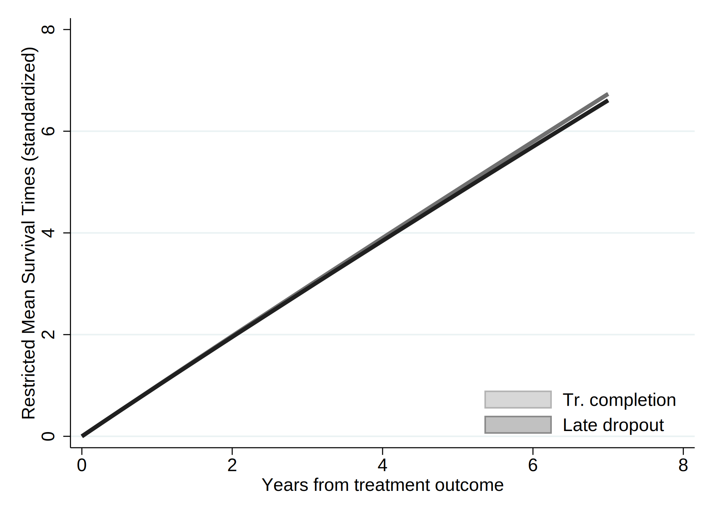

. clear all
. cap noi which tabout
C:\Users\CISS Fondecyt\ado\plus\t\tabout.ado
*! 2.0.8 Ian Watson 15mar2019
*! tabout version 3 (beta) available at: http://tabout.net.au
. if _rc==111 {
. cap noi ssc install tabout
. }
. cap noi which pathutil
C:\Users\CISS Fondecyt\ado\plus\p\pathutil.ado
*! version 2.2.0 19nov2020 daniel klein
. if _rc==111 {
. cap noi net install pathutil, from("http://fmwww.bc.edu/repec/bocode/p/")
. }
. cap noi which pathutil
C:\Users\CISS Fondecyt\ado\plus\p\pathutil.ado
*! version 2.2.0 19nov2020 daniel klein
. if _rc==111 {
. ssc install dirtools
. }
. cap noi which project
C:\Users\CISS Fondecyt\ado\plus\p\project.ado
*! version 1.3.1 22dec2013 picard@netbox.com
. if _rc==111 {
. ssc install project
. }
. cap noi which stipw
C:\Users\CISS Fondecyt\ado\plus\s\stipw.ado
*! Version 1.0.0 17Jan2022
. if _rc==111 {
. ssc install stipw
. }
. cap noi which stpm2
C:\Users\CISS Fondecyt\ado\plus\s\stpm2.ado
*! version 1.7.5 May2021
. if _rc==111 {
. ssc install stpm2
. }
. cap noi which rcsgen
C:\Users\CISS Fondecyt\ado\plus\r\rcsgen.ado
*! version 1.5.9 13FEB2022
. if _rc==111 {
. ssc install rcsgen
. }
. cap noi which matselrc
C:\Users\CISS Fondecyt\ado\plus\m\matselrc.ado
*! NJC 1.1.0 20 Apr 2000 (STB-56: dm79)
. if _rc==111 {
. cap noi net install dm79, from(http://www.stata.com/stb/stb56)
. }
. cap noi which stpm2_standsurv
C:\Users\CISS Fondecyt\ado\plus\s\stpm2_standsurv.ado
*! version 1.1.2 12Jun2018
. if _rc==111 {
. cap noi net install stpm2_standsurv.pkg, from(http://fmwww.bc.edu/RePEc/bocode/s)
. }
. cap noi which fs
C:\Users\CISS Fondecyt\ado\plus\f\fs.ado
*! NJC 1.0.5 23 November 2006
. if _rc==111 {
. ssc install fs
. }
. cap noi which mkspline2
C:\Users\CISS Fondecyt\ado\plus\m\mkspline2.ado
*! version 1.0.0 MLB 04Apr2009
. if _rc==111 {
. ssc install postrcspline
. }
.
Date created: 08:56:18 2 Apr 2023.
Get the folder
C:\Users\CISS Fondecyt\Mi unidad\Alvacast\SISTRAT 2022 (github)
Fecha: 2 Apr 2023, considerando un SO Windows para el usuario: CISS Fondecyt
Path data= ;
Tiempo: 2 Apr 2023, considerando un SO Windows
The file is located and named as: C:\Users\CISS Fondecyt\Mi unidad\Alvacast\SISTRAT 2022 (github)fiscalia_mariel_oct_2022_match_SENDA.dta
=============================================================================
=============================================================================
We open the files
. use "fiscalia_mariel_feb_2023_match_SENDA_pris.dta", clear
.
. *b) select 10% of the data
. /*
> set seed 2125
> sample 10
> */
.
.
. fs mariel_ags_*.do
mariel_ags_b.do mariel_ags_b_m1.do mariel_ags_b_m2.do
. di "`r(dofile)'"
.
. *tostring tr_modality, gen(tr_modality_str)
.
. cap noi encode tr_modality_str, gen(newtr_modality)
variable tr_modality_str not found
. cap confirm variable newtr_modality
. if !_rc {
. cap noi drop tr_modality
. cap noi rename newtr_modality tr_modality
. }
.
. cap noi encode condicion_ocupacional_cor, gen(newcondicion_ocupacional_cor)
not possible with numeric variable
. cap confirm variable newcondicion_ocupacional_cor
. if !_rc {
. cap noi drop condicion_ocupacional_cor
. cap noi rename newcondicion_ocupacional_cor condicion_ocupacional_cor
. }
.
. cap noi encode tipo_centro, gen(newtipo_centro)
variable tipo_centro not found
. cap confirm variable newtipo_centro
. if !_rc {
. cap noi drop tipo_centro
. cap noi rename newtipo_centro tipo_centro
. }
.
. cap noi encode sus_ini_mod_mvv, gen(newsus_ini_mod_mvv)
. cap confirm variable newsus_ini_mod_mvv
. if !_rc {
. cap noi drop sus_ini_mod_mvv
. cap noi rename newsus_ini_mod_mvv sus_ini_mod_mvv
. }
.
. cap noi encode dg_trs_cons_sus_or, gen(newdg_trs_cons_sus_or)
. cap confirm variable newdg_trs_cons_sus_or
. if !_rc {
. cap noi drop dg_trs_cons_sus_or
. cap noi rename newdg_trs_cons_sus_or dg_trs_cons_sus_or
. }
.
. cap noi encode con_quien_vive_joel, gen(newcon_quien_vive_joel)
. cap confirm variable newcon_quien_vive_joel
. if !_rc {
. cap noi drop con_quien_vive_joel
. cap noi rename newcon_quien_vive_joel con_quien_vive_joel
. }
.
.
. *order and encode
. cap noi decode freq_cons_sus_prin, gen(str_freq_cons_sus_prin)
. cap confirm variable str_freq_cons_sus_prin
. if !_rc {
. cap noi drop freq_cons_sus_prin
. label def freq_cons_sus_prin2 1 "Less than 1 day a week" 2 "1 day a week or more" 3 "2 to 3 days a week" 4 "4 to 6 days a week" 5 "Daily"
. encode str_freq_cons_sus_prin, gen(freq_cons_sus_prin) label (freq_cons_sus_prin2)
. }
. cap noi decode dg_trs_cons_sus_or, gen(str_dg_trs_cons_sus_or)
. cap confirm variable str_dg_trs_cons_sus_or
. if !_rc {
. cap noi drop dg_trs_cons_sus_or
. cap label def dg_trs_cons_sus_or2 1 "Hazardous consumption" 2 "Drug dependence"
. encode str_dg_trs_cons_sus_or, gen(dg_trs_cons_sus_or) label (dg_trs_cons_sus_or2)
. }
.
.
. cap noi encode escolaridad_rec, gen(esc_rec)
not possible with numeric variable
. cap noi encode sex, generate(sex_enc)
. cap noi encode sus_principal_mod, gen(sus_prin_mod)
not possible with numeric variable
. cap noi encode freq_cons_sus_prin, gen(fr_sus_prin)
not possible with numeric variable
. cap noi encode compromiso_biopsicosocial, gen(comp_biosoc)
variable compromiso_biopsicosocial not found
. cap noi encode tenencia_de_la_vivienda_mod, gen(ten_viv)
not possible with numeric variable
. *encode dg_cie_10_rec, generate(dg_cie_10_mental_h) *already numeric
. cap noi encode dg_trs_cons_sus_or, gen(sud_severity_icd10)
not possible with numeric variable
. cap noi encode macrozona, gen(macrozone)
not possible with numeric variable
.
. /*
> *2023-02-28, not done in R
> cap noi recode numero_de_hijos_mod (0=0 "No children") (1/10=1 "Children"), gen(newnumero_de_hijos_mod)
> cap confirm variable newnumero_de_hijos_mod
> if !_rc {
> drop numero_de_hijos_mod
> cap noi rename newnumero_de_hijos_mod numero_de_hijos_mod
> }
> */
.
. *same for condemnatory sentence
. mkspline2 rc_x = edad_al_ing_1, cubic nknots(4) displayknots
| knot1 knot2 knot3 knot4
-------------+--------------------------------------------
edad_al_in~1 | 21.18685 29.99178 38.92615 56.32477
.
. *not necessary: 2023-02-28
. *gen motivodeegreso_mod_imp_rec3 = 1
. *replace motivodeegreso_mod_imp_rec3 = 2 if strpos(motivodeegreso_mod_imp_rec,"Early")>0
. *replace motivodeegreso_mod_imp_rec3 = 3 if strpos(motivodeegreso_mod_imp_rec,"Late")>0
.
. *encode policonsumo, generate(policon) *already numeric
. // Generate a restricted cubic spline variable for a variable "x" with 4 knots
. *https://chat.openai.com/chat/4a9396cd-2caa-4a2e-b5f4-ed2c2d0779b3
. *https://www.stata.com/meeting/nordic-and-baltic15/abstracts/materials/sweden15_oskarsson.pdf
. *mkspline xspline = edad_al_ing_1, cubic nknots(4)
. *gen rcs_x = xspline1*xspline2 xspline3 xspline4
.
. *https://www.statalist.org/forums/forum/general-stata-discussion/general/1638622-comparing-cox-proportional-hazard-linear-and-non-linear-restricted-
> cubic-spline-models-using-likelihood-ratio-test
.
We show a table of missing values
. /*
>
> vars_cov<-c("motivodeegreso_mod_imp_rec", "tr_modality", "edad_al_ing_1", "sex", "edad_ini_cons", "escolaridad_rec", "sus_principal_mod", "freq_cons
> _sus_prin", "condicion_ocupacional_corr", "policonsumo", "num_hijos_mod_joel_bin", "tenencia_de_la_vivienda_mod", "macrozona", "n_off_vio", "n_off_a
> cq", "n_off_sud", "n_off_oth", "dg_cie_10_rec", "dg_trs_cons_sus_or", "clas_r", "porc_pobr", "sus_ini_mod_mvv", "ano_nac_corr", "con_quien_vive_joel
> ", "fis_comorbidity_icd_10")
>
> */
.
. misstable sum motivodeegreso_mod_imp_rec tr_modality edad_al_ing_1 sex_enc edad_ini_cons escolaridad_rec sus_principal_mod freq_cons_sus_prin condic
> ion_ocupacional_cor policonsumo num_hijos_mod_joel_bin tenencia_de_la_vivienda_mod macrozona n_off_vio n_off_acq n_off_sud n_off_oth dg_cie_10_rec d
> g_trs_cons_sus_or clas_r porc_pobr sus_ini_mod_mvv ano_nac_corr con_quien_vive_joel fis_comorbidity_icd_10
Obs<.
+------------------------------
| | Unique
Variable | Obs=. Obs>. Obs<. | values Min Max
-------------+--------------------------------+------------------------------
motivodeeg~c | 9 70,854 | 3 1 3
tr_modality | 68 70,795 | 2 1 2
edad_ini_c~s | 5,924 64,939 | 68 5 74
escolarida~c | 317 70,546 | 3 1 3
sus_princi~d | 1 70,862 | 5 1 5
freq_cons_~n | 355 70,508 | 5 1 5
condicion_~r | 1 70,862 | 6 1 6
num_hijos_~n | 604 70,259 | 2 0 1
tenencia_d~d | 4,058 66,805 | 5 1 5
macrozona | 16 70,847 | 3 1 3
dg_trs_con~r | 1 70,862 | 2 1 2
clas_r | 2 70,861 | 3 1 3
porc_pobr | 2 70,861 | >500 .0003295 .6305783
sus_ini_mo~v | 5,787 65,076 | 5 1 5
con_quien_~l | 1 70,862 | 4 1 4
-----------------------------------------------------------------------------
And missing patterns
. misstable pat motivodeegreso_mod_imp_rec tr_modality edad_al_ing_1 sex_enc edad_ini_cons escolaridad_rec sus_principal_mod freq_cons_sus_prin condic
> ion_ocupacional_cor policonsumo num_hijos_mod_joel_bin tenencia_de_la_vivienda_mod macrozona n_off_vio n_off_acq n_off_sud n_off_oth dg_cie_10_rec d
> g_trs_cons_sus_or clas_r porc_pobr sus_ini_mod_mvv ano_nac_corr con_quien_vive_joel fis_comorbidity_icd_10
Missing-value patterns
(1 means complete)
| Pattern
Percent | 1 2 3 4 5 6 7 8 9 10 11 12 13 14 15
------------+----------------------------------------------------
85% | 1 1 1 1 1 1 1 1 1 1 1 1 1 1 1
|
7 | 1 1 1 1 1 1 1 1 1 1 1 1 1 0 0
5 | 1 1 1 1 1 1 1 1 1 1 1 1 0 1 1
<1 | 1 1 1 1 1 1 1 1 1 1 1 0 1 1 1
<1 | 1 1 1 1 1 1 1 1 1 1 1 1 0 0 0
<1 | 1 1 1 1 1 1 1 1 1 1 1 1 1 1 0
<1 | 1 1 1 1 1 1 1 1 1 1 0 1 1 1 1
<1 | 1 1 1 1 1 1 1 1 1 0 1 1 1 1 1
<1 | 1 1 1 1 1 1 1 1 1 1 1 1 1 0 1
<1 | 1 1 1 1 1 1 1 1 1 1 0 1 0 1 1
<1 | 1 1 1 1 1 1 1 1 0 1 1 1 1 1 1
<1 | 1 1 1 1 1 1 1 1 1 0 1 1 1 0 0
<1 | 1 1 1 1 1 1 1 1 1 1 1 0 1 0 0
<1 | 1 1 1 1 1 1 1 1 1 0 1 1 0 1 1
<1 | 1 1 1 1 1 1 1 1 1 1 0 1 0 0 0
<1 | 1 1 1 1 1 1 1 1 1 1 0 1 1 0 0
<1 | 1 1 1 1 1 1 1 1 1 1 1 1 0 1 0
<1 | 1 1 1 1 1 1 1 1 1 1 1 0 0 1 1
<1 | 1 1 1 1 1 1 1 1 1 1 1 1 0 0 1
<1 | 1 1 1 1 1 1 1 1 1 0 1 1 0 0 0
<1 | 1 1 1 1 1 1 1 1 0 1 1 1 0 1 1
<1 | 1 1 1 1 1 1 1 0 1 1 1 1 0 1 1
<1 | 1 1 1 1 1 1 0 1 1 1 1 1 1 1 1
<1 | 1 1 1 1 1 1 1 0 1 1 1 1 1 1 0
<1 | 1 1 1 1 1 1 1 0 1 1 1 1 1 1 1
<1 | 1 1 1 1 1 1 1 1 1 0 1 1 0 1 0
<1 | 1 1 1 1 1 1 1 1 1 0 1 1 1 1 0
<1 | 1 1 1 1 1 1 1 1 0 1 1 1 1 0 0
<1 | 1 1 1 1 1 1 1 1 1 0 0 1 1 1 1
<1 | 0 0 0 0 1 1 1 1 1 0 0 1 0 0 0
<1 | 1 1 1 1 0 0 1 1 0 1 1 1 1 1 1
<1 | 1 1 1 1 0 0 1 1 1 1 1 1 1 1 1
<1 | 1 1 1 1 1 1 0 0 1 1 1 1 1 1 1
<1 | 1 1 1 1 1 1 0 1 1 0 1 1 1 1 1
<1 | 1 1 1 1 1 1 0 1 1 1 1 1 1 0 0
<1 | 1 1 1 1 1 1 1 0 1 1 1 0 1 1 0
<1 | 1 1 1 1 1 1 1 0 1 1 1 1 0 1 0
<1 | 1 1 1 1 1 1 1 1 1 0 0 1 0 0 0
<1 | 1 1 1 1 1 1 1 1 1 0 0 1 0 1 1
<1 | 1 1 1 1 1 1 1 1 1 0 0 1 1 0 0
<1 | 1 1 1 1 1 1 1 1 1 0 1 0 1 0 0
<1 | 1 1 1 1 1 1 1 1 1 0 1 0 1 1 1
<1 | 1 1 1 1 1 1 1 1 1 0 1 1 1 0 1
<1 | 1 1 1 1 1 1 1 1 1 1 0 0 0 1 1
<1 | 1 1 1 1 1 1 1 1 1 1 0 0 1 1 1
<1 | 1 1 1 1 1 1 1 1 1 1 0 1 0 1 0
<1 | 1 1 1 1 1 1 1 1 1 1 0 1 1 0 1
<1 | 1 1 1 1 1 1 1 1 1 1 1 0 0 1 0
<1 | 1 1 1 1 1 1 1 1 1 1 1 0 1 0 1
<1 | 1 1 1 1 1 1 1 1 1 1 1 0 1 1 0
------------+----------------------------------------------------
100% |
Variables are (1) con_quien_vive_joel (2) condicion_ocupacional_corr (3) dg_trs_cons_sus_or (4) sus_principal_mod (5) clas_r (6) porc_pobr
(7) motivodeegreso_mod_imp_rec (8) macrozona (9) tr_modality (10) escolaridad_rec (11) freq_cons_sus_prin
(12) num_hijos_mod_joel_bin (13) tenencia_de_la_vivienda_mod (14) sus_ini_mod_mvv (15) edad_ini_cons
=============================================================================
=============================================================================
Reset-time
. *if missing offender_d (status) , means that there was a record and the time is the time of offense
.
. *set the indicator
. gen event=0
. replace event=1 if !missing(offender_d)
(5,144 real changes made)
. *replace event=1 if !missing(sex)
.
. *correct time to event if _st=0
. gen diff= age_offending_imp-edad_al_egres_imp
. gen diffc= cond(diff<0.001, 0.001, diff)
. drop diff
. rename diffc diff
. lab var diff "Time to offense leading to condemnatory sentence"
.
. *age time
. *stset age_offending_imp, fail(event ==1) enter(edad_al_egres_imp)
. *reset time
. stset diff, failure(event ==1)
failure event: event == 1
obs. time interval: (0, diff]
exit on or before: failure
------------------------------------------------------------------------------
70,863 total observations
0 exclusions
------------------------------------------------------------------------------
70,863 observations remaining, representing
5,144 failures in single-record/single-failure data
302,812.79 total analysis time at risk and under observation
at risk from t = 0
earliest observed entry t = 0
last observed exit t = 10.75828
.
. stdescribe, weight
failure _d: event == 1
analysis time _t: diff
|-------------- per subject --------------|
Category total mean min median max
------------------------------------------------------------------------------
no. of subjects 70863
no. of records 70863 1 1 1 1
(first) entry time 0 0 0 0
(final) exit time 4.273214 .001 3.964384 10.75828
subjects with gap 0
time on gap if gap 0
time at risk 302812.79 4.273214 .001 3.964384 10.75828
failures 5144 .0725908 0 0 1
------------------------------------------------------------------------------
We calculate the incidence rate.
. stsum, by (motivodeegreso_mod_imp_rec)
failure _d: event == 1
analysis time _t: diff
| Incidence Number of |------ Survival time -----|
motivo~c | Time at risk rate subjects 25% 50% 75%
---------+---------------------------------------------------------------------
Treatmen | 76,631.0368 .0086649 19276 . . .
Treatmen | 65,879.5092 .0259717 15797 . . .
Treatmen | 160,259.189 .0172595 35781 . . .
---------+---------------------------------------------------------------------
Total | 302,769.735 .0169799 70854 . . .
. *Micki Hill & Paul C Lambert & Michael J Crowther, 2021. "Introducing stipw: inverse probability weighted parametric survival models," London Stata
> Conference 2021 15, Stata Users Group.
. *https://view.officeapps.live.com/op/view.aspx?src=http%3A%2F%2Ffmwww.bc.edu%2Frepec%2Fusug2021%2Fusug21_hill.pptx&wdOrigin=BROWSELINK
.
. *Treatment variable should be a binary variable with values 0 and 1.
. gen motivodeegreso_mod_imp_rec2 = 0
. replace motivodeegreso_mod_imp_rec2 = 1 if motivodeegreso_mod_imp_rec==2
(15,797 real changes made)
. replace motivodeegreso_mod_imp_rec2 = 1 if motivodeegreso_mod_imp_rec==3
(35,781 real changes made)
.
. recode motivodeegreso_mod_imp_rec2 (0=1 "Tr Completion") (1=0 "Tr Non-completion (Late & Early)"), gen(caus_disch_mod_imp_rec)
(70863 differences between motivodeegreso_mod_imp_rec2 and caus_disch_mod_imp_rec)
.
. cap noi gen motegr_dum3= motivodeegreso_mod_imp_rec2
. replace motegr_dum3 = 0 if motivodeegreso_mod_imp_rec==2
(15,797 real changes made)
. cap noi gen motegr_dum2= motivodeegreso_mod_imp_rec2
. replace motegr_dum2 = 0 if motivodeegreso_mod_imp_rec==3
(35,781 real changes made)
. lab var motegr_dum3 "Baseline treatment outcome(dich, 1= Late Dropout)"
. lab var motegr_dum2 "Baseline treatment outcome(dich, 1= Early Dropout)"
. lab var caus_disch_mod_imp_rec "Baseline treatment outcome(dich)"
.
.
. *Factor variables not allowed for tvc() option. Create your own dummy varibles.
. gen motivodeegreso_mod_imp_rec_earl = 1
. replace motivodeegreso_mod_imp_rec_earl = 0 if motivodeegreso_mod_imp_rec==1
(19,276 real changes made)
. replace motivodeegreso_mod_imp_rec_earl = 0 if motivodeegreso_mod_imp_rec==3
(35,781 real changes made)
.
. gen motivodeegreso_mod_imp_rec_late = 1
. replace motivodeegreso_mod_imp_rec_late = 0 if motivodeegreso_mod_imp_rec==1
(19,276 real changes made)
. replace motivodeegreso_mod_imp_rec_late = 0 if motivodeegreso_mod_imp_rec==2
(15,797 real changes made)
.
. *recode motivodeegreso_mod_imp_rec_earl (1=1 "Early dropout") (0=0 "Tr. comp & Late dropout"), gen(newmotivodeegreso_mod_imp_rec_e)
. *recode motivodeegreso_mod_imp_rec_late (1=1 "Late dropout") (0=0 "Tr. comp & Early dropout"), gen(newmotivodeegreso_mod_imp_rec_l)
.
. lab var motivodeegreso_mod_imp_rec_earl "Baseline treatment outcome- Early dropout(dich)"
. lab var motivodeegreso_mod_imp_rec_late "Baseline treatment outcome- Late dropout(dich)"
.
. cap noi rename motivodeegreso_mod_imp_rec_late mot_egr_late
. cap noi rename motivodeegreso_mod_imp_rec_earl mot_egr_early
=============================================================================
=============================================================================
We generated a graph with every type of treatment and the Nelson-Aalen estimate.
. sts graph, na by (motivodeegreso_mod_imp_rec) ci ///
> title("Comission of an offense (impprisonment)") ///
> subtitle("Nelson-Aalen Cum Hazards w/ Confidence Intervals 95%") ///
> risktable(, size(*.5) order(1 "Tr Completion" 2 "Early Disch" 3 "Late Disch")) ///
> ytitle("Cum. Hazards") ylabel(#8) ///
> xtitle("Years since tr. outcome") xlabel(#8) ///
> note("Source: nDP, SENDA's SUD Treatments & POs Office Data period 2010-2019 ") ///
> legend(rows(3)) ///
> legend(cols(4)) ///
> graphregion(color(white) lwidth(large)) bgcolor(white) ///
> plotregion(fcolor(white)) graphregion(fcolor(white) ) /// //text(.5 1 "IR = <0.001") ///
> legend(order(1 "95CI Tr Completion" 2 "Tr Completion" 3 "95CI Early Tr Disch" 4 "Early Tr Disch " 5 "95CI Late Tr Disch" 6 "Late Tr Disch" )size(*.5
> )region(lstyle(none)) region(c(none)) nobox)
failure _d: event == 1
analysis time _t: diff
(note: named style large not found in class linewidth, default attributes used)
(note: linewidth not found in scheme, default attributes used)
(note: named style large not found in class linewidth, default attributes used)
(note: linewidth not found in scheme, default attributes used)
. graph save "`c(pwd)'\_figs\tto_2023_pris.gph", replace
(file C:\Users\CISS Fondecyt\Mi unidad\Alvacast\SISTRAT 2022 (github)\_figs\tto_2023_pris.gph saved)
=============================================================================
=============================================================================
. /*
> vars_cov<-c("motivodeegreso_mod_imp_rec", "tr_modality", "edad_al_ing_1", "sex", "edad_ini_cons", "escolaridad_rec", "sus_principal_mod", "freq_cons
> _sus_prin", "condicion_ocupacional_corr", "policonsumo", "num_hijos_mod_joel_bin", "tenencia_de_la_vivienda_mod", "macrozona", "n_off_vio", "n_off_a
> cq", "n_off_sud", "n_off_oth", "dg_cie_10_rec", "dg_trs_cons_sus_or", "clas_r", "porc_pobr", "sus_ini_mod_mvv", "ano_nac_corr", "con_quien_vive_joe
> l", "fis_comorbidity_icd_10")
> */
.
. global covs "i.motivodeegreso_mod_imp_rec i.tr_modality i.sex_enc edad_ini_cons i.escolaridad_rec i.sus_principal_mod i.freq_cons_sus_prin i.condici
> on_ocupacional_cor i.policonsumo i.num_hijos_mod_joel_bin i.tenencia_de_la_vivienda_mod i.macrozona i.n_off_vio i.n_off_acq i.n_off_sud i.n_off_oth
> i.dg_cie_10_rec i.dg_trs_cons_sus_or i.clas_r porc_pobr i.sus_ini_mod_mvv ano_nac_corr i.con_quien_vive_joel i.fis_comorbidity_icd_10"
.
.
. qui noi stcox $covs edad_al_ing_1, efron robust nolog schoenfeld(sch_a*) scaledsch(sca_a*) //change _a
failure _d: event == 1
analysis time _t: diff
Cox regression -- Efron method for ties
No. of subjects = 60,247 Number of obs = 60,247
No. of failures = 3,971
Time at risk = 235636.9084
Wald chi2(49) = 4899.58
Log pseudolikelihood = -39767.557 Prob > chi2 = 0.0000
-------------------------------------------------------------------------------------------------------------
| Robust
_t | Haz. Ratio Std. Err. z P>|z| [95% Conf. Interval]
--------------------------------------------+----------------------------------------------------------------
motivodeegreso_mod_imp_rec |
Treatment non-completion (Early) | 1.893343 .1155171 10.46 0.000 1.679947 2.133846
Treatment non-completion (Late) | 1.615254 .0830985 9.32 0.000 1.460326 1.786618
|
tr_modality |
Residential | 1.213021 .0535177 4.38 0.000 1.112536 1.322583
|
sex_enc |
Women | .6047681 .0294192 -10.34 0.000 .5497709 .665267
edad_ini_cons | .9716051 .0047457 -5.90 0.000 .9623482 .9809511
|
escolaridad_rec |
2-Completed high school or less | .8988936 .0324129 -2.96 0.003 .8375583 .9647204
1-More than high school | .724406 .0449833 -5.19 0.000 .6413945 .8181612
|
sus_principal_mod |
Cocaine hydrochloride | 1.188918 .0804801 2.56 0.011 1.041195 1.357598
Cocaine paste | 1.742265 .0964721 10.03 0.000 1.563082 1.941989
Marijuana | 1.1774 .0960346 2.00 0.045 1.003451 1.381505
Other | 1.602489 .2500445 3.02 0.003 1.18026 2.175767
|
freq_cons_sus_prin |
1 day a week or more | .965081 .1095067 -0.31 0.754 .7726429 1.205449
2 to 3 days a week | .9788317 .0909806 -0.23 0.818 .8158127 1.174426
4 to 6 days a week | 1.000066 .0962824 0.00 0.999 .828091 1.207755
Daily | 1.027076 .0952177 0.29 0.773 .8564254 1.231729
|
condicion_ocupacional_corr |
Inactive | 1.027334 .0729764 0.38 0.704 .8938132 1.1808
Looking for a job for the first time | 1.100779 .2864594 0.37 0.712 .6609815 1.833206
No activity | 1.193664 .0879715 2.40 0.016 1.033117 1.37916
Not seeking for work | 1.025036 .1567036 0.16 0.872 .7596449 1.383144
Unemployed | 1.183684 .0465496 4.29 0.000 1.095876 1.278528
|
1.policonsumo | 1.005346 .0495512 0.11 0.914 .9127714 1.107311
1.num_hijos_mod_joel_bin | 1.159625 .0465399 3.69 0.000 1.071904 1.254525
|
tenencia_de_la_vivienda_mod |
Others | 1.049513 .1617296 0.31 0.754 .7759217 1.419573
Owner/Transferred dwellings/Pays Dividends | .9233792 .1253519 -0.59 0.557 .7076632 1.204852
Renting | .9750389 .1335778 -0.18 0.854 .7454346 1.275365
Stays temporarily with a relative | .9454354 .1281242 -0.41 0.679 .7249 1.233064
|
macrozona |
North | 1.436985 .0607238 8.58 0.000 1.322764 1.561069
South | 1.520352 .0990933 6.43 0.000 1.338026 1.727522
|
n_off_vio |
1 | 1.462779 .0578913 9.61 0.000 1.353604 1.580761
|
n_off_acq |
1 | 2.79371 .1008959 28.45 0.000 2.602794 2.998629
|
n_off_sud |
1 | 1.398199 .0532569 8.80 0.000 1.297619 1.506576
|
n_off_oth |
1 | 1.742425 .0661359 14.63 0.000 1.617505 1.876993
|
dg_cie_10_rec |
Diagnosis unknown (under study) | 1.1229 .0563433 2.31 0.021 1.017726 1.238944
With psychiatric comorbidity | 1.103991 .0434116 2.52 0.012 1.022102 1.192441
|
dg_trs_cons_sus_or |
Drug dependence | 1.042081 .0448559 0.96 0.338 .9577718 1.133812
|
clas_r |
Mixta | .9031561 .0581037 -1.58 0.113 .7961622 1.024528
Rural | .8685267 .0605688 -2.02 0.043 .7575697 .9957349
|
porc_pobr | 1.543461 .387863 1.73 0.084 .9431779 2.525793
|
sus_ini_mod_mvv |
Cocaine hydrochloride | 1.189748 .1078452 1.92 0.055 .9960875 1.42106
Cocaine paste | 1.276789 .0840972 3.71 0.000 1.122158 1.452729
Marijuana | 1.171154 .0444812 4.16 0.000 1.087139 1.261663
Other | 1.428192 .1388473 3.67 0.000 1.180413 1.727984
|
ano_nac_corr | .8490027 .0077506 -17.93 0.000 .8339469 .8643303
|
con_quien_vive_joel |
Family of origin | .8832343 .0610389 -1.80 0.072 .7713487 1.011349
Others | 1.078343 .0883292 0.92 0.357 .9184035 1.266137
With couple/children | .9794422 .0669097 -0.30 0.761 .8567018 1.119768
|
fis_comorbidity_icd_10 |
Diagnosis unknown (under study) | 1.056193 .0368851 1.57 0.117 .9863185 1.131018
One or more | .8059857 .0714058 -2.43 0.015 .6775099 .9588243
|
edad_al_ing_1 | .8226295 .0077362 -20.76 0.000 .8076057 .8379329
-------------------------------------------------------------------------------------------------------------
. qui noi estat phtest, log detail
Test of proportional-hazards assumption
Time: Log(t)
----------------------------------------------------------------
| rho chi2 df Prob>chi2
------------+---------------------------------------------------
1b.motivod~c| . . 1 .
2.motivode~c| -0.05059 10.53 1 0.0012
3.motivode~c| -0.03586 5.26 1 0.0218
1b.tr_moda~y| . . 1 .
2.tr_modal~y| 0.01507 1.06 1 0.3037
1b.sex_enc | . . 1 .
2.sex_enc | -0.04339 7.62 1 0.0058
edad_ini_c~s| 0.03986 6.91 1 0.0085
1b.escolar~c| . . 1 .
2.escolari~c| -0.01171 0.59 1 0.4431
3.escolari~c| 0.02373 2.35 1 0.1249
1b.sus_pri~d| . . 1 .
2.sus_prin~d| 0.00409 0.07 1 0.7936
3.sus_prin~d| -0.00610 0.16 1 0.6875
4.sus_prin~d| 0.01437 0.89 1 0.3447
5.sus_prin~d| -0.03449 5.40 1 0.0201
1b.freq_co~n| . . 1 .
2.freq_con~n| 0.01951 1.58 1 0.2086
3.freq_con~n| -0.00189 0.02 1 0.9025
4.freq_con~n| -0.01001 0.42 1 0.5158
5.freq_con~n| -0.00734 0.23 1 0.6305
1b.condici~r| . . 1 .
2.condicio~r| 0.02791 3.08 1 0.0793
3.condicio~r| 0.00173 0.01 1 0.9149
4.condicio~r| -0.00312 0.04 1 0.8393
5.condicio~r| 0.01235 0.60 1 0.4369
6.condicio~r| -0.01120 0.51 1 0.4754
0b.policon~o| . . 1 .
1.policons~o| -0.03022 3.84 1 0.0500
0b.num_hij~n| . . 1 .
1.num_hijo~n| -0.00038 0.00 1 0.9803
1b.tenenci~d| . . 1 .
2.tenencia~d| 0.01153 0.60 1 0.4371
3.tenencia~d| 0.00626 0.19 1 0.6666
4.tenencia~d| 0.00253 0.03 1 0.8619
5.tenencia~d| 0.01017 0.49 1 0.4841
1b.macrozona| . . 1 .
2.macrozona | 0.03208 4.26 1 0.0391
3.macrozona | -0.01009 0.45 1 0.5024
1b.n_off_vio| . . 1 .
2.n_off_vio | -0.00915 0.39 1 0.5303
1b.n_off_acq| . . 1 .
2.n_off_acq | -0.06145 18.23 1 0.0000
1b.n_off_sud| . . 1 .
2.n_off_sud | 0.00104 0.01 1 0.9430
1b.n_off_oth| . . 1 .
2.n_off_oth | -0.03930 7.12 1 0.0076
1b.dg_cie_~c| . . 1 .
2.dg_cie_1~c| 0.01661 1.16 1 0.2813
3.dg_cie_1~c| -0.02129 1.95 1 0.1624
1b.dg_trs_~r| . . 1 .
2.dg_trs_c~r| 0.00988 0.41 1 0.5215
1b.clas_r | . . 1 .
2.clas_r | 0.00879 0.35 1 0.5546
3.clas_r | 0.02052 1.77 1 0.1833
porc_pobr | -0.01220 0.61 1 0.4341
1b.sus_ini~v| . . 1 .
2.sus_ini_~v| 0.01219 0.58 1 0.4457
3.sus_ini_~v| -0.00555 0.13 1 0.7173
4.sus_ini_~v| -0.00124 0.01 1 0.9350
5.sus_ini_~v| -0.01537 1.08 1 0.2986
ano_nac_corr| -0.04172 5.99 1 0.0144
1b.con_qui~l| . . 1 .
2.con_quie~l| -0.01158 0.59 1 0.4437
3.con_quie~l| -0.01958 1.65 1 0.1986
4.con_quie~l| 0.01517 1.01 1 0.3152
1b.fis_co~10| . . 1 .
2.fis_com~10| 0.00406 0.07 1 0.7934
3.fis_com~10| -0.01001 0.43 1 0.5135
edad_al_in~1| -0.05740 11.94 1 0.0005
------------+---------------------------------------------------
global test | 158.90 49 0.0000
----------------------------------------------------------------
note: robust variance-covariance matrix used.
. mat mat_scho_test = r(phtest)
. scalar chi2_scho_test = r(chi2)
. scalar chi2_scho_test_df = r(df)
. scalar chi2_scho_test_p = r(p)
.
. esttab matrix(mat_scho_test) using "mat_scho_test_02_2023_1_pris.csv", replace
(output written to mat_scho_test_02_2023_1_pris.csv)
. esttab matrix(mat_scho_test) using "mat_scho_test_02_2023_1_pris.html", replace
(output written to mat_scho_test_02_2023_1_pris.html)
.
Chi^2(49)= 158.9, p= 0
| mat_scho_test | ||||
| rho | chi2 | df | p | |
| 1b.motivodeegreso_mod_imp_rec | . | . | 1 | . |
| 2.motivodeegreso_mod_imp_rec | -.0505855 | 10.53056 | 1 | .0011742 |
| 3.motivodeegreso_mod_imp_rec | -.0358612 | 5.261426 | 1 | .0218032 |
| 1b.tr_modality | . | . | 1 | . |
| 2.tr_modality | .015071 | 1.057964 | 1 | .30368 |
| 1b.sex_enc | . | . | 1 | . |
| 2.sex_enc | -.0433908 | 7.618497 | 1 | .0057773 |
| edad_ini_cons | .0398606 | 6.914851 | 1 | .0085483 |
| 1b.escolaridad_rec | . | . | 1 | . |
| 2.escolaridad_rec | -.0117144 | .5883052 | 1 | .4430753 |
| 3.escolaridad_rec | .0237257 | 2.354241 | 1 | .1249427 |
| 1b.sus_principal_mod | . | . | 1 | . |
| 2.sus_principal_mod | .0040949 | .0684282 | 1 | .7936393 |
| 3.sus_principal_mod | -.0060988 | .1617882 | 1 | .6875155 |
| 4.sus_principal_mod | .0143697 | .8929738 | 1 | .3446727 |
| 5.sus_principal_mod | -.0344916 | 5.40097 | 1 | .0201256 |
| 1b.freq_cons_sus_prin | . | . | 1 | . |
| 2.freq_cons_sus_prin | .0195059 | 1.581007 | 1 | .2086158 |
| 3.freq_cons_sus_prin | -.0018923 | .0150174 | 1 | .9024671 |
| 4.freq_cons_sus_prin | -.0100098 | .4223019 | 1 | .5157907 |
| 5.freq_cons_sus_prin | -.0073376 | .2313167 | 1 | .6305493 |
| 1b.condicion_ocupacional_corr | . | . | 1 | . |
| 2.condicion_ocupacional_corr | .0279073 | 3.07992 | 1 | .0792644 |
| 3.condicion_ocupacional_corr | .0017338 | .0114057 | 1 | .9149497 |
| 4.condicion_ocupacional_corr | -.0031215 | .0411386 | 1 | .8392706 |
| 5.condicion_ocupacional_corr | .0123507 | .6045029 | 1 | .4368651 |
| 6.condicion_ocupacional_corr | -.0111956 | .5093345 | 1 | .4754271 |
| 0b.policonsumo | . | . | 1 | . |
| 1.policonsumo | -.0302215 | 3.842904 | 1 | .0499569 |
| 0b.num_hijos_mod_joel_bin | . | . | 1 | . |
| 1.num_hijos_mod_joel_bin | -.0003791 | .0006091 | 1 | .9803103 |
| 1b.tenencia_de_la_vivienda_mod | . | . | 1 | . |
| 2.tenencia_de_la_vivienda_mod | .0115322 | .6038898 | 1 | .4370977 |
| 3.tenencia_de_la_vivienda_mod | .0062635 | .1855696 | 1 | .6666299 |
| 4.tenencia_de_la_vivienda_mod | .0025333 | .0302815 | 1 | .8618531 |
| 5.tenencia_de_la_vivienda_mod | .0101733 | .489641 | 1 | .4840875 |
| 1b.macrozona | . | . | 1 | . |
| 2.macrozona | .0320817 | 4.258089 | 1 | .0390638 |
| 3.macrozona | -.0100901 | .4497977 | 1 | .5024311 |
| 1b.n_off_vio | . | . | 1 | . |
| 2.n_off_vio | -.0091515 | .3938548 | 1 | .5302801 |
| 1b.n_off_acq | . | . | 1 | . |
| 2.n_off_acq | -.0614513 | 18.2312 | 1 | .0000196 |
| 1b.n_off_sud | . | . | 1 | . |
| 2.n_off_sud | .001039 | .0051103 | 1 | .9430109 |
| 1b.n_off_oth | . | . | 1 | . |
| 2.n_off_oth | -.0392972 | 7.119297 | 1 | .0076259 |
| 1b.dg_cie_10_rec | . | . | 1 | . |
| 2.dg_cie_10_rec | .0166141 | 1.16072 | 1 | .2813163 |
| 3.dg_cie_10_rec | -.0212859 | 1.951763 | 1 | .162397 |
| 1b.dg_trs_cons_sus_or | . | . | 1 | . |
| 2.dg_trs_cons_sus_or | .0098824 | .4109435 | 1 | .521491 |
| 1b.clas_r | . | . | 1 | . |
| 2.clas_r | .0087935 | .3490787 | 1 | .5546351 |
| 3.clas_r | .0205235 | 1.770267 | 1 | .1833491 |
| porc_pobr | -.0121971 | .6117374 | 1 | .4341344 |
| 1b.sus_ini_mod_mvv | . | . | 1 | . |
| 2.sus_ini_mod_mvv | .0121904 | .581623 | 1 | .4456769 |
| 3.sus_ini_mod_mvv | -.0055531 | .1310749 | 1 | .7173202 |
| 4.sus_ini_mod_mvv | -.0012447 | .0066507 | 1 | .9350033 |
| 5.sus_ini_mod_mvv | -.015372 | 1.080382 | 1 | .2986122 |
| ano_nac_corr | -.041718 | 5.989176 | 1 | .0143939 |
| 1b.con_quien_vive_joel | . | . | 1 | . |
| 2.con_quien_vive_joel | -.0115847 | .5865831 | 1 | .4437435 |
| 3.con_quien_vive_joel | -.0195801 | 1.65292 | 1 | .198562 |
| 4.con_quien_vive_joel | .0151687 | 1.008687 | 1 | .3152175 |
| 1b.fis_comorbidity_icd_10 | . | . | 1 | . |
| 2.fis_comorbidity_icd_10 | .0040638 | .0685903 | 1 | .7934005 |
| 3.fis_comorbidity_icd_10 | -.0100107 | .4268851 | 1 | .5135213 |
| edad_al_ing_1 | -.0574039 | 11.93863 | 1 | .0005498 |
. // VERIFY FIRST SPLINE VARIABLE IS THE ORIGINAL VARIABLE
. assert float(edad_al_ing_1) == float(rc_x1)
.
. // MODEL WITH FULL SPLINE
. qui noi stcox $covs rc*
failure _d: event == 1
analysis time _t: diff
Iteration 0: log likelihood = -42140.282
Iteration 1: log likelihood = -40144.884
Iteration 2: log likelihood = -39754.335
Iteration 3: log likelihood = -39752.062
Iteration 4: log likelihood = -39752.058
Refining estimates:
Iteration 0: log likelihood = -39752.058
Cox regression -- Breslow method for ties
No. of subjects = 60,247 Number of obs = 60,247
No. of failures = 3,971
Time at risk = 235636.9084
LR chi2(51) = 4776.45
Log likelihood = -39752.058 Prob > chi2 = 0.0000
-------------------------------------------------------------------------------------------------------------
_t | Haz. Ratio Std. Err. z P>|z| [95% Conf. Interval]
--------------------------------------------+----------------------------------------------------------------
motivodeegreso_mod_imp_rec |
Treatment non-completion (Early) | 1.893387 .114328 10.57 0.000 1.68206 2.131264
Treatment non-completion (Late) | 1.613756 .082803 9.33 0.000 1.459359 1.784488
|
tr_modality |
Residential | 1.219599 .0518923 4.67 0.000 1.122017 1.325667
|
sex_enc |
Women | .6063769 .0294939 -10.28 0.000 .5512397 .6670291
edad_ini_cons | .9713696 .0047141 -5.99 0.000 .9621738 .9806532
|
escolaridad_rec |
2-Completed high school or less | .8823829 .0313629 -3.52 0.000 .823005 .9460449
1-More than high school | .6983125 .0432768 -5.79 0.000 .6184407 .7884999
|
sus_principal_mod |
Cocaine hydrochloride | 1.160171 .0785268 2.19 0.028 1.016033 1.324756
Cocaine paste | 1.686672 .0920129 9.58 0.000 1.515637 1.877008
Marijuana | 1.174471 .0936743 2.02 0.044 1.004504 1.373198
Other | 1.60089 .2406791 3.13 0.002 1.192315 2.149472
|
freq_cons_sus_prin |
1 day a week or more | .9665919 .1087656 -0.30 0.763 .7752858 1.205104
2 to 3 days a week | .978547 .089432 -0.24 0.812 .8180655 1.17051
4 to 6 days a week | 1.003253 .0951207 0.03 0.973 .8331169 1.208133
Daily | 1.028611 .0933393 0.31 0.756 .861015 1.22883
|
condicion_ocupacional_corr |
Inactive | 1.051563 .0747472 0.71 0.479 .9148085 1.208761
Looking for a job for the first time | 1.155319 .3116902 0.54 0.593 .6808613 1.960402
No activity | 1.222687 .0891848 2.76 0.006 1.059808 1.410598
Not seeking for work | 1.060001 .164504 0.38 0.707 .7819993 1.436833
Unemployed | 1.192953 .0466641 4.51 0.000 1.104911 1.28801
|
1.policonsumo | .9911901 .0486007 -0.18 0.857 .9003685 1.091173
1.num_hijos_mod_joel_bin | 1.124615 .0447498 2.95 0.003 1.04024 1.215834
|
tenencia_de_la_vivienda_mod |
Others | 1.053017 .1531197 0.36 0.722 .7918847 1.400261
Owner/Transferred dwellings/Pays Dividends | .9354223 .1183719 -0.53 0.598 .7299505 1.198732
Renting | .9714143 .1240264 -0.23 0.820 .7563562 1.247621
Stays temporarily with a relative | .9457054 .1194975 -0.44 0.659 .7382437 1.211468
|
macrozona |
North | 1.45097 .0608843 8.87 0.000 1.336415 1.575346
South | 1.519347 .0962216 6.60 0.000 1.341991 1.720142
|
n_off_vio |
1 | 1.467445 .0554534 10.15 0.000 1.362686 1.580258
|
n_off_acq |
1 | 2.798207 .097208 29.62 0.000 2.614025 2.995368
|
n_off_sud |
1 | 1.389128 .0506389 9.02 0.000 1.293341 1.49201
|
n_off_oth |
1 | 1.736869 .0634168 15.12 0.000 1.616918 1.865719
|
dg_cie_10_rec |
Diagnosis unknown (under study) | 1.120116 .0551691 2.30 0.021 1.017042 1.233637
With psychiatric comorbidity | 1.098108 .0423432 2.43 0.015 1.018175 1.184315
|
dg_trs_cons_sus_or |
Drug dependence | 1.036542 .0441344 0.84 0.399 .9535508 1.126755
|
clas_r |
Mixta | .9001307 .0560762 -1.69 0.091 .7966684 1.01703
Rural | .8620275 .0596641 -2.15 0.032 .7526729 .9872701
|
porc_pobr | 1.553654 .3891829 1.76 0.079 .950895 2.538495
|
sus_ini_mod_mvv |
Cocaine hydrochloride | 1.186979 .1082062 1.88 0.060 .9927655 1.419186
Cocaine paste | 1.269512 .0818297 3.70 0.000 1.118847 1.440467
Marijuana | 1.17805 .0439385 4.39 0.000 1.095004 1.267393
Other | 1.421008 .1319288 3.78 0.000 1.184594 1.704604
|
ano_nac_corr | .849161 .0080211 -17.31 0.000 .8335846 .8650284
|
con_quien_vive_joel |
Family of origin | .8820258 .0593114 -1.87 0.062 .7731124 1.006282
Others | 1.078223 .0862885 0.94 0.347 .9216974 1.261331
With couple/children | .9674378 .0644946 -0.50 0.619 .8489407 1.102475
|
fis_comorbidity_icd_10 |
Diagnosis unknown (under study) | 1.0583 .0364898 1.64 0.100 .9891445 1.132291
One or more | .8195873 .0710186 -2.30 0.022 .6915716 .9712998
|
rc_x1 | .8497888 .0101842 -13.58 0.000 .8300608 .8699857
rc_x2 | .8799622 .0351027 -3.21 0.001 .8137829 .9515233
rc_x3 | 1.28374 .1365716 2.35 0.019 1.042129 1.581367
-------------------------------------------------------------------------------------------------------------
. estat ic
Akaike's information criterion and Bayesian information criterion
-----------------------------------------------------------------------------
Model | N ll(null) ll(model) df AIC BIC
-------------+---------------------------------------------------------------
. | 60,247 -42140.28 -39752.06 51 79606.12 80065.43
-----------------------------------------------------------------------------
Note: BIC uses N = number of observations. See [R] BIC note.
. estimates store full_spline
. scalar ll_1= e(ll)
. // MODEL WITH ONLY LINEAR TERM
. qui noi stcox $covs rc_x1
failure _d: event == 1
analysis time _t: diff
Iteration 0: log likelihood = -42140.282
Iteration 1: log likelihood = -40130.013
Iteration 2: log likelihood = -39768.772
Iteration 3: log likelihood = -39767.558
Iteration 4: log likelihood = -39767.558
Refining estimates:
Iteration 0: log likelihood = -39767.558
Cox regression -- Breslow method for ties
No. of subjects = 60,247 Number of obs = 60,247
No. of failures = 3,971
Time at risk = 235636.9084
LR chi2(49) = 4745.45
Log likelihood = -39767.558 Prob > chi2 = 0.0000
-------------------------------------------------------------------------------------------------------------
_t | Haz. Ratio Std. Err. z P>|z| [95% Conf. Interval]
--------------------------------------------+----------------------------------------------------------------
motivodeegreso_mod_imp_rec |
Treatment non-completion (Early) | 1.893343 .1143877 10.57 0.000 1.681912 2.131352
Treatment non-completion (Late) | 1.615254 .0828933 9.34 0.000 1.46069 1.786174
|
tr_modality |
Residential | 1.213022 .0515964 4.54 0.000 1.115995 1.318484
|
sex_enc |
Women | .604768 .0293792 -10.35 0.000 .5498422 .6651806
edad_ini_cons | .9716051 .004664 -6.00 0.000 .9625068 .9807895
|
escolaridad_rec |
2-Completed high school or less | .8988937 .0318097 -3.01 0.003 .8386607 .9634526
1-More than high school | .7244061 .0446441 -5.23 0.000 .6419833 .8174109
|
sus_principal_mod |
Cocaine hydrochloride | 1.188917 .0804929 2.56 0.011 1.041173 1.357626
Cocaine paste | 1.742265 .0949108 10.19 0.000 1.56583 1.93858
Marijuana | 1.1774 .0940979 2.04 0.041 1.006691 1.377058
Other | 1.602489 .2412605 3.13 0.002 1.193008 2.152516
|
freq_cons_sus_prin |
1 day a week or more | .9650809 .1085998 -0.32 0.752 .7740672 1.20323
2 to 3 days a week | .9788315 .0894647 -0.23 0.815 .8182925 1.170866
4 to 6 days a week | 1.000065 .0948307 0.00 0.999 .8304503 1.204323
Daily | 1.027075 .0932082 0.29 0.768 .8597157 1.227015
|
condicion_ocupacional_corr |
Inactive | 1.027334 .0727596 0.38 0.703 .8941831 1.180312
Looking for a job for the first time | 1.10078 .2968384 0.36 0.722 .648879 1.867399
No activity | 1.193664 .0869341 2.43 0.015 1.034879 1.376813
Not seeking for work | 1.025036 .1590235 0.16 0.873 .7562831 1.389294
Unemployed | 1.183684 .0462946 4.31 0.000 1.096339 1.277988
|
1.policonsumo | 1.005346 .0493259 0.11 0.913 .9131721 1.106824
1.num_hijos_mod_joel_bin | 1.159626 .0457771 3.75 0.000 1.073287 1.25291
|
tenencia_de_la_vivienda_mod |
Others | 1.049511 .1526907 0.33 0.740 .789129 1.39581
Owner/Transferred dwellings/Pays Dividends | .923379 .1168685 -0.63 0.529 .7205211 1.18335
Renting | .9750384 .1245086 -0.20 0.843 .7591482 1.252325
Stays temporarily with a relative | .9454351 .1195051 -0.44 0.657 .7379688 1.211227
|
macrozona |
North | 1.436985 .060249 8.65 0.000 1.323621 1.560058
South | 1.520351 .0962445 6.62 0.000 1.342948 1.721188
|
n_off_vio |
1 | 1.46278 .0552954 10.06 0.000 1.35832 1.575273
|
n_off_acq |
1 | 2.793709 .097193 29.53 0.000 2.609564 2.990849
|
n_off_sud |
1 | 1.398199 .0509371 9.20 0.000 1.301845 1.501684
|
n_off_oth |
1 | 1.742425 .0636013 15.21 0.000 1.622124 1.871649
|
dg_cie_10_rec |
Diagnosis unknown (under study) | 1.122901 .0553074 2.35 0.019 1.019568 1.236706
With psychiatric comorbidity | 1.103992 .0425498 2.57 0.010 1.023668 1.190619
|
dg_trs_cons_sus_or |
Drug dependence | 1.042081 .0443403 0.97 0.333 .9587013 1.132713
|
clas_r |
Mixta | .9031563 .0562495 -1.64 0.102 .7993725 1.020415
Rural | .8685269 .0601068 -2.04 0.042 .7583602 .9946976
|
porc_pobr | 1.54346 .3861859 1.73 0.083 .945188 2.52042
|
sus_ini_mod_mvv |
Cocaine hydrochloride | 1.189748 .1084572 1.91 0.057 .9950837 1.422494
Cocaine paste | 1.27679 .0823036 3.79 0.000 1.125252 1.448735
Marijuana | 1.171154 .0437164 4.23 0.000 1.088531 1.260049
Other | 1.428193 .1326884 3.84 0.000 1.190432 1.71344
|
ano_nac_corr | .8490027 .0080164 -17.34 0.000 .8334352 .8648609
|
con_quien_vive_joel |
Family of origin | .883235 .0595004 -1.84 0.065 .7739873 1.007903
Others | 1.078344 .086368 0.94 0.346 .9216835 1.261632
With couple/children | .9794429 .0652737 -0.31 0.755 .8595119 1.116108
|
fis_comorbidity_icd_10 |
Diagnosis unknown (under study) | 1.056193 .0364207 1.59 0.113 .9871687 1.130044
One or more | .8059858 .0698305 -2.49 0.013 .6801103 .9551584
|
rc_x1 | .8226295 .0079032 -20.32 0.000 .8072845 .8382662
-------------------------------------------------------------------------------------------------------------
. estat ic
Akaike's information criterion and Bayesian information criterion
-----------------------------------------------------------------------------
Model | N ll(null) ll(model) df AIC BIC
-------------+---------------------------------------------------------------
. | 60,247 -42140.28 -39767.56 49 79633.12 80074.42
-----------------------------------------------------------------------------
Note: BIC uses N = number of observations. See [R] BIC note.
. scalar ll_2= e(ll)
. estimates store linear_term
.
. lrtest full_spline linear_term
Likelihood-ratio test LR chi2(2) = 31.00
(Assumption: linear_term nested in full_spline) Prob > chi2 = 0.0000
.
. scalar ll_diff= round(`=scalar(ll_1)'-`=scalar(ll_2)',.01)
. di "Log-likelihood difference (spline - linear): `=scalar(ll_diff)'"
Log-likelihood difference (spline - linear): 15.5
.
. * the presence of censored observations makes it difficult to decide further among them. (This is partly due to the fact that both the Cox model and
> the parametric survival models assume that censoring is orthogonal to survival time, a mathematically handy assumption that is often demonstrably a
> nd seriously in error, and the actual data generation process for survival is often too unknown or too messy to simulate.) So in this context, relia
> nce on LR tests or IC statistics is a fallback position.
Log-likelihood difference (spline - linear): 15.5
Nevetheless, we chose the model with spline terms due to linearity over a better fit.
. *Micki Hill & Paul C Lambert & Michael J Crowther, 2021. "Introducing stipw: inverse probability weighted parametric survival models," London Stata
> Conference 2021 15, Stata Users Group.
. *https://view.officeapps.live.com/op/view.aspx?src=http%3A%2F%2Ffmwww.bc.edu%2Frepec%2Fusug2021%2Fusug21_hill.pptx&wdOrigin=BROWSELINK
.
. *Treatment variable should be a binary variable with values 0 and 1.
.
. qui noi stcox $covs rc_x*, efron robust nolog schoenfeld(sch_b*) scaledsch(sca_b*) //change _b
failure _d: event == 1
analysis time _t: diff
Cox regression -- Efron method for ties
No. of subjects = 60,247 Number of obs = 60,247
No. of failures = 3,971
Time at risk = 235636.9084
Wald chi2(51) = 4759.03
Log pseudolikelihood = -39752.057 Prob > chi2 = 0.0000
-------------------------------------------------------------------------------------------------------------
| Robust
_t | Haz. Ratio Std. Err. z P>|z| [95% Conf. Interval]
--------------------------------------------+----------------------------------------------------------------
motivodeegreso_mod_imp_rec |
Treatment non-completion (Early) | 1.893387 .1153755 10.48 0.000 1.680237 2.133577
Treatment non-completion (Late) | 1.613756 .0829994 9.30 0.000 1.459011 1.784914
|
tr_modality |
Residential | 1.219598 .0537778 4.50 0.000 1.118622 1.32969
|
sex_enc |
Women | .606377 .0295194 -10.28 0.000 .5511944 .667084
edad_ini_cons | .9713696 .0048511 -5.82 0.000 .9619079 .9809242
|
escolaridad_rec |
2-Completed high school or less | .8823828 .03187 -3.46 0.001 .8220785 .9471109
1-More than high school | .6983125 .0435408 -5.76 0.000 .6179825 .7890843
|
sus_principal_mod |
Cocaine hydrochloride | 1.160171 .0783958 2.20 0.028 1.016258 1.324463
Cocaine paste | 1.686673 .0932598 9.45 0.000 1.513443 1.87973
Marijuana | 1.174471 .0953522 1.98 0.048 1.001695 1.377048
Other | 1.60089 .2494801 3.02 0.003 1.179537 2.172758
|
freq_cons_sus_prin |
1 day a week or more | .966592 .1096613 -0.30 0.765 .7738792 1.207295
2 to 3 days a week | .9785472 .0909173 -0.23 0.815 .8156357 1.173998
4 to 6 days a week | 1.003253 .0965246 0.03 0.973 .8308353 1.211451
Daily | 1.028612 .0953241 0.30 0.761 .8577651 1.233487
|
condicion_ocupacional_corr |
Inactive | 1.051563 .0750485 0.70 0.481 .9142947 1.20944
Looking for a job for the first time | 1.155319 .2988474 0.56 0.577 .6958581 1.918152
No activity | 1.222686 .0902503 2.72 0.006 1.057999 1.413009
Not seeking for work | 1.060001 .1616386 0.38 0.702 .7861531 1.42924
Unemployed | 1.192953 .0469334 4.48 0.000 1.104422 1.28858
|
1.policonsumo | .9911903 .0487254 -0.18 0.857 .9001467 1.091442
1.num_hijos_mod_joel_bin | 1.124615 .0453907 2.91 0.004 1.039078 1.217192
|
tenencia_de_la_vivienda_mod |
Others | 1.053019 .1611484 0.34 0.736 .7801405 1.421345
Owner/Transferred dwellings/Pays Dividends | .9354226 .1259764 -0.50 0.620 .7184123 1.217985
Renting | .9714148 .132006 -0.21 0.831 .7442769 1.26787
Stays temporarily with a relative | .9457056 .1271121 -0.42 0.678 .7266849 1.230739
|
macrozona |
North | 1.45097 .0613192 8.81 0.000 1.335629 1.576271
South | 1.519348 .0989633 6.42 0.000 1.337254 1.726238
|
n_off_vio |
1 | 1.467445 .0579478 9.71 0.000 1.358153 1.585531
|
n_off_acq |
1 | 2.798208 .1007418 28.58 0.000 2.607563 3.002791
|
n_off_sud |
1 | 1.389129 .0528773 8.63 0.000 1.289263 1.496731
|
n_off_oth |
1 | 1.736869 .0658694 14.56 0.000 1.612449 1.87089
|
dg_cie_10_rec |
Diagnosis unknown (under study) | 1.120116 .0561053 2.26 0.024 1.015377 1.235659
With psychiatric comorbidity | 1.098107 .0432098 2.38 0.017 1.016601 1.186148
|
dg_trs_cons_sus_or |
Drug dependence | 1.036541 .04462 0.83 0.404 .9526756 1.12779
|
clas_r |
Mixta | .9001304 .0578332 -1.64 0.102 .793626 1.020928
Rural | .8620272 .0601237 -2.13 0.033 .7518866 .9883019
|
porc_pobr | 1.553655 .3909832 1.75 0.080 .9487385 2.544267
|
sus_ini_mod_mvv |
Cocaine hydrochloride | 1.186979 .1074285 1.89 0.058 .9940411 1.417365
Cocaine paste | 1.269512 .0833532 3.63 0.000 1.116218 1.443859
Marijuana | 1.17805 .0446242 4.33 0.000 1.093756 1.26884
Other | 1.421008 .1378702 3.62 0.000 1.174926 1.71863
|
ano_nac_corr | .849161 .0077491 -17.92 0.000 .8341081 .8644856
|
con_quien_vive_joel |
Family of origin | .8820251 .060847 -1.82 0.069 .7704781 1.009722
Others | 1.078223 .0882911 0.92 0.358 .9183479 1.26593
With couple/children | .9674371 .0661817 -0.48 0.628 .8460433 1.106249
|
fis_comorbidity_icd_10 |
Diagnosis unknown (under study) | 1.0583 .0369221 1.62 0.104 .9883529 1.133198
One or more | .8195872 .0724765 -2.25 0.024 .6891647 .9746919
|
rc_x1 | .8497889 .0101321 -13.65 0.000 .8301605 .8698814
rc_x2 | .8799619 .0356904 -3.15 0.002 .8127183 .9527693
rc_x3 | 1.283741 .1382809 2.32 0.020 1.039413 1.5855
-------------------------------------------------------------------------------------------------------------
. qui noi estat phtest, log detail
Test of proportional-hazards assumption
Time: Log(t)
----------------------------------------------------------------
| rho chi2 df Prob>chi2
------------+---------------------------------------------------
1b.motivod~c| . . 1 .
2.motivode~c| -0.05005 10.28 1 0.0013
3.motivode~c| -0.03528 5.10 1 0.0239
1b.tr_moda~y| . . 1 .
2.tr_modal~y| 0.01373 0.88 1 0.3491
1b.sex_enc | . . 1 .
2.sex_enc | -0.04371 7.74 1 0.0054
edad_ini_c~s| 0.03926 7.02 1 0.0081
1b.escolar~c| . . 1 .
2.escolari~c| -0.00937 0.37 1 0.5414
3.escolari~c| 0.02602 2.82 1 0.0934
1b.sus_pri~d| . . 1 .
2.sus_prin~d| 0.00558 0.13 1 0.7225
3.sus_prin~d| -0.00354 0.05 1 0.8165
4.sus_prin~d| 0.01438 0.89 1 0.3465
5.sus_prin~d| -0.03383 5.17 1 0.0230
1b.freq_co~n| . . 1 .
2.freq_con~n| 0.01849 1.43 1 0.2317
3.freq_con~n| -0.00275 0.03 1 0.8583
4.freq_con~n| -0.01090 0.50 1 0.4778
5.freq_con~n| -0.00835 0.30 1 0.5825
1b.condici~r| . . 1 .
2.condicio~r| 0.02585 2.67 1 0.1024
3.condicio~r| 0.00033 0.00 1 0.9840
4.condicio~r| -0.00472 0.09 1 0.7580
5.condicio~r| 0.01129 0.50 1 0.4788
6.condicio~r| -0.01198 0.58 1 0.4446
0b.policon~o| . . 1 .
1.policons~o| -0.02873 3.44 1 0.0638
0b.num_hij~n| . . 1 .
1.num_hijo~n| 0.00372 0.06 1 0.8093
1b.tenenci~d| . . 1 .
2.tenencia~d| 0.01112 0.55 1 0.4569
3.tenencia~d| 0.00521 0.13 1 0.7222
4.tenencia~d| 0.00190 0.02 1 0.8969
5.tenencia~d| 0.00985 0.45 1 0.5017
1b.macrozona| . . 1 .
2.macrozona | 0.03079 3.92 1 0.0478
3.macrozona | -0.00960 0.41 1 0.5233
1b.n_off_vio| . . 1 .
2.n_off_vio | -0.01015 0.48 1 0.4868
1b.n_off_acq| . . 1 .
2.n_off_acq | -0.06123 18.01 1 0.0000
1b.n_off_sud| . . 1 .
2.n_off_sud | 0.00293 0.04 1 0.8400
1b.n_off_oth| . . 1 .
2.n_off_oth | -0.03847 6.81 1 0.0091
1b.dg_cie_~c| . . 1 .
2.dg_cie_1~c| 0.01716 1.23 1 0.2666
3.dg_cie_1~c| -0.02002 1.74 1 0.1871
1b.dg_trs_~r| . . 1 .
2.dg_trs_c~r| 0.01024 0.44 1 0.5065
1b.clas_r | . . 1 .
2.clas_r | 0.00911 0.37 1 0.5411
3.clas_r | 0.02121 1.90 1 0.1686
porc_pobr | -0.01235 0.63 1 0.4273
1b.sus_ini~v| . . 1 .
2.sus_ini_~v| 0.01152 0.52 1 0.4717
3.sus_ini_~v| -0.00471 0.09 1 0.7594
4.sus_ini_~v| -0.00214 0.02 1 0.8886
5.sus_ini_~v| -0.01540 1.08 1 0.2992
ano_nac_corr| -0.04188 6.04 1 0.0140
1b.con_qui~l| . . 1 .
2.con_quie~l| -0.01141 0.57 1 0.4511
3.con_quie~l| -0.01955 1.65 1 0.1988
4.con_quie~l| 0.01553 1.06 1 0.3034
1b.fis_co~10| . . 1 .
2.fis_com~10| 0.00429 0.08 1 0.7826
3.fis_com~10| -0.01062 0.48 1 0.4889
rc_x1 | -0.05720 12.94 1 0.0003
rc_x2 | 0.01569 1.05 1 0.3048
rc_x3 | -0.01308 0.72 1 0.3964
------------+---------------------------------------------------
global test | 160.56 51 0.0000
----------------------------------------------------------------
note: robust variance-covariance matrix used.
. mat mat_scho_test2 = r(phtest)
. scalar chi2_scho_test2 = r(chi2)
. scalar chi2_scho_test_df2 = r(df)
. scalar chi2_scho_test_p2 = r(p)
.
. esttab matrix(mat_scho_test2) using "mat_scho_test_02_2023_2_pris.csv", replace
(output written to mat_scho_test_02_2023_2_pris.csv)
. esttab matrix(mat_scho_test2) using "mat_scho_test_02_2023_2_pris.html", replace
(output written to mat_scho_test_02_2023_2_pris.html)
.
Chi^2(51)= 160.56, p= 0
| mat_scho_test2 | ||||
| rho | chi2 | df | p | |
| 1b.motivodeegreso_mod_imp_rec | . | . | 1 | . |
| 2.motivodeegreso_mod_imp_rec | -.0500499 | 10.28204 | 1 | .0013433 |
| 3.motivodeegreso_mod_imp_rec | -.0352819 | 5.099542 | 1 | .0239322 |
| 1b.tr_modality | . | . | 1 | . |
| 2.tr_modality | .0137262 | .8765907 | 1 | .3491372 |
| 1b.sex_enc | . | . | 1 | . |
| 2.sex_enc | -.0437137 | 7.737951 | 1 | .0054072 |
| edad_ini_cons | .039264 | 7.02219 | 1 | .0080506 |
| 1b.escolaridad_rec | . | . | 1 | . |
| 2.escolaridad_rec | -.0093679 | .372936 | 1 | .5414082 |
| 3.escolaridad_rec | .0260203 | 2.81527 | 1 | .0933712 |
| 1b.sus_principal_mod | . | . | 1 | . |
| 2.sus_principal_mod | .0055767 | .1261355 | 1 | .722473 |
| 3.sus_principal_mod | -.0035439 | .0538571 | 1 | .8164826 |
| 4.sus_principal_mod | .014379 | .8861613 | 1 | .3465197 |
| 5.sus_principal_mod | -.0338319 | 5.165039 | 1 | .0230459 |
| 1b.freq_cons_sus_prin | . | . | 1 | . |
| 2.freq_cons_sus_prin | .0184913 | 1.430093 | 1 | .2317492 |
| 3.freq_cons_sus_prin | -.0027462 | .031863 | 1 | .8583286 |
| 4.freq_cons_sus_prin | -.0109016 | .5039663 | 1 | .4777625 |
| 5.freq_cons_sus_prin | -.0083538 | .3021703 | 1 | .582525 |
| 1b.condicion_ocupacional_corr | . | . | 1 | . |
| 2.condicion_ocupacional_corr | .0258495 | 2.668538 | 1 | .10235 |
| 3.condicion_ocupacional_corr | .0003277 | .0004034 | 1 | .9839755 |
| 4.condicion_ocupacional_corr | -.0047248 | .0949142 | 1 | .7580204 |
| 5.condicion_ocupacional_corr | .0112913 | .5015134 | 1 | .4788359 |
| 6.condicion_ocupacional_corr | -.0119765 | .5844395 | 1 | .4445774 |
| 0b.policonsumo | . | . | 1 | . |
| 1.policonsumo | -.0287281 | 3.436055 | 1 | .0637878 |
| 0b.num_hijos_mod_joel_bin | . | . | 1 | . |
| 1.num_hijos_mod_joel_bin | .0037205 | .0582206 | 1 | .8093308 |
| 1b.tenencia_de_la_vivienda_mod | . | . | 1 | . |
| 2.tenencia_de_la_vivienda_mod | .0111188 | .5534841 | 1 | .4568976 |
| 3.tenencia_de_la_vivienda_mod | .005211 | .1263908 | 1 | .722204 |
| 4.tenencia_de_la_vivienda_mod | .0019021 | .0167999 | 1 | .8968716 |
| 5.tenencia_de_la_vivienda_mod | .0098461 | .451242 | 1 | .5017457 |
| 1b.macrozona | . | . | 1 | . |
| 2.macrozona | .0307854 | 3.917798 | 1 | .0477774 |
| 3.macrozona | -.0095954 | .4074077 | 1 | .5232882 |
| 1b.n_off_vio | . | . | 1 | . |
| 2.n_off_vio | -.0101528 | .4835621 | 1 | .4868132 |
| 1b.n_off_acq | . | . | 1 | . |
| 2.n_off_acq | -.0612278 | 18.01141 | 1 | .000022 |
| 1b.n_off_sud | . | . | 1 | . |
| 2.n_off_sud | .0029325 | .0407689 | 1 | .8399847 |
| 1b.n_off_oth | . | . | 1 | . |
| 2.n_off_oth | -.0384719 | 6.809868 | 1 | .0090655 |
| 1b.dg_cie_10_rec | . | . | 1 | . |
| 2.dg_cie_10_rec | .0171607 | 1.233982 | 1 | .266634 |
| 3.dg_cie_10_rec | -.0200249 | 1.740406 | 1 | .1870874 |
| 1b.dg_trs_cons_sus_or | . | . | 1 | . |
| 2.dg_trs_cons_sus_or | .0102361 | .4412358 | 1 | .5065266 |
| 1b.clas_r | . | . | 1 | . |
| 2.clas_r | .0091065 | .3734673 | 1 | .5411203 |
| 3.clas_r | .0212135 | 1.895354 | 1 | .1685993 |
| porc_pobr | -.0123476 | .6301175 | 1 | .4273122 |
| 1b.sus_ini_mod_mvv | . | . | 1 | . |
| 2.sus_ini_mod_mvv | .0115191 | .5180372 | 1 | .4716801 |
| 3.sus_ini_mod_mvv | -.0047116 | .0937702 | 1 | .7594377 |
| 4.sus_ini_mod_mvv | -.0021437 | .0196365 | 1 | .888557 |
| 5.sus_ini_mod_mvv | -.015405 | 1.077809 | 1 | .2991882 |
| ano_nac_corr | -.0418808 | 6.042403 | 1 | .0139663 |
| 1b.con_quien_vive_joel | . | . | 1 | . |
| 2.con_quien_vive_joel | -.011411 | .5678431 | 1 | .4511173 |
| 3.con_quien_vive_joel | -.0195452 | 1.65145 | 1 | .1987617 |
| 4.con_quien_vive_joel | .0155289 | 1.059129 | 1 | .303414 |
| 1b.fis_comorbidity_icd_10 | . | . | 1 | . |
| 2.fis_comorbidity_icd_10 | .0042862 | .0761292 | 1 | .7826132 |
| 3.fis_comorbidity_icd_10 | -.0106249 | .4790314 | 1 | .4888614 |
| rc_x1 | -.0572021 | 12.93647 | 1 | .0003222 |
| rc_x2 | .0156938 | 1.053289 | 1 | .3047509 |
| rc_x3 | -.0130798 | .7191633 | 1 | .3964185 |
=============================================================================
=============================================================================
In view of nonproportional hazards, we explored different shapes of time-dependent effects and baseline hazards.
. *______________________________________________
. *______________________________________________
. * ADJUSTED ROYSTON PARMAR - NO STAGGERED ENTRY, BINARY TREATMENT (1-DROPOUT VS. 0-COMPLETION)
.
. /*
> vars_cov<-c("motivodeegreso_mod_imp_rec", "tr_modality", "edad_al_ing_1", "sex", "edad_ini_cons", "escolaridad_rec", "sus_principal_mod", "freq_cons
> _sus_prin", "condicion_ocupacional_corr", "policonsumo", "num_hijos_mod_joel_bin", "tenencia_de_la_vivienda_mod", "macrozona", "n_off_vio", "n_off_a
> cq", "n_off_sud", "n_off_oth", "dg_cie_10_rec", "dg_trs_cons_sus_or", "clas_r", "porc_pobr", "sus_ini_mod_mvv", "ano_nac_corr", "con_quien_vive_joe
> l", "fis_comorbidity_icd_10")
> */
.
. cap noi tab tr_modality, gen(tr_mod)
Treatment |
Modality | Freq. Percent Cum.
------------+-----------------------------------
Ambulatory | 60,398 85.31 85.31
Residential | 10,397 14.69 100.00
------------+-----------------------------------
Total | 70,795 100.00
. cap noi tab sex_enc, gen(sex_dum)
Sex | Freq. Percent Cum.
------------+-----------------------------------
Men | 54,048 76.27 76.27
Women | 16,815 23.73 100.00
------------+-----------------------------------
Total | 70,863 100.00
. cap noi tab escolaridad_rec, gen(esc)
Educational Attainment | Freq. Percent Cum.
-----------------------------------+-----------------------------------
3-Completed primary school or less | 20,249 28.70 28.70
2-Completed high school or less | 39,038 55.34 84.04
1-More than high school | 11,259 15.96 100.00
-----------------------------------+-----------------------------------
Total | 70,546 100.00
. cap noi tab sus_principal_mod, gen(sus_prin)
Primary Substance |
(admission to |
treatment) | Freq. Percent Cum.
----------------------+-----------------------------------
Alcohol | 23,863 33.68 33.68
Cocaine hydrochloride | 13,243 18.69 52.36
Cocaine paste | 27,791 39.22 91.58
Marijuana | 4,748 6.70 98.28
Other | 1,217 1.72 100.00
----------------------+-----------------------------------
Total | 70,862 100.00
. cap noi tab freq_cons_sus_prin, gen(fr_cons_sus_prin)
Frequency of Substance |
Use (Primary |
Substance) | Freq. Percent Cum.
-----------------------+-----------------------------------
Less than 1 day a week | 3,495 4.96 4.96
1 day a week or more | 4,780 6.78 11.74
2 to 3 days a week | 20,061 28.45 40.19
4 to 6 days a week | 11,612 16.47 56.66
Daily | 30,560 43.34 100.00
-----------------------+-----------------------------------
Total | 70,508 100.00
. cap noi tab condicion_ocupacional_cor, gen(cond_ocu)
Corrected Occupational Status (f) | Freq. Percent Cum.
-------------------------------------+-----------------------------------
Employed | 35,367 49.91 49.91
Inactive | 7,169 10.12 60.03
Looking for a job for the first time | 159 0.22 60.25
No activity | 3,558 5.02 65.27
Not seeking for work | 713 1.01 66.28
Unemployed | 23,896 33.72 100.00
-------------------------------------+-----------------------------------
Total | 70,862 100.00
. cap noi tab num_hijos_mod_joel_bin, gen(num_hij)
Number of |
Children |
(dichotomiz |
ed) | Freq. Percent Cum.
------------+-----------------------------------
0 | 16,428 23.38 23.38
1 | 53,831 76.62 100.00
------------+-----------------------------------
Total | 70,259 100.00
. cap noi tab tenencia_de_la_vivienda_mod, gen(tenviv)
Housing Situation (Tenure Status) | Freq. Percent Cum.
----------------------------------------+-----------------------------------
Illegal Settlement | 749 1.12 1.12
Others | 2,003 3.00 4.12
Owner/Transferred dwellings/Pays Divide | 24,816 37.15 41.27
Renting | 12,095 18.10 59.37
Stays temporarily with a relative | 27,142 40.63 100.00
----------------------------------------+-----------------------------------
Total | 66,805 100.00
. cap noi tab macrozona, gen(mzone)
Macro |
Administrat |
ive Zone in |
Chile | Freq. Percent Cum.
------------+-----------------------------------
Center | 53,683 75.77 75.77
North | 10,486 14.80 90.57
South | 6,678 9.43 100.00
------------+-----------------------------------
Total | 70,847 100.00
. cap noi tab clas_r, gen(rural)
Socioeconom |
ic |
Classificat |
ion | Freq. Percent Cum.
------------+-----------------------------------
Urbana | 58,276 82.24 82.24
Mixta | 6,835 9.65 91.89
Rural | 5,750 8.11 100.00
------------+-----------------------------------
Total | 70,861 100.00
. cap noi tab sus_ini_mod_mvv, gen(susini)
Primary Substance |
(initial diagnosis) | Freq. Percent Cum.
----------------------+-----------------------------------
Alcohol | 38,412 59.03 59.03
Cocaine hydrochloride | 2,605 4.00 63.03
Cocaine paste | 3,311 5.09 68.12
Marijuana | 19,142 29.41 97.53
Other | 1,606 2.47 100.00
----------------------+-----------------------------------
Total | 65,076 100.00
. cap noi tab con_quien_vive_joel, gen(cohab)
Cohabitation status |
(Recoded) (f) | Freq. Percent Cum.
---------------------+-----------------------------------
Alone | 6,688 9.44 9.44
Family of origin | 29,340 41.40 50.84
Others | 6,109 8.62 59.46
With couple/children | 28,725 40.54 100.00
---------------------+-----------------------------------
Total | 70,862 100.00
. cap noi tab fis_comorbidity_icd_10, gen(fis_com)
Physical Comorbidity (ICD-10) | Freq. Percent Cum.
--------------------------------+-----------------------------------
Without physical comorbidity | 28,053 39.59 39.59
Diagnosis unknown (under study) | 38,395 54.18 93.77
One or more | 4,415 6.23 100.00
--------------------------------+-----------------------------------
Total | 70,863 100.00
. cap noi tab dg_cie_10_rec, gen(psy_com)
Psychiatric Comorbidity |
(ICD-10) | Freq. Percent Cum.
--------------------------------+-----------------------------------
Without psychiatric comorbidity | 27,922 39.40 39.40
Diagnosis unknown (under study) | 13,273 18.73 58.13
With psychiatric comorbidity | 29,668 41.87 100.00
--------------------------------+-----------------------------------
Total | 70,863 100.00
. cap noi tab dg_trs_cons_sus_or, gen(dep)
SUD Severity |
(Dependence status) | Freq. Percent Cum.
----------------------+-----------------------------------
Hazardous consumption | 19,696 27.79 27.79
Drug dependence | 51,166 72.21 100.00
----------------------+-----------------------------------
Total | 70,862 100.00
.
. /*
> *NO LONGER USEFUL
> local varslab "dg_fis_anemia dg_fis_card dg_fis_in_study dg_fis_enf_som dg_fis_ets dg_fis_hep_alc dg_fis_hep_b dg_fis_hep_cro dg_fis_inf dg_fis_otr_
> cond_fis_ries_vit dg_fis_otr_cond_fis dg_fis_pat_buc dg_fis_pat_ges_intrau dg_fis_trau_sec"
> forvalues i = 1/14 {
> local v : word `i' of `varslab'
> di "`v'"
> gen `v'2= 0
> replace `v'2 =1 if `v'==2
> }
> */
.
. global covs_3b "mot_egr_early mot_egr_late i.tr_modality i.sex_enc edad_ini_cons i.escolaridad_rec i.sus_principal_mod i.freq_cons_sus_prin i.condic
> ion_ocupacional_cor i.policonsumo i.num_hijos_mod_joel_bin i.tenencia_de_la_vivienda_mod i.macrozona i.n_off_vio i.n_off_acq i.n_off_sud i.n_off_oth
> i.dg_cie_10_rec i.dg_trs_cons_sus_or i.clas_r porc_pobr i.sus_ini_mod_mvv ano_nac_corr i.con_quien_vive_joel i.fis_comorbidity_icd_10 rc_x1 rc_x2 r
> c_x3"
.
. *REALLY NEEDS DUMMY VARS
. global covs_3b_dum_pre "mot_egr_early mot_egr_late tr_mod2 sex_dum2 edad_ini_cons esc1 esc2 sus_prin2 sus_prin3 sus_prin4 sus_prin5 fr_cons_sus_prin
> 2 fr_cons_sus_prin3 fr_cons_sus_prin4 fr_cons_sus_prin5 cond_ocu2 cond_ocu3 cond_ocu4 cond_ocu5 cond_ocu6 policonsumo num_hij2 tenviv1 tenviv2 tenvi
> v4 tenviv5 mzone2 mzone3 n_off_vio n_off_acq n_off_sud n_off_oth psy_com2 psy_com3 dep2 rural2 rural3 porc_pobr susini2 susini3 susini4 susini5 ano_
> nac_corr cohab2 cohab3 cohab4 fis_com2 fis_com3 rc_x1 rc_x2 rc_x3"
.
. forvalues i=1/10 {
2. forvalues j=1/7 {
3. qui noi stpm2 $covs_3b_dum_pre , scale(hazard) df(`i') eform tvc(mot_egr_early mot_egr_late) dftvc(`j')
4. estimates store m_nostag_rp`i'_tvc_`j'
5. }
6. }
Iteration 0: log likelihood = -17115.278
Iteration 1: log likelihood = -17042.637
Iteration 2: log likelihood = -17041.827
Iteration 3: log likelihood = -17041.826
Log likelihood = -17041.826 Number of obs = 60,253
---------------------------------------------------------------------------------------
| exp(b) Std. Err. z P>|z| [95% Conf. Interval]
----------------------+----------------------------------------------------------------
xb |
mot_egr_early | 1.969066 .1241398 10.75 0.000 1.740188 2.228046
mot_egr_late | 1.677501 .0911885 9.52 0.000 1.507966 1.866095
tr_mod2 | 1.217145 .0517899 4.62 0.000 1.119756 1.323004
sex_dum2 | .6053003 .0294243 -10.33 0.000 .5502918 .6658077
edad_ini_cons | .9714869 .0047128 -5.96 0.000 .9622937 .980768
esc1 | 1.433098 .0888005 5.81 0.000 1.269205 1.618153
esc2 | 1.264851 .0732796 4.06 0.000 1.12908 1.416948
sus_prin2 | 1.15406 .0780163 2.12 0.034 1.010847 1.317561
sus_prin3 | 1.679612 .0915314 9.52 0.000 1.509462 1.868942
sus_prin4 | 1.166705 .0930059 1.93 0.053 .997944 1.364005
sus_prin5 | 1.58259 .2379059 3.05 0.002 1.178718 2.124844
fr_cons_sus_prin2 | .9688799 .1090278 -0.28 0.779 .7771135 1.207968
fr_cons_sus_prin3 | .978162 .0893999 -0.24 0.809 .8177386 1.170057
fr_cons_sus_prin4 | 1.003153 .0951114 0.03 0.974 .833034 1.208013
fr_cons_sus_prin5 | 1.030034 .0934658 0.33 0.744 .8622104 1.230524
cond_ocu2 | 1.048707 .0745268 0.67 0.503 .9123539 1.205439
cond_ocu3 | 1.14806 .3097316 0.51 0.609 .6765839 1.948084
cond_ocu4 | 1.22697 .0894862 2.80 0.005 1.063539 1.415515
cond_ocu5 | 1.063178 .1649767 0.39 0.693 .7843724 1.441085
cond_ocu6 | 1.189747 .0465116 4.44 0.000 1.10199 1.284491
policonsumo | .987923 .0484199 -0.25 0.804 .8974375 1.087532
num_hij2 | 1.126344 .0448123 2.99 0.003 1.041851 1.21769
tenviv1 | 1.060797 .13425 0.47 0.641 .827766 1.359429
tenviv2 | 1.120982 .0965556 1.33 0.185 .9468483 1.32714
tenviv4 | 1.036973 .0509562 0.74 0.460 .9417594 1.141813
tenviv5 | 1.009222 .0382661 0.24 0.809 .9369411 1.08708
mzone2 | 1.450618 .0608413 8.87 0.000 1.336141 1.574903
mzone3 | 1.533408 .0968356 6.77 0.000 1.354889 1.735447
n_off_vio | 1.469345 .0555828 10.17 0.000 1.364345 1.582426
n_off_acq | 2.818076 .0980209 29.79 0.000 2.632361 3.016893
n_off_sud | 1.394014 .05085 9.11 0.000 1.297829 1.497328
n_off_oth | 1.742712 .063707 15.19 0.000 1.622217 1.872157
psy_com2 | 1.117061 .0549582 2.25 0.024 1.014376 1.230142
psy_com3 | 1.100806 .0424376 2.49 0.013 1.020694 1.187205
dep2 | 1.036604 .0441273 0.84 0.398 .9536257 1.126802
rural2 | .8989648 .0559922 -1.71 0.087 .7956561 1.015687
rural3 | .8631168 .0597132 -2.13 0.033 .7536691 .9884585
porc_pobr | 1.507292 .377367 1.64 0.101 .9227625 2.462096
susini2 | 1.190024 .108465 1.91 0.056 .9953426 1.422782
susini3 | 1.271806 .081976 3.73 0.000 1.12087 1.443066
susini4 | 1.181872 .0440662 4.48 0.000 1.098584 1.271474
susini5 | 1.422922 .1321055 3.80 0.000 1.186191 1.706898
ano_nac_corr | .8692351 .0080656 -15.10 0.000 .8535697 .885188
cohab2 | .8785121 .0590111 -1.93 0.054 .7701426 1.002131
cohab3 | 1.073444 .0858425 0.89 0.375 .9177185 1.255595
cohab4 | .9633544 .064143 -0.56 0.575 .845494 1.097644
fis_com2 | 1.061096 .0365717 1.72 0.085 .9917846 1.135252
fis_com3 | .8203809 .0710755 -2.29 0.022 .6922609 .9722126
rc_x1 | .869338 .0103092 -11.81 0.000 .8493654 .8897802
rc_x2 | .8813251 .0351478 -3.17 0.002 .8150602 .9529775
rc_x3 | 1.280426 .1361889 2.32 0.020 1.039486 1.577212
_rcs1 | 2.156674 .0681956 24.31 0.000 2.027071 2.294564
_rcs_mot_egr_early1 | .9041276 .0320796 -2.84 0.005 .8433891 .9692403
_rcs_mot_egr_late1 | .9210335 .0314665 -2.41 0.016 .8613798 .9848183
_cons | 4.9e+119 9.2e+120 14.75 0.000 6.1e+103 3.9e+135
---------------------------------------------------------------------------------------
Note: Estimates are transformed only in the first equation.
Iteration 0: log likelihood = -17041.793
Iteration 1: log likelihood = -16999.464
Iteration 2: log likelihood = -16998.982
Iteration 3: log likelihood = -16998.981
Log likelihood = -16998.981 Number of obs = 60,253
---------------------------------------------------------------------------------------
| exp(b) Std. Err. z P>|z| [95% Conf. Interval]
----------------------+----------------------------------------------------------------
xb |
mot_egr_early | 2.010604 .1270502 11.05 0.000 1.776393 2.275695
mot_egr_late | 1.704732 .0927892 9.80 0.000 1.532234 1.896651
tr_mod2 | 1.216519 .0517611 4.61 0.000 1.119184 1.32232
sex_dum2 | .6063496 .0294762 -10.29 0.000 .5512442 .6669637
edad_ini_cons | .9715432 .0047122 -5.95 0.000 .9623511 .980823
esc1 | 1.431434 .0887045 5.79 0.000 1.26772 1.61629
esc2 | 1.264569 .073265 4.05 0.000 1.128825 1.416636
sus_prin2 | 1.152504 .0779095 2.10 0.036 1.009488 1.315782
sus_prin3 | 1.677393 .091411 9.49 0.000 1.507467 1.866473
sus_prin4 | 1.167488 .0930673 1.94 0.052 .9986153 1.364919
sus_prin5 | 1.581021 .2376742 3.05 0.002 1.177543 2.122747
fr_cons_sus_prin2 | .9685158 .1089847 -0.28 0.776 .7768249 1.207509
fr_cons_sus_prin3 | .9787468 .0894488 -0.24 0.814 .8182349 1.170746
fr_cons_sus_prin4 | 1.003107 .0951028 0.03 0.974 .8330025 1.207948
fr_cons_sus_prin5 | 1.030035 .0934567 0.33 0.744 .8622263 1.230504
cond_ocu2 | 1.049829 .0746102 0.68 0.494 .913323 1.206736
cond_ocu3 | 1.140441 .3076817 0.49 0.626 .6720868 1.935174
cond_ocu4 | 1.226214 .0894207 2.80 0.005 1.062902 1.414619
cond_ocu5 | 1.06028 .1645235 0.38 0.706 .7822396 1.437148
cond_ocu6 | 1.188851 .0464774 4.42 0.000 1.10116 1.283526
policonsumo | .9891671 .048481 -0.22 0.824 .8985673 1.088902
num_hij2 | 1.126124 .0448033 2.99 0.003 1.041647 1.217451
tenviv1 | 1.062929 .1345095 0.48 0.630 .8294459 1.362136
tenviv2 | 1.120538 .0965259 1.32 0.186 .9464593 1.326634
tenviv4 | 1.037489 .0509809 0.75 0.454 .9422295 1.14238
tenviv5 | 1.009596 .0382813 0.25 0.801 .9372865 1.087485
mzone2 | 1.447768 .0607255 8.82 0.000 1.333509 1.571817
mzone3 | 1.530456 .0966259 6.74 0.000 1.352322 1.732056
n_off_vio | 1.466806 .0554857 10.13 0.000 1.361989 1.579688
n_off_acq | 2.806718 .0976317 29.67 0.000 2.621741 3.004747
n_off_sud | 1.393429 .0508207 9.10 0.000 1.297299 1.496682
n_off_oth | 1.738673 .0635615 15.13 0.000 1.618453 1.867823
psy_com2 | 1.117858 .0550277 2.26 0.024 1.015045 1.231084
psy_com3 | 1.100078 .0424056 2.47 0.013 1.020027 1.186412
dep2 | 1.036067 .0441093 0.83 0.405 .9531226 1.126229
rural2 | .898991 .0559924 -1.71 0.087 .7956818 1.015714
rural3 | .8613534 .0596092 -2.16 0.031 .7520985 .9864794
porc_pobr | 1.527958 .3824717 1.69 0.090 .9354974 2.495632
susini2 | 1.188859 .108369 1.90 0.058 .9943522 1.421414
susini3 | 1.270259 .0818722 3.71 0.000 1.119515 1.441302
susini4 | 1.181133 .0440365 4.47 0.000 1.097901 1.270675
susini5 | 1.420481 .1318648 3.78 0.000 1.184179 1.703936
ano_nac_corr | .8573936 .0080228 -16.44 0.000 .8418124 .8732631
cohab2 | .8793305 .0590609 -1.91 0.056 .770869 1.003053
cohab3 | 1.074381 .0859166 0.90 0.370 .9185209 1.256689
cohab4 | .9637543 .0641648 -0.55 0.579 .8458534 1.098089
fis_com2 | 1.060861 .0365681 1.71 0.087 .9915565 1.13501
fis_com3 | .8201104 .0710525 -2.29 0.022 .692032 .971893
rc_x1 | .8575913 .0102199 -12.89 0.000 .8377928 .8778577
rc_x2 | .8817014 .0351611 -3.16 0.002 .8154113 .9533808
rc_x3 | 1.278546 .1359844 2.31 0.021 1.037967 1.574885
_rcs1 | 2.137858 .0669425 24.26 0.000 2.010599 2.273173
_rcs_mot_egr_early1 | .9130403 .0322641 -2.57 0.010 .8519439 .9785182
_rcs_mot_egr_early2 | 1.064471 .0137549 4.84 0.000 1.03785 1.091774
_rcs_mot_egr_late1 | .9425627 .0322176 -1.73 0.084 .8814861 1.007871
_rcs_mot_egr_late2 | 1.08894 .0124752 7.44 0.000 1.064762 1.113668
_cons | 4.8e+131 9.1e+132 16.09 0.000 4.5e+115 5.3e+147
---------------------------------------------------------------------------------------
Note: Estimates are transformed only in the first equation.
Iteration 0: log likelihood = -16994.254
Iteration 1: log likelihood = -16987.45
Iteration 2: log likelihood = -16987.432
Iteration 3: log likelihood = -16987.432
Log likelihood = -16987.432 Number of obs = 60,253
---------------------------------------------------------------------------------------
| exp(b) Std. Err. z P>|z| [95% Conf. Interval]
----------------------+----------------------------------------------------------------
xb |
mot_egr_early | 2.020219 .1277436 11.12 0.000 1.784739 2.286768
mot_egr_late | 1.707737 .0930118 9.83 0.000 1.534831 1.900123
tr_mod2 | 1.216426 .0517531 4.60 0.000 1.119106 1.322209
sex_dum2 | .6067736 .029495 -10.28 0.000 .5516329 .6674261
edad_ini_cons | .9715205 .0047122 -5.96 0.000 .9623285 .9808002
esc1 | 1.430753 .0886676 5.78 0.000 1.267107 1.615533
esc2 | 1.264284 .07325 4.05 0.000 1.128568 1.41632
sus_prin2 | 1.154237 .0780316 2.12 0.034 1.010997 1.317771
sus_prin3 | 1.678764 .0914944 9.51 0.000 1.508684 1.868018
sus_prin4 | 1.169131 .0932028 1.96 0.050 1.000013 1.366849
sus_prin5 | 1.584144 .2381546 3.06 0.002 1.179853 2.126969
fr_cons_sus_prin2 | .9679343 .1089186 -0.29 0.772 .7763595 1.206782
fr_cons_sus_prin3 | .9786478 .0894387 -0.24 0.813 .8181539 1.170625
fr_cons_sus_prin4 | 1.00316 .0951066 0.03 0.973 .8330482 1.208008
fr_cons_sus_prin5 | 1.030119 .0934631 0.33 0.744 .8622985 1.230601
cond_ocu2 | 1.049865 .0746103 0.68 0.494 .9133591 1.206773
cond_ocu3 | 1.139451 .3074176 0.48 0.628 .6715006 1.933505
cond_ocu4 | 1.22455 .089302 2.78 0.005 1.061455 1.412705
cond_ocu5 | 1.059233 .1643603 0.37 0.711 .7814681 1.435727
cond_ocu6 | 1.188996 .0464823 4.43 0.000 1.101295 1.283681
policonsumo | .990555 .0485523 -0.19 0.846 .8998222 1.090437
num_hij2 | 1.125709 .0447882 2.98 0.003 1.041261 1.217006
tenviv1 | 1.064324 .1346751 0.49 0.622 .8305514 1.363896
tenviv2 | 1.121826 .0966409 1.33 0.182 .9475409 1.328169
tenviv4 | 1.037773 .0509939 0.75 0.451 .9424883 1.14269
tenviv5 | 1.01031 .0383111 0.27 0.787 .9379446 1.08826
mzone2 | 1.449048 .0607871 8.84 0.000 1.334674 1.573223
mzone3 | 1.530237 .0966216 6.74 0.000 1.352112 1.731829
n_off_vio | 1.466658 .0554654 10.13 0.000 1.361879 1.579498
n_off_acq | 2.803357 .0974871 29.64 0.000 2.618652 3.00109
n_off_sud | 1.392611 .0507834 9.08 0.000 1.296551 1.495788
n_off_oth | 1.737295 .0634935 15.11 0.000 1.617203 1.866306
psy_com2 | 1.118367 .0550616 2.27 0.023 1.015492 1.231664
psy_com3 | 1.100255 .0424101 2.48 0.013 1.020195 1.186598
dep2 | 1.036139 .0441141 0.83 0.404 .953186 1.126311
rural2 | .8986624 .0559746 -1.72 0.086 .7953864 1.015348
rural3 | .8601765 .0595419 -2.18 0.030 .7510467 .9851632
porc_pobr | 1.557447 .3898323 1.77 0.077 .953577 2.543729
susini2 | 1.188333 .1083244 1.89 0.058 .9939062 1.420793
susini3 | 1.269514 .0818214 3.70 0.000 1.118862 1.44045
susini4 | 1.180727 .0440221 4.46 0.000 1.097523 1.27024
susini5 | 1.42107 .1319218 3.79 0.000 1.184667 1.704648
ano_nac_corr | .853482 .0080231 -16.85 0.000 .8379011 .8693528
cohab2 | .8797482 .0590864 -1.91 0.056 .7712395 1.003523
cohab3 | 1.075006 .0859639 0.90 0.366 .9190593 1.257413
cohab4 | .9641432 .0641885 -0.55 0.583 .8461984 1.098527
fis_com2 | 1.059775 .0365336 1.68 0.092 .9905356 1.133854
fis_com3 | .8195946 .0710097 -2.30 0.022 .6915935 .9712862
rc_x1 | .8537155 .0102011 -13.24 0.000 .833954 .8739453
rc_x2 | .8817057 .0351634 -3.16 0.002 .8154115 .9533898
rc_x3 | 1.278457 .1359813 2.31 0.021 1.037885 1.574791
_rcs1 | 2.132191 .0666137 24.24 0.000 2.005547 2.266831
_rcs_mot_egr_early1 | .9186112 .032518 -2.40 0.016 .8570378 .9846084
_rcs_mot_egr_early2 | 1.060395 .01293 4.81 0.000 1.035353 1.086042
_rcs_mot_egr_early3 | 1.029227 .0096442 3.07 0.002 1.010497 1.048304
_rcs_mot_egr_late1 | .9480564 .0323978 -1.56 0.119 .8866377 1.01373
_rcs_mot_egr_late2 | 1.077642 .011729 6.87 0.000 1.054897 1.100877
_rcs_mot_egr_late3 | 1.036792 .008016 4.67 0.000 1.021199 1.052622
_cons | 4.8e+135 9.1e+136 16.51 0.000 3.7e+119 6.2e+151
---------------------------------------------------------------------------------------
Note: Estimates are transformed only in the first equation.
Iteration 0: log likelihood = -16999.057
Iteration 1: log likelihood = -16985.992
Iteration 2: log likelihood = -16985.872
Iteration 3: log likelihood = -16985.872
Log likelihood = -16985.872 Number of obs = 60,253
---------------------------------------------------------------------------------------
| exp(b) Std. Err. z P>|z| [95% Conf. Interval]
----------------------+----------------------------------------------------------------
xb |
mot_egr_early | 2.022425 .1279181 11.14 0.000 1.786628 2.289342
mot_egr_late | 1.708639 .0930864 9.83 0.000 1.535596 1.901182
tr_mod2 | 1.216388 .05175 4.60 0.000 1.119074 1.322165
sex_dum2 | .6069324 .0295028 -10.27 0.000 .551777 .667601
edad_ini_cons | .9715132 .0047122 -5.96 0.000 .9623212 .9807931
esc1 | 1.430609 .0886596 5.78 0.000 1.266979 1.615373
esc2 | 1.264185 .0732446 4.05 0.000 1.128479 1.41621
sus_prin2 | 1.154886 .0780779 2.13 0.033 1.011562 1.318518
sus_prin3 | 1.679292 .0915277 9.51 0.000 1.50915 1.868615
sus_prin4 | 1.16956 .0932391 1.96 0.049 1.000377 1.367356
sus_prin5 | 1.585141 .2383134 3.06 0.002 1.180583 2.128332
fr_cons_sus_prin2 | .967811 .1089047 -0.29 0.771 .7762606 1.206628
fr_cons_sus_prin3 | .9786437 .0894383 -0.24 0.813 .8181506 1.17062
fr_cons_sus_prin4 | 1.003094 .0951003 0.03 0.974 .832994 1.207929
fr_cons_sus_prin5 | 1.030138 .0934648 0.33 0.743 .8623144 1.230624
cond_ocu2 | 1.049687 .0745971 0.68 0.495 .9132049 1.206567
cond_ocu3 | 1.140262 .3076365 0.49 0.627 .6719779 1.934881
cond_ocu4 | 1.22388 .0892541 2.77 0.006 1.060872 1.411935
cond_ocu5 | 1.059211 .1643571 0.37 0.711 .781452 1.435697
cond_ocu6 | 1.189118 .0464871 4.43 0.000 1.101408 1.283812
policonsumo | .9908439 .0485673 -0.19 0.851 .9000832 1.090757
num_hij2 | 1.125717 .0447885 2.98 0.003 1.041268 1.217014
tenviv1 | 1.064954 .1347529 0.50 0.619 .8310452 1.364698
tenviv2 | 1.122442 .0966966 1.34 0.180 .9480567 1.328904
tenviv4 | 1.037966 .0510032 0.76 0.448 .9426642 1.142902
tenviv5 | 1.010587 .0383223 0.28 0.781 .9381998 1.088559
mzone2 | 1.44943 .0608059 8.85 0.000 1.335021 1.573644
mzone3 | 1.530478 .0966424 6.74 0.000 1.352314 1.732113
n_off_vio | 1.466602 .0554591 10.13 0.000 1.361835 1.57943
n_off_acq | 2.802449 .0974482 29.64 0.000 2.617817 3.000103
n_off_sud | 1.392287 .0507701 9.08 0.000 1.296252 1.495436
n_off_oth | 1.73693 .0634746 15.11 0.000 1.616873 1.865902
psy_com2 | 1.118309 .0550591 2.27 0.023 1.015438 1.231601
psy_com3 | 1.100193 .0424075 2.48 0.013 1.020138 1.18653
dep2 | 1.036149 .0441148 0.83 0.404 .9531953 1.126323
rural2 | .8986725 .0559761 -1.72 0.086 .7953938 1.015361
rural3 | .8601944 .0595456 -2.18 0.030 .7510581 .9851893
porc_pobr | 1.562341 .3910473 1.78 0.075 .9565856 2.551691
susini2 | 1.188253 .1083174 1.89 0.058 .9938388 1.420698
susini3 | 1.269715 .0818343 3.71 0.000 1.11904 1.440678
susini4 | 1.180633 .0440192 4.45 0.000 1.097434 1.27014
susini5 | 1.421288 .1319462 3.79 0.000 1.184841 1.704919
ano_nac_corr | .8529212 .0080249 -16.91 0.000 .8373369 .8687956
cohab2 | .8797577 .0590858 -1.91 0.056 .77125 1.003531
cohab3 | 1.07485 .0859502 0.90 0.367 .9189288 1.257229
cohab4 | .964108 .0641851 -0.55 0.583 .8461693 1.098485
fis_com2 | 1.059469 .0365238 1.68 0.094 .9902481 1.133528
fis_com3 | .8195036 .0710023 -2.30 0.022 .691516 .9711795
rc_x1 | .8531643 .0101998 -13.28 0.000 .8334054 .8733916
rc_x2 | .8816427 .0351615 -3.16 0.002 .815352 .9533231
rc_x3 | 1.278705 .1360098 2.31 0.021 1.038083 1.575102
_rcs1 | 2.132056 .0666556 24.22 0.000 2.005336 2.266785
_rcs_mot_egr_early1 | .9186504 .0325501 -2.39 0.017 .8570183 .9847147
_rcs_mot_egr_early2 | 1.05912 .0129405 4.70 0.000 1.034058 1.084789
_rcs_mot_egr_early3 | 1.03069 .0098905 3.15 0.002 1.011486 1.050258
_rcs_mot_egr_early4 | 1.009656 .0070266 1.38 0.167 .9959779 1.023523
_rcs_mot_egr_late1 | .9478227 .0324138 -1.57 0.117 .8863752 1.01353
_rcs_mot_egr_late2 | 1.076282 .0118613 6.67 0.000 1.053284 1.099783
_rcs_mot_egr_late3 | 1.036695 .0084374 4.43 0.000 1.020289 1.053365
_rcs_mot_egr_late4 | 1.013596 .0055912 2.45 0.014 1.002697 1.024614
_cons | 1.8e+136 3.4e+137 16.56 0.000 1.4e+120 2.4e+152
---------------------------------------------------------------------------------------
Note: Estimates are transformed only in the first equation.
Iteration 0: log likelihood = -16990.787
Iteration 1: log likelihood = -16983.45
Iteration 2: log likelihood = -16983.426
Iteration 3: log likelihood = -16983.426
Log likelihood = -16983.426 Number of obs = 60,253
---------------------------------------------------------------------------------------
| exp(b) Std. Err. z P>|z| [95% Conf. Interval]
----------------------+----------------------------------------------------------------
xb |
mot_egr_early | 2.024744 .1280929 11.15 0.000 1.788627 2.29203
mot_egr_late | 1.709328 .0931522 9.84 0.000 1.536166 1.90201
tr_mod2 | 1.216361 .0517462 4.60 0.000 1.119053 1.322129
sex_dum2 | .6071629 .0295141 -10.26 0.000 .5519864 .6678548
edad_ini_cons | .9715 .0047123 -5.96 0.000 .9623078 .9807801
esc1 | 1.430479 .0886519 5.78 0.000 1.266862 1.615227
esc2 | 1.264073 .0732382 4.04 0.000 1.128379 1.416085
sus_prin2 | 1.155395 .0781131 2.14 0.033 1.012006 1.319101
sus_prin3 | 1.679599 .0915472 9.51 0.000 1.509422 1.868963
sus_prin4 | 1.169939 .0932704 1.97 0.049 1.000699 1.367801
sus_prin5 | 1.585245 .2383377 3.06 0.002 1.180647 2.128494
fr_cons_sus_prin2 | .9678202 .1089059 -0.29 0.771 .7762678 1.20664
fr_cons_sus_prin3 | .9787218 .0894453 -0.24 0.814 .8182162 1.170713
fr_cons_sus_prin4 | 1.003105 .0951011 0.03 0.974 .8330037 1.207942
fr_cons_sus_prin5 | 1.03023 .0934732 0.33 0.743 .8623911 1.230734
cond_ocu2 | 1.049386 .0745757 0.68 0.498 .9129429 1.20622
cond_ocu3 | 1.141414 .3079462 0.49 0.624 .6726578 1.936832
cond_ocu4 | 1.223034 .0891913 2.76 0.006 1.060141 1.410956
cond_ocu5 | 1.059352 .1643777 0.37 0.710 .7815571 1.435885
cond_ocu6 | 1.189292 .0464938 4.43 0.000 1.101569 1.284
policonsumo | .9909095 .0485702 -0.19 0.852 .9001434 1.090828
num_hij2 | 1.125774 .0447912 2.98 0.003 1.04132 1.217076
tenviv1 | 1.065741 .1348501 0.50 0.615 .831664 1.365702
tenviv2 | 1.123139 .09676 1.35 0.178 .9486398 1.329737
tenviv4 | 1.03839 .0510242 0.77 0.443 .9430488 1.143369
tenviv5 | 1.010888 .038334 0.29 0.775 .9384792 1.088884
mzone2 | 1.44964 .0608161 8.85 0.000 1.335211 1.573875
mzone3 | 1.530626 .0966565 6.74 0.000 1.352438 1.732292
n_off_vio | 1.466494 .0554499 10.13 0.000 1.361744 1.579302
n_off_acq | 2.801355 .0974006 29.63 0.000 2.616813 2.998912
n_off_sud | 1.391949 .050755 9.07 0.000 1.295943 1.495068
n_off_oth | 1.736626 .0634558 15.11 0.000 1.616605 1.865559
psy_com2 | 1.117998 .0550451 2.27 0.023 1.015154 1.231262
psy_com3 | 1.100097 .0424035 2.47 0.013 1.020049 1.186426
dep2 | 1.036116 .0441137 0.83 0.405 .9531636 1.126287
rural2 | .8986297 .0559738 -1.72 0.086 .7953552 1.015314
rural3 | .8604255 .059564 -2.17 0.030 .7512558 .9854593
porc_pobr | 1.567027 .3921911 1.79 0.073 .9594889 2.55925
susini2 | 1.188106 .1083037 1.89 0.059 .993717 1.420522
susini3 | 1.270352 .0818748 3.71 0.000 1.119602 1.441399
susini4 | 1.180544 .0440162 4.45 0.000 1.09735 1.270044
susini5 | 1.421866 .1320044 3.79 0.000 1.185316 1.705624
ano_nac_corr | .8524396 .0080232 -16.96 0.000 .8368587 .8683107
cohab2 | .8797739 .0590849 -1.91 0.056 .7712676 1.003545
cohab3 | 1.074572 .085926 0.90 0.368 .9186946 1.256899
cohab4 | .9639718 .0641739 -0.55 0.582 .8460535 1.098325
fis_com2 | 1.059299 .0365175 1.67 0.095 .9900905 1.133345
fis_com3 | .8194108 .0709945 -2.30 0.022 .6914374 .97107
rc_x1 | .8526854 .0101962 -13.33 0.000 .8329336 .8729056
rc_x2 | .8815919 .0351605 -3.16 0.002 .8153033 .9532703
rc_x3 | 1.278916 .1360367 2.31 0.021 1.038248 1.575373
_rcs1 | 2.132264 .0667299 24.19 0.000 2.005406 2.267146
_rcs_mot_egr_early1 | .9191949 .0326173 -2.37 0.018 .8574386 .9853992
_rcs_mot_egr_early2 | 1.058373 .0128409 4.68 0.000 1.033502 1.083843
_rcs_mot_egr_early3 | 1.032794 .0099414 3.35 0.001 1.013492 1.052464
_rcs_mot_egr_early4 | 1.010137 .0072199 1.41 0.158 .996085 1.024387
_rcs_mot_egr_early5 | 1.010535 .0052601 2.01 0.044 1.000277 1.020897
_rcs_mot_egr_late1 | .9477467 .0324489 -1.57 0.117 .886235 1.013528
_rcs_mot_egr_late2 | 1.075121 .0118402 6.58 0.000 1.052163 1.09858
_rcs_mot_egr_late3 | 1.037619 .0086766 4.42 0.000 1.020752 1.054765
_rcs_mot_egr_late4 | 1.015927 .0058939 2.72 0.006 1.004441 1.027545
_rcs_mot_egr_late5 | 1.009197 .004127 2.24 0.025 1.00114 1.017318
_cons | 5.6e+136 1.1e+138 16.62 0.000 4.2e+120 7.6e+152
---------------------------------------------------------------------------------------
Note: Estimates are transformed only in the first equation.
Iteration 0: log likelihood = -16991.826
Iteration 1: log likelihood = -16981.954
Iteration 2: log likelihood = -16981.89
Iteration 3: log likelihood = -16981.89
Log likelihood = -16981.89 Number of obs = 60,253
---------------------------------------------------------------------------------------
| exp(b) Std. Err. z P>|z| [95% Conf. Interval]
----------------------+----------------------------------------------------------------
xb |
mot_egr_early | 2.025404 .1281428 11.16 0.000 1.789197 2.292796
mot_egr_late | 1.709551 .0931727 9.84 0.000 1.536351 1.902277
tr_mod2 | 1.216358 .0517442 4.60 0.000 1.119055 1.322123
sex_dum2 | .6073262 .0295219 -10.26 0.000 .5521351 .6680342
edad_ini_cons | .9714874 .0047124 -5.96 0.000 .9622951 .9807675
esc1 | 1.430387 .0886465 5.78 0.000 1.26678 1.615123
esc2 | 1.264019 .073235 4.04 0.000 1.128331 1.416024
sus_prin2 | 1.155668 .0781322 2.14 0.032 1.012244 1.319414
sus_prin3 | 1.679716 .0915542 9.52 0.000 1.509526 1.869094
sus_prin4 | 1.170021 .0932773 1.97 0.049 1.000768 1.367898
sus_prin5 | 1.585252 .2383395 3.06 0.002 1.180652 2.128506
fr_cons_sus_prin2 | .9678691 .1089116 -0.29 0.772 .7763066 1.206702
fr_cons_sus_prin3 | .9787435 .0894471 -0.24 0.814 .8182345 1.170739
fr_cons_sus_prin4 | 1.003149 .0951051 0.03 0.974 .8330403 1.207994
fr_cons_sus_prin5 | 1.030258 .093476 0.33 0.742 .8624143 1.230768
cond_ocu2 | 1.049117 .0745566 0.67 0.500 .9127093 1.205912
cond_ocu3 | 1.14219 .3081552 0.49 0.622 .6731158 1.938147
cond_ocu4 | 1.222667 .0891622 2.76 0.006 1.059826 1.410527
cond_ocu5 | 1.059013 .1643253 0.37 0.712 .7813073 1.435426
cond_ocu6 | 1.189386 .046497 4.44 0.000 1.101657 1.284101
policonsumo | .9908988 .0485688 -0.19 0.852 .9001352 1.090814
num_hij2 | 1.125781 .0447918 2.98 0.003 1.041326 1.217085
tenviv1 | 1.06613 .1348974 0.51 0.613 .8319701 1.366195
tenviv2 | 1.123733 .0968127 1.35 0.176 .9491387 1.330444
tenviv4 | 1.038578 .0510336 0.77 0.441 .9432195 1.143577
tenviv5 | 1.011096 .0383421 0.29 0.771 .9386716 1.089108
mzone2 | 1.449792 .0608236 8.85 0.000 1.33535 1.574043
mzone3 | 1.530831 .0966718 6.74 0.000 1.352614 1.732529
n_off_vio | 1.466437 .0554444 10.13 0.000 1.361697 1.579234
n_off_acq | 2.800822 .0973755 29.62 0.000 2.616327 2.998328
n_off_sud | 1.391814 .0507483 9.07 0.000 1.29582 1.494919
n_off_oth | 1.736477 .0634452 15.10 0.000 1.616475 1.865388
psy_com2 | 1.117968 .0550442 2.26 0.024 1.015125 1.23123
psy_com3 | 1.100099 .0424035 2.48 0.013 1.020051 1.186428
dep2 | 1.036115 .0441139 0.83 0.405 .9531622 1.126286
rural2 | .898515 .0559663 -1.72 0.086 .7952544 1.015184
rural3 | .86047 .0595685 -2.17 0.030 .7512921 .9855137
porc_pobr | 1.57009 .3929532 1.80 0.071 .96137 2.564238
susini2 | 1.187961 .1082899 1.89 0.059 .9935958 1.420346
susini3 | 1.270986 .0819152 3.72 0.000 1.120162 1.442118
susini4 | 1.180533 .0440157 4.45 0.000 1.09734 1.270032
susini5 | 1.422082 .1320247 3.79 0.000 1.185496 1.705884
ano_nac_corr | .8522663 .0080229 -16.98 0.000 .8366859 .8681369
cohab2 | .8798443 .0590891 -1.91 0.057 .7713302 1.003625
cohab3 | 1.074514 .0859205 0.90 0.369 .9186456 1.256828
cohab4 | .9639527 .0641722 -0.55 0.581 .8460374 1.098302
fis_com2 | 1.059292 .0365168 1.67 0.095 .990085 1.133337
fis_com3 | .81934 .0709887 -2.30 0.021 .691377 .9709869
rc_x1 | .8525151 .0101951 -13.34 0.000 .8327654 .8727332
rc_x2 | .8815563 .0351594 -3.16 0.002 .8152697 .9532324
rc_x3 | 1.279056 .1360543 2.31 0.021 1.038357 1.575552
_rcs1 | 2.13216 .0667353 24.19 0.000 2.005293 2.267054
_rcs_mot_egr_early1 | .9191522 .0326208 -2.38 0.018 .8573897 .9853638
_rcs_mot_egr_early2 | 1.057384 .0128349 4.60 0.000 1.032525 1.082842
_rcs_mot_egr_early3 | 1.032453 .0100692 3.27 0.001 1.012905 1.052378
_rcs_mot_egr_early4 | 1.011849 .0072006 1.66 0.098 .9978341 1.026061
_rcs_mot_egr_early5 | 1.008916 .0053858 1.66 0.096 .9984151 1.019527
_rcs_mot_egr_early6 | 1.009678 .0043271 2.25 0.025 1.001232 1.018194
_rcs_mot_egr_late1 | .9475975 .0324476 -1.57 0.116 .8860884 1.013376
_rcs_mot_egr_late2 | 1.074536 .011899 6.49 0.000 1.051466 1.098112
_rcs_mot_egr_late3 | 1.036327 .0089015 4.15 0.000 1.019026 1.053921
_rcs_mot_egr_late4 | 1.018814 .006086 3.12 0.002 1.006955 1.030812
_rcs_mot_egr_late5 | 1.009576 .0043401 2.22 0.027 1.001105 1.018118
_rcs_mot_egr_late6 | 1.007248 .0033809 2.15 0.031 1.000643 1.013896
_cons | 8.5e+136 1.6e+138 16.64 0.000 6.2e+120 1.1e+153
---------------------------------------------------------------------------------------
Note: Estimates are transformed only in the first equation.
Iteration 0: log likelihood = -16991.588
Iteration 1: log likelihood = -16981.922
Iteration 2: log likelihood = -16981.86
Iteration 3: log likelihood = -16981.86
Log likelihood = -16981.86 Number of obs = 60,253
---------------------------------------------------------------------------------------
| exp(b) Std. Err. z P>|z| [95% Conf. Interval]
----------------------+----------------------------------------------------------------
xb |
mot_egr_early | 2.025364 .1281365 11.16 0.000 1.789168 2.292742
mot_egr_late | 1.709485 .0931659 9.84 0.000 1.536298 1.902196
tr_mod2 | 1.216344 .0517436 4.60 0.000 1.119042 1.322108
sex_dum2 | .6073537 .0295234 -10.26 0.000 .5521599 .6680646
edad_ini_cons | .9714854 .0047124 -5.96 0.000 .962293 .9807656
esc1 | 1.430456 .0886505 5.78 0.000 1.266842 1.615201
esc2 | 1.264057 .0732371 4.04 0.000 1.128365 1.416067
sus_prin2 | 1.155727 .0781363 2.14 0.032 1.012295 1.319481
sus_prin3 | 1.67979 .091559 9.52 0.000 1.509591 1.869178
sus_prin4 | 1.17008 .0932821 1.97 0.049 1.000819 1.367968
sus_prin5 | 1.585378 .2383587 3.07 0.002 1.180746 2.128676
fr_cons_sus_prin2 | .9678317 .1089074 -0.29 0.771 .7762767 1.206655
fr_cons_sus_prin3 | .9787281 .0894456 -0.24 0.814 .8182217 1.17072
fr_cons_sus_prin4 | 1.003131 .0951033 0.03 0.974 .833025 1.207972
fr_cons_sus_prin5 | 1.030215 .0934722 0.33 0.743 .8623784 1.230717
cond_ocu2 | 1.049092 .0745548 0.67 0.500 .9126876 1.205883
cond_ocu3 | 1.142424 .3082191 0.49 0.622 .6732534 1.938547
cond_ocu4 | 1.222568 .0891546 2.76 0.006 1.059741 1.410412
cond_ocu5 | 1.059023 .1643267 0.37 0.712 .7813146 1.435439
cond_ocu6 | 1.189447 .0464996 4.44 0.000 1.101714 1.284167
policonsumo | .9908883 .0485681 -0.19 0.852 .900126 1.090803
num_hij2 | 1.125804 .0447929 2.98 0.003 1.041347 1.21711
tenviv1 | 1.06613 .1348972 0.51 0.613 .8319705 1.366195
tenviv2 | 1.123831 .096822 1.36 0.175 .9492203 1.330562
tenviv4 | 1.038612 .0510353 0.77 0.441 .9432506 1.143615
tenviv5 | 1.011127 .0383433 0.29 0.770 .9387002 1.089142
mzone2 | 1.449837 .0608259 8.85 0.000 1.33539 1.574093
mzone3 | 1.530908 .0966777 6.74 0.000 1.35268 1.732618
n_off_vio | 1.466388 .055442 10.12 0.000 1.361652 1.57918
n_off_acq | 2.800715 .0973704 29.62 0.000 2.616229 2.99821
n_off_sud | 1.391776 .0507465 9.07 0.000 1.295786 1.494878
n_off_oth | 1.736416 .0634419 15.10 0.000 1.61642 1.86532
psy_com2 | 1.117995 .0550461 2.27 0.023 1.015149 1.231261
psy_com3 | 1.100119 .0424043 2.48 0.013 1.02007 1.18645
dep2 | 1.036074 .0441121 0.83 0.405 .9531252 1.126242
rural2 | .8985228 .0559668 -1.72 0.086 .7952613 1.015192
rural3 | .860464 .0595683 -2.17 0.030 .7512866 .9855072
porc_pobr | 1.570314 .3930058 1.80 0.071 .9615118 2.564594
susini2 | 1.187963 .10829 1.89 0.059 .9935981 1.420349
susini3 | 1.270983 .0819159 3.72 0.000 1.120158 1.442117
susini4 | 1.180526 .0440157 4.45 0.000 1.097333 1.270025
susini5 | 1.422141 .1320304 3.79 0.000 1.185544 1.705954
ano_nac_corr | .852207 .008023 -16.99 0.000 .8366263 .8680778
cohab2 | .8798269 .0590878 -1.91 0.057 .7713152 1.003604
cohab3 | 1.074516 .0859204 0.90 0.369 .918648 1.25683
cohab4 | .9639146 .0641695 -0.55 0.581 .8460042 1.098259
fis_com2 | 1.059265 .0365159 1.67 0.095 .9900594 1.133308
fis_com3 | .8193085 .0709861 -2.30 0.021 .6913503 .9709498
rc_x1 | .8524591 .0101949 -13.35 0.000 .8327097 .8726768
rc_x2 | .8815382 .0351588 -3.16 0.002 .8152527 .9532131
rc_x3 | 1.279121 .1360617 2.31 0.021 1.038409 1.575633
_rcs1 | 2.131829 .066701 24.19 0.000 2.005025 2.266653
_rcs_mot_egr_early1 | .9195035 .0326257 -2.37 0.018 .857731 .9857247
_rcs_mot_egr_early2 | 1.056823 .0127783 4.57 0.000 1.032072 1.082167
_rcs_mot_egr_early3 | 1.03381 .0100594 3.42 0.001 1.014281 1.053715
_rcs_mot_egr_early4 | 1.011575 .0073735 1.58 0.114 .9972257 1.02613
_rcs_mot_egr_early5 | 1.009206 .0055503 1.67 0.096 .9983857 1.020143
_rcs_mot_egr_early6 | 1.009895 .0045054 2.21 0.027 1.001103 1.018764
_rcs_mot_egr_early7 | 1.005717 .0037311 1.54 0.124 .9984303 1.013056
_rcs_mot_egr_late1 | .9477029 .0324395 -1.57 0.117 .8862085 1.013464
_rcs_mot_egr_late2 | 1.07381 .0119551 6.40 0.000 1.050632 1.097499
_rcs_mot_egr_late3 | 1.035579 .0091072 3.98 0.000 1.017882 1.053584
_rcs_mot_egr_late4 | 1.021454 .0063219 3.43 0.001 1.009138 1.03392
_rcs_mot_egr_late5 | 1.009691 .0044504 2.19 0.029 1.001006 1.018452
_rcs_mot_egr_late6 | 1.008894 .0034944 2.56 0.011 1.002069 1.015766
_rcs_mot_egr_late7 | 1.004284 .0028853 1.49 0.137 .9986443 1.009955
_cons | 9.7e+136 1.8e+138 16.64 0.000 7.2e+120 1.3e+153
---------------------------------------------------------------------------------------
Note: Estimates are transformed only in the first equation.
Iteration 0: log likelihood = -17035.91
Iteration 1: log likelihood = -16997.76
Iteration 2: log likelihood = -16997.379
Iteration 3: log likelihood = -16997.379
Log likelihood = -16997.379 Number of obs = 60,253
---------------------------------------------------------------------------------------
| exp(b) Std. Err. z P>|z| [95% Conf. Interval]
----------------------+----------------------------------------------------------------
xb |
mot_egr_early | 2.001991 .1262213 11.01 0.000 1.769276 2.265315
mot_egr_late | 1.692536 .0919399 9.69 0.000 1.521598 1.882677
tr_mod2 | 1.218067 .0518206 4.64 0.000 1.120619 1.323988
sex_dum2 | .6062319 .0294702 -10.30 0.000 .5511376 .6668336
edad_ini_cons | .9715216 .0047124 -5.96 0.000 .9623291 .9808019
esc1 | 1.431395 .0887021 5.79 0.000 1.267685 1.616246
esc2 | 1.264718 .0732737 4.05 0.000 1.128958 1.416803
sus_prin2 | 1.152902 .0779408 2.10 0.035 1.009828 1.316246
sus_prin3 | 1.678019 .0914555 9.50 0.000 1.508011 1.867192
sus_prin4 | 1.167847 .093101 1.95 0.052 .9989141 1.36535
sus_prin5 | 1.582848 .2379334 3.05 0.002 1.178927 2.125161
fr_cons_sus_prin2 | .9683242 .1089623 -0.29 0.775 .7766724 1.207268
fr_cons_sus_prin3 | .9787665 .0894512 -0.23 0.814 .8182504 1.170771
fr_cons_sus_prin4 | 1.003167 .0951102 0.03 0.973 .8330499 1.208024
fr_cons_sus_prin5 | 1.029986 .0934551 0.33 0.745 .8621803 1.230452
cond_ocu2 | 1.049919 .0746173 0.69 0.493 .9134001 1.206841
cond_ocu3 | 1.14271 .3082928 0.49 0.621 .6734257 1.939021
cond_ocu4 | 1.225575 .0893789 2.79 0.005 1.062339 1.413893
cond_ocu5 | 1.058959 .1643187 0.37 0.712 .7812648 1.435358
cond_ocu6 | 1.188822 .0464788 4.42 0.000 1.101128 1.2835
policonsumo | .9894097 .0484983 -0.22 0.828 .898778 1.08918
num_hij2 | 1.126015 .0447992 2.98 0.003 1.041546 1.217334
tenviv1 | 1.063465 .1345786 0.49 0.627 .829862 1.362826
tenviv2 | 1.120909 .0965561 1.33 0.185 .946776 1.32707
tenviv4 | 1.037144 .0509646 0.74 0.458 .9419145 1.142001
tenviv5 | 1.009231 .0382667 0.24 0.809 .936949 1.08709
mzone2 | 1.447673 .0607234 8.82 0.000 1.333418 1.571717
mzone3 | 1.528879 .0965329 6.72 0.000 1.350917 1.730285
n_off_vio | 1.466947 .0554867 10.13 0.000 1.362129 1.579832
n_off_acq | 2.805647 .0975792 29.66 0.000 2.620768 3.003568
n_off_sud | 1.393059 .0508062 9.09 0.000 1.296957 1.496283
n_off_oth | 1.738541 .0635522 15.13 0.000 1.618339 1.867672
psy_com2 | 1.117496 .0550039 2.26 0.024 1.014727 1.230673
psy_com3 | 1.1003 .0424142 2.48 0.013 1.020233 1.186651
dep2 | 1.036189 .0441138 0.84 0.404 .9532361 1.12636
rural2 | .8989694 .055993 -1.71 0.087 .7956593 1.015694
rural3 | .8616066 .0596188 -2.15 0.031 .7523332 .9867515
porc_pobr | 1.527672 .3824373 1.69 0.091 .9352775 2.495283
susini2 | 1.189207 .1083985 1.90 0.057 .9946467 1.421825
susini3 | 1.269589 .0818301 3.70 0.000 1.118922 1.440544
susini4 | 1.181285 .0440432 4.47 0.000 1.098041 1.270841
susini5 | 1.419889 .1318044 3.78 0.000 1.183695 1.703214
ano_nac_corr | .8561298 .0080237 -16.57 0.000 .8405472 .8720013
cohab2 | .8797116 .0590842 -1.91 0.056 .771207 1.003482
cohab3 | 1.075104 .0859724 0.91 0.365 .9191424 1.25753
cohab4 | .9639892 .0641809 -0.55 0.582 .8460587 1.098358
fis_com2 | 1.060525 .0365541 1.70 0.088 .9912467 1.134645
fis_com3 | .8201311 .0710544 -2.29 0.022 .6920492 .9719178
rc_x1 | .8563474 .0102147 -13.00 0.000 .8365591 .8766037
rc_x2 | .8818353 .0351653 -3.15 0.002 .8155372 .9535231
rc_x3 | 1.277678 .1358876 2.30 0.021 1.03727 1.573806
_rcs1 | 2.1945 .0693295 24.88 0.000 2.062738 2.334678
_rcs2 | 1.077013 .008878 9.00 0.000 1.059753 1.094555
_rcs_mot_egr_early1 | .8917197 .0314794 -3.25 0.001 .8321073 .9556027
_rcs_mot_egr_late1 | .913787 .0310468 -2.65 0.008 .8549183 .9767094
_cons | 9.5e+132 1.8e+134 16.23 0.000 8.2e+116 1.1e+149
---------------------------------------------------------------------------------------
Note: Estimates are transformed only in the first equation.
Iteration 0: log likelihood = -17037.151
Iteration 1: log likelihood = -16996.776
Iteration 2: log likelihood = -16996.302
Iteration 3: log likelihood = -16996.301
Log likelihood = -16996.301 Number of obs = 60,253
---------------------------------------------------------------------------------------
| exp(b) Std. Err. z P>|z| [95% Conf. Interval]
----------------------+----------------------------------------------------------------
xb |
mot_egr_early | 1.999617 .1261939 10.98 0.000 1.766967 2.2629
mot_egr_late | 1.694693 .0921164 9.70 0.000 1.523433 1.885206
tr_mod2 | 1.217369 .0517951 4.62 0.000 1.11997 1.323238
sex_dum2 | .6063122 .0294742 -10.29 0.000 .5512106 .6669221
edad_ini_cons | .971529 .0047123 -5.95 0.000 .9623367 .980809
esc1 | 1.43139 .0887013 5.79 0.000 1.267681 1.61624
esc2 | 1.264634 .0732689 4.05 0.000 1.128883 1.416709
sus_prin2 | 1.15307 .0779521 2.11 0.035 1.009976 1.316438
sus_prin3 | 1.678124 .0914589 9.50 0.000 1.50811 1.867304
sus_prin4 | 1.167875 .0931025 1.95 0.052 .9989394 1.365381
sus_prin5 | 1.583741 .2380736 3.06 0.002 1.179583 2.126375
fr_cons_sus_prin2 | .9682334 .1089522 -0.29 0.774 .7765994 1.207155
fr_cons_sus_prin3 | .9787639 .0894506 -0.23 0.814 .8182488 1.170767
fr_cons_sus_prin4 | 1.003153 .0951083 0.03 0.974 .8330387 1.208006
fr_cons_sus_prin5 | 1.029998 .0934547 0.33 0.745 .862193 1.230463
cond_ocu2 | 1.049672 .0746 0.68 0.495 .913185 1.206558
cond_ocu3 | 1.142263 .3081726 0.49 0.622 .6731617 1.938264
cond_ocu4 | 1.225873 .0893965 2.79 0.005 1.062604 1.414227
cond_ocu5 | 1.059748 .1644448 0.37 0.708 .7818418 1.436437
cond_ocu6 | 1.188838 .0464786 4.42 0.000 1.101145 1.283516
policonsumo | .9895442 .0485046 -0.21 0.830 .8989008 1.089328
num_hij2 | 1.126092 .0448021 2.98 0.003 1.041618 1.217417
tenviv1 | 1.063375 .1345675 0.49 0.627 .8297915 1.362712
tenviv2 | 1.120496 .0965236 1.32 0.187 .9464215 1.326587
tenviv4 | 1.037296 .0509723 0.75 0.456 .9420521 1.142169
tenviv5 | 1.009439 .0382748 0.25 0.804 .9371412 1.087314
mzone2 | 1.447898 .0607316 8.82 0.000 1.333628 1.57196
mzone3 | 1.529488 .09657 6.73 0.000 1.351457 1.730971
n_off_vio | 1.466896 .0554853 10.13 0.000 1.362081 1.579778
n_off_acq | 2.805915 .0975881 29.66 0.000 2.621019 3.003854
n_off_sud | 1.393104 .050807 9.09 0.000 1.296999 1.496329
n_off_oth | 1.738598 .0635533 15.13 0.000 1.618393 1.867731
psy_com2 | 1.118168 .0550407 2.27 0.023 1.015331 1.231422
psy_com3 | 1.100044 .0424045 2.47 0.013 1.019994 1.186375
dep2 | 1.036176 .0441142 0.83 0.404 .9532226 1.126348
rural2 | .898867 .0559866 -1.71 0.087 .7955687 1.015578
rural3 | .8611517 .0595925 -2.16 0.031 .751927 .9862423
porc_pobr | 1.527407 .3823693 1.69 0.091 .9351167 2.494845
susini2 | 1.188764 .1083595 1.90 0.058 .9942739 1.421299
susini3 | 1.270017 .0818588 3.71 0.000 1.119297 1.441032
susini4 | 1.181156 .0440384 4.47 0.000 1.09792 1.270701
susini5 | 1.419982 .1318144 3.78 0.000 1.18377 1.703328
ano_nac_corr | .8561605 .008026 -16.57 0.000 .8405734 .8720366
cohab2 | .8794347 .0590673 -1.91 0.056 .7709613 1.00317
cohab3 | 1.074791 .0859492 0.90 0.367 .9188721 1.257168
cohab4 | .9638188 .0641696 -0.55 0.580 .8459091 1.098164
fis_com2 | 1.060436 .0365521 1.70 0.089 .991162 1.134552
fis_com3 | .8199747 .0710413 -2.29 0.022 .6919166 .9717335
rc_x1 | .8563632 .0102164 -13.00 0.000 .8365717 .876623
rc_x2 | .8818456 .0351656 -3.15 0.002 .8155469 .9535339
rc_x3 | 1.277721 .1358924 2.30 0.021 1.037304 1.573859
_rcs1 | 2.178327 .0727043 23.33 0.000 2.04039 2.325589
_rcs2 | 1.059874 .0277596 2.22 0.026 1.006839 1.115702
_rcs_mot_egr_early1 | .8955463 .0333604 -2.96 0.003 .832491 .9633776
_rcs_mot_egr_early2 | 1.004687 .0292204 0.16 0.872 .9490178 1.063622
_rcs_mot_egr_late1 | .9246 .0334173 -2.17 0.030 .8613694 .9924723
_rcs_mot_egr_late2 | 1.027772 .0292567 0.96 0.336 .9720001 1.086744
_cons | 8.8e+132 1.7e+134 16.22 0.000 7.6e+116 1.0e+149
---------------------------------------------------------------------------------------
Note: Estimates are transformed only in the first equation.
Iteration 0: log likelihood = -16990.029
Iteration 1: log likelihood = -16984.756
Iteration 2: log likelihood = -16984.739
Iteration 3: log likelihood = -16984.739
Log likelihood = -16984.739 Number of obs = 60,253
---------------------------------------------------------------------------------------
| exp(b) Std. Err. z P>|z| [95% Conf. Interval]
----------------------+----------------------------------------------------------------
xb |
mot_egr_early | 2.008592 .1268451 11.04 0.000 1.77475 2.273244
mot_egr_late | 1.697232 .0923133 9.73 0.000 1.525611 1.888158
tr_mod2 | 1.217279 .0517874 4.62 0.000 1.119895 1.323133
sex_dum2 | .6067312 .0294927 -10.28 0.000 .5515947 .667379
edad_ini_cons | .9715063 .0047123 -5.96 0.000 .9623141 .9807863
esc1 | 1.430718 .0886649 5.78 0.000 1.267077 1.615492
esc2 | 1.264357 .0732544 4.05 0.000 1.128633 1.416403
sus_prin2 | 1.154763 .0780714 2.13 0.033 1.011451 1.318382
sus_prin3 | 1.679463 .0915402 9.51 0.000 1.509298 1.868812
sus_prin4 | 1.169487 .0932353 1.96 0.050 1.00031 1.367275
sus_prin5 | 1.58681 .2385451 3.07 0.002 1.181854 2.130522
fr_cons_sus_prin2 | .9676609 .1088872 -0.29 0.770 .7761412 1.20644
fr_cons_sus_prin3 | .9786689 .0894409 -0.24 0.813 .8181711 1.170651
fr_cons_sus_prin4 | 1.003212 .0951127 0.03 0.973 .8330898 1.208074
fr_cons_sus_prin5 | 1.030079 .0934607 0.33 0.744 .8622625 1.230556
cond_ocu2 | 1.049719 .0746009 0.68 0.495 .9132302 1.206607
cond_ocu3 | 1.141235 .3078981 0.49 0.624 .6725529 1.936529
cond_ocu4 | 1.224255 .0892812 2.77 0.006 1.061198 1.412367
cond_ocu5 | 1.058679 .1642782 0.37 0.713 .7810534 1.434986
cond_ocu6 | 1.188975 .0464831 4.43 0.000 1.101272 1.283661
policonsumo | .9909081 .0485747 -0.19 0.852 .9001341 1.090836
num_hij2 | 1.125673 .0447867 2.98 0.003 1.041228 1.216966
tenviv1 | 1.064718 .1347267 0.50 0.620 .8308563 1.364406
tenviv2 | 1.121746 .0966353 1.33 0.182 .9474708 1.328077
tenviv4 | 1.037568 .0509848 0.75 0.453 .9423008 1.142467
tenviv5 | 1.010137 .038304 0.27 0.790 .9377844 1.088072
mzone2 | 1.449153 .0607921 8.84 0.000 1.33477 1.573339
mzone3 | 1.529264 .096565 6.73 0.000 1.351243 1.730738
n_off_vio | 1.466748 .0554652 10.13 0.000 1.361969 1.579587
n_off_acq | 2.802601 .0974455 29.64 0.000 2.617974 3.000249
n_off_sud | 1.392306 .0507706 9.08 0.000 1.296271 1.495457
n_off_oth | 1.737244 .0634865 15.11 0.000 1.617164 1.866239
psy_com2 | 1.118684 .055075 2.28 0.023 1.015784 1.232009
psy_com3 | 1.10022 .0424089 2.48 0.013 1.020162 1.18656
dep2 | 1.036247 .044119 0.84 0.403 .9532848 1.126429
rural2 | .898546 .0559692 -1.72 0.086 .7952801 1.015221
rural3 | .8599709 .0595248 -2.18 0.029 .7508721 .9849213
porc_pobr | 1.556479 .3896279 1.77 0.077 .9529383 2.542269
susini2 | 1.188242 .1083153 1.89 0.058 .9938314 1.420682
susini3 | 1.269264 .0818076 3.70 0.000 1.118639 1.440172
susini4 | 1.180754 .0440242 4.46 0.000 1.097546 1.270271
susini5 | 1.420559 .1318699 3.78 0.000 1.184248 1.704025
ano_nac_corr | .8522783 .0080253 -16.98 0.000 .8366933 .8681536
cohab2 | .8798547 .0590931 -1.91 0.057 .7713336 1.003644
cohab3 | 1.075428 .0859975 0.91 0.363 .9194203 1.257906
cohab4 | .9642121 .0641938 -0.55 0.584 .8462577 1.098607
fis_com2 | 1.059364 .036518 1.67 0.094 .9901545 1.133411
fis_com3 | .8194597 .0709986 -2.30 0.022 .6914788 .9711276
rc_x1 | .8525172 .010197 -13.34 0.000 .8327638 .8727391
rc_x2 | .88185 .0351678 -3.15 0.002 .8155474 .9535429
rc_x3 | 1.277629 .1358888 2.30 0.021 1.03722 1.57376
_rcs1 | 2.172347 .072301 23.31 0.000 2.035163 2.318778
_rcs2 | 1.059725 .0276192 2.23 0.026 1.006952 1.115264
_rcs_mot_egr_early1 | .901176 .0335909 -2.79 0.005 .8376865 .9694774
_rcs_mot_egr_early2 | 1.001052 .0286431 0.04 0.971 .9464571 1.058795
_rcs_mot_egr_early3 | 1.02571 .0097366 2.67 0.007 1.006803 1.044972
_rcs_mot_egr_late1 | .9301778 .0335746 -2.01 0.045 .8666465 .9983663
_rcs_mot_egr_late2 | 1.017244 .0285992 0.61 0.543 .9627069 1.074871
_rcs_mot_egr_late3 | 1.033329 .0081365 4.16 0.000 1.017504 1.0494
_cons | 8.3e+136 1.6e+138 16.63 0.000 6.0e+120 1.1e+153
---------------------------------------------------------------------------------------
Note: Estimates are transformed only in the first equation.
Iteration 0: log likelihood = -16994.451
Iteration 1: log likelihood = -16983.164
Iteration 2: log likelihood = -16983.055
Iteration 3: log likelihood = -16983.055
Log likelihood = -16983.055 Number of obs = 60,253
---------------------------------------------------------------------------------------
| exp(b) Std. Err. z P>|z| [95% Conf. Interval]
----------------------+----------------------------------------------------------------
xb |
mot_egr_early | 2.010686 .1270018 11.06 0.000 1.776558 2.275669
mot_egr_late | 1.697973 .0923706 9.73 0.000 1.526248 1.88902
tr_mod2 | 1.217256 .0517848 4.62 0.000 1.119876 1.323104
sex_dum2 | .6069002 .029501 -10.27 0.000 .5517482 .6675652
edad_ini_cons | .9714983 .0047123 -5.96 0.000 .962306 .9807784
esc1 | 1.430566 .0886564 5.78 0.000 1.266941 1.615323
esc2 | 1.264252 .0732487 4.05 0.000 1.128539 1.416286
sus_prin2 | 1.155478 .0781224 2.14 0.033 1.012073 1.319204
sus_prin3 | 1.680052 .0915774 9.52 0.000 1.509819 1.869479
sus_prin4 | 1.169958 .0932752 1.97 0.049 1.000709 1.367831
sus_prin5 | 1.587964 .2387279 3.08 0.002 1.1827 2.132096
fr_cons_sus_prin2 | .9675199 .1088713 -0.29 0.769 .7760282 1.206264
fr_cons_sus_prin3 | .9786609 .0894401 -0.24 0.813 .8181646 1.170641
fr_cons_sus_prin4 | 1.003141 .0951059 0.03 0.974 .833031 1.207989
fr_cons_sus_prin5 | 1.030099 .0934627 0.33 0.744 .8622791 1.23058
cond_ocu2 | 1.049522 .0745864 0.68 0.496 .9130601 1.20638
cond_ocu3 | 1.142147 .3081442 0.49 0.622 .6730897 1.938076
cond_ocu4 | 1.223517 .0892284 2.77 0.006 1.060556 1.411517
cond_ocu5 | 1.058659 .1642754 0.37 0.713 .781039 1.43496
cond_ocu6 | 1.189105 .0464883 4.43 0.000 1.101393 1.283802
policonsumo | .991229 .0485914 -0.18 0.857 .9004238 1.091192
num_hij2 | 1.125683 .0447872 2.98 0.003 1.041237 1.216978
tenviv1 | 1.065407 .1348119 0.50 0.617 .8313967 1.365284
tenviv2 | 1.122408 .0966952 1.34 0.180 .9480254 1.328867
tenviv4 | 1.037767 .0509943 0.75 0.451 .942482 1.142685
tenviv5 | 1.010426 .0383157 0.27 0.784 .9380518 1.088385
mzone2 | 1.44957 .0608126 8.85 0.000 1.335149 1.573798
mzone3 | 1.529493 .0965856 6.73 0.000 1.351435 1.731011
n_off_vio | 1.466694 .0554585 10.13 0.000 1.361927 1.579519
n_off_acq | 2.801611 .0974028 29.63 0.000 2.617064 2.999171
n_off_sud | 1.391947 .0507558 9.07 0.000 1.295939 1.495067
n_off_oth | 1.736849 .063466 15.11 0.000 1.616808 1.865802
psy_com2 | 1.118627 .0550725 2.28 0.023 1.015731 1.231946
psy_com3 | 1.100154 .0424062 2.48 0.013 1.020102 1.186489
dep2 | 1.036261 .0441198 0.84 0.403 .9532973 1.126444
rural2 | .8985529 .0559706 -1.72 0.086 .7952846 1.015231
rural3 | .8599892 .0595286 -2.18 0.029 .7508837 .984948
porc_pobr | 1.561693 .3909213 1.78 0.075 .9561448 2.550748
susini2 | 1.188156 .1083078 1.89 0.059 .9937588 1.42058
susini3 | 1.269465 .0818205 3.70 0.000 1.118815 1.4404
susini4 | 1.180653 .0440211 4.45 0.000 1.09745 1.270163
susini5 | 1.42078 .1318949 3.78 0.000 1.184424 1.7043
ano_nac_corr | .8516547 .0080275 -17.04 0.000 .8360656 .8675344
cohab2 | .879863 .0590923 -1.91 0.057 .7713432 1.00365
cohab3 | 1.075263 .085983 0.91 0.364 .9192823 1.257711
cohab4 | .96417 .0641898 -0.55 0.584 .8462228 1.098557
fis_com2 | 1.059025 .036507 1.66 0.096 .9898358 1.13305
fis_com3 | .8193607 .0709905 -2.30 0.021 .6913945 .9710115
rc_x1 | .8519034 .0101957 -13.39 0.000 .8321527 .8721228
rc_x2 | .8817877 .035166 -3.15 0.002 .8154885 .9534769
rc_x3 | 1.27787 .1359165 2.31 0.021 1.037412 1.574062
_rcs1 | 2.173535 .0724948 23.28 0.000 2.035992 2.320369
_rcs2 | 1.06138 .0278007 2.27 0.023 1.008266 1.117291
_rcs_mot_egr_early1 | .9006311 .0336429 -2.80 0.005 .8370483 .9690438
_rcs_mot_egr_early2 | .9984552 .0286385 -0.05 0.957 .9438734 1.056193
_rcs_mot_egr_early3 | 1.02456 .010189 2.44 0.015 1.004783 1.044726
_rcs_mot_egr_early4 | 1.009683 .0070199 1.39 0.166 .9960174 1.023536
_rcs_mot_egr_late1 | .9293136 .0336174 -2.03 0.043 .8657063 .9975944
_rcs_mot_egr_late2 | 1.014595 .0286191 0.51 0.607 .9600252 1.072267
_rcs_mot_egr_late3 | 1.030513 .008813 3.51 0.000 1.013384 1.047932
_rcs_mot_egr_late4 | 1.01364 .0055867 2.46 0.014 1.002749 1.024649
_cons | 3.6e+137 6.9e+138 16.69 0.000 2.5e+121 5.2e+153
---------------------------------------------------------------------------------------
Note: Estimates are transformed only in the first equation.
Iteration 0: log likelihood = -16986.356
Iteration 1: log likelihood = -16980.579
Iteration 2: log likelihood = -16980.555
Iteration 3: log likelihood = -16980.555
Log likelihood = -16980.555 Number of obs = 60,253
---------------------------------------------------------------------------------------
| exp(b) Std. Err. z P>|z| [95% Conf. Interval]
----------------------+----------------------------------------------------------------
xb |
mot_egr_early | 2.012805 .1271573 11.07 0.000 1.778393 2.278115
mot_egr_late | 1.698493 .0924213 9.74 0.000 1.526675 1.889647
tr_mod2 | 1.217237 .0517812 4.62 0.000 1.119864 1.323078
sex_dum2 | .6071316 .0295124 -10.27 0.000 .5519583 .6678199
edad_ini_cons | .9714848 .0047124 -5.96 0.000 .9622923 .9807651
esc1 | 1.430435 .0886487 5.78 0.000 1.266824 1.615176
esc2 | 1.26414 .0732422 4.05 0.000 1.128439 1.416161
sus_prin2 | 1.155997 .0781583 2.14 0.032 1.012526 1.319798
sus_prin3 | 1.68037 .0915976 9.52 0.000 1.5101 1.869839
sus_prin4 | 1.170341 .0933069 1.97 0.049 1.001035 1.368281
sus_prin5 | 1.5881 .2387569 3.08 0.002 1.182789 2.132301
fr_cons_sus_prin2 | .9675271 .1088722 -0.29 0.769 .7760338 1.206273
fr_cons_sus_prin3 | .9787394 .0894471 -0.24 0.814 .8182305 1.170735
fr_cons_sus_prin4 | 1.003153 .0951068 0.03 0.974 .8330415 1.208003
fr_cons_sus_prin5 | 1.03019 .093471 0.33 0.743 .8623554 1.230689
cond_ocu2 | 1.049218 .0745647 0.68 0.499 .9127951 1.206029
cond_ocu3 | 1.143333 .3084632 0.50 0.620 .6737899 1.940086
cond_ocu4 | 1.222666 .0891653 2.76 0.006 1.059821 1.410533
cond_ocu5 | 1.058788 .1642943 0.37 0.713 .7811355 1.435132
cond_ocu6 | 1.18928 .0464951 4.43 0.000 1.101555 1.283991
policonsumo | .9912975 .0485945 -0.18 0.858 .9004865 1.091267
num_hij2 | 1.125739 .0447899 2.98 0.003 1.041289 1.21704
tenviv1 | 1.066199 .1349096 0.51 0.612 .8320189 1.366292
tenviv2 | 1.123109 .0967589 1.35 0.178 .9486123 1.329705
tenviv4 | 1.038189 .0510153 0.76 0.446 .9428652 1.143151
tenviv5 | 1.010728 .0383274 0.28 0.778 .938331 1.08871
mzone2 | 1.449783 .0608229 8.85 0.000 1.335342 1.574032
mzone3 | 1.529636 .0965994 6.73 0.000 1.351553 1.731183
n_off_vio | 1.466587 .0554493 10.13 0.000 1.361837 1.579393
n_off_acq | 2.800505 .0973545 29.62 0.000 2.616049 2.997967
n_off_sud | 1.391604 .0507405 9.06 0.000 1.295625 1.494693
n_off_oth | 1.736543 .0634469 15.11 0.000 1.616537 1.865458
psy_com2 | 1.118321 .0550588 2.27 0.023 1.015451 1.231613
psy_com3 | 1.100058 .0424022 2.47 0.013 1.020013 1.186384
dep2 | 1.036229 .0441188 0.84 0.403 .9532674 1.126411
rural2 | .8985084 .0559682 -1.72 0.086 .7952445 1.015181
rural3 | .8602181 .0595468 -2.18 0.030 .7510796 .9852154
porc_pobr | 1.566357 .3920603 1.79 0.073 .9590346 2.558274
susini2 | 1.188007 .1082939 1.89 0.059 .9936349 1.420401
susini3 | 1.270103 .0818611 3.71 0.000 1.119378 1.441122
susini4 | 1.180563 .0440181 4.45 0.000 1.097366 1.270068
susini5 | 1.421354 .1319525 3.79 0.000 1.184896 1.704999
ano_nac_corr | .8511606 .0080256 -17.09 0.000 .8355751 .8670368
cohab2 | .8798794 .0590914 -1.91 0.057 .7713611 1.003665
cohab3 | 1.074988 .0859589 0.90 0.366 .91905 1.257384
cohab4 | .9640336 .0641786 -0.55 0.582 .8461067 1.098397
fis_com2 | 1.058849 .0365005 1.66 0.097 .9896728 1.132861
fis_com3 | .8192646 .0709824 -2.30 0.021 .6913131 .9708981
rc_x1 | .8514121 .0101919 -13.44 0.000 .8316688 .8716241
rc_x2 | .8817377 .0351649 -3.16 0.002 .8154405 .953425
rc_x3 | 1.278075 .1359427 2.31 0.021 1.037571 1.574325
_rcs1 | 2.174203 .0726021 23.26 0.000 2.036462 2.32126
_rcs2 | 1.062055 .0278584 2.30 0.022 1.008834 1.118085
_rcs_mot_egr_early1 | .9009703 .0337067 -2.79 0.005 .8372704 .9695166
_rcs_mot_egr_early2 | .9973151 .0285268 -0.09 0.925 .942942 1.054823
_rcs_mot_egr_early3 | 1.024766 .0104608 2.40 0.017 1.004467 1.045475
_rcs_mot_egr_early4 | 1.009504 .0072127 1.32 0.186 .995466 1.02374
_rcs_mot_egr_early5 | 1.010611 .0052563 2.03 0.042 1.000361 1.020965
_rcs_mot_egr_late1 | .929041 .0336495 -2.03 0.042 .8653757 .9973903
_rcs_mot_egr_late2 | 1.013066 .0285255 0.46 0.645 .9586717 1.070546
_rcs_mot_egr_late3 | 1.029538 .0092968 3.22 0.001 1.011477 1.047922
_rcs_mot_egr_late4 | 1.015304 .0058912 2.62 0.009 1.003823 1.026917
_rcs_mot_egr_late5 | 1.00929 .0041243 2.26 0.024 1.001239 1.017406
_cons | 1.2e+138 2.2e+139 16.75 0.000 8.1e+121 1.7e+154
---------------------------------------------------------------------------------------
Note: Estimates are transformed only in the first equation.
Iteration 0: log likelihood = -16987.402
Iteration 1: log likelihood = -16979.133
Iteration 2: log likelihood = -16979.072
Iteration 3: log likelihood = -16979.072
Log likelihood = -16979.072 Number of obs = 60,253
---------------------------------------------------------------------------------------
| exp(b) Std. Err. z P>|z| [95% Conf. Interval]
----------------------+----------------------------------------------------------------
xb |
mot_egr_early | 2.013443 .1272078 11.08 0.000 1.778939 2.27886
mot_egr_late | 1.698713 .0924437 9.74 0.000 1.526855 1.889915
tr_mod2 | 1.217228 .051779 4.62 0.000 1.119858 1.323063
sex_dum2 | .607294 .0295202 -10.26 0.000 .5521062 .6679982
edad_ini_cons | .9714724 .0047125 -5.97 0.000 .9622798 .9807527
esc1 | 1.430346 .0886435 5.78 0.000 1.266745 1.615076
esc2 | 1.264087 .0732391 4.04 0.000 1.128391 1.4161
sus_prin2 | 1.156264 .0781769 2.15 0.032 1.012758 1.320104
sus_prin3 | 1.680481 .0916042 9.52 0.000 1.510199 1.869964
sus_prin4 | 1.170419 .0933135 1.97 0.048 1.001101 1.368374
sus_prin5 | 1.588087 .2387556 3.08 0.002 1.182778 2.132285
fr_cons_sus_prin2 | .967577 .1088781 -0.29 0.770 .7760734 1.206336
fr_cons_sus_prin3 | .9787597 .0894488 -0.23 0.814 .8182477 1.170759
fr_cons_sus_prin4 | 1.003195 .0951106 0.03 0.973 .8330768 1.208053
fr_cons_sus_prin5 | 1.030217 .0934736 0.33 0.743 .8623773 1.230721
cond_ocu2 | 1.048954 .0745459 0.67 0.501 .9125656 1.205726
cond_ocu3 | 1.144092 .3086676 0.50 0.618 .6742379 1.941373
cond_ocu4 | 1.222305 .0891367 2.75 0.006 1.059511 1.410112
cond_ocu5 | 1.058458 .1642432 0.37 0.714 .7808916 1.434684
cond_ocu6 | 1.189375 .0464983 4.44 0.000 1.101644 1.284093
policonsumo | .9912834 .0485928 -0.18 0.858 .9004753 1.091249
num_hij2 | 1.125746 .0447904 2.98 0.003 1.041294 1.217047
tenviv1 | 1.066579 .1349558 0.51 0.610 .8323183 1.366775
tenviv2 | 1.123697 .0968112 1.35 0.176 .9491063 1.330405
tenviv4 | 1.038378 .0510247 0.77 0.443 .943036 1.143358
tenviv5 | 1.010934 .0383354 0.29 0.774 .9385227 1.088933
mzone2 | 1.449934 .0608303 8.86 0.000 1.335479 1.574198
mzone3 | 1.529847 .096615 6.73 0.000 1.351735 1.731427
n_off_vio | 1.466529 .0554438 10.13 0.000 1.361789 1.579324
n_off_acq | 2.799986 .09733 29.62 0.000 2.615576 2.997397
n_off_sud | 1.391473 .050734 9.06 0.000 1.295506 1.494549
n_off_oth | 1.736396 .0634365 15.10 0.000 1.61641 1.865289
psy_com2 | 1.118289 .0550578 2.27 0.023 1.015421 1.231578
psy_com3 | 1.10006 .0424022 2.47 0.013 1.020015 1.186386
dep2 | 1.036227 .0441189 0.84 0.403 .953265 1.126409
rural2 | .8983972 .0559609 -1.72 0.085 .7951468 1.015055
rural3 | .8602639 .0595515 -2.17 0.030 .751117 .9852712
porc_pobr | 1.569386 .3928137 1.80 0.072 .9608951 2.563206
susini2 | 1.187864 .1082804 1.89 0.059 .9935165 1.420229
susini3 | 1.270733 .0819012 3.72 0.000 1.119935 1.441836
susini4 | 1.180552 .0440176 4.45 0.000 1.097356 1.270055
susini5 | 1.421573 .1319732 3.79 0.000 1.185078 1.705263
ano_nac_corr | .8510003 .0080255 -17.11 0.000 .8354152 .8668762
cohab2 | .8799488 .0590955 -1.90 0.057 .7714228 1.003742
cohab3 | 1.074926 .0859532 0.90 0.366 .9189987 1.25731
cohab4 | .9640148 .0641769 -0.55 0.582 .846091 1.098374
fis_com2 | 1.058846 .0364999 1.66 0.097 .9896705 1.132856
fis_com3 | .819195 .0709767 -2.30 0.021 .6912536 .9708164
rc_x1 | .8512548 .010191 -13.45 0.000 .8315133 .871465
rc_x2 | .8817007 .0351638 -3.16 0.002 .8154057 .9533857
rc_x3 | 1.278222 .1359611 2.31 0.021 1.037687 1.574513
_rcs1 | 2.173505 .0725341 23.26 0.000 2.03589 2.320422
_rcs2 | 1.061419 .0278099 2.28 0.023 1.008289 1.117349
_rcs_mot_egr_early1 | .9011965 .0336972 -2.78 0.005 .8375134 .9697221
_rcs_mot_egr_early2 | .9971211 .0284372 -0.10 0.919 .9429144 1.054444
_rcs_mot_egr_early3 | 1.023525 .0107191 2.22 0.026 1.00273 1.044751
_rcs_mot_egr_early4 | 1.010518 .0072099 1.47 0.143 .9964854 1.024749
_rcs_mot_egr_early5 | 1.008923 .0053804 1.67 0.096 .9984322 1.019523
_rcs_mot_egr_early6 | 1.009662 .0043218 2.25 0.025 1.001227 1.018169
_rcs_mot_egr_late1 | .9291646 .0336345 -2.03 0.042 .8655264 .9974819
_rcs_mot_egr_late2 | 1.013259 .028468 0.47 0.639 .9589715 1.07062
_rcs_mot_egr_late3 | 1.027348 .0096604 2.87 0.004 1.008587 1.046458
_rcs_mot_egr_late4 | 1.017476 .0061031 2.89 0.004 1.005585 1.029509
_rcs_mot_egr_late5 | 1.009602 .0043363 2.22 0.026 1.001138 1.018137
_rcs_mot_egr_late6 | 1.007254 .0033772 2.16 0.031 1.000657 1.013895
_cons | 1.7e+138 3.2e+139 16.76 0.000 1.2e+122 2.5e+154
---------------------------------------------------------------------------------------
Note: Estimates are transformed only in the first equation.
Iteration 0: log likelihood = -16987.219
Iteration 1: log likelihood = -16979.077
Iteration 2: log likelihood = -16979.013
Iteration 3: log likelihood = -16979.013
Log likelihood = -16979.013 Number of obs = 60,253
---------------------------------------------------------------------------------------
| exp(b) Std. Err. z P>|z| [95% Conf. Interval]
----------------------+----------------------------------------------------------------
xb |
mot_egr_early | 2.013402 .1272009 11.08 0.000 1.77891 2.278803
mot_egr_late | 1.698639 .0924358 9.74 0.000 1.526795 1.889825
tr_mod2 | 1.217217 .0517785 4.62 0.000 1.119849 1.323052
sex_dum2 | .6073216 .0295216 -10.26 0.000 .5521311 .6680288
edad_ini_cons | .9714703 .0047125 -5.97 0.000 .9622777 .9807507
esc1 | 1.430415 .0886474 5.78 0.000 1.266806 1.615153
esc2 | 1.264125 .0732412 4.05 0.000 1.128425 1.416143
sus_prin2 | 1.156325 .0781812 2.15 0.032 1.012811 1.320174
sus_prin3 | 1.680558 .0916093 9.52 0.000 1.510266 1.870052
sus_prin4 | 1.17048 .0933184 1.97 0.048 1.001154 1.368445
sus_prin5 | 1.588225 .2387766 3.08 0.002 1.18288 2.132471
fr_cons_sus_prin2 | .9675393 .1088738 -0.29 0.769 .7760432 1.206289
fr_cons_sus_prin3 | .9787449 .0894474 -0.24 0.814 .8182354 1.170741
fr_cons_sus_prin4 | 1.003177 .0951089 0.03 0.973 .8330619 1.208031
fr_cons_sus_prin5 | 1.030174 .0934698 0.33 0.743 .8623418 1.230671
cond_ocu2 | 1.048928 .0745441 0.67 0.501 .9125429 1.205696
cond_ocu3 | 1.144337 .3087343 0.50 0.617 .6743817 1.941791
cond_ocu4 | 1.222203 .0891289 2.75 0.006 1.059424 1.409994
cond_ocu5 | 1.058463 .1642439 0.37 0.714 .780896 1.434692
cond_ocu6 | 1.189436 .0465009 4.44 0.000 1.1017 1.284159
policonsumo | .9912743 .0485923 -0.18 0.858 .9004673 1.091239
num_hij2 | 1.12577 .0447915 2.98 0.003 1.041316 1.217073
tenviv1 | 1.066583 .1349561 0.51 0.610 .8323216 1.366779
tenviv2 | 1.123797 .0968206 1.35 0.176 .9491892 1.330525
tenviv4 | 1.038411 .0510264 0.77 0.443 .9430665 1.143396
tenviv5 | 1.010965 .0383366 0.29 0.774 .9385508 1.088966
mzone2 | 1.449979 .0608327 8.86 0.000 1.33552 1.574248
mzone3 | 1.52992 .0966207 6.73 0.000 1.351798 1.731512
n_off_vio | 1.46648 .0554414 10.13 0.000 1.361745 1.57927
n_off_acq | 2.799872 .0973247 29.62 0.000 2.615472 2.997273
n_off_sud | 1.391433 .050732 9.06 0.000 1.295469 1.494505
n_off_oth | 1.736333 .0634332 15.10 0.000 1.616353 1.865219
psy_com2 | 1.118317 .0550598 2.27 0.023 1.015445 1.231611
psy_com3 | 1.10008 .042403 2.47 0.013 1.020033 1.186408
dep2 | 1.036187 .0441172 0.83 0.404 .9532286 1.126366
rural2 | .898404 .0559613 -1.72 0.085 .7951528 1.015063
rural3 | .8602576 .0595512 -2.17 0.030 .7511112 .9852644
porc_pobr | 1.569604 .3928647 1.80 0.072 .9610325 2.56355
susini2 | 1.187866 .1082804 1.89 0.059 .993518 1.420231
susini3 | 1.27073 .0819019 3.72 0.000 1.11993 1.441834
susini4 | 1.180545 .0440176 4.45 0.000 1.097349 1.270048
susini5 | 1.421629 .1319786 3.79 0.000 1.185124 1.70533
ano_nac_corr | .8509346 .0080255 -17.12 0.000 .8353493 .8668106
cohab2 | .8799318 .0590943 -1.90 0.057 .7714082 1.003723
cohab3 | 1.074929 .0859531 0.90 0.366 .9190019 1.257313
cohab4 | .9639766 .0641742 -0.55 0.582 .8460577 1.09833
fis_com2 | 1.058817 .0364989 1.66 0.097 .9896431 1.132825
fis_com3 | .8191627 .070974 -2.30 0.021 .6912263 .9707783
rc_x1 | .8511924 .0101907 -13.46 0.000 .8314515 .8714021
rc_x2 | .8816832 .0351632 -3.16 0.002 .8153893 .953367
rc_x3 | 1.278283 .1359681 2.31 0.021 1.037736 1.57459
_rcs1 | 2.17348 .0725391 23.26 0.000 2.035856 2.320407
_rcs2 | 1.06174 .0278292 2.29 0.022 1.008573 1.11771
_rcs_mot_egr_early1 | .9014013 .03371 -2.78 0.006 .8376943 .9699532
_rcs_mot_egr_early2 | .9965217 .0283197 -0.12 0.902 .9425337 1.053602
_rcs_mot_egr_early3 | 1.023484 .0109264 2.17 0.030 1.002291 1.045125
_rcs_mot_egr_early4 | 1.009608 .0074052 1.30 0.192 .9951984 1.024227
_rcs_mot_egr_early5 | 1.009032 .0055442 1.64 0.102 .9982239 1.019957
_rcs_mot_egr_early6 | 1.00991 .0045006 2.21 0.027 1.001127 1.01877
_rcs_mot_egr_early7 | 1.00571 .0037252 1.54 0.124 .9984347 1.013038
_rcs_mot_egr_late1 | .929128 .0336345 -2.03 0.042 .8654898 .9974453
_rcs_mot_egr_late2 | 1.012502 .0283878 0.44 0.658 .9583644 1.069699
_rcs_mot_egr_late3 | 1.025221 .010082 2.53 0.011 1.00565 1.045173
_rcs_mot_egr_late4 | 1.019469 .0063666 3.09 0.002 1.007067 1.032024
_rcs_mot_egr_late5 | 1.00953 .0044462 2.15 0.031 1.000853 1.018282
_rcs_mot_egr_late6 | 1.00893 .0034909 2.57 0.010 1.002111 1.015796
_rcs_mot_egr_late7 | 1.004289 .0028814 1.49 0.136 .998657 1.009952
_cons | 2.0e+138 3.8e+139 16.77 0.000 1.4e+122 2.9e+154
---------------------------------------------------------------------------------------
Note: Estimates are transformed only in the first equation.
Iteration 0: log likelihood = -16989.781
Iteration 1: log likelihood = -16983.996
Iteration 2: log likelihood = -16983.958
Iteration 3: log likelihood = -16983.958
Log likelihood = -16983.958 Number of obs = 60,253
---------------------------------------------------------------------------------------
| exp(b) Std. Err. z P>|z| [95% Conf. Interval]
----------------------+----------------------------------------------------------------
xb |
mot_egr_early | 2.01049 .1267979 11.07 0.000 1.776717 2.275022
mot_egr_late | 1.695679 .0921215 9.72 0.000 1.524404 1.886197
tr_mod2 | 1.218362 .0518274 4.64 0.000 1.120901 1.324296
sex_dum2 | .6066797 .0294896 -10.28 0.000 .551549 .6673211
edad_ini_cons | .9714776 .0047125 -5.97 0.000 .962285 .980758
esc1 | 1.430725 .0886658 5.78 0.000 1.267083 1.615501
esc2 | 1.26445 .07326 4.05 0.000 1.128716 1.416507
sus_prin2 | 1.155305 .078112 2.14 0.033 1.011919 1.319009
sus_prin3 | 1.680176 .0915877 9.52 0.000 1.509924 1.869625
sus_prin4 | 1.169943 .0932759 1.97 0.049 1.000693 1.367818
sus_prin5 | 1.588178 .2387458 3.08 0.002 1.18288 2.132345
fr_cons_sus_prin2 | .9675922 .1088787 -0.29 0.770 .7760872 1.206352
fr_cons_sus_prin3 | .9785822 .0894334 -0.24 0.813 .818098 1.170548
fr_cons_sus_prin4 | 1.003286 .0951209 0.03 0.972 .8331496 1.208166
fr_cons_sus_prin5 | 1.030029 .093459 0.33 0.744 .8622158 1.230503
cond_ocu2 | 1.049756 .0746033 0.68 0.494 .9132625 1.206648
cond_ocu3 | 1.142787 .3083144 0.49 0.621 .6734703 1.939155
cond_ocu4 | 1.223066 .0892016 2.76 0.006 1.060155 1.411011
cond_ocu5 | 1.057766 .1641366 0.36 0.717 .78038 1.433749
cond_ocu6 | 1.188992 .0464864 4.43 0.000 1.101284 1.283686
policonsumo | .9911239 .0485884 -0.18 0.856 .9003245 1.091081
num_hij2 | 1.125481 .0447792 2.97 0.003 1.04105 1.216759
tenviv1 | 1.065296 .1348002 0.50 0.617 .8313061 1.365147
tenviv2 | 1.122757 .0967206 1.34 0.179 .9483279 1.32927
tenviv4 | 1.037305 .0509721 0.75 0.456 .9420613 1.142177
tenviv5 | 1.009857 .0382926 0.26 0.796 .9375256 1.087768
mzone2 | 1.449284 .0607999 8.85 0.000 1.334886 1.573485
mzone3 | 1.528088 .0964906 6.72 0.000 1.350204 1.729407
n_off_vio | 1.466853 .0554638 10.13 0.000 1.362077 1.57969
n_off_acq | 2.801564 .0973965 29.63 0.000 2.617028 2.999111
n_off_sud | 1.391776 .0507499 9.07 0.000 1.295779 1.494884
n_off_oth | 1.737022 .063473 15.11 0.000 1.616967 1.86599
psy_com2 | 1.11819 .0550447 2.27 0.023 1.015346 1.231452
psy_com3 | 1.100465 .0424184 2.48 0.013 1.02039 1.186825
dep2 | 1.036374 .0441237 0.84 0.401 .9534027 1.126565
rural2 | .8985623 .0559707 -1.72 0.086 .7952937 1.01524
rural3 | .860297 .0595413 -2.17 0.030 .7511672 .9852812
porc_pobr | 1.559038 .3902765 1.77 0.076 .9544957 2.546475
susini2 | 1.188744 .1083592 1.90 0.058 .9942548 1.421278
susini3 | 1.26882 .0817784 3.69 0.000 1.118248 1.439667
susini4 | 1.180893 .04403 4.46 0.000 1.097673 1.270421
susini5 | 1.420705 .1318834 3.78 0.000 1.18437 1.7042
ano_nac_corr | .8515786 .0080238 -17.05 0.000 .8359966 .8674511
cohab2 | .8802525 .0591169 -1.90 0.058 .7716874 1.004091
cohab3 | 1.075844 .0860287 0.91 0.361 .9197795 1.258388
cohab4 | .9643935 .0642054 -0.54 0.586 .8464176 1.098813
fis_com2 | 1.058976 .0365025 1.66 0.096 .9897954 1.132991
fis_com3 | .8195002 .0710019 -2.30 0.022 .6915133 .9711753
rc_x1 | .8518306 .0101925 -13.40 0.000 .832086 .8720436
rc_x2 | .8819475 .0351711 -3.15 0.002 .8156386 .953647
rc_x3 | 1.276994 .1358189 2.30 0.022 1.036708 1.572973
_rcs1 | 2.203342 .0695138 25.04 0.000 2.071224 2.343887
_rcs2 | 1.068928 .0082907 8.59 0.000 1.052801 1.085301
_rcs3 | 1.034416 .0058799 5.95 0.000 1.022955 1.046004
_rcs_mot_egr_early1 | .8917137 .031401 -3.25 0.001 .8322447 .9554322
_rcs_mot_egr_late1 | .9129009 .0309431 -2.69 0.007 .8542241 .9756081
_cons | 4.3e+137 8.2e+138 16.71 0.000 3.1e+121 6.1e+153
---------------------------------------------------------------------------------------
Note: Estimates are transformed only in the first equation.
Iteration 0: log likelihood = -16990.961
Iteration 1: log likelihood = -16983.235
Iteration 2: log likelihood = -16983.165
Iteration 3: log likelihood = -16983.165
Log likelihood = -16983.165 Number of obs = 60,253
---------------------------------------------------------------------------------------
| exp(b) Std. Err. z P>|z| [95% Conf. Interval]
----------------------+----------------------------------------------------------------
xb |
mot_egr_early | 2.008647 .1267788 11.05 0.000 1.77492 2.273153
mot_egr_late | 1.696956 .0922375 9.73 0.000 1.52547 1.887719
tr_mod2 | 1.217805 .0518072 4.63 0.000 1.120382 1.323698
sex_dum2 | .6067374 .0294925 -10.28 0.000 .5516013 .6673847
edad_ini_cons | .9714846 .0047124 -5.96 0.000 .9622922 .9807648
esc1 | 1.430726 .0886655 5.78 0.000 1.267084 1.615502
esc2 | 1.264387 .0732563 4.05 0.000 1.128659 1.416436
sus_prin2 | 1.155369 .0781161 2.14 0.033 1.011975 1.319081
sus_prin3 | 1.68019 .0915863 9.52 0.000 1.509941 1.869636
sus_prin4 | 1.169922 .0932734 1.97 0.049 1.000677 1.367792
sus_prin5 | 1.588657 .238823 3.08 0.002 1.183229 2.133003
fr_cons_sus_prin2 | .967543 .1088734 -0.29 0.769 .7760475 1.206291
fr_cons_sus_prin3 | .9785855 .0894334 -0.24 0.813 .8181011 1.170552
fr_cons_sus_prin4 | 1.003275 .0951194 0.03 0.972 .833141 1.208152
fr_cons_sus_prin5 | 1.030038 .0934587 0.33 0.744 .8622258 1.230511
cond_ocu2 | 1.049589 .0745917 0.68 0.496 .9131174 1.206458
cond_ocu3 | 1.142339 .3081939 0.49 0.622 .6732052 1.938395
cond_ocu4 | 1.223342 .0892186 2.76 0.006 1.0604 1.411322
cond_ocu5 | 1.058372 .1642333 0.37 0.715 .7808236 1.434577
cond_ocu6 | 1.189 .0464859 4.43 0.000 1.101293 1.283693
policonsumo | .9911884 .0485911 -0.18 0.857 .9003839 1.091151
num_hij2 | 1.125545 .0447816 2.97 0.003 1.04111 1.216828
tenviv1 | 1.065185 .1347864 0.50 0.618 .8312191 1.365005
tenviv2 | 1.122417 .0966936 1.34 0.180 .9480373 1.328873
tenviv4 | 1.037425 .0509782 0.75 0.455 .94217 1.14231
tenviv5 | 1.01001 .0382986 0.26 0.793 .937668 1.087934
mzone2 | 1.449413 .0608042 8.85 0.000 1.335007 1.573624
mzone3 | 1.528576 .0965202 6.72 0.000 1.350638 1.729957
n_off_vio | 1.466804 .0554627 10.13 0.000 1.362029 1.579638
n_off_acq | 2.80181 .0974061 29.63 0.000 2.617257 2.999377
n_off_sud | 1.391844 .0507521 9.07 0.000 1.295843 1.494957
n_off_oth | 1.737075 .0634749 15.11 0.000 1.617017 1.866047
psy_com2 | 1.118673 .0550715 2.28 0.023 1.015779 1.23199
psy_com3 | 1.100276 .0424113 2.48 0.013 1.020214 1.186621
dep2 | 1.036356 .0441237 0.84 0.402 .9533855 1.126548
rural2 | .898494 .0559663 -1.72 0.086 .7952335 1.015163
rural3 | .859973 .0595227 -2.18 0.029 .7508777 .9849188
porc_pobr | 1.558595 .390164 1.77 0.076 .9542265 2.545746
susini2 | 1.188415 .1083304 1.89 0.058 .9939775 1.420887
susini3 | 1.269148 .0818004 3.70 0.000 1.118535 1.44004
susini4 | 1.180798 .0440264 4.46 0.000 1.097585 1.270319
susini5 | 1.420765 .1318899 3.78 0.000 1.184418 1.704274
ano_nac_corr | .8516557 .0080263 -17.04 0.000 .8360687 .8675332
cohab2 | .8800395 .059104 -1.90 0.057 .7714982 1.003851
cohab3 | 1.075596 .0860103 0.91 0.362 .9195652 1.258101
cohab4 | .9642631 .0641968 -0.55 0.585 .8463031 1.098665
fis_com2 | 1.058948 .0365024 1.66 0.097 .9897681 1.132964
fis_com3 | .8193944 .070993 -2.30 0.022 .6914236 .9710505
rc_x1 | .8518962 .0101947 -13.39 0.000 .8321475 .8721135
rc_x2 | .8819511 .0351711 -3.15 0.002 .8156421 .9536509
rc_x3 | 1.277054 .1358256 2.30 0.021 1.036756 1.573047
_rcs1 | 2.187237 .0727359 23.53 0.000 2.049224 2.334545
_rcs2 | 1.052925 .025926 2.09 0.036 1.003318 1.104985
_rcs3 | 1.033221 .006051 5.58 0.000 1.021429 1.045149
_rcs_mot_egr_early1 | .8960553 .0332457 -2.96 0.003 .8332077 .9636434
_rcs_mot_egr_early2 | 1.006814 .0275032 0.25 0.804 .9543267 1.062189
_rcs_mot_egr_late1 | .9229568 .0332105 -2.23 0.026 .8601078 .9903983
_rcs_mot_egr_late2 | 1.024438 .0273835 0.90 0.366 .972149 1.079539
_cons | 3.6e+137 6.9e+138 16.69 0.000 2.5e+121 5.1e+153
---------------------------------------------------------------------------------------
Note: Estimates are transformed only in the first equation.
Iteration 0: log likelihood = -16989.932
Iteration 1: log likelihood = -16983.017
Iteration 2: log likelihood = -16982.97
Iteration 3: log likelihood = -16982.97
Log likelihood = -16982.97 Number of obs = 60,253
---------------------------------------------------------------------------------------
| exp(b) Std. Err. z P>|z| [95% Conf. Interval]
----------------------+----------------------------------------------------------------
xb |
mot_egr_early | 2.008909 .126821 11.05 0.000 1.775107 2.273506
mot_egr_late | 1.697157 .0922725 9.73 0.000 1.525608 1.887995
tr_mod2 | 1.217714 .0518045 4.63 0.000 1.120297 1.323602
sex_dum2 | .6067492 .029493 -10.28 0.000 .5516121 .6673977
edad_ini_cons | .9714858 .0047124 -5.96 0.000 .9622934 .980766
esc1 | 1.430778 .0886683 5.78 0.000 1.267131 1.61556
esc2 | 1.264431 .0732589 4.05 0.000 1.128699 1.416486
sus_prin2 | 1.15552 .078127 2.14 0.033 1.012106 1.319255
sus_prin3 | 1.680415 .0916004 9.52 0.000 1.510139 1.86989
sus_prin4 | 1.169963 .0932768 1.97 0.049 1.000712 1.36784
sus_prin5 | 1.589286 .2389195 3.08 0.002 1.183695 2.133852
fr_cons_sus_prin2 | .9675085 .1088695 -0.29 0.769 .7760198 1.206248
fr_cons_sus_prin3 | .9786337 .0894378 -0.24 0.813 .8181415 1.170609
fr_cons_sus_prin4 | 1.00331 .0951227 0.03 0.972 .8331697 1.208193
fr_cons_sus_prin5 | 1.030039 .0934585 0.33 0.744 .8622272 1.230512
cond_ocu2 | 1.049499 .0745854 0.68 0.497 .9130386 1.206354
cond_ocu3 | 1.142858 .3083353 0.49 0.621 .6735097 1.939281
cond_ocu4 | 1.223447 .0892253 2.77 0.006 1.060492 1.411441
cond_ocu5 | 1.058613 .1642723 0.37 0.714 .7809991 1.434908
cond_ocu6 | 1.189007 .0464864 4.43 0.000 1.101299 1.2837
policonsumo | .9912528 .0485946 -0.18 0.858 .9004418 1.091222
num_hij2 | 1.125623 .0447845 2.97 0.003 1.041182 1.216912
tenviv1 | 1.065182 .1347871 0.50 0.618 .8312157 1.365004
tenviv2 | 1.122399 .0966929 1.34 0.180 .9480198 1.328853
tenviv4 | 1.037465 .0509804 0.75 0.454 .9422065 1.142355
tenviv5 | 1.01009 .0383019 0.26 0.791 .9377415 1.08802
mzone2 | 1.449504 .060808 8.85 0.000 1.335091 1.573723
mzone3 | 1.528844 .0965388 6.72 0.000 1.350872 1.730263
n_off_vio | 1.466764 .0554615 10.13 0.000 1.361992 1.579596
n_off_acq | 2.801839 .097406 29.64 0.000 2.617286 2.999406
n_off_sud | 1.391864 .0507525 9.07 0.000 1.295863 1.494978
n_off_oth | 1.737092 .0634751 15.11 0.000 1.617034 1.866065
psy_com2 | 1.118904 .0550845 2.28 0.022 1.015985 1.232248
psy_com3 | 1.10019 .0424083 2.48 0.013 1.020134 1.18653
dep2 | 1.036365 .0441242 0.84 0.401 .9533929 1.126558
rural2 | .8985006 .0559667 -1.72 0.086 .7952395 1.01517
rural3 | .8598059 .0595123 -2.18 0.029 .7507299 .9847299
porc_pobr | 1.556942 .3897635 1.77 0.077 .9531984 2.543089
susini2 | 1.188247 .1083152 1.89 0.058 .9938369 1.420687
susini3 | 1.2693 .0818111 3.70 0.000 1.118668 1.440215
susini4 | 1.180766 .0440256 4.46 0.000 1.097555 1.270286
susini5 | 1.420617 .1318763 3.78 0.000 1.184294 1.704097
ano_nac_corr | .8516204 .0080263 -17.04 0.000 .8360336 .8674978
cohab2 | .8799546 .059099 -1.90 0.057 .7714226 1.003756
cohab3 | 1.075505 .0860038 0.91 0.363 .9194867 1.257998
cohab4 | .9642077 .0641933 -0.55 0.584 .8462541 1.098602
fis_com2 | 1.058841 .0364992 1.66 0.097 .9896666 1.132849
fis_com3 | .8192994 .0709852 -2.30 0.021 .6913428 .9709388
rc_x1 | .8518607 .0101942 -13.40 0.000 .8321129 .8720772
rc_x2 | .8819385 .0351702 -3.15 0.002 .8156312 .9536364
rc_x3 | 1.277102 .1358292 2.30 0.021 1.036798 1.573103
_rcs1 | 2.188267 .0737766 23.23 0.000 2.048341 2.337751
_rcs2 | 1.050676 .0261648 1.99 0.047 1.000625 1.10323
_rcs3 | 1.036343 .0187214 1.98 0.048 1.000291 1.073693
_rcs_mot_egr_early1 | .8943841 .033697 -2.96 0.003 .8307188 .9629286
_rcs_mot_egr_early2 | 1.009651 .0279149 0.35 0.728 .9563951 1.065873
_rcs_mot_egr_early3 | .9933821 .0201693 -0.33 0.744 .9546272 1.03371
_rcs_mot_egr_late1 | .9231606 .0337086 -2.19 0.029 .8594016 .9916498
_rcs_mot_egr_late2 | 1.026021 .0278141 0.95 0.343 .9729295 1.08201
_rcs_mot_egr_late3 | 1.000678 .0196174 0.03 0.972 .9629578 1.039876
_cons | 3.9e+137 7.4e+138 16.70 0.000 2.8e+121 5.6e+153
---------------------------------------------------------------------------------------
Note: Estimates are transformed only in the first equation.
Iteration 0: log likelihood = -16995.684
Iteration 1: log likelihood = -16982.325
Iteration 2: log likelihood = -16982.175
Iteration 3: log likelihood = -16982.175
Log likelihood = -16982.175 Number of obs = 60,253
---------------------------------------------------------------------------------------
| exp(b) Std. Err. z P>|z| [95% Conf. Interval]
----------------------+----------------------------------------------------------------
xb |
mot_egr_early | 2.009531 .1268829 11.05 0.000 1.775617 2.27426
mot_egr_late | 1.696988 .0922788 9.73 0.000 1.525429 1.88784
tr_mod2 | 1.217562 .0517974 4.63 0.000 1.120158 1.323436
sex_dum2 | .6068761 .0294994 -10.27 0.000 .551727 .6675377
edad_ini_cons | .9714856 .0047124 -5.96 0.000 .9622932 .9807658
esc1 | 1.430634 .0886604 5.78 0.000 1.267002 1.6154
esc2 | 1.264322 .0732529 4.05 0.000 1.128601 1.416364
sus_prin2 | 1.155928 .0781559 2.14 0.032 1.012461 1.319724
sus_prin3 | 1.680672 .0916168 9.52 0.000 1.510366 1.870181
sus_prin4 | 1.170224 .0932987 1.97 0.049 1.000933 1.368147
sus_prin5 | 1.589637 .2389802 3.08 0.002 1.183944 2.134344
fr_cons_sus_prin2 | .9674115 .1088587 -0.29 0.768 .7759418 1.206128
fr_cons_sus_prin3 | .9786208 .0894366 -0.24 0.813 .8181309 1.170594
fr_cons_sus_prin4 | 1.003214 .0951134 0.03 0.973 .8330905 1.208077
fr_cons_sus_prin5 | 1.030056 .0934598 0.33 0.744 .862242 1.230532
cond_ocu2 | 1.049412 .0745787 0.68 0.497 .9129639 1.206253
cond_ocu3 | 1.143111 .3084044 0.50 0.620 .6736582 1.939713
cond_ocu4 | 1.223083 .0891991 2.76 0.006 1.060176 1.411022
cond_ocu5 | 1.058615 .1642717 0.37 0.714 .7810018 1.434908
cond_ocu6 | 1.189103 .0464896 4.43 0.000 1.101389 1.283803
policonsumo | .9914512 .0486045 -0.18 0.861 .9006218 1.091441
num_hij2 | 1.12564 .0447853 2.97 0.003 1.041197 1.216931
tenviv1 | 1.065609 .134839 0.50 0.616 .831552 1.365546
tenviv2 | 1.122763 .0967261 1.34 0.179 .9483242 1.329288
tenviv4 | 1.037629 .0509881 0.75 0.452 .942356 1.142535
tenviv5 | 1.010344 .0383124 0.27 0.786 .9379754 1.088296
mzone2 | 1.449787 .0608223 8.85 0.000 1.335347 1.574034
mzone3 | 1.529184 .0965657 6.73 0.000 1.351163 1.730661
n_off_vio | 1.466729 .0554575 10.13 0.000 1.361964 1.579553
n_off_acq | 2.801278 .0973833 29.63 0.000 2.616768 2.998799
n_off_sud | 1.391698 .0507457 9.06 0.000 1.295709 1.494798
n_off_oth | 1.736806 .0634614 15.11 0.000 1.616774 1.86575
psy_com2 | 1.118824 .0550813 2.28 0.023 1.015912 1.232162
psy_com3 | 1.100154 .0424066 2.48 0.013 1.020101 1.18649
dep2 | 1.036348 .0441237 0.84 0.402 .9533777 1.12654
rural2 | .8985187 .0559686 -1.72 0.086 .7952542 1.015192
rural3 | .8598383 .0595171 -2.18 0.029 .7507538 .9847729
porc_pobr | 1.561333 .3908506 1.78 0.075 .9559011 2.550222
susini2 | 1.188181 .1083097 1.89 0.059 .9937804 1.420609
susini3 | 1.269406 .0818176 3.70 0.000 1.118761 1.440334
susini4 | 1.18068 .0440227 4.45 0.000 1.097474 1.270193
susini5 | 1.420753 .1318924 3.78 0.000 1.184402 1.704269
ano_nac_corr | .8512941 .0080285 -17.07 0.000 .8357031 .8671759
cohab2 | .8799323 .0590967 -1.90 0.057 .7714045 1.003729
cohab3 | 1.075359 .0859911 0.91 0.364 .9193637 1.257824
cohab4 | .9641882 .0641912 -0.55 0.584 .8462385 1.098578
fis_com2 | 1.058691 .0364952 1.65 0.098 .989525 1.132692
fis_com3 | .8192604 .0709821 -2.30 0.021 .6913093 .9708934
rc_x1 | .8515427 .0101945 -13.42 0.000 .8317945 .8717597
rc_x2 | .8818586 .0351679 -3.15 0.002 .8155557 .9535519
rc_x3 | 1.277466 .1358706 2.30 0.021 1.037089 1.573557
_rcs1 | 2.181582 .0731504 23.26 0.000 2.042819 2.32977
_rcs2 | 1.053274 .02685 2.04 0.042 1.001942 1.107236
_rcs3 | 1.026695 .0179524 1.51 0.132 .9921055 1.062491
_rcs_mot_egr_early1 | .8972114 .0336563 -2.89 0.004 .8336129 .9656619
_rcs_mot_egr_early2 | 1.006851 .0284481 0.24 0.809 .9526098 1.064181
_rcs_mot_egr_early3 | 1.002613 .0195835 0.13 0.894 .9649553 1.04174
_rcs_mot_egr_early4 | 1.004115 .0079716 0.52 0.605 .9886123 1.019862
_rcs_mot_egr_late1 | .9258202 .0336404 -2.12 0.034 .8621793 .9941587
_rcs_mot_egr_late2 | 1.023223 .0284361 0.83 0.409 .9689797 1.080502
_rcs_mot_egr_late3 | 1.008367 .0190653 0.44 0.659 .9716834 1.046435
_rcs_mot_egr_late4 | 1.008113 .0067389 1.21 0.227 .9949915 1.021408
_cons | 8.5e+137 1.6e+139 16.73 0.000 5.8e+121 1.2e+154
---------------------------------------------------------------------------------------
Note: Estimates are transformed only in the first equation.
Iteration 0: log likelihood = -16986.472
Iteration 1: log likelihood = -16978.982
Iteration 2: log likelihood = -16978.93
Iteration 3: log likelihood = -16978.93
Log likelihood = -16978.93 Number of obs = 60,253
---------------------------------------------------------------------------------------
| exp(b) Std. Err. z P>|z| [95% Conf. Interval]
----------------------+----------------------------------------------------------------
xb |
mot_egr_early | 2.013112 .1271419 11.08 0.000 1.778724 2.278385
mot_egr_late | 1.698516 .0923944 9.74 0.000 1.526746 1.889612
tr_mod2 | 1.217647 .0517976 4.63 0.000 1.120243 1.323521
sex_dum2 | .6071316 .0295118 -10.27 0.000 .5519594 .6678187
edad_ini_cons | .9714653 .0047125 -5.97 0.000 .9622727 .9807458
esc1 | 1.430507 .0886528 5.78 0.000 1.266888 1.615256
esc2 | 1.264221 .073247 4.05 0.000 1.12851 1.416251
sus_prin2 | 1.156684 .0782088 2.15 0.031 1.01312 1.320592
sus_prin3 | 1.681264 .0916541 9.53 0.000 1.510889 1.87085
sus_prin4 | 1.170777 .0933448 1.98 0.048 1.001402 1.368798
sus_prin5 | 1.590408 .2391054 3.09 0.002 1.184505 2.135403
fr_cons_sus_prin2 | .9673919 .1088565 -0.29 0.768 .7759261 1.206103
fr_cons_sus_prin3 | .9787079 .0894443 -0.24 0.814 .8182039 1.170697
fr_cons_sus_prin4 | 1.003258 .0951174 0.03 0.973 .8331272 1.20813
fr_cons_sus_prin5 | 1.030149 .0934686 0.33 0.743 .862319 1.230643
cond_ocu2 | 1.049026 .0745512 0.67 0.501 .9126282 1.20581
cond_ocu3 | 1.144792 .3088564 0.50 0.616 .6746505 1.94256
cond_ocu4 | 1.22195 .089116 2.75 0.006 1.059195 1.409714
cond_ocu5 | 1.058751 .1642928 0.37 0.713 .7811017 1.435092
cond_ocu6 | 1.189303 .046498 4.43 0.000 1.101573 1.28402
policonsumo | .9916082 .0486125 -0.17 0.864 .9007636 1.091615
num_hij2 | 1.125682 .0447873 2.98 0.003 1.041236 1.216977
tenviv1 | 1.066579 .1349596 0.51 0.610 .8323125 1.366784
tenviv2 | 1.123698 .0968107 1.35 0.176 .9491073 1.330404
tenviv4 | 1.03807 .0510101 0.76 0.447 .9427559 1.143021
tenviv5 | 1.010658 .0383245 0.28 0.780 .9382673 1.088635
mzone2 | 1.450094 .0608369 8.86 0.000 1.335627 1.574372
mzone3 | 1.529234 .0965738 6.73 0.000 1.351198 1.730728
n_off_vio | 1.466606 .0554462 10.13 0.000 1.361862 1.579406
n_off_acq | 2.79986 .0973202 29.62 0.000 2.615469 2.997252
n_off_sud | 1.391202 .050724 9.06 0.000 1.295254 1.494258
n_off_oth | 1.736434 .0634378 15.10 0.000 1.616445 1.86533
psy_com2 | 1.11854 .0550683 2.28 0.023 1.015652 1.231851
psy_com3 | 1.100034 .0424018 2.47 0.013 1.01999 1.18636
dep2 | 1.036345 .044124 0.84 0.402 .9533735 1.126537
rural2 | .8984744 .0559663 -1.72 0.086 .795214 1.015143
rural3 | .860052 .059534 -2.18 0.029 .7509367 .9850224
porc_pobr | 1.566297 .392067 1.79 0.073 .9589717 2.558245
susini2 | 1.18802 .1082944 1.89 0.059 .993647 1.420415
susini3 | 1.270116 .0818632 3.71 0.000 1.119388 1.44114
susini4 | 1.180581 .0440197 4.45 0.000 1.097381 1.270089
susini5 | 1.421421 .1319595 3.79 0.000 1.184951 1.705082
ano_nac_corr | .8505862 .0080261 -17.15 0.000 .8349999 .8664635
cohab2 | .8799736 .059097 -1.90 0.057 .7714448 1.003771
cohab3 | 1.075072 .085966 0.91 0.365 .9191219 1.257484
cohab4 | .9640354 .0641787 -0.55 0.582 .8461084 1.098399
fis_com2 | 1.058356 .0364828 1.65 0.100 .9892129 1.132332
fis_com3 | .8191121 .0709696 -2.30 0.021 .6911836 .9707183
rc_x1 | .8508384 .0101891 -13.49 0.000 .8311006 .8710449
rc_x2 | .8818281 .0351675 -3.15 0.002 .8155261 .9535205
rc_x3 | 1.277547 .1358828 2.30 0.021 1.037149 1.573666
_rcs1 | 2.188283 .0738423 23.21 0.000 2.048237 2.337905
_rcs2 | 1.050314 .0261042 1.98 0.048 1.000377 1.102744
_rcs3 | 1.036791 .0186488 2.01 0.045 1.000877 1.073994
_rcs_mot_egr_early1 | .8949923 .0337709 -2.94 0.003 .831191 .963691
_rcs_mot_egr_early2 | 1.010453 .0279696 0.38 0.707 .957094 1.066787
_rcs_mot_egr_early3 | .9956379 .0189942 -0.23 0.819 .9590974 1.033571
_rcs_mot_egr_early4 | .9968597 .0097762 -0.32 0.748 .9778817 1.016206
_rcs_mot_egr_early5 | 1.00974 .0052599 1.86 0.063 .9994837 1.020102
_rcs_mot_egr_late1 | .9228936 .0337343 -2.20 0.028 .8590884 .9914377
_rcs_mot_egr_late2 | 1.026419 .0279439 0.96 0.338 .9730854 1.082675
_rcs_mot_egr_late3 | 1.000225 .0185045 0.01 0.990 .9646061 1.037158
_rcs_mot_egr_late4 | 1.002622 .0088821 0.30 0.768 .9853637 1.020183
_rcs_mot_egr_late5 | 1.008405 .0041343 2.04 0.041 1.000334 1.01654
_cons | 4.5e+138 8.6e+139 16.81 0.000 3.1e+122 6.7e+154
---------------------------------------------------------------------------------------
Note: Estimates are transformed only in the first equation.
Iteration 0: log likelihood = -16987.494
Iteration 1: log likelihood = -16977.485
Iteration 2: log likelihood = -16977.393
Iteration 3: log likelihood = -16977.393
Log likelihood = -16977.393 Number of obs = 60,253
---------------------------------------------------------------------------------------
| exp(b) Std. Err. z P>|z| [95% Conf. Interval]
----------------------+----------------------------------------------------------------
xb |
mot_egr_early | 2.013704 .1271856 11.08 0.000 1.779236 2.279069
mot_egr_late | 1.698661 .0924089 9.74 0.000 1.526864 1.889787
tr_mod2 | 1.217654 .0517959 4.63 0.000 1.120252 1.323524
sex_dum2 | .6073038 .0295201 -10.26 0.000 .5521162 .6680079
edad_ini_cons | .9714524 .0047126 -5.97 0.000 .9622597 .9807329
esc1 | 1.430417 .0886476 5.78 0.000 1.266808 1.615156
esc2 | 1.264169 .0732439 4.05 0.000 1.128464 1.416192
sus_prin2 | 1.156967 .0782286 2.16 0.031 1.013367 1.320916
sus_prin3 | 1.681386 .0916614 9.53 0.000 1.510998 1.870988
sus_prin4 | 1.170858 .0933518 1.98 0.048 1.001471 1.368894
sus_prin5 | 1.59044 .2391112 3.09 0.002 1.184528 2.13545
fr_cons_sus_prin2 | .9674405 .1088622 -0.29 0.769 .7759647 1.206165
fr_cons_sus_prin3 | .9787283 .0894461 -0.24 0.814 .8182212 1.170721
fr_cons_sus_prin4 | 1.003299 .0951212 0.03 0.972 .833162 1.20818
fr_cons_sus_prin5 | 1.030175 .0934712 0.33 0.743 .86234 1.230675
cond_ocu2 | 1.048748 .0745315 0.67 0.503 .9123866 1.20549
cond_ocu3 | 1.145659 .3090898 0.50 0.614 .6751621 1.94403
cond_ocu4 | 1.221556 .089085 2.74 0.006 1.058857 1.409254
cond_ocu5 | 1.058385 .1642362 0.37 0.715 .7808321 1.434597
cond_ocu6 | 1.1894 .0465013 4.44 0.000 1.101664 1.284124
policonsumo | .9915965 .048611 -0.17 0.863 .9007547 1.0916
num_hij2 | 1.125693 .0447881 2.98 0.003 1.041245 1.216989
tenviv1 | 1.066987 .1350092 0.51 0.608 .8326335 1.367301
tenviv2 | 1.124314 .0968655 1.36 0.174 .9496247 1.331138
tenviv4 | 1.038269 .05102 0.76 0.445 .9429358 1.14324
tenviv5 | 1.010875 .0383328 0.29 0.775 .9384677 1.088868
mzone2 | 1.450255 .0608448 8.86 0.000 1.335773 1.574549
mzone3 | 1.529435 .096589 6.73 0.000 1.351372 1.730961
n_off_vio | 1.466544 .0554404 10.13 0.000 1.361811 1.579332
n_off_acq | 2.799295 .0972937 29.62 0.000 2.614953 2.996632
n_off_sud | 1.391059 .050717 9.05 0.000 1.295124 1.4941
n_off_oth | 1.736272 .0634266 15.10 0.000 1.616304 1.865144
psy_com2 | 1.11851 .0550674 2.27 0.023 1.015624 1.231819
psy_com3 | 1.100031 .0424016 2.47 0.013 1.019987 1.186356
dep2 | 1.036342 .044124 0.84 0.402 .9533703 1.126534
rural2 | .898358 .0559587 -1.72 0.085 .7951117 1.015011
rural3 | .8600984 .0595388 -2.18 0.029 .7509745 .985079
porc_pobr | 1.569457 .3928531 1.80 0.072 .960913 2.563392
susini2 | 1.187875 .1082807 1.89 0.059 .9935267 1.420241
susini3 | 1.27077 .0819049 3.72 0.000 1.119965 1.441881
susini4 | 1.18057 .0440192 4.45 0.000 1.097371 1.270076
susini5 | 1.421628 .131979 3.79 0.000 1.185123 1.70533
ano_nac_corr | .850397 .008026 -17.17 0.000 .8348109 .866274
cohab2 | .880049 .0591015 -1.90 0.057 .7715119 1.003855
cohab3 | 1.07501 .0859601 0.90 0.366 .9190698 1.257408
cohab4 | .9640153 .0641769 -0.55 0.582 .8460915 1.098375
fis_com2 | 1.058349 .036482 1.65 0.100 .9892071 1.132323
fis_com3 | .8190394 .0709637 -2.30 0.021 .6911217 .9706331
rc_x1 | .850653 .0101881 -13.51 0.000 .8309172 .8708576
rc_x2 | .8817875 .0351662 -3.15 0.002 .8154879 .9534772
rc_x3 | 1.277704 .1359023 2.30 0.021 1.037272 1.573867
_rcs1 | 2.188307 .0738681 23.20 0.000 2.048214 2.337983
_rcs2 | 1.050707 .0261601 1.99 0.047 1.000665 1.103252
_rcs3 | 1.036626 .0187254 1.99 0.046 1.000567 1.073985
_rcs_mot_egr_early1 | .8949085 .0337776 -2.94 0.003 .831095 .9636218
_rcs_mot_egr_early2 | 1.009759 .0280118 0.35 0.726 .9563229 1.066181
_rcs_mot_egr_early3 | .9961497 .0184128 -0.21 0.835 .9607072 1.0329
_rcs_mot_egr_early4 | .9953759 .0108575 -0.42 0.671 .9743215 1.016885
_rcs_mot_egr_early5 | 1.005253 .0056641 0.93 0.352 .994213 1.016416
_rcs_mot_egr_early6 | 1.009673 .004319 2.25 0.024 1.001244 1.018174
_rcs_mot_egr_late1 | .9227025 .0337369 -2.20 0.028 .858893 .9912525
_rcs_mot_egr_late2 | 1.026093 .0280153 0.94 0.345 .9726277 1.082498
_rcs_mot_egr_late3 | .999867 .0178988 -0.01 0.994 .9653943 1.035571
_rcs_mot_egr_late4 | 1.002228 .0102251 0.22 0.827 .9823865 1.022471
_rcs_mot_egr_late5 | 1.005931 .0046936 1.27 0.205 .9967738 1.015173
_rcs_mot_egr_late6 | 1.007269 .0033753 2.16 0.031 1.000675 1.013906
_cons | 7.1e+138 1.3e+140 16.83 0.000 4.7e+122 1.1e+155
---------------------------------------------------------------------------------------
Note: Estimates are transformed only in the first equation.
Iteration 0: log likelihood = -16987.256
Iteration 1: log likelihood = -16977.38
Iteration 2: log likelihood = -16977.287
Iteration 3: log likelihood = -16977.287
Log likelihood = -16977.287 Number of obs = 60,253
---------------------------------------------------------------------------------------
| exp(b) Std. Err. z P>|z| [95% Conf. Interval]
----------------------+----------------------------------------------------------------
xb |
mot_egr_early | 2.013799 .1271891 11.08 0.000 1.779325 2.279171
mot_egr_late | 1.698672 .0924069 9.74 0.000 1.526879 1.889794
tr_mod2 | 1.217647 .0517956 4.63 0.000 1.120246 1.323516
sex_dum2 | .6073336 .0295216 -10.26 0.000 .5521431 .6680408
edad_ini_cons | .9714499 .0047126 -5.97 0.000 .9622571 .9807305
esc1 | 1.43049 .0886517 5.78 0.000 1.266873 1.615237
esc2 | 1.264209 .0732462 4.05 0.000 1.128501 1.416238
sus_prin2 | 1.157043 .078234 2.16 0.031 1.013433 1.321003
sus_prin3 | 1.681482 .0916677 9.53 0.000 1.511083 1.871097
sus_prin4 | 1.170927 .0933574 1.98 0.048 1.00153 1.368976
sus_prin5 | 1.590613 .2391374 3.09 0.002 1.184657 2.135682
fr_cons_sus_prin2 | .9674001 .1088576 -0.29 0.768 .7759323 1.206114
fr_cons_sus_prin3 | .978713 .0894446 -0.24 0.814 .8182086 1.170703
fr_cons_sus_prin4 | 1.003282 .0951195 0.03 0.972 .8331476 1.208159
fr_cons_sus_prin5 | 1.03013 .0934672 0.33 0.744 .8623023 1.230621
cond_ocu2 | 1.048717 .0745292 0.67 0.503 .9123593 1.205454
cond_ocu3 | 1.145943 .3091669 0.50 0.614 .6753285 1.944513
cond_ocu4 | 1.221439 .089076 2.74 0.006 1.058756 1.409118
cond_ocu5 | 1.058394 .1642375 0.37 0.715 .7808386 1.434609
cond_ocu6 | 1.189464 .046504 4.44 0.000 1.101723 1.284194
policonsumo | .9915918 .0486107 -0.17 0.863 .9007506 1.091594
num_hij2 | 1.125717 .0447893 2.98 0.003 1.041268 1.217016
tenviv1 | 1.066999 .1350105 0.51 0.608 .8326428 1.367316
tenviv2 | 1.124435 .0968769 1.36 0.173 .9497261 1.331284
tenviv4 | 1.038302 .0510216 0.76 0.444 .9429663 1.143277
tenviv5 | 1.010906 .0383341 0.29 0.775 .9384968 1.088902
mzone2 | 1.450307 .0608475 8.86 0.000 1.33582 1.574606
mzone3 | 1.529513 .0965949 6.73 0.000 1.351439 1.731051
n_off_vio | 1.466493 .0554377 10.13 0.000 1.361764 1.579275
n_off_acq | 2.799166 .0972876 29.62 0.000 2.614835 2.996491
n_off_sud | 1.391012 .0507148 9.05 0.000 1.295081 1.494049
n_off_oth | 1.736204 .0634229 15.10 0.000 1.616243 1.865069
psy_com2 | 1.118543 .0550696 2.28 0.023 1.015652 1.231857
psy_com3 | 1.100053 .0424024 2.47 0.013 1.020007 1.18638
dep2 | 1.036303 .0441224 0.84 0.402 .9533343 1.126492
rural2 | .8983637 .055959 -1.72 0.085 .7951168 1.015017
rural3 | .86009 .0595384 -2.18 0.029 .7509669 .9850698
porc_pobr | 1.569674 .392904 1.80 0.072 .9610498 2.563735
susini2 | 1.187877 .1082808 1.89 0.059 .9935287 1.420243
susini3 | 1.270773 .0819059 3.72 0.000 1.119966 1.441886
susini4 | 1.180564 .0440192 4.45 0.000 1.097365 1.270071
susini5 | 1.421691 .1319852 3.79 0.000 1.185175 1.705407
ano_nac_corr | .8503227 .008026 -17.18 0.000 .8347367 .8661998
cohab2 | .8800333 .0591004 -1.90 0.057 .7714983 1.003837
cohab3 | 1.075011 .0859599 0.90 0.366 .9190713 1.257409
cohab4 | .9639755 .0641741 -0.55 0.582 .8460568 1.098329
fis_com2 | 1.058311 .0364807 1.64 0.100 .989172 1.132283
fis_com3 | .8190025 .0709606 -2.30 0.021 .6910904 .9705896
rc_x1 | .8505821 .0101878 -13.51 0.000 .8308471 .870786
rc_x2 | .8817706 .0351656 -3.15 0.002 .8154722 .9534592
rc_x3 | 1.27776 .1359088 2.30 0.021 1.037317 1.573937
_rcs1 | 2.188506 .0738804 23.20 0.000 2.04839 2.338207
_rcs2 | 1.05051 .0260967 1.98 0.047 1.000586 1.102924
_rcs3 | 1.037354 .0187189 2.03 0.042 1.001307 1.074699
_rcs_mot_egr_early1 | .8949913 .0337875 -2.94 0.003 .8311597 .9637251
_rcs_mot_egr_early2 | 1.010305 .0279586 0.37 0.711 .9569666 1.066616
_rcs_mot_egr_early3 | .9973336 .0177424 -0.15 0.881 .9631584 1.032722
_rcs_mot_egr_early4 | .9924479 .0117152 -0.64 0.521 .9697501 1.015677
_rcs_mot_egr_early5 | 1.002888 .006331 0.46 0.648 .9905561 1.015374
_rcs_mot_egr_early6 | 1.00887 .0045172 1.97 0.049 1.000055 1.017763
_rcs_mot_egr_early7 | 1.005813 .0037244 1.57 0.117 .99854 1.013139
_rcs_mot_egr_late1 | .9225844 .0337321 -2.20 0.028 .858784 .9911247
_rcs_mot_egr_late2 | 1.026492 .0280002 0.96 0.338 .9730536 1.082865
_rcs_mot_egr_late3 | .9990581 .0172648 -0.05 0.957 .9657863 1.033476
_rcs_mot_egr_late4 | 1.002159 .0111754 0.19 0.847 .9804934 1.024304
_rcs_mot_egr_late5 | 1.003376 .0054135 0.62 0.532 .9928215 1.014042
_rcs_mot_egr_late6 | 1.007893 .003518 2.25 0.024 1.001021 1.014812
_rcs_mot_egr_late7 | 1.004392 .0028809 1.53 0.127 .9987612 1.010054
_cons | 8.5e+138 1.6e+140 16.83 0.000 5.6e+122 1.3e+155
---------------------------------------------------------------------------------------
Note: Estimates are transformed only in the first equation.
Iteration 0: log likelihood = -16994.223
Iteration 1: log likelihood = -16981.784
Iteration 2: log likelihood = -16981.677
Iteration 3: log likelihood = -16981.677
Log likelihood = -16981.677 Number of obs = 60,253
---------------------------------------------------------------------------------------
| exp(b) Std. Err. z P>|z| [95% Conf. Interval]
----------------------+----------------------------------------------------------------
xb |
mot_egr_early | 2.011147 .1268489 11.08 0.000 1.777281 2.275787
mot_egr_late | 1.69502 .0920946 9.71 0.000 1.523797 1.885484
tr_mod2 | 1.218334 .0518242 4.64 0.000 1.12088 1.324262
sex_dum2 | .6068833 .0294995 -10.27 0.000 .551734 .6675451
edad_ini_cons | .9714635 .0047126 -5.97 0.000 .9622708 .9807441
esc1 | 1.430584 .0886577 5.78 0.000 1.266956 1.615343
esc2 | 1.264297 .0732515 4.05 0.000 1.128579 1.416337
sus_prin2 | 1.156309 .0781841 2.15 0.032 1.012791 1.320165
sus_prin3 | 1.681103 .0916461 9.53 0.000 1.510743 1.870673
sus_prin4 | 1.170581 .0933299 1.98 0.048 1.001234 1.368571
sus_prin5 | 1.589823 .2390039 3.08 0.002 1.18409 2.134583
fr_cons_sus_prin2 | .9674246 .1088597 -0.29 0.769 .7759531 1.206143
fr_cons_sus_prin3 | .9785271 .0894284 -0.24 0.812 .8180519 1.170482
fr_cons_sus_prin4 | 1.003243 .0951171 0.03 0.973 .8331131 1.208115
fr_cons_sus_prin5 | 1.030037 .0934604 0.33 0.744 .8622218 1.230514
cond_ocu2 | 1.049461 .0745819 0.68 0.497 .9130065 1.206308
cond_ocu3 | 1.144014 .3086449 0.50 0.618 .6741939 1.941235
cond_ocu4 | 1.221876 .0891171 2.75 0.006 1.059119 1.409643
cond_ocu5 | 1.058158 .1641985 0.36 0.716 .7806676 1.434283
cond_ocu6 | 1.189181 .0464942 4.43 0.000 1.101458 1.28389
policonsumo | .9915293 .0486095 -0.17 0.862 .9006905 1.09153
num_hij2 | 1.125513 .0447807 2.97 0.003 1.041079 1.216794
tenviv1 | 1.066207 .1349126 0.51 0.612 .8320221 1.366308
tenviv2 | 1.123731 .0968079 1.35 0.176 .949145 1.330431
tenviv4 | 1.037512 .050982 0.75 0.454 .9422504 1.142405
tenviv5 | 1.010165 .038305 0.27 0.790 .9378109 1.088102
mzone2 | 1.449872 .0608279 8.85 0.000 1.335422 1.574132
mzone3 | 1.528216 .0965051 6.72 0.000 1.350306 1.729566
n_off_vio | 1.466816 .0554556 10.13 0.000 1.362054 1.579636
n_off_acq | 2.800245 .0973376 29.62 0.000 2.61582 2.997672
n_off_sud | 1.391244 .050728 9.06 0.000 1.295289 1.494308
n_off_oth | 1.736536 .0634464 15.11 0.000 1.616531 1.865449
psy_com2 | 1.118141 .0550422 2.27 0.023 1.015301 1.231398
psy_com3 | 1.100377 .0424146 2.48 0.013 1.020309 1.186729
dep2 | 1.036418 .0441258 0.84 0.401 .9534432 1.126614
rural2 | .8985345 .0559697 -1.72 0.086 .795268 1.01521
rural3 | .8603208 .0595459 -2.17 0.030 .7511828 .9853152
porc_pobr | 1.565278 .391814 1.79 0.073 .9583453 2.556588
susini2 | 1.188655 .1083519 1.90 0.058 .9941789 1.421174
susini3 | 1.269071 .0817949 3.70 0.000 1.118469 1.439952
susini4 | 1.180739 .0440253 4.46 0.000 1.097529 1.270258
susini5 | 1.421134 .1319288 3.79 0.000 1.184719 1.704728
ano_nac_corr | .8508473 .0080253 -17.12 0.000 .8352625 .8667228
cohab2 | .8802385 .059114 -1.90 0.058 .7716785 1.004071
cohab3 | 1.075541 .0860026 0.91 0.362 .9195235 1.258029
cohab4 | .9642611 .0641946 -0.55 0.585 .846305 1.098658
fis_com2 | 1.058453 .0364849 1.65 0.099 .9893055 1.132432
fis_com3 | .8193668 .0709909 -2.30 0.021 .6913998 .9710185
rc_x1 | .8511057 .01019 -13.47 0.000 .8313662 .8713139
rc_x2 | .881888 .0351691 -3.15 0.002 .815583 .9535836
rc_x3 | 1.277209 .1358429 2.30 0.021 1.036881 1.57324
_rcs1 | 2.201337 .0694587 25.01 0.000 2.069325 2.341771
_rcs2 | 1.067538 .0083695 8.34 0.000 1.05126 1.084069
_rcs3 | 1.033924 .0061081 5.65 0.000 1.022022 1.045965
_rcs4 | 1.01392 .0041661 3.36 0.001 1.005787 1.022119
_rcs_mot_egr_early1 | .8924728 .0314287 -3.23 0.001 .8329514 .9562475
_rcs_mot_egr_late1 | .9134262 .0309628 -2.67 0.008 .8547123 .9761734
_cons | 2.4e+138 4.6e+139 16.78 0.000 1.7e+122 3.6e+154
---------------------------------------------------------------------------------------
Note: Estimates are transformed only in the first equation.
Iteration 0: log likelihood = -16995.365
Iteration 1: log likelihood = -16980.95
Iteration 2: log likelihood = -16980.806
Iteration 3: log likelihood = -16980.806
Log likelihood = -16980.806 Number of obs = 60,253
---------------------------------------------------------------------------------------
| exp(b) Std. Err. z P>|z| [95% Conf. Interval]
----------------------+----------------------------------------------------------------
xb |
mot_egr_early | 2.009407 .1268455 11.05 0.000 1.775559 2.274054
mot_egr_late | 1.696397 .0922233 9.72 0.000 1.524939 1.887132
tr_mod2 | 1.217746 .0518028 4.63 0.000 1.120332 1.32363
sex_dum2 | .6069492 .0295028 -10.27 0.000 .5517937 .6676177
edad_ini_cons | .9714708 .0047125 -5.97 0.000 .9622782 .9807512
esc1 | 1.430579 .0886571 5.78 0.000 1.266953 1.615337
esc2 | 1.264226 .0732474 4.05 0.000 1.128515 1.416257
sus_prin2 | 1.156389 .0781892 2.15 0.032 1.012862 1.320256
sus_prin3 | 1.681127 .0916453 9.53 0.000 1.510769 1.870696
sus_prin4 | 1.17057 .0933281 1.98 0.048 1.001226 1.368556
sus_prin5 | 1.590302 .2390814 3.09 0.002 1.184438 2.13524
fr_cons_sus_prin2 | .9673744 .1088542 -0.29 0.768 .7759126 1.206081
fr_cons_sus_prin3 | .9785291 .0894283 -0.24 0.812 .818054 1.170484
fr_cons_sus_prin4 | 1.003229 .0951153 0.03 0.973 .8331028 1.208097
fr_cons_sus_prin5 | 1.030047 .0934601 0.33 0.744 .8622325 1.230523
cond_ocu2 | 1.049288 .0745698 0.68 0.498 .9128564 1.206111
cond_ocu3 | 1.143542 .3085181 0.50 0.619 .673915 1.940436
cond_ocu4 | 1.222134 .0891326 2.75 0.006 1.059348 1.409933
cond_ocu5 | 1.058802 .164301 0.37 0.713 .7811389 1.435162
cond_ocu6 | 1.189193 .0464938 4.43 0.000 1.10147 1.283901
policonsumo | .9916017 .0486125 -0.17 0.863 .9007573 1.091608
num_hij2 | 1.125581 .0447833 2.97 0.003 1.041142 1.216867
tenviv1 | 1.066113 .1349008 0.51 0.613 .8319481 1.366187
tenviv2 | 1.123407 .0967822 1.35 0.177 .9488672 1.330052
tenviv4 | 1.037643 .0509886 0.75 0.452 .9423689 1.14255
tenviv5 | 1.010334 .0383116 0.27 0.786 .937967 1.088284
mzone2 | 1.450015 .0608329 8.86 0.000 1.335555 1.574284
mzone3 | 1.528734 .0965366 6.72 0.000 1.350766 1.73015
n_off_vio | 1.46676 .0554542 10.13 0.000 1.362001 1.579576
n_off_acq | 2.800464 .0973462 29.62 0.000 2.616024 2.997909
n_off_sud | 1.391306 .0507299 9.06 0.000 1.295347 1.494374
n_off_oth | 1.736574 .0634475 15.11 0.000 1.616567 1.865489
psy_com2 | 1.118627 .0550692 2.28 0.023 1.015737 1.23194
psy_com3 | 1.100181 .0424073 2.48 0.013 1.020127 1.186518
dep2 | 1.036399 .0441258 0.84 0.401 .9534245 1.126595
rural2 | .8984677 .0559654 -1.72 0.086 .795209 1.015135
rural3 | .8599924 .0595273 -2.18 0.029 .7508891 .9849482
porc_pobr | 1.56501 .3917434 1.79 0.074 .9581858 2.556139
susini2 | 1.188316 .1083223 1.89 0.058 .9938934 1.420771
susini3 | 1.269412 .0818177 3.70 0.000 1.118768 1.440341
susini4 | 1.180637 .0440215 4.45 0.000 1.097433 1.270148
susini5 | 1.421207 .1319368 3.79 0.000 1.184777 1.704818
ano_nac_corr | .8509166 .0080277 -17.11 0.000 .8353273 .866797
cohab2 | .8800183 .0591006 -1.90 0.057 .7714831 1.003823
cohab3 | 1.075272 .0859825 0.91 0.364 .9192913 1.257718
cohab4 | .9641233 .0641854 -0.55 0.583 .8461841 1.098501
fis_com2 | 1.058419 .0364846 1.65 0.100 .9892724 1.132398
fis_com3 | .8192586 .0709818 -2.30 0.021 .691308 .9708908
rc_x1 | .8511635 .010192 -13.46 0.000 .8314202 .8713757
rc_x2 | .8818878 .035169 -3.15 0.002 .8155828 .9535832
rc_x3 | 1.27729 .1358519 2.30 0.021 1.036946 1.573341
_rcs1 | 2.183521 .0725369 23.51 0.000 2.04588 2.330421
_rcs2 | 1.049903 .0257693 1.98 0.047 1.000592 1.101644
_rcs3 | 1.031836 .0065786 4.92 0.000 1.019022 1.04481
_rcs4 | 1.013962 .0041654 3.38 0.001 1.00583 1.022159
_rcs_mot_egr_early1 | .8974553 .0332649 -2.92 0.004 .8345693 .9650799
_rcs_mot_egr_early2 | 1.008345 .0275377 0.30 0.761 .955791 1.063788
_rcs_mot_egr_late1 | .924357 .0332277 -2.19 0.029 .861473 .9918311
_rcs_mot_egr_late2 | 1.026527 .027438 0.98 0.327 .9741338 1.081738
_cons | 2.1e+138 3.9e+139 16.77 0.000 1.4e+122 3.1e+154
---------------------------------------------------------------------------------------
Note: Estimates are transformed only in the first equation.
Iteration 0: log likelihood = -16995.178
Iteration 1: log likelihood = -16980.737
Iteration 2: log likelihood = -16980.573
Iteration 3: log likelihood = -16980.573
Log likelihood = -16980.573 Number of obs = 60,253
---------------------------------------------------------------------------------------
| exp(b) Std. Err. z P>|z| [95% Conf. Interval]
----------------------+----------------------------------------------------------------
xb |
mot_egr_early | 2.010777 .1269656 11.06 0.000 1.776711 2.275679
mot_egr_late | 1.697494 .0923134 9.73 0.000 1.525872 1.888419
tr_mod2 | 1.217775 .0518046 4.63 0.000 1.120358 1.323663
sex_dum2 | .6069563 .0295031 -10.27 0.000 .5518004 .6676253
edad_ini_cons | .9714679 .0047125 -5.97 0.000 .9622754 .9807483
esc1 | 1.430654 .0886612 5.78 0.000 1.26702 1.615421
esc2 | 1.26429 .073251 4.05 0.000 1.128572 1.416328
sus_prin2 | 1.156617 .0782057 2.15 0.031 1.013059 1.320518
sus_prin3 | 1.681467 .0916667 9.53 0.000 1.511069 1.87108
sus_prin4 | 1.170658 .0933359 1.98 0.048 1.0013 1.368661
sus_prin5 | 1.591234 .2392227 3.09 0.002 1.185131 2.136495
fr_cons_sus_prin2 | .9673433 .1088506 -0.30 0.768 .7758877 1.206042
fr_cons_sus_prin3 | .9785776 .0894327 -0.24 0.813 .8180946 1.170542
fr_cons_sus_prin4 | 1.003283 .0951205 0.03 0.972 .8331467 1.208162
fr_cons_sus_prin5 | 1.030042 .0934597 0.33 0.744 .8622278 1.230517
cond_ocu2 | 1.049161 .074561 0.68 0.499 .912745 1.205965
cond_ocu3 | 1.144395 .3087491 0.50 0.617 .6744162 1.941885
cond_ocu4 | 1.22209 .0891294 2.75 0.006 1.059311 1.409883
cond_ocu5 | 1.059 .164334 0.37 0.712 .781282 1.435437
cond_ocu6 | 1.189203 .0464949 4.43 0.000 1.101479 1.283914
policonsumo | .9916754 .0486168 -0.17 0.865 .900823 1.091691
num_hij2 | 1.125648 .0447858 2.97 0.003 1.041205 1.21694
tenviv1 | 1.066168 .1349094 0.51 0.613 .8319889 1.366262
tenviv2 | 1.123501 .0967915 1.35 0.176 .9489452 1.330167
tenviv4 | 1.037663 .0509899 0.75 0.452 .9423868 1.142573
tenviv5 | 1.010377 .0383132 0.27 0.785 .9380067 1.08833
mzone2 | 1.450115 .060837 8.86 0.000 1.335647 1.574392
mzone3 | 1.528873 .0965467 6.72 0.000 1.350887 1.73031
n_off_vio | 1.466724 .0554526 10.13 0.000 1.361968 1.579537
n_off_acq | 2.800397 .0973412 29.63 0.000 2.615966 2.997832
n_off_sud | 1.391255 .0507275 9.06 0.000 1.295301 1.494318
n_off_oth | 1.736593 .0634471 15.11 0.000 1.616587 1.865508
psy_com2 | 1.118843 .0550808 2.28 0.023 1.015931 1.232179
psy_com3 | 1.100095 .0424044 2.47 0.013 1.020046 1.186426
dep2 | 1.036425 .0441271 0.84 0.401 .9534481 1.126624
rural2 | .8984783 .0559659 -1.72 0.086 .7952185 1.015146
rural3 | .8598586 .0595184 -2.18 0.029 .7507718 .9847958
porc_pobr | 1.562794 .3912078 1.78 0.074 .9568059 2.552581
susini2 | 1.188187 .1083104 1.89 0.059 .9937858 1.420617
susini3 | 1.269594 .0818307 3.70 0.000 1.118926 1.44055
susini4 | 1.180623 .0440214 4.45 0.000 1.09742 1.270135
susini5 | 1.421082 .1319254 3.79 0.000 1.184673 1.704669
ano_nac_corr | .8508498 .0080277 -17.12 0.000 .8352605 .8667301
cohab2 | .8799608 .0590971 -1.90 0.057 .7714319 1.003758
cohab3 | 1.075197 .0859773 0.91 0.365 .9192259 1.257632
cohab4 | .9640651 .0641817 -0.55 0.583 .8461327 1.098435
fis_com2 | 1.058251 .0364789 1.64 0.100 .989116 1.132219
fis_com3 | .8191569 .0709734 -2.30 0.021 .6912216 .9707712
rc_x1 | .8510965 .0101914 -13.46 0.000 .8313543 .8713076
rc_x2 | .8818925 .0351686 -3.15 0.002 .8155883 .953587
rc_x3 | 1.277233 .1358436 2.30 0.021 1.036903 1.573266
_rcs1 | 2.191727 .0741398 23.20 0.000 2.051128 2.341963
_rcs2 | 1.047435 .0258656 1.88 0.061 .9979463 1.099377
_rcs3 | 1.041326 .0178552 2.36 0.018 1.006912 1.076916
_rcs4 | 1.015735 .0055119 2.88 0.004 1.004989 1.026596
_rcs_mot_egr_early1 | .8927818 .0337205 -3.00 0.003 .8290779 .9613805
_rcs_mot_egr_early2 | 1.011075 .0277425 0.40 0.688 .9581369 1.066938
_rcs_mot_egr_early3 | .9872124 .0193105 -0.66 0.511 .9500808 1.025795
_rcs_mot_egr_late1 | .9211662 .0337268 -2.24 0.025 .8573789 .9896992
_rcs_mot_egr_late2 | 1.027989 .0276348 1.03 0.304 .9752281 1.083605
_rcs_mot_egr_late3 | .9935573 .0186932 -0.34 0.731 .9575865 1.030879
_cons | 2.4e+138 4.6e+139 16.77 0.000 1.6e+122 3.6e+154
---------------------------------------------------------------------------------------
Note: Estimates are transformed only in the first equation.
Iteration 0: log likelihood = -16994.509
Iteration 1: log likelihood = -16980.071
Iteration 2: log likelihood = -16979.835
Iteration 3: log likelihood = -16979.835
Log likelihood = -16979.835 Number of obs = 60,253
---------------------------------------------------------------------------------------
| exp(b) Std. Err. z P>|z| [95% Conf. Interval]
----------------------+----------------------------------------------------------------
xb |
mot_egr_early | 2.007664 .126728 11.04 0.000 1.774031 2.272064
mot_egr_late | 1.695209 .0921463 9.71 0.000 1.523893 1.885784
tr_mod2 | 1.217787 .0518063 4.63 0.000 1.120366 1.323678
sex_dum2 | .6069391 .029502 -10.27 0.000 .5517853 .6676059
edad_ini_cons | .9714651 .0047125 -5.97 0.000 .9622725 .9807454
esc1 | 1.430694 .0886635 5.78 0.000 1.267056 1.615466
esc2 | 1.264305 .0732519 4.05 0.000 1.128586 1.416345
sus_prin2 | 1.156684 .0782109 2.15 0.031 1.013117 1.320596
sus_prin3 | 1.681693 .091681 9.53 0.000 1.511269 1.871336
sus_prin4 | 1.17066 .0933358 1.98 0.048 1.001302 1.368662
sus_prin5 | 1.591279 .2392308 3.09 0.002 1.185163 2.136559
fr_cons_sus_prin2 | .9673627 .1088528 -0.29 0.768 .7759034 1.206066
fr_cons_sus_prin3 | .9785651 .0894316 -0.24 0.813 .8180841 1.170527
fr_cons_sus_prin4 | 1.003332 .0951256 0.04 0.972 .8331867 1.208222
fr_cons_sus_prin5 | 1.029945 .0934514 0.33 0.745 .8621458 1.230403
cond_ocu2 | 1.049213 .0745646 0.68 0.499 .9127906 1.206024
cond_ocu3 | 1.144494 .3087763 0.50 0.617 .6744747 1.942056
cond_ocu4 | 1.222021 .0891252 2.75 0.006 1.059249 1.409805
cond_ocu5 | 1.059299 .1643828 0.37 0.710 .7814992 1.435849
cond_ocu6 | 1.189209 .0464956 4.43 0.000 1.101483 1.283921
policonsumo | .9916497 .0486153 -0.17 0.864 .9008001 1.091662
num_hij2 | 1.125603 .0447837 2.97 0.003 1.041164 1.216891
tenviv1 | 1.066042 .1348953 0.51 0.613 .8318872 1.366104
tenviv2 | 1.123595 .0967994 1.35 0.176 .949025 1.330277
tenviv4 | 1.037586 .0509862 0.75 0.453 .9423161 1.142488
tenviv5 | 1.010346 .0383123 0.27 0.786 .9379784 1.088298
mzone2 | 1.45014 .0608382 8.86 0.000 1.33567 1.57442
mzone3 | 1.528911 .0965501 6.72 0.000 1.350919 1.730355
n_off_vio | 1.466703 .0554517 10.13 0.000 1.361949 1.579514
n_off_acq | 2.80037 .09734 29.62 0.000 2.615941 2.997802
n_off_sud | 1.391245 .0507265 9.06 0.000 1.295292 1.494306
n_off_oth | 1.736614 .0634477 15.11 0.000 1.616607 1.86553
psy_com2 | 1.118952 .0550865 2.28 0.022 1.016029 1.2323
psy_com3 | 1.10001 .0424014 2.47 0.013 1.019966 1.186335
dep2 | 1.036445 .0441279 0.84 0.400 .9534663 1.126645
rural2 | .8985695 .0559712 -1.72 0.086 .7952999 1.015249
rural3 | .8597636 .0595119 -2.18 0.029 .7506886 .9846873
porc_pobr | 1.561409 .3908746 1.78 0.075 .9559417 2.550362
susini2 | 1.188261 .1083173 1.89 0.058 .9938476 1.420706
susini3 | 1.269616 .0818327 3.70 0.000 1.118944 1.440577
susini4 | 1.18062 .0440213 4.45 0.000 1.097418 1.270131
susini5 | 1.421184 .1319352 3.79 0.000 1.184757 1.704791
ano_nac_corr | .8508998 .0080283 -17.11 0.000 .8353093 .8667813
cohab2 | .8799965 .0591004 -1.90 0.057 .7714618 1.003801
cohab3 | 1.075174 .0859766 0.91 0.365 .9192045 1.257608
cohab4 | .9641067 .0641854 -0.55 0.583 .8461676 1.098484
fis_com2 | 1.058109 .036474 1.64 0.101 .9889831 1.132068
fis_com3 | .8191176 .07097 -2.30 0.021 .6911884 .9707248
rc_x1 | .8511603 .0101921 -13.46 0.000 .8314168 .8713726
rc_x2 | .8818345 .0351655 -3.15 0.002 .8155361 .9535227
rc_x3 | 1.277416 .1358605 2.30 0.021 1.037056 1.573485
_rcs1 | 2.184576 .0733038 23.29 0.000 2.045526 2.333079
_rcs2 | 1.0511 .0275233 1.90 0.057 .998516 1.106453
_rcs3 | 1.024441 .0195129 1.27 0.205 .986901 1.063408
_rcs4 | 1.029629 .0133659 2.25 0.024 1.003762 1.056161
_rcs_mot_egr_early1 | .895965 .0336212 -2.93 0.003 .8324335 .9643453
_rcs_mot_egr_early2 | 1.007971 .0290513 0.28 0.783 .9526102 1.06655
_rcs_mot_egr_early3 | 1.006342 .0214273 0.30 0.767 .96521 1.049228
_rcs_mot_egr_early4 | .9807731 .0143818 -1.32 0.186 .9529864 1.00937
_rcs_mot_egr_late1 | .9244742 .0336122 -2.16 0.031 .8608881 .9927569
_rcs_mot_egr_late2 | 1.024284 .0290365 0.85 0.397 .9689261 1.082806
_rcs_mot_egr_late3 | 1.012189 .0209337 0.59 0.558 .9719802 1.054061
_rcs_mot_egr_late4 | .9845829 .0138419 -1.11 0.269 .9578236 1.01209
_cons | 2.2e+138 4.1e+139 16.77 0.000 1.5e+122 3.2e+154
---------------------------------------------------------------------------------------
Note: Estimates are transformed only in the first equation.
Iteration 0: log likelihood = -16986.571
Iteration 1: log likelihood = -16978.798
Iteration 2: log likelihood = -16978.739
Iteration 3: log likelihood = -16978.739
Log likelihood = -16978.739 Number of obs = 60,253
---------------------------------------------------------------------------------------
| exp(b) Std. Err. z P>|z| [95% Conf. Interval]
----------------------+----------------------------------------------------------------
xb |
mot_egr_early | 2.010521 .1269798 11.06 0.000 1.776433 2.275456
mot_egr_late | 1.696416 .0922814 9.72 0.000 1.524856 1.887279
tr_mod2 | 1.217701 .0518002 4.63 0.000 1.120291 1.32358
sex_dum2 | .6071203 .0295112 -10.27 0.000 .5519492 .6678061
edad_ini_cons | .9714624 .0047125 -5.97 0.000 .9622698 .9807429
esc1 | 1.430543 .0886548 5.78 0.000 1.266921 1.615296
esc2 | 1.264214 .0732467 4.05 0.000 1.128505 1.416244
sus_prin2 | 1.156825 .0782195 2.15 0.031 1.013242 1.320755
sus_prin3 | 1.681521 .0916707 9.53 0.000 1.511115 1.871142
sus_prin4 | 1.17085 .0933512 1.98 0.048 1.001465 1.368886
sus_prin5 | 1.590782 .2391629 3.09 0.002 1.184782 2.135909
fr_cons_sus_prin2 | .9673749 .1088544 -0.29 0.768 .7759127 1.206082
fr_cons_sus_prin3 | .9786795 .0894419 -0.24 0.814 .81818 1.170664
fr_cons_sus_prin4 | 1.003285 .0951205 0.03 0.972 .8331494 1.208164
fr_cons_sus_prin5 | 1.030102 .0934649 0.33 0.744 .8622787 1.230589
cond_ocu2 | 1.049027 .0745514 0.67 0.501 .9126291 1.205811
cond_ocu3 | 1.145026 .3089195 0.50 0.616 .6747886 1.942957
cond_ocu4 | 1.221719 .0891008 2.75 0.006 1.058992 1.409451
cond_ocu5 | 1.059084 .1643463 0.37 0.711 .7813449 1.435549
cond_ocu6 | 1.189322 .0464993 4.43 0.000 1.101589 1.284041
policonsumo | .9916459 .0486148 -0.17 0.864 .9007973 1.091657
num_hij2 | 1.125672 .0447869 2.98 0.003 1.041227 1.216966
tenviv1 | 1.066616 .1349649 0.51 0.610 .8323396 1.366833
tenviv2 | 1.123792 .0968188 1.35 0.176 .9491866 1.330515
tenviv4 | 1.038012 .0510073 0.76 0.448 .9427031 1.142957
tenviv5 | 1.010617 .0383229 0.28 0.781 .9382285 1.08859
mzone2 | 1.450162 .0608399 8.86 0.000 1.335689 1.574446
mzone3 | 1.529104 .0965661 6.72 0.000 1.351083 1.730582
n_off_vio | 1.466621 .055446 10.13 0.000 1.361877 1.57942
n_off_acq | 2.799747 .0973143 29.62 0.000 2.615366 2.997126
n_off_sud | 1.391119 .0507206 9.05 0.000 1.295178 1.494168
n_off_oth | 1.736427 .0634367 15.11 0.000 1.61644 1.86532
psy_com2 | 1.118579 .0550698 2.28 0.023 1.015688 1.231892
psy_com3 | 1.099988 .0424002 2.47 0.013 1.019947 1.186311
dep2 | 1.036368 .044125 0.84 0.401 .953395 1.126563
rural2 | .8985142 .0559688 -1.72 0.086 .7952494 1.015188
rural3 | .8600252 .059532 -2.18 0.029 .7509136 .9849913
porc_pobr | 1.565694 .3919194 1.79 0.073 .9585991 2.557272
susini2 | 1.188082 .1083004 1.89 0.059 .993698 1.42049
susini3 | 1.270063 .0818606 3.71 0.000 1.11934 1.441081
susini4 | 1.180566 .0440193 4.45 0.000 1.097367 1.270073
susini5 | 1.421499 .1319674 3.79 0.000 1.185015 1.705177
ano_nac_corr | .8505518 .0080266 -17.15 0.000 .8349646 .86643
cohab2 | .8799783 .0590974 -1.90 0.057 .7714489 1.003776
cohab3 | 1.075021 .085962 0.90 0.366 .9190774 1.257423
cohab4 | .9640182 .0641775 -0.55 0.582 .8460932 1.098379
fis_com2 | 1.058206 .0364778 1.64 0.101 .9890724 1.132171
fis_com3 | .8190924 .0709679 -2.30 0.021 .6911671 .970695
rc_x1 | .8508078 .0101892 -13.49 0.000 .8310698 .8710146
rc_x2 | .8818158 .0351664 -3.15 0.002 .8155157 .953506
rc_x3 | 1.277559 .1358822 2.30 0.021 1.037162 1.573677
_rcs1 | 2.184931 .0736997 23.17 0.000 2.045153 2.334261
_rcs2 | 1.050174 .0266807 1.93 0.054 .9991619 1.103791
_rcs3 | 1.032541 .0194057 1.70 0.088 .9951985 1.071285
_rcs4 | 1.015115 .0115987 1.31 0.189 .9926346 1.038105
_rcs_mot_egr_early1 | .8965653 .0338238 -2.89 0.004 .8326636 .9653712
_rcs_mot_egr_early2 | 1.009056 .02839 0.32 0.749 .9549191 1.066262
_rcs_mot_egr_early3 | 1.001457 .0209847 0.07 0.945 .9611607 1.043442
_rcs_mot_egr_early4 | .9918303 .0129243 -0.63 0.529 .9668199 1.017488
_rcs_mot_egr_early5 | 1.0055 .0068142 0.81 0.418 .9922328 1.018945
_rcs_mot_egr_late1 | .9244656 .0337899 -2.15 0.032 .8605551 .9931225
_rcs_mot_egr_late2 | 1.024928 .0283774 0.89 0.374 .9707913 1.082083
_rcs_mot_egr_late3 | 1.006139 .0206405 0.30 0.765 .9664866 1.047418
_rcs_mot_egr_late4 | .9974524 .0124166 -0.20 0.838 .9734108 1.022088
_rcs_mot_egr_late5 | 1.004249 .0059208 0.72 0.472 .9927112 1.015921
_cons | 4.9e+138 9.4e+139 16.81 0.000 3.3e+122 7.3e+154
---------------------------------------------------------------------------------------
Note: Estimates are transformed only in the first equation.
Iteration 0: log likelihood = -16987.65
Iteration 1: log likelihood = -16976.016
Iteration 2: log likelihood = -16975.84
Iteration 3: log likelihood = -16975.84
Log likelihood = -16975.84 Number of obs = 60,253
---------------------------------------------------------------------------------------
| exp(b) Std. Err. z P>|z| [95% Conf. Interval]
----------------------+----------------------------------------------------------------
xb |
mot_egr_early | 2.01056 .1269523 11.06 0.000 1.776519 2.275434
mot_egr_late | 1.695982 .0922301 9.71 0.000 1.524514 1.886735
tr_mod2 | 1.217736 .0517997 4.63 0.000 1.120328 1.323614
sex_dum2 | .6073093 .02952 -10.26 0.000 .5521217 .6680132
edad_ini_cons | .971441 .0047126 -5.97 0.000 .9622482 .9807217
esc1 | 1.430461 .0886499 5.78 0.000 1.266848 1.615204
esc2 | 1.264125 .0732415 4.05 0.000 1.128425 1.416144
sus_prin2 | 1.157421 .0782619 2.16 0.031 1.01376 1.32144
sus_prin3 | 1.68208 .0917051 9.54 0.000 1.511612 1.871774
sus_prin4 | 1.171092 .0933716 1.98 0.048 1.00167 1.369171
sus_prin5 | 1.591308 .2392442 3.09 0.002 1.18517 2.136621
fr_cons_sus_prin2 | .9674339 .1088611 -0.29 0.769 .7759599 1.206156
fr_cons_sus_prin3 | .9786754 .0894414 -0.24 0.814 .8181767 1.170658
fr_cons_sus_prin4 | 1.00339 .0951306 0.04 0.972 .8332356 1.20829
fr_cons_sus_prin5 | 1.030083 .0934641 0.33 0.744 .862261 1.230568
cond_ocu2 | 1.048681 .0745268 0.67 0.504 .9123278 1.205413
cond_ocu3 | 1.146276 .3092556 0.51 0.613 .6755262 1.945074
cond_ocu4 | 1.220878 .0890386 2.74 0.006 1.058264 1.408479
cond_ocu5 | 1.059177 .164363 0.37 0.711 .7814102 1.435681
cond_ocu6 | 1.189459 .0465049 4.44 0.000 1.101716 1.28419
policonsumo | .9917029 .0486168 -0.17 0.865 .9008504 1.091718
num_hij2 | 1.125671 .0447871 2.98 0.003 1.041225 1.216965
tenviv1 | 1.0672 .1350375 0.51 0.607 .8327974 1.367577
tenviv2 | 1.124804 .0969081 1.37 0.172 .9500382 1.331719
tenviv4 | 1.038169 .0510153 0.76 0.446 .942845 1.143131
tenviv5 | 1.010826 .0383309 0.28 0.776 .9384225 1.088815
mzone2 | 1.450468 .0608542 8.86 0.000 1.335968 1.574781
mzone3 | 1.529232 .0965771 6.73 0.000 1.351191 1.730734
n_off_vio | 1.466552 .055438 10.13 0.000 1.361823 1.579335
n_off_acq | 2.798812 .0972706 29.61 0.000 2.614513 2.996102
n_off_sud | 1.390792 .0507058 9.05 0.000 1.294878 1.493811
n_off_oth | 1.736182 .0634198 15.10 0.000 1.616226 1.86504
psy_com2 | 1.118582 .05507 2.28 0.023 1.01569 1.231896
psy_com3 | 1.099911 .0423972 2.47 0.013 1.019876 1.186228
dep2 | 1.036425 .0441276 0.84 0.401 .9534471 1.126625
rural2 | .8984156 .0559617 -1.72 0.085 .7951636 1.015075
rural3 | .860048 .0595353 -2.18 0.029 .7509306 .9850213
porc_pobr | 1.568624 .3926484 1.80 0.072 .9603979 2.562043
susini2 | 1.18798 .1082909 1.89 0.059 .9936129 1.420367
susini3 | 1.270819 .0819092 3.72 0.000 1.120006 1.441939
susini4 | 1.18051 .0440174 4.45 0.000 1.097314 1.270013
susini5 | 1.421945 .1320103 3.79 0.000 1.185384 1.705716
ano_nac_corr | .8502811 .0080263 -17.18 0.000 .8346946 .8661587
cohab2 | .8800681 .0591028 -1.90 0.057 .7715287 1.003877
cohab3 | 1.074816 .0859453 0.90 0.367 .9189033 1.257184
cohab4 | .9639467 .0641722 -0.55 0.581 .8460315 1.098296
fis_com2 | 1.057946 .0364675 1.63 0.102 .9888317 1.131891
fis_com3 | .8189717 .0709579 -2.30 0.021 .6910644 .9705531
rc_x1 | .8505454 .0101875 -13.51 0.000 .8308108 .8707487
rc_x2 | .8817549 .0351636 -3.16 0.002 .8154601 .9534393
rc_x3 | 1.277747 .1359026 2.30 0.021 1.037314 1.573909
_rcs1 | 2.184636 .0733809 23.26 0.000 2.045444 2.3333
_rcs2 | 1.05147 .0276182 1.91 0.056 .9987091 1.107018
_rcs3 | 1.023488 .0193679 1.23 0.220 .9862228 1.062161
_rcs4 | 1.02977 .0132038 2.29 0.022 1.004214 1.055977
_rcs_mot_egr_early1 | .8964141 .0336888 -2.91 0.004 .8327584 .9649356
_rcs_mot_egr_early2 | 1.006744 .0292044 0.23 0.817 .9511008 1.065642
_rcs_mot_egr_early3 | 1.013285 .0210555 0.64 0.525 .9728461 1.055405
_rcs_mot_egr_early4 | .9840165 .0124649 -1.27 0.203 .9598866 1.008753
_rcs_mot_egr_early5 | .990949 .0094697 -0.95 0.341 .9725614 1.009684
_rcs_mot_egr_early6 | 1.007058 .0044454 1.59 0.111 .9983824 1.015808
_rcs_mot_egr_late1 | .9243533 .0336467 -2.16 0.031 .8607045 .9927089
_rcs_mot_egr_late2 | 1.023014 .0292527 0.80 0.426 .9672568 1.081985
_rcs_mot_egr_late3 | 1.017237 .0207257 0.84 0.402 .9774158 1.058681
_rcs_mot_egr_late4 | .9907364 .0119707 -0.77 0.441 .9675498 1.014479
_rcs_mot_egr_late5 | .9915409 .0089769 -0.94 0.348 .9741017 1.009292
_rcs_mot_egr_late6 | 1.004676 .0035394 1.32 0.185 .9977628 1.011637
_cons | 9.3e+138 1.8e+140 16.84 0.000 6.2e+122 1.4e+155
---------------------------------------------------------------------------------------
Note: Estimates are transformed only in the first equation.
Iteration 0: log likelihood = -16987.45
Iteration 1: log likelihood = -16976.397
Iteration 2: log likelihood = -16976.236
Iteration 3: log likelihood = -16976.236
Log likelihood = -16976.236 Number of obs = 60,253
---------------------------------------------------------------------------------------
| exp(b) Std. Err. z P>|z| [95% Conf. Interval]
----------------------+----------------------------------------------------------------
xb |
mot_egr_early | 2.010259 .1269299 11.06 0.000 1.776259 2.275086
mot_egr_late | 1.695757 .092215 9.71 0.000 1.524317 1.886478
tr_mod2 | 1.21773 .0517993 4.63 0.000 1.120322 1.323607
sex_dum2 | .6073526 .0295222 -10.26 0.000 .5521609 .6680611
edad_ini_cons | .9714395 .0047127 -5.97 0.000 .9622466 .9807202
esc1 | 1.430532 .0886539 5.78 0.000 1.266911 1.615283
esc2 | 1.26418 .0732446 4.05 0.000 1.128474 1.416205
sus_prin2 | 1.157444 .0782635 2.16 0.031 1.01378 1.321466
sus_prin3 | 1.68208 .0917055 9.54 0.000 1.511611 1.871774
sus_prin4 | 1.17113 .0933746 1.98 0.048 1.001702 1.369215
sus_prin5 | 1.59138 .2392551 3.09 0.002 1.185225 2.136719
fr_cons_sus_prin2 | .9673827 .1088554 -0.29 0.768 .7759188 1.206092
fr_cons_sus_prin3 | .9786555 .0894395 -0.24 0.813 .8181602 1.170634
fr_cons_sus_prin4 | 1.003354 .0951271 0.04 0.972 .833206 1.208247
fr_cons_sus_prin5 | 1.030036 .0934598 0.33 0.744 .8622215 1.230511
cond_ocu2 | 1.048641 .0745238 0.67 0.504 .9122928 1.205366
cond_ocu3 | 1.146549 .3093298 0.51 0.612 .6756865 1.945539
cond_ocu4 | 1.220833 .0890345 2.74 0.006 1.058226 1.408425
cond_ocu5 | 1.059034 .1643401 0.37 0.712 .7813055 1.435485
cond_ocu6 | 1.189523 .0465074 4.44 0.000 1.101775 1.284259
policonsumo | .9916812 .0486155 -0.17 0.865 .900831 1.091694
num_hij2 | 1.125694 .0447883 2.98 0.003 1.041247 1.216991
tenviv1 | 1.067173 .1350336 0.51 0.607 .8327771 1.367542
tenviv2 | 1.12488 .0969157 1.37 0.172 .9501007 1.331811
tenviv4 | 1.038235 .0510185 0.76 0.445 .9429049 1.143203
tenviv5 | 1.010882 .0383331 0.29 0.775 .9384746 1.088876
mzone2 | 1.450501 .0608562 8.86 0.000 1.335998 1.574819
mzone3 | 1.52934 .0965851 6.73 0.000 1.351284 1.730858
n_off_vio | 1.466497 .0554354 10.13 0.000 1.361773 1.579275
n_off_acq | 2.798736 .0972669 29.61 0.000 2.614445 2.996019
n_off_sud | 1.390786 .0507051 9.05 0.000 1.294873 1.493803
n_off_oth | 1.736122 .0634166 15.10 0.000 1.616173 1.864974
psy_com2 | 1.118608 .0550721 2.28 0.023 1.015713 1.231927
psy_com3 | 1.099947 .0423986 2.47 0.013 1.019908 1.186266
dep2 | 1.036367 .0441251 0.84 0.401 .9533933 1.126561
rural2 | .8984232 .0559623 -1.72 0.086 .7951702 1.015084
rural3 | .8600417 .0595351 -2.18 0.029 .7509245 .9850146
porc_pobr | 1.569272 .3928062 1.80 0.072 .9608003 2.563087
susini2 | 1.187959 .1082887 1.89 0.059 .9935961 1.420342
susini3 | 1.270855 .0819123 3.72 0.000 1.120036 1.441981
susini4 | 1.180514 .0440177 4.45 0.000 1.097318 1.270018
susini5 | 1.421973 .132013 3.79 0.000 1.185407 1.705749
ano_nac_corr | .8502135 .0080264 -17.19 0.000 .8346266 .8660915
cohab2 | .8800611 .0591021 -1.90 0.057 .771523 1.003868
cohab3 | 1.074861 .0859483 0.90 0.367 .9189423 1.257234
cohab4 | .9639238 .0641705 -0.55 0.581 .8460116 1.09827
fis_com2 | 1.057966 .0364684 1.63 0.102 .9888504 1.131913
fis_com3 | .8189402 .0709553 -2.31 0.021 .6910376 .970516
rc_x1 | .8504814 .0101874 -13.52 0.000 .830747 .8706845
rc_x2 | .8817354 .0351631 -3.16 0.002 .8154415 .9534188
rc_x3 | 1.277824 .135912 2.30 0.021 1.037375 1.574007
_rcs1 | 2.183738 .0733661 23.25 0.000 2.044575 2.332373
_rcs2 | 1.051246 .0274163 1.92 0.055 .9988616 1.106378
_rcs3 | 1.025565 .019549 1.32 0.185 .9879564 1.064605
_rcs4 | 1.026527 .0132436 2.03 0.042 1.000896 1.052815
_rcs_mot_egr_early1 | .8971111 .0337222 -2.89 0.004 .8333928 .9657011
_rcs_mot_egr_early2 | 1.006981 .0290642 0.24 0.810 .9515977 1.065588
_rcs_mot_egr_early3 | 1.012844 .020748 0.62 0.533 .9729845 1.054337
_rcs_mot_egr_early4 | .9872073 .0120455 -1.06 0.291 .9638785 1.011101
_rcs_mot_egr_early5 | .9900745 .010504 -0.94 0.347 .9696996 1.010877
_rcs_mot_egr_early6 | 1.002733 .0057038 0.48 0.631 .9916155 1.013974
_rcs_mot_egr_early7 | 1.005128 .003728 1.38 0.168 .9978483 1.012462
_rcs_mot_egr_late1 | .9246828 .0336638 -2.15 0.031 .8610019 .9930736
_rcs_mot_egr_late2 | 1.023109 .0291505 0.80 0.423 .9675411 1.081868
_rcs_mot_egr_late3 | 1.014574 .0203846 0.72 0.471 .9753971 1.055324
_rcs_mot_egr_late4 | .9968263 .0115515 -0.27 0.784 .974441 1.019726
_rcs_mot_egr_late5 | .9905437 .0100056 -0.94 0.347 .9711259 1.01035
_rcs_mot_egr_late6 | 1.001755 .0049616 0.35 0.723 .9920777 1.011527
_rcs_mot_egr_late7 | 1.003702 .0028895 1.28 0.199 .9980546 1.009381
_cons | 1.1e+139 2.1e+140 16.84 0.000 7.3e+122 1.7e+155
---------------------------------------------------------------------------------------
Note: Estimates are transformed only in the first equation.
Iteration 0: log likelihood = -16985.96
Iteration 1: log likelihood = -16979.149
Iteration 2: log likelihood = -16979.103
Iteration 3: log likelihood = -16979.103
Log likelihood = -16979.103 Number of obs = 60,253
---------------------------------------------------------------------------------------
| exp(b) Std. Err. z P>|z| [95% Conf. Interval]
----------------------+----------------------------------------------------------------
xb |
mot_egr_early | 2.012129 .1269215 11.08 0.000 1.77813 2.276921
mot_egr_late | 1.694649 .0920831 9.71 0.000 1.523448 1.88509
tr_mod2 | 1.21838 .0518237 4.64 0.000 1.120926 1.324306
sex_dum2 | .6071271 .0295114 -10.27 0.000 .5519557 .6678133
edad_ini_cons | .9714466 .0047127 -5.97 0.000 .9622538 .9807274
esc1 | 1.430463 .0886504 5.78 0.000 1.266849 1.615207
esc2 | 1.264177 .0732444 4.05 0.000 1.128471 1.416201
sus_prin2 | 1.156999 .0782323 2.16 0.031 1.013392 1.320956
sus_prin3 | 1.681691 .0916832 9.53 0.000 1.511263 1.871339
sus_prin4 | 1.171035 .0933677 1.98 0.048 1.001619 1.369105
sus_prin5 | 1.590511 .2391156 3.09 0.002 1.18459 2.135528
fr_cons_sus_prin2 | .9674122 .1088583 -0.29 0.768 .7759432 1.206127
fr_cons_sus_prin3 | .9785862 .0894337 -0.24 0.813 .8181015 1.170553
fr_cons_sus_prin4 | 1.003252 .0951179 0.03 0.973 .8331209 1.208126
fr_cons_sus_prin5 | 1.030059 .0934628 0.33 0.744 .8622398 1.230541
cond_ocu2 | 1.049109 .0745566 0.67 0.500 .9127015 1.205904
cond_ocu3 | 1.145624 .3090777 0.50 0.614 .6751445 1.943962
cond_ocu4 | 1.22086 .0890421 2.74 0.006 1.058241 1.408469
cond_ocu5 | 1.058374 .1642321 0.37 0.715 .7808265 1.434575
cond_ocu6 | 1.18939 .0465024 4.44 0.000 1.101652 1.284116
policonsumo | .9916223 .0486138 -0.17 0.864 .9007754 1.091631
num_hij2 | 1.125552 .0447825 2.97 0.003 1.041115 1.216837
tenviv1 | 1.066955 .1350055 0.51 0.609 .8326082 1.367262
tenviv2 | 1.124562 .0968833 1.36 0.173 .9498407 1.331424
tenviv4 | 1.037883 .0510004 0.76 0.449 .9425866 1.142814
tenviv5 | 1.010486 .0383174 0.28 0.783 .9381086 1.088449
mzone2 | 1.45019 .0608432 8.86 0.000 1.335711 1.574481
mzone3 | 1.528339 .0965193 6.72 0.000 1.350404 1.729719
n_off_vio | 1.466697 .0554449 10.13 0.000 1.361955 1.579494
n_off_acq | 2.798992 .0972821 29.61 0.000 2.614672 2.996306
n_off_sud | 1.390827 .0507092 9.05 0.000 1.294906 1.493852
n_off_oth | 1.736197 .0634248 15.10 0.000 1.616233 1.865066
psy_com2 | 1.117981 .0550349 2.27 0.023 1.015154 1.231222
psy_com3 | 1.100229 .0424087 2.48 0.013 1.020171 1.186569
dep2 | 1.036411 .0441261 0.84 0.401 .953436 1.126608
rural2 | .8985623 .0559718 -1.72 0.086 .7952918 1.015243
rural3 | .8605226 .0595623 -2.17 0.030 .751355 .9855517
porc_pobr | 1.568951 .3927089 1.80 0.072 .9606235 2.562508
susini2 | 1.188579 .1083449 1.90 0.058 .9941153 1.421083
susini3 | 1.269722 .0818376 3.70 0.000 1.119041 1.440693
susini4 | 1.180627 .0440216 4.45 0.000 1.097424 1.270139
susini5 | 1.421697 .1319853 3.79 0.000 1.18518 1.705413
ano_nac_corr | .8503175 .0080237 -17.18 0.000 .8347359 .8661899
cohab2 | .8802375 .0591122 -1.90 0.057 .7716805 1.004066
cohab3 | 1.075229 .0859759 0.91 0.364 .9192599 1.25766
cohab4 | .9641082 .0641826 -0.55 0.583 .8461739 1.098479
fis_com2 | 1.058096 .0364718 1.64 0.101 .9889734 1.132049
fis_com3 | .8192466 .0709809 -2.30 0.021 .6912978 .9708768
rc_x1 | .8505878 .0101863 -13.51 0.000 .8308556 .8707887
rc_x2 | .8817925 .0351655 -3.15 0.002 .8154942 .9534808
rc_x3 | 1.277561 .1358823 2.30 0.021 1.037164 1.573679
_rcs1 | 2.201568 .0694739 25.01 0.000 2.069527 2.342033
_rcs2 | 1.066428 .0083328 8.23 0.000 1.050221 1.082886
_rcs3 | 1.034867 .0062318 5.69 0.000 1.022724 1.047153
_rcs4 | 1.015479 .0043482 3.59 0.000 1.006992 1.024037
_rcs5 | 1.010226 .0030941 3.32 0.001 1.00418 1.016309
_rcs_mot_egr_early1 | .892624 .0314331 -3.23 0.001 .8330942 .9564075
_rcs_mot_egr_late1 | .9135289 .0309673 -2.67 0.008 .8548065 .9762854
_cons | 8.6e+138 1.6e+140 16.84 0.000 5.8e+122 1.3e+155
---------------------------------------------------------------------------------------
Note: Estimates are transformed only in the first equation.
Iteration 0: log likelihood = -16987.138
Iteration 1: log likelihood = -16978.313
Iteration 2: log likelihood = -16978.23
Iteration 3: log likelihood = -16978.23
Log likelihood = -16978.23 Number of obs = 60,253
---------------------------------------------------------------------------------------
| exp(b) Std. Err. z P>|z| [95% Conf. Interval]
----------------------+----------------------------------------------------------------
xb |
mot_egr_early | 2.010479 .1269256 11.06 0.000 1.776485 2.275295
mot_egr_late | 1.69603 .0922143 9.72 0.000 1.52459 1.886748
tr_mod2 | 1.217794 .0518024 4.63 0.000 1.12038 1.323677
sex_dum2 | .6071923 .0295147 -10.26 0.000 .5520148 .6678852
edad_ini_cons | .9714539 .0047126 -5.97 0.000 .9622612 .9807345
esc1 | 1.430457 .0886497 5.78 0.000 1.266844 1.6152
esc2 | 1.264106 .0732404 4.05 0.000 1.128408 1.416122
sus_prin2 | 1.157073 .078237 2.16 0.031 1.013458 1.32104
sus_prin3 | 1.681709 .0916819 9.53 0.000 1.511283 1.871354
sus_prin4 | 1.171021 .0933657 1.98 0.048 1.001609 1.369087
sus_prin5 | 1.590965 .2391896 3.09 0.002 1.18492 2.136153
fr_cons_sus_prin2 | .9673647 .1088531 -0.29 0.768 .7759049 1.206069
fr_cons_sus_prin3 | .9785886 .0894336 -0.24 0.813 .818104 1.170555
fr_cons_sus_prin4 | 1.003239 .0951162 0.03 0.973 .8331108 1.208109
fr_cons_sus_prin5 | 1.03007 .0934625 0.33 0.744 .862251 1.230552
cond_ocu2 | 1.048941 .0745449 0.67 0.501 .9125547 1.205711
cond_ocu3 | 1.145139 .3089474 0.50 0.615 .6748581 1.943141
cond_ocu4 | 1.221119 .0890578 2.74 0.006 1.05847 1.40876
cond_ocu5 | 1.059004 .1643324 0.37 0.712 .781288 1.435436
cond_ocu6 | 1.189401 .0465021 4.44 0.000 1.101663 1.284126
policonsumo | .9916923 .0486167 -0.17 0.865 .9008401 1.091707
num_hij2 | 1.125619 .044785 2.97 0.003 1.041177 1.21691
tenviv1 | 1.066856 .1349932 0.51 0.609 .8325311 1.367136
tenviv2 | 1.124241 .0968579 1.36 0.174 .949566 1.331049
tenviv4 | 1.038012 .0510068 0.76 0.448 .9427032 1.142956
tenviv5 | 1.010653 .038324 0.28 0.780 .9382633 1.088629
mzone2 | 1.450329 .0608479 8.86 0.000 1.335841 1.574629
mzone3 | 1.528854 .0965505 6.72 0.000 1.350861 1.730299
n_off_vio | 1.46664 .0554435 10.13 0.000 1.361901 1.579434
n_off_acq | 2.79921 .0972908 29.62 0.000 2.614873 2.996541
n_off_sud | 1.39089 .0507111 9.05 0.000 1.294966 1.493919
n_off_oth | 1.736233 .0634259 15.10 0.000 1.616267 1.865104
psy_com2 | 1.118458 .0550614 2.27 0.023 1.015582 1.231754
psy_com3 | 1.100036 .0424015 2.47 0.013 1.019993 1.186362
dep2 | 1.036392 .044126 0.84 0.401 .9534168 1.126589
rural2 | .898497 .0559676 -1.72 0.086 .7952343 1.015169
rural3 | .8601988 .0595439 -2.18 0.030 .7510653 .9851899
porc_pobr | 1.568696 .3926413 1.80 0.072 .9604722 2.56208
susini2 | 1.188245 .1083157 1.89 0.058 .9938339 1.420686
susini3 | 1.270059 .08186 3.71 0.000 1.119336 1.441076
susini4 | 1.180525 .0440178 4.45 0.000 1.097329 1.270029
susini5 | 1.421768 .1319931 3.79 0.000 1.185237 1.705501
ano_nac_corr | .8503888 .0080261 -17.17 0.000 .8348025 .8662661
cohab2 | .88002 .059099 -1.90 0.057 .7714874 1.003821
cohab3 | 1.074963 .085956 0.90 0.366 .9190304 1.257353
cohab4 | .9639723 .0641735 -0.55 0.582 .8460546 1.098325
fis_com2 | 1.058066 .0364716 1.64 0.102 .9889441 1.132019
fis_com3 | .8191417 .070972 -2.30 0.021 .6912088 .9707532
rc_x1 | .8506477 .0101883 -13.51 0.000 .8309116 .8708527
rc_x2 | .881792 .0351655 -3.15 0.002 .8154937 .9534801
rc_x3 | 1.277644 .1358916 2.30 0.021 1.037231 1.573782
_rcs1 | 2.183578 .0725092 23.52 0.000 2.045989 2.33042
_rcs2 | 1.048694 .0255923 1.95 0.051 .9997145 1.100073
_rcs3 | 1.032218 .0069804 4.69 0.000 1.018627 1.045991
_rcs4 | 1.015307 .0043544 3.54 0.000 1.006808 1.023877
_rcs5 | 1.01024 .0030935 3.33 0.001 1.004195 1.016321
_rcs_mot_egr_early1 | .897668 .0332567 -2.91 0.004 .8347962 .9652748
_rcs_mot_egr_early2 | 1.008632 .0274681 0.32 0.752 .9562073 1.063931
_rcs_mot_egr_late1 | .9245321 .0332186 -2.18 0.029 .8616644 .9919867
_rcs_mot_egr_late2 | 1.02668 .0273762 0.99 0.323 .9744012 1.081763
_cons | 7.2e+138 1.4e+140 16.83 0.000 4.8e+122 1.1e+155
---------------------------------------------------------------------------------------
Note: Estimates are transformed only in the first equation.
Iteration 0: log likelihood = -16986.253
Iteration 1: log likelihood = -16978.212
Iteration 2: log likelihood = -16978.147
Iteration 3: log likelihood = -16978.146
Log likelihood = -16978.146 Number of obs = 60,253
---------------------------------------------------------------------------------------
| exp(b) Std. Err. z P>|z| [95% Conf. Interval]
----------------------+----------------------------------------------------------------
xb |
mot_egr_early | 2.010558 .1269474 11.06 0.000 1.776525 2.275421
mot_egr_late | 1.695968 .0922288 9.71 0.000 1.524503 1.886718
tr_mod2 | 1.217751 .0518014 4.63 0.000 1.120339 1.323632
sex_dum2 | .6071941 .0295147 -10.26 0.000 .5520165 .6678871
edad_ini_cons | .9714549 .0047126 -5.97 0.000 .9622622 .9807354
esc1 | 1.430507 .0886525 5.78 0.000 1.266889 1.615256
esc2 | 1.264152 .073243 4.05 0.000 1.128449 1.416173
sus_prin2 | 1.157192 .0782457 2.16 0.031 1.013561 1.321177
sus_prin3 | 1.6819 .091694 9.54 0.000 1.511452 1.87157
sus_prin4 | 1.171048 .093368 1.98 0.048 1.001631 1.369119
sus_prin5 | 1.591529 .2392754 3.09 0.002 1.185338 2.136913
fr_cons_sus_prin2 | .9673349 .1088497 -0.30 0.768 .7758809 1.206031
fr_cons_sus_prin3 | .9786338 .0894377 -0.24 0.813 .8181418 1.170609
fr_cons_sus_prin4 | 1.003272 .0951194 0.03 0.973 .8331381 1.208149
fr_cons_sus_prin5 | 1.030071 .0934624 0.33 0.744 .862252 1.230552
cond_ocu2 | 1.048868 .0745398 0.67 0.502 .912491 1.205627
cond_ocu3 | 1.145638 .3090831 0.50 0.614 .6751502 1.94399
cond_ocu4 | 1.22123 .0890653 2.74 0.006 1.058567 1.408887
cond_ocu5 | 1.059178 .1643608 0.37 0.711 .7814145 1.435676
cond_ocu6 | 1.189404 .0465024 4.44 0.000 1.101665 1.28413
policonsumo | .9917428 .0486195 -0.17 0.866 .9008852 1.091764
num_hij2 | 1.125685 .0447876 2.98 0.003 1.041238 1.216981
tenviv1 | 1.06684 .1349921 0.51 0.609 .8325164 1.367117
tenviv2 | 1.124203 .0968553 1.36 0.174 .9495318 1.331005
tenviv4 | 1.038036 .0510082 0.76 0.447 .9427254 1.142983
tenviv5 | 1.010709 .0383262 0.28 0.779 .9383147 1.088689
mzone2 | 1.450398 .0608507 8.86 0.000 1.335905 1.574704
mzone3 | 1.529053 .0965646 6.72 0.000 1.351035 1.730528
n_off_vio | 1.466614 .0554428 10.13 0.000 1.361876 1.579407
n_off_acq | 2.799264 .0972918 29.62 0.000 2.614925 2.996597
n_off_sud | 1.390915 .0507119 9.05 0.000 1.294989 1.493945
n_off_oth | 1.736264 .0634268 15.10 0.000 1.616296 1.865137
psy_com2 | 1.118655 .0550724 2.28 0.023 1.015759 1.231974
psy_com3 | 1.099969 .0423991 2.47 0.013 1.01993 1.186289
dep2 | 1.036401 .0441266 0.84 0.401 .9534248 1.126599
rural2 | .898501 .0559678 -1.72 0.086 .7952378 1.015173
rural3 | .8600561 .0595348 -2.18 0.029 .7509395 .9850281
porc_pobr | 1.56708 .3922515 1.79 0.073 .9594656 2.559488
susini2 | 1.188106 .1083031 1.89 0.059 .993718 1.420521
susini3 | 1.270174 .0818683 3.71 0.000 1.119437 1.441209
susini4 | 1.180504 .0440173 4.45 0.000 1.097309 1.270007
susini5 | 1.421613 .1319787 3.79 0.000 1.185109 1.705315
ano_nac_corr | .8503613 .0080263 -17.17 0.000 .8347747 .8662389
cohab2 | .8799522 .0590951 -1.90 0.057 .771427 1.003745
cohab3 | 1.074908 .0859523 0.90 0.366 .9189825 1.25729
cohab4 | .9639318 .0641711 -0.55 0.581 .8460187 1.098279
fis_com2 | 1.057978 .036469 1.64 0.102 .9888611 1.131926
fis_com3 | .8190616 .0709654 -2.30 0.021 .6911406 .9706589
rc_x1 | .8506202 .0101881 -13.51 0.000 .8308844 .8708248
rc_x2 | .8817843 .0351648 -3.15 0.002 .8154873 .9534711
rc_x3 | 1.277667 .1358926 2.30 0.021 1.037251 1.573807
_rcs1 | 2.186591 .073672 23.22 0.000 2.046861 2.33586
_rcs2 | 1.049144 .0264646 1.90 0.057 .998536 1.102317
_rcs3 | 1.034729 .0170878 2.07 0.039 1.001774 1.068768
_rcs4 | 1.015964 .0076611 2.10 0.036 1.001058 1.031091
_rcs5 | 1.010221 .0031151 3.30 0.001 1.004134 1.016344
_rcs_mot_egr_early1 | .8953045 .0337036 -2.94 0.003 .8316247 .9638604
_rcs_mot_egr_early2 | 1.008559 .0280749 0.31 0.759 .955007 1.065113
_rcs_mot_egr_early3 | .9946837 .019652 -0.27 0.787 .9569027 1.033956
_rcs_mot_egr_late1 | .9237452 .0336996 -2.17 0.030 .8600012 .9922139
_rcs_mot_egr_late2 | 1.025114 .0279959 0.91 0.364 .9716861 1.081481
_rcs_mot_egr_late3 | 1.001214 .0191036 0.06 0.949 .9644627 1.039365
_cons | 7.7e+138 1.5e+140 16.83 0.000 5.2e+122 1.2e+155
---------------------------------------------------------------------------------------
Note: Estimates are transformed only in the first equation.
Iteration 0: log likelihood = -16986.264
Iteration 1: log likelihood = -16976.156
Iteration 2: log likelihood = -16976.048
Iteration 3: log likelihood = -16976.048
Log likelihood = -16976.048 Number of obs = 60,253
---------------------------------------------------------------------------------------
| exp(b) Std. Err. z P>|z| [95% Conf. Interval]
----------------------+----------------------------------------------------------------
xb |
mot_egr_early | 2.01022 .1269077 11.06 0.000 1.776259 2.274998
mot_egr_late | 1.695913 .0921964 9.72 0.000 1.524505 1.886593
tr_mod2 | 1.217861 .0518064 4.63 0.000 1.12044 1.323753
sex_dum2 | .6072457 .0295166 -10.26 0.000 .5520644 .6679425
edad_ini_cons | .9714394 .0047126 -5.97 0.000 .9622466 .9807199
esc1 | 1.430554 .088655 5.78 0.000 1.266932 1.615308
esc2 | 1.264167 .0732438 4.05 0.000 1.128462 1.41619
sus_prin2 | 1.157552 .0782716 2.16 0.030 1.013874 1.321592
sus_prin3 | 1.682476 .0917299 9.54 0.000 1.511962 1.872221
sus_prin4 | 1.171202 .0933808 1.98 0.047 1.001763 1.3693
sus_prin5 | 1.592092 .2393616 3.09 0.002 1.185755 2.137673
fr_cons_sus_prin2 | .9673817 .1088548 -0.29 0.768 .7759188 1.206089
fr_cons_sus_prin3 | .9786186 .0894363 -0.24 0.813 .8181292 1.170591
fr_cons_sus_prin4 | 1.003391 .0951312 0.04 0.972 .833236 1.208293
fr_cons_sus_prin5 | 1.029943 .0934519 0.33 0.745 .8621429 1.230402
cond_ocu2 | 1.048737 .0745304 0.67 0.503 .9123777 1.205477
cond_ocu3 | 1.146467 .3093063 0.51 0.612 .6756395 1.945395
cond_ocu4 | 1.220693 .0890273 2.73 0.006 1.0581 1.408271
cond_ocu5 | 1.059485 .1644126 0.37 0.710 .7816354 1.436104
cond_ocu6 | 1.189457 .0465055 4.44 0.000 1.101713 1.284189
policonsumo | .9917222 .0486181 -0.17 0.865 .9008672 1.09174
num_hij2 | 1.125626 .0447849 2.97 0.003 1.041184 1.216916
tenviv1 | 1.066906 .1350026 0.51 0.609 .8325649 1.367207
tenviv2 | 1.124814 .0969087 1.37 0.172 .9500467 1.33173
tenviv4 | 1.037997 .0510066 0.76 0.448 .9426889 1.14294
tenviv5 | 1.010736 .0383272 0.28 0.778 .9383399 1.088718
mzone2 | 1.450543 .0608574 8.87 0.000 1.336037 1.574862
mzone3 | 1.529064 .0965666 6.72 0.000 1.351042 1.730543
n_off_vio | 1.46654 .0554374 10.13 0.000 1.361812 1.579321
n_off_acq | 2.798752 .0972681 29.61 0.000 2.614458 2.996037
n_off_sud | 1.390715 .0507024 9.05 0.000 1.294808 1.493727
n_off_oth | 1.736193 .0634203 15.10 0.000 1.616237 1.865052
psy_com2 | 1.118818 .0550804 2.28 0.023 1.015907 1.232154
psy_com3 | 1.099846 .0423948 2.47 0.014 1.019814 1.186157
dep2 | 1.036462 .0441294 0.84 0.400 .9534809 1.126666
rural2 | .8985919 .0559725 -1.72 0.086 .79532 1.015274
rural3 | .8599969 .0595309 -2.18 0.029 .7508875 .9849607
porc_pobr | 1.565599 .391896 1.79 0.073 .9585404 2.557118
susini2 | 1.188194 .108311 1.89 0.059 .9937913 1.420625
susini3 | 1.270534 .0818926 3.71 0.000 1.119752 1.441619
susini4 | 1.18049 .0440169 4.45 0.000 1.097295 1.269992
susini5 | 1.421931 .1320092 3.79 0.000 1.185372 1.705699
ano_nac_corr | .8502989 .0080264 -17.18 0.000 .8347121 .8661767
cohab2 | .8800189 .0591 -1.90 0.057 .7714846 1.003822
cohab3 | 1.074788 .0859439 0.90 0.367 .9188771 1.257152
cohab4 | .9639164 .0641707 -0.55 0.581 .8460041 1.098263
fis_com2 | 1.057635 .0364562 1.63 0.104 .988542 1.131556
fis_com3 | .8189607 .0709569 -2.31 0.021 .6910551 .9705399
rc_x1 | .8505742 .0101877 -13.51 0.000 .8308392 .8707779
rc_x2 | .8817182 .0351608 -3.16 0.002 .8154286 .9533968
rc_x3 | 1.277832 .1359063 2.31 0.021 1.037391 1.574001
_rcs1 | 2.186853 .0733183 23.34 0.000 2.047771 2.33538
_rcs2 | 1.050262 .0278456 1.85 0.064 .9970798 1.106282
_rcs3 | 1.018454 .0189618 0.98 0.326 .9819598 1.056305
_rcs4 | 1.034235 .0116034 3.00 0.003 1.011741 1.057229
_rcs5 | 1.018587 .0052416 3.58 0.000 1.008366 1.028913
_rcs_mot_egr_early1 | .8949857 .0335605 -2.96 0.003 .8315673 .9632405
_rcs_mot_egr_early2 | 1.008479 .0292559 0.29 0.771 .952738 1.067481
_rcs_mot_egr_early3 | 1.0096 .0210737 0.46 0.647 .9691293 1.05176
_rcs_mot_egr_early4 | .9745616 .0128397 -1.96 0.050 .9497183 1.000055
_rcs_mot_egr_late1 | .9234761 .033551 -2.19 0.028 .8600041 .9916326
_rcs_mot_egr_late2 | 1.02453 .0292225 0.85 0.396 .9688259 1.083436
_rcs_mot_egr_late3 | 1.015669 .0204884 0.77 0.441 .976296 1.05663
_rcs_mot_egr_late4 | .9780452 .0122073 -1.78 0.075 .9544096 1.002266
_cons | 9.0e+138 1.7e+140 16.84 0.000 6.0e+122 1.3e+155
---------------------------------------------------------------------------------------
Note: Estimates are transformed only in the first equation.
Iteration 0: log likelihood = -16986.225
Iteration 1: log likelihood = -16977.155
Iteration 2: log likelihood = -16977.055
Iteration 3: log likelihood = -16977.055
Log likelihood = -16977.055 Number of obs = 60,253
---------------------------------------------------------------------------------------
| exp(b) Std. Err. z P>|z| [95% Conf. Interval]
----------------------+----------------------------------------------------------------
xb |
mot_egr_early | 2.009279 .1268542 11.05 0.000 1.775417 2.273946
mot_egr_late | 1.695335 .092177 9.71 0.000 1.523964 1.885976
tr_mod2 | 1.217797 .051804 4.63 0.000 1.120381 1.323684
sex_dum2 | .6071903 .0295142 -10.26 0.000 .5520136 .6678822
edad_ini_cons | .9714482 .0047126 -5.97 0.000 .9622554 .9807287
esc1 | 1.430583 .0886568 5.78 0.000 1.266957 1.615341
esc2 | 1.264186 .073245 4.05 0.000 1.12848 1.416212
sus_prin2 | 1.157303 .0782541 2.16 0.031 1.013656 1.321305
sus_prin3 | 1.68219 .0917126 9.54 0.000 1.511707 1.871899
sus_prin4 | 1.171098 .0933721 1.98 0.048 1.001674 1.369178
sus_prin5 | 1.591662 .2392979 3.09 0.002 1.185433 2.137098
fr_cons_sus_prin2 | .9673584 .1088523 -0.29 0.768 .7758999 1.206061
fr_cons_sus_prin3 | .9786282 .0894372 -0.24 0.813 .8181371 1.170602
fr_cons_sus_prin4 | 1.003368 .0951289 0.04 0.972 .8332174 1.208266
fr_cons_sus_prin5 | 1.030004 .0934571 0.33 0.745 .8621945 1.230474
cond_ocu2 | 1.048867 .0745398 0.67 0.502 .9124898 1.205626
cond_ocu3 | 1.145936 .3091641 0.50 0.614 .6753255 1.944498
cond_ocu4 | 1.220962 .0890478 2.74 0.006 1.058332 1.408583
cond_ocu5 | 1.059592 .1644282 0.37 0.709 .7817154 1.436246
cond_ocu6 | 1.189402 .0465034 4.44 0.000 1.101662 1.28413
policonsumo | .9917144 .0486181 -0.17 0.865 .9008594 1.091732
num_hij2 | 1.12565 .044786 2.97 0.003 1.041207 1.216943
tenviv1 | 1.066867 .1349974 0.51 0.609 .8325346 1.367156
tenviv2 | 1.124401 .0968722 1.36 0.174 .9496995 1.331239
tenviv4 | 1.037989 .0510062 0.76 0.448 .9426816 1.142932
tenviv5 | 1.010654 .0383242 0.28 0.780 .9382638 1.08863
mzone2 | 1.450399 .0608507 8.86 0.000 1.335906 1.574705
mzone3 | 1.528985 .0965603 6.72 0.000 1.350974 1.730451
n_off_vio | 1.466586 .0554411 10.13 0.000 1.361852 1.579376
n_off_acq | 2.799117 .0972846 29.62 0.000 2.614792 2.996436
n_off_sud | 1.390845 .0507085 9.05 0.000 1.294926 1.493869
n_off_oth | 1.736297 .063427 15.10 0.000 1.616328 1.86517
psy_com2 | 1.118678 .0550742 2.28 0.023 1.015779 1.232001
psy_com3 | 1.09989 .0423966 2.47 0.014 1.019856 1.186206
dep2 | 1.036427 .0441277 0.84 0.401 .9534488 1.126627
rural2 | .8985729 .0559719 -1.72 0.086 .7953022 1.015253
rural3 | .8600136 .0595316 -2.18 0.029 .7509027 .9849789
porc_pobr | 1.565595 .3918945 1.79 0.073 .958538 2.557109
susini2 | 1.188174 .1083092 1.89 0.059 .9937744 1.420601
susini3 | 1.270292 .0818764 3.71 0.000 1.11954 1.441344
susini4 | 1.180524 .0440181 4.45 0.000 1.097327 1.270029
susini5 | 1.421834 .1320004 3.79 0.000 1.185291 1.705583
ano_nac_corr | .8503774 .0080267 -17.17 0.000 .83479 .8662559
cohab2 | .8799994 .0590984 -1.90 0.057 .771468 1.003799
cohab3 | 1.074824 .0859465 0.90 0.367 .9189088 1.257194
cohab4 | .9639379 .0641718 -0.55 0.581 .8460235 1.098287
fis_com2 | 1.057822 .0364638 1.63 0.103 .9887155 1.13176
fis_com3 | .8190081 .0709608 -2.30 0.021 .6910955 .9705956
rc_x1 | .8506421 .0101883 -13.51 0.000 .8309059 .870847
rc_x2 | .8817738 .0351637 -3.16 0.002 .8154789 .9534583
rc_x3 | 1.277653 .1358888 2.30 0.021 1.037243 1.573784
_rcs1 | 2.184569 .0733303 23.28 0.000 2.04547 2.333127
_rcs2 | 1.051106 .0279348 1.88 0.061 .9977558 1.107308
_rcs3 | 1.019642 .0203766 0.97 0.330 .9804763 1.060372
_rcs4 | 1.032213 .0143207 2.29 0.022 1.004524 1.060666
_rcs5 | 1.013292 .0100013 1.34 0.181 .9938784 1.033085
_rcs_mot_egr_early1 | .8966058 .0336728 -2.91 0.004 .8329788 .9650928
_rcs_mot_egr_early2 | 1.007237 .0293562 0.25 0.805 .9513121 1.066449
_rcs_mot_egr_early3 | 1.013131 .0224394 0.59 0.556 .9700918 1.05808
_rcs_mot_egr_early4 | .9787665 .0152519 -1.38 0.168 .9493251 1.009121
_rcs_mot_egr_early5 | .9974015 .0110541 -0.23 0.814 .9759694 1.019304
_rcs_mot_egr_late1 | .9244998 .0336312 -2.16 0.031 .8608788 .9928226
_rcs_mot_egr_late2 | 1.023159 .0293748 0.80 0.425 .9671755 1.082383
_rcs_mot_egr_late3 | 1.017858 .0220201 0.82 0.413 .9756018 1.061945
_rcs_mot_egr_late4 | .9843624 .0147856 -1.05 0.294 .9558056 1.013772
_rcs_mot_egr_late5 | .9960668 .0105932 -0.37 0.711 .9755194 1.017047
_cons | 7.4e+138 1.4e+140 16.83 0.000 5.0e+122 1.1e+155
---------------------------------------------------------------------------------------
Note: Estimates are transformed only in the first equation.
Iteration 0: log likelihood = -16987.529
Iteration 1: log likelihood = -16975.542
Iteration 2: log likelihood = -16975.345
Iteration 3: log likelihood = -16975.345
Log likelihood = -16975.345 Number of obs = 60,253
---------------------------------------------------------------------------------------
| exp(b) Std. Err. z P>|z| [95% Conf. Interval]
----------------------+----------------------------------------------------------------
xb |
mot_egr_early | 2.010059 .1269143 11.06 0.000 1.776087 2.274853
mot_egr_late | 1.695637 .0922044 9.71 0.000 1.524217 1.886336
tr_mod2 | 1.217773 .0518013 4.63 0.000 1.120362 1.323655
sex_dum2 | .6073245 .0295206 -10.26 0.000 .5521358 .6680297
edad_ini_cons | .9714373 .0047126 -5.97 0.000 .9622444 .9807179
esc1 | 1.430477 .0886507 5.78 0.000 1.266863 1.615222
esc2 | 1.264117 .073241 4.05 0.000 1.128418 1.416135
sus_prin2 | 1.157539 .0782704 2.16 0.030 1.013862 1.321576
sus_prin3 | 1.682284 .0917178 9.54 0.000 1.511791 1.872003
sus_prin4 | 1.171159 .0933772 1.98 0.048 1.001726 1.36925
sus_prin5 | 1.591596 .2392883 3.09 0.002 1.185384 2.13701
fr_cons_sus_prin2 | .9674195 .1088594 -0.29 0.768 .7759485 1.206137
fr_cons_sus_prin3 | .9786592 .0894399 -0.24 0.813 .8181632 1.170639
fr_cons_sus_prin4 | 1.003418 .0951335 0.04 0.971 .8332593 1.208326
fr_cons_sus_prin5 | 1.030052 .0934616 0.33 0.744 .8622347 1.230532
cond_ocu2 | 1.048639 .0745238 0.67 0.504 .9122919 1.205365
cond_ocu3 | 1.146547 .3093286 0.51 0.612 .6756863 1.945534
cond_ocu4 | 1.220656 .0890232 2.73 0.006 1.05807 1.408225
cond_ocu5 | 1.059343 .1643899 0.37 0.710 .7815309 1.435909
cond_ocu6 | 1.189475 .0465058 4.44 0.000 1.10173 1.284208
policonsumo | .9917124 .0486173 -0.17 0.865 .900859 1.091729
num_hij2 | 1.125662 .0447867 2.98 0.003 1.041217 1.216956
tenviv1 | 1.067244 .1350435 0.51 0.607 .8328316 1.367636
tenviv2 | 1.12492 .096918 1.37 0.172 .9501362 1.331856
tenviv4 | 1.038146 .0510142 0.76 0.446 .9428241 1.143106
tenviv5 | 1.010827 .0383309 0.28 0.776 .9384236 1.088816
mzone2 | 1.450522 .0608566 8.86 0.000 1.336018 1.57484
mzone3 | 1.529151 .0965727 6.72 0.000 1.351118 1.730643
n_off_vio | 1.466546 .0554369 10.13 0.000 1.361819 1.579327
n_off_acq | 2.79865 .0972628 29.61 0.000 2.614366 2.995924
n_off_sud | 1.390726 .0507027 9.05 0.000 1.294818 1.493738
n_off_oth | 1.736168 .063418 15.10 0.000 1.616216 1.865022
psy_com2 | 1.118621 .0550718 2.28 0.023 1.015726 1.231939
psy_com3 | 1.099885 .0423962 2.47 0.014 1.019851 1.186199
dep2 | 1.036445 .0441286 0.84 0.400 .953465 1.126647
rural2 | .8984605 .0559645 -1.72 0.086 .7952033 1.015126
rural3 | .8600644 .0595364 -2.18 0.029 .7509449 .9850401
porc_pobr | 1.568169 .3925368 1.80 0.072 .9601165 2.561307
susini2 | 1.188039 .1082965 1.89 0.059 .9936621 1.420439
susini3 | 1.270848 .0819116 3.72 0.000 1.120031 1.441973
susini4 | 1.180503 .0440172 4.45 0.000 1.097307 1.270005
susini5 | 1.422026 .1320183 3.79 0.000 1.185451 1.705814
ano_nac_corr | .8502419 .0080264 -17.19 0.000 .834655 .8661199
cohab2 | .8800568 .0591019 -1.90 0.057 .771519 1.003864
cohab3 | 1.074746 .0859397 0.90 0.367 .9188428 1.257101
cohab4 | .9639137 .0641698 -0.55 0.581 .8460028 1.098258
fis_com2 | 1.057821 .0364631 1.63 0.103 .9887153 1.131757
fis_com3 | .818957 .0709567 -2.31 0.021 .6910519 .9705356
rc_x1 | .8505072 .0101874 -13.52 0.000 .8307728 .8707103
rc_x2 | .8817489 .035163 -3.16 0.002 .8154553 .9534319
rc_x3 | 1.277755 .135902 2.30 0.021 1.037323 1.573916
_rcs1 | 2.184683 .0733339 23.28 0.000 2.045577 2.333248
_rcs2 | 1.051599 .0280821 1.88 0.060 .9979751 1.108105
_rcs3 | 1.01798 .0200883 0.90 0.366 .9793598 1.058124
_rcs4 | 1.03352 .0135821 2.51 0.012 1.00724 1.060486
_rcs5 | 1.013139 .0083824 1.58 0.115 .996842 1.029702
_rcs_mot_egr_early1 | .8964222 .033669 -2.91 0.004 .8328027 .9649018
_rcs_mot_egr_early2 | 1.006059 .0295042 0.21 0.837 .9498628 1.065581
_rcs_mot_egr_early3 | 1.016533 .0222646 0.75 0.454 .9738189 1.061121
_rcs_mot_egr_early4 | .9814612 .0140665 -1.31 0.192 .954275 1.009422
_rcs_mot_egr_early5 | .9895371 .0098668 -1.05 0.291 .9703864 1.009066
_rcs_mot_egr_early6 | 1.003927 .0061417 0.64 0.522 .9919609 1.016037
_rcs_mot_egr_late1 | .9242874 .0336233 -2.16 0.030 .8606814 .992594
_rcs_mot_egr_late2 | 1.022313 .0295682 0.76 0.445 .9659721 1.081939
_rcs_mot_egr_late3 | 1.020468 .0219647 0.94 0.347 .9783135 1.064439
_rcs_mot_egr_late4 | .9881715 .0137163 -0.86 0.391 .9616505 1.015424
_rcs_mot_egr_late5 | .9901165 .0094206 -1.04 0.297 .9718234 1.008754
_rcs_mot_egr_late6 | 1.001534 .005513 0.28 0.781 .9907869 1.012398
_cons | 1.0e+139 2.0e+140 16.84 0.000 6.8e+122 1.5e+155
---------------------------------------------------------------------------------------
Note: Estimates are transformed only in the first equation.
Iteration 0: log likelihood = -16987.404
Iteration 1: log likelihood = -16975.667
Iteration 2: log likelihood = -16975.507
Iteration 3: log likelihood = -16975.507
Log likelihood = -16975.507 Number of obs = 60,253
---------------------------------------------------------------------------------------
| exp(b) Std. Err. z P>|z| [95% Conf. Interval]
----------------------+----------------------------------------------------------------
xb |
mot_egr_early | 2.010298 .1269403 11.06 0.000 1.776279 2.275148
mot_egr_late | 1.695739 .0922193 9.71 0.000 1.524292 1.886469
tr_mod2 | 1.217741 .0517999 4.63 0.000 1.120332 1.32362
sex_dum2 | .6073523 .0295221 -10.26 0.000 .5521608 .6680606
edad_ini_cons | .9714367 .0047127 -5.97 0.000 .9622438 .9807174
esc1 | 1.430533 .088654 5.78 0.000 1.266913 1.615285
esc2 | 1.264169 .0732439 4.05 0.000 1.128464 1.416192
sus_prin2 | 1.157544 .0782707 2.16 0.030 1.013868 1.321582
sus_prin3 | 1.682249 .0917159 9.54 0.000 1.51176 1.871964
sus_prin4 | 1.171181 .0933789 1.98 0.047 1.001746 1.369276
sus_prin5 | 1.59159 .2392877 3.09 0.002 1.185379 2.137003
fr_cons_sus_prin2 | .9673759 .1088545 -0.29 0.768 .7759135 1.206083
fr_cons_sus_prin3 | .978651 .0894391 -0.24 0.813 .8181565 1.170629
fr_cons_sus_prin4 | 1.003386 .0951302 0.04 0.972 .8332323 1.208286
fr_cons_sus_prin5 | 1.030028 .0934593 0.33 0.744 .8622147 1.230502
cond_ocu2 | 1.048619 .0745223 0.67 0.504 .9122741 1.205342
cond_ocu3 | 1.146724 .3093769 0.51 0.612 .6757895 1.945836
cond_ocu4 | 1.220681 .0890246 2.73 0.006 1.058093 1.408252
cond_ocu5 | 1.059209 .1643685 0.37 0.711 .7814336 1.435726
cond_ocu6 | 1.18952 .0465075 4.44 0.000 1.101772 1.284256
policonsumo | .9917096 .0486169 -0.17 0.865 .9008567 1.091725
num_hij2 | 1.125697 .0447882 2.98 0.003 1.041249 1.216993
tenviv1 | 1.067245 .1350432 0.51 0.607 .8328325 1.367635
tenviv2 | 1.124983 .0969244 1.37 0.172 .9501881 1.331933
tenviv4 | 1.038203 .051017 0.76 0.445 .9428754 1.143168
tenviv5 | 1.010872 .0383327 0.29 0.776 .9384656 1.088866
mzone2 | 1.450541 .0608579 8.87 0.000 1.336035 1.574862
mzone3 | 1.52928 .0965815 6.73 0.000 1.351231 1.730791
n_off_vio | 1.466495 .0554348 10.13 0.000 1.361772 1.579271
n_off_acq | 2.798599 .0972609 29.61 0.000 2.614319 2.995869
n_off_sud | 1.390726 .0507025 9.05 0.000 1.294818 1.493737
n_off_oth | 1.736104 .0634152 15.10 0.000 1.616158 1.864953
psy_com2 | 1.118617 .0550723 2.28 0.023 1.015721 1.231936
psy_com3 | 1.099917 .0423975 2.47 0.013 1.019881 1.186234
dep2 | 1.036399 .0441265 0.84 0.401 .9534231 1.126597
rural2 | .8984475 .0559637 -1.72 0.086 .7951919 1.015111
rural3 | .8600557 .0595361 -2.18 0.029 .7509369 .9850306
porc_pobr | 1.568755 .3926789 1.80 0.072 .9604807 2.56225
susini2 | 1.188006 .1082933 1.89 0.059 .9936354 1.420399
susini3 | 1.270861 .081913 3.72 0.000 1.120042 1.441989
susini4 | 1.180503 .0440174 4.45 0.000 1.097308 1.270006
susini5 | 1.422033 .1320192 3.79 0.000 1.185456 1.705822
ano_nac_corr | .8501886 .0080265 -17.19 0.000 .8346017 .8660667
cohab2 | .8800429 .0591009 -1.90 0.057 .771507 1.003848
cohab3 | 1.074772 .0859415 0.90 0.367 .9188658 1.257131
cohab4 | .9638847 .0641678 -0.55 0.581 .8459776 1.098225
fis_com2 | 1.057865 .0364649 1.63 0.103 .9887554 1.131804
fis_com3 | .8189344 .0709548 -2.31 0.021 .6910328 .9705092
rc_x1 | .8504554 .0101872 -13.52 0.000 .8307215 .8706581
rc_x2 | .8817407 .035163 -3.16 0.002 .815447 .9534239
rc_x3 | 1.277792 .1359074 2.30 0.021 1.03735 1.573964
_rcs1 | 2.184411 .0733545 23.27 0.000 2.045268 2.33302
_rcs2 | 1.051866 .0280911 1.89 0.058 .9982245 1.10839
_rcs3 | 1.01827 .0201404 0.92 0.360 .9795513 1.05852
_rcs4 | 1.03405 .0140136 2.47 0.013 1.006946 1.061885
_rcs5 | 1.010127 .0095359 1.07 0.286 .9916089 1.028991
_rcs_mot_egr_early1 | .896739 .0336986 -2.90 0.004 .8330646 .9652803
_rcs_mot_egr_early2 | 1.005594 .0295452 0.19 0.849 .9493219 1.065201
_rcs_mot_egr_early3 | 1.018994 .0221105 0.87 0.386 .9765666 1.063264
_rcs_mot_egr_early4 | .9823664 .0139905 -1.25 0.212 .9553246 1.010174
_rcs_mot_egr_early5 | .9881548 .0098991 -1.19 0.234 .9689421 1.007748
_rcs_mot_egr_early6 | 1.001539 .0087101 0.18 0.860 .9846125 1.018757
_rcs_mot_egr_early7 | 1.00365 .004202 0.87 0.384 .9954481 1.01192
_rcs_mot_egr_late1 | .9243835 .0336372 -2.16 0.031 .8607519 .9927191
_rcs_mot_egr_late2 | 1.021579 .0296611 0.74 0.462 .9650679 1.0814
_rcs_mot_egr_late3 | 1.020928 .021858 0.97 0.333 .9789737 1.06468
_rcs_mot_egr_late4 | .9919616 .0135678 -0.59 0.555 .9657224 1.018914
_rcs_mot_egr_late5 | .9885763 .0093892 -1.21 0.226 .9703441 1.007151
_rcs_mot_egr_late6 | 1.000514 .0082508 0.06 0.950 .9844728 1.016817
_rcs_mot_egr_late7 | 1.002247 .0034775 0.65 0.518 .9954543 1.009086
_cons | 1.2e+139 2.2e+140 16.85 0.000 7.7e+122 1.8e+155
---------------------------------------------------------------------------------------
Note: Estimates are transformed only in the first equation.
Iteration 0: log likelihood = -16986.752
Iteration 1: log likelihood = -16977.502
Iteration 2: log likelihood = -16977.437
Iteration 3: log likelihood = -16977.437
Log likelihood = -16977.437 Number of obs = 60,253
---------------------------------------------------------------------------------------
| exp(b) Std. Err. z P>|z| [95% Conf. Interval]
----------------------+----------------------------------------------------------------
xb |
mot_egr_early | 2.012536 .12695 11.09 0.000 1.778485 2.277389
mot_egr_late | 1.694464 .0920751 9.71 0.000 1.523278 1.884888
tr_mod2 | 1.218438 .0518245 4.65 0.000 1.120982 1.324366
sex_dum2 | .607298 .0295195 -10.26 0.000 .5521115 .6680008
edad_ini_cons | .9714319 .0047127 -5.97 0.000 .9622389 .9807126
esc1 | 1.430409 .0886472 5.78 0.000 1.266802 1.615147
esc2 | 1.264154 .073243 4.05 0.000 1.128451 1.416176
sus_prin2 | 1.157338 .0782559 2.16 0.031 1.013688 1.321344
sus_prin3 | 1.681938 .0916982 9.54 0.000 1.511482 1.871617
sus_prin4 | 1.17118 .0933799 1.98 0.048 1.001743 1.369277
sus_prin5 | 1.590815 .2391632 3.09 0.002 1.184813 2.135941
fr_cons_sus_prin2 | .967409 .1088579 -0.29 0.768 .7759406 1.206124
fr_cons_sus_prin3 | .9785847 .0894334 -0.24 0.813 .8181005 1.170551
fr_cons_sus_prin4 | 1.003281 .0951204 0.03 0.972 .8331449 1.208159
fr_cons_sus_prin5 | 1.030036 .0934609 0.33 0.744 .8622201 1.230514
cond_ocu2 | 1.048814 .0745353 0.67 0.502 .9124447 1.205563
cond_ocu3 | 1.146648 .3093534 0.51 0.612 .6757487 1.945697
cond_ocu4 | 1.220389 .0890058 2.73 0.006 1.057835 1.407921
cond_ocu5 | 1.057984 .1641719 0.36 0.716 .7805393 1.434048
cond_ocu6 | 1.189485 .0465057 4.44 0.000 1.101741 1.284218
policonsumo | .9915966 .0486117 -0.17 0.863 .9007536 1.091601
num_hij2 | 1.125554 .0447828 2.97 0.003 1.041117 1.21684
tenviv1 | 1.067279 .1350448 0.51 0.607 .8328636 1.367672
tenviv2 | 1.125202 .0969405 1.37 0.171 .9503774 1.332185
tenviv4 | 1.038047 .0510085 0.76 0.447 .9427354 1.142994
tenviv5 | 1.010717 .0383263 0.28 0.779 .9383225 1.088697
mzone2 | 1.450399 .0608534 8.86 0.000 1.335901 1.574711
mzone3 | 1.528535 .0965347 6.72 0.000 1.350572 1.729948
n_off_vio | 1.466613 .0554377 10.13 0.000 1.361884 1.579395
n_off_acq | 2.798335 .0972513 29.61 0.000 2.614073 2.995586
n_off_sud | 1.390646 .0507004 9.05 0.000 1.294743 1.493654
n_off_oth | 1.736015 .0634121 15.10 0.000 1.616074 1.864858
psy_com2 | 1.118023 .0550376 2.27 0.023 1.015191 1.23127
psy_com3 | 1.100216 .0424081 2.48 0.013 1.02016 1.186555
dep2 | 1.036419 .0441269 0.84 0.401 .9534424 1.126617
rural2 | .898513 .0559683 -1.72 0.086 .795249 1.015186
rural3 | .8606054 .0595695 -2.17 0.030 .7514247 .9856499
porc_pobr | 1.571197 .3932657 1.81 0.071 .962005 2.56616
susini2 | 1.188536 .1083406 1.89 0.058 .9940805 1.421031
susini3 | 1.270308 .0818754 3.71 0.000 1.119558 1.441358
susini4 | 1.18061 .0440211 4.45 0.000 1.097408 1.270121
susini5 | 1.421915 .1320064 3.79 0.000 1.185361 1.705677
ano_nac_corr | .8500967 .0080232 -17.21 0.000 .8345161 .8659682
cohab2 | .8802602 .0591132 -1.90 0.058 .7717015 1.00409
cohab3 | 1.075106 .0859654 0.91 0.365 .9191564 1.257516
cohab4 | .964041 .0641775 -0.55 0.582 .846116 1.098401
fis_com2 | 1.057973 .0364668 1.63 0.102 .9888599 1.131916
fis_com3 | .8191694 .0709746 -2.30 0.021 .6912319 .9707863
rc_x1 | .8503726 .0101848 -13.53 0.000 .8306432 .8705706
rc_x2 | .8817405 .0351634 -3.16 0.002 .815446 .9534245
rc_x3 | 1.277763 .1359053 2.30 0.021 1.037326 1.573931
_rcs1 | 2.200956 .0694371 25.01 0.000 2.068984 2.341346
_rcs2 | 1.065717 .0083576 8.12 0.000 1.049462 1.082225
_rcs3 | 1.033663 .006363 5.38 0.000 1.021266 1.04621
_rcs4 | 1.017806 .0044294 4.06 0.000 1.009161 1.026524
_rcs5 | 1.010267 .0032115 3.21 0.001 1.003993 1.016581
_rcs6 | 1.008379 .0025225 3.34 0.001 1.003447 1.013335
_rcs_mot_egr_early1 | .8926688 .0314254 -3.23 0.001 .8331531 .9564359
_rcs_mot_egr_late1 | .9136598 .0309637 -2.66 0.008 .8549437 .9764086
_cons | 1.4e+139 2.7e+140 16.86 0.000 9.7e+122 2.2e+155
---------------------------------------------------------------------------------------
Note: Estimates are transformed only in the first equation.
Iteration 0: log likelihood = -16987.908
Iteration 1: log likelihood = -16976.68
Iteration 2: log likelihood = -16976.577
Iteration 3: log likelihood = -16976.577
Log likelihood = -16976.577 Number of obs = 60,253
---------------------------------------------------------------------------------------
| exp(b) Std. Err. z P>|z| [95% Conf. Interval]
----------------------+----------------------------------------------------------------
xb |
mot_egr_early | 2.01082 .1269471 11.06 0.000 1.776786 2.275681
mot_egr_late | 1.695791 .0922009 9.71 0.000 1.524376 1.886482
tr_mod2 | 1.217859 .0518034 4.63 0.000 1.120443 1.323744
sex_dum2 | .6073616 .0295226 -10.26 0.000 .5521691 .6680708
edad_ini_cons | .971439 .0047126 -5.97 0.000 .9622462 .9807196
esc1 | 1.430405 .0886466 5.78 0.000 1.266798 1.615142
esc2 | 1.264084 .073239 4.04 0.000 1.128389 1.416098
sus_prin2 | 1.15742 .0782611 2.16 0.031 1.013761 1.321438
sus_prin3 | 1.681966 .0916976 9.54 0.000 1.511511 1.871643
sus_prin4 | 1.17117 .0933782 1.98 0.048 1.001735 1.369263
sus_prin5 | 1.591304 .2392422 3.09 0.002 1.18517 2.136613
fr_cons_sus_prin2 | .9673587 .1088524 -0.29 0.768 .7759 1.206061
fr_cons_sus_prin3 | .9785867 .0894333 -0.24 0.813 .8181026 1.170552
fr_cons_sus_prin4 | 1.003268 .0951187 0.03 0.973 .8331352 1.208143
fr_cons_sus_prin5 | 1.030046 .0934606 0.33 0.744 .8622309 1.230524
cond_ocu2 | 1.048642 .0745233 0.67 0.504 .9122948 1.205366
cond_ocu3 | 1.146183 .3092284 0.51 0.613 .6754738 1.94491
cond_ocu4 | 1.220646 .0890213 2.73 0.006 1.058063 1.40821
cond_ocu5 | 1.058617 .1642726 0.37 0.714 .7810023 1.434913
cond_ocu6 | 1.189496 .0465054 4.44 0.000 1.101752 1.284228
policonsumo | .99167 .0486147 -0.17 0.865 .9008213 1.091681
num_hij2 | 1.125622 .0447854 2.97 0.003 1.04118 1.216913
tenviv1 | 1.06718 .1350324 0.51 0.607 .8327861 1.367546
tenviv2 | 1.124878 .0969148 1.37 0.172 .9501005 1.331808
tenviv4 | 1.038173 .0510149 0.76 0.446 .9428497 1.143134
tenviv5 | 1.010882 .0383328 0.29 0.775 .9384752 1.088875
mzone2 | 1.450542 .0608584 8.87 0.000 1.336035 1.574864
mzone3 | 1.529044 .0965656 6.72 0.000 1.351024 1.730521
n_off_vio | 1.466559 .0554364 10.13 0.000 1.361833 1.579338
n_off_acq | 2.798557 .09726 29.61 0.000 2.614278 2.995825
n_off_sud | 1.390707 .0507022 9.05 0.000 1.294799 1.493718
n_off_oth | 1.736054 .0634132 15.10 0.000 1.616111 1.864898
psy_com2 | 1.118505 .0550643 2.27 0.023 1.015624 1.231808
psy_com3 | 1.100024 .0424008 2.47 0.013 1.019981 1.186348
dep2 | 1.036401 .0441268 0.84 0.401 .9534247 1.1266
rural2 | .8984449 .0559639 -1.72 0.086 .7951889 1.015109
rural3 | .8602784 .0595509 -2.17 0.030 .7511323 .9852844
porc_pobr | 1.570913 .3931912 1.80 0.071 .9618352 2.565685
susini2 | 1.1882 .1083112 1.89 0.059 .9937973 1.420632
susini3 | 1.270643 .0818979 3.72 0.000 1.119851 1.44174
susini4 | 1.180509 .0440173 4.45 0.000 1.097313 1.270012
susini5 | 1.421981 .1320138 3.79 0.000 1.185414 1.705759
ano_nac_corr | .8501657 .0080257 -17.20 0.000 .8345804 .8660422
cohab2 | .8800415 .0590999 -1.90 0.057 .7715073 1.003844
cohab3 | 1.074844 .0859458 0.90 0.367 .9189296 1.257212
cohab4 | .9639042 .0641684 -0.55 0.581 .8459959 1.098246
fis_com2 | 1.057938 .0364664 1.63 0.102 .9888263 1.131881
fis_com3 | .8190631 .0709657 -2.30 0.021 .6911418 .9706611
rc_x1 | .85043 .0101869 -13.53 0.000 .8306967 .8706321
rc_x2 | .8817414 .0351634 -3.16 0.002 .815447 .9534255
rc_x3 | 1.277838 .1359136 2.31 0.021 1.037386 1.574025
_rcs1 | 2.183644 .0725582 23.50 0.000 2.045965 2.330589
_rcs2 | 1.048754 .0256088 1.95 0.051 .9997439 1.100167
_rcs3 | 1.030835 .0072779 4.30 0.000 1.016669 1.045199
_rcs4 | 1.017417 .0044593 3.94 0.000 1.008715 1.026195
_rcs5 | 1.01026 .0032107 3.21 0.001 1.003987 1.016573
_rcs6 | 1.008376 .0025223 3.33 0.001 1.003444 1.013332
_rcs_mot_egr_early1 | .8973802 .0332651 -2.92 0.003 .8344938 .9650055
_rcs_mot_egr_early2 | 1.007799 .0275077 0.28 0.776 .9553015 1.063181
_rcs_mot_egr_late1 | .9243864 .0332333 -2.19 0.029 .8614923 .9918722
_rcs_mot_egr_late2 | 1.025964 .0274166 0.96 0.337 .9736116 1.081132
_cons | 1.2e+139 2.3e+140 16.85 0.000 8.2e+122 1.9e+155
---------------------------------------------------------------------------------------
Note: Estimates are transformed only in the first equation.
Iteration 0: log likelihood = -16986.921
Iteration 1: log likelihood = -16976.535
Iteration 2: log likelihood = -16976.449
Iteration 3: log likelihood = -16976.449
Log likelihood = -16976.449 Number of obs = 60,253
---------------------------------------------------------------------------------------
| exp(b) Std. Err. z P>|z| [95% Conf. Interval]
----------------------+----------------------------------------------------------------
xb |
mot_egr_early | 2.011198 .1269925 11.07 0.000 1.777083 2.276156
mot_egr_late | 1.695958 .0922319 9.71 0.000 1.524487 1.886715
tr_mod2 | 1.217819 .0518025 4.63 0.000 1.120405 1.323703
sex_dum2 | .6073645 .0295227 -10.26 0.000 .5521719 .6680739
edad_ini_cons | .9714396 .0047126 -5.97 0.000 .9622468 .9807201
esc1 | 1.43046 .0886496 5.78 0.000 1.266847 1.615202
esc2 | 1.264134 .0732418 4.05 0.000 1.128433 1.416153
sus_prin2 | 1.157551 .0782706 2.16 0.030 1.013874 1.321588
sus_prin3 | 1.682176 .0917108 9.54 0.000 1.511697 1.871881
sus_prin4 | 1.171202 .093381 1.98 0.047 1.001763 1.369301
sus_prin5 | 1.59191 .2393343 3.09 0.002 1.185619 2.137428
fr_cons_sus_prin2 | .9673308 .1088493 -0.30 0.768 .7758776 1.206026
fr_cons_sus_prin3 | .9786337 .0894375 -0.24 0.813 .818142 1.170608
fr_cons_sus_prin4 | 1.003305 .0951223 0.03 0.972 .8331662 1.208188
fr_cons_sus_prin5 | 1.030047 .0934604 0.33 0.744 .8622313 1.230524
cond_ocu2 | 1.048562 .0745178 0.67 0.505 .9122249 1.205275
cond_ocu3 | 1.146723 .3093751 0.51 0.612 .6757905 1.945829
cond_ocu4 | 1.220739 .0890275 2.73 0.006 1.058146 1.408317
cond_ocu5 | 1.058797 .164302 0.37 0.713 .7811328 1.43516
cond_ocu6 | 1.189499 .0465058 4.44 0.000 1.101754 1.284232
policonsumo | .9917225 .0486177 -0.17 0.865 .9008683 1.09174
num_hij2 | 1.125689 .0447879 2.98 0.003 1.041242 1.216985
tenviv1 | 1.06717 .1350323 0.51 0.607 .8327765 1.367536
tenviv2 | 1.124862 .0969143 1.37 0.172 .9500857 1.331791
tenviv4 | 1.038197 .0510163 0.76 0.446 .9428715 1.143161
tenviv5 | 1.010938 .038335 0.29 0.774 .9385267 1.088936
mzone2 | 1.450614 .0608613 8.87 0.000 1.336101 1.574942
mzone3 | 1.529246 .0965797 6.73 0.000 1.351199 1.730753
n_off_vio | 1.466527 .0554355 10.13 0.000 1.361803 1.579305
n_off_acq | 2.798593 .0972602 29.61 0.000 2.614313 2.995861
n_off_sud | 1.390723 .0507026 9.05 0.000 1.294816 1.493735
n_off_oth | 1.736081 .0634139 15.10 0.000 1.616137 1.864928
psy_com2 | 1.118707 .0550754 2.28 0.023 1.015806 1.232033
psy_com3 | 1.099954 .0423984 2.47 0.013 1.019916 1.186273
dep2 | 1.036413 .0441275 0.84 0.401 .9534346 1.126612
rural2 | .8984504 .0559642 -1.72 0.086 .7951938 1.015115
rural3 | .8601343 .0595416 -2.18 0.030 .7510053 .9851208
porc_pobr | 1.569173 .392771 1.80 0.072 .9607523 2.562893
susini2 | 1.188062 .1082985 1.89 0.059 .9936816 1.420466
susini3 | 1.270772 .081907 3.72 0.000 1.119963 1.441887
susini4 | 1.180488 .0440168 4.45 0.000 1.097294 1.26999
susini5 | 1.421829 .1319995 3.79 0.000 1.185287 1.705576
ano_nac_corr | .8501357 .0080257 -17.20 0.000 .8345502 .8660123
cohab2 | .879974 .0590959 -1.90 0.057 .7714472 1.003768
cohab3 | 1.074782 .0859416 0.90 0.367 .918876 1.257141
cohab4 | .9638603 .0641657 -0.55 0.580 .845957 1.098196
fis_com2 | 1.05784 .0364634 1.63 0.103 .9887336 1.131776
fis_com3 | .8189792 .0709587 -2.30 0.021 .6910704 .9705623
rc_x1 | .8503999 .0101866 -13.53 0.000 .8306671 .8706014
rc_x2 | .8817351 .0351628 -3.16 0.002 .8154419 .9534177
rc_x3 | 1.277853 .1359136 2.31 0.021 1.0374 1.574039
_rcs1 | 2.186828 .0736829 23.22 0.000 2.047078 2.336119
_rcs2 | 1.047741 .0263908 1.85 0.064 .9972717 1.100764
_rcs3 | 1.034307 .0164059 2.13 0.033 1.002647 1.066968
_rcs4 | 1.018944 .008971 2.13 0.033 1.001512 1.036679
_rcs5 | 1.010494 .0036386 2.90 0.004 1.003388 1.017651
_rcs6 | 1.008389 .0025232 3.34 0.001 1.003456 1.013347
_rcs_mot_egr_early1 | .8948884 .0336899 -2.95 0.003 .8312347 .9634166
_rcs_mot_egr_early2 | 1.00914 .0280513 0.33 0.743 .9556313 1.065645
_rcs_mot_egr_early3 | .9931437 .0196848 -0.35 0.729 .9553019 1.032484
_rcs_mot_egr_late1 | .9235347 .0336919 -2.18 0.029 .8598054 .9919877
_rcs_mot_egr_late2 | 1.025808 .02797 0.93 0.350 .9724266 1.082119
_rcs_mot_egr_late3 | .9997944 .0191274 -0.01 0.991 .9629996 1.037995
_cons | 1.3e+139 2.5e+140 16.85 0.000 8.7e+122 2.0e+155
---------------------------------------------------------------------------------------
Note: Estimates are transformed only in the first equation.
Iteration 0: log likelihood = -16987.242
Iteration 1: log likelihood = -16975.674
Iteration 2: log likelihood = -16975.555
Iteration 3: log likelihood = -16975.555
Log likelihood = -16975.555 Number of obs = 60,253
---------------------------------------------------------------------------------------
| exp(b) Std. Err. z P>|z| [95% Conf. Interval]
----------------------+----------------------------------------------------------------
xb |
mot_egr_early | 2.009591 .126868 11.06 0.000 1.775703 2.274286
mot_egr_late | 1.694951 .0921472 9.71 0.000 1.523635 1.88553
tr_mod2 | 1.217913 .0518072 4.63 0.000 1.12049 1.323806
sex_dum2 | .6073687 .0295225 -10.26 0.000 .5521764 .6680778
edad_ini_cons | .9714319 .0047126 -5.97 0.000 .9622391 .9807124
esc1 | 1.430528 .0886534 5.78 0.000 1.266909 1.615279
esc2 | 1.264167 .0732437 4.05 0.000 1.128463 1.416191
sus_prin2 | 1.157737 .0782842 2.17 0.030 1.014035 1.321803
sus_prin3 | 1.682551 .0917343 9.54 0.000 1.512028 1.872304
sus_prin4 | 1.17128 .0933875 1.98 0.047 1.001829 1.369393
sus_prin5 | 1.592286 .2393919 3.09 0.002 1.185898 2.137936
fr_cons_sus_prin2 | .9673456 .1088508 -0.30 0.768 .7758897 1.206044
fr_cons_sus_prin3 | .9786115 .0894355 -0.24 0.813 .8181234 1.170582
fr_cons_sus_prin4 | 1.003367 .0951286 0.04 0.972 .8332167 1.208264
fr_cons_sus_prin5 | 1.02993 .0934507 0.33 0.745 .8621324 1.230386
cond_ocu2 | 1.048543 .0745163 0.67 0.505 .9122085 1.205252
cond_ocu3 | 1.147187 .3095004 0.51 0.611 .6760645 1.946617
cond_ocu4 | 1.22046 .0890084 2.73 0.006 1.057901 1.407997
cond_ocu5 | 1.059071 .1643475 0.37 0.712 .7813305 1.43554
cond_ocu6 | 1.189524 .0465076 4.44 0.000 1.101775 1.28426
policonsumo | .9917094 .048617 -0.17 0.865 .9008564 1.091725
num_hij2 | 1.12564 .0447857 2.97 0.003 1.041197 1.216932
tenviv1 | 1.067112 .1350271 0.51 0.608 .8327278 1.367467
tenviv2 | 1.125138 .0969383 1.37 0.171 .9503184 1.332118
tenviv4 | 1.038132 .0510132 0.76 0.446 .942812 1.143089
tenviv5 | 1.010909 .0383339 0.29 0.775 .9385001 1.088905
mzone2 | 1.450682 .0608644 8.87 0.000 1.336163 1.575016
mzone3 | 1.529223 .096579 6.73 0.000 1.351178 1.730728
n_off_vio | 1.466487 .0554329 10.13 0.000 1.361768 1.579259
n_off_acq | 2.798392 .0972506 29.61 0.000 2.614131 2.995642
n_off_sud | 1.390624 .0506978 9.05 0.000 1.294725 1.493625
n_off_oth | 1.736074 .0634122 15.10 0.000 1.616133 1.864916
psy_com2 | 1.118833 .0550816 2.28 0.023 1.01592 1.232171
psy_com3 | 1.099861 .0423952 2.47 0.014 1.019829 1.186174
dep2 | 1.036439 .0441287 0.84 0.401 .9534586 1.126641
rural2 | .8985518 .05597 -1.72 0.086 .7952844 1.015228
rural3 | .8600607 .0595363 -2.18 0.029 .7509415 .985036
porc_pobr | 1.567556 .3923804 1.80 0.073 .9597453 2.560297
susini2 | 1.188146 .1083061 1.89 0.059 .9937523 1.420567
susini3 | 1.270883 .0819152 3.72 0.000 1.120059 1.442016
susini4 | 1.180494 .0440171 4.45 0.000 1.097299 1.269996
susini5 | 1.421993 .1320155 3.79 0.000 1.185423 1.705774
ano_nac_corr | .850127 .0080261 -17.20 0.000 .8345408 .8660043
cohab2 | .880028 .0591001 -1.90 0.057 .7714936 1.003831
cohab3 | 1.074749 .0859398 0.90 0.367 .9188454 1.257104
cohab4 | .9638821 .0641678 -0.55 0.581 .845975 1.098223
fis_com2 | 1.057619 .0364553 1.63 0.104 .9885276 1.131539
fis_com3 | .8189147 .0709533 -2.31 0.021 .6910158 .9704862
rc_x1 | .8504051 .0101867 -13.53 0.000 .8306722 .8706069
rc_x2 | .8816864 .0351598 -3.16 0.002 .8153986 .953363
rc_x3 | 1.277971 .135923 2.31 0.021 1.037501 1.574176
_rcs1 | 2.184731 .073336 23.28 0.000 2.045621 2.3333
_rcs2 | 1.049247 .0274734 1.84 0.066 .9967588 1.1045
_rcs3 | 1.021322 .019249 1.12 0.263 .9842831 1.059755
_rcs4 | 1.027742 .0108158 2.60 0.009 1.006761 1.049161
_rcs5 | 1.020019 .008187 2.47 0.014 1.004099 1.036192
_rcs6 | 1.009784 .0027454 3.58 0.000 1.004418 1.01518
_rcs_mot_egr_early1 | .8958809 .0336275 -2.93 0.003 .8323382 .9642747
_rcs_mot_egr_early2 | 1.008816 .0289302 0.31 0.760 .9536775 1.067141
_rcs_mot_egr_early3 | 1.005251 .02141 0.25 0.806 .9641521 1.048102
_rcs_mot_egr_early4 | .9808191 .0139058 -1.37 0.172 .9539395 1.008456
_rcs_mot_egr_late1 | .9244294 .0336192 -2.16 0.031 .8608306 .992727
_rcs_mot_egr_late2 | 1.02498 .0288921 0.88 0.381 .969888 1.083201
_rcs_mot_egr_late3 | 1.011144 .0208341 0.54 0.591 .9711234 1.052814
_rcs_mot_egr_late4 | .9843492 .0133315 -1.16 0.244 .9585637 1.010828
_cons | 1.3e+139 2.6e+140 16.85 0.000 8.9e+122 2.0e+155
---------------------------------------------------------------------------------------
Note: Estimates are transformed only in the first equation.
Iteration 0: log likelihood = -16987.322
Iteration 1: log likelihood = -16975.529
Iteration 2: log likelihood = -16975.398
Iteration 3: log likelihood = -16975.398
Log likelihood = -16975.398 Number of obs = 60,253
---------------------------------------------------------------------------------------
| exp(b) Std. Err. z P>|z| [95% Conf. Interval]
----------------------+----------------------------------------------------------------
xb |
mot_egr_early | 2.009323 .1268542 11.05 0.000 1.775461 2.27399
mot_egr_late | 1.694963 .0921542 9.71 0.000 1.523635 1.885557
tr_mod2 | 1.217867 .0518051 4.63 0.000 1.120449 1.323756
sex_dum2 | .6073649 .0295224 -10.26 0.000 .5521729 .6680736
edad_ini_cons | .9714322 .0047126 -5.97 0.000 .9622395 .9807128
esc1 | 1.430533 .0886538 5.78 0.000 1.266913 1.615284
esc2 | 1.264163 .0732435 4.05 0.000 1.128459 1.416186
sus_prin2 | 1.157671 .0782797 2.17 0.030 1.013978 1.321727
sus_prin3 | 1.682473 .0917297 9.54 0.000 1.511958 1.872217
sus_prin4 | 1.171269 .0933864 1.98 0.047 1.001819 1.369379
sus_prin5 | 1.592032 .2393546 3.09 0.002 1.185707 2.137598
fr_cons_sus_prin2 | .9673453 .1088508 -0.30 0.768 .7758894 1.206044
fr_cons_sus_prin3 | .9786201 .0894363 -0.24 0.813 .8181306 1.170592
fr_cons_sus_prin4 | 1.003399 .0951316 0.04 0.971 .8332428 1.208302
fr_cons_sus_prin5 | 1.029971 .0934544 0.33 0.745 .8621667 1.230435
cond_ocu2 | 1.048551 .0745171 0.67 0.505 .9122157 1.205263
cond_ocu3 | 1.146954 .3094382 0.51 0.611 .6759256 1.946223
cond_ocu4 | 1.22046 .0890093 2.73 0.006 1.0579 1.407999
cond_ocu5 | 1.059224 .1643713 0.37 0.711 .781444 1.435748
cond_ocu6 | 1.189507 .0465071 4.44 0.000 1.101759 1.284242
policonsumo | .9916888 .0486161 -0.17 0.865 .9008377 1.091703
num_hij2 | 1.125641 .0447858 2.97 0.003 1.041198 1.216933
tenviv1 | 1.067174 .1350344 0.51 0.607 .8327772 1.367545
tenviv2 | 1.125049 .0969304 1.37 0.171 .9502437 1.332012
tenviv4 | 1.038155 .0510144 0.76 0.446 .9428329 1.143115
tenviv5 | 1.010888 .0383331 0.29 0.775 .9384806 1.088882
mzone2 | 1.450619 .0608613 8.87 0.000 1.336106 1.574947
mzone3 | 1.529175 .0965754 6.73 0.000 1.351137 1.730673
n_off_vio | 1.466507 .0554339 10.13 0.000 1.361786 1.579281
n_off_acq | 2.79846 .0972531 29.61 0.000 2.614194 2.995714
n_off_sud | 1.390661 .0506993 9.05 0.000 1.294759 1.493666
n_off_oth | 1.736131 .0634145 15.10 0.000 1.616186 1.864978
psy_com2 | 1.118741 .0550778 2.28 0.023 1.015835 1.232071
psy_com3 | 1.099886 .0423962 2.47 0.014 1.019852 1.1862
dep2 | 1.036433 .0441284 0.84 0.401 .9534532 1.126634
rural2 | .898527 .0559687 -1.72 0.086 .7952622 1.015201
rural3 | .8600892 .0595383 -2.18 0.029 .7509663 .9850688
porc_pobr | 1.567867 .3924558 1.80 0.072 .9599381 2.560797
susini2 | 1.188115 .1083033 1.89 0.059 .9937262 1.420529
susini3 | 1.270904 .081916 3.72 0.000 1.120079 1.442039
susini4 | 1.180507 .0440176 4.45 0.000 1.097311 1.27001
susini5 | 1.422084 .1320242 3.79 0.000 1.185498 1.705884
ano_nac_corr | .8501474 .0080263 -17.20 0.000 .8345609 .8660251
cohab2 | .8800258 .0590995 -1.90 0.057 .7714923 1.003828
cohab3 | 1.074722 .0859376 0.90 0.367 .9188231 1.257073
cohab4 | .9638769 .0641671 -0.55 0.580 .8459711 1.098216
fis_com2 | 1.057677 .0364577 1.63 0.104 .9885812 1.131602
fis_com3 | .8189181 .0709535 -2.31 0.021 .6910188 .97049
rc_x1 | .8504171 .0101868 -13.53 0.000 .8306838 .8706191
rc_x2 | .8817251 .0351617 -3.16 0.002 .8154339 .9534055
rc_x3 | 1.277839 .1359099 2.31 0.021 1.037392 1.574016
_rcs1 | 2.184163 .0733191 23.27 0.000 2.045086 2.332699
_rcs2 | 1.050736 .0279415 1.86 0.063 .9973739 1.106952
_rcs3 | 1.018078 .0205193 0.89 0.374 .9786449 1.0591
_rcs4 | 1.030773 .0128476 2.43 0.015 1.005897 1.056264
_rcs5 | 1.017638 .0086444 2.06 0.040 1.000835 1.034722
_rcs6 | 1.009821 .004845 2.04 0.042 1.00037 1.019362
_rcs_mot_egr_early1 | .8965643 .0336691 -2.91 0.004 .8329442 .9650438
_rcs_mot_egr_early2 | 1.007006 .0293147 0.24 0.810 .9511588 1.066133
_rcs_mot_egr_early3 | 1.011748 .0225751 0.52 0.601 .9684551 1.056976
_rcs_mot_egr_early4 | .9797263 .0143695 -1.40 0.163 .9519635 1.008299
_rcs_mot_egr_early5 | .9968348 .0094233 -0.34 0.737 .9785356 1.015476
_rcs_mot_egr_late1 | .9245172 .0336302 -2.16 0.031 .860898 .9928378
_rcs_mot_egr_late2 | 1.02335 .0293333 0.81 0.421 .9674427 1.082487
_rcs_mot_egr_late3 | 1.016054 .0220269 0.73 0.463 .9737863 1.060156
_rcs_mot_egr_late4 | .9857731 .0138102 -1.02 0.306 .9590738 1.013216
_rcs_mot_egr_late5 | .9951726 .0088124 -0.55 0.585 .9780496 1.012595
_cons | 1.3e+139 2.4e+140 16.85 0.000 8.5e+122 1.9e+155
---------------------------------------------------------------------------------------
Note: Estimates are transformed only in the first equation.
Iteration 0: log likelihood = -16987.168
Iteration 1: log likelihood = -16975.154
Iteration 2: log likelihood = -16974.99
Iteration 3: log likelihood = -16974.989
Log likelihood = -16974.989 Number of obs = 60,253
---------------------------------------------------------------------------------------
| exp(b) Std. Err. z P>|z| [95% Conf. Interval]
----------------------+----------------------------------------------------------------
xb |
mot_egr_early | 2.009503 .1268694 11.05 0.000 1.775612 2.274202
mot_egr_late | 1.695218 .0921724 9.71 0.000 1.523857 1.88585
tr_mod2 | 1.217829 .0518034 4.63 0.000 1.120413 1.323714
sex_dum2 | .6073795 .0295232 -10.26 0.000 .552186 .6680898
edad_ini_cons | .9714314 .0047126 -5.97 0.000 .9622386 .980712
esc1 | 1.430517 .0886528 5.78 0.000 1.266898 1.615266
esc2 | 1.264139 .0732422 4.05 0.000 1.128438 1.41616
sus_prin2 | 1.157662 .0782791 2.17 0.030 1.01397 1.321718
sus_prin3 | 1.68248 .0917299 9.54 0.000 1.511965 1.872224
sus_prin4 | 1.171241 .0933841 1.98 0.047 1.001796 1.369346
sus_prin5 | 1.591958 .2393443 3.09 0.002 1.185651 2.1375
fr_cons_sus_prin2 | .9673744 .1088542 -0.29 0.768 .7759127 1.206081
fr_cons_sus_prin3 | .978633 .0894375 -0.24 0.813 .8181414 1.170608
fr_cons_sus_prin4 | 1.003438 .0951353 0.04 0.971 .8332756 1.208349
fr_cons_sus_prin5 | 1.029998 .0934569 0.33 0.745 .8621895 1.230468
cond_ocu2 | 1.048541 .0745165 0.67 0.505 .9122063 1.205251
cond_ocu3 | 1.147015 .3094544 0.51 0.611 .675962 1.946326
cond_ocu4 | 1.220409 .0890055 2.73 0.006 1.057856 1.40794
cond_ocu5 | 1.059319 .1643866 0.37 0.710 .7815133 1.435878
cond_ocu6 | 1.189504 .046507 4.44 0.000 1.101757 1.284239
policonsumo | .9916933 .0486161 -0.17 0.865 .900842 1.091707
num_hij2 | 1.125644 .0447859 2.97 0.003 1.0412 1.216936
tenviv1 | 1.067285 .1350486 0.51 0.607 .8328633 1.367688
tenviv2 | 1.125053 .0969301 1.37 0.171 .9502481 1.332015
tenviv4 | 1.038154 .0510145 0.76 0.446 .9428316 1.143114
tenviv5 | 1.01088 .0383328 0.29 0.775 .9384731 1.088873
mzone2 | 1.450593 .06086 8.87 0.000 1.336082 1.574918
mzone3 | 1.529116 .0965712 6.72 0.000 1.351085 1.730605
n_off_vio | 1.466513 .055434 10.13 0.000 1.361792 1.579288
n_off_acq | 2.798434 .097252 29.61 0.000 2.614171 2.995686
n_off_sud | 1.390656 .050699 9.05 0.000 1.294755 1.493661
n_off_oth | 1.73614 .0634148 15.10 0.000 1.616194 1.864988
psy_com2 | 1.11869 .0550753 2.28 0.023 1.015789 1.232015
psy_com3 | 1.099876 .0423959 2.47 0.014 1.019843 1.18619
dep2 | 1.036443 .0441289 0.84 0.401 .9534628 1.126646
rural2 | .8985255 .0559686 -1.72 0.086 .7952608 1.015199
rural3 | .8601045 .0595394 -2.18 0.029 .7509796 .9850863
porc_pobr | 1.567867 .3924605 1.80 0.072 .9599329 2.560812
susini2 | 1.188111 .1083031 1.89 0.059 .9937226 1.420525
susini3 | 1.270969 .08192 3.72 0.000 1.120137 1.442112
susini4 | 1.180517 .0440179 4.45 0.000 1.09732 1.270021
susini5 | 1.422101 .132026 3.79 0.000 1.185512 1.705905
ano_nac_corr | .850163 .0080264 -17.19 0.000 .8345761 .8660409
cohab2 | .8800382 .0591004 -1.90 0.057 .7715031 1.003842
cohab3 | 1.074674 .0859338 0.90 0.368 .9187816 1.257016
cohab4 | .9638746 .0641669 -0.55 0.580 .8459691 1.098213
fis_com2 | 1.05771 .0364591 1.63 0.104 .988612 1.131638
fis_com3 | .81893 .0709544 -2.31 0.021 .6910289 .9705039
rc_x1 | .8504292 .0101869 -13.53 0.000 .8306958 .8706315
rc_x2 | .8817413 .0351623 -3.16 0.002 .8154489 .953423
rc_x3 | 1.277779 .1359036 2.30 0.021 1.037344 1.573943
_rcs1 | 2.18466 .0733157 23.29 0.000 2.045588 2.333187
_rcs2 | 1.052507 .0286149 1.88 0.060 .997891 1.110112
_rcs3 | 1.013361 .0213503 0.63 0.529 .9723675 1.056083
_rcs4 | 1.034776 .0147458 2.40 0.016 1.006275 1.064085
_rcs5 | 1.016962 .010247 1.67 0.095 .997075 1.037245
_rcs6 | 1.010184 .0078309 1.31 0.191 .9949513 1.025649
_rcs_mot_egr_early1 | .8964851 .0336617 -2.91 0.004 .8328786 .9649491
_rcs_mot_egr_early2 | 1.004944 .0298538 0.17 0.868 .9481027 1.065194
_rcs_mot_egr_early3 | 1.019055 .0236271 0.81 0.416 .9737836 1.066432
_rcs_mot_egr_early4 | .9779905 .0155617 -1.40 0.162 .9479607 1.008972
_rcs_mot_egr_early5 | .9922177 .0112645 -0.69 0.491 .9703834 1.014543
_rcs_mot_egr_early6 | .9995785 .0088073 -0.05 0.962 .9824646 1.01699
_rcs_mot_egr_late1 | .9242682 .0336153 -2.17 0.030 .8606769 .9925579
_rcs_mot_egr_late2 | 1.021236 .029923 0.72 0.473 .9642399 1.081601
_rcs_mot_egr_late3 | 1.022877 .0232454 1.00 0.320 .9783169 1.069467
_rcs_mot_egr_late4 | .9847136 .0152024 -1.00 0.318 .9553638 1.014965
_rcs_mot_egr_late5 | .9928534 .0108441 -0.66 0.511 .9718252 1.014337
_rcs_mot_egr_late6 | .9971661 .0083948 -0.34 0.736 .9808476 1.013756
_cons | 1.2e+139 2.4e+140 16.85 0.000 8.2e+122 1.9e+155
---------------------------------------------------------------------------------------
Note: Estimates are transformed only in the first equation.
Iteration 0: log likelihood = -16986.873
Iteration 1: log likelihood = -16974.946
Iteration 2: log likelihood = -16974.764
Iteration 3: log likelihood = -16974.764
Log likelihood = -16974.764 Number of obs = 60,253
---------------------------------------------------------------------------------------
| exp(b) Std. Err. z P>|z| [95% Conf. Interval]
----------------------+----------------------------------------------------------------
xb |
mot_egr_early | 2.010009 .1269149 11.06 0.000 1.776036 2.274804
mot_egr_late | 1.695283 .092187 9.71 0.000 1.523896 1.885947
tr_mod2 | 1.217766 .051801 4.63 0.000 1.120355 1.323646
sex_dum2 | .6073492 .029522 -10.26 0.000 .552158 .6680571
edad_ini_cons | .9714345 .0047127 -5.97 0.000 .9622416 .9807152
esc1 | 1.430522 .0886532 5.78 0.000 1.266902 1.615272
esc2 | 1.264153 .073243 4.05 0.000 1.12845 1.416175
sus_prin2 | 1.157584 .0782736 2.16 0.030 1.013902 1.321628
sus_prin3 | 1.682369 .0917231 9.54 0.000 1.511867 1.872099
sus_prin4 | 1.171209 .0933813 1.98 0.047 1.001768 1.369308
sus_prin5 | 1.591818 .2393224 3.09 0.002 1.185548 2.13731
fr_cons_sus_prin2 | .9673558 .1088521 -0.29 0.768 .7758977 1.206058
fr_cons_sus_prin3 | .9786617 .0894401 -0.24 0.813 .8181654 1.170642
fr_cons_sus_prin4 | 1.003422 .0951336 0.04 0.971 .8332626 1.208329
fr_cons_sus_prin5 | 1.030042 .0934604 0.33 0.744 .8622267 1.230519
cond_ocu2 | 1.048591 .0745202 0.67 0.504 .9122503 1.20531
cond_ocu3 | 1.146902 .3094251 0.51 0.611 .6758946 1.946139
cond_ocu4 | 1.22059 .0890188 2.73 0.006 1.058013 1.40815
cond_ocu5 | 1.059316 .1643856 0.37 0.710 .7815118 1.435873
cond_ocu6 | 1.189496 .0465067 4.44 0.000 1.101749 1.28423
policonsumo | .9917137 .0486172 -0.17 0.865 .9008604 1.09173
num_hij2 | 1.125699 .0447882 2.98 0.003 1.041252 1.216996
tenviv1 | 1.067294 .1350498 0.51 0.607 .8328707 1.3677
tenviv2 | 1.12495 .0969213 1.37 0.172 .9501607 1.331894
tenviv4 | 1.03815 .0510146 0.76 0.446 .9428275 1.14311
tenviv5 | 1.010865 .0383324 0.28 0.776 .9384588 1.088857
mzone2 | 1.450543 .060858 8.87 0.000 1.336036 1.574864
mzone3 | 1.529157 .0965739 6.72 0.000 1.351122 1.730652
n_off_vio | 1.466502 .0554346 10.13 0.000 1.36178 1.579278
n_off_acq | 2.798505 .0972564 29.61 0.000 2.614233 2.995766
n_off_sud | 1.390705 .0507014 9.05 0.000 1.294799 1.493714
n_off_oth | 1.736126 .0634155 15.10 0.000 1.616178 1.864975
psy_com2 | 1.118624 .0550723 2.28 0.023 1.015728 1.231943
psy_com3 | 1.099905 .042397 2.47 0.013 1.01987 1.186221
dep2 | 1.036439 .0441285 0.84 0.401 .953459 1.126641
rural2 | .8984892 .0559665 -1.72 0.086 .7952284 1.015158
rural3 | .8601166 .0595401 -2.18 0.029 .7509904 .9850999
porc_pobr | 1.567609 .3923965 1.80 0.073 .9597741 2.560392
susini2 | 1.188095 .1083017 1.89 0.059 .9937093 1.420506
susini3 | 1.270838 .0819119 3.72 0.000 1.12002 1.441964
susini4 | 1.1805 .0440174 4.45 0.000 1.097305 1.270003
susini5 | 1.422003 .1320165 3.79 0.000 1.185431 1.705787
ano_nac_corr | .8501646 .0080265 -17.19 0.000 .8345775 .8660428
cohab2 | .8799895 .0590973 -1.90 0.057 .7714601 1.003787
cohab3 | 1.074666 .0859333 0.90 0.368 .9187751 1.257008
cohab4 | .96383 .0641639 -0.55 0.580 .84593 1.098162
fis_com2 | 1.057777 .0364617 1.63 0.103 .9886737 1.13171
fis_com3 | .8189534 .0709564 -2.31 0.021 .6910488 .9705316
rc_x1 | .8504262 .010187 -13.53 0.000 .8306927 .8706286
rc_x2 | .8817608 .0351634 -3.16 0.002 .8154663 .9534449
rc_x3 | 1.277722 .1358985 2.30 0.021 1.037295 1.573874
_rcs1 | 2.184993 .0733813 23.27 0.000 2.045799 2.333656
_rcs2 | 1.052845 .0285096 1.90 0.057 .9984246 1.110233
_rcs3 | 1.014052 .021032 0.67 0.501 .9736565 1.056123
_rcs4 | 1.035875 .0139297 2.62 0.009 1.00893 1.06354
_rcs5 | 1.013503 .0095514 1.42 0.155 .9949545 1.032398
_rcs6 | 1.0093 .0066314 1.41 0.159 .9963856 1.022381
_rcs_mot_egr_early1 | .8963643 .0336887 -2.91 0.004 .832709 .9648856
_rcs_mot_egr_early2 | 1.004458 .0298018 0.15 0.881 .9477131 1.0646
_rcs_mot_egr_early3 | 1.021557 .0232223 0.94 0.348 .977041 1.068101
_rcs_mot_egr_early4 | .9775086 .0147131 -1.51 0.131 .9490926 1.006775
_rcs_mot_egr_early5 | .9927105 .010437 -0.70 0.487 .9724637 1.013379
_rcs_mot_egr_early6 | .9993138 .0084118 -0.08 0.935 .9829622 1.015937
_rcs_mot_egr_early7 | .9998814 .0055881 -0.02 0.983 .9889887 1.010894
_rcs_mot_egr_late1 | .9242958 .0336303 -2.16 0.030 .8606771 .992617
_rcs_mot_egr_late2 | 1.020283 .029925 0.68 0.494 .9632847 1.080653
_rcs_mot_egr_late3 | 1.02389 .0230223 1.05 0.294 .979747 1.070022
_rcs_mot_egr_late4 | .9870975 .0143234 -0.89 0.371 .9594195 1.015574
_rcs_mot_egr_late5 | .9930022 .0098847 -0.71 0.481 .9738162 1.012566
_rcs_mot_egr_late6 | .9982425 .0079418 -0.22 0.825 .9827976 1.01393
_rcs_mot_egr_late7 | .9985358 .0050358 -0.29 0.771 .9887145 1.008455
_cons | 1.2e+139 2.3e+140 16.85 0.000 8.1e+122 1.9e+155
---------------------------------------------------------------------------------------
Note: Estimates are transformed only in the first equation.
Iteration 0: log likelihood = -16986.665
Iteration 1: log likelihood = -16977.25
Iteration 2: log likelihood = -16977.18
Iteration 3: log likelihood = -16977.18
Log likelihood = -16977.18 Number of obs = 60,253
---------------------------------------------------------------------------------------
| exp(b) Std. Err. z P>|z| [95% Conf. Interval]
----------------------+----------------------------------------------------------------
xb |
mot_egr_early | 2.01206 .126916 11.08 0.000 1.778071 2.276841
mot_egr_late | 1.694047 .0920493 9.70 0.000 1.522909 1.884418
tr_mod2 | 1.218464 .0518252 4.65 0.000 1.121007 1.324394
sex_dum2 | .6073583 .0295224 -10.26 0.000 .5521663 .6680671
edad_ini_cons | .9714275 .0047127 -5.98 0.000 .9622345 .9807083
esc1 | 1.430457 .0886499 5.78 0.000 1.266844 1.6152
esc2 | 1.264176 .0732442 4.05 0.000 1.128471 1.4162
sus_prin2 | 1.157465 .0782647 2.16 0.031 1.013799 1.32149
sus_prin3 | 1.682068 .0917063 9.54 0.000 1.511597 1.871763
sus_prin4 | 1.171277 .0933878 1.98 0.047 1.001825 1.36939
sus_prin5 | 1.590973 .2391882 3.09 0.002 1.184929 2.136157
fr_cons_sus_prin2 | .9673763 .1088542 -0.29 0.768 .7759144 1.206083
fr_cons_sus_prin3 | .9785618 .0894312 -0.24 0.813 .8180814 1.170523
fr_cons_sus_prin4 | 1.003262 .0951186 0.03 0.973 .8331298 1.208138
fr_cons_sus_prin5 | 1.029978 .0934558 0.33 0.745 .862171 1.230445
cond_ocu2 | 1.048731 .0745294 0.67 0.503 .9123731 1.205469
cond_ocu3 | 1.146998 .3094479 0.51 0.611 .6759544 1.946291
cond_ocu4 | 1.220196 .0889911 2.73 0.006 1.05767 1.407698
cond_ocu5 | 1.05798 .1641713 0.36 0.716 .7805359 1.434043
cond_ocu6 | 1.189551 .0465084 4.44 0.000 1.101801 1.28429
policonsumo | .9915765 .0486105 -0.17 0.863 .9007358 1.091579
num_hij2 | 1.12555 .0447828 2.97 0.003 1.041112 1.216836
tenviv1 | 1.067321 .1350498 0.51 0.607 .8328963 1.367725
tenviv2 | 1.125371 .0969562 1.37 0.170 .9505186 1.332389
tenviv4 | 1.038104 .0510112 0.76 0.447 .9427873 1.143057
tenviv5 | 1.010778 .0383286 0.28 0.777 .9383785 1.088762
mzone2 | 1.450465 .0608568 8.86 0.000 1.33596 1.574784
mzone3 | 1.528623 .0965415 6.72 0.000 1.350647 1.73005
n_off_vio | 1.466562 .0554344 10.13 0.000 1.36184 1.579337
n_off_acq | 2.798141 .0972416 29.61 0.000 2.613897 2.995372
n_off_sud | 1.390564 .0506965 9.04 0.000 1.294667 1.493563
n_off_oth | 1.735955 .0634077 15.10 0.000 1.616022 1.864788
psy_com2 | 1.118058 .0550398 2.27 0.023 1.015223 1.23131
psy_com3 | 1.100213 .0424079 2.48 0.013 1.020157 1.186551
dep2 | 1.036385 .0441256 0.84 0.401 .9534106 1.12658
rural2 | .8985411 .0559699 -1.72 0.086 .795274 1.015218
rural3 | .8606346 .0595718 -2.17 0.030 .7514497 .985684
porc_pobr | 1.57144 .3933217 1.81 0.071 .96216 2.566541
susini2 | 1.188527 .1083394 1.89 0.058 .9940731 1.421019
susini3 | 1.270438 .0818845 3.71 0.000 1.119671 1.441506
susini4 | 1.180615 .0440214 4.45 0.000 1.097412 1.270126
susini5 | 1.42205 .1320197 3.79 0.000 1.185472 1.70584
ano_nac_corr | .8500049 .0080232 -17.22 0.000 .8344244 .8658764
cohab2 | .8802579 .0591128 -1.90 0.058 .7716999 1.004087
cohab3 | 1.075076 .0859625 0.91 0.365 .919131 1.257479
cohab4 | .9640136 .0641754 -0.55 0.582 .8460924 1.09837
fis_com2 | 1.057913 .0364645 1.63 0.102 .9888049 1.131852
fis_com3 | .8191187 .0709704 -2.30 0.021 .6911888 .9707266
rc_x1 | .850285 .0101844 -13.54 0.000 .8305565 .8704821
rc_x2 | .8817159 .0351624 -3.16 0.002 .8154233 .953398
rc_x3 | 1.277851 .1359149 2.31 0.021 1.037396 1.57404
_rcs1 | 2.199935 .0693901 25.00 0.000 2.068052 2.340229
_rcs2 | 1.064907 .0083548 8.02 0.000 1.048657 1.081409
_rcs3 | 1.033826 .0064494 5.33 0.000 1.021262 1.046544
_rcs4 | 1.018905 .0045604 4.18 0.000 1.010006 1.027882
_rcs5 | 1.010463 .0032879 3.20 0.001 1.00404 1.016928
_rcs6 | 1.009965 .0026258 3.81 0.000 1.004832 1.015125
_rcs7 | 1.005206 .0021656 2.41 0.016 1.000971 1.00946
_rcs_mot_egr_early1 | .893235 .0314392 -3.21 0.001 .8336927 .9570299
_rcs_mot_egr_late1 | .914117 .0309738 -2.65 0.008 .8553813 .9768858
_cons | 1.8e+139 3.4e+140 16.87 0.000 1.2e+123 2.7e+155
---------------------------------------------------------------------------------------
Note: Estimates are transformed only in the first equation.
Iteration 0: log likelihood = -16987.821
Iteration 1: log likelihood = -16976.437
Iteration 2: log likelihood = -16976.324
Iteration 3: log likelihood = -16976.324
Log likelihood = -16976.324 Number of obs = 60,253
---------------------------------------------------------------------------------------
| exp(b) Std. Err. z P>|z| [95% Conf. Interval]
----------------------+----------------------------------------------------------------
xb |
mot_egr_early | 2.010359 .1269139 11.06 0.000 1.776386 2.275149
mot_egr_late | 1.695372 .0921749 9.71 0.000 1.524005 1.886008
tr_mod2 | 1.217887 .0518042 4.63 0.000 1.12047 1.323774
sex_dum2 | .6074213 .0295255 -10.26 0.000 .5522234 .6681365
edad_ini_cons | .9714347 .0047126 -5.97 0.000 .9622419 .9807153
esc1 | 1.430452 .0886493 5.78 0.000 1.266841 1.615194
esc2 | 1.264106 .0732402 4.05 0.000 1.128408 1.416122
sus_prin2 | 1.157546 .0782699 2.16 0.030 1.013871 1.321582
sus_prin3 | 1.682096 .0917057 9.54 0.000 1.511626 1.87179
sus_prin4 | 1.171266 .0933861 1.98 0.047 1.001817 1.369376
sus_prin5 | 1.591461 .239267 3.09 0.002 1.185285 2.136826
fr_cons_sus_prin2 | .9673263 .1088487 -0.30 0.768 .7758741 1.206021
fr_cons_sus_prin3 | .978564 .0894311 -0.24 0.813 .8180838 1.170525
fr_cons_sus_prin4 | 1.00325 .095117 0.03 0.973 .8331203 1.208122
fr_cons_sus_prin5 | 1.029989 .0934555 0.33 0.745 .8621821 1.230455
cond_ocu2 | 1.048561 .0745175 0.67 0.505 .9122242 1.205273
cond_ocu3 | 1.146533 .309323 0.51 0.612 .6756797 1.945504
cond_ocu4 | 1.220453 .0890067 2.73 0.006 1.057898 1.407986
cond_ocu5 | 1.058611 .1642718 0.37 0.714 .780998 1.434905
cond_ocu6 | 1.189562 .0465081 4.44 0.000 1.101813 1.284299
policonsumo | .9916499 .0486136 -0.17 0.864 .9008034 1.091658
num_hij2 | 1.125618 .0447853 2.97 0.003 1.041175 1.216908
tenviv1 | 1.067222 .1350375 0.51 0.607 .8328191 1.367599
tenviv2 | 1.125047 .0969305 1.37 0.171 .9502413 1.33201
tenviv4 | 1.038229 .0510175 0.76 0.445 .942901 1.143195
tenviv5 | 1.010941 .038335 0.29 0.774 .9385302 1.088939
mzone2 | 1.450607 .0608617 8.87 0.000 1.336094 1.574936
mzone3 | 1.529128 .0965722 6.72 0.000 1.351096 1.73062
n_off_vio | 1.466508 .0554331 10.13 0.000 1.361789 1.579281
n_off_acq | 2.798363 .0972502 29.61 0.000 2.614103 2.995612
n_off_sud | 1.390624 .0506983 9.04 0.000 1.294724 1.493627
n_off_oth | 1.735994 .0634089 15.10 0.000 1.616059 1.86483
psy_com2 | 1.118539 .0550664 2.28 0.023 1.015654 1.231846
psy_com3 | 1.100021 .0424007 2.47 0.013 1.019978 1.186344
dep2 | 1.036367 .0441255 0.84 0.401 .9533929 1.126563
rural2 | .8984731 .0559656 -1.72 0.086 .795214 1.01514
rural3 | .8603087 .0595533 -2.17 0.030 .7511583 .9853197
porc_pobr | 1.571153 .3932464 1.81 0.071 .9619882 2.566061
susini2 | 1.188192 .1083101 1.89 0.059 .9937911 1.420621
susini3 | 1.270771 .0819067 3.72 0.000 1.119962 1.441886
susini4 | 1.180514 .0440176 4.45 0.000 1.097318 1.270017
susini5 | 1.422115 .132027 3.79 0.000 1.185524 1.705921
ano_nac_corr | .8500739 .0080256 -17.20 0.000 .8344886 .8659503
cohab2 | .8800399 .0590995 -1.90 0.057 .7715063 1.003842
cohab3 | 1.074814 .085943 0.90 0.367 .9189051 1.257176
cohab4 | .9638774 .0641663 -0.55 0.580 .8459729 1.098214
fis_com2 | 1.057879 .0364641 1.63 0.103 .9887715 1.131817
fis_com3 | .819013 .0709615 -2.30 0.021 .6910993 .970602
rc_x1 | .8503424 .0101864 -13.53 0.000 .83061 .8705437
rc_x2 | .8817171 .0351625 -3.16 0.002 .8154245 .9533992
rc_x3 | 1.277925 .1359231 2.31 0.021 1.037456 1.574132
_rcs1 | 2.182729 .0725025 23.50 0.000 2.045153 2.329559
_rcs2 | 1.048107 .0254911 1.93 0.053 .9993179 1.099279
_rcs3 | 1.030656 .0076083 4.09 0.000 1.015851 1.045676
_rcs4 | 1.018305 .0046261 3.99 0.000 1.009278 1.027412
_rcs5 | 1.010415 .0032886 3.18 0.001 1.00399 1.016881
_rcs6 | 1.009966 .0026256 3.81 0.000 1.004833 1.015125
_rcs7 | 1.005196 .0021656 2.41 0.016 1.00096 1.009449
_rcs_mot_egr_early1 | .8979083 .0332747 -2.91 0.004 .8350033 .9655523
_rcs_mot_egr_early2 | 1.00774 .0274908 0.28 0.777 .9552736 1.063087
_rcs_mot_egr_late1 | .9248023 .0332386 -2.18 0.030 .8618975 .9922982
_rcs_mot_egr_late2 | 1.025862 .0273969 0.96 0.339 .9735466 1.08099
_cons | 1.5e+139 2.9e+140 16.86 0.000 1.0e+123 2.3e+155
---------------------------------------------------------------------------------------
Note: Estimates are transformed only in the first equation.
Iteration 0: log likelihood = -16986.787
Iteration 1: log likelihood = -16976.303
Iteration 2: log likelihood = -16976.213
Iteration 3: log likelihood = -16976.213
Log likelihood = -16976.213 Number of obs = 60,253
---------------------------------------------------------------------------------------
| exp(b) Std. Err. z P>|z| [95% Conf. Interval]
----------------------+----------------------------------------------------------------
xb |
mot_egr_early | 2.010579 .1269476 11.06 0.000 1.776546 2.275442
mot_egr_late | 1.69539 .0921968 9.71 0.000 1.523984 1.886074
tr_mod2 | 1.21784 .051803 4.63 0.000 1.120425 1.323725
sex_dum2 | .607425 .0295257 -10.26 0.000 .5522268 .6681406
edad_ini_cons | .9714356 .0047126 -5.97 0.000 .9622428 .9807162
esc1 | 1.430502 .088652 5.78 0.000 1.266886 1.61525
esc2 | 1.264152 .0732428 4.05 0.000 1.12845 1.416173
sus_prin2 | 1.157665 .0782786 2.17 0.030 1.013974 1.321719
sus_prin3 | 1.682287 .0917178 9.54 0.000 1.511794 1.872006
sus_prin4 | 1.171293 .0933885 1.98 0.047 1.00184 1.369408
sus_prin5 | 1.592015 .2393515 3.09 0.002 1.185696 2.137573
fr_cons_sus_prin2 | .9672988 .1088457 -0.30 0.768 .775852 1.205986
fr_cons_sus_prin3 | .9786105 .0894354 -0.24 0.813 .8181227 1.170581
fr_cons_sus_prin4 | 1.003284 .0951203 0.03 0.972 .8331488 1.208163
fr_cons_sus_prin5 | 1.029989 .0934554 0.33 0.745 .8621832 1.230456
cond_ocu2 | 1.048486 .0745124 0.67 0.505 .9121595 1.205188
cond_ocu3 | 1.147033 .309459 0.51 0.611 .6759728 1.946356
cond_ocu4 | 1.220559 .0890138 2.73 0.006 1.057991 1.408107
cond_ocu5 | 1.058786 .1643003 0.37 0.713 .7811249 1.435145
cond_ocu6 | 1.189565 .0465085 4.44 0.000 1.101815 1.284303
policonsumo | .9916987 .0486163 -0.17 0.865 .9008471 1.091713
num_hij2 | 1.125684 .0447879 2.98 0.003 1.041237 1.21698
tenviv1 | 1.067206 .1350365 0.51 0.607 .8328053 1.367582
tenviv2 | 1.125018 .0969288 1.37 0.172 .9502151 1.331977
tenviv4 | 1.038257 .051019 0.76 0.445 .9429255 1.143226
tenviv5 | 1.011 .0383374 0.29 0.773 .9385842 1.089003
mzone2 | 1.450676 .0608644 8.87 0.000 1.336157 1.57501
mzone3 | 1.529335 .0965866 6.73 0.000 1.351276 1.730856
n_off_vio | 1.466478 .0554323 10.13 0.000 1.36176 1.579249
n_off_acq | 2.798407 .0972509 29.61 0.000 2.614145 2.995657
n_off_sud | 1.390648 .050699 9.05 0.000 1.294747 1.493653
n_off_oth | 1.736021 .0634097 15.10 0.000 1.616085 1.864858
psy_com2 | 1.118735 .0550773 2.28 0.023 1.01583 1.232064
psy_com3 | 1.099952 .0423983 2.47 0.013 1.019915 1.186271
dep2 | 1.036375 .044126 0.84 0.401 .9534003 1.126572
rural2 | .8984783 .0559659 -1.72 0.086 .7952187 1.015146
rural3 | .8601667 .0595442 -2.18 0.030 .7510331 .9851586
porc_pobr | 1.56953 .3928544 1.80 0.072 .9609781 2.563457
susini2 | 1.188054 .1082975 1.89 0.059 .9936752 1.420456
susini3 | 1.270893 .0819155 3.72 0.000 1.120069 1.442026
susini4 | 1.180492 .0440171 4.45 0.000 1.097297 1.269994
susini5 | 1.421963 .1320128 3.79 0.000 1.185398 1.705739
ano_nac_corr | .8500459 .0080257 -17.21 0.000 .8344604 .8659225
cohab2 | .8799721 .0590955 -1.90 0.057 .771446 1.003766
cohab3 | 1.074755 .0859389 0.90 0.367 .9188533 1.257108
cohab4 | .9638356 .0641637 -0.55 0.580 .8459358 1.098167
fis_com2 | 1.057791 .0364615 1.63 0.103 .9886878 1.131723
fis_com3 | .8189322 .0709548 -2.31 0.021 .6910305 .970507
rc_x1 | .8503145 .0101862 -13.54 0.000 .8305825 .8705153
rc_x2 | .8817085 .0351617 -3.16 0.002 .8154172 .9533891
rc_x3 | 1.277952 .1359246 2.31 0.021 1.03748 1.574162
_rcs1 | 2.185334 .0735891 23.22 0.000 2.045759 2.334432
_rcs2 | 1.047627 .0264698 1.84 0.066 .9970107 1.100813
_rcs3 | 1.033158 .01569 2.15 0.032 1.00286 1.064372
_rcs4 | 1.019564 .0098606 2.00 0.045 1.00042 1.039075
_rcs5 | 1.010723 .0044028 2.45 0.014 1.002131 1.01939
_rcs6 | 1.009996 .0026693 3.76 0.000 1.004777 1.015241
_rcs7 | 1.005207 .0021659 2.41 0.016 1.000971 1.009461
_rcs_mot_egr_early1 | .8956917 .0337012 -2.93 0.003 .8320154 .9642413
_rcs_mot_egr_early2 | 1.008548 .0280905 0.31 0.760 .9549674 1.065135
_rcs_mot_egr_early3 | .9942549 .0196616 -0.29 0.771 .9564561 1.033547
_rcs_mot_egr_late1 | .9242139 .0337015 -2.16 0.031 .8604653 .9926853
_rcs_mot_egr_late2 | 1.025149 .0280072 0.91 0.363 .9716998 1.081539
_rcs_mot_egr_late3 | 1.000865 .019122 0.05 0.964 .9640795 1.039054
_cons | 1.6e+139 3.1e+140 16.86 0.000 1.1e+123 2.5e+155
---------------------------------------------------------------------------------------
Note: Estimates are transformed only in the first equation.
Iteration 0: log likelihood = -16987.056
Iteration 1: log likelihood = -16975.239
Iteration 2: log likelihood = -16975.099
Iteration 3: log likelihood = -16975.099
Log likelihood = -16975.099 Number of obs = 60,253
---------------------------------------------------------------------------------------
| exp(b) Std. Err. z P>|z| [95% Conf. Interval]
----------------------+----------------------------------------------------------------
xb |
mot_egr_early | 2.009634 .1268668 11.06 0.000 1.775748 2.274326
mot_egr_late | 1.694924 .0921431 9.71 0.000 1.523615 1.885493
tr_mod2 | 1.217934 .0518079 4.63 0.000 1.12051 1.323828
sex_dum2 | .6074159 .0295249 -10.26 0.000 .5522192 .6681297
edad_ini_cons | .9714277 .0047126 -5.98 0.000 .9622349 .9807083
esc1 | 1.430575 .0886561 5.78 0.000 1.266951 1.615332
esc2 | 1.264182 .0732445 4.05 0.000 1.128476 1.416207
sus_prin2 | 1.157858 .0782927 2.17 0.030 1.01414 1.321942
sus_prin3 | 1.682698 .0917435 9.54 0.000 1.512158 1.872471
sus_prin4 | 1.171375 .0933953 1.98 0.047 1.00191 1.369505
sus_prin5 | 1.592421 .2394136 3.09 0.002 1.185996 2.138121
fr_cons_sus_prin2 | .9673309 .1088491 -0.30 0.768 .7758781 1.206026
fr_cons_sus_prin3 | .9785966 .0894341 -0.24 0.813 .818111 1.170564
fr_cons_sus_prin4 | 1.003364 .0951284 0.04 0.972 .8332137 1.20826
fr_cons_sus_prin5 | 1.029878 .0934462 0.32 0.746 .8620885 1.230325
cond_ocu2 | 1.048481 .0745119 0.67 0.505 .9121547 1.205182
cond_ocu3 | 1.147488 .3095818 0.51 0.610 .6762415 1.947128
cond_ocu4 | 1.220259 .0889934 2.73 0.006 1.057728 1.407765
cond_ocu5 | 1.059142 .1643589 0.37 0.711 .7813823 1.435637
cond_ocu6 | 1.189583 .0465102 4.44 0.000 1.10183 1.284325
policonsumo | .9916848 .0486156 -0.17 0.865 .9008345 1.091698
num_hij2 | 1.125635 .0447856 2.97 0.003 1.041192 1.216927
tenviv1 | 1.067155 .1350326 0.51 0.607 .8327615 1.367522
tenviv2 | 1.125307 .0969537 1.37 0.171 .950459 1.33232
tenviv4 | 1.038169 .051015 0.76 0.446 .9428458 1.14313
tenviv5 | 1.010948 .0383354 0.29 0.774 .938536 1.088946
mzone2 | 1.450738 .0608673 8.87 0.000 1.336214 1.575078
mzone3 | 1.529291 .0965842 6.73 0.000 1.351237 1.730808
n_off_vio | 1.466437 .0554298 10.13 0.000 1.361724 1.579203
n_off_acq | 2.798198 .0972413 29.61 0.000 2.613955 2.995428
n_off_sud | 1.390533 .0506937 9.04 0.000 1.294642 1.493527
n_off_oth | 1.736018 .0634083 15.10 0.000 1.616084 1.864852
psy_com2 | 1.118868 .0550837 2.28 0.023 1.015951 1.23221
psy_com3 | 1.09985 .0423948 2.47 0.014 1.019819 1.186162
dep2 | 1.036412 .0441276 0.84 0.401 .9534338 1.126612
rural2 | .8985782 .0559715 -1.72 0.086 .7953081 1.015258
rural3 | .8600878 .0595383 -2.18 0.029 .7509649 .9850675
porc_pobr | 1.567474 .3923562 1.80 0.073 .9596991 2.560151
susini2 | 1.188157 .1083069 1.89 0.059 .9937614 1.420579
susini3 | 1.270984 .0819224 3.72 0.000 1.120148 1.442132
susini4 | 1.180496 .0440174 4.45 0.000 1.097301 1.27
susini5 | 1.422137 .1320297 3.79 0.000 1.185542 1.705949
ano_nac_corr | .8500512 .0080262 -17.21 0.000 .8344649 .8659288
cohab2 | .8800244 .0590997 -1.90 0.057 .7714907 1.003827
cohab3 | 1.074702 .0859359 0.90 0.368 .918806 1.257049
cohab4 | .9638529 .0641657 -0.55 0.580 .8459497 1.098189
fis_com2 | 1.057545 .0364525 1.62 0.105 .9884596 1.13146
fis_com3 | .8188671 .0709492 -2.31 0.021 .6909754 .97043
rc_x1 | .8503338 .0101864 -13.53 0.000 .8306013 .8705351
rc_x2 | .8816625 .0351588 -3.16 0.002 .8153767 .953337
rc_x3 | 1.278051 .1359314 2.31 0.021 1.037566 1.574275
_rcs1 | 2.184756 .0733036 23.29 0.000 2.045705 2.333257
_rcs2 | 1.049181 .0276633 1.82 0.069 .9963395 1.104826
_rcs3 | 1.018956 .0187385 1.02 0.307 .9828829 1.056352
_rcs4 | 1.026227 .0102727 2.59 0.010 1.006289 1.04656
_rcs5 | 1.022645 .0092509 2.48 0.013 1.004673 1.040938
_rcs6 | 1.014889 .0043128 3.48 0.001 1.006471 1.023377
_rcs7 | 1.005571 .0021802 2.56 0.010 1.001307 1.009853
_rcs_mot_egr_early1 | .8959164 .0336158 -2.93 0.003 .8323949 .9642853
_rcs_mot_egr_early2 | 1.008599 .0290281 0.30 0.766 .9532796 1.067128
_rcs_mot_egr_early3 | 1.006627 .0213731 0.31 0.756 .9655958 1.049401
_rcs_mot_egr_early4 | .9787846 .0140137 -1.50 0.134 .9517 1.00664
_rcs_mot_egr_late1 | .9244427 .0336077 -2.16 0.031 .8608648 .9927161
_rcs_mot_egr_late2 | 1.024703 .0289863 0.86 0.388 .9694374 1.08312
_rcs_mot_egr_late3 | 1.012584 .0208451 0.61 0.544 .9725421 1.054275
_rcs_mot_egr_late4 | .9823102 .0134851 -1.30 0.194 .9562324 1.009099
_cons | 1.6e+139 3.1e+140 16.86 0.000 1.1e+123 2.4e+155
---------------------------------------------------------------------------------------
Note: Estimates are transformed only in the first equation.
Iteration 0: log likelihood = -16987.078
Iteration 1: log likelihood = -16975.336
Iteration 2: log likelihood = -16975.201
Iteration 3: log likelihood = -16975.201
Log likelihood = -16975.201 Number of obs = 60,253
---------------------------------------------------------------------------------------
| exp(b) Std. Err. z P>|z| [95% Conf. Interval]
----------------------+----------------------------------------------------------------
xb |
mot_egr_early | 2.009082 .1268229 11.05 0.000 1.775276 2.273681
mot_egr_late | 1.694788 .0921284 9.70 0.000 1.523506 1.885326
tr_mod2 | 1.217929 .0518073 4.63 0.000 1.120506 1.323822
sex_dum2 | .6074368 .0295258 -10.26 0.000 .5522384 .6681525
edad_ini_cons | .9714266 .0047126 -5.98 0.000 .9622338 .9807072
esc1 | 1.430612 .0886583 5.78 0.000 1.266984 1.615373
esc2 | 1.264186 .0732448 4.05 0.000 1.12848 1.416212
sus_prin2 | 1.157839 .0782916 2.17 0.030 1.014124 1.321921
sus_prin3 | 1.682698 .0917439 9.54 0.000 1.512157 1.872471
sus_prin4 | 1.171375 .0933952 1.98 0.047 1.00191 1.369504
sus_prin5 | 1.592342 .239402 3.09 0.002 1.185937 2.138016
fr_cons_sus_prin2 | .9673101 .1088468 -0.30 0.768 .7758613 1.206
fr_cons_sus_prin3 | .9785781 .0894325 -0.24 0.813 .8180954 1.170542
fr_cons_sus_prin4 | 1.003381 .0951301 0.04 0.972 .8332283 1.208281
fr_cons_sus_prin5 | 1.029876 .0934462 0.32 0.746 .8620864 1.230323
cond_ocu2 | 1.048453 .07451 0.67 0.506 .9121308 1.20515
cond_ocu3 | 1.147464 .3095757 0.51 0.610 .6762268 1.947089
cond_ocu4 | 1.220139 .088985 2.73 0.006 1.057623 1.407627
cond_ocu5 | 1.059304 .1643842 0.37 0.710 .7815016 1.435857
cond_ocu6 | 1.189587 .0465104 4.44 0.000 1.101834 1.28433
policonsumo | .9916495 .0486138 -0.17 0.864 .9008025 1.091659
num_hij2 | 1.125637 .0447859 2.97 0.003 1.041194 1.216929
tenviv1 | 1.067191 .1350364 0.51 0.607 .8327906 1.367566
tenviv2 | 1.125292 .0969522 1.37 0.171 .9504475 1.332302
tenviv4 | 1.038179 .0510153 0.76 0.446 .9428545 1.14314
tenviv5 | 1.01094 .0383351 0.29 0.774 .938529 1.088938
mzone2 | 1.450712 .0608659 8.87 0.000 1.33619 1.575049
mzone3 | 1.529225 .0965803 6.73 0.000 1.351178 1.730733
n_off_vio | 1.466445 .0554296 10.13 0.000 1.361731 1.57921
n_off_acq | 2.798207 .09724 29.61 0.000 2.613966 2.995435
n_off_sud | 1.390556 .0506941 9.04 0.000 1.294664 1.49355
n_off_oth | 1.736062 .0634092 15.10 0.000 1.616127 1.864898
psy_com2 | 1.118828 .0550825 2.28 0.023 1.015913 1.232168
psy_com3 | 1.099883 .042396 2.47 0.014 1.01985 1.186197
dep2 | 1.036394 .0441271 0.84 0.401 .9534167 1.126592
rural2 | .8985738 .0559714 -1.72 0.086 .7953039 1.015253
rural3 | .8601171 .0595405 -2.18 0.029 .7509902 .9851013
porc_pobr | 1.56768 .3924058 1.80 0.072 .9598275 2.560481
susini2 | 1.18815 .1083063 1.89 0.059 .9937557 1.420571
susini3 | 1.271031 .0819253 3.72 0.000 1.120189 1.442185
susini4 | 1.180516 .0440181 4.45 0.000 1.097319 1.270021
susini5 | 1.422221 .1320375 3.79 0.000 1.185612 1.70605
ano_nac_corr | .8500467 .0080263 -17.21 0.000 .8344602 .8659244
cohab2 | .8800249 .0590992 -1.90 0.057 .771492 1.003826
cohab3 | 1.074674 .0859331 0.90 0.368 .9187829 1.257015
cohab4 | .9638415 .0641645 -0.55 0.580 .8459404 1.098175
fis_com2 | 1.057562 .0364533 1.62 0.104 .9884748 1.131478
fis_com3 | .8188552 .0709482 -2.31 0.021 .6909654 .9704158
rc_x1 | .8503234 .0101864 -13.53 0.000 .830591 .8705247
rc_x2 | .8816838 .0351597 -3.16 0.002 .8153963 .9533603
rc_x3 | 1.277983 .1359245 2.31 0.021 1.037511 1.574192
_rcs1 | 2.184185 .0732931 23.28 0.000 2.045155 2.332666
_rcs2 | 1.049395 .0277274 1.82 0.068 .9964333 1.105171
_rcs3 | 1.019859 .0201999 0.99 0.321 .9810271 1.060229
_rcs4 | 1.025382 .0123217 2.09 0.037 1.001514 1.049819
_rcs5 | 1.020292 .0085678 2.39 0.017 1.003637 1.037224
_rcs6 | 1.016002 .0075939 2.12 0.034 1.001227 1.030996
_rcs7 | 1.006738 .0028155 2.40 0.016 1.001235 1.012272
_rcs_mot_egr_early1 | .8966293 .0336566 -2.91 0.004 .8330317 .9650822
_rcs_mot_egr_early2 | 1.007843 .0291214 0.27 0.787 .9523521 1.066567
_rcs_mot_egr_early3 | 1.009573 .0222899 0.43 0.666 .9668173 1.054219
_rcs_mot_egr_early4 | .9828406 .014601 -1.17 0.244 .9546357 1.011879
_rcs_mot_egr_early5 | .992868 .0104051 -0.68 0.495 .9726823 1.013473
_rcs_mot_egr_late1 | .9244782 .0336137 -2.16 0.031 .8608893 .9927641
_rcs_mot_egr_late2 | 1.024169 .0291277 0.84 0.401 .9686416 1.082879
_rcs_mot_egr_late3 | 1.013804 .0217342 0.64 0.522 .9720887 1.05731
_rcs_mot_egr_late4 | .9889301 .0141126 -0.78 0.435 .9616532 1.016981
_rcs_mot_egr_late5 | .991313 .0099307 -0.87 0.384 .972039 1.010969
_cons | 1.6e+139 3.1e+140 16.86 0.000 1.1e+123 2.5e+155
---------------------------------------------------------------------------------------
Note: Estimates are transformed only in the first equation.
Iteration 0: log likelihood = -16986.483
Iteration 1: log likelihood = -16974.801
Iteration 2: log likelihood = -16974.654
Iteration 3: log likelihood = -16974.654
Log likelihood = -16974.654 Number of obs = 60,253
---------------------------------------------------------------------------------------
| exp(b) Std. Err. z P>|z| [95% Conf. Interval]
----------------------+----------------------------------------------------------------
xb |
mot_egr_early | 2.009549 .1268638 11.06 0.000 1.775668 2.274235
mot_egr_late | 1.695254 .0921643 9.71 0.000 1.523907 1.885868
tr_mod2 | 1.217872 .0518049 4.63 0.000 1.120453 1.32376
sex_dum2 | .6074263 .0295254 -10.26 0.000 .5522286 .6681413
edad_ini_cons | .9714266 .0047126 -5.98 0.000 .9622338 .9807072
esc1 | 1.430563 .0886555 5.78 0.000 1.26694 1.615318
esc2 | 1.264135 .073242 4.05 0.000 1.128434 1.416155
sus_prin2 | 1.157819 .0782903 2.17 0.030 1.014106 1.321897
sus_prin3 | 1.682673 .0917423 9.54 0.000 1.512136 1.872444
sus_prin4 | 1.171336 .0933919 1.98 0.047 1.001876 1.369458
sus_prin5 | 1.592148 .2393726 3.09 0.002 1.185793 2.137755
fr_cons_sus_prin2 | .9673711 .1088537 -0.29 0.768 .77591 1.206076
fr_cons_sus_prin3 | .9786051 .089435 -0.24 0.813 .818118 1.170574
fr_cons_sus_prin4 | 1.003428 .0951346 0.04 0.971 .8332666 1.208337
fr_cons_sus_prin5 | 1.029928 .0934509 0.32 0.745 .8621297 1.230385
cond_ocu2 | 1.04847 .0745115 0.67 0.505 .9121447 1.20517
cond_ocu3 | 1.147282 .3095269 0.51 0.611 .6761188 1.94678
cond_ocu4 | 1.220148 .0889863 2.73 0.006 1.05763 1.407639
cond_ocu5 | 1.05947 .1644107 0.37 0.710 .7816233 1.436084
cond_ocu6 | 1.189575 .04651 4.44 0.000 1.101822 1.284317
policonsumo | .9916657 .0486146 -0.17 0.864 .9008172 1.091676
num_hij2 | 1.125639 .0447859 2.97 0.003 1.041196 1.216931
tenviv1 | 1.067292 .1350494 0.51 0.607 .832869 1.367696
tenviv2 | 1.125295 .0969517 1.37 0.171 .9504505 1.332303
tenviv4 | 1.038164 .0510148 0.76 0.446 .9428408 1.143124
tenviv5 | 1.010906 .0383339 0.29 0.775 .9384974 1.088902
mzone2 | 1.45067 .0608638 8.87 0.000 1.336152 1.575003
mzone3 | 1.529162 .0965756 6.72 0.000 1.351123 1.73066
n_off_vio | 1.466469 .0554309 10.13 0.000 1.361754 1.579238
n_off_acq | 2.798228 .0972415 29.61 0.000 2.613984 2.995459
n_off_sud | 1.390562 .0506946 9.04 0.000 1.294669 1.493557
n_off_oth | 1.736087 .0634106 15.10 0.000 1.616149 1.864926
psy_com2 | 1.118757 .0550789 2.28 0.023 1.015849 1.232089
psy_com3 | 1.099871 .0423956 2.47 0.014 1.019839 1.186185
dep2 | 1.036421 .0441281 0.84 0.401 .9534424 1.126622
rural2 | .8985434 .0559696 -1.72 0.086 .7952769 1.015219
rural3 | .8601089 .0595399 -2.18 0.029 .7509831 .9850919
porc_pobr | 1.56773 .3924229 1.80 0.072 .9598532 2.560578
susini2 | 1.188105 .1083024 1.89 0.059 .9937181 1.420518
susini3 | 1.271074 .0819276 3.72 0.000 1.120228 1.442233
susini4 | 1.180507 .0440177 4.45 0.000 1.097311 1.27001
susini5 | 1.422255 .1320401 3.79 0.000 1.18564 1.706089
ano_nac_corr | .8500846 .0080267 -17.20 0.000 .8344973 .8659631
cohab2 | .8800479 .0591009 -1.90 0.057 .7715118 1.003853
cohab3 | 1.074649 .0859315 0.90 0.368 .9187611 1.256987
cohab4 | .9638525 .0641653 -0.55 0.580 .8459498 1.098188
fis_com2 | 1.057601 .0364549 1.62 0.104 .9885106 1.13152
fis_com3 | .8188709 .0709495 -2.31 0.021 .6909788 .9704343
rc_x1 | .8503571 .0101868 -13.53 0.000 .8306239 .8705592
rc_x2 | .8817052 .0351606 -3.16 0.002 .815416 .9533834
rc_x3 | 1.2779 .1359157 2.31 0.021 1.037443 1.57409
_rcs1 | 2.184909 .0733099 23.29 0.000 2.045847 2.333423
_rcs2 | 1.050018 .0281304 1.82 0.068 .9963062 1.106626
_rcs3 | 1.016805 .0208238 0.81 0.416 .9767992 1.058449
_rcs4 | 1.0261 .0133766 1.98 0.048 1.000215 1.052656
_rcs5 | 1.023481 .0093411 2.54 0.011 1.005336 1.041954
_rcs6 | 1.015856 .0073062 2.19 0.029 1.001636 1.030277
_rcs7 | 1.005891 .0044833 1.32 0.188 .9971422 1.014717
_rcs_mot_egr_early1 | .8963491 .0336527 -2.91 0.004 .8327593 .9647947
_rcs_mot_egr_early2 | 1.006982 .0294703 0.24 0.812 .9508461 1.066431
_rcs_mot_egr_early3 | 1.014573 .0229385 0.64 0.522 .970596 1.060543
_rcs_mot_egr_early4 | .9840205 .0148124 -1.07 0.285 .9554128 1.013485
_rcs_mot_egr_early5 | .9863102 .0104801 -1.30 0.195 .9659819 1.007066
_rcs_mot_egr_early6 | .9992931 .0075657 -0.09 0.926 .9845741 1.014232
_rcs_mot_egr_late1 | .9241139 .0335992 -2.17 0.030 .8605523 .9923702
_rcs_mot_egr_late2 | 1.023377 .0295077 0.80 0.423 .967147 1.082877
_rcs_mot_egr_late3 | 1.018271 .0223904 0.82 0.410 .9753185 1.063114
_rcs_mot_egr_late4 | .9909063 .0143973 -0.63 0.530 .963086 1.01953
_rcs_mot_egr_late5 | .9869682 .0100706 -1.29 0.199 .9674262 1.006905
_rcs_mot_egr_late6 | .996874 .0071144 -0.44 0.661 .9830271 1.010916
_cons | 1.5e+139 2.8e+140 16.86 0.000 9.8e+122 2.3e+155
---------------------------------------------------------------------------------------
Note: Estimates are transformed only in the first equation.
Iteration 0: log likelihood = -16986.966
Iteration 1: log likelihood = -16974.762
Iteration 2: log likelihood = -16974.579
Iteration 3: log likelihood = -16974.579
Log likelihood = -16974.579 Number of obs = 60,253
---------------------------------------------------------------------------------------
| exp(b) Std. Err. z P>|z| [95% Conf. Interval]
----------------------+----------------------------------------------------------------
xb |
mot_egr_early | 2.009339 .1268506 11.05 0.000 1.775483 2.273998
mot_egr_late | 1.695064 .0921563 9.71 0.000 1.523731 1.885662
tr_mod2 | 1.217856 .0518044 4.63 0.000 1.120438 1.323743
sex_dum2 | .6074321 .0295257 -10.26 0.000 .5522338 .6681476
edad_ini_cons | .9714262 .0047126 -5.98 0.000 .9622334 .9807068
esc1 | 1.430612 .0886583 5.78 0.000 1.266984 1.615373
esc2 | 1.264178 .0732444 4.05 0.000 1.128472 1.416202
sus_prin2 | 1.157786 .0782878 2.17 0.030 1.014078 1.32186
sus_prin3 | 1.682685 .0917424 9.54 0.000 1.512147 1.872455
sus_prin4 | 1.171347 .0933927 1.98 0.047 1.001886 1.369471
sus_prin5 | 1.592252 .2393891 3.09 0.002 1.18587 2.137897
fr_cons_sus_prin2 | .9673114 .1088469 -0.30 0.768 .7758623 1.206002
fr_cons_sus_prin3 | .9785902 .0894336 -0.24 0.813 .8181056 1.170556
fr_cons_sus_prin4 | 1.003416 .0951333 0.04 0.971 .8332571 1.208323
fr_cons_sus_prin5 | 1.02991 .0934492 0.32 0.745 .8621155 1.230363
cond_ocu2 | 1.048462 .0745107 0.67 0.505 .9121384 1.20516
cond_ocu3 | 1.147444 .3095703 0.51 0.610 .6762149 1.947055
cond_ocu4 | 1.220132 .0889849 2.73 0.006 1.057616 1.40762
cond_ocu5 | 1.059432 .1644042 0.37 0.710 .7815957 1.436031
cond_ocu6 | 1.189572 .04651 4.44 0.000 1.10182 1.284314
policonsumo | .9916568 .0486141 -0.17 0.864 .9008093 1.091666
num_hij2 | 1.125663 .0447869 2.98 0.003 1.041218 1.216957
tenviv1 | 1.067249 .1350441 0.51 0.607 .832835 1.367641
tenviv2 | 1.125199 .0969434 1.37 0.171 .95037 1.33219
tenviv4 | 1.038161 .0510148 0.76 0.446 .9428383 1.143122
tenviv5 | 1.010916 .0383341 0.29 0.775 .9385063 1.088912
mzone2 | 1.450661 .0608635 8.87 0.000 1.336144 1.574993
mzone3 | 1.529114 .0965726 6.72 0.000 1.351081 1.730607
n_off_vio | 1.466447 .0554301 10.13 0.000 1.361733 1.579214
n_off_acq | 2.79821 .0972407 29.61 0.000 2.613967 2.995439
n_off_sud | 1.390577 .050695 9.04 0.000 1.294683 1.493573
n_off_oth | 1.736075 .0634102 15.10 0.000 1.616137 1.864913
psy_com2 | 1.11875 .0550788 2.28 0.023 1.015843 1.232083
psy_com3 | 1.099885 .0423962 2.47 0.014 1.019851 1.186199
dep2 | 1.03641 .0441278 0.84 0.401 .9534316 1.12661
rural2 | .8985986 .0559733 -1.72 0.086 .7953253 1.015282
rural3 | .8601498 .0595426 -2.18 0.030 .751019 .9851384
porc_pobr | 1.567075 .392262 1.79 0.073 .9594485 2.559518
susini2 | 1.188163 .1083078 1.89 0.059 .9937663 1.420587
susini3 | 1.270986 .0819226 3.72 0.000 1.120149 1.442135
susini4 | 1.180505 .0440178 4.45 0.000 1.097309 1.270009
susini5 | 1.422188 .1320345 3.79 0.000 1.185584 1.706011
ano_nac_corr | .8500655 .0080264 -17.20 0.000 .8344786 .8659435
cohab2 | .8799965 .0590974 -1.90 0.057 .771467 1.003794
cohab3 | 1.074613 .0859285 0.90 0.368 .9187307 1.256945
cohab4 | .9637965 .0641613 -0.55 0.580 .8459013 1.098123
fis_com2 | 1.057596 .0364548 1.62 0.104 .9885058 1.131515
fis_com3 | .8188932 .0709514 -2.31 0.021 .6909976 .9704606
rc_x1 | .8503344 .0101865 -13.53 0.000 .8306018 .8705358
rc_x2 | .8817185 .0351612 -3.16 0.002 .8154282 .9533978
rc_x3 | 1.277867 .1359121 2.31 0.021 1.037417 1.574049
_rcs1 | 2.185196 .0733593 23.29 0.000 2.046043 2.333814
_rcs2 | 1.0534 .0291368 1.88 0.060 .997813 1.112083
_rcs3 | 1.011068 .0222099 0.50 0.616 .9684614 1.05555
_rcs4 | 1.033514 .0147873 2.30 0.021 1.004934 1.062906
_rcs5 | 1.017055 .0102208 1.68 0.092 .9972188 1.037286
_rcs6 | 1.01562 .0084446 1.86 0.062 .9992034 1.032307
_rcs7 | 1.008342 .0069101 1.21 0.225 .9948891 1.021977
_rcs_mot_egr_early1 | .896458 .0336723 -2.91 0.004 .8328324 .9649445
_rcs_mot_egr_early2 | 1.00356 .0302304 0.12 0.906 .9460249 1.064595
_rcs_mot_egr_early3 | 1.022708 .0245393 0.94 0.349 .9757254 1.071953
_rcs_mot_egr_early4 | .9789184 .0157047 -1.33 0.184 .9486166 1.010188
_rcs_mot_egr_early5 | .9924039 .0113384 -0.67 0.505 .9704281 1.014877
_rcs_mot_egr_early6 | .994464 .009327 -0.59 0.554 .9763505 1.012914
_rcs_mot_egr_early7 | .9974319 .0077542 -0.33 0.741 .9823492 1.012746
_rcs_mot_egr_late1 | .9239919 .0336138 -2.17 0.030 .8604039 .9922793
_rcs_mot_egr_late2 | 1.01968 .0303495 0.65 0.513 .9618977 1.080933
_rcs_mot_egr_late3 | 1.024456 .0242135 1.02 0.307 .978081 1.07303
_rcs_mot_egr_late4 | .9884718 .0153971 -0.74 0.457 .9587501 1.019115
_rcs_mot_egr_late5 | .9928735 .0108739 -0.65 0.514 .9717881 1.014416
_rcs_mot_egr_late6 | .993469 .0089128 -0.73 0.465 .9761529 1.011092
_rcs_mot_egr_late7 | .9960156 .0073895 -0.54 0.590 .9816372 1.010605
_cons | 1.6e+139 3.0e+140 16.86 0.000 1.0e+123 2.4e+155
---------------------------------------------------------------------------------------
Note: Estimates are transformed only in the first equation.
Iteration 0: log likelihood = -16985.603
Iteration 1: log likelihood = -16976.605
Iteration 2: log likelihood = -16976.536
Iteration 3: log likelihood = -16976.536
Log likelihood = -16976.536 Number of obs = 60,253
---------------------------------------------------------------------------------------
| exp(b) Std. Err. z P>|z| [95% Conf. Interval]
----------------------+----------------------------------------------------------------
xb |
mot_egr_early | 2.012549 .12695 11.09 0.000 1.778497 2.277401
mot_egr_late | 1.694236 .0920617 9.70 0.000 1.523074 1.884632
tr_mod2 | 1.218477 .0518255 4.65 0.000 1.121019 1.324407
sex_dum2 | .6074126 .0295251 -10.26 0.000 .5522156 .6681268
edad_ini_cons | .9714235 .0047127 -5.98 0.000 .9622305 .9807043
esc1 | 1.430479 .0886513 5.78 0.000 1.266864 1.615225
esc2 | 1.264184 .0732447 4.05 0.000 1.128478 1.416209
sus_prin2 | 1.157552 .0782709 2.16 0.030 1.013875 1.32159
sus_prin3 | 1.682148 .0917114 9.54 0.000 1.511668 1.871854
sus_prin4 | 1.171296 .0933895 1.98 0.047 1.001841 1.369413
sus_prin5 | 1.591061 .2392023 3.09 0.002 1.184994 2.136277
fr_cons_sus_prin2 | .9673802 .1088547 -0.29 0.768 .7759175 1.206087
fr_cons_sus_prin3 | .9785621 .0894312 -0.24 0.813 .8180818 1.170523
fr_cons_sus_prin4 | 1.003276 .0951198 0.03 0.972 .8331411 1.208153
fr_cons_sus_prin5 | 1.029964 .0934546 0.33 0.745 .8621592 1.230429
cond_ocu2 | 1.04865 .0745237 0.67 0.504 .9123027 1.205376
cond_ocu3 | 1.147449 .3095699 0.51 0.610 .6762203 1.947058
cond_ocu4 | 1.220052 .0889797 2.73 0.006 1.057546 1.407529
cond_ocu5 | 1.057859 .1641524 0.36 0.717 .7804464 1.433878
cond_ocu6 | 1.189587 .0465098 4.44 0.000 1.101834 1.284328
policonsumo | .9915397 .0486083 -0.17 0.862 .900703 1.091537
num_hij2 | 1.125571 .0447838 2.97 0.003 1.041132 1.216859
tenviv1 | 1.06746 .135067 0.52 0.606 .833006 1.367903
tenviv2 | 1.125589 .0969757 1.37 0.170 .9507019 1.332649
tenviv4 | 1.03812 .051012 0.76 0.446 .9428018 1.143074
tenviv5 | 1.010834 .0383308 0.28 0.776 .9384313 1.088824
mzone2 | 1.450524 .06086 8.86 0.000 1.336013 1.574849
mzone3 | 1.528739 .0965497 6.72 0.000 1.350749 1.730184
n_off_vio | 1.466513 .0554314 10.13 0.000 1.361796 1.579282
n_off_acq | 2.797941 .0972321 29.61 0.000 2.613715 2.995152
n_off_sud | 1.390486 .0506931 9.04 0.000 1.294596 1.493479
n_off_oth | 1.735876 .0634031 15.10 0.000 1.615952 1.8647
psy_com2 | 1.118095 .055042 2.27 0.023 1.015255 1.231351
psy_com3 | 1.10022 .0424082 2.48 0.013 1.020163 1.186559
dep2 | 1.036379 .0441254 0.84 0.401 .953405 1.126574
rural2 | .8985025 .0559672 -1.72 0.086 .7952404 1.015173
rural3 | .860676 .0595751 -2.17 0.030 .7514852 .9857322
porc_pobr | 1.571477 .3933278 1.81 0.071 .9621864 2.566591
susini2 | 1.188557 .108342 1.90 0.058 .9940982 1.421054
susini3 | 1.270597 .0818948 3.72 0.000 1.119811 1.441687
susini4 | 1.180631 .0440221 4.45 0.000 1.097427 1.270144
susini5 | 1.422074 .1320221 3.79 0.000 1.185491 1.705869
ano_nac_corr | .8499488 .0080232 -17.22 0.000 .8343682 .8658202
cohab2 | .8802459 .059112 -1.90 0.058 .7716892 1.004074
cohab3 | 1.074986 .0859553 0.90 0.366 .9190545 1.257374
cohab4 | .9639736 .0641727 -0.55 0.582 .8460574 1.098324
fis_com2 | 1.057897 .0364637 1.63 0.102 .9887897 1.131833
fis_com3 | .8190884 .0709679 -2.30 0.021 .691163 .9706911
rc_x1 | .850232 .0101841 -13.55 0.000 .8305039 .8704287
rc_x2 | .8816912 .0351615 -3.16 0.002 .8154005 .9533712
rc_x3 | 1.277946 .1359253 2.31 0.021 1.037472 1.574157
_rcs1 | 2.200358 .0694095 25.00 0.000 2.068438 2.340692
_rcs2 | 1.064443 .0083388 7.97 0.000 1.048225 1.080913
_rcs3 | 1.033701 .0064592 5.30 0.000 1.021119 1.046439
_rcs4 | 1.018926 .0046466 4.11 0.000 1.009859 1.028074
_rcs5 | 1.011762 .0032904 3.60 0.000 1.005333 1.018231
_rcs6 | 1.008531 .0026488 3.23 0.001 1.003353 1.013736
_rcs7 | 1.008814 .0023261 3.81 0.000 1.004265 1.013383
_rcs8 | 1.003518 .0019569 1.80 0.072 .9996898 1.007361
_rcs_mot_egr_early1 | .8929325 .0314321 -3.22 0.001 .8334038 .9567132
_rcs_mot_egr_late1 | .9139667 .0309701 -2.65 0.008 .8552382 .976728
_cons | 2.1e+139 3.9e+140 16.88 0.000 1.4e+123 3.1e+155
---------------------------------------------------------------------------------------
Note: Estimates are transformed only in the first equation.
Iteration 0: log likelihood = -16986.855
Iteration 1: log likelihood = -16975.788
Iteration 2: log likelihood = -16975.675
Iteration 3: log likelihood = -16975.675
Log likelihood = -16975.675 Number of obs = 60,253
---------------------------------------------------------------------------------------
| exp(b) Std. Err. z P>|z| [95% Conf. Interval]
----------------------+----------------------------------------------------------------
xb |
mot_egr_early | 2.010836 .1269465 11.07 0.000 1.776803 2.275695
mot_egr_late | 1.695552 .0921864 9.71 0.000 1.524164 1.886213
tr_mod2 | 1.217899 .0518044 4.63 0.000 1.120482 1.323787
sex_dum2 | .6074752 .0295282 -10.25 0.000 .5522723 .6681959
edad_ini_cons | .9714307 .0047127 -5.97 0.000 .9622378 .9807114
esc1 | 1.430474 .0886507 5.78 0.000 1.26686 1.61522
esc2 | 1.264114 .0732407 4.05 0.000 1.128416 1.416131
sus_prin2 | 1.157636 .0782763 2.16 0.030 1.013949 1.321685
sus_prin3 | 1.682179 .0917109 9.54 0.000 1.511699 1.871884
sus_prin4 | 1.171286 .0933878 1.98 0.047 1.001834 1.369399
sus_prin5 | 1.591559 .2392827 3.09 0.002 1.185357 2.136961
fr_cons_sus_prin2 | .9673298 .1088491 -0.30 0.768 .7758769 1.206025
fr_cons_sus_prin3 | .978565 .0894312 -0.24 0.813 .8180847 1.170526
fr_cons_sus_prin4 | 1.003264 .0951182 0.03 0.973 .8331321 1.208138
fr_cons_sus_prin5 | 1.029976 .0934545 0.33 0.745 .8621712 1.23044
cond_ocu2 | 1.048478 .0745117 0.67 0.505 .9121527 1.205179
cond_ocu3 | 1.146989 .3094463 0.51 0.611 .6759483 1.946278
cond_ocu4 | 1.220309 .0889953 2.73 0.006 1.057774 1.407819
cond_ocu5 | 1.058493 .1642533 0.37 0.714 .7809105 1.434744
cond_ocu6 | 1.189597 .0465095 4.44 0.000 1.101845 1.284338
policonsumo | .9916146 .0486114 -0.17 0.864 .900772 1.091619
num_hij2 | 1.12564 .0447864 2.97 0.003 1.041195 1.216933
tenviv1 | 1.067362 .1350547 0.52 0.606 .8329289 1.367777
tenviv2 | 1.125264 .0969499 1.37 0.171 .9504233 1.332268
tenviv4 | 1.038245 .0510183 0.76 0.445 .9429151 1.143212
tenviv5 | 1.010998 .0383372 0.29 0.773 .9385832 1.089001
mzone2 | 1.450667 .060865 8.87 0.000 1.336147 1.575003
mzone3 | 1.529245 .0965804 6.73 0.000 1.351198 1.730753
n_off_vio | 1.46646 .0554302 10.13 0.000 1.361746 1.579227
n_off_acq | 2.798164 .0972408 29.61 0.000 2.613921 2.995393
n_off_sud | 1.390546 .0506949 9.04 0.000 1.294653 1.493542
n_off_oth | 1.735915 .0634043 15.10 0.000 1.615989 1.864742
psy_com2 | 1.118578 .0550687 2.28 0.023 1.015689 1.231889
psy_com3 | 1.100027 .042401 2.47 0.013 1.019984 1.186351
dep2 | 1.036362 .0441254 0.84 0.402 .9533879 1.126557
rural2 | .898433 .0559628 -1.72 0.086 .7951791 1.015094
rural3 | .8603482 .0595564 -2.17 0.030 .7511921 .9853657
porc_pobr | 1.571182 .3932506 1.81 0.071 .9620099 2.566099
susini2 | 1.18822 .1083126 1.89 0.059 .9938148 1.420655
susini3 | 1.270931 .0819171 3.72 0.000 1.120103 1.442067
susini4 | 1.180529 .0440183 4.45 0.000 1.097332 1.270034
susini5 | 1.422137 .1320292 3.79 0.000 1.185542 1.705948
ano_nac_corr | .8500172 .0080257 -17.21 0.000 .8344318 .8658937
cohab2 | .8800265 .0590987 -1.90 0.057 .7714945 1.003826
cohab3 | 1.074723 .0859356 0.90 0.367 .9188274 1.257069
cohab4 | .9638364 .0641635 -0.55 0.580 .8459369 1.098168
fis_com2 | 1.057861 .0364633 1.63 0.103 .9887551 1.131797
fis_com3 | .8189822 .070959 -2.30 0.021 .691073 .9705659
rc_x1 | .8502888 .0101862 -13.54 0.000 .8305568 .8704896
rc_x2 | .8816928 .0351615 -3.16 0.002 .8154021 .9533729
rc_x3 | 1.278017 .1359333 2.31 0.021 1.03753 1.574247
_rcs1 | 2.183258 .0725412 23.50 0.000 2.04561 2.330168
_rcs2 | 1.047808 .0254565 1.92 0.055 .9990831 1.098908
_rcs3 | 1.030403 .0077246 4.00 0.000 1.015373 1.045654
_rcs4 | 1.018135 .0047599 3.84 0.000 1.008848 1.027507
_rcs5 | 1.01166 .0032941 3.56 0.000 1.005225 1.018137
_rcs6 | 1.008516 .0026487 3.23 0.001 1.003338 1.013721
_rcs7 | 1.008816 .0023261 3.81 0.000 1.004267 1.013386
_rcs8 | 1.003504 .0019571 1.79 0.073 .9996755 1.007347
_rcs_mot_egr_early1 | .8975271 .033271 -2.92 0.004 .8346298 .9651643
_rcs_mot_egr_early2 | 1.007554 .0274965 0.28 0.783 .9550782 1.062914
_rcs_mot_egr_late1 | .9246241 .0332412 -2.18 0.029 .8617151 .9921258
_rcs_mot_egr_late2 | 1.025787 .0274121 0.95 0.341 .9734427 1.080945
_cons | 1.7e+139 3.3e+140 16.87 0.000 1.2e+123 2.7e+155
---------------------------------------------------------------------------------------
Note: Estimates are transformed only in the first equation.
Iteration 0: log likelihood = -16985.78
Iteration 1: log likelihood = -16975.628
Iteration 2: log likelihood = -16975.537
Iteration 3: log likelihood = -16975.537
Log likelihood = -16975.537 Number of obs = 60,253
---------------------------------------------------------------------------------------
| exp(b) Std. Err. z P>|z| [95% Conf. Interval]
----------------------+----------------------------------------------------------------
xb |
mot_egr_early | 2.011208 .126991 11.07 0.000 1.777096 2.276163
mot_egr_late | 1.695686 .0922148 9.71 0.000 1.524247 1.886407
tr_mod2 | 1.217855 .0518034 4.63 0.000 1.120439 1.32374
sex_dum2 | .6074787 .0295283 -10.25 0.000 .5522756 .6681997
edad_ini_cons | .9714314 .0047126 -5.97 0.000 .9622386 .980712
esc1 | 1.43053 .0886537 5.78 0.000 1.26691 1.615281
esc2 | 1.264164 .0732435 4.05 0.000 1.12846 1.416187
sus_prin2 | 1.157768 .0782858 2.17 0.030 1.014063 1.321837
sus_prin3 | 1.682391 .0917243 9.54 0.000 1.511887 1.872124
sus_prin4 | 1.171317 .0933906 1.98 0.047 1.00186 1.369437
sus_prin5 | 1.592172 .2393757 3.09 0.002 1.185811 2.137785
fr_cons_sus_prin2 | .9673017 .108846 -0.30 0.768 .7758543 1.20599
fr_cons_sus_prin3 | .9786144 .0894357 -0.24 0.813 .818126 1.170585
fr_cons_sus_prin4 | 1.003302 .0951219 0.03 0.972 .8331639 1.208184
fr_cons_sus_prin5 | 1.029977 .0934544 0.33 0.745 .8621723 1.230441
cond_ocu2 | 1.048397 .074506 0.67 0.506 .9120817 1.205085
cond_ocu3 | 1.147542 .3095967 0.51 0.610 .6762731 1.947221
cond_ocu4 | 1.220409 .0890019 2.73 0.006 1.057862 1.407932
cond_ocu5 | 1.058679 .1642837 0.37 0.713 .7810457 1.435
cond_ocu6 | 1.1896 .0465099 4.44 0.000 1.101847 1.284341
policonsumo | .991668 .0486145 -0.17 0.864 .9008198 1.091678
num_hij2 | 1.12571 .0447891 2.98 0.003 1.041261 1.217009
tenviv1 | 1.067352 .1350547 0.52 0.606 .8329198 1.367768
tenviv2 | 1.125246 .0969491 1.37 0.171 .9504066 1.332249
tenviv4 | 1.038271 .0510198 0.76 0.445 .9429387 1.143242
tenviv5 | 1.011058 .0383396 0.29 0.772 .9386379 1.089065
mzone2 | 1.450741 .0608679 8.87 0.000 1.336215 1.575082
mzone3 | 1.529457 .0965951 6.73 0.000 1.351382 1.730996
n_off_vio | 1.466427 .0554292 10.13 0.000 1.361715 1.579192
n_off_acq | 2.798201 .0972411 29.61 0.000 2.613958 2.995431
n_off_sud | 1.390566 .0506954 9.04 0.000 1.294671 1.493563
n_off_oth | 1.735943 .063405 15.10 0.000 1.616015 1.86477
psy_com2 | 1.118785 .0550801 2.28 0.023 1.015875 1.23212
psy_com3 | 1.099954 .0423984 2.47 0.013 1.019916 1.186273
dep2 | 1.036373 .044126 0.84 0.401 .9533975 1.126569
rural2 | .8984379 .055963 -1.72 0.086 .7951835 1.0151
rural3 | .8601994 .0595467 -2.18 0.030 .7510611 .9851968
porc_pobr | 1.569409 .3928213 1.80 0.072 .9609066 2.563249
susini2 | 1.188077 .1082995 1.89 0.059 .9936951 1.420483
susini3 | 1.271063 .0819265 3.72 0.000 1.120218 1.442219
susini4 | 1.180507 .0440178 4.45 0.000 1.097311 1.270011
susini5 | 1.421977 .1320143 3.79 0.000 1.185409 1.705756
ano_nac_corr | .8499864 .0080258 -17.21 0.000 .8344009 .865863
cohab2 | .8799561 .0590945 -1.90 0.057 .7714318 1.003747
cohab3 | 1.074658 .0859311 0.90 0.368 .9187704 1.256995
cohab4 | .9637906 .0641607 -0.55 0.580 .8458964 1.098116
fis_com2 | 1.057762 .0364602 1.63 0.103 .9886618 1.131692
fis_com3 | .818896 .0709519 -2.31 0.021 .6909997 .9704646
rc_x1 | .8502579 .0101859 -13.54 0.000 .8305265 .8704582
rc_x2 | .8816853 .0351608 -3.16 0.002 .8153959 .9533639
rc_x3 | 1.278037 .1359339 2.31 0.021 1.037549 1.574268
_rcs1 | 2.186316 .0736395 23.22 0.000 2.046647 2.335518
_rcs2 | 1.046684 .0263642 1.81 0.070 .9962662 1.099654
_rcs3 | 1.033484 .0151363 2.25 0.025 1.004239 1.063581
_rcs4 | 1.019964 .0103049 1.96 0.050 .9999659 1.040363
_rcs5 | 1.012354 .005129 2.42 0.015 1.002351 1.022457
_rcs6 | 1.008647 .0028757 3.02 0.003 1.003027 1.014299
_rcs7 | 1.008854 .0023334 3.81 0.000 1.004291 1.013438
_rcs8 | 1.003506 .0019576 1.79 0.073 .9996763 1.00735
_rcs_mot_egr_early1 | .8950405 .0336873 -2.95 0.003 .8313911 .9635628
_rcs_mot_egr_early2 | 1.00893 .0280301 0.32 0.749 .9554612 1.065391
_rcs_mot_egr_early3 | .9931202 .0196219 -0.35 0.727 .9553971 1.032333
_rcs_mot_egr_late1 | .9238629 .0336932 -2.17 0.030 .8601303 .9923179
_rcs_mot_egr_late2 | 1.025598 .0279506 0.93 0.354 .9722532 1.08187
_rcs_mot_egr_late3 | 1.000003 .0190724 0.00 1.000 .9633117 1.038091
_cons | 1.9e+139 3.6e+140 16.87 0.000 1.2e+123 2.9e+155
---------------------------------------------------------------------------------------
Note: Estimates are transformed only in the first equation.
Iteration 0: log likelihood = -16986.014
Iteration 1: log likelihood = -16974.786
Iteration 2: log likelihood = -16974.651
Iteration 3: log likelihood = -16974.651
Log likelihood = -16974.651 Number of obs = 60,253
---------------------------------------------------------------------------------------
| exp(b) Std. Err. z P>|z| [95% Conf. Interval]
----------------------+----------------------------------------------------------------
xb |
mot_egr_early | 2.009773 .1268758 11.06 0.000 1.77587 2.274484
mot_egr_late | 1.694747 .0921329 9.70 0.000 1.523457 1.885296
tr_mod2 | 1.217928 .0518073 4.63 0.000 1.120505 1.323821
sex_dum2 | .6074671 .0295274 -10.25 0.000 .5522657 .6681863
edad_ini_cons | .9714251 .0047126 -5.98 0.000 .9622323 .9807058
esc1 | 1.430587 .088657 5.78 0.000 1.266961 1.615345
esc2 | 1.264187 .0732448 4.05 0.000 1.12848 1.416212
sus_prin2 | 1.157921 .0782971 2.17 0.030 1.014195 1.322014
sus_prin3 | 1.682732 .0917457 9.55 0.000 1.512188 1.872509
sus_prin4 | 1.171376 .0933955 1.98 0.047 1.001911 1.369506
sus_prin5 | 1.592484 .2394237 3.09 0.002 1.186043 2.138208
fr_cons_sus_prin2 | .9673273 .1088487 -0.30 0.768 .7758751 1.206022
fr_cons_sus_prin3 | .978601 .0894345 -0.24 0.813 .8181147 1.170569
fr_cons_sus_prin4 | 1.00337 .0951288 0.04 0.972 .8332191 1.208267
fr_cons_sus_prin5 | 1.029879 .0934463 0.32 0.746 .8620897 1.230326
cond_ocu2 | 1.048404 .0745065 0.67 0.506 .9120876 1.205093
cond_ocu3 | 1.147885 .3096891 0.51 0.609 .6764753 1.947803
cond_ocu4 | 1.220172 .0889861 2.73 0.006 1.057655 1.407663
cond_ocu5 | 1.059009 .1643381 0.37 0.712 .7812849 1.435456
cond_ocu6 | 1.189613 .0465112 4.44 0.000 1.101858 1.284357
policonsumo | .9916595 .048614 -0.17 0.864 .9008121 1.091669
num_hij2 | 1.125667 .0447871 2.98 0.003 1.041221 1.216961
tenviv1 | 1.067301 .1350503 0.51 0.607 .8328761 1.367707
tenviv2 | 1.125474 .0969688 1.37 0.170 .950599 1.332519
tenviv4 | 1.038191 .0510161 0.76 0.446 .9428659 1.143154
tenviv5 | 1.011011 .0383378 0.29 0.773 .9385943 1.089014
mzone2 | 1.450788 .0608701 8.87 0.000 1.336258 1.575133
mzone3 | 1.529411 .0965926 6.73 0.000 1.351341 1.730945
n_off_vio | 1.466398 .0554274 10.13 0.000 1.361689 1.579159
n_off_acq | 2.798042 .0972338 29.61 0.000 2.613812 2.995256
n_off_sud | 1.390481 .0506914 9.04 0.000 1.294594 1.49347
n_off_oth | 1.735944 .0634041 15.10 0.000 1.616018 1.864769
psy_com2 | 1.118888 .055085 2.28 0.023 1.015968 1.232233
psy_com3 | 1.099864 .0423953 2.47 0.014 1.019832 1.186176
dep2 | 1.036408 .0441275 0.84 0.401 .9534297 1.126607
rural2 | .8985271 .0559681 -1.72 0.086 .7952633 1.0152
rural3 | .8601262 .0595414 -2.18 0.030 .7509976 .9851123
porc_pobr | 1.567711 .3924109 1.80 0.072 .9598497 2.560523
susini2 | 1.188167 .1083077 1.89 0.059 .9937699 1.420591
susini3 | 1.27113 .0819317 3.72 0.000 1.120276 1.442297
susini4 | 1.180506 .0440178 4.45 0.000 1.09731 1.27001
susini5 | 1.422124 .1320285 3.79 0.000 1.18553 1.705933
ano_nac_corr | .8499974 .0080262 -17.21 0.000 .834411 .865875
cohab2 | .880003 .0590982 -1.90 0.057 .7714719 1.003802
cohab3 | 1.074613 .0859286 0.90 0.368 .9187304 1.256945
cohab4 | .9638097 .0641627 -0.55 0.580 .8459118 1.098139
fis_com2 | 1.057557 .0364528 1.62 0.104 .9884706 1.131472
fis_com3 | .8188456 .0709475 -2.31 0.021 .690957 .9704049
rc_x1 | .8502813 .0101862 -13.54 0.000 .8305492 .8704821
rc_x2 | .8816433 .0351582 -3.16 0.002 .8153587 .9533165
rc_x3 | 1.278134 .135941 2.31 0.021 1.037632 1.574379
_rcs1 | 2.184258 .0732832 23.29 0.000 2.045247 2.332718
_rcs2 | 1.048899 .0276201 1.81 0.070 .9961382 1.104455
_rcs3 | 1.019573 .0183647 1.08 0.282 .984207 1.05621
_rcs4 | 1.022757 .0100911 2.28 0.023 1.003169 1.042728
_rcs5 | 1.022213 .0091235 2.46 0.014 1.004487 1.040253
_rcs6 | 1.015371 .005949 2.60 0.009 1.003778 1.027098
_rcs7 | 1.010743 .0027566 3.92 0.000 1.005355 1.01616
_rcs8 | 1.003485 .0019575 1.78 0.074 .999656 1.007329
_rcs_mot_egr_early1 | .8959609 .0336173 -2.93 0.003 .8324366 .9643327
_rcs_mot_egr_early2 | 1.008447 .0289787 0.29 0.770 .9532196 1.066874
_rcs_mot_egr_early3 | 1.005687 .0213505 0.27 0.789 .9646996 1.048416
_rcs_mot_egr_early4 | .9808762 .0139769 -1.36 0.175 .9538609 1.008657
_rcs_mot_egr_late1 | .9247958 .0336171 -2.15 0.031 .8611999 .9930879
_rcs_mot_egr_late2 | 1.024567 .0289379 0.86 0.390 .9693911 1.082883
_rcs_mot_egr_late3 | 1.012074 .0208479 0.58 0.560 .9720266 1.053771
_rcs_mot_egr_late4 | .9841927 .0134568 -1.17 0.244 .9581681 1.010924
_cons | 1.8e+139 3.5e+140 16.87 0.000 1.2e+123 2.8e+155
---------------------------------------------------------------------------------------
Note: Estimates are transformed only in the first equation.
Iteration 0: log likelihood = -16986.085
Iteration 1: log likelihood = -16974.489
Iteration 2: log likelihood = -16974.339
Iteration 3: log likelihood = -16974.339
Log likelihood = -16974.339 Number of obs = 60,253
---------------------------------------------------------------------------------------
| exp(b) Std. Err. z P>|z| [95% Conf. Interval]
----------------------+----------------------------------------------------------------
xb |
mot_egr_early | 2.010165 .1269175 11.06 0.000 1.776187 2.274965
mot_egr_late | 1.695203 .0921754 9.71 0.000 1.523836 1.885841
tr_mod2 | 1.217886 .0518052 4.63 0.000 1.120467 1.323775
sex_dum2 | .6074791 .029528 -10.25 0.000 .5522765 .6681994
edad_ini_cons | .9714248 .0047127 -5.98 0.000 .9622319 .9807054
esc1 | 1.430598 .0886577 5.78 0.000 1.266971 1.615357
esc2 | 1.264194 .0732453 4.05 0.000 1.128487 1.416221
sus_prin2 | 1.157875 .0782938 2.17 0.030 1.014155 1.321961
sus_prin3 | 1.682658 .0917412 9.54 0.000 1.512122 1.872426
sus_prin4 | 1.171373 .0933951 1.98 0.047 1.001908 1.369502
sus_prin5 | 1.592246 .2393895 3.09 0.002 1.185863 2.137892
fr_cons_sus_prin2 | .967327 .1088487 -0.30 0.768 .7758747 1.206021
fr_cons_sus_prin3 | .9786134 .0894356 -0.24 0.813 .8181251 1.170584
fr_cons_sus_prin4 | 1.003395 .095131 0.04 0.971 .8332402 1.208297
fr_cons_sus_prin5 | 1.029921 .09345 0.32 0.745 .8621243 1.230375
cond_ocu2 | 1.048386 .0745054 0.66 0.506 .9120715 1.205073
cond_ocu3 | 1.147807 .3096687 0.51 0.609 .6764287 1.947673
cond_ocu4 | 1.220155 .0889851 2.73 0.006 1.057639 1.407643
cond_ocu5 | 1.059061 .164346 0.37 0.712 .7813231 1.435526
cond_ocu6 | 1.1896 .0465109 4.44 0.000 1.101846 1.284344
policonsumo | .991637 .0486129 -0.17 0.864 .9007917 1.091644
num_hij2 | 1.125676 .0447875 2.98 0.003 1.041229 1.216971
tenviv1 | 1.067401 .1350624 0.52 0.606 .8329551 1.367834
tenviv2 | 1.125434 .0969653 1.37 0.170 .9505656 1.332472
tenviv4 | 1.038245 .0510188 0.76 0.445 .942914 1.143213
tenviv5 | 1.011011 .0383378 0.29 0.773 .938595 1.089015
mzone2 | 1.450747 .0608681 8.87 0.000 1.336221 1.575089
mzone3 | 1.529414 .096592 6.73 0.000 1.351345 1.730947
n_off_vio | 1.466403 .0554276 10.13 0.000 1.361694 1.579165
n_off_acq | 2.798063 .0972342 29.61 0.000 2.613833 2.995279
n_off_sud | 1.390494 .0506919 9.04 0.000 1.294607 1.493484
n_off_oth | 1.735975 .0634051 15.10 0.000 1.616047 1.864803
psy_com2 | 1.118802 .0550816 2.28 0.023 1.015889 1.23214
psy_com3 | 1.099884 .0423962 2.47 0.014 1.019851 1.186199
dep2 | 1.036397 .0441271 0.84 0.401 .9534202 1.126596
rural2 | .898492 .0559659 -1.72 0.086 .7952321 1.01516
rural3 | .8601596 .0595438 -2.18 0.030 .7510266 .9851508
porc_pobr | 1.56816 .3925212 1.80 0.072 .9601275 2.56125
susini2 | 1.188126 .1083038 1.89 0.059 .9937362 1.420542
susini3 | 1.271203 .0819358 3.72 0.000 1.120341 1.442379
susini4 | 1.180529 .0440187 4.45 0.000 1.097331 1.270035
susini5 | 1.422219 .132038 3.79 0.000 1.185609 1.706049
ano_nac_corr | .8499988 .0080262 -17.21 0.000 .8344125 .8658763
cohab2 | .8800044 .0590979 -1.90 0.057 .7714738 1.003803
cohab3 | 1.074576 .0859256 0.90 0.368 .9186992 1.256902
cohab4 | .9637991 .0641615 -0.55 0.580 .8459033 1.098126
fis_com2 | 1.057627 .0364556 1.63 0.104 .9885358 1.131548
fis_com3 | .8188409 .0709471 -2.31 0.021 .6909531 .9703992
rc_x1 | .8502744 .0101861 -13.54 0.000 .8305426 .8704749
rc_x2 | .8816823 .0351601 -3.16 0.002 .815394 .9533594
rc_x3 | 1.277999 .135928 2.31 0.021 1.037521 1.574216
_rcs1 | 2.184991 .0733633 23.28 0.000 2.04583 2.333617
_rcs2 | 1.050719 .0282605 1.84 0.066 .9967645 1.107595
_rcs3 | 1.01497 .0199407 0.76 0.449 .9766302 1.054816
_rcs4 | 1.027759 .0120226 2.34 0.019 1.004463 1.051595
_rcs5 | 1.023053 .0090778 2.57 0.010 1.005414 1.041001
_rcs6 | 1.0122 .0078847 1.56 0.120 .9968634 1.027772
_rcs7 | 1.009671 .0052364 1.86 0.063 .9994593 1.019986
_rcs8 | 1.003649 .0020214 1.81 0.071 .9996947 1.007618
_rcs_mot_egr_early1 | .8959534 .0336589 -2.92 0.003 .8323534 .964413
_rcs_mot_egr_early2 | 1.006535 .0294535 0.22 0.824 .9504318 1.065951
_rcs_mot_egr_early3 | 1.012197 .0224376 0.55 0.584 .9691621 1.057143
_rcs_mot_egr_early4 | .977412 .0148872 -1.50 0.134 .9486648 1.00703
_rcs_mot_egr_early5 | .9990174 .010878 -0.09 0.928 .9779228 1.020567
_rcs_mot_egr_late1 | .924332 .0336292 -2.16 0.031 .8607152 .9926508
_rcs_mot_egr_late2 | 1.022801 .0294586 0.78 0.434 .9666629 1.0822
_rcs_mot_egr_late3 | 1.017293 .021992 0.79 0.428 .9750902 1.061323
_rcs_mot_egr_late4 | .9832208 .0144371 -1.15 0.249 .9553278 1.011928
_rcs_mot_egr_late5 | .9973744 .0103907 -0.25 0.801 .9772155 1.017949
_cons | 1.8e+139 3.5e+140 16.87 0.000 1.2e+123 2.8e+155
---------------------------------------------------------------------------------------
Note: Estimates are transformed only in the first equation.
Iteration 0: log likelihood = -16985.925
Iteration 1: log likelihood = -16974.242
Iteration 2: log likelihood = -16974.096
Iteration 3: log likelihood = -16974.096
Log likelihood = -16974.096 Number of obs = 60,253
---------------------------------------------------------------------------------------
| exp(b) Std. Err. z P>|z| [95% Conf. Interval]
----------------------+----------------------------------------------------------------
xb |
mot_egr_early | 2.010143 .1269025 11.06 0.000 1.776191 2.27491
mot_egr_late | 1.695614 .092186 9.71 0.000 1.524226 1.886273
tr_mod2 | 1.217888 .0518053 4.63 0.000 1.120468 1.323777
sex_dum2 | .607502 .0295291 -10.25 0.000 .5522974 .6682245
edad_ini_cons | .9714215 .0047126 -5.98 0.000 .9622287 .9807022
esc1 | 1.430624 .0886591 5.78 0.000 1.266994 1.615387
esc2 | 1.26417 .0732439 4.05 0.000 1.128465 1.416193
sus_prin2 | 1.157921 .0782973 2.17 0.030 1.014196 1.322015
sus_prin3 | 1.682818 .0917508 9.55 0.000 1.512265 1.872606
sus_prin4 | 1.171393 .0933966 1.98 0.047 1.001925 1.369525
sus_prin5 | 1.592412 .2394144 3.09 0.002 1.185987 2.138115
fr_cons_sus_prin2 | .9673423 .1088504 -0.30 0.768 .7758871 1.20604
fr_cons_sus_prin3 | .9785925 .0894337 -0.24 0.813 .8181076 1.170559
fr_cons_sus_prin4 | 1.003446 .0951361 0.04 0.971 .8332818 1.208358
fr_cons_sus_prin5 | 1.02989 .0934475 0.32 0.745 .862098 1.230339
cond_ocu2 | 1.048353 .0745031 0.66 0.506 .9120433 1.205035
cond_ocu3 | 1.147925 .3097002 0.51 0.609 .6764981 1.947871
cond_ocu4 | 1.219924 .0889685 2.73 0.006 1.057438 1.407377
cond_ocu5 | 1.05932 .1643872 0.37 0.710 .7815127 1.43588
cond_ocu6 | 1.189619 .0465119 4.44 0.000 1.101863 1.284365
policonsumo | .9916056 .0486112 -0.17 0.863 .9007635 1.091609
num_hij2 | 1.125653 .0447866 2.97 0.003 1.041208 1.216946
tenviv1 | 1.067423 .1350656 0.52 0.606 .8329717 1.367863
tenviv2 | 1.125473 .0969679 1.37 0.170 .9505997 1.332516
tenviv4 | 1.038186 .0510159 0.76 0.446 .9428612 1.143149
tenviv5 | 1.010985 .0383368 0.29 0.773 .9385708 1.088987
mzone2 | 1.450748 .0608679 8.87 0.000 1.336223 1.57509
mzone3 | 1.529272 .0965833 6.73 0.000 1.351219 1.730786
n_off_vio | 1.466402 .0554268 10.13 0.000 1.361694 1.579162
n_off_acq | 2.797985 .0972295 29.61 0.000 2.613764 2.995191
n_off_sud | 1.390458 .0506899 9.04 0.000 1.294574 1.493444
n_off_oth | 1.736005 .0634052 15.10 0.000 1.616077 1.864833
psy_com2 | 1.118843 .0550837 2.28 0.023 1.015926 1.232186
psy_com3 | 1.09988 .042396 2.47 0.014 1.019847 1.186194
dep2 | 1.036405 .0441277 0.84 0.401 .9534265 1.126605
rural2 | .8985521 .0559698 -1.72 0.086 .7952852 1.015228
rural3 | .8601815 .0595452 -2.18 0.030 .7510459 .9851757
porc_pobr | 1.567244 .3922973 1.80 0.073 .9595603 2.559771
susini2 | 1.188189 .10831 1.89 0.059 .9937882 1.420618
susini3 | 1.271242 .0819389 3.72 0.000 1.120375 1.442424
susini4 | 1.180538 .0440191 4.45 0.000 1.097339 1.270044
susini5 | 1.422283 .1320438 3.79 0.000 1.185662 1.706125
ano_nac_corr | .85001 .0080266 -17.21 0.000 .8344229 .8658882
cohab2 | .8800045 .059098 -1.90 0.057 .7714739 1.003803
cohab3 | 1.07451 .0859202 0.90 0.369 .9186425 1.256824
cohab4 | .9637867 .0641606 -0.55 0.580 .8458926 1.098112
fis_com2 | 1.057552 .0364528 1.62 0.105 .9884653 1.131466
fis_com3 | .8188347 .0709465 -2.31 0.021 .6909479 .9703918
rc_x1 | .8502845 .0101864 -13.54 0.000 .8305522 .8704857
rc_x2 | .8816833 .0351597 -3.16 0.002 .8153959 .9533596
rc_x3 | 1.277991 .1359254 2.31 0.021 1.037517 1.574202
_rcs1 | 2.185872 .0733577 23.30 0.000 2.04672 2.334485
_rcs2 | 1.050885 .0284866 1.83 0.067 .9965096 1.108227
_rcs3 | 1.013364 .0208286 0.65 0.518 .9733519 1.055021
_rcs4 | 1.027705 .0131373 2.14 0.033 1.002276 1.053779
_rcs5 | 1.021655 .0088855 2.46 0.014 1.004387 1.03922
_rcs6 | 1.014847 .0076552 1.95 0.051 .9999534 1.029962
_rcs7 | 1.013597 .006576 2.08 0.037 1.00079 1.026568
_rcs8 | 1.004754 .0027611 1.73 0.084 .9993571 1.01018
_rcs_mot_egr_early1 | .8957636 .0336346 -2.93 0.003 .8322084 .9641726
_rcs_mot_egr_early2 | 1.006029 .0296767 0.20 0.839 .9495129 1.065908
_rcs_mot_egr_early3 | 1.016327 .0231363 0.71 0.477 .9719769 1.0627
_rcs_mot_egr_early4 | .9803503 .0149521 -1.30 0.193 .9514784 1.010098
_rcs_mot_egr_early5 | .9909573 .0108362 -0.83 0.406 .9699447 1.012425
_rcs_mot_egr_early6 | .996281 .0080996 -0.46 0.647 .9805319 1.012283
_rcs_mot_egr_late1 | .9237582 .0335964 -2.18 0.029 .8602026 .9920095
_rcs_mot_egr_late2 | 1.022453 .029705 0.76 0.445 .9658588 1.082363
_rcs_mot_egr_late3 | 1.020581 .0226863 0.92 0.359 .9770713 1.066028
_rcs_mot_egr_late4 | .9870517 .0145531 -0.88 0.377 .9589364 1.015991
_rcs_mot_egr_late5 | .9915898 .010399 -0.81 0.421 .9714162 1.012182
_rcs_mot_egr_late6 | .9939184 .0076297 -0.79 0.427 .9790763 1.008985
_cons | 1.8e+139 3.4e+140 16.86 0.000 1.2e+123 2.7e+155
---------------------------------------------------------------------------------------
Note: Estimates are transformed only in the first equation.
Iteration 0: log likelihood = -16984.216
Iteration 1: log likelihood = -16973.024
Iteration 2: log likelihood = -16972.887
Iteration 3: log likelihood = -16972.887
Log likelihood = -16972.887 Number of obs = 60,253
---------------------------------------------------------------------------------------
| exp(b) Std. Err. z P>|z| [95% Conf. Interval]
----------------------+----------------------------------------------------------------
xb |
mot_egr_early | 2.011767 .1270205 11.07 0.000 1.777599 2.276782
mot_egr_late | 1.696599 .0922505 9.72 0.000 1.525093 1.887393
tr_mod2 | 1.21784 .0518037 4.63 0.000 1.120424 1.323726
sex_dum2 | .6075207 .0295299 -10.25 0.000 .5523145 .6682449
edad_ini_cons | .9714188 .0047127 -5.98 0.000 .9622259 .9806994
esc1 | 1.430729 .0886654 5.78 0.000 1.267087 1.615505
esc2 | 1.26422 .0732469 4.05 0.000 1.12851 1.41625
sus_prin2 | 1.157943 .0782983 2.17 0.030 1.014215 1.322038
sus_prin3 | 1.68291 .0917559 9.55 0.000 1.512347 1.872709
sus_prin4 | 1.171478 .0934031 1.98 0.047 1.001998 1.369623
sus_prin5 | 1.592404 .239413 3.09 0.002 1.185981 2.138104
fr_cons_sus_prin2 | .9672631 .1088413 -0.30 0.767 .7758239 1.205941
fr_cons_sus_prin3 | .9785688 .0894314 -0.24 0.813 .818088 1.17053
fr_cons_sus_prin4 | 1.003408 .0951321 0.04 0.971 .8332514 1.208312
fr_cons_sus_prin5 | 1.029819 .0934406 0.32 0.746 .8620399 1.230254
cond_ocu2 | 1.048316 .0745003 0.66 0.507 .9120111 1.204992
cond_ocu3 | 1.147922 .3096997 0.51 0.609 .6764964 1.947868
cond_ocu4 | 1.219902 .0889663 2.73 0.006 1.05742 1.407351
cond_ocu5 | 1.059432 .1644046 0.37 0.710 .7815954 1.436032
cond_ocu6 | 1.189658 .0465136 4.44 0.000 1.101899 1.284407
policonsumo | .9915513 .0486081 -0.17 0.863 .9007149 1.091548
num_hij2 | 1.125691 .0447882 2.98 0.003 1.041243 1.216988
tenviv1 | 1.067325 .1350537 0.51 0.607 .8328942 1.367739
tenviv2 | 1.125481 .0969685 1.37 0.170 .9506066 1.332525
tenviv4 | 1.038145 .0510138 0.76 0.446 .9428237 1.143103
tenviv5 | 1.010991 .0383369 0.29 0.773 .9385766 1.088993
mzone2 | 1.450748 .0608683 8.87 0.000 1.336222 1.575091
mzone3 | 1.529377 .0965904 6.73 0.000 1.351311 1.730906
n_off_vio | 1.466308 .0554228 10.13 0.000 1.361607 1.579059
n_off_acq | 2.79789 .0972241 29.61 0.000 2.613678 2.995084
n_off_sud | 1.390419 .0506878 9.04 0.000 1.294539 1.493401
n_off_oth | 1.735973 .0634027 15.10 0.000 1.616049 1.864796
psy_com2 | 1.118877 .0550862 2.28 0.023 1.015956 1.232225
psy_com3 | 1.099924 .0423976 2.47 0.013 1.019887 1.186241
dep2 | 1.036385 .044127 0.84 0.401 .9534085 1.126584
rural2 | .8986428 .0559754 -1.72 0.086 .7953656 1.01533
rural3 | .8602764 .0595516 -2.17 0.030 .7511292 .9852839
porc_pobr | 1.564999 .3917344 1.79 0.074 .9581869 2.556102
susini2 | 1.188248 .108315 1.89 0.058 .993838 1.420687
susini3 | 1.271156 .0819343 3.72 0.000 1.120297 1.442329
susini4 | 1.180538 .0440195 4.45 0.000 1.097339 1.270046
susini5 | 1.422382 .132053 3.80 0.000 1.185745 1.706245
ano_nac_corr | .8499524 .0080259 -17.22 0.000 .8343665 .8658294
cohab2 | .8798853 .0590902 -1.91 0.057 .771369 1.003668
cohab3 | 1.074379 .08591 0.90 0.370 .91853 1.256671
cohab4 | .9636614 .0641519 -0.56 0.578 .8457834 1.097968
fis_com2 | 1.057493 .0364507 1.62 0.105 .9884111 1.131404
fis_com3 | .8188068 .0709442 -2.31 0.021 .6909243 .9703589
rc_x1 | .8502196 .0101855 -13.54 0.000 .8304888 .870419
rc_x2 | .8817093 .0351606 -3.16 0.002 .81542 .9533875
rc_x3 | 1.277919 .1359173 2.31 0.021 1.037459 1.574112
_rcs1 | 2.188338 .0735344 23.31 0.000 2.048857 2.337315
_rcs2 | 1.05157 .0289051 1.83 0.067 .996416 1.109777
_rcs3 | 1.011888 .0217525 0.55 0.583 .9701391 1.055433
_rcs4 | 1.030826 .0143444 2.18 0.029 1.003091 1.059328
_rcs5 | 1.021277 .0091945 2.34 0.019 1.003415 1.039458
_rcs6 | 1.010748 .0075863 1.42 0.154 .9959876 1.025726
_rcs7 | 1.014623 .0065448 2.25 0.024 1.001876 1.027532
_rcs8 | 1.008779 .0040831 2.16 0.031 1.000808 1.016813
_rcs_mot_egr_early1 | .8945434 .0336375 -2.96 0.003 .830986 .9629618
_rcs_mot_egr_early2 | 1.005324 .0300856 0.18 0.859 .9480535 1.066054
_rcs_mot_egr_early3 | 1.020261 .0239685 0.85 0.393 .9743483 1.068336
_rcs_mot_egr_early4 | .9784048 .015614 -1.37 0.171 .9482757 1.009491
_rcs_mot_egr_early5 | .9918752 .0106064 -0.76 0.446 .9713034 1.012883
_rcs_mot_egr_early6 | .9974511 .0086616 -0.29 0.769 .9806182 1.014573
_rcs_mot_egr_early7 | .9928559 .0064504 -1.10 0.270 .9802935 1.005579
_rcs_mot_egr_late1 | .9228189 .0335928 -2.21 0.027 .8592721 .9910653
_rcs_mot_egr_late2 | 1.02135 .0301497 0.72 0.474 .9639348 1.082185
_rcs_mot_egr_late3 | 1.022803 .0235847 0.98 0.328 .9776069 1.070089
_rcs_mot_egr_late4 | .9883778 .0152514 -0.76 0.449 .9589331 1.018727
_rcs_mot_egr_late5 | .9921793 .0101148 -0.77 0.441 .9725515 1.012203
_rcs_mot_egr_late6 | .9963899 .0082112 -0.44 0.661 .9804255 1.012614
_rcs_mot_egr_late7 | .9915253 .0059989 -1.41 0.160 .9798372 1.003353
_cons | 2.0e+139 3.9e+140 16.87 0.000 1.3e+123 3.1e+155
---------------------------------------------------------------------------------------
Note: Estimates are transformed only in the first equation.
Iteration 0: log likelihood = -16983.345
Iteration 1: log likelihood = -16975.816
Iteration 2: log likelihood = -16975.759
Iteration 3: log likelihood = -16975.759
Log likelihood = -16975.759 Number of obs = 60,253
---------------------------------------------------------------------------------------
| exp(b) Std. Err. z P>|z| [95% Conf. Interval]
----------------------+----------------------------------------------------------------
xb |
mot_egr_early | 2.01118 .1268504 11.08 0.000 1.777311 2.275823
mot_egr_late | 1.69292 .0919797 9.69 0.000 1.52191 1.883145
tr_mod2 | 1.218473 .0518252 4.65 0.000 1.121016 1.324402
sex_dum2 | .6074549 .029527 -10.26 0.000 .5522542 .6681732
edad_ini_cons | .9714193 .0047128 -5.98 0.000 .9622262 .9807002
esc1 | 1.430587 .0886577 5.78 0.000 1.26696 1.615347
esc2 | 1.264238 .0732477 4.05 0.000 1.128526 1.41627
sus_prin2 | 1.157675 .0782794 2.17 0.030 1.013983 1.321731
sus_prin3 | 1.682305 .0917214 9.54 0.000 1.511806 1.872032
sus_prin4 | 1.171436 .0934009 1.98 0.047 1.00196 1.369577
sus_prin5 | 1.591135 .2392131 3.09 0.002 1.185049 2.136376
fr_cons_sus_prin2 | .9672987 .1088454 -0.30 0.768 .7758523 1.205986
fr_cons_sus_prin3 | .9785207 .0894273 -0.24 0.812 .8180474 1.170473
fr_cons_sus_prin4 | 1.003238 .095116 0.03 0.973 .8331099 1.208107
fr_cons_sus_prin5 | 1.029851 .0934444 0.32 0.746 .8620648 1.230294
cond_ocu2 | 1.048593 .0745197 0.67 0.504 .9122529 1.20531
cond_ocu3 | 1.147569 .3096023 0.51 0.610 .6762906 1.947261
cond_ocu4 | 1.21998 .0889735 2.73 0.006 1.057485 1.407444
cond_ocu5 | 1.057994 .1641739 0.36 0.716 .7805456 1.434063
cond_ocu6 | 1.189698 .0465145 4.44 0.000 1.101936 1.284448
policonsumo | .9915032 .0486062 -0.17 0.862 .9006704 1.091496
num_hij2 | 1.125557 .0447834 2.97 0.003 1.041119 1.216844
tenviv1 | 1.067434 .135064 0.52 0.606 .8329855 1.36787
tenviv2 | 1.125745 .0969895 1.37 0.169 .9508327 1.332834
tenviv4 | 1.038111 .0510113 0.76 0.447 .9427948 1.143065
tenviv5 | 1.010857 .0383316 0.28 0.776 .938452 1.088847
mzone2 | 1.450538 .0608613 8.86 0.000 1.336025 1.574866
mzone3 | 1.528956 .0965651 6.72 0.000 1.350938 1.730433
n_off_vio | 1.466427 .0554269 10.13 0.000 1.361719 1.579187
n_off_acq | 2.797829 .0972242 29.61 0.000 2.613618 2.995024
n_off_sud | 1.390407 .0506893 9.04 0.000 1.294524 1.493391
n_off_oth | 1.735831 .0633989 15.10 0.000 1.615915 1.864646
psy_com2 | 1.118172 .0550468 2.27 0.023 1.015324 1.231438
psy_com3 | 1.100283 .0424107 2.48 0.013 1.020222 1.186627
dep2 | 1.036333 .0441234 0.84 0.402 .9533626 1.126524
rural2 | .8985349 .0559691 -1.72 0.086 .7952692 1.01521
rural3 | .860734 .059579 -2.17 0.030 .7515361 .9857984
porc_pobr | 1.570392 .3930504 1.80 0.071 .9615288 2.564801
susini2 | 1.18856 .1083418 1.90 0.058 .9941022 1.421057
susini3 | 1.270666 .0818999 3.72 0.000 1.11987 1.441766
susini4 | 1.180657 .0440235 4.45 0.000 1.09745 1.270173
susini5 | 1.422299 .1320432 3.79 0.000 1.185679 1.70614
ano_nac_corr | .8498721 .0080227 -17.23 0.000 .8342924 .8657426
cohab2 | .8802075 .0591096 -1.90 0.057 .7716552 1.00403
cohab3 | 1.074953 .0859525 0.90 0.366 .9190268 1.257335
cohab4 | .963934 .0641701 -0.55 0.581 .8460225 1.098279
fis_com2 | 1.057833 .0364614 1.63 0.103 .9887309 1.131766
fis_com3 | .8189974 .0709602 -2.30 0.021 .6910859 .9705837
rc_x1 | .8501578 .0101835 -13.55 0.000 .8304311 .8703532
rc_x2 | .8816808 .035161 -3.16 0.002 .8153909 .9533599
rc_x3 | 1.277973 .1359283 2.31 0.021 1.037495 1.574192
_rcs1 | 2.197565 .0692823 24.97 0.000 2.065884 2.337639
_rcs2 | 1.064088 .0083261 7.94 0.000 1.047894 1.080533
_rcs3 | 1.033742 .0064627 5.31 0.000 1.021152 1.046486
_rcs4 | 1.018956 .0047 4.07 0.000 1.009785 1.028209
_rcs5 | 1.012889 .0033094 3.92 0.000 1.006424 1.019396
_rcs6 | 1.007948 .0027003 2.95 0.003 1.002669 1.013254
_rcs7 | 1.00934 .0022907 4.10 0.000 1.00486 1.013839
_rcs8 | 1.005614 .0020825 2.70 0.007 1.001541 1.009704
_rcs9 | 1.003698 .0018116 2.04 0.041 1.000153 1.007255
_rcs_mot_egr_early1 | .8941976 .0314589 -3.18 0.001 .834617 .9580315
_rcs_mot_egr_late1 | .9154308 .0310088 -2.61 0.009 .8566283 .9782698
_cons | 2.5e+139 4.7e+140 16.89 0.000 1.6e+123 3.7e+155
---------------------------------------------------------------------------------------
Note: Estimates are transformed only in the first equation.
Iteration 0: log likelihood = -16984.517
Iteration 1: log likelihood = -16974.986
Iteration 2: log likelihood = -16974.888
Iteration 3: log likelihood = -16974.888
Log likelihood = -16974.888 Number of obs = 60,253
---------------------------------------------------------------------------------------
| exp(b) Std. Err. z P>|z| [95% Conf. Interval]
----------------------+----------------------------------------------------------------
xb |
mot_egr_early | 2.009477 .1268478 11.06 0.000 1.775625 2.274129
mot_egr_late | 1.694224 .0921043 9.70 0.000 1.522987 1.884713
tr_mod2 | 1.217892 .051804 4.63 0.000 1.120475 1.323778
sex_dum2 | .6075182 .0295302 -10.25 0.000 .5523116 .6682429
edad_ini_cons | .9714265 .0047127 -5.98 0.000 .9622336 .9807073
esc1 | 1.430581 .088657 5.78 0.000 1.266955 1.61534
esc2 | 1.264168 .0732437 4.05 0.000 1.128464 1.416191
sus_prin2 | 1.157755 .0782845 2.17 0.030 1.014052 1.321821
sus_prin3 | 1.682329 .0917206 9.54 0.000 1.511832 1.872055
sus_prin4 | 1.171424 .0933991 1.98 0.047 1.001952 1.369561
sus_prin5 | 1.59161 .2392899 3.09 0.002 1.185395 2.137028
fr_cons_sus_prin2 | .9672499 .1088401 -0.30 0.767 .7758129 1.205925
fr_cons_sus_prin3 | .9785239 .0894273 -0.24 0.812 .8180506 1.170477
fr_cons_sus_prin4 | 1.003226 .0951144 0.03 0.973 .8331009 1.208092
fr_cons_sus_prin5 | 1.029863 .0934442 0.32 0.746 .8620768 1.230305
cond_ocu2 | 1.048424 .0745079 0.67 0.506 .9121055 1.205116
cond_ocu3 | 1.147094 .3094748 0.51 0.611 .6760101 1.946457
cond_ocu4 | 1.220239 .0889892 2.73 0.006 1.057715 1.407735
cond_ocu5 | 1.058627 .1642747 0.37 0.714 .7810093 1.434928
cond_ocu6 | 1.189708 .0465141 4.44 0.000 1.101947 1.284458
policonsumo | .9915761 .0486092 -0.17 0.863 .9007377 1.091576
num_hij2 | 1.125626 .044786 2.97 0.003 1.041182 1.216918
tenviv1 | 1.067335 .1350515 0.52 0.607 .8329077 1.367743
tenviv2 | 1.12542 .0969638 1.37 0.170 .9505547 1.332455
tenviv4 | 1.038237 .0510176 0.76 0.445 .9429091 1.143204
tenviv5 | 1.011021 .038338 0.29 0.773 .9386045 1.089025
mzone2 | 1.450678 .0608661 8.87 0.000 1.336156 1.575016
mzone3 | 1.529464 .0965959 6.73 0.000 1.351389 1.731005
n_off_vio | 1.466372 .0554256 10.13 0.000 1.361667 1.57913
n_off_acq | 2.798049 .0972329 29.61 0.000 2.613821 2.995261
n_off_sud | 1.390468 .0506912 9.04 0.000 1.294582 1.493457
n_off_oth | 1.735868 .0634001 15.10 0.000 1.615949 1.864685
psy_com2 | 1.11865 .0550733 2.28 0.023 1.015753 1.231972
psy_com3 | 1.100091 .0424034 2.47 0.013 1.020044 1.18642
dep2 | 1.036314 .0441233 0.84 0.402 .9533443 1.126505
rural2 | .8984669 .0559648 -1.72 0.086 .7952092 1.015132
rural3 | .8604085 .0595605 -2.17 0.030 .751245 .9854346
porc_pobr | 1.570118 .3929781 1.80 0.071 .9613655 2.564341
susini2 | 1.188225 .1083125 1.89 0.058 .9938199 1.420659
susini3 | 1.270998 .0819222 3.72 0.000 1.120162 1.442146
susini4 | 1.180555 .0440196 4.45 0.000 1.097355 1.270063
susini5 | 1.422366 .1320506 3.79 0.000 1.185733 1.706223
ano_nac_corr | .8499404 .0080252 -17.22 0.000 .8343559 .8658159
cohab2 | .8799887 .0590963 -1.90 0.057 .771461 1.003784
cohab3 | 1.074689 .0859328 0.90 0.368 .9187985 1.257029
cohab4 | .963797 .064161 -0.55 0.580 .8459023 1.098123
fis_com2 | 1.057801 .0364611 1.63 0.103 .9886988 1.131732
fis_com3 | .8188925 .0709514 -2.31 0.021 .6909969 .97046
rc_x1 | .8502146 .0101855 -13.54 0.000 .8304839 .870414
rc_x2 | .8816816 .035161 -3.16 0.002 .8153918 .9533607
rc_x3 | 1.278049 .1359367 2.31 0.021 1.037556 1.574286
_rcs1 | 2.179981 .0723895 23.47 0.000 2.042619 2.326581
_rcs2 | 1.047053 .0253442 1.90 0.057 .9985394 1.097924
_rcs3 | 1.030234 .0078188 3.92 0.000 1.015022 1.045673
_rcs4 | 1.017978 .0048677 3.73 0.000 1.008482 1.027563
_rcs5 | 1.012706 .003317 3.85 0.000 1.006225 1.019228
_rcs6 | 1.007912 .0027004 2.94 0.003 1.002633 1.013219
_rcs7 | 1.009348 .0022905 4.10 0.000 1.004869 1.013847
_rcs8 | 1.005603 .0020828 2.70 0.007 1.001529 1.009693
_rcs9 | 1.003691 .0018121 2.04 0.041 1.000146 1.007249
_rcs_mot_egr_early1 | .8990326 .0333093 -2.87 0.004 .8360616 .9667464
_rcs_mot_egr_early2 | 1.008078 .0274692 0.30 0.768 .9556516 1.06338
_rcs_mot_egr_late1 | .9263347 .0332933 -2.13 0.033 .8633264 .9939416
_rcs_mot_egr_late2 | 1.026256 .0273845 0.97 0.331 .9739631 1.081357
_cons | 2.1e+139 4.0e+140 16.88 0.000 1.4e+123 3.2e+155
---------------------------------------------------------------------------------------
Note: Estimates are transformed only in the first equation.
Iteration 0: log likelihood = -16983.547
Iteration 1: log likelihood = -16974.811
Iteration 2: log likelihood = -16974.736
Iteration 3: log likelihood = -16974.736
Log likelihood = -16974.736 Number of obs = 60,253
---------------------------------------------------------------------------------------
| exp(b) Std. Err. z P>|z| [95% Conf. Interval]
----------------------+----------------------------------------------------------------
xb |
mot_egr_early | 2.009846 .1268925 11.06 0.000 1.775913 2.274593
mot_egr_late | 1.694329 .0921316 9.70 0.000 1.523044 1.884877
tr_mod2 | 1.217844 .0518029 4.63 0.000 1.120429 1.323728
sex_dum2 | .6075224 .0295303 -10.25 0.000 .5523155 .6682475
edad_ini_cons | .9714273 .0047127 -5.98 0.000 .9622344 .980708
esc1 | 1.430641 .0886603 5.78 0.000 1.267009 1.615406
esc2 | 1.264221 .0732467 4.05 0.000 1.128511 1.416251
sus_prin2 | 1.157895 .0782946 2.17 0.030 1.014174 1.321983
sus_prin3 | 1.682554 .0917347 9.54 0.000 1.512031 1.872309
sus_prin4 | 1.171458 .0934021 1.98 0.047 1.00198 1.369602
sus_prin5 | 1.592256 .2393879 3.09 0.002 1.185875 2.137898
fr_cons_sus_prin2 | .9672192 .1088366 -0.30 0.767 .7757883 1.205887
fr_cons_sus_prin3 | .9785763 .089432 -0.24 0.813 .8180944 1.170539
fr_cons_sus_prin4 | 1.003266 .0951183 0.03 0.973 .8331344 1.208141
fr_cons_sus_prin5 | 1.029863 .093444 0.32 0.746 .8620774 1.230305
cond_ocu2 | 1.048338 .0745019 0.66 0.507 .91203 1.205017
cond_ocu3 | 1.14768 .3096339 0.51 0.610 .676354 1.947455
cond_ocu4 | 1.220347 .0889963 2.73 0.006 1.05781 1.407858
cond_ocu5 | 1.058827 .1643072 0.37 0.713 .7811545 1.435203
cond_ocu6 | 1.189712 .0465146 4.44 0.000 1.10195 1.284463
policonsumo | .9916324 .0486124 -0.17 0.864 .9007881 1.091638
num_hij2 | 1.125701 .0447889 2.98 0.003 1.041252 1.216999
tenviv1 | 1.067324 .1350514 0.51 0.607 .8328975 1.367732
tenviv2 | 1.125401 .0969629 1.37 0.170 .9505366 1.332433
tenviv4 | 1.038266 .0510192 0.76 0.445 .9429345 1.143235
tenviv5 | 1.011085 .0383406 0.29 0.771 .9386634 1.089094
mzone2 | 1.450755 .0608692 8.87 0.000 1.336227 1.575099
mzone3 | 1.529692 .0966117 6.73 0.000 1.351588 1.731267
n_off_vio | 1.466336 .0554245 10.13 0.000 1.361633 1.579091
n_off_acq | 2.798088 .0972331 29.61 0.000 2.61386 2.995301
n_off_sud | 1.39049 .0506917 9.04 0.000 1.294602 1.493479
n_off_oth | 1.735897 .0634008 15.10 0.000 1.615977 1.864716
psy_com2 | 1.118871 .0550853 2.28 0.023 1.015951 1.232217
psy_com3 | 1.100015 .0424008 2.47 0.013 1.019972 1.186338
dep2 | 1.036325 .044124 0.84 0.402 .9533539 1.126517
rural2 | .8984723 .0559651 -1.72 0.086 .795214 1.015138
rural3 | .8602508 .0595502 -2.17 0.030 .7511061 .9852554
porc_pobr | 1.568231 .3925206 1.80 0.072 .9601932 2.561307
susini2 | 1.188072 .1082985 1.89 0.059 .9936922 1.420476
susini3 | 1.271139 .0819321 3.72 0.000 1.120285 1.442308
susini4 | 1.180532 .0440191 4.45 0.000 1.097333 1.270038
susini5 | 1.422197 .1320348 3.79 0.000 1.185592 1.70602
ano_nac_corr | .8499066 .0080253 -17.22 0.000 .834322 .8657823
cohab2 | .879913 .0590918 -1.90 0.057 .7713936 1.003699
cohab3 | 1.074619 .085928 0.90 0.368 .9187376 1.25695
cohab4 | .9637478 .0641579 -0.55 0.579 .8458586 1.098067
fis_com2 | 1.057696 .0364578 1.63 0.104 .9886002 1.131621
fis_com3 | .8188002 .0709438 -2.31 0.021 .6909185 .9703514
rc_x1 | .8501808 .0101852 -13.55 0.000 .8304507 .8703796
rc_x2 | .8816735 .0351602 -3.16 0.002 .8153851 .953351
rc_x3 | 1.278072 .1359374 2.31 0.021 1.037577 1.57431
_rcs1 | 2.183213 .0735272 23.18 0.000 2.043756 2.332187
_rcs2 | 1.046012 .0262738 1.79 0.073 .9957637 1.098797
_rcs3 | 1.033282 .0146342 2.31 0.021 1.004994 1.062367
_rcs4 | 1.019926 .0105675 1.90 0.057 .9994227 1.04085
_rcs5 | 1.0136 .0057717 2.37 0.018 1.00235 1.024976
_rcs6 | 1.008161 .0032471 2.52 0.012 1.001817 1.014545
_rcs7 | 1.009418 .0023345 4.05 0.000 1.004853 1.014004
_rcs8 | 1.005615 .0020839 2.70 0.007 1.001539 1.009708
_rcs9 | 1.003705 .0018127 2.05 0.041 1.000159 1.007265
_rcs_mot_egr_early1 | .8963864 .0337336 -2.91 0.004 .8326492 .9650025
_rcs_mot_egr_early2 | 1.009377 .0279902 0.34 0.736 .955981 1.065754
_rcs_mot_egr_early3 | .9928408 .019593 -0.36 0.716 .9551724 1.031995
_rcs_mot_egr_late1 | .9255381 .033762 -2.12 0.034 .861676 .9941333
_rcs_mot_egr_late2 | 1.025868 .0278983 0.94 0.348 .9726202 1.082031
_rcs_mot_egr_late3 | 1.000114 .0190517 0.01 0.995 .9634619 1.03816
_cons | 2.3e+139 4.3e+140 16.88 0.000 1.5e+123 3.5e+155
---------------------------------------------------------------------------------------
Note: Estimates are transformed only in the first equation.
Iteration 0: log likelihood = -16983.767
Iteration 1: log likelihood = -16973.83
Iteration 2: log likelihood = -16973.713
Iteration 3: log likelihood = -16973.713
Log likelihood = -16973.713 Number of obs = 60,253
---------------------------------------------------------------------------------------
| exp(b) Std. Err. z P>|z| [95% Conf. Interval]
----------------------+----------------------------------------------------------------
xb |
mot_egr_early | 2.008423 .126775 11.05 0.000 1.774704 2.272921
mot_egr_late | 1.693435 .0920492 9.69 0.000 1.522299 1.883809
tr_mod2 | 1.217916 .0518068 4.63 0.000 1.120494 1.323808
sex_dum2 | .6075096 .0295294 -10.25 0.000 .5523045 .6682327
edad_ini_cons | .9714208 .0047127 -5.98 0.000 .9622279 .9807016
esc1 | 1.430698 .0886635 5.78 0.000 1.26706 1.61547
esc2 | 1.264242 .073248 4.05 0.000 1.12853 1.416275
sus_prin2 | 1.15805 .0783061 2.17 0.030 1.014308 1.322162
sus_prin3 | 1.682906 .0917568 9.55 0.000 1.512342 1.872707
sus_prin4 | 1.171517 .0934069 1.99 0.047 1.00203 1.369671
sus_prin5 | 1.592551 .2394333 3.10 0.002 1.186093 2.138296
fr_cons_sus_prin2 | .9672496 .1088399 -0.30 0.767 .7758129 1.205924
fr_cons_sus_prin3 | .9785629 .0894308 -0.24 0.813 .8180832 1.170523
fr_cons_sus_prin4 | 1.003339 .0951256 0.04 0.972 .8331934 1.208229
fr_cons_sus_prin5 | 1.029762 .0934357 0.32 0.747 .8619916 1.230186
cond_ocu2 | 1.04835 .0745027 0.66 0.506 .9120406 1.205031
cond_ocu3 | 1.148018 .3097249 0.51 0.609 .6765532 1.948028
cond_ocu4 | 1.2201 .0889798 2.73 0.006 1.057593 1.407576
cond_ocu5 | 1.05918 .1643652 0.37 0.711 .78141 1.435689
cond_ocu6 | 1.189724 .0465159 4.44 0.000 1.10196 1.284478
policonsumo | .9916218 .0486118 -0.17 0.864 .9007785 1.091627
num_hij2 | 1.125656 .0447868 2.97 0.003 1.041211 1.21695
tenviv1 | 1.067266 .1350462 0.51 0.607 .8328485 1.367663
tenviv2 | 1.125641 .0969836 1.37 0.170 .9507398 1.332718
tenviv4 | 1.038183 .0510154 0.76 0.446 .9428588 1.143145
tenviv5 | 1.011035 .0383387 0.29 0.772 .9386168 1.08904
mzone2 | 1.450802 .0608712 8.87 0.000 1.33627 1.57515
mzone3 | 1.529644 .0966091 6.73 0.000 1.351545 1.731213
n_off_vio | 1.466304 .0554226 10.13 0.000 1.361604 1.579055
n_off_acq | 2.797916 .0972255 29.61 0.000 2.613702 2.995113
n_off_sud | 1.390403 .0506875 9.04 0.000 1.294523 1.493384
n_off_oth | 1.735897 .0633999 15.10 0.000 1.615979 1.864714
psy_com2 | 1.118977 .0550905 2.28 0.022 1.016047 1.232333
psy_com3 | 1.099918 .0423974 2.47 0.013 1.019882 1.186235
dep2 | 1.036361 .0441255 0.84 0.402 .9533867 1.126556
rural2 | .8985666 .0559704 -1.72 0.086 .7952985 1.015244
rural3 | .8601752 .0595447 -2.18 0.030 .7510406 .9851683
porc_pobr | 1.566485 .3920983 1.79 0.073 .9591064 2.558503
susini2 | 1.188168 .1083072 1.89 0.059 .9937715 1.42059
susini3 | 1.271206 .0819373 3.72 0.000 1.120341 1.442385
susini4 | 1.18053 .0440191 4.45 0.000 1.097331 1.270037
susini5 | 1.422358 .1320504 3.79 0.000 1.185726 1.706215
ano_nac_corr | .8499219 .0080258 -17.22 0.000 .8343364 .8657986
cohab2 | .8799617 .0590957 -1.90 0.057 .7714352 1.003756
cohab3 | 1.07457 .0859252 0.90 0.368 .9186936 1.256895
cohab4 | .9637657 .0641599 -0.55 0.579 .8458731 1.09809
fis_com2 | 1.057481 .03645 1.62 0.105 .9884004 1.13139
fis_com3 | .8187487 .0709393 -2.31 0.021 .6908749 .9702906
rc_x1 | .8502091 .0101855 -13.55 0.000 .8304783 .8704086
rc_x2 | .8816286 .0351574 -3.16 0.002 .8153454 .9533004
rc_x3 | 1.278177 .1359453 2.31 0.021 1.037668 1.574431
_rcs1 | 2.180923 .0731202 23.26 0.000 2.042218 2.32905
_rcs2 | 1.048562 .0276658 1.80 0.072 .9957164 1.104213
_rcs3 | 1.01813 .0178658 1.02 0.306 .9837091 1.053755
_rcs4 | 1.020587 .0101549 2.05 0.041 1.000877 1.040686
_rcs5 | 1.022841 .0087081 2.65 0.008 1.005915 1.040051
_rcs6 | 1.016674 .0069612 2.42 0.016 1.003122 1.03041
_rcs7 | 1.013414 .0037164 3.63 0.000 1.006156 1.020724
_rcs8 | 1.006432 .0021651 2.98 0.003 1.002197 1.010684
_rcs9 | 1.003644 .0018125 2.01 0.044 1.000098 1.007203
_rcs_mot_egr_early1 | .8974339 .0336504 -2.89 0.004 .8338456 .9658715
_rcs_mot_egr_early2 | 1.008898 .02902 0.31 0.758 .9535932 1.06741
_rcs_mot_egr_early3 | 1.006661 .0213198 0.31 0.754 .9657307 1.049327
_rcs_mot_egr_early4 | .9796079 .0139571 -1.45 0.148 .9526308 1.007349
_rcs_mot_egr_late1 | .926565 .033672 -2.10 0.036 .8628645 .9949681
_rcs_mot_egr_late2 | 1.024782 .0289686 0.87 0.386 .9695492 1.083162
_rcs_mot_egr_late3 | 1.01337 .0208176 0.65 0.518 .9733786 1.055004
_rcs_mot_egr_late4 | .9830909 .0134256 -1.25 0.212 .9571263 1.00976
_cons | 2.2e+139 4.2e+140 16.88 0.000 1.4e+123 3.3e+155
---------------------------------------------------------------------------------------
Note: Estimates are transformed only in the first equation.
Iteration 0: log likelihood = -16983.791
Iteration 1: log likelihood = -16973.765
Iteration 2: log likelihood = -16973.644
Iteration 3: log likelihood = -16973.644
Log likelihood = -16973.644 Number of obs = 60,253
---------------------------------------------------------------------------------------
| exp(b) Std. Err. z P>|z| [95% Conf. Interval]
----------------------+----------------------------------------------------------------
xb |
mot_egr_early | 2.00823 .1267709 11.05 0.000 1.77452 2.272721
mot_egr_late | 1.693466 .0920614 9.69 0.000 1.522309 1.883866
tr_mod2 | 1.217873 .0518047 4.63 0.000 1.120455 1.323761
sex_dum2 | .6075224 .02953 -10.25 0.000 .5523161 .6682468
edad_ini_cons | .9714208 .0047127 -5.98 0.000 .9622279 .9807016
esc1 | 1.43071 .0886642 5.78 0.000 1.26707 1.615483
esc2 | 1.264248 .0732483 4.05 0.000 1.128535 1.41628
sus_prin2 | 1.157994 .0783021 2.17 0.030 1.014259 1.322097
sus_prin3 | 1.682822 .0917517 9.55 0.000 1.512267 1.872612
sus_prin4 | 1.171505 .0934058 1.99 0.047 1.00202 1.369656
sus_prin5 | 1.592321 .2393998 3.09 0.002 1.18592 2.13799
fr_cons_sus_prin2 | .9672408 .108839 -0.30 0.767 .7758057 1.205914
fr_cons_sus_prin3 | .9785697 .0894315 -0.24 0.813 .8180888 1.170531
fr_cons_sus_prin4 | 1.003362 .0951277 0.04 0.972 .8332129 1.208256
fr_cons_sus_prin5 | 1.0298 .093439 0.32 0.746 .8620231 1.230231
cond_ocu2 | 1.048336 .0745018 0.66 0.507 .9120281 1.205015
cond_ocu3 | 1.147902 .3096944 0.51 0.609 .6764846 1.947834
cond_ocu4 | 1.22009 .0889793 2.73 0.006 1.057585 1.407566
cond_ocu5 | 1.059253 .1643763 0.37 0.711 .7814638 1.435787
cond_ocu6 | 1.189713 .0465156 4.44 0.000 1.10195 1.284466
policonsumo | .991598 .0486106 -0.17 0.863 .9007569 1.0916
num_hij2 | 1.125664 .0447872 2.98 0.003 1.041218 1.216958
tenviv1 | 1.067353 .1350567 0.52 0.606 .8329179 1.367774
tenviv2 | 1.125577 .0969779 1.37 0.170 .9506863 1.332642
tenviv4 | 1.038225 .0510175 0.76 0.445 .9428966 1.143191
tenviv5 | 1.011036 .0383387 0.29 0.772 .9386175 1.089041
mzone2 | 1.450753 .0608689 8.87 0.000 1.336226 1.575097
mzone3 | 1.529633 .0966078 6.73 0.000 1.351535 1.731199
n_off_vio | 1.466314 .055423 10.13 0.000 1.361613 1.579066
n_off_acq | 2.797958 .0972265 29.61 0.000 2.613742 2.995157
n_off_sud | 1.390432 .0506887 9.04 0.000 1.29455 1.493416
n_off_oth | 1.735934 .0634011 15.10 0.000 1.616014 1.864754
psy_com2 | 1.118889 .0550869 2.28 0.023 1.015966 1.232238
psy_com3 | 1.099944 .0423984 2.47 0.013 1.019906 1.186263
dep2 | 1.036348 .044125 0.84 0.402 .9533751 1.126543
rural2 | .8985351 .0559686 -1.72 0.086 .7952704 1.015209
rural3 | .8602074 .0595471 -2.18 0.030 .7510684 .9852055
porc_pobr | 1.566978 .3922186 1.79 0.073 .9594114 2.559298
susini2 | 1.188129 .1083036 1.89 0.059 .9937398 1.420544
susini3 | 1.271266 .0819406 3.72 0.000 1.120395 1.442452
susini4 | 1.180549 .0440198 4.45 0.000 1.097349 1.270057
susini5 | 1.422435 .132058 3.80 0.000 1.185789 1.706308
ano_nac_corr | .8499235 .0080258 -17.22 0.000 .8343379 .8658002
cohab2 | .8799588 .0590951 -1.90 0.057 .7714334 1.003751
cohab3 | 1.074536 .0859221 0.90 0.369 .9186646 1.256854
cohab4 | .963756 .0641588 -0.55 0.579 .8458653 1.098077
fis_com2 | 1.057555 .036453 1.62 0.104 .9884686 1.13147
fis_com3 | .8187471 .0709392 -2.31 0.021 .6908737 .9702886
rc_x1 | .8502025 .0101855 -13.55 0.000 .830472 .8704019
rc_x2 | .8816637 .0351592 -3.16 0.002 .8153772 .9533391
rc_x3 | 1.278062 .1359343 2.31 0.021 1.037572 1.574293
_rcs1 | 2.180458 .0731277 23.24 0.000 2.04174 2.328602
_rcs2 | 1.050242 .0282079 1.83 0.068 .9963859 1.10701
_rcs3 | 1.014863 .0196348 0.76 0.446 .9771 1.054085
_rcs4 | 1.023312 .0113788 2.07 0.038 1.001251 1.045858
_rcs5 | 1.02347 .0094822 2.50 0.012 1.005053 1.042225
_rcs6 | 1.014096 .0072549 1.96 0.050 .9999763 1.028416
_rcs7 | 1.01189 .0066355 1.80 0.071 .9989678 1.024979
_rcs8 | 1.006469 .0032539 1.99 0.046 1.000111 1.012866
_rcs9 | 1.003775 .0018185 2.08 0.038 1.000217 1.007345
_rcs_mot_egr_early1 | .8980566 .0336974 -2.87 0.004 .8343811 .9665915
_rcs_mot_egr_early2 | 1.007015 .0294102 0.24 0.811 .9509905 1.066339
_rcs_mot_egr_early3 | 1.01252 .0224263 0.56 0.574 .9695059 1.057443
_rcs_mot_egr_early4 | .9790399 .0148556 -1.40 0.163 .9503521 1.008594
_rcs_mot_egr_early5 | .9974992 .010755 -0.23 0.816 .976641 1.018803
_rcs_mot_egr_late1 | .9266174 .0336897 -2.10 0.036 .8628846 .9950576
_rcs_mot_egr_late2 | 1.023006 .0294065 0.79 0.429 .9669639 1.082296
_rcs_mot_egr_late3 | 1.017775 .0219891 0.82 0.415 .9755765 1.061798
_rcs_mot_egr_late4 | .9851163 .0144221 -1.02 0.306 .9572512 1.013793
_rcs_mot_egr_late5 | .9958474 .0102966 -0.40 0.687 .9758696 1.016234
_cons | 2.2e+139 4.2e+140 16.88 0.000 1.4e+123 3.3e+155
---------------------------------------------------------------------------------------
Note: Estimates are transformed only in the first equation.
Iteration 0: log likelihood = -16983.648
Iteration 1: log likelihood = -16973.321
Iteration 2: log likelihood = -16973.194
Iteration 3: log likelihood = -16973.194
Log likelihood = -16973.194 Number of obs = 60,253
---------------------------------------------------------------------------------------
| exp(b) Std. Err. z P>|z| [95% Conf. Interval]
----------------------+----------------------------------------------------------------
xb |
mot_egr_early | 2.008517 .1267957 11.05 0.000 1.774762 2.273061
mot_egr_late | 1.693844 .0920885 9.69 0.000 1.522638 1.884301
tr_mod2 | 1.217842 .0518032 4.63 0.000 1.120427 1.323727
sex_dum2 | .6075337 .0295306 -10.25 0.000 .5523263 .6682593
edad_ini_cons | .9714196 .0047127 -5.98 0.000 .9622266 .9807004
esc1 | 1.430686 .0886629 5.78 0.000 1.267049 1.615456
esc2 | 1.264217 .0732466 4.05 0.000 1.128507 1.416246
sus_prin2 | 1.158009 .0783033 2.17 0.030 1.014272 1.322115
sus_prin3 | 1.682831 .0917522 9.55 0.000 1.512275 1.872622
sus_prin4 | 1.171492 .0934047 1.99 0.047 1.002009 1.369641
sus_prin5 | 1.592205 .2393825 3.09 0.002 1.185834 2.137835
fr_cons_sus_prin2 | .9672812 .1088436 -0.30 0.768 .775838 1.205964
fr_cons_sus_prin3 | .9785812 .0894325 -0.24 0.813 .8180985 1.170545
fr_cons_sus_prin4 | 1.00339 .0951305 0.04 0.972 .833236 1.20829
fr_cons_sus_prin5 | 1.029822 .0934412 0.32 0.746 .8620417 1.230258
cond_ocu2 | 1.048322 .0745011 0.66 0.507 .9120162 1.205
cond_ocu3 | 1.147896 .3096929 0.51 0.609 .676481 1.947824
cond_ocu4 | 1.220045 .0889761 2.73 0.006 1.057546 1.407515
cond_ocu5 | 1.059342 .1643906 0.37 0.710 .7815292 1.43591
cond_ocu6 | 1.189722 .046516 4.44 0.000 1.101958 1.284476
policonsumo | .9916061 .0486109 -0.17 0.863 .9007644 1.091609
num_hij2 | 1.125661 .0447871 2.98 0.003 1.041215 1.216956
tenviv1 | 1.06744 .1350677 0.52 0.606 .8329852 1.367885
tenviv2 | 1.125625 .0969817 1.37 0.170 .9507272 1.332698
tenviv4 | 1.038236 .0510181 0.76 0.445 .9429069 1.143204
tenviv5 | 1.011025 .0383383 0.29 0.772 .9386075 1.089029
mzone2 | 1.450742 .0608682 8.87 0.000 1.336216 1.575084
mzone3 | 1.529607 .0966059 6.73 0.000 1.351513 1.731169
n_off_vio | 1.466324 .0554232 10.13 0.000 1.361622 1.579076
n_off_acq | 2.797942 .0972257 29.61 0.000 2.613727 2.99514
n_off_sud | 1.390422 .0506883 9.04 0.000 1.294541 1.493404
n_off_oth | 1.735946 .0634013 15.10 0.000 1.616025 1.864766
psy_com2 | 1.118852 .0550851 2.28 0.023 1.015933 1.232198
psy_com3 | 1.09994 .0423983 2.47 0.013 1.019902 1.186259
dep2 | 1.036354 .0441251 0.84 0.402 .9533802 1.126548
rural2 | .8985133 .0559672 -1.72 0.086 .7952511 1.015184
rural3 | .8601995 .0595465 -2.18 0.030 .7510615 .9851965
porc_pobr | 1.567237 .3922877 1.80 0.073 .959565 2.559735
susini2 | 1.188082 .1082993 1.89 0.059 .9936998 1.420487
susini3 | 1.271349 .0819458 3.72 0.000 1.120469 1.442546
susini4 | 1.180554 .0440199 4.45 0.000 1.097354 1.270062
susini5 | 1.422486 .1320626 3.80 0.000 1.185832 1.706369
ano_nac_corr | .849938 .0080259 -17.22 0.000 .8343521 .865815
cohab2 | .8799926 .0590974 -1.90 0.057 .771463 1.00379
cohab3 | 1.074537 .0859223 0.90 0.369 .9186653 1.256855
cohab4 | .963774 .06416 -0.55 0.579 .8458811 1.098098
fis_com2 | 1.057586 .0364542 1.62 0.104 .9884972 1.131504
fis_com3 | .8187435 .0709388 -2.31 0.021 .6908706 .9702842
rc_x1 | .850215 .0101856 -13.54 0.000 .8304842 .8704146
rc_x2 | .8816759 .0351597 -3.16 0.002 .8153883 .9533523
rc_x3 | 1.278011 .1359291 2.31 0.021 1.03753 1.57423
_rcs1 | 2.181264 .073162 23.25 0.000 2.042481 2.329477
_rcs2 | 1.050934 .0286025 1.83 0.068 .9963434 1.108516
_rcs3 | 1.012312 .0206168 0.60 0.548 .9726998 1.053538
_rcs4 | 1.024317 .0125996 1.95 0.051 .999918 1.049312
_rcs5 | 1.024767 .0091989 2.73 0.006 1.006895 1.042956
_rcs6 | 1.015784 .0081804 1.94 0.052 .9998769 1.031945
_rcs7 | 1.011755 .0065724 1.80 0.072 .9989553 1.024719
_rcs8 | 1.005427 .0052411 1.04 0.299 .9952067 1.015752
_rcs9 | 1.003719 .0019911 1.87 0.061 .9998238 1.007629
_rcs_mot_egr_early1 | .8977831 .0336949 -2.87 0.004 .8341127 .9663136
_rcs_mot_egr_early2 | 1.006083 .0297384 0.21 0.837 .9494531 1.066091
_rcs_mot_egr_early3 | 1.01715 .0231069 0.75 0.454 .9728547 1.063462
_rcs_mot_egr_early4 | .9794607 .0152931 -1.33 0.184 .9499407 1.009898
_rcs_mot_egr_early5 | .9899501 .0110433 -0.91 0.365 .9685407 1.011833
_rcs_mot_egr_early6 | 1.001714 .0085695 0.20 0.841 .9850579 1.018651
_rcs_mot_egr_late1 | .9261751 .0336789 -2.11 0.035 .8624629 .9945938
_rcs_mot_egr_late2 | 1.022165 .0297574 0.75 0.451 .9654743 1.082185
_rcs_mot_egr_late3 | 1.021675 .0227026 0.97 0.335 .9781337 1.067155
_rcs_mot_egr_late4 | .9865235 .0149141 -0.90 0.369 .9577213 1.016192
_rcs_mot_egr_late5 | .9906349 .0106119 -0.88 0.380 .9700527 1.011654
_rcs_mot_egr_late6 | .9992914 .0081267 -0.09 0.931 .9834896 1.015347
_cons | 2.1e+139 4.0e+140 16.87 0.000 1.4e+123 3.2e+155
---------------------------------------------------------------------------------------
Note: Estimates are transformed only in the first equation.
Iteration 0: log likelihood = -16983.815
Iteration 1: log likelihood = -16973.279
Iteration 2: log likelihood = -16973.143
Iteration 3: log likelihood = -16973.143
Log likelihood = -16973.143 Number of obs = 60,253
---------------------------------------------------------------------------------------
| exp(b) Std. Err. z P>|z| [95% Conf. Interval]
----------------------+----------------------------------------------------------------
xb |
mot_egr_early | 2.008914 .1268158 11.05 0.000 1.775121 2.273499
mot_egr_late | 1.694119 .0920976 9.70 0.000 1.522895 1.884594
tr_mod2 | 1.217839 .0518034 4.63 0.000 1.120423 1.323724
sex_dum2 | .6075356 .0295307 -10.25 0.000 .5523281 .6682613
edad_ini_cons | .9714183 .0047127 -5.98 0.000 .9622253 .9806991
esc1 | 1.430759 .0886671 5.78 0.000 1.267114 1.615538
esc2 | 1.264245 .0732483 4.05 0.000 1.128533 1.416278
sus_prin2 | 1.15801 .0783034 2.17 0.030 1.014273 1.322116
sus_prin3 | 1.682943 .0917588 9.55 0.000 1.512375 1.872748
sus_prin4 | 1.17152 .0934069 1.99 0.047 1.002034 1.369674
sus_prin5 | 1.592439 .2394175 3.09 0.002 1.186009 2.138149
fr_cons_sus_prin2 | .9672342 .1088382 -0.30 0.767 .7758005 1.205905
fr_cons_sus_prin3 | .9785558 .0894302 -0.24 0.813 .8180772 1.170515
fr_cons_sus_prin4 | 1.003393 .0951307 0.04 0.972 .8332385 1.208294
fr_cons_sus_prin5 | 1.029783 .0934376 0.32 0.746 .8620085 1.230211
cond_ocu2 | 1.048309 .0744999 0.66 0.507 .9120049 1.204984
cond_ocu3 | 1.148061 .3097372 0.51 0.609 .6765785 1.948104
cond_ocu4 | 1.21991 .0889664 2.73 0.006 1.057428 1.407359
cond_ocu5 | 1.059476 .1644115 0.37 0.710 .7816282 1.436092
cond_ocu6 | 1.189732 .0465166 4.44 0.000 1.101967 1.284487
policonsumo | .991572 .0486092 -0.17 0.863 .9007336 1.091571
num_hij2 | 1.125683 .044788 2.98 0.003 1.041236 1.21698
tenviv1 | 1.067376 .1350598 0.52 0.606 .832935 1.367804
tenviv2 | 1.125582 .0969776 1.37 0.170 .9506911 1.332646
tenviv4 | 1.038175 .0510152 0.76 0.446 .9428516 1.143137
tenviv5 | 1.011006 .0383375 0.29 0.773 .9385904 1.089009
mzone2 | 1.450745 .0608685 8.87 0.000 1.336219 1.575088
mzone3 | 1.529514 .0966003 6.73 0.000 1.35143 1.731064
n_off_vio | 1.466297 .0554219 10.13 0.000 1.361598 1.579047
n_off_acq | 2.797884 .0972225 29.61 0.000 2.613676 2.995075
n_off_sud | 1.390408 .0506873 9.04 0.000 1.294529 1.493389
n_off_oth | 1.735935 .0634005 15.10 0.000 1.616015 1.864753
psy_com2 | 1.118901 .0550877 2.28 0.022 1.015977 1.232252
psy_com3 | 1.099964 .0423992 2.47 0.013 1.019924 1.186284
dep2 | 1.036355 .0441255 0.84 0.402 .9533807 1.12655
rural2 | .8985791 .0559716 -1.72 0.086 .7953089 1.015259
rural3 | .860243 .0595493 -2.17 0.030 .7510999 .9852458
porc_pobr | 1.565699 .3919069 1.79 0.073 .958618 2.557236
susini2 | 1.188183 .1083089 1.89 0.059 .9937844 1.42061
susini3 | 1.271232 .0819392 3.72 0.000 1.120365 1.442416
susini4 | 1.180543 .0440198 4.45 0.000 1.097343 1.270051
susini5 | 1.422433 .1320574 3.80 0.000 1.185787 1.706304
ano_nac_corr | .8499214 .0080259 -17.22 0.000 .8343355 .8657984
cohab2 | .8799297 .0590932 -1.90 0.057 .7714078 1.003718
cohab3 | 1.074463 .0859164 0.90 0.369 .9186027 1.256769
cohab4 | .9637042 .0641552 -0.56 0.579 .8458201 1.098018
fis_com2 | 1.057511 .0364515 1.62 0.105 .988427 1.131423
fis_com3 | .8187546 .0709398 -2.31 0.021 .6908801 .9702974
rc_x1 | .8501962 .0101855 -13.55 0.000 .8304655 .8703956
rc_x2 | .8816774 .0351595 -3.16 0.002 .8153903 .9533533
rc_x3 | 1.278016 .1359283 2.31 0.021 1.037537 1.574234
_rcs1 | 2.182859 .0732864 23.25 0.000 2.043844 2.331329
_rcs2 | 1.052051 .0289971 1.84 0.066 .9967258 1.110448
_rcs3 | 1.010657 .021634 0.50 0.620 .9691325 1.053961
_rcs4 | 1.028065 .0135437 2.10 0.036 1.001859 1.054955
_rcs5 | 1.021197 .0092342 2.32 0.020 1.003258 1.039457
_rcs6 | 1.013023 .0077443 1.69 0.091 .9979582 1.028316
_rcs7 | 1.014318 .0070348 2.05 0.040 1.000623 1.0282
_rcs8 | 1.008937 .0059407 1.51 0.131 .9973599 1.020648
_rcs9 | 1.004804 .0028987 1.66 0.097 .9991386 1.010501
_rcs_mot_egr_early1 | .8970906 .0337077 -2.89 0.004 .8333987 .9656501
_rcs_mot_egr_early2 | 1.004804 .0300969 0.16 0.873 .9475134 1.065559
_rcs_mot_egr_early3 | 1.020597 .0239784 0.87 0.386 .9746659 1.068693
_rcs_mot_egr_early4 | .9792368 .015389 -1.34 0.182 .9495347 1.009868
_rcs_mot_egr_early5 | .9928461 .0109745 -0.65 0.516 .9715678 1.01459
_rcs_mot_egr_early6 | .994578 .009021 -0.60 0.549 .9770534 1.012417
_rcs_mot_egr_early7 | .9974741 .0070802 -0.36 0.722 .9836932 1.011448
_rcs_mot_egr_late1 | .9254742 .0336757 -2.13 0.033 .8617697 .993888
_rcs_mot_egr_late2 | 1.02072 .0301342 0.69 0.487 .9633341 1.081524
_rcs_mot_egr_late3 | 1.023248 .0236291 1.00 0.320 .9779683 1.070624
_rcs_mot_egr_late4 | .98928 .0149776 -0.71 0.477 .9603558 1.019075
_rcs_mot_egr_late5 | .9932123 .0104442 -0.65 0.517 .9729516 1.013895
_rcs_mot_egr_late6 | .9935748 .0086124 -0.74 0.457 .9768374 1.010599
_rcs_mot_egr_late7 | .9960854 .0066276 -0.59 0.556 .9831798 1.00916
_cons | 2.2e+139 4.2e+140 16.88 0.000 1.4e+123 3.4e+155
---------------------------------------------------------------------------------------
Note: Estimates are transformed only in the first equation.
Iteration 0: log likelihood = -16983.26
Iteration 1: log likelihood = -16975.423
Iteration 2: log likelihood = -16975.364
Iteration 3: log likelihood = -16975.364
Log likelihood = -16975.364 Number of obs = 60,253
---------------------------------------------------------------------------------------
| exp(b) Std. Err. z P>|z| [95% Conf. Interval]
----------------------+----------------------------------------------------------------
xb |
mot_egr_early | 2.012389 .1269415 11.09 0.000 1.778353 2.277223
mot_egr_late | 1.694227 .0920607 9.70 0.000 1.523068 1.884622
tr_mod2 | 1.218439 .051824 4.65 0.000 1.120984 1.324366
sex_dum2 | .6074703 .0295278 -10.25 0.000 .5522683 .6681902
edad_ini_cons | .9714166 .0047128 -5.98 0.000 .9622233 .9806976
esc1 | 1.430606 .0886591 5.78 0.000 1.266976 1.615369
esc2 | 1.264235 .0732477 4.05 0.000 1.128524 1.416267
sus_prin2 | 1.15772 .0782825 2.17 0.030 1.014022 1.321782
sus_prin3 | 1.682362 .0917248 9.54 0.000 1.511857 1.872096
sus_prin4 | 1.171499 .0934058 1.99 0.047 1.002014 1.36965
sus_prin5 | 1.591176 .2392203 3.09 0.002 1.185078 2.136433
fr_cons_sus_prin2 | .9673322 .1088492 -0.30 0.768 .7758792 1.206028
fr_cons_sus_prin3 | .9785269 .0894278 -0.24 0.812 .8180526 1.170481
fr_cons_sus_prin4 | 1.003285 .0951203 0.03 0.972 .8331489 1.208163
fr_cons_sus_prin5 | 1.029863 .0934454 0.32 0.746 .8620751 1.230308
cond_ocu2 | 1.04857 .0745182 0.67 0.505 .9122329 1.205284
cond_ocu3 | 1.147614 .309615 0.51 0.610 .6763162 1.947339
cond_ocu4 | 1.219864 .0889647 2.73 0.006 1.057385 1.407309
cond_ocu5 | 1.057927 .1641634 0.36 0.717 .7804958 1.433971
cond_ocu6 | 1.189734 .0465162 4.44 0.000 1.10197 1.284489
policonsumo | .9914406 .048603 -0.18 0.861 .9006137 1.091427
num_hij2 | 1.125543 .0447829 2.97 0.003 1.041105 1.216829
tenviv1 | 1.067525 .1350752 0.52 0.606 .8330566 1.367986
tenviv2 | 1.1258 .0969948 1.38 0.169 .9508779 1.3329
tenviv4 | 1.038098 .0510107 0.76 0.447 .9427829 1.143051
tenviv5 | 1.010869 .0383321 0.29 0.776 .9384636 1.088861
mzone2 | 1.450566 .0608627 8.86 0.000 1.336051 1.574897
mzone3 | 1.529081 .0965735 6.72 0.000 1.351047 1.730575
n_off_vio | 1.46639 .055425 10.13 0.000 1.361686 1.579146
n_off_acq | 2.797718 .0972189 29.61 0.000 2.613516 2.994902
n_off_sud | 1.390285 .0506849 9.04 0.000 1.294411 1.493261
n_off_oth | 1.735781 .0633962 15.10 0.000 1.615869 1.86459
psy_com2 | 1.118254 .0550512 2.27 0.023 1.015398 1.23153
psy_com3 | 1.100291 .0424111 2.48 0.013 1.020229 1.186635
dep2 | 1.036323 .0441231 0.84 0.402 .9533533 1.126513
rural2 | .8985018 .055967 -1.72 0.086 .7952401 1.015172
rural3 | .8607768 .0595819 -2.17 0.030 .7515733 .9858474
porc_pobr | 1.569652 .3928623 1.80 0.072 .96108 2.563584
susini2 | 1.188579 .1083436 1.90 0.058 .9941174 1.421079
susini3 | 1.270719 .0819033 3.72 0.000 1.119917 1.441826
susini4 | 1.180653 .0440235 4.45 0.000 1.097446 1.270168
susini5 | 1.42234 .1320472 3.79 0.000 1.185713 1.706189
ano_nac_corr | .8498574 .0080229 -17.23 0.000 .8342774 .8657283
cohab2 | .8801728 .0591075 -1.90 0.057 .7716244 1.003991
cohab3 | 1.074876 .0859465 0.90 0.367 .9189605 1.257246
cohab4 | .9639091 .0641687 -0.55 0.581 .8460001 1.098251
fis_com2 | 1.057798 .0364602 1.63 0.103 .9886973 1.131727
fis_com3 | .8189632 .0709574 -2.31 0.021 .6910569 .9705435
rc_x1 | .8501474 .0101836 -13.55 0.000 .8304204 .870343
rc_x2 | .8816521 .0351598 -3.16 0.002 .8153644 .9533288
rc_x3 | 1.278081 .1359396 2.31 0.021 1.037582 1.574324
_rcs1 | 2.199876 .0693936 24.99 0.000 2.067986 2.340177
_rcs2 | 1.063703 .0083202 7.90 0.000 1.047521 1.080136
_rcs3 | 1.033531 .0064783 5.26 0.000 1.020912 1.046307
_rcs4 | 1.018988 .0047202 4.06 0.000 1.009779 1.028282
_rcs5 | 1.013521 .0033545 4.06 0.000 1.006968 1.020117
_rcs6 | 1.008225 .0026853 3.08 0.002 1.002976 1.013502
_rcs7 | 1.008094 .0023204 3.50 0.000 1.003556 1.012652
_rcs8 | 1.00816 .0020775 3.94 0.000 1.004096 1.01224
_rcs9 | 1.00425 .0019479 2.19 0.029 1.000439 1.008075
_rcs10 | 1.003326 .0017 1.96 0.050 1 1.006664
_rcs_mot_egr_early1 | .8932857 .0314481 -3.21 0.001 .8337271 .9570991
_rcs_mot_egr_late1 | .9141583 .0309771 -2.65 0.008 .8554165 .9769339
_cons | 2.6e+139 4.9e+140 16.89 0.000 1.7e+123 3.9e+155
---------------------------------------------------------------------------------------
Note: Estimates are transformed only in the first equation.
Iteration 0: log likelihood = -16984.344
Iteration 1: log likelihood = -16974.602
Iteration 2: log likelihood = -16974.5
Iteration 3: log likelihood = -16974.5
Log likelihood = -16974.5 Number of obs = 60,253
---------------------------------------------------------------------------------------
| exp(b) Std. Err. z P>|z| [95% Conf. Interval]
----------------------+----------------------------------------------------------------
xb |
mot_egr_early | 2.010682 .1269374 11.06 0.000 1.776666 2.275523
mot_egr_late | 1.695533 .0921849 9.71 0.000 1.524148 1.886191
tr_mod2 | 1.217861 .051803 4.63 0.000 1.120446 1.323746
sex_dum2 | .6075332 .0295309 -10.25 0.000 .5523252 .6682595
edad_ini_cons | .9714237 .0047127 -5.98 0.000 .9622307 .9807046
esc1 | 1.430601 .0886585 5.78 0.000 1.266972 1.615363
esc2 | 1.264165 .0732437 4.05 0.000 1.128461 1.416189
sus_prin2 | 1.157803 .0782878 2.17 0.030 1.014095 1.321876
sus_prin3 | 1.682391 .0917243 9.54 0.000 1.511887 1.872124
sus_prin4 | 1.171488 .0934041 1.99 0.047 1.002006 1.369636
sus_prin5 | 1.591667 .2392996 3.09 0.002 1.185436 2.137107
fr_cons_sus_prin2 | .9672829 .1088438 -0.30 0.768 .7758394 1.205966
fr_cons_sus_prin3 | .9785301 .0894278 -0.24 0.812 .8180557 1.170484
fr_cons_sus_prin4 | 1.003273 .0951187 0.03 0.973 .8331402 1.208148
fr_cons_sus_prin5 | 1.029875 .0934453 0.32 0.746 .8620872 1.23032
cond_ocu2 | 1.048399 .0745063 0.67 0.506 .9120836 1.205088
cond_ocu3 | 1.147151 .3094908 0.51 0.611 .676043 1.946556
cond_ocu4 | 1.22012 .0889802 2.73 0.006 1.057612 1.407597
cond_ocu5 | 1.05856 .1642642 0.37 0.714 .7809592 1.434836
cond_ocu6 | 1.189745 .0465158 4.44 0.000 1.101981 1.284498
policonsumo | .9915146 .0486061 -0.17 0.862 .9006819 1.091508
num_hij2 | 1.125611 .0447855 2.97 0.003 1.041169 1.216902
tenviv1 | 1.067426 .1350628 0.52 0.606 .832979 1.367859
tenviv2 | 1.125475 .0969691 1.37 0.170 .9505999 1.332521
tenviv4 | 1.038224 .051017 0.76 0.445 .9428964 1.143189
tenviv5 | 1.011033 .0383385 0.29 0.772 .9386157 1.089038
mzone2 | 1.450709 .0608676 8.87 0.000 1.336184 1.57505
mzone3 | 1.529586 .0966042 6.73 0.000 1.351495 1.731145
n_off_vio | 1.466337 .0554237 10.13 0.000 1.361635 1.57909
n_off_acq | 2.797939 .0972275 29.61 0.000 2.613721 2.995141
n_off_sud | 1.390345 .0506866 9.04 0.000 1.294468 1.493325
n_off_oth | 1.735819 .0633974 15.10 0.000 1.615905 1.864631
psy_com2 | 1.118735 .0550778 2.28 0.023 1.015829 1.232066
psy_com3 | 1.100098 .0424038 2.47 0.013 1.02005 1.186428
dep2 | 1.036305 .044123 0.84 0.402 .9533358 1.126496
rural2 | .898433 .0559626 -1.72 0.086 .7951794 1.015094
rural3 | .8604502 .0595633 -2.17 0.030 .7512814 .9854823
porc_pobr | 1.569367 .3927875 1.80 0.072 .9609096 2.563107
susini2 | 1.188243 .1083142 1.89 0.058 .9938345 1.420681
susini3 | 1.271052 .0819256 3.72 0.000 1.120209 1.442207
susini4 | 1.180551 .0440197 4.45 0.000 1.097351 1.270059
susini5 | 1.422405 .1320545 3.80 0.000 1.185765 1.70627
ano_nac_corr | .8499256 .0080254 -17.22 0.000 .8343408 .8658015
cohab2 | .8799537 .0590942 -1.90 0.057 .77143 1.003744
cohab3 | 1.074613 .0859268 0.90 0.368 .9187328 1.25694
cohab4 | .9637717 .0641596 -0.55 0.579 .8458796 1.098095
fis_com2 | 1.057763 .0364598 1.63 0.103 .9886633 1.131692
fis_com3 | .8188576 .0709485 -2.31 0.021 .6909673 .9704189
rc_x1 | .850204 .0101857 -13.55 0.000 .830473 .8704037
rc_x2 | .8816534 .0351599 -3.16 0.002 .8153657 .9533302
rc_x3 | 1.278154 .1359478 2.31 0.021 1.037641 1.574415
_rcs1 | 2.182639 .0725531 23.48 0.000 2.044971 2.329575
_rcs2 | 1.047039 .0253629 1.90 0.058 .9984899 1.097948
_rcs3 | 1.029962 .0079257 3.84 0.000 1.014545 1.045614
_rcs4 | 1.017903 .0049403 3.66 0.000 1.008266 1.027632
_rcs5 | 1.013254 .0033686 3.96 0.000 1.006673 1.019878
_rcs6 | 1.008173 .0026871 3.05 0.002 1.00292 1.013453
_rcs7 | 1.008089 .0023204 3.50 0.000 1.003552 1.012647
_rcs8 | 1.008162 .0020775 3.94 0.000 1.004098 1.012242
_rcs9 | 1.004239 .0019483 2.18 0.029 1.000428 1.008065
_rcs10 | 1.003322 .0017004 1.96 0.050 .9999951 1.006661
_rcs_mot_egr_early1 | .8979403 .03331 -2.90 0.004 .8349708 .9656587
_rcs_mot_egr_early2 | 1.00769 .0275192 0.28 0.779 .9551713 1.063096
_rcs_mot_egr_late1 | .9248845 .0332661 -2.17 0.030 .8619293 .992438
_rcs_mot_egr_late2 | 1.025906 .0274266 0.96 0.339 .9735347 1.081094
_cons | 2.2e+139 4.1e+140 16.88 0.000 1.4e+123 3.3e+155
---------------------------------------------------------------------------------------
Note: Estimates are transformed only in the first equation.
Iteration 0: log likelihood = -16983.418
Iteration 1: log likelihood = -16974.417
Iteration 2: log likelihood = -16974.34
Iteration 3: log likelihood = -16974.34
Log likelihood = -16974.34 Number of obs = 60,253
---------------------------------------------------------------------------------------
| exp(b) Std. Err. z P>|z| [95% Conf. Interval]
----------------------+----------------------------------------------------------------
xb |
mot_egr_early | 2.011174 .1269888 11.07 0.000 1.777066 2.276124
mot_egr_late | 1.695762 .0922177 9.71 0.000 1.524318 1.886489
tr_mod2 | 1.217825 .0518022 4.63 0.000 1.120411 1.323707
sex_dum2 | .6075368 .029531 -10.25 0.000 .5523287 .6682634
edad_ini_cons | .971424 .0047127 -5.98 0.000 .962231 .9807048
esc1 | 1.430663 .0886619 5.78 0.000 1.267028 1.615432
esc2 | 1.26422 .0732468 4.05 0.000 1.12851 1.41625
sus_prin2 | 1.157953 .0782987 2.17 0.030 1.014225 1.322049
sus_prin3 | 1.68263 .0917393 9.54 0.000 1.512098 1.872395
sus_prin4 | 1.171528 .0934076 1.99 0.047 1.00204 1.369683
sus_prin5 | 1.592349 .239403 3.09 0.002 1.185943 2.138025
fr_cons_sus_prin2 | .9672527 .1088403 -0.30 0.767 .7758152 1.205929
fr_cons_sus_prin3 | .9785811 .0894325 -0.24 0.813 .8180984 1.170545
fr_cons_sus_prin4 | 1.003316 .0951228 0.03 0.972 .8331754 1.208199
fr_cons_sus_prin5 | 1.029875 .093445 0.32 0.746 .8620869 1.230319
cond_ocu2 | 1.048309 .0745 0.66 0.507 .9120047 1.204984
cond_ocu3 | 1.147767 .3096581 0.51 0.609 .6764048 1.947605
cond_ocu4 | 1.220208 .0889859 2.73 0.006 1.05769 1.407697
cond_ocu5 | 1.058755 .1642961 0.37 0.713 .7811008 1.435105
cond_ocu6 | 1.189749 .0465164 4.44 0.000 1.101984 1.284504
policonsumo | .9915723 .0486094 -0.17 0.863 .9007335 1.091572
num_hij2 | 1.125685 .0447883 2.98 0.003 1.041237 1.216982
tenviv1 | 1.067423 .1350637 0.52 0.606 .8329747 1.367858
tenviv2 | 1.125471 .0969696 1.37 0.170 .9505951 1.332518
tenviv4 | 1.038248 .0510185 0.76 0.445 .9429183 1.143216
tenviv5 | 1.011092 .0383408 0.29 0.771 .9386704 1.089102
mzone2 | 1.450789 .0608708 8.87 0.000 1.336258 1.575136
mzone3 | 1.529802 .0966191 6.73 0.000 1.351683 1.731391
n_off_vio | 1.466301 .0554226 10.13 0.000 1.361601 1.579052
n_off_acq | 2.797967 .0972272 29.61 0.000 2.613749 2.995168
n_off_sud | 1.390357 .0506867 9.04 0.000 1.294479 1.493336
n_off_oth | 1.735847 .063398 15.10 0.000 1.615932 1.86466
psy_com2 | 1.118956 .0550898 2.28 0.022 1.016028 1.232311
psy_com3 | 1.100022 .0424012 2.47 0.013 1.019979 1.186347
dep2 | 1.036318 .0441238 0.84 0.402 .9533474 1.12651
rural2 | .898438 .0559628 -1.72 0.086 .795184 1.0151
rural3 | .8602959 .0595532 -2.17 0.030 .7511456 .9853069
porc_pobr | 1.567431 .3923181 1.80 0.073 .9597055 2.559993
susini2 | 1.188096 .1083007 1.89 0.059 .9937115 1.420505
susini3 | 1.271195 .0819358 3.72 0.000 1.120334 1.442371
susini4 | 1.18053 .0440193 4.45 0.000 1.097331 1.270037
susini5 | 1.42224 .1320391 3.79 0.000 1.185628 1.706072
ano_nac_corr | .8498895 .0080254 -17.22 0.000 .8343046 .8657656
cohab2 | .879881 .0590899 -1.91 0.057 .7713652 1.003663
cohab3 | 1.074543 .0859221 0.90 0.369 .9186722 1.256861
cohab4 | .9637219 .0641565 -0.56 0.579 .8458355 1.098038
fis_com2 | 1.057651 .0364562 1.63 0.104 .9885581 1.131573
fis_com3 | .8187646 .0709408 -2.31 0.021 .6908883 .9703095
rc_x1 | .8501678 .0101853 -13.55 0.000 .8304376 .8703669
rc_x2 | .8816474 .0351591 -3.16 0.002 .815361 .9533227
rc_x3 | 1.278164 .1359471 2.31 0.021 1.037652 1.574423
_rcs1 | 2.186408 .0736955 23.21 0.000 2.046636 2.335727
_rcs2 | 1.045494 .0262406 1.77 0.076 .9953083 1.098211
_rcs3 | 1.033492 .0142384 2.39 0.017 1.005959 1.061779
_rcs4 | 1.020383 .010683 1.93 0.054 .9996586 1.041538
_rcs5 | 1.014558 .0062832 2.33 0.020 1.002318 1.026948
_rcs6 | 1.008683 .0036103 2.42 0.016 1.001632 1.015784
_rcs7 | 1.008244 .002474 3.35 0.001 1.003407 1.013105
_rcs8 | 1.008217 .0020898 3.95 0.000 1.004129 1.012321
_rcs9 | 1.004246 .001949 2.18 0.029 1.000433 1.008073
_rcs10 | 1.003342 .0017015 1.97 0.049 1.000012 1.006682
_rcs_mot_egr_early1 | .8950822 .0337173 -2.94 0.003 .8313781 .9636677
_rcs_mot_egr_early2 | 1.009352 .027985 0.34 0.737 .955966 1.065719
_rcs_mot_egr_early3 | .9919793 .0195583 -0.41 0.683 .954377 1.031063
_rcs_mot_egr_late1 | .9238228 .0337158 -2.17 0.030 .8600492 .9923253
_rcs_mot_egr_late2 | 1.02595 .0278899 0.94 0.346 .9727176 1.082096
_rcs_mot_egr_late3 | .9990909 .0190154 -0.05 0.962 .962508 1.037064
_cons | 2.4e+139 4.5e+140 16.88 0.000 1.6e+123 3.6e+155
---------------------------------------------------------------------------------------
Note: Estimates are transformed only in the first equation.
Iteration 0: log likelihood = -16983.698
Iteration 1: log likelihood = -16973.486
Iteration 2: log likelihood = -16973.368
Iteration 3: log likelihood = -16973.368
Log likelihood = -16973.368 Number of obs = 60,253
---------------------------------------------------------------------------------------
| exp(b) Std. Err. z P>|z| [95% Conf. Interval]
----------------------+----------------------------------------------------------------
xb |
mot_egr_early | 2.009653 .1268653 11.06 0.000 1.775768 2.274341
mot_egr_late | 1.694782 .0921307 9.70 0.000 1.523496 1.885325
tr_mod2 | 1.217895 .0518061 4.63 0.000 1.120475 1.323786
sex_dum2 | .6075245 .0295301 -10.25 0.000 .5523181 .6682492
edad_ini_cons | .9714177 .0047127 -5.98 0.000 .9622246 .9806985
esc1 | 1.43072 .0886651 5.78 0.000 1.267079 1.615495
esc2 | 1.26424 .073248 4.05 0.000 1.128528 1.416272
sus_prin2 | 1.158106 .07831 2.17 0.030 1.014357 1.322226
sus_prin3 | 1.682976 .091761 9.55 0.000 1.512404 1.872785
sus_prin4 | 1.171586 .0934124 1.99 0.047 1.00209 1.369752
sus_prin5 | 1.592642 .2394479 3.10 0.002 1.186159 2.138421
fr_cons_sus_prin2 | .9672808 .1088433 -0.30 0.768 .775838 1.205963
fr_cons_sus_prin3 | .9785663 .0894312 -0.24 0.813 .818086 1.170527
fr_cons_sus_prin4 | 1.003385 .0951299 0.04 0.972 .8332319 1.208284
fr_cons_sus_prin5 | 1.029775 .0934368 0.32 0.746 .8620024 1.230202
cond_ocu2 | 1.048319 .0745006 0.66 0.507 .9120134 1.204996
cond_ocu3 | 1.148097 .309747 0.51 0.609 .6765994 1.948165
cond_ocu4 | 1.219965 .0889696 2.73 0.006 1.057477 1.40742
cond_ocu5 | 1.059104 .1643534 0.37 0.711 .7813538 1.435586
cond_ocu6 | 1.189762 .0465177 4.44 0.000 1.101995 1.284519
policonsumo | .991563 .0486089 -0.17 0.863 .9007251 1.091562
num_hij2 | 1.125641 .0447862 2.97 0.003 1.041197 1.216934
tenviv1 | 1.067364 .1350585 0.52 0.606 .8329257 1.367789
tenviv2 | 1.125706 .0969897 1.37 0.169 .9507934 1.332796
tenviv4 | 1.038168 .0510147 0.76 0.446 .9428452 1.143129
tenviv5 | 1.011044 .038339 0.29 0.772 .9386254 1.08905
mzone2 | 1.450836 .060873 8.87 0.000 1.336301 1.575188
mzone3 | 1.529751 .0966164 6.73 0.000 1.351638 1.731335
n_off_vio | 1.466272 .0554208 10.13 0.000 1.361575 1.579019
n_off_acq | 2.797802 .0972198 29.61 0.000 2.613599 2.994988
n_off_sud | 1.390273 .0506827 9.04 0.000 1.294402 1.493244
n_off_oth | 1.735849 .0633971 15.10 0.000 1.615936 1.86466
psy_com2 | 1.119059 .0550948 2.28 0.022 1.016122 1.232425
psy_com3 | 1.099928 .042398 2.47 0.013 1.019891 1.186246
dep2 | 1.036353 .0441253 0.84 0.402 .9533794 1.126548
rural2 | .8985299 .055968 -1.72 0.086 .7952662 1.015202
rural3 | .8602205 .0595478 -2.18 0.030 .7510802 .98522
porc_pobr | 1.565761 .3919144 1.79 0.073 .9586656 2.557311
susini2 | 1.188188 .1083092 1.89 0.059 .9937883 1.420615
susini3 | 1.27126 .0819408 3.72 0.000 1.120389 1.442446
susini4 | 1.180528 .0440192 4.45 0.000 1.097329 1.270035
susini5 | 1.422397 .1320543 3.80 0.000 1.185758 1.706262
ano_nac_corr | .8499048 .008026 -17.22 0.000 .8343189 .8657818
cohab2 | .8799285 .0590937 -1.90 0.057 .7714059 1.003718
cohab3 | 1.074498 .0859195 0.90 0.369 .9186313 1.25681
cohab4 | .9637398 .0641584 -0.55 0.579 .8458499 1.098061
fis_com2 | 1.057441 .0364486 1.62 0.105 .988363 1.131348
fis_com3 | .8187145 .0709365 -2.31 0.021 .6908459 .9702502
rc_x1 | .8501956 .0101857 -13.55 0.000 .8304647 .8703954
rc_x2 | .8816043 .0351565 -3.16 0.002 .8153229 .9532741
rc_x3 | 1.278264 .1359546 2.31 0.021 1.037738 1.574539
_rcs1 | 2.18387 .0732968 23.27 0.000 2.044834 2.332359
_rcs2 | 1.048038 .0276127 1.78 0.075 .9952913 1.103579
_rcs3 | 1.018855 .0175271 1.09 0.278 .9850747 1.053793
_rcs4 | 1.019437 .0102863 1.91 0.056 .9994747 1.039799
_rcs5 | 1.022168 .008263 2.71 0.007 1.0061 1.038492
_rcs6 | 1.017258 .0072829 2.39 0.017 1.003083 1.031633
_rcs7 | 1.0139 .0048466 2.89 0.004 1.004445 1.023444
_rcs8 | 1.010373 .0026249 3.97 0.000 1.005241 1.01553
_rcs9 | 1.004581 .0019626 2.34 0.019 1.000742 1.008435
_rcs10 | 1.003279 .0017007 1.93 0.053 .9999507 1.006617
_rcs_mot_egr_early1 | .8962446 .0336475 -2.92 0.004 .8326645 .9646794
_rcs_mot_egr_early2 | 1.009004 .0289912 0.31 0.755 .9537527 1.067456
_rcs_mot_egr_early3 | 1.00543 .0212879 0.26 0.798 .9645606 1.048032
_rcs_mot_egr_early4 | .9799264 .0139286 -1.43 0.154 .9530036 1.00761
_rcs_mot_egr_late1 | .9249634 .0336369 -2.14 0.032 .8613309 .9932968
_rcs_mot_egr_late2 | 1.025009 .0289341 0.88 0.382 .9698394 1.083317
_rcs_mot_egr_late3 | 1.012061 .0207804 0.58 0.559 .9721408 1.05362
_rcs_mot_egr_late4 | .9832558 .0134058 -1.24 0.216 .9573288 1.009885
_cons | 2.3e+139 4.3e+140 16.88 0.000 1.5e+123 3.5e+155
---------------------------------------------------------------------------------------
Note: Estimates are transformed only in the first equation.
Iteration 0: log likelihood = -16983.659
Iteration 1: log likelihood = -16973.282
Iteration 2: log likelihood = -16973.155
Iteration 3: log likelihood = -16973.155
Log likelihood = -16973.155 Number of obs = 60,253
---------------------------------------------------------------------------------------
| exp(b) Std. Err. z P>|z| [95% Conf. Interval]
----------------------+----------------------------------------------------------------
xb |
mot_egr_early | 2.009666 .1268782 11.06 0.000 1.77576 2.274383
mot_egr_late | 1.69499 .0921566 9.71 0.000 1.523658 1.885589
tr_mod2 | 1.217849 .0518038 4.63 0.000 1.120432 1.323735
sex_dum2 | .6075359 .0295307 -10.25 0.000 .5523284 .6682617
edad_ini_cons | .9714175 .0047128 -5.98 0.000 .9622245 .9806984
esc1 | 1.430729 .0886657 5.78 0.000 1.267087 1.615506
esc2 | 1.264247 .0732484 4.05 0.000 1.128534 1.41628
sus_prin2 | 1.158051 .078306 2.17 0.030 1.014309 1.322163
sus_prin3 | 1.682889 .0917557 9.55 0.000 1.512326 1.872687
sus_prin4 | 1.171575 .0934113 1.99 0.047 1.002081 1.369739
sus_prin5 | 1.592395 .2394122 3.09 0.002 1.185973 2.138093
fr_cons_sus_prin2 | .9672768 .108843 -0.30 0.767 .7758347 1.205959
fr_cons_sus_prin3 | .9785768 .0894321 -0.24 0.813 .8180948 1.17054
fr_cons_sus_prin4 | 1.003412 .0951323 0.04 0.971 .8332547 1.208316
fr_cons_sus_prin5 | 1.029817 .0934405 0.32 0.746 .8620374 1.230251
cond_ocu2 | 1.048306 .0744999 0.66 0.507 .9120021 1.204981
cond_ocu3 | 1.147984 .3097171 0.51 0.609 .6765321 1.947975
cond_ocu4 | 1.219961 .0889696 2.73 0.006 1.057473 1.407416
cond_ocu5 | 1.05917 .1643636 0.37 0.711 .7814029 1.435676
cond_ocu6 | 1.189749 .0465173 4.44 0.000 1.101982 1.284505
policonsumo | .9915412 .0486078 -0.17 0.862 .9007054 1.091538
num_hij2 | 1.12565 .0447867 2.97 0.003 1.041205 1.216944
tenviv1 | 1.067461 .1350701 0.52 0.606 .8330022 1.367912
tenviv2 | 1.12565 .0969849 1.37 0.170 .9507469 1.33273
tenviv4 | 1.038214 .0510171 0.76 0.445 .9428869 1.14318
tenviv5 | 1.011045 .0383391 0.29 0.772 .9386265 1.089051
mzone2 | 1.450787 .0608706 8.87 0.000 1.336257 1.575134
mzone3 | 1.52975 .0966156 6.73 0.000 1.351638 1.731332
n_off_vio | 1.466278 .0554211 10.13 0.000 1.36158 1.579026
n_off_acq | 2.797834 .0972206 29.61 0.000 2.613629 2.995022
n_off_sud | 1.390295 .0506836 9.04 0.000 1.294423 1.493268
n_off_oth | 1.735883 .0633983 15.10 0.000 1.615968 1.864697
psy_com2 | 1.118968 .0550911 2.28 0.022 1.016037 1.232326
psy_com3 | 1.099949 .0423988 2.47 0.013 1.01991 1.186269
dep2 | 1.036342 .0441248 0.84 0.402 .953369 1.126536
rural2 | .8984969 .0559661 -1.72 0.086 .7952368 1.015165
rural3 | .8602548 .0595503 -2.17 0.030 .7511099 .9852596
porc_pobr | 1.566237 .3920307 1.79 0.073 .9589607 2.55808
susini2 | 1.188146 .1083053 1.89 0.059 .9937537 1.420565
susini3 | 1.271327 .0819445 3.72 0.000 1.120449 1.442521
susini4 | 1.180547 .0440199 4.45 0.000 1.097347 1.270055
susini5 | 1.422483 .1320628 3.80 0.000 1.185828 1.706366
ano_nac_corr | .849909 .008026 -17.22 0.000 .8343231 .8657861
cohab2 | .8799255 .0590931 -1.90 0.057 .7714039 1.003714
cohab3 | 1.074457 .0859161 0.90 0.369 .9185972 1.256763
cohab4 | .9637272 .0641571 -0.55 0.579 .8458396 1.098045
fis_com2 | 1.057516 .0364516 1.62 0.105 .9884316 1.131428
fis_com3 | .8187115 .0709362 -2.31 0.021 .6908435 .9702465
rc_x1 | .8501917 .0101856 -13.55 0.000 .8304609 .8703913
rc_x2 | .8816407 .0351583 -3.16 0.002 .8153559 .9533142
rc_x3 | 1.278143 .1359429 2.31 0.021 1.037638 1.574392
_rcs1 | 2.183661 .0733101 23.26 0.000 2.044601 2.332178
_rcs2 | 1.049992 .0282869 1.81 0.070 .9959888 1.106923
_rcs3 | 1.014132 .0193255 0.74 0.461 .9769534 1.052725
_rcs4 | 1.02228 .0111285 2.02 0.043 1.0007 1.044326
_rcs5 | 1.024628 .0097158 2.57 0.010 1.005761 1.043848
_rcs6 | 1.015744 .006898 2.30 0.021 1.002313 1.029354
_rcs7 | 1.011436 .0069552 1.65 0.098 .9978954 1.02516
_rcs8 | 1.009469 .0050018 1.90 0.057 .9997135 1.019321
_rcs9 | 1.004613 .0023745 1.95 0.051 .9999701 1.009278
_rcs10 | 1.003349 .0017012 1.97 0.049 1.00002 1.006688
_rcs_mot_egr_early1 | .8967489 .0336901 -2.90 0.004 .83309 .9652722
_rcs_mot_egr_early2 | 1.007082 .0294602 0.24 0.809 .9509649 1.06651
_rcs_mot_egr_early3 | 1.012297 .0224307 0.55 0.581 .9692746 1.057229
_rcs_mot_egr_early4 | .9775434 .0149066 -1.49 0.136 .9487594 1.007201
_rcs_mot_egr_early5 | .9982521 .0108939 -0.16 0.873 .9771272 1.019834
_rcs_mot_egr_late1 | .9248961 .0336506 -2.15 0.032 .8612388 .9932587
_rcs_mot_egr_late2 | 1.02314 .0294534 0.79 0.427 .9670104 1.082527
_rcs_mot_egr_late3 | 1.017572 .0219796 0.81 0.420 .9753922 1.061576
_rcs_mot_egr_late4 | .9834434 .0144626 -1.14 0.256 .9555018 1.012202
_rcs_mot_egr_late5 | .9965917 .0104347 -0.33 0.744 .9763485 1.017255
_cons | 2.3e+139 4.3e+140 16.88 0.000 1.5e+123 3.5e+155
---------------------------------------------------------------------------------------
Note: Estimates are transformed only in the first equation.
Iteration 0: log likelihood = -16983.657
Iteration 1: log likelihood = -16973.068
Iteration 2: log likelihood = -16972.932
Iteration 3: log likelihood = -16972.932
Log likelihood = -16972.932 Number of obs = 60,253
---------------------------------------------------------------------------------------
| exp(b) Std. Err. z P>|z| [95% Conf. Interval]
----------------------+----------------------------------------------------------------
xb |
mot_egr_early | 2.009509 .126866 11.05 0.000 1.775625 2.2742
mot_egr_late | 1.695061 .0921598 9.71 0.000 1.523723 1.885667
tr_mod2 | 1.217828 .0518028 4.63 0.000 1.120414 1.323712
sex_dum2 | .60755 .0295314 -10.25 0.000 .5523411 .6682772
edad_ini_cons | .9714162 .0047128 -5.98 0.000 .9622231 .9806971
esc1 | 1.43072 .0886652 5.78 0.000 1.267079 1.615495
esc2 | 1.264227 .0732473 4.05 0.000 1.128516 1.416258
sus_prin2 | 1.158061 .0783069 2.17 0.030 1.014318 1.322175
sus_prin3 | 1.682922 .0917576 9.55 0.000 1.512357 1.872725
sus_prin4 | 1.171568 .0934108 1.99 0.047 1.002075 1.369731
sus_prin5 | 1.592383 .2394106 3.09 0.002 1.185964 2.138077
fr_cons_sus_prin2 | .9672945 .108845 -0.30 0.768 .7758488 1.205981
fr_cons_sus_prin3 | .9785796 .0894324 -0.24 0.813 .8180971 1.170543
fr_cons_sus_prin4 | 1.003442 .0951352 0.04 0.971 .8332794 1.208352
fr_cons_sus_prin5 | 1.029825 .0934413 0.32 0.746 .8620439 1.230261
cond_ocu2 | 1.04829 .0744989 0.66 0.507 .9119881 1.204964
cond_ocu3 | 1.148024 .3097279 0.51 0.609 .6765558 1.948043
cond_ocu4 | 1.219896 .088965 2.73 0.006 1.057417 1.407342
cond_ocu5 | 1.059267 .164379 0.37 0.711 .781474 1.435809
cond_ocu6 | 1.189757 .0465177 4.44 0.000 1.101989 1.284514
policonsumo | .9915433 .0486078 -0.17 0.862 .9007074 1.09154
num_hij2 | 1.125641 .0447863 2.97 0.003 1.041197 1.216934
tenviv1 | 1.067528 .1350787 0.52 0.606 .8330538 1.367997
tenviv2 | 1.125658 .0969851 1.37 0.169 .9507543 1.332739
tenviv4 | 1.038207 .0510168 0.76 0.445 .9428804 1.143172
tenviv5 | 1.011036 .0383387 0.29 0.772 .9386181 1.089041
mzone2 | 1.45077 .0608697 8.87 0.000 1.336241 1.575115
mzone3 | 1.529692 .0966118 6.73 0.000 1.351587 1.731267
n_off_vio | 1.466285 .0554211 10.13 0.000 1.361587 1.579033
n_off_acq | 2.797816 .0972194 29.61 0.000 2.613613 2.995001
n_off_sud | 1.39029 .0506833 9.04 0.000 1.294419 1.493263
n_off_oth | 1.7359 .0633987 15.10 0.000 1.615984 1.864714
psy_com2 | 1.118945 .05509 2.28 0.022 1.016017 1.232301
psy_com3 | 1.099947 .0423988 2.47 0.013 1.019909 1.186267
dep2 | 1.036348 .0441251 0.84 0.402 .9533742 1.126542
rural2 | .8985065 .0559668 -1.72 0.086 .7952451 1.015176
rural3 | .860262 .0595507 -2.17 0.030 .7511163 .9852678
porc_pobr | 1.566163 .3920161 1.79 0.073 .9589107 2.557971
susini2 | 1.188138 .1083046 1.89 0.059 .9937465 1.420555
susini3 | 1.271386 .0819484 3.73 0.000 1.120501 1.442588
susini4 | 1.180554 .0440202 4.45 0.000 1.097353 1.270063
susini5 | 1.422513 .1320655 3.80 0.000 1.185853 1.706402
ano_nac_corr | .8499179 .0080261 -17.22 0.000 .8343317 .8657953
cohab2 | .8799424 .0590942 -1.90 0.057 .7714187 1.003733
cohab3 | 1.074439 .0859146 0.90 0.369 .9185812 1.256741
cohab4 | .9637354 .0641577 -0.55 0.579 .8458468 1.098054
fis_com2 | 1.057526 .0364521 1.62 0.105 .9884408 1.131439
fis_com3 | .8187133 .0709363 -2.31 0.021 .6908451 .9702487
rc_x1 | .8501986 .0101857 -13.55 0.000 .8304676 .8703984
rc_x2 | .8816513 .0351587 -3.16 0.002 .8153658 .9533255
rc_x3 | 1.278101 .1359383 2.31 0.021 1.037604 1.57434
_rcs1 | 2.1838 .0733118 23.27 0.000 2.044737 2.332321
_rcs2 | 1.050901 .028699 1.82 0.069 .9961311 1.108683
_rcs3 | 1.01146 .0205604 0.56 0.575 .9719543 1.052571
_rcs4 | 1.023736 .0122486 1.96 0.050 1.000009 1.048027
_rcs5 | 1.024986 .0095285 2.65 0.008 1.006479 1.043832
_rcs6 | 1.015511 .0078973 1.98 0.048 1.000149 1.031108
_rcs7 | 1.012172 .0065178 1.88 0.060 .9994779 1.025028
_rcs8 | 1.009953 .0062035 1.61 0.107 .9978673 1.022185
_rcs9 | 1.004805 .0037406 1.29 0.198 .9975001 1.012163
_rcs10 | 1.003418 .0017165 1.99 0.046 1.00006 1.006788
_rcs_mot_egr_early1 | .8968543 .0336923 -2.90 0.004 .8331911 .9653819
_rcs_mot_egr_early2 | 1.006 .0297767 0.20 0.840 .9492989 1.066087
_rcs_mot_egr_early3 | 1.017052 .0232985 0.74 0.460 .9723978 1.063757
_rcs_mot_egr_early4 | .9781722 .015477 -1.39 0.163 .9483034 1.008982
_rcs_mot_egr_early5 | .9919725 .0111502 -0.72 0.473 .9703575 1.014069
_rcs_mot_egr_early6 | .9998657 .008539 -0.02 0.987 .983269 1.016743
_rcs_mot_egr_late1 | .9247491 .0336479 -2.15 0.032 .8610971 .9931063
_rcs_mot_egr_late2 | 1.022109 .0297955 0.75 0.453 .9653481 1.082208
_rcs_mot_egr_late3 | 1.021537 .0228638 0.95 0.341 .9776939 1.067347
_rcs_mot_egr_late4 | .9849768 .0151146 -0.99 0.324 .9557937 1.015051
_rcs_mot_egr_late5 | .9926394 .0107493 -0.68 0.495 .9717933 1.013933
_rcs_mot_egr_late6 | .9976216 .0081479 -0.29 0.771 .9817792 1.01372
_cons | 2.2e+139 4.2e+140 16.88 0.000 1.4e+123 3.4e+155
---------------------------------------------------------------------------------------
Note: Estimates are transformed only in the first equation.
Iteration 0: log likelihood = -16983.672
Iteration 1: log likelihood = -16972.981
Iteration 2: log likelihood = -16972.842
Iteration 3: log likelihood = -16972.842
Log likelihood = -16972.842 Number of obs = 60,253
---------------------------------------------------------------------------------------
| exp(b) Std. Err. z P>|z| [95% Conf. Interval]
----------------------+----------------------------------------------------------------
xb |
mot_egr_early | 2.010092 .1269088 11.06 0.000 1.77613 2.274874
mot_egr_late | 1.695401 .0921806 9.71 0.000 1.524023 1.886049
tr_mod2 | 1.217821 .0518028 4.63 0.000 1.120407 1.323705
sex_dum2 | .607546 .0295312 -10.25 0.000 .5523375 .6682729
edad_ini_cons | .9714157 .0047128 -5.98 0.000 .9622227 .9806966
esc1 | 1.430778 .0886686 5.78 0.000 1.267131 1.615561
esc2 | 1.264254 .0732489 4.05 0.000 1.12854 1.416288
sus_prin2 | 1.158048 .0783059 2.17 0.030 1.014307 1.32216
sus_prin3 | 1.682968 .0917602 9.55 0.000 1.512397 1.872776
sus_prin4 | 1.171575 .0934111 1.99 0.047 1.002081 1.369738
sus_prin5 | 1.59247 .2394229 3.09 0.002 1.18603 2.138192
fr_cons_sus_prin2 | .9672597 .108841 -0.30 0.767 .775821 1.205937
fr_cons_sus_prin3 | .9785592 .0894305 -0.24 0.813 .8180801 1.170519
fr_cons_sus_prin4 | 1.003428 .0951339 0.04 0.971 .8332684 1.208336
fr_cons_sus_prin5 | 1.029794 .0934385 0.32 0.746 .8620185 1.230224
cond_ocu2 | 1.048285 .0744984 0.66 0.507 .9119835 1.204957
cond_ocu3 | 1.148067 .3097393 0.51 0.609 .676581 1.948115
cond_ocu4 | 1.219832 .0889605 2.72 0.006 1.05736 1.407268
cond_ocu5 | 1.059341 .1643906 0.37 0.710 .7815287 1.435909
cond_ocu6 | 1.18976 .0465179 4.44 0.000 1.101992 1.284517
policonsumo | .9915202 .0486067 -0.17 0.862 .9006866 1.091514
num_hij2 | 1.125674 .0447877 2.98 0.003 1.041227 1.216969
tenviv1 | 1.06746 .1350704 0.52 0.606 .8330009 1.367912
tenviv2 | 1.12564 .0969834 1.37 0.170 .950739 1.332716
tenviv4 | 1.038168 .0510149 0.76 0.446 .9428444 1.143129
tenviv5 | 1.011018 .0383379 0.29 0.773 .9386012 1.089022
mzone2 | 1.450774 .06087 8.87 0.000 1.336244 1.575119
mzone3 | 1.529643 .0966089 6.73 0.000 1.351544 1.731211
n_off_vio | 1.466258 .05542 10.13 0.000 1.361562 1.579004
n_off_acq | 2.797787 .0972178 29.61 0.000 2.613587 2.994969
n_off_sud | 1.390286 .0506829 9.04 0.000 1.294415 1.493258
n_off_oth | 1.735888 .063398 15.10 0.000 1.615973 1.864701
psy_com2 | 1.118965 .0550912 2.28 0.022 1.016034 1.232323
psy_com3 | 1.099968 .0423995 2.47 0.013 1.019928 1.186289
dep2 | 1.03635 .0441253 0.84 0.402 .9533765 1.126545
rural2 | .8985515 .0559697 -1.72 0.086 .7952847 1.015227
rural3 | .8602878 .0595524 -2.17 0.030 .7511391 .985297
porc_pobr | 1.565019 .391735 1.79 0.074 .9582043 2.55612
susini2 | 1.188182 .1083088 1.89 0.059 .9937831 1.420608
susini3 | 1.271287 .0819427 3.72 0.000 1.120413 1.442478
susini4 | 1.180537 .0440197 4.45 0.000 1.097337 1.270045
susini5 | 1.422481 .1320622 3.80 0.000 1.185827 1.706363
ano_nac_corr | .8498994 .008026 -17.22 0.000 .8343134 .8657765
cohab2 | .8798959 .0590912 -1.91 0.057 .7713779 1.00368
cohab3 | 1.074392 .0859109 0.90 0.370 .918541 1.256686
cohab4 | .9636755 .0641535 -0.56 0.578 .8457945 1.097986
fis_com2 | 1.057484 .0364506 1.62 0.105 .9884016 1.131394
fis_com3 | .8187184 .0709367 -2.31 0.021 .6908494 .9702547
rc_x1 | .8501771 .0101855 -13.55 0.000 .8304465 .8703764
rc_x2 | .8816582 .0351588 -3.16 0.002 .8153724 .9533327
rc_x3 | 1.278085 .1359359 2.31 0.021 1.037592 1.574319
_rcs1 | 2.185131 .0734203 23.26 0.000 2.045866 2.333876
_rcs2 | 1.050713 .0287764 1.81 0.071 .995799 1.108655
_rcs3 | 1.012298 .0214585 0.58 0.564 .9711018 1.055242
_rcs4 | 1.024805 .0131417 1.91 0.056 .9993686 1.050889
_rcs5 | 1.023882 .009236 2.62 0.009 1.005939 1.042145
_rcs6 | 1.014642 .0078681 1.87 0.061 .999338 1.030181
_rcs7 | 1.011258 .0071806 1.58 0.115 .9972817 1.02543
_rcs8 | 1.011218 .0059248 1.90 0.057 .9996716 1.022897
_rcs9 | 1.006919 .0054126 1.28 0.200 .9963661 1.017584
_rcs10 | 1.00391 .0020212 1.94 0.053 .9999561 1.007879
_rcs_mot_egr_early1 | .8962349 .033706 -2.91 0.004 .8325483 .9647932
_rcs_mot_egr_early2 | 1.005908 .0299303 0.20 0.843 .9489235 1.066315
_rcs_mot_egr_early3 | 1.018522 .0238487 0.78 0.433 .9728362 1.066354
_rcs_mot_egr_early4 | .9799517 .0156328 -1.27 0.204 .9497861 1.011075
_rcs_mot_egr_early5 | .9907072 .0110768 -0.84 0.404 .9692332 1.012657
_rcs_mot_egr_early6 | .9972299 .009101 -0.30 0.761 .9795509 1.015228
_rcs_mot_egr_early7 | .9971462 .0074582 -0.38 0.702 .9826351 1.011872
_rcs_mot_egr_late1 | .9241724 .0336461 -2.17 0.030 .8605251 .9925273
_rcs_mot_egr_late2 | 1.021826 .0299657 0.74 0.462 .9647498 1.082278
_rcs_mot_egr_late3 | 1.021095 .0234741 0.91 0.364 .976108 1.068156
_rcs_mot_egr_late4 | .9898061 .0152712 -0.66 0.507 .960323 1.020194
_rcs_mot_egr_late5 | .9911147 .0106036 -0.83 0.404 .9705484 1.012117
_rcs_mot_egr_late6 | .9962055 .00867 -0.44 0.662 .9793567 1.013344
_rcs_mot_egr_late7 | .9959376 .0070926 -0.57 0.568 .982133 1.009936
_cons | 2.3e+139 4.4e+140 16.88 0.000 1.5e+123 3.5e+155
---------------------------------------------------------------------------------------
Note: Estimates are transformed only in the first equation.
.
We obtained a summary of distributions by AICs and BICs.
. *file:///G:/Mi%20unidad/Alvacast/SISTRAT%202019%20(github)/_supp_mstates/stata/1806.01615.pdf
. *rcs - restricted cubic splines on log hazard scale
. *rp - Royston-Parmar model (restricted cubic spline on log cumulative hazard scale)
. qui count if _d == 1
. // we count the amount of cases with the event in the strata
. //we call the estimates stored, and the results...
. estimates stat m_nostag_rp*, n(`r(N)')
Akaike's information criterion and Bayesian information criterion
-----------------------------------------------------------------------------
Model | N ll(null) ll(model) df AIC BIC
-------------+---------------------------------------------------------------
m_nostag_r~1 | 5,144 . -17041.83 55 34193.65 34553.66
m_nostag_r~2 | 5,144 . -16998.98 57 34111.96 34485.06
m_nostag_r~3 | 5,144 . -16987.43 59 34092.86 34479.05
m_nostag_r~4 | 5,144 . -16985.87 61 34093.74 34493.02
m_nostag_r~5 | 5,144 . -16983.43 63 34092.85 34505.22
m_nostag_r~6 | 5,144 . -16981.89 65 34093.78 34519.24
m_nostag_r~7 | 5,144 . -16981.86 67 34097.72 34536.27
m_nostag_r~1 | 5,144 . -16997.38 56 34106.76 34473.31
m_nostag_r~2 | 5,144 . -16996.3 58 34108.6 34488.25
m_nostag_r~3 | 5,144 . -16984.74 60 34089.48 34482.21
m_nostag_r~4 | 5,144 . -16983.05 62 34090.11 34495.94
m_nostag_r~5 | 5,144 . -16980.55 64 34089.11 34508.03
m_nostag_r~6 | 5,144 . -16979.07 66 34090.14 34522.15
m_nostag_r~7 | 5,144 . -16979.01 68 34094.03 34539.13
m_nostag_r~1 | 5,144 . -16983.96 57 34081.92 34455.01
m_nostag_r~2 | 5,144 . -16983.17 59 34084.33 34470.52
m_nostag_r~3 | 5,144 . -16982.97 61 34087.94 34487.22
m_nostag_r~4 | 5,144 . -16982.17 63 34090.35 34502.72
m_nostag_r~5 | 5,144 . -16978.93 65 34087.86 34513.32
m_nostag_r~6 | 5,144 . -16977.39 67 34088.79 34527.34
m_nostag_r~7 | 5,144 . -16977.29 69 34092.57 34544.22
m_nostag_r~1 | 5,144 . -16981.68 58 34079.35 34459
m_nostag_r~2 | 5,144 . -16980.81 60 34081.61 34474.35
m_nostag_r~3 | 5,144 . -16980.57 62 34085.15 34490.97
m_nostag_r~4 | 5,144 . -16979.83 64 34087.67 34506.59
m_nostag_r~5 | 5,144 . -16978.74 66 34089.48 34521.49
m_nostag_r~6 | 5,144 . -16975.84 68 34087.68 34532.78
m_nostag_r~7 | 5,144 . -16976.24 70 34092.47 34550.66
m_nostag_r~1 | 5,144 . -16979.1 59 34076.21 34462.4
m_nostag_r~2 | 5,144 . -16978.23 61 34078.46 34477.74
m_nostag_r~3 | 5,144 . -16978.15 63 34082.29 34494.66
m_nostag_r~4 | 5,144 . -16976.05 65 34082.1 34507.56
m_nostag_r~5 | 5,144 . -16977.06 67 34088.11 34526.66
m_nostag_r~6 | 5,144 . -16975.34 69 34088.69 34540.33
m_nostag_r~7 | 5,144 . -16975.51 71 34093.01 34557.75
m_nostag_r~1 | 5,144 . -16977.44 60 34074.87 34467.61
m_nostag_r~2 | 5,144 . -16976.58 62 34077.15 34482.98
m_nostag_r~3 | 5,144 . -16976.45 64 34080.9 34499.82
m_nostag_r~4 | 5,144 . -16975.55 66 34083.11 34515.12
m_nostag_r~5 | 5,144 . -16975.4 68 34086.8 34531.9
m_nostag_r~6 | 5,144 . -16974.99 70 34089.98 34548.17
m_nostag_r~7 | 5,144 . -16974.76 72 34093.53 34564.81
m_nostag_r~1 | 5,144 . -16977.18 61 34076.36 34475.64
m_nostag_r~2 | 5,144 . -16976.32 63 34078.65 34491.02
m_nostag_r~3 | 5,144 . -16976.21 65 34082.43 34507.89
m_nostag_r~4 | 5,144 . -16975.1 67 34084.2 34522.75
m_nostag_r~5 | 5,144 . -16975.2 69 34088.4 34540.05
m_nostag_r~6 | 5,144 . -16974.65 71 34091.31 34556.04
m_nostag_r~7 | 5,144 . -16974.58 73 34095.16 34572.99
m_nostag_r~1 | 5,144 . -16976.54 62 34077.07 34482.9
m_nostag_r~2 | 5,144 . -16975.67 64 34079.35 34498.27
m_nostag_r~3 | 5,144 . -16975.54 66 34083.07 34515.08
m_nostag_r~4 | 5,144 . -16974.65 68 34085.3 34530.4
m_nostag_r~5 | 5,144 . -16974.34 70 34088.68 34546.87
m_nostag_r~6 | 5,144 . -16974.1 72 34092.19 34563.47
m_nostag_r~7 | 5,144 . -16972.89 74 34093.77 34578.15
m_nostag_r~1 | 5,144 . -16975.76 63 34077.52 34489.89
m_nostag_r~2 | 5,144 . -16974.89 65 34079.78 34505.24
m_nostag_r~3 | 5,144 . -16974.74 67 34083.47 34522.03
m_nostag_r~4 | 5,144 . -16973.71 69 34085.43 34537.07
m_nostag_r~5 | 5,144 . -16973.64 71 34089.29 34554.02
m_nostag_r~6 | 5,144 . -16973.19 73 34092.39 34570.22
m_nostag_r~7 | 5,144 . -16973.14 75 34096.29 34587.2
m_nostag_r~1 | 5,144 . -16975.36 64 34078.73 34497.65
m_nostag_r~2 | 5,144 . -16974.5 66 34081 34513.01
m_nostag_r~3 | 5,144 . -16974.34 68 34084.68 34529.78
m_nostag_r~4 | 5,144 . -16973.37 70 34086.74 34544.93
m_nostag_r~5 | 5,144 . -16973.16 72 34090.31 34561.59
m_nostag_r~6 | 5,144 . -16972.93 74 34093.86 34578.24
m_nostag_r~7 | 5,144 . -16972.84 76 34097.68 34595.15
-----------------------------------------------------------------------------
. //we store in a matrix de survival
. matrix stats_1=r(S)
.
. ** to order AICs
. *https://www.statalist.org/forums/forum/general-stata-discussion/general/1665263-sorting-matrix-including-rownames
. mata :
------------------------------------------------- mata (type end to exit) ----------------------------------------------------------------------------
:
: void st_sort_matrix(
> //argumento de la matriz
> string scalar matname,
> //argumento de las columnas
> real rowvector columns
> )
> {
> string matrix rownames
> real colvector sort_order
> // defino una base
> //Y = st_matrix(matname)
> //[.,(1, 2, 3, 4, 6, 5)]
> //ordeno las columnas
> rownames = st_matrixrowstripe(matname) //[.,(1, 2, 3, 4, 6, 5)]
> sort_order = order(st_matrix(matname), (columns))
> st_replacematrix(matname, st_matrix(matname)[sort_order,.])
> st_matrixrowstripe(matname, rownames[sort_order,.])
> }
:
: end
------------------------------------------------------------------------------------------------------------------------------------------------------
. //mata: mata drop st_sort_matrix()
.
. mata : st_sort_matrix("stats_1", 5) // 5 AIC, 6 BIC
.
. global st_rownames : rownames stats_1
.
. //matrix colname stats_1 = mod N ll0 ll df AIC BIC
.
. *di "$st_rownames"
. esttab matrix(stats_1) using "testreg_aic_bic_mrl_23_1_pris.csv", replace
(output written to testreg_aic_bic_mrl_23_1_pris.csv)
. esttab matrix(stats_1) using "testreg_aic_bic_mrl_23_1_pris.html", replace
(output written to testreg_aic_bic_mrl_23_1_pris.html)
.
. *weibull: Log cumulative hazard is linear in log t: ln()= lnk ln
. *Splines generalize to (almost) any baseline hazard shape.
. *Stable estimates on the log cumulative hazard scale.
. *ln()=(ln)k ln
.
. *corey979 (https://stats.stackexchange.com/users/72352/corey979), How to compare models on the basis of AIC?, URL (version: 2016-08-30): https://sta
> ts.stackexchange.com/q/232494
| stats_1 | ||||||
| N | ll0 | ll | df | AIC | BIC | |
| m_nostag_rp6_tvc_1 | 5144 | . | -16977.44 | 60 | 34074.87 | 34467.61 |
| m_nostag_rp5_tvc_1 | 5144 | . | -16979.1 | 59 | 34076.21 | 34462.4 |
| m_nostag_rp7_tvc_1 | 5144 | . | -16977.18 | 61 | 34076.36 | 34475.64 |
| m_nostag_rp8_tvc_1 | 5144 | . | -16976.54 | 62 | 34077.07 | 34482.9 |
| m_nostag_rp6_tvc_2 | 5144 | . | -16976.58 | 62 | 34077.15 | 34482.98 |
| m_nostag_rp9_tvc_1 | 5144 | . | -16975.76 | 63 | 34077.52 | 34489.89 |
| m_nostag_rp5_tvc_2 | 5144 | . | -16978.23 | 61 | 34078.46 | 34477.74 |
| m_nostag_rp7_tvc_2 | 5144 | . | -16976.32 | 63 | 34078.65 | 34491.02 |
| m_nostag_rp10_tvc_1 | 5144 | . | -16975.36 | 64 | 34078.73 | 34497.65 |
| m_nostag_rp8_tvc_2 | 5144 | . | -16975.67 | 64 | 34079.35 | 34498.27 |
| m_nostag_rp4_tvc_1 | 5144 | . | -16981.68 | 58 | 34079.35 | 34459 |
| m_nostag_rp9_tvc_2 | 5144 | . | -16974.89 | 65 | 34079.78 | 34505.24 |
| m_nostag_rp6_tvc_3 | 5144 | . | -16976.45 | 64 | 34080.9 | 34499.82 |
| m_nostag_rp10_tvc_2 | 5144 | . | -16974.5 | 66 | 34081 | 34513.01 |
| m_nostag_rp4_tvc_2 | 5144 | . | -16980.81 | 60 | 34081.61 | 34474.35 |
| m_nostag_rp3_tvc_1 | 5144 | . | -16983.96 | 57 | 34081.92 | 34455.01 |
| m_nostag_rp5_tvc_4 | 5144 | . | -16976.05 | 65 | 34082.1 | 34507.56 |
| m_nostag_rp5_tvc_3 | 5144 | . | -16978.15 | 63 | 34082.29 | 34494.66 |
| m_nostag_rp7_tvc_3 | 5144 | . | -16976.21 | 65 | 34082.43 | 34507.89 |
| m_nostag_rp8_tvc_3 | 5144 | . | -16975.54 | 66 | 34083.07 | 34515.08 |
| m_nostag_rp6_tvc_4 | 5144 | . | -16975.55 | 66 | 34083.11 | 34515.12 |
| m_nostag_rp9_tvc_3 | 5144 | . | -16974.74 | 67 | 34083.47 | 34522.03 |
| m_nostag_rp7_tvc_4 | 5144 | . | -16975.1 | 67 | 34084.2 | 34522.75 |
| m_nostag_rp3_tvc_2 | 5144 | . | -16983.17 | 59 | 34084.33 | 34470.52 |
| m_nostag_rp10_tvc_3 | 5144 | . | -16974.34 | 68 | 34084.68 | 34529.78 |
| m_nostag_rp4_tvc_3 | 5144 | . | -16980.57 | 62 | 34085.15 | 34490.97 |
| m_nostag_rp8_tvc_4 | 5144 | . | -16974.65 | 68 | 34085.3 | 34530.4 |
| m_nostag_rp9_tvc_4 | 5144 | . | -16973.71 | 69 | 34085.43 | 34537.07 |
| m_nostag_rp10_tvc_4 | 5144 | . | -16973.37 | 70 | 34086.74 | 34544.93 |
| m_nostag_rp6_tvc_5 | 5144 | . | -16975.4 | 68 | 34086.8 | 34531.9 |
| m_nostag_rp4_tvc_4 | 5144 | . | -16979.83 | 64 | 34087.67 | 34506.59 |
| m_nostag_rp4_tvc_6 | 5144 | . | -16975.84 | 68 | 34087.68 | 34532.78 |
| m_nostag_rp3_tvc_5 | 5144 | . | -16978.93 | 65 | 34087.86 | 34513.32 |
| m_nostag_rp3_tvc_3 | 5144 | . | -16982.97 | 61 | 34087.94 | 34487.22 |
| m_nostag_rp5_tvc_5 | 5144 | . | -16977.06 | 67 | 34088.11 | 34526.66 |
| m_nostag_rp7_tvc_5 | 5144 | . | -16975.2 | 69 | 34088.4 | 34540.05 |
| m_nostag_rp8_tvc_5 | 5144 | . | -16974.34 | 70 | 34088.68 | 34546.87 |
| m_nostag_rp5_tvc_6 | 5144 | . | -16975.34 | 69 | 34088.69 | 34540.33 |
| m_nostag_rp3_tvc_6 | 5144 | . | -16977.39 | 67 | 34088.79 | 34527.34 |
| m_nostag_rp2_tvc_5 | 5144 | . | -16980.55 | 64 | 34089.11 | 34508.03 |
| m_nostag_rp9_tvc_5 | 5144 | . | -16973.64 | 71 | 34089.29 | 34554.02 |
| m_nostag_rp4_tvc_5 | 5144 | . | -16978.74 | 66 | 34089.48 | 34521.49 |
| m_nostag_rp2_tvc_3 | 5144 | . | -16984.74 | 60 | 34089.48 | 34482.21 |
| m_nostag_rp6_tvc_6 | 5144 | . | -16974.99 | 70 | 34089.98 | 34548.17 |
| m_nostag_rp2_tvc_4 | 5144 | . | -16983.05 | 62 | 34090.11 | 34495.94 |
| m_nostag_rp2_tvc_6 | 5144 | . | -16979.07 | 66 | 34090.14 | 34522.15 |
| m_nostag_rp10_tvc_5 | 5144 | . | -16973.16 | 72 | 34090.31 | 34561.59 |
| m_nostag_rp3_tvc_4 | 5144 | . | -16982.17 | 63 | 34090.35 | 34502.72 |
| m_nostag_rp7_tvc_6 | 5144 | . | -16974.65 | 71 | 34091.31 | 34556.04 |
| m_nostag_rp8_tvc_6 | 5144 | . | -16974.1 | 72 | 34092.19 | 34563.47 |
| m_nostag_rp9_tvc_6 | 5144 | . | -16973.19 | 73 | 34092.39 | 34570.22 |
| m_nostag_rp4_tvc_7 | 5144 | . | -16976.24 | 70 | 34092.47 | 34550.66 |
| m_nostag_rp3_tvc_7 | 5144 | . | -16977.29 | 69 | 34092.57 | 34544.22 |
| m_nostag_rp1_tvc_5 | 5144 | . | -16983.43 | 63 | 34092.85 | 34505.22 |
| m_nostag_rp1_tvc_3 | 5144 | . | -16987.43 | 59 | 34092.86 | 34479.05 |
| m_nostag_rp5_tvc_7 | 5144 | . | -16975.51 | 71 | 34093.01 | 34557.75 |
| m_nostag_rp6_tvc_7 | 5144 | . | -16974.76 | 72 | 34093.53 | 34564.81 |
| m_nostag_rp1_tvc_4 | 5144 | . | -16985.87 | 61 | 34093.74 | 34493.02 |
| m_nostag_rp8_tvc_7 | 5144 | . | -16972.89 | 74 | 34093.77 | 34578.15 |
| m_nostag_rp1_tvc_6 | 5144 | . | -16981.89 | 65 | 34093.78 | 34519.24 |
| m_nostag_rp10_tvc_6 | 5144 | . | -16972.93 | 74 | 34093.86 | 34578.24 |
| m_nostag_rp2_tvc_7 | 5144 | . | -16979.01 | 68 | 34094.03 | 34539.13 |
| m_nostag_rp7_tvc_7 | 5144 | . | -16974.58 | 73 | 34095.16 | 34572.99 |
| m_nostag_rp9_tvc_7 | 5144 | . | -16973.14 | 75 | 34096.29 | 34587.2 |
| m_nostag_rp10_tvc_7 | 5144 | . | -16972.84 | 76 | 34097.68 | 34595.15 |
| m_nostag_rp1_tvc_7 | 5144 | . | -16981.86 | 67 | 34097.72 | 34536.27 |
| m_nostag_rp2_tvc_1 | 5144 | . | -16997.38 | 56 | 34106.76 | 34473.31 |
| m_nostag_rp2_tvc_2 | 5144 | . | -16996.3 | 58 | 34108.6 | 34488.25 |
| m_nostag_rp1_tvc_2 | 5144 | . | -16998.98 | 57 | 34111.96 | 34485.06 |
| m_nostag_rp1_tvc_1 | 5144 | . | -17041.83 | 55 | 34193.65 | 34553.66 |
In the case of the more flexible parametric models (non-standard), we selected the models that showed the best trade-off between lower complexity and better fit. This is why we also considered the BIC. If a model with fewer parameters had greater or equal AIC (or differences lower than 4) but also had better BIC (<=3), we favoured the model with fewer parameters.
The baseline hazard function was fitted using restricted cubic splines with 6 degrees of freedom, generating 4 interior knots placed at equally-spaced percentiles (17, 33, 50, 67 & 83). To allow for non-proportional hazards, the time-dependent effect of treatment outcome was fitted using restricted cubic splines with 1 degrees of freedom.
.
. *The per(1000) option multiplies the hazard rate by 1000 as it is easier to interpret the rate per 1000 years than per person per year.
.
. range tt 0 7 28
(70,835 missing values generated)
.
. estimates replay m_nostag_rp5_tvc_1, eform
------------------------------------------------------------------------------------------------------------------------------------------------------
Model m_nostag_rp5_tvc_1
------------------------------------------------------------------------------------------------------------------------------------------------------
Log likelihood = -16979.103 Number of obs = 60,253
---------------------------------------------------------------------------------------
| exp(b) Std. Err. z P>|z| [95% Conf. Interval]
----------------------+----------------------------------------------------------------
xb |
mot_egr_early | 2.012129 .1269215 11.08 0.000 1.77813 2.276921
mot_egr_late | 1.694649 .0920831 9.71 0.000 1.523448 1.88509
tr_mod2 | 1.21838 .0518237 4.64 0.000 1.120926 1.324306
sex_dum2 | .6071271 .0295114 -10.27 0.000 .5519557 .6678133
edad_ini_cons | .9714466 .0047127 -5.97 0.000 .9622538 .9807274
esc1 | 1.430463 .0886504 5.78 0.000 1.266849 1.615207
esc2 | 1.264177 .0732444 4.05 0.000 1.128471 1.416201
sus_prin2 | 1.156999 .0782323 2.16 0.031 1.013392 1.320956
sus_prin3 | 1.681691 .0916832 9.53 0.000 1.511263 1.871339
sus_prin4 | 1.171035 .0933677 1.98 0.048 1.001619 1.369105
sus_prin5 | 1.590511 .2391156 3.09 0.002 1.18459 2.135528
fr_cons_sus_prin2 | .9674122 .1088583 -0.29 0.768 .7759432 1.206127
fr_cons_sus_prin3 | .9785862 .0894337 -0.24 0.813 .8181015 1.170553
fr_cons_sus_prin4 | 1.003252 .0951179 0.03 0.973 .8331209 1.208126
fr_cons_sus_prin5 | 1.030059 .0934628 0.33 0.744 .8622398 1.230541
cond_ocu2 | 1.049109 .0745566 0.67 0.500 .9127015 1.205904
cond_ocu3 | 1.145624 .3090777 0.50 0.614 .6751445 1.943962
cond_ocu4 | 1.22086 .0890421 2.74 0.006 1.058241 1.408469
cond_ocu5 | 1.058374 .1642321 0.37 0.715 .7808265 1.434575
cond_ocu6 | 1.18939 .0465024 4.44 0.000 1.101652 1.284116
policonsumo | .9916223 .0486138 -0.17 0.864 .9007754 1.091631
num_hij2 | 1.125552 .0447825 2.97 0.003 1.041115 1.216837
tenviv1 | 1.066955 .1350055 0.51 0.609 .8326082 1.367262
tenviv2 | 1.124562 .0968833 1.36 0.173 .9498407 1.331424
tenviv4 | 1.037883 .0510004 0.76 0.449 .9425866 1.142814
tenviv5 | 1.010486 .0383174 0.28 0.783 .9381086 1.088449
mzone2 | 1.45019 .0608432 8.86 0.000 1.335711 1.574481
mzone3 | 1.528339 .0965193 6.72 0.000 1.350404 1.729719
n_off_vio | 1.466697 .0554449 10.13 0.000 1.361955 1.579494
n_off_acq | 2.798992 .0972821 29.61 0.000 2.614672 2.996306
n_off_sud | 1.390827 .0507092 9.05 0.000 1.294906 1.493852
n_off_oth | 1.736197 .0634248 15.10 0.000 1.616233 1.865066
psy_com2 | 1.117981 .0550349 2.27 0.023 1.015154 1.231222
psy_com3 | 1.100229 .0424087 2.48 0.013 1.020171 1.186569
dep2 | 1.036411 .0441261 0.84 0.401 .953436 1.126608
rural2 | .8985623 .0559718 -1.72 0.086 .7952918 1.015243
rural3 | .8605226 .0595623 -2.17 0.030 .751355 .9855517
porc_pobr | 1.568951 .3927089 1.80 0.072 .9606235 2.562508
susini2 | 1.188579 .1083449 1.90 0.058 .9941153 1.421083
susini3 | 1.269722 .0818376 3.70 0.000 1.119041 1.440693
susini4 | 1.180627 .0440216 4.45 0.000 1.097424 1.270139
susini5 | 1.421697 .1319853 3.79 0.000 1.18518 1.705413
ano_nac_corr | .8503175 .0080237 -17.18 0.000 .8347359 .8661899
cohab2 | .8802375 .0591122 -1.90 0.057 .7716805 1.004066
cohab3 | 1.075229 .0859759 0.91 0.364 .9192599 1.25766
cohab4 | .9641082 .0641826 -0.55 0.583 .8461739 1.098479
fis_com2 | 1.058096 .0364718 1.64 0.101 .9889734 1.132049
fis_com3 | .8192466 .0709809 -2.30 0.021 .6912978 .9708768
rc_x1 | .8505878 .0101863 -13.51 0.000 .8308556 .8707887
rc_x2 | .8817925 .0351655 -3.15 0.002 .8154942 .9534808
rc_x3 | 1.277561 .1358823 2.30 0.021 1.037164 1.573679
_rcs1 | 2.201568 .0694739 25.01 0.000 2.069527 2.342033
_rcs2 | 1.066428 .0083328 8.23 0.000 1.050221 1.082886
_rcs3 | 1.034867 .0062318 5.69 0.000 1.022724 1.047153
_rcs4 | 1.015479 .0043482 3.59 0.000 1.006992 1.024037
_rcs5 | 1.010226 .0030941 3.32 0.001 1.00418 1.016309
_rcs_mot_egr_early1 | .892624 .0314331 -3.23 0.001 .8330942 .9564075
_rcs_mot_egr_late1 | .9135289 .0309673 -2.67 0.008 .8548065 .9762854
_cons | 8.6e+138 1.6e+140 16.84 0.000 5.8e+122 1.3e+155
---------------------------------------------------------------------------------------
Note: Estimates are transformed only in the first equation.
. estimates restore m_nostag_rp5_tvc_1
(results m_nostag_rp5_tvc_1 are active now)
.
. predict h0, hazard timevar(tt) at(mot_egr_early 0 mot_egr_late 0) zeros ci per(1000)
.
. predict h1, hazard timevar(tt) at(mot_egr_early 1 mot_egr_late 0) zeros ci per(1000)
.
. predict h2, hazard timevar(tt) at(mot_egr_early 0 mot_egr_late 1) zeros ci per(1000)
.
.
. sts gen km=s, by(motivodeegreso_mod_imp_rec)
.
. gen zero=0
.
. estimates replay m_nostag_rp5_tvc_1, eform
------------------------------------------------------------------------------------------------------------------------------------------------------
Model m_nostag_rp5_tvc_1
------------------------------------------------------------------------------------------------------------------------------------------------------
Log likelihood = -16979.103 Number of obs = 60,253
---------------------------------------------------------------------------------------
| exp(b) Std. Err. z P>|z| [95% Conf. Interval]
----------------------+----------------------------------------------------------------
xb |
mot_egr_early | 2.012129 .1269215 11.08 0.000 1.77813 2.276921
mot_egr_late | 1.694649 .0920831 9.71 0.000 1.523448 1.88509
tr_mod2 | 1.21838 .0518237 4.64 0.000 1.120926 1.324306
sex_dum2 | .6071271 .0295114 -10.27 0.000 .5519557 .6678133
edad_ini_cons | .9714466 .0047127 -5.97 0.000 .9622538 .9807274
esc1 | 1.430463 .0886504 5.78 0.000 1.266849 1.615207
esc2 | 1.264177 .0732444 4.05 0.000 1.128471 1.416201
sus_prin2 | 1.156999 .0782323 2.16 0.031 1.013392 1.320956
sus_prin3 | 1.681691 .0916832 9.53 0.000 1.511263 1.871339
sus_prin4 | 1.171035 .0933677 1.98 0.048 1.001619 1.369105
sus_prin5 | 1.590511 .2391156 3.09 0.002 1.18459 2.135528
fr_cons_sus_prin2 | .9674122 .1088583 -0.29 0.768 .7759432 1.206127
fr_cons_sus_prin3 | .9785862 .0894337 -0.24 0.813 .8181015 1.170553
fr_cons_sus_prin4 | 1.003252 .0951179 0.03 0.973 .8331209 1.208126
fr_cons_sus_prin5 | 1.030059 .0934628 0.33 0.744 .8622398 1.230541
cond_ocu2 | 1.049109 .0745566 0.67 0.500 .9127015 1.205904
cond_ocu3 | 1.145624 .3090777 0.50 0.614 .6751445 1.943962
cond_ocu4 | 1.22086 .0890421 2.74 0.006 1.058241 1.408469
cond_ocu5 | 1.058374 .1642321 0.37 0.715 .7808265 1.434575
cond_ocu6 | 1.18939 .0465024 4.44 0.000 1.101652 1.284116
policonsumo | .9916223 .0486138 -0.17 0.864 .9007754 1.091631
num_hij2 | 1.125552 .0447825 2.97 0.003 1.041115 1.216837
tenviv1 | 1.066955 .1350055 0.51 0.609 .8326082 1.367262
tenviv2 | 1.124562 .0968833 1.36 0.173 .9498407 1.331424
tenviv4 | 1.037883 .0510004 0.76 0.449 .9425866 1.142814
tenviv5 | 1.010486 .0383174 0.28 0.783 .9381086 1.088449
mzone2 | 1.45019 .0608432 8.86 0.000 1.335711 1.574481
mzone3 | 1.528339 .0965193 6.72 0.000 1.350404 1.729719
n_off_vio | 1.466697 .0554449 10.13 0.000 1.361955 1.579494
n_off_acq | 2.798992 .0972821 29.61 0.000 2.614672 2.996306
n_off_sud | 1.390827 .0507092 9.05 0.000 1.294906 1.493852
n_off_oth | 1.736197 .0634248 15.10 0.000 1.616233 1.865066
psy_com2 | 1.117981 .0550349 2.27 0.023 1.015154 1.231222
psy_com3 | 1.100229 .0424087 2.48 0.013 1.020171 1.186569
dep2 | 1.036411 .0441261 0.84 0.401 .953436 1.126608
rural2 | .8985623 .0559718 -1.72 0.086 .7952918 1.015243
rural3 | .8605226 .0595623 -2.17 0.030 .751355 .9855517
porc_pobr | 1.568951 .3927089 1.80 0.072 .9606235 2.562508
susini2 | 1.188579 .1083449 1.90 0.058 .9941153 1.421083
susini3 | 1.269722 .0818376 3.70 0.000 1.119041 1.440693
susini4 | 1.180627 .0440216 4.45 0.000 1.097424 1.270139
susini5 | 1.421697 .1319853 3.79 0.000 1.18518 1.705413
ano_nac_corr | .8503175 .0080237 -17.18 0.000 .8347359 .8661899
cohab2 | .8802375 .0591122 -1.90 0.057 .7716805 1.004066
cohab3 | 1.075229 .0859759 0.91 0.364 .9192599 1.25766
cohab4 | .9641082 .0641826 -0.55 0.583 .8461739 1.098479
fis_com2 | 1.058096 .0364718 1.64 0.101 .9889734 1.132049
fis_com3 | .8192466 .0709809 -2.30 0.021 .6912978 .9708768
rc_x1 | .8505878 .0101863 -13.51 0.000 .8308556 .8707887
rc_x2 | .8817925 .0351655 -3.15 0.002 .8154942 .9534808
rc_x3 | 1.277561 .1358823 2.30 0.021 1.037164 1.573679
_rcs1 | 2.201568 .0694739 25.01 0.000 2.069527 2.342033
_rcs2 | 1.066428 .0083328 8.23 0.000 1.050221 1.082886
_rcs3 | 1.034867 .0062318 5.69 0.000 1.022724 1.047153
_rcs4 | 1.015479 .0043482 3.59 0.000 1.006992 1.024037
_rcs5 | 1.010226 .0030941 3.32 0.001 1.00418 1.016309
_rcs_mot_egr_early1 | .892624 .0314331 -3.23 0.001 .8330942 .9564075
_rcs_mot_egr_late1 | .9135289 .0309673 -2.67 0.008 .8548065 .9762854
_cons | 8.6e+138 1.6e+140 16.84 0.000 5.8e+122 1.3e+155
---------------------------------------------------------------------------------------
Note: Estimates are transformed only in the first equation.
. estimates restore m_nostag_rp5_tvc_1
(results m_nostag_rp5_tvc_1 are active now)
.
. // Marginal survival
. predict ms0, meansurv timevar(tt) at(mot_egr_early 0 mot_egr_late 0) ci
.
. predict ms1, meansurv timevar(tt) at(mot_egr_early 1 mot_egr_late 0) ci
.
. predict ms2, meansurv timevar(tt) at(mot_egr_early 0 mot_egr_late 1) ci
.
. twoway (rarea ms0_lci ms0_uci tt, color(gs2%35)) ///
> (rarea ms1_lci ms1_uci tt, color(gs6%35)) ///
> (rarea ms2_lci ms2_uci tt, color(gs10%25)) ///
> (line km _t if motivodeegreso_mod_imp_rec==1 , sort connect(stairstep) lpattern(dash) lwidth(medthick) lcolor(gs2%5
> 0)) ///
> (line km _t if motivodeegreso_mod_imp_rec==2 , sort connect(stairstep) lpattern(dash) lwidth(medthick) lcolor(gs6%5
> 0)) ///
> (line km _t if motivodeegreso_mod_imp_rec==3 , sort connect(stairstep) lpattern(dash) lwidth(medthick) lcolor(gs10%
> 50)) ///
> (line ms0 tt, lcolor(gs2) lwidth(thick)) ///
> (line ms1 tt, lcolor(gs6) lwidth(thick)) ///
> (line ms2 tt, lcolor(gs10) lwidth(thick)) ///
> ,xtitle("Years from treatment outcome") ///
> ytitle("Probibability of avoiding sentence (standardized)") ///
> legend(order( 4 "Tr. completion" 5 "Early dropout" 6 "Late dropout") ring(0) pos(1) cols(1) region(lstyle(none)) region(c(none)) no
> box) ///
> graphregion(color(white) lwidth(large)) bgcolor(white) ///
> plotregion(fcolor(white)) graphregion(fcolor(white) ) /// //text(.5 1 "IR = <0.001") ///
> name(km_vs_standsurv_pre, replace)
(note: named style large not found in class linewidth, default attributes used)
(note: linewidth not found in scheme, default attributes used)
. graph save "`c(pwd)'\_figs\h_m_ns_rp5tvc2_pris.gph", replace
(note: file C:\Users\CISS Fondecyt\Mi unidad\Alvacast\SISTRAT 2022 (github)\_figs\h_m_ns_rp5tvc2_pris.gph not found)
(file C:\Users\CISS Fondecyt\Mi unidad\Alvacast\SISTRAT 2022 (github)\_figs\h_m_ns_rp5tvc2_pris.gph saved)
.

. *https://www.pauldickman.com/software/stata/sex-differences/
.
. estimates restore m_nostag_rp5_tvc_1
(results m_nostag_rp5_tvc_1 are active now)
.
. predictnl diff_ms = predict(meansurv timevar(tt)) - ///
> predict(meansurv at(mot_egr_early 1 mot_egr_late 0) timevar(tt)) ///
> if mot_egr_early==0, ci(diff_ms_l diff_ms_u)
(70,841 missing values generated)
note: confidence intervals calculated using Z critical values
.
. predictnl diff_ms2 = predict(meansurv timevar(tt)) - ///
> predict(meansurv at(mot_egr_early 0 mot_egr_late 1) timevar(tt)) ///
> if mot_egr_late==0, ci(diff_ms2_l diff_ms2_u)
(70,851 missing values generated)
note: confidence intervals calculated using Z critical values
.
. predictnl diff_ms3 = predict(meansurv at(mot_egr_early 1 mot_egr_late 0) timevar(tt)) - ///
> predict(meansurv at(mot_egr_early 0 mot_egr_late 1) timevar(tt)) ///
> if mot_egr_late==0, ci(diff_ms3_l diff_ms3_u)
(70,851 missing values generated)
note: confidence intervals calculated using Z critical values
.
.
. twoway (rarea diff_ms_l diff_ms_u tt, color(gs7%35)) ///
> (line diff_ms tt, lcolor(gs7) lwidth(thick)) ///
> (rarea diff_ms2_l diff_ms2_u tt, color(gs2%35)) ///
> (line diff_ms2 tt, lcolor(gs2) lwidth(thick)) ///
> (rarea diff_ms3_l diff_ms3_u tt, color(gs10%25)) ///
> (line diff_ms3 tt, lcolor(gs10) lwidth(thick)) ///
> (line zero tt, lcolor(black%20) lwidth(thick)) ///
> ,xtitle("Years from treatment outcome") ///
> ytitle("Differences of avoiding sentence (standardized)") ///
> legend(order( 2 "Early vs. tr. completion" 4 "Late dropout vs. tr. completion" 6 "Late vs. early dropout") ring(2) pos(1) cols(1) r
> egion(lstyle(none)) region(c(none)) nobox) ///
> graphregion(color(white) lwidth(large)) bgcolor(white) ///
> plotregion(fcolor(white)) graphregion(fcolor(white) ) /// //text(.5 1 "IR = <0.001") ///
> name(surv_diffs, replace)
(note: named style large not found in class linewidth, default attributes used)
(note: linewidth not found in scheme, default attributes used)
. graph save "`c(pwd)'\_figs\h_m_ns_rp5_stddif_s_pris.gph", replace
(note: file C:\Users\CISS Fondecyt\Mi unidad\Alvacast\SISTRAT 2022 (github)\_figs\h_m_ns_rp5_stddif_s_pris.gph not found)
(file C:\Users\CISS Fondecyt\Mi unidad\Alvacast\SISTRAT 2022 (github)\_figs\h_m_ns_rp5_stddif_s_pris.gph saved)
. /*
> *https://pclambert.net/software/stpm2_standsurv/standardized_survival/
> *https://pclambert.net/software/stpm2_standsurv/standardized_survival_rmst/
> stpm2_standsurv, at1(male 0 stage2m 0 stage3m 0) ///
> at2(male 1 stage2m = stage2 stage3m = stage3) timevar(temptime) ci contrast(difference)
> */
.
. *REALLY NEEDS DUMMY VARS
. global covs_3b_dum "mot_egr_early mot_egr_late tr_mod2 sex_dum2 edad_ini_cons esc1 esc2 sus_prin2 sus_prin3 sus_prin4 sus_prin5 fr_cons_sus_prin2 fr
> _cons_sus_prin3 fr_cons_sus_prin4 fr_cons_sus_prin5 cond_ocu2 cond_ocu3 cond_ocu4 cond_ocu5 cond_ocu6 policonsumo num_hij2 tenviv1 tenviv2 tenviv4 t
> enviv5 mzone2 mzone3 n_off_vio n_off_acq n_off_sud n_off_oth psy_com2 psy_com3 dep2 rural2 rural3 porc_pobr susini2 susini3 susini4 susini5 ano_nac_
> corr cohab2 cohab3 cohab4 fis_com2 fis_com3 rc_x1 rc_x2 rc_x3"
.
. estimates replay m_nostag_rp5_tvc_1, eform
------------------------------------------------------------------------------------------------------------------------------------------------------
Model m_nostag_rp5_tvc_1
------------------------------------------------------------------------------------------------------------------------------------------------------
Log likelihood = -16979.103 Number of obs = 60,253
---------------------------------------------------------------------------------------
| exp(b) Std. Err. z P>|z| [95% Conf. Interval]
----------------------+----------------------------------------------------------------
xb |
mot_egr_early | 2.012129 .1269215 11.08 0.000 1.77813 2.276921
mot_egr_late | 1.694649 .0920831 9.71 0.000 1.523448 1.88509
tr_mod2 | 1.21838 .0518237 4.64 0.000 1.120926 1.324306
sex_dum2 | .6071271 .0295114 -10.27 0.000 .5519557 .6678133
edad_ini_cons | .9714466 .0047127 -5.97 0.000 .9622538 .9807274
esc1 | 1.430463 .0886504 5.78 0.000 1.266849 1.615207
esc2 | 1.264177 .0732444 4.05 0.000 1.128471 1.416201
sus_prin2 | 1.156999 .0782323 2.16 0.031 1.013392 1.320956
sus_prin3 | 1.681691 .0916832 9.53 0.000 1.511263 1.871339
sus_prin4 | 1.171035 .0933677 1.98 0.048 1.001619 1.369105
sus_prin5 | 1.590511 .2391156 3.09 0.002 1.18459 2.135528
fr_cons_sus_prin2 | .9674122 .1088583 -0.29 0.768 .7759432 1.206127
fr_cons_sus_prin3 | .9785862 .0894337 -0.24 0.813 .8181015 1.170553
fr_cons_sus_prin4 | 1.003252 .0951179 0.03 0.973 .8331209 1.208126
fr_cons_sus_prin5 | 1.030059 .0934628 0.33 0.744 .8622398 1.230541
cond_ocu2 | 1.049109 .0745566 0.67 0.500 .9127015 1.205904
cond_ocu3 | 1.145624 .3090777 0.50 0.614 .6751445 1.943962
cond_ocu4 | 1.22086 .0890421 2.74 0.006 1.058241 1.408469
cond_ocu5 | 1.058374 .1642321 0.37 0.715 .7808265 1.434575
cond_ocu6 | 1.18939 .0465024 4.44 0.000 1.101652 1.284116
policonsumo | .9916223 .0486138 -0.17 0.864 .9007754 1.091631
num_hij2 | 1.125552 .0447825 2.97 0.003 1.041115 1.216837
tenviv1 | 1.066955 .1350055 0.51 0.609 .8326082 1.367262
tenviv2 | 1.124562 .0968833 1.36 0.173 .9498407 1.331424
tenviv4 | 1.037883 .0510004 0.76 0.449 .9425866 1.142814
tenviv5 | 1.010486 .0383174 0.28 0.783 .9381086 1.088449
mzone2 | 1.45019 .0608432 8.86 0.000 1.335711 1.574481
mzone3 | 1.528339 .0965193 6.72 0.000 1.350404 1.729719
n_off_vio | 1.466697 .0554449 10.13 0.000 1.361955 1.579494
n_off_acq | 2.798992 .0972821 29.61 0.000 2.614672 2.996306
n_off_sud | 1.390827 .0507092 9.05 0.000 1.294906 1.493852
n_off_oth | 1.736197 .0634248 15.10 0.000 1.616233 1.865066
psy_com2 | 1.117981 .0550349 2.27 0.023 1.015154 1.231222
psy_com3 | 1.100229 .0424087 2.48 0.013 1.020171 1.186569
dep2 | 1.036411 .0441261 0.84 0.401 .953436 1.126608
rural2 | .8985623 .0559718 -1.72 0.086 .7952918 1.015243
rural3 | .8605226 .0595623 -2.17 0.030 .751355 .9855517
porc_pobr | 1.568951 .3927089 1.80 0.072 .9606235 2.562508
susini2 | 1.188579 .1083449 1.90 0.058 .9941153 1.421083
susini3 | 1.269722 .0818376 3.70 0.000 1.119041 1.440693
susini4 | 1.180627 .0440216 4.45 0.000 1.097424 1.270139
susini5 | 1.421697 .1319853 3.79 0.000 1.18518 1.705413
ano_nac_corr | .8503175 .0080237 -17.18 0.000 .8347359 .8661899
cohab2 | .8802375 .0591122 -1.90 0.057 .7716805 1.004066
cohab3 | 1.075229 .0859759 0.91 0.364 .9192599 1.25766
cohab4 | .9641082 .0641826 -0.55 0.583 .8461739 1.098479
fis_com2 | 1.058096 .0364718 1.64 0.101 .9889734 1.132049
fis_com3 | .8192466 .0709809 -2.30 0.021 .6912978 .9708768
rc_x1 | .8505878 .0101863 -13.51 0.000 .8308556 .8707887
rc_x2 | .8817925 .0351655 -3.15 0.002 .8154942 .9534808
rc_x3 | 1.277561 .1358823 2.30 0.021 1.037164 1.573679
_rcs1 | 2.201568 .0694739 25.01 0.000 2.069527 2.342033
_rcs2 | 1.066428 .0083328 8.23 0.000 1.050221 1.082886
_rcs3 | 1.034867 .0062318 5.69 0.000 1.022724 1.047153
_rcs4 | 1.015479 .0043482 3.59 0.000 1.006992 1.024037
_rcs5 | 1.010226 .0030941 3.32 0.001 1.00418 1.016309
_rcs_mot_egr_early1 | .892624 .0314331 -3.23 0.001 .8330942 .9564075
_rcs_mot_egr_late1 | .9135289 .0309673 -2.67 0.008 .8548065 .9762854
_cons | 8.6e+138 1.6e+140 16.84 0.000 5.8e+122 1.3e+155
---------------------------------------------------------------------------------------
Note: Estimates are transformed only in the first equation.
. estimates restore m_nostag_rp5_tvc_1
(results m_nostag_rp5_tvc_1 are active now)
.
. stpm2_standsurv, at1(mot_egr_early 0 mot_egr_late 0) at2(mot_egr_early 1 mot_egr_late 0) timevar(tt) ci contrast(difference) ///
> atvar(s_tr_comp s_early_drop) contrastvar(sdiff_tr_comp_early_drop)
.
. stpm2_standsurv, at1(mot_egr_early 0 mot_egr_late 0) at2(mot_egr_early 0 mot_egr_late 1) timevar(tt) ci contrast(difference) ///
> atvar(s_tr_comp0 s_late_drop) contrastvar(sdiff_tr_comp_late_drop)
.
. stpm2_standsurv, at1(mot_egr_early 1 mot_egr_late 0) at2(mot_egr_early 0 mot_egr_late 1) timevar(tt) ci contrast(difference) ///
> atvar(s_early_drop0 s_late_drop0) contrastvar(sdiff_early_late_drop)
.
. cap noi drop s_tr_comp0 s_early_drop0 s_late_drop0
. twoway (rarea s_tr_comp_lci s_tr_comp_uci tt, color(gs2%35)) ///
> (rarea s_early_drop_lci s_early_drop_uci tt, color(gs6%35)) ///
> (rarea s_late_drop_lci s_late_drop_uci tt, color(gs10%35)) ///
> (line km _t if motivodeegreso_mod_imp_rec==1 , sort connect(stairstep) lpattern(dash) lwidth(medthick) lcolor(gs2%3
> 5)) ///
> (line km _t if motivodeegreso_mod_imp_rec==2 , sort connect(stairstep) lpattern(dash) lwidth(medthick) lcolor(gs6%3
> 5)) ///
> (line km _t if motivodeegreso_mod_imp_rec==3 , sort connect(stairstep) lpattern(dash) lwidth(medthick) lcolor(gs10%
> 50)) ///
> (line s_tr_comp tt, lcolor(gs2) lwidth(thick)) ///
> (line s_early_drop tt, lcolor(gs6) lwidth(thick)) ///
> (line s_late_drop tt, lcolor(gs10) lwidth(thick)) ///
> ,xtitle("Years from treatment outcome") ///
> ytitle("Probibability of avoiding sentence (standardized)") ///
> legend(order( 4 "Tr. completion" 5 "Early dropout" 6 "Late dropout") ring(0) pos(1) cols(1) region(lstyle(none)) region(c(none)) no
> box) ///
> graphregion(color(white) lwidth(large)) bgcolor(white) ///
> plotregion(fcolor(white)) graphregion(fcolor(white) ) /// //text(.5 1 "IR = <0.001") ///
> name(km_vs_standsurv, replace)
(note: named style large not found in class linewidth, default attributes used)
(note: linewidth not found in scheme, default attributes used)
. graph save "`c(pwd)'\_figs\h_m_ns_rp5_s_pris.gph", replace
(note: file C:\Users\CISS Fondecyt\Mi unidad\Alvacast\SISTRAT 2022 (github)\_figs\h_m_ns_rp5_s_pris.gph not found)
(file C:\Users\CISS Fondecyt\Mi unidad\Alvacast\SISTRAT 2022 (github)\_figs\h_m_ns_rp5_s_pris.gph saved)
.

.
. twoway (rarea sdiff_tr_comp_early_drop_lci sdiff_tr_comp_early_drop_uci tt, color(gs2%35)) ///
> (line sdiff_tr_comp_early_drop tt, lcolor(gs2)) ///
> (rarea sdiff_tr_comp_late_drop_lci sdiff_tr_comp_late_drop_uci tt, color(gs6%35)) ///
> (line sdiff_tr_comp_late_drop tt, lcolor(gs6)) ///
> (rarea sdiff_early_late_drop_lci sdiff_early_late_drop_uci tt, color(gs10%35)) ///
> (line sdiff_early_late_drop tt, lcolor(gs10)) ///
> (line zero tt, lcolor(black%20) lwidth(thick)) ///
> , ylabel(, format(%3.1f)) ///
> ytitle("Difference in Survival (years)") ///
> xtitle("Years from baseline treatment outcome") ///
> legend(order( 1 "Early vs. Tr. completion" 3 "Late vs. Tr. completion" 5 "Late vs. Early dropout") ring(0) pos(7) cols(1) region(ls
> tyle(none)) region(c(none)) nobox) ///
> graphregion(color(white) lwidth(large)) bgcolor(white) ///
> plotregion(fcolor(white)) graphregion(fcolor(white) ) /// //text(.5 1 "IR = <0.001") ///
> name(s_diff, replace)
(note: named style large not found in class linewidth, default attributes used)
(note: linewidth not found in scheme, default attributes used)
. gr_edit yaxis1.major.label_format = `"%9.2f"'
.
. graph save "`c(pwd)'\_figs\h_m_ns_rp5_stdif_s2_pris.gph", replace
(note: file C:\Users\CISS Fondecyt\Mi unidad\Alvacast\SISTRAT 2022 (github)\_figs\h_m_ns_rp5_stdif_s2_pris.gph not found)
(file C:\Users\CISS Fondecyt\Mi unidad\Alvacast\SISTRAT 2022 (github)\_figs\h_m_ns_rp5_stdif_s2_pris.gph saved)
.
. estimates replay m_nostag_rp5_tvc_1, eform
------------------------------------------------------------------------------------------------------------------------------------------------------
Model m_nostag_rp5_tvc_1
------------------------------------------------------------------------------------------------------------------------------------------------------
Log likelihood = -16979.103 Number of obs = 60,253
---------------------------------------------------------------------------------------
| exp(b) Std. Err. z P>|z| [95% Conf. Interval]
----------------------+----------------------------------------------------------------
xb |
mot_egr_early | 2.012129 .1269215 11.08 0.000 1.77813 2.276921
mot_egr_late | 1.694649 .0920831 9.71 0.000 1.523448 1.88509
tr_mod2 | 1.21838 .0518237 4.64 0.000 1.120926 1.324306
sex_dum2 | .6071271 .0295114 -10.27 0.000 .5519557 .6678133
edad_ini_cons | .9714466 .0047127 -5.97 0.000 .9622538 .9807274
esc1 | 1.430463 .0886504 5.78 0.000 1.266849 1.615207
esc2 | 1.264177 .0732444 4.05 0.000 1.128471 1.416201
sus_prin2 | 1.156999 .0782323 2.16 0.031 1.013392 1.320956
sus_prin3 | 1.681691 .0916832 9.53 0.000 1.511263 1.871339
sus_prin4 | 1.171035 .0933677 1.98 0.048 1.001619 1.369105
sus_prin5 | 1.590511 .2391156 3.09 0.002 1.18459 2.135528
fr_cons_sus_prin2 | .9674122 .1088583 -0.29 0.768 .7759432 1.206127
fr_cons_sus_prin3 | .9785862 .0894337 -0.24 0.813 .8181015 1.170553
fr_cons_sus_prin4 | 1.003252 .0951179 0.03 0.973 .8331209 1.208126
fr_cons_sus_prin5 | 1.030059 .0934628 0.33 0.744 .8622398 1.230541
cond_ocu2 | 1.049109 .0745566 0.67 0.500 .9127015 1.205904
cond_ocu3 | 1.145624 .3090777 0.50 0.614 .6751445 1.943962
cond_ocu4 | 1.22086 .0890421 2.74 0.006 1.058241 1.408469
cond_ocu5 | 1.058374 .1642321 0.37 0.715 .7808265 1.434575
cond_ocu6 | 1.18939 .0465024 4.44 0.000 1.101652 1.284116
policonsumo | .9916223 .0486138 -0.17 0.864 .9007754 1.091631
num_hij2 | 1.125552 .0447825 2.97 0.003 1.041115 1.216837
tenviv1 | 1.066955 .1350055 0.51 0.609 .8326082 1.367262
tenviv2 | 1.124562 .0968833 1.36 0.173 .9498407 1.331424
tenviv4 | 1.037883 .0510004 0.76 0.449 .9425866 1.142814
tenviv5 | 1.010486 .0383174 0.28 0.783 .9381086 1.088449
mzone2 | 1.45019 .0608432 8.86 0.000 1.335711 1.574481
mzone3 | 1.528339 .0965193 6.72 0.000 1.350404 1.729719
n_off_vio | 1.466697 .0554449 10.13 0.000 1.361955 1.579494
n_off_acq | 2.798992 .0972821 29.61 0.000 2.614672 2.996306
n_off_sud | 1.390827 .0507092 9.05 0.000 1.294906 1.493852
n_off_oth | 1.736197 .0634248 15.10 0.000 1.616233 1.865066
psy_com2 | 1.117981 .0550349 2.27 0.023 1.015154 1.231222
psy_com3 | 1.100229 .0424087 2.48 0.013 1.020171 1.186569
dep2 | 1.036411 .0441261 0.84 0.401 .953436 1.126608
rural2 | .8985623 .0559718 -1.72 0.086 .7952918 1.015243
rural3 | .8605226 .0595623 -2.17 0.030 .751355 .9855517
porc_pobr | 1.568951 .3927089 1.80 0.072 .9606235 2.562508
susini2 | 1.188579 .1083449 1.90 0.058 .9941153 1.421083
susini3 | 1.269722 .0818376 3.70 0.000 1.119041 1.440693
susini4 | 1.180627 .0440216 4.45 0.000 1.097424 1.270139
susini5 | 1.421697 .1319853 3.79 0.000 1.18518 1.705413
ano_nac_corr | .8503175 .0080237 -17.18 0.000 .8347359 .8661899
cohab2 | .8802375 .0591122 -1.90 0.057 .7716805 1.004066
cohab3 | 1.075229 .0859759 0.91 0.364 .9192599 1.25766
cohab4 | .9641082 .0641826 -0.55 0.583 .8461739 1.098479
fis_com2 | 1.058096 .0364718 1.64 0.101 .9889734 1.132049
fis_com3 | .8192466 .0709809 -2.30 0.021 .6912978 .9708768
rc_x1 | .8505878 .0101863 -13.51 0.000 .8308556 .8707887
rc_x2 | .8817925 .0351655 -3.15 0.002 .8154942 .9534808
rc_x3 | 1.277561 .1358823 2.30 0.021 1.037164 1.573679
_rcs1 | 2.201568 .0694739 25.01 0.000 2.069527 2.342033
_rcs2 | 1.066428 .0083328 8.23 0.000 1.050221 1.082886
_rcs3 | 1.034867 .0062318 5.69 0.000 1.022724 1.047153
_rcs4 | 1.015479 .0043482 3.59 0.000 1.006992 1.024037
_rcs5 | 1.010226 .0030941 3.32 0.001 1.00418 1.016309
_rcs_mot_egr_early1 | .892624 .0314331 -3.23 0.001 .8330942 .9564075
_rcs_mot_egr_late1 | .9135289 .0309673 -2.67 0.008 .8548065 .9762854
_cons | 8.6e+138 1.6e+140 16.84 0.000 5.8e+122 1.3e+155
---------------------------------------------------------------------------------------
Note: Estimates are transformed only in the first equation.
. estimates restore m_nostag_rp5_tvc_1
(results m_nostag_rp5_tvc_1 are active now)
.
. stpm2_standsurv, at1(mot_egr_early 0 mot_egr_late 0) at2(mot_egr_early 1 mot_egr_late 0) timevar(tt) rmst ci contrast(difference) ///
> atvar(rmst_h0 rmst_h1) contrastvar(rmstdiff_tr_comp_early_drop)
.
. stpm2_standsurv, at1(mot_egr_early 0 mot_egr_late 0) at2(mot_egr_early 0 mot_egr_late 1) timevar(tt) rmst ci contrast(difference) ///
> atvar(rmst_h00 rmst_h2) contrastvar(rmstdiff_tr_comp_late_drop)
.
. stpm2_standsurv, at1(mot_egr_early 1 mot_egr_late 0) at2(mot_egr_early 0 mot_egr_late 1) timevar(tt) rmst ci contrast(difference) ///
> atvar(rmst_h11 rmst_h22) contrastvar(rmstdiff_early_late_drop)
.
. cap noi drop rmst_h00 rmst_h11 rmst_h22
. twoway (rarea rmstdiff_tr_comp_early_drop_lci rmstdiff_tr_comp_early_drop_uci tt, color(gs2%35)) ///
> (line rmstdiff_tr_comp_early_drop tt, lcolor(gs2)) ///
> (rarea rmstdiff_tr_comp_late_drop_lci rmstdiff_tr_comp_late_drop_uci tt, color(gs6%35)) ///
> (line rmstdiff_tr_comp_late_drop tt, lcolor(gs6)) ///
> (rarea rmstdiff_early_late_drop_lci rmstdiff_early_late_drop_uci tt, color(gs10%35)) ///
> (line rmstdiff_early_late_drop tt, lcolor(gs10)) ///
> (line zero tt, lcolor(black%20) lwidth(thick)) ///
> , ylabel(, format(%3.1f)) ///
> ytitle("Difference in RMST (years)") ///
> xtitle("Years from baseline treatment outcome") ///
> legend(order( 1 "Early vs. Tr. completion" 3 "Late vs. Tr. completion" 5 "Late vs. Early dropout") ring(0) pos(7) cols(1) region(ls
> tyle(none)) region(c(none)) nobox) ///
> graphregion(color(white) lwidth(large)) bgcolor(white) ///
> plotregion(fcolor(white)) graphregion(fcolor(white) ) /// //text(.5 1 "IR = <0.001") ///
> name(RMSTdiff, replace)
(note: named style large not found in class linewidth, default attributes used)
(note: linewidth not found in scheme, default attributes used)
. graph save "`c(pwd)'\_figs\h_m_ns_rp5_stdif_rmst_pris.gph", replace
(note: file C:\Users\CISS Fondecyt\Mi unidad\Alvacast\SISTRAT 2022 (github)\_figs\h_m_ns_rp5_stdif_rmst_pris.gph not found)
(file C:\Users\CISS Fondecyt\Mi unidad\Alvacast\SISTRAT 2022 (github)\_figs\h_m_ns_rp5_stdif_rmst_pris.gph saved)
=============================================================================
=============================================================================
First we calculated the difference between those patients that had a late dropout vs. those who completed treatment by dropping early dropouts, given that the analysis of stipw is restricted to 2 values and does not allow multi-valued treatments.
Late dropout
. *==============================================
. cap qui noi frame drop late
frame late not found
. frame copy default late
.
. frame change late
.
. *drop early
. drop if motivodeegreso_mod_imp_rec==2
(15,797 observations deleted)
.
. recode motivodeegreso_mod_imp_rec (1=0 "Tr. Completion") (2/3=1 "Late dropout"), gen(tr_outcome)
(55057 differences between motivodeegreso_mod_imp_rec and tr_outcome)
. *==============================================
. *______________________________________________
. *______________________________________________
. * NO STAGGERED ENTRY, BINARY TREATMENT (1-LATE VS. 0-COMPLETION)
.
. global covs_4_dum "motivodeegreso_mod_imp_rec2 tr_mod2 sex_dum2 edad_ini_cons esc1 esc2 sus_prin2 sus_prin3 sus_prin4 sus_prin5 fr_cons_sus_prin2 fr
> _cons_sus_prin3 fr_cons_sus_prin4 fr_cons_sus_prin5 cond_ocu2 cond_ocu3 cond_ocu4 cond_ocu5 cond_ocu6 policonsumo num_hij2 tenviv1 tenviv2 tenviv4 t
> enviv5 mzone2 mzone3 n_off_vio n_off_acq n_off_sud n_off_oth psy_com2 psy_com3 dep2 rural2 rural3 porc_pobr susini2 susini3 susini4 susini5 ano_nac_
> corr cohab2 cohab3 cohab4 fis_com2 fis_com3 rc_x1 rc_x2 rc_x3"
.
. * tvar must be a binary variable with 1 = treatment/exposure and 0 = control.
.
. *exponential weibull gompertz lognormal loglogistic
. *10481 observations have missing treatment and/or missing confounder values and/or _st = 0.
. forvalues i=1/10 {
2. forvalues j=1/7 {
3. qui noi stipw (logit tr_outcome tr_mod2 sex_dum2 edad_ini_cons esc1 esc2 sus_prin2 sus_prin3 sus_prin4 sus_prin5 fr_cons_sus_prin2 fr_cons_sus_pr
> in3 fr_cons_sus_prin4 fr_cons_sus_prin5 cond_ocu2 cond_ocu3 cond_ocu4 cond_ocu5 cond_ocu6 policonsumo num_hij2 tenviv1 tenviv2 tenviv4 tenviv5 mzone
> 2 mzone3 n_off_vio n_off_acq n_off_sud n_off_oth psy_com2 psy_com3 dep2 rural2 rural3 porc_pobr susini2 susini3 susini4 susini5 ano_nac_corr cohab2
> cohab3 cohab4 fis_com2 fis_com3 rc_x1 rc_x2 rc_x3), distribution(rp) df(`i') dftvc(`j') genw(rpdf`i'_m_nostag_tvcdf`j') ipwtype(stabilised) vce(mest
> imation) eform
4. estimates store m_stipw_nostag_rp`i'_tvcdf`j'
5. }
6. }
8202 observations have missing treatment and/or missing confounder values and/or _st = 0.
These observations are excluded from the analysis, see variable _stipw_flag
Fitting logistic regression to obtain denominator for weights
Iteration 0: log likelihood = -30380.507
Iteration 1: log likelihood = -27905.896
Iteration 2: log likelihood = -27839.632
Iteration 3: log likelihood = -27839.102
Iteration 4: log likelihood = -27839.102
Fitting second logistic regression with no confounders to obtain numerator for stabilised weights
Iteration 0: log likelihood = -30380.507
Iteration 1: log likelihood = -30380.507
Fitting weighted survival model to obtain point estimates
Iteration 0: log pseudolikelihood = -13000.281
Iteration 1: log pseudolikelihood = -12979.557
Iteration 2: log pseudolikelihood = -12979.434
Iteration 3: log pseudolikelihood = -12979.434
Displaying weighted survival model with M-estimation standard errors
Log pseudolikelihood = -12979.434 Number of obs = 46,864
------------------------------------------------------------------------------------
| M-estimation
| exp(b) Std. Err. z P>|z| [95% Conf. Interval]
-------------------+----------------------------------------------------------------
xb |
tr_outcome | 1.550212 .1040325 6.53 0.000 1.359152 1.768129
_rcs1 | 2.209891 .0947841 18.49 0.000 2.031712 2.403697
_rcs_tr_outcome1 | .9189338 .0411583 -1.89 0.059 .8417044 1.003249
_cons | .0333881 .0021217 -53.50 0.000 .0294781 .0378166
------------------------------------------------------------------------------------
Note: Estimates are transformed only in the first equation.
8202 observations have missing treatment and/or missing confounder values and/or _st = 0.
These observations are excluded from the analysis, see variable _stipw_flag
Fitting logistic regression to obtain denominator for weights
Iteration 0: log likelihood = -30380.507
Iteration 1: log likelihood = -27905.896
Iteration 2: log likelihood = -27839.632
Iteration 3: log likelihood = -27839.102
Iteration 4: log likelihood = -27839.102
Fitting second logistic regression with no confounders to obtain numerator for stabilised weights
Iteration 0: log likelihood = -30380.507
Iteration 1: log likelihood = -30380.507
Fitting weighted survival model to obtain point estimates
Iteration 0: log pseudolikelihood = -12973.542
Iteration 1: log pseudolikelihood = -12965.894
Iteration 2: log pseudolikelihood = -12965.868
Iteration 3: log pseudolikelihood = -12965.868
Displaying weighted survival model with M-estimation standard errors
Log pseudolikelihood = -12965.868 Number of obs = 46,864
------------------------------------------------------------------------------------
| M-estimation
| exp(b) Std. Err. z P>|z| [95% Conf. Interval]
-------------------+----------------------------------------------------------------
xb |
tr_outcome | 1.560221 .1047623 6.62 0.000 1.367828 1.779675
_rcs1 | 2.209891 .0947841 18.49 0.000 2.031712 2.403697
_rcs_tr_outcome1 | .9274847 .0421218 -1.66 0.097 .848495 1.013828
_rcs_tr_outcome2 | 1.058801 .0118416 5.11 0.000 1.035844 1.082266
_cons | .0333881 .0021217 -53.50 0.000 .0294781 .0378166
------------------------------------------------------------------------------------
Note: Estimates are transformed only in the first equation.
8202 observations have missing treatment and/or missing confounder values and/or _st = 0.
These observations are excluded from the analysis, see variable _stipw_flag
Fitting logistic regression to obtain denominator for weights
Iteration 0: log likelihood = -30380.507
Iteration 1: log likelihood = -27905.896
Iteration 2: log likelihood = -27839.632
Iteration 3: log likelihood = -27839.102
Iteration 4: log likelihood = -27839.102
Fitting second logistic regression with no confounders to obtain numerator for stabilised weights
Iteration 0: log likelihood = -30380.507
Iteration 1: log likelihood = -30380.507
Fitting weighted survival model to obtain point estimates
Iteration 0: log pseudolikelihood = -12971.107
Iteration 1: log pseudolikelihood = -12964.51
Iteration 2: log pseudolikelihood = -12964.471
Iteration 3: log pseudolikelihood = -12964.471
Displaying weighted survival model with M-estimation standard errors
Log pseudolikelihood = -12964.471 Number of obs = 46,864
------------------------------------------------------------------------------------
| M-estimation
| exp(b) Std. Err. z P>|z| [95% Conf. Interval]
-------------------+----------------------------------------------------------------
xb |
tr_outcome | 1.55952 .1047235 6.62 0.000 1.367199 1.778894
_rcs1 | 2.209891 .0947841 18.49 0.000 2.031712 2.403697
_rcs_tr_outcome1 | .9291189 .0421794 -1.62 0.105 .85002 1.015578
_rcs_tr_outcome2 | 1.055878 .010875 5.28 0.000 1.034777 1.077409
_rcs_tr_outcome3 | 1.017321 .0079637 2.19 0.028 1.001831 1.03305
_cons | .0333881 .0021217 -53.50 0.000 .0294781 .0378166
------------------------------------------------------------------------------------
Note: Estimates are transformed only in the first equation.
8202 observations have missing treatment and/or missing confounder values and/or _st = 0.
These observations are excluded from the analysis, see variable _stipw_flag
Fitting logistic regression to obtain denominator for weights
Iteration 0: log likelihood = -30380.507
Iteration 1: log likelihood = -27905.896
Iteration 2: log likelihood = -27839.632
Iteration 3: log likelihood = -27839.102
Iteration 4: log likelihood = -27839.102
Fitting second logistic regression with no confounders to obtain numerator for stabilised weights
Iteration 0: log likelihood = -30380.507
Iteration 1: log likelihood = -30380.507
Fitting weighted survival model to obtain point estimates
Iteration 0: log pseudolikelihood = -12969.095
Iteration 1: log pseudolikelihood = -12964.354
Iteration 2: log pseudolikelihood = -12964.339
Iteration 3: log pseudolikelihood = -12964.339
Displaying weighted survival model with M-estimation standard errors
Log pseudolikelihood = -12964.339 Number of obs = 46,864
------------------------------------------------------------------------------------
| M-estimation
| exp(b) Std. Err. z P>|z| [95% Conf. Interval]
-------------------+----------------------------------------------------------------
xb |
tr_outcome | 1.55951 .1047236 6.62 0.000 1.36719 1.778885
_rcs1 | 2.209891 .0947841 18.49 0.000 2.031712 2.403697
_rcs_tr_outcome1 | .9290672 .0421852 -1.62 0.105 .8499581 1.015539
_rcs_tr_outcome2 | 1.055293 .0109118 5.20 0.000 1.034121 1.076898
_rcs_tr_outcome3 | 1.018573 .0081541 2.30 0.022 1.002716 1.03468
_rcs_tr_outcome4 | 1.005372 .0058541 0.92 0.357 .9939637 1.016912
_cons | .0333881 .0021217 -53.50 0.000 .0294781 .0378166
------------------------------------------------------------------------------------
Note: Estimates are transformed only in the first equation.
8202 observations have missing treatment and/or missing confounder values and/or _st = 0.
These observations are excluded from the analysis, see variable _stipw_flag
Fitting logistic regression to obtain denominator for weights
Iteration 0: log likelihood = -30380.507
Iteration 1: log likelihood = -27905.896
Iteration 2: log likelihood = -27839.632
Iteration 3: log likelihood = -27839.102
Iteration 4: log likelihood = -27839.102
Fitting second logistic regression with no confounders to obtain numerator for stabilised weights
Iteration 0: log likelihood = -30380.507
Iteration 1: log likelihood = -30380.507
Fitting weighted survival model to obtain point estimates
Iteration 0: log pseudolikelihood = -12968.497
Iteration 1: log pseudolikelihood = -12964.082
Iteration 2: log pseudolikelihood = -12964.07
Iteration 3: log pseudolikelihood = -12964.07
Displaying weighted survival model with M-estimation standard errors
Log pseudolikelihood = -12964.07 Number of obs = 46,864
------------------------------------------------------------------------------------
| M-estimation
| exp(b) Std. Err. z P>|z| [95% Conf. Interval]
-------------------+----------------------------------------------------------------
xb |
tr_outcome | 1.559441 .1047206 6.62 0.000 1.367126 1.77881
_rcs1 | 2.209891 .0947841 18.49 0.000 2.031712 2.403697
_rcs_tr_outcome1 | .9291139 .0421975 -1.62 0.105 .8499826 1.015612
_rcs_tr_outcome2 | 1.054886 .0108744 5.18 0.000 1.033787 1.076416
_rcs_tr_outcome3 | 1.019287 .0082932 2.35 0.019 1.003162 1.035672
_rcs_tr_outcome4 | 1.007796 .0060874 1.29 0.199 .995935 1.019798
_rcs_tr_outcome5 | 1.004559 .0044493 1.03 0.304 .9958761 1.013317
_cons | .0333881 .0021217 -53.50 0.000 .0294781 .0378166
------------------------------------------------------------------------------------
Note: Estimates are transformed only in the first equation.
8202 observations have missing treatment and/or missing confounder values and/or _st = 0.
These observations are excluded from the analysis, see variable _stipw_flag
Fitting logistic regression to obtain denominator for weights
Iteration 0: log likelihood = -30380.507
Iteration 1: log likelihood = -27905.896
Iteration 2: log likelihood = -27839.632
Iteration 3: log likelihood = -27839.102
Iteration 4: log likelihood = -27839.102
Fitting second logistic regression with no confounders to obtain numerator for stabilised weights
Iteration 0: log likelihood = -30380.507
Iteration 1: log likelihood = -30380.507
Fitting weighted survival model to obtain point estimates
Iteration 0: log pseudolikelihood = -12967.875
Iteration 1: log pseudolikelihood = -12963.582
Iteration 2: log pseudolikelihood = -12963.565
Iteration 3: log pseudolikelihood = -12963.565
Displaying weighted survival model with M-estimation standard errors
Log pseudolikelihood = -12963.565 Number of obs = 46,864
------------------------------------------------------------------------------------
| M-estimation
| exp(b) Std. Err. z P>|z| [95% Conf. Interval]
-------------------+----------------------------------------------------------------
xb |
tr_outcome | 1.559469 .1047222 6.62 0.000 1.367151 1.778841
_rcs1 | 2.209891 .0947841 18.49 0.000 2.031712 2.403697
_rcs_tr_outcome1 | .928927 .0421891 -1.62 0.105 .8498115 1.015408
_rcs_tr_outcome2 | 1.0544 .0110534 5.05 0.000 1.032956 1.076288
_rcs_tr_outcome3 | 1.018563 .0084463 2.22 0.027 1.002143 1.035253
_rcs_tr_outcome4 | 1.010646 .0062605 1.71 0.087 .9984493 1.022991
_rcs_tr_outcome5 | 1.003918 .0046714 0.84 0.401 .9948036 1.013115
_rcs_tr_outcome6 | 1.00496 .0037037 1.34 0.179 .9977271 1.012245
_cons | .0333881 .0021217 -53.50 0.000 .0294781 .0378166
------------------------------------------------------------------------------------
Note: Estimates are transformed only in the first equation.
8202 observations have missing treatment and/or missing confounder values and/or _st = 0.
These observations are excluded from the analysis, see variable _stipw_flag
Fitting logistic regression to obtain denominator for weights
Iteration 0: log likelihood = -30380.507
Iteration 1: log likelihood = -27905.896
Iteration 2: log likelihood = -27839.632
Iteration 3: log likelihood = -27839.102
Iteration 4: log likelihood = -27839.102
Fitting second logistic regression with no confounders to obtain numerator for stabilised weights
Iteration 0: log likelihood = -30380.507
Iteration 1: log likelihood = -30380.507
Fitting weighted survival model to obtain point estimates
Iteration 0: log pseudolikelihood = -12967.782
Iteration 1: log pseudolikelihood = -12963.443
Iteration 2: log pseudolikelihood = -12963.423
Iteration 3: log pseudolikelihood = -12963.423
Displaying weighted survival model with M-estimation standard errors
Log pseudolikelihood = -12963.423 Number of obs = 46,864
------------------------------------------------------------------------------------
| M-estimation
| exp(b) Std. Err. z P>|z| [95% Conf. Interval]
-------------------+----------------------------------------------------------------
xb |
tr_outcome | 1.55947 .1047222 6.62 0.000 1.367152 1.778842
_rcs1 | 2.209891 .0947841 18.49 0.000 2.031712 2.403697
_rcs_tr_outcome1 | .9288728 .0421882 -1.62 0.104 .8497591 1.015352
_rcs_tr_outcome2 | 1.05404 .0111503 4.98 0.000 1.032411 1.076123
_rcs_tr_outcome3 | 1.018208 .0085883 2.14 0.032 1.001514 1.035181
_rcs_tr_outcome4 | 1.012539 .0064403 1.96 0.050 .9999947 1.025241
_rcs_tr_outcome5 | 1.003599 .0047429 0.76 0.447 .9943457 1.012938
_rcs_tr_outcome6 | 1.005602 .0038193 1.47 0.141 .998144 1.013116
_rcs_tr_outcome7 | 1.002638 .0031739 0.83 0.405 .9964364 1.008878
_cons | .0333881 .0021217 -53.50 0.000 .0294781 .0378166
------------------------------------------------------------------------------------
Note: Estimates are transformed only in the first equation.
8202 observations have missing treatment and/or missing confounder values and/or _st = 0.
These observations are excluded from the analysis, see variable _stipw_flag
Fitting logistic regression to obtain denominator for weights
Iteration 0: log likelihood = -30380.507
Iteration 1: log likelihood = -27905.896
Iteration 2: log likelihood = -27839.632
Iteration 3: log likelihood = -27839.102
Iteration 4: log likelihood = -27839.102
Fitting second logistic regression with no confounders to obtain numerator for stabilised weights
Iteration 0: log likelihood = -30380.507
Iteration 1: log likelihood = -30380.507
Fitting weighted survival model to obtain point estimates
Iteration 0: log pseudolikelihood = -12972.364
Iteration 1: log pseudolikelihood = -12965.903
Iteration 2: log pseudolikelihood = -12965.885
Iteration 3: log pseudolikelihood = -12965.885
Displaying weighted survival model with M-estimation standard errors
Log pseudolikelihood = -12965.885 Number of obs = 46,864
------------------------------------------------------------------------------------
| M-estimation
| exp(b) Std. Err. z P>|z| [95% Conf. Interval]
-------------------+----------------------------------------------------------------
xb |
tr_outcome | 1.556244 .105118 6.55 0.000 1.363272 1.776532
_rcs1 | 2.243662 .1075315 16.86 0.000 2.0425 2.464636
_rcs2 | 1.051678 .0116649 4.54 0.000 1.029062 1.074791
_rcs_tr_outcome1 | .9118238 .0448417 -1.88 0.061 .8280385 1.004087
_cons | .0334614 .0021371 -53.19 0.000 .0295244 .0379235
------------------------------------------------------------------------------------
Note: Estimates are transformed only in the first equation.
8202 observations have missing treatment and/or missing confounder values and/or _st = 0.
These observations are excluded from the analysis, see variable _stipw_flag
Fitting logistic regression to obtain denominator for weights
Iteration 0: log likelihood = -30380.507
Iteration 1: log likelihood = -27905.896
Iteration 2: log likelihood = -27839.632
Iteration 3: log likelihood = -27839.102
Iteration 4: log likelihood = -27839.102
Fitting second logistic regression with no confounders to obtain numerator for stabilised weights
Iteration 0: log likelihood = -30380.507
Iteration 1: log likelihood = -30380.507
Fitting weighted survival model to obtain point estimates
Iteration 0: log pseudolikelihood = -12973.505
Iteration 1: log pseudolikelihood = -12965.096
Iteration 2: log pseudolikelihood = -12965.061
Iteration 3: log pseudolikelihood = -12965.061
Displaying weighted survival model with M-estimation standard errors
Log pseudolikelihood = -12965.061 Number of obs = 46,864
------------------------------------------------------------------------------------
| M-estimation
| exp(b) Std. Err. z P>|z| [95% Conf. Interval]
-------------------+----------------------------------------------------------------
xb |
tr_outcome | 1.557465 .1045792 6.60 0.000 1.365409 1.776536
_rcs1 | 2.22457 .1068429 16.65 0.000 2.024716 2.444151
_rcs2 | 1.026418 .0289162 0.93 0.355 .9712791 1.084686
_rcs_tr_outcome1 | .9213646 .0463404 -1.63 0.103 .8348722 1.016818
_rcs_tr_outcome2 | 1.03155 .0312638 1.02 0.305 .9720584 1.094682
_cons | .0334471 .0021256 -53.47 0.000 .0295301 .0378837
------------------------------------------------------------------------------------
Note: Estimates are transformed only in the first equation.
8202 observations have missing treatment and/or missing confounder values and/or _st = 0.
These observations are excluded from the analysis, see variable _stipw_flag
Fitting logistic regression to obtain denominator for weights
Iteration 0: log likelihood = -30380.507
Iteration 1: log likelihood = -27905.896
Iteration 2: log likelihood = -27839.632
Iteration 3: log likelihood = -27839.102
Iteration 4: log likelihood = -27839.102
Fitting second logistic regression with no confounders to obtain numerator for stabilised weights
Iteration 0: log likelihood = -30380.507
Iteration 1: log likelihood = -30380.507
Fitting weighted survival model to obtain point estimates
Iteration 0: log pseudolikelihood = -12971.203
Iteration 1: log pseudolikelihood = -12963.723
Iteration 2: log pseudolikelihood = -12963.673
Iteration 3: log pseudolikelihood = -12963.673
Displaying weighted survival model with M-estimation standard errors
Log pseudolikelihood = -12963.673 Number of obs = 46,864
------------------------------------------------------------------------------------
| M-estimation
| exp(b) Std. Err. z P>|z| [95% Conf. Interval]
-------------------+----------------------------------------------------------------
xb |
tr_outcome | 1.556771 .1045382 6.59 0.000 1.36479 1.775756
_rcs1 | 2.224456 .1067556 16.66 0.000 2.024758 2.44385
_rcs2 | 1.026246 .0288461 0.92 0.357 .9712373 1.084369
_rcs_tr_outcome1 | .9230557 .0463673 -1.59 0.111 .8365077 1.018558
_rcs_tr_outcome2 | 1.028923 .0307315 0.95 0.340 .9704194 1.090953
_rcs_tr_outcome3 | 1.01569 .0081466 1.94 0.052 .9998481 1.031783
_cons | .0334469 .0021255 -53.47 0.000 .02953 .0378834
------------------------------------------------------------------------------------
Note: Estimates are transformed only in the first equation.
8202 observations have missing treatment and/or missing confounder values and/or _st = 0.
These observations are excluded from the analysis, see variable _stipw_flag
Fitting logistic regression to obtain denominator for weights
Iteration 0: log likelihood = -30380.507
Iteration 1: log likelihood = -27905.896
Iteration 2: log likelihood = -27839.632
Iteration 3: log likelihood = -27839.102
Iteration 4: log likelihood = -27839.102
Fitting second logistic regression with no confounders to obtain numerator for stabilised weights
Iteration 0: log likelihood = -30380.507
Iteration 1: log likelihood = -30380.507
Fitting weighted survival model to obtain point estimates
Iteration 0: log pseudolikelihood = -12969.058
Iteration 1: log pseudolikelihood = -12963.556
Iteration 2: log pseudolikelihood = -12963.532
Iteration 3: log pseudolikelihood = -12963.532
Displaying weighted survival model with M-estimation standard errors
Log pseudolikelihood = -12963.532 Number of obs = 46,864
------------------------------------------------------------------------------------
| M-estimation
| exp(b) Std. Err. z P>|z| [95% Conf. Interval]
-------------------+----------------------------------------------------------------
xb |
tr_outcome | 1.556756 .1045405 6.59 0.000 1.364772 1.775747
_rcs1 | 2.22457 .1068429 16.65 0.000 2.024716 2.444151
_rcs2 | 1.026418 .0289162 0.93 0.355 .9712791 1.084686
_rcs_tr_outcome1 | .9229367 .0464117 -1.59 0.111 .8363105 1.018536
_rcs_tr_outcome2 | 1.028262 .0307228 0.93 0.351 .969776 1.090276
_rcs_tr_outcome3 | 1.015958 .0086079 1.87 0.062 .9992265 1.03297
_rcs_tr_outcome4 | 1.005372 .0058541 0.92 0.357 .9939637 1.016912
_cons | .0334471 .0021256 -53.47 0.000 .0295301 .0378837
------------------------------------------------------------------------------------
Note: Estimates are transformed only in the first equation.
8202 observations have missing treatment and/or missing confounder values and/or _st = 0.
These observations are excluded from the analysis, see variable _stipw_flag
Fitting logistic regression to obtain denominator for weights
Iteration 0: log likelihood = -30380.507
Iteration 1: log likelihood = -27905.896
Iteration 2: log likelihood = -27839.632
Iteration 3: log likelihood = -27839.102
Iteration 4: log likelihood = -27839.102
Fitting second logistic regression with no confounders to obtain numerator for stabilised weights
Iteration 0: log likelihood = -30380.507
Iteration 1: log likelihood = -30380.507
Fitting weighted survival model to obtain point estimates
Iteration 0: log pseudolikelihood = -12968.443
Iteration 1: log pseudolikelihood = -12963.273
Iteration 2: log pseudolikelihood = -12963.251
Iteration 3: log pseudolikelihood = -12963.251
Displaying weighted survival model with M-estimation standard errors
Log pseudolikelihood = -12963.251 Number of obs = 46,864
------------------------------------------------------------------------------------
| M-estimation
| exp(b) Std. Err. z P>|z| [95% Conf. Interval]
-------------------+----------------------------------------------------------------
xb |
tr_outcome | 1.556678 .1045396 6.59 0.000 1.364696 1.775668
_rcs1 | 2.224696 .1069292 16.64 0.000 2.024688 2.444463
_rcs2 | 1.026607 .028965 0.93 0.352 .9713774 1.084976
_rcs_tr_outcome1 | .9229265 .0464544 -1.59 0.111 .8362246 1.018618
_rcs_tr_outcome2 | 1.027771 .0306443 0.92 0.358 .969431 1.089623
_rcs_tr_outcome3 | 1.015853 .0090482 1.77 0.077 .9982727 1.033743
_rcs_tr_outcome4 | 1.007493 .0060939 1.23 0.217 .99562 1.019508
_rcs_tr_outcome5 | 1.004596 .0044499 1.04 0.301 .9959124 1.013356
_cons | .0334474 .0021256 -53.46 0.000 .0295302 .0378841
------------------------------------------------------------------------------------
Note: Estimates are transformed only in the first equation.
8202 observations have missing treatment and/or missing confounder values and/or _st = 0.
These observations are excluded from the analysis, see variable _stipw_flag
Fitting logistic regression to obtain denominator for weights
Iteration 0: log likelihood = -30380.507
Iteration 1: log likelihood = -27905.896
Iteration 2: log likelihood = -27839.632
Iteration 3: log likelihood = -27839.102
Iteration 4: log likelihood = -27839.102
Fitting second logistic regression with no confounders to obtain numerator for stabilised weights
Iteration 0: log likelihood = -30380.507
Iteration 1: log likelihood = -30380.507
Fitting weighted survival model to obtain point estimates
Iteration 0: log pseudolikelihood = -12967.839
Iteration 1: log pseudolikelihood = -12962.784
Iteration 2: log pseudolikelihood = -12962.757
Iteration 3: log pseudolikelihood = -12962.757
Displaying weighted survival model with M-estimation standard errors
Log pseudolikelihood = -12962.757 Number of obs = 46,864
------------------------------------------------------------------------------------
| M-estimation
| exp(b) Std. Err. z P>|z| [95% Conf. Interval]
-------------------+----------------------------------------------------------------
xb |
tr_outcome | 1.556715 .1045391 6.59 0.000 1.364734 1.775704
_rcs1 | 2.22457 .1068429 16.65 0.000 2.024716 2.444151
_rcs2 | 1.026418 .0289162 0.93 0.355 .9712791 1.084686
_rcs_tr_outcome1 | .9227974 .0464139 -1.60 0.110 .8361679 1.018402
_rcs_tr_outcome2 | 1.027564 .0305791 0.91 0.361 .9693447 1.089281
_rcs_tr_outcome3 | 1.014641 .0094159 1.57 0.117 .996353 1.033265
_rcs_tr_outcome4 | 1.010018 .0062935 1.60 0.110 .9977576 1.022428
_rcs_tr_outcome5 | 1.003918 .0046714 0.84 0.401 .9948036 1.013115
_rcs_tr_outcome6 | 1.00496 .0037037 1.34 0.179 .9977271 1.012245
_cons | .0334471 .0021256 -53.47 0.000 .0295301 .0378837
------------------------------------------------------------------------------------
Note: Estimates are transformed only in the first equation.
8202 observations have missing treatment and/or missing confounder values and/or _st = 0.
These observations are excluded from the analysis, see variable _stipw_flag
Fitting logistic regression to obtain denominator for weights
Iteration 0: log likelihood = -30380.507
Iteration 1: log likelihood = -27905.896
Iteration 2: log likelihood = -27839.632
Iteration 3: log likelihood = -27839.102
Iteration 4: log likelihood = -27839.102
Fitting second logistic regression with no confounders to obtain numerator for stabilised weights
Iteration 0: log likelihood = -30380.507
Iteration 1: log likelihood = -30380.507
Fitting weighted survival model to obtain point estimates
Iteration 0: log pseudolikelihood = -12967.74
Iteration 1: log pseudolikelihood = -12962.641
Iteration 2: log pseudolikelihood = -12962.611
Iteration 3: log pseudolikelihood = -12962.611
Displaying weighted survival model with M-estimation standard errors
Log pseudolikelihood = -12962.611 Number of obs = 46,864
------------------------------------------------------------------------------------
| M-estimation
| exp(b) Std. Err. z P>|z| [95% Conf. Interval]
-------------------+----------------------------------------------------------------
xb |
tr_outcome | 1.556713 .1045399 6.59 0.000 1.36473 1.775703
_rcs1 | 2.224619 .1068763 16.64 0.000 2.024705 2.444272
_rcs2 | 1.026491 .0289353 0.93 0.354 .9713167 1.084799
_rcs_tr_outcome1 | .9227221 .0464245 -1.60 0.110 .8360742 1.01835
_rcs_tr_outcome2 | 1.027234 .0305266 0.90 0.366 .9691121 1.088842
_rcs_tr_outcome3 | 1.01376 .0097972 1.41 0.157 .9947385 1.033145
_rcs_tr_outcome4 | 1.011636 .0065079 1.80 0.072 .9989607 1.024472
_rcs_tr_outcome5 | 1.003516 .0047433 0.74 0.458 .9942626 1.012856
_rcs_tr_outcome6 | 1.005612 .0038195 1.47 0.141 .9981542 1.013126
_rcs_tr_outcome7 | 1.002634 .0031739 0.83 0.406 .9964327 1.008874
_cons | .0334472 .0021256 -53.47 0.000 .0295302 .0378839
------------------------------------------------------------------------------------
Note: Estimates are transformed only in the first equation.
8202 observations have missing treatment and/or missing confounder values and/or _st = 0.
These observations are excluded from the analysis, see variable _stipw_flag
Fitting logistic regression to obtain denominator for weights
Iteration 0: log likelihood = -30380.507
Iteration 1: log likelihood = -27905.896
Iteration 2: log likelihood = -27839.632
Iteration 3: log likelihood = -27839.102
Iteration 4: log likelihood = -27839.102
Fitting second logistic regression with no confounders to obtain numerator for stabilised weights
Iteration 0: log likelihood = -30380.507
Iteration 1: log likelihood = -30380.507
Fitting weighted survival model to obtain point estimates
Iteration 0: log pseudolikelihood = -12970.088
Iteration 1: log pseudolikelihood = -12962.922
Iteration 2: log pseudolikelihood = -12962.891
Iteration 3: log pseudolikelihood = -12962.891
Displaying weighted survival model with M-estimation standard errors
Log pseudolikelihood = -12962.891 Number of obs = 46,864
------------------------------------------------------------------------------------
| M-estimation
| exp(b) Std. Err. z P>|z| [95% Conf. Interval]
-------------------+----------------------------------------------------------------
xb |
tr_outcome | 1.5559 .1049792 6.55 0.000 1.363169 1.77588
_rcs1 | 2.250943 .1077154 16.95 0.000 2.049423 2.472279
_rcs2 | 1.048828 .0102603 4.87 0.000 1.02891 1.069132
_rcs3 | 1.020706 .0076551 2.73 0.006 1.005812 1.035821
_rcs_tr_outcome1 | .9113404 .0446299 -1.90 0.058 .8279343 1.003149
_cons | .0334477 .002134 -53.26 0.000 .029516 .037903
------------------------------------------------------------------------------------
Note: Estimates are transformed only in the first equation.
8202 observations have missing treatment and/or missing confounder values and/or _st = 0.
These observations are excluded from the analysis, see variable _stipw_flag
Fitting logistic regression to obtain denominator for weights
Iteration 0: log likelihood = -30380.507
Iteration 1: log likelihood = -27905.896
Iteration 2: log likelihood = -27839.632
Iteration 3: log likelihood = -27839.102
Iteration 4: log likelihood = -27839.102
Fitting second logistic regression with no confounders to obtain numerator for stabilised weights
Iteration 0: log likelihood = -30380.507
Iteration 1: log likelihood = -30380.507
Fitting weighted survival model to obtain point estimates
Iteration 0: log pseudolikelihood = -12971.317
Iteration 1: log pseudolikelihood = -12962.242
Iteration 2: log pseudolikelihood = -12962.177
Iteration 3: log pseudolikelihood = -12962.177
Displaying weighted survival model with M-estimation standard errors
Log pseudolikelihood = -12962.177 Number of obs = 46,864
------------------------------------------------------------------------------------
| M-estimation
| exp(b) Std. Err. z P>|z| [95% Conf. Interval]
-------------------+----------------------------------------------------------------
xb |
tr_outcome | 1.556773 .1045336 6.59 0.000 1.364801 1.775749
_rcs1 | 2.233669 .106204 16.90 0.000 2.034918 2.451832
_rcs2 | 1.026206 .0254005 1.05 0.296 .9776099 1.077217
_rcs3 | 1.019207 .0080583 2.41 0.016 1.003535 1.035124
_rcs_tr_outcome1 | .9199282 .0453817 -1.69 0.091 .8351464 1.013317
_rcs_tr_outcome2 | 1.028257 .0277286 1.03 0.301 .9753209 1.084066
_cons | .0334384 .0021247 -53.48 0.000 .0295228 .0378732
------------------------------------------------------------------------------------
Note: Estimates are transformed only in the first equation.
8202 observations have missing treatment and/or missing confounder values and/or _st = 0.
These observations are excluded from the analysis, see variable _stipw_flag
Fitting logistic regression to obtain denominator for weights
Iteration 0: log likelihood = -30380.507
Iteration 1: log likelihood = -27905.896
Iteration 2: log likelihood = -27839.632
Iteration 3: log likelihood = -27839.102
Iteration 4: log likelihood = -27839.102
Fitting second logistic regression with no confounders to obtain numerator for stabilised weights
Iteration 0: log likelihood = -30380.507
Iteration 1: log likelihood = -30380.507
Fitting weighted survival model to obtain point estimates
Iteration 0: log pseudolikelihood = -12970.931
Iteration 1: log pseudolikelihood = -12961.808
Iteration 2: log pseudolikelihood = -12961.723
Iteration 3: log pseudolikelihood = -12961.723
Displaying weighted survival model with M-estimation standard errors
Log pseudolikelihood = -12961.723 Number of obs = 46,864
------------------------------------------------------------------------------------
| M-estimation
| exp(b) Std. Err. z P>|z| [95% Conf. Interval]
-------------------+----------------------------------------------------------------
xb |
tr_outcome | 1.55873 .1047862 6.60 0.000 1.366308 1.778252
_rcs1 | 2.243386 .1129933 16.04 0.000 2.032504 2.476149
_rcs2 | 1.025357 .022687 1.13 0.258 .9818419 1.070801
_rcs3 | 1.032727 .022176 1.50 0.134 .9901648 1.077119
_rcs_tr_outcome1 | .9152467 .0480675 -1.69 0.092 .8257227 1.014477
_rcs_tr_outcome2 | 1.029766 .0251286 1.20 0.229 .9816739 1.080214
_rcs_tr_outcome3 | .9850822 .0225151 -0.66 0.511 .9419272 1.030214
_cons | .033405 .0021255 -53.42 0.000 .0294884 .0378417
------------------------------------------------------------------------------------
Note: Estimates are transformed only in the first equation.
8202 observations have missing treatment and/or missing confounder values and/or _st = 0.
These observations are excluded from the analysis, see variable _stipw_flag
Fitting logistic regression to obtain denominator for weights
Iteration 0: log likelihood = -30380.507
Iteration 1: log likelihood = -27905.896
Iteration 2: log likelihood = -27839.632
Iteration 3: log likelihood = -27839.102
Iteration 4: log likelihood = -27839.102
Fitting second logistic regression with no confounders to obtain numerator for stabilised weights
Iteration 0: log likelihood = -30380.507
Iteration 1: log likelihood = -30380.507
Fitting weighted survival model to obtain point estimates
Iteration 0: log pseudolikelihood = -12968.932
Iteration 1: log pseudolikelihood = -12961.827
Iteration 2: log pseudolikelihood = -12961.771
Iteration 3: log pseudolikelihood = -12961.771
Displaying weighted survival model with M-estimation standard errors
Log pseudolikelihood = -12961.771 Number of obs = 46,864
------------------------------------------------------------------------------------
| M-estimation
| exp(b) Std. Err. z P>|z| [95% Conf. Interval]
-------------------+----------------------------------------------------------------
xb |
tr_outcome | 1.558454 .1047337 6.60 0.000 1.366125 1.777861
_rcs1 | 2.241818 .1123922 16.10 0.000 2.032011 2.473289
_rcs2 | 1.025351 .0229878 1.12 0.264 .981271 1.07141
_rcs3 | 1.03087 .0216654 1.45 0.148 .9892696 1.07422
_rcs_tr_outcome1 | .9158026 .0479091 -1.68 0.093 .826556 1.014685
_rcs_tr_outcome2 | 1.030199 .0252291 1.21 0.224 .9819189 1.080853
_rcs_tr_outcome3 | .9876824 .0221732 -0.55 0.581 .945166 1.032111
_rcs_tr_outcome4 | .9989479 .0073376 -0.14 0.886 .9846696 1.013433
_cons | .0334106 .0021251 -53.44 0.000 .0294948 .0378464
------------------------------------------------------------------------------------
Note: Estimates are transformed only in the first equation.
8202 observations have missing treatment and/or missing confounder values and/or _st = 0.
These observations are excluded from the analysis, see variable _stipw_flag
Fitting logistic regression to obtain denominator for weights
Iteration 0: log likelihood = -30380.507
Iteration 1: log likelihood = -27905.896
Iteration 2: log likelihood = -27839.632
Iteration 3: log likelihood = -27839.102
Iteration 4: log likelihood = -27839.102
Fitting second logistic regression with no confounders to obtain numerator for stabilised weights
Iteration 0: log likelihood = -30380.507
Iteration 1: log likelihood = -30380.507
Fitting weighted survival model to obtain point estimates
Iteration 0: log pseudolikelihood = -12968.325
Iteration 1: log pseudolikelihood = -12961.33
Iteration 2: log pseudolikelihood = -12961.271
Iteration 3: log pseudolikelihood = -12961.271
Displaying weighted survival model with M-estimation standard errors
Log pseudolikelihood = -12961.271 Number of obs = 46,864
------------------------------------------------------------------------------------
| M-estimation
| exp(b) Std. Err. z P>|z| [95% Conf. Interval]
-------------------+----------------------------------------------------------------
xb |
tr_outcome | 1.55873 .104796 6.60 0.000 1.366291 1.778273
_rcs1 | 2.243684 .1130178 16.04 0.000 2.032757 2.476498
_rcs2 | 1.025271 .0226039 1.13 0.258 .9819114 1.070545
_rcs3 | 1.033135 .0221585 1.52 0.129 .9906057 1.077491
_rcs_tr_outcome1 | .9150902 .0480918 -1.69 0.091 .825524 1.014374
_rcs_tr_outcome2 | 1.030942 .0246375 1.28 0.202 .9837668 1.080379
_rcs_tr_outcome3 | .9873059 .0217444 -0.58 0.562 .9455945 1.030857
_rcs_tr_outcome4 | .9957353 .0099449 -0.43 0.669 .9764332 1.015419
_rcs_tr_outcome5 | 1.0038 .0044741 0.85 0.395 .9950691 1.012608
_cons | .0334036 .0021255 -53.42 0.000 .0294869 .0378404
------------------------------------------------------------------------------------
Note: Estimates are transformed only in the first equation.
8202 observations have missing treatment and/or missing confounder values and/or _st = 0.
These observations are excluded from the analysis, see variable _stipw_flag
Fitting logistic regression to obtain denominator for weights
Iteration 0: log likelihood = -30380.507
Iteration 1: log likelihood = -27905.896
Iteration 2: log likelihood = -27839.632
Iteration 3: log likelihood = -27839.102
Iteration 4: log likelihood = -27839.102
Fitting second logistic regression with no confounders to obtain numerator for stabilised weights
Iteration 0: log likelihood = -30380.507
Iteration 1: log likelihood = -30380.507
Fitting weighted survival model to obtain point estimates
Iteration 0: log pseudolikelihood = -12967.699
Iteration 1: log pseudolikelihood = -12960.88
Iteration 2: log pseudolikelihood = -12960.816
Iteration 3: log pseudolikelihood = -12960.816
Displaying weighted survival model with M-estimation standard errors
Log pseudolikelihood = -12960.816 Number of obs = 46,864
------------------------------------------------------------------------------------
| M-estimation
| exp(b) Std. Err. z P>|z| [95% Conf. Interval]
-------------------+----------------------------------------------------------------
xb |
tr_outcome | 1.55868 .1047848 6.60 0.000 1.36626 1.778199
_rcs1 | 2.243386 .1129933 16.04 0.000 2.032504 2.476149
_rcs2 | 1.025357 .022687 1.13 0.258 .9818419 1.070801
_rcs3 | 1.032727 .022176 1.50 0.134 .9901648 1.077119
_rcs_tr_outcome1 | .9150576 .0480732 -1.69 0.091 .8255245 1.014301
_rcs_tr_outcome2 | 1.031015 .0246399 1.28 0.201 .9838351 1.080457
_rcs_tr_outcome3 | .9880538 .0210282 -0.56 0.572 .9476871 1.03014
_rcs_tr_outcome4 | .9955823 .0117239 -0.38 0.707 .972867 1.018828
_rcs_tr_outcome5 | 1.000636 .0051433 0.12 0.902 .9906063 1.010768
_rcs_tr_outcome6 | 1.00496 .0037037 1.34 0.179 .9977271 1.012245
_cons | .033405 .0021255 -53.42 0.000 .0294884 .0378417
------------------------------------------------------------------------------------
Note: Estimates are transformed only in the first equation.
8202 observations have missing treatment and/or missing confounder values and/or _st = 0.
These observations are excluded from the analysis, see variable _stipw_flag
Fitting logistic regression to obtain denominator for weights
Iteration 0: log likelihood = -30380.507
Iteration 1: log likelihood = -27905.896
Iteration 2: log likelihood = -27839.632
Iteration 3: log likelihood = -27839.102
Iteration 4: log likelihood = -27839.102
Fitting second logistic regression with no confounders to obtain numerator for stabilised weights
Iteration 0: log likelihood = -30380.507
Iteration 1: log likelihood = -30380.507
Fitting weighted survival model to obtain point estimates
Iteration 0: log pseudolikelihood = -12967.603
Iteration 1: log pseudolikelihood = -12960.728
Iteration 2: log pseudolikelihood = -12960.661
Iteration 3: log pseudolikelihood = -12960.661
Displaying weighted survival model with M-estimation standard errors
Log pseudolikelihood = -12960.661 Number of obs = 46,864
------------------------------------------------------------------------------------
| M-estimation
| exp(b) Std. Err. z P>|z| [95% Conf. Interval]
-------------------+----------------------------------------------------------------
xb |
tr_outcome | 1.558697 .1047881 6.60 0.000 1.366272 1.778223
_rcs1 | 2.243483 .1130163 16.04 0.000 2.032559 2.476295
_rcs2 | 1.025376 .0226755 1.13 0.257 .9818817 1.070796
_rcs3 | 1.032827 .0221763 1.50 0.133 .9902641 1.077219
_rcs_tr_outcome1 | .9149654 .0480755 -1.69 0.091 .8254286 1.014215
_rcs_tr_outcome2 | 1.031286 .0245325 1.30 0.195 .9843069 1.080507
_rcs_tr_outcome3 | .9885428 .0204074 -0.56 0.577 .9493433 1.029361
_rcs_tr_outcome4 | .9954799 .0128687 -0.35 0.726 .9705745 1.021024
_rcs_tr_outcome5 | .9980751 .0059742 -0.32 0.748 .9864342 1.009853
_rcs_tr_outcome6 | 1.004732 .0038581 1.23 0.219 .9971987 1.012322
_rcs_tr_outcome7 | 1.002699 .0031749 0.85 0.395 .9964951 1.008941
_cons | .0334047 .0021255 -53.42 0.000 .0294881 .0378415
------------------------------------------------------------------------------------
Note: Estimates are transformed only in the first equation.
8202 observations have missing treatment and/or missing confounder values and/or _st = 0.
These observations are excluded from the analysis, see variable _stipw_flag
Fitting logistic regression to obtain denominator for weights
Iteration 0: log likelihood = -30380.507
Iteration 1: log likelihood = -27905.896
Iteration 2: log likelihood = -27839.632
Iteration 3: log likelihood = -27839.102
Iteration 4: log likelihood = -27839.102
Fitting second logistic regression with no confounders to obtain numerator for stabilised weights
Iteration 0: log likelihood = -30380.507
Iteration 1: log likelihood = -30380.507
Fitting weighted survival model to obtain point estimates
Iteration 0: log pseudolikelihood = -12965.093
Iteration 1: log pseudolikelihood = -12960.678
Iteration 2: log pseudolikelihood = -12960.663
Iteration 3: log pseudolikelihood = -12960.663
Displaying weighted survival model with M-estimation standard errors
Log pseudolikelihood = -12960.663 Number of obs = 46,864
------------------------------------------------------------------------------------
| M-estimation
| exp(b) Std. Err. z P>|z| [95% Conf. Interval]
-------------------+----------------------------------------------------------------
xb |
tr_outcome | 1.552809 .1053689 6.49 0.000 1.359434 1.773691
_rcs1 | 2.244761 .1071024 16.95 0.000 2.04436 2.464806
_rcs2 | 1.048151 .0107166 4.60 0.000 1.027355 1.069367
_rcs3 | 1.018941 .0076426 2.50 0.012 1.004072 1.034031
_rcs4 | 1.014488 .0064369 2.27 0.023 1.00195 1.027183
_rcs_tr_outcome1 | .9139486 .0446231 -1.84 0.065 .8305433 1.00573
_cons | .0335019 .0021467 -53.00 0.000 .0295479 .037985
------------------------------------------------------------------------------------
Note: Estimates are transformed only in the first equation.
8202 observations have missing treatment and/or missing confounder values and/or _st = 0.
These observations are excluded from the analysis, see variable _stipw_flag
Fitting logistic regression to obtain denominator for weights
Iteration 0: log likelihood = -30380.507
Iteration 1: log likelihood = -27905.896
Iteration 2: log likelihood = -27839.632
Iteration 3: log likelihood = -27839.102
Iteration 4: log likelihood = -27839.102
Fitting second logistic regression with no confounders to obtain numerator for stabilised weights
Iteration 0: log likelihood = -30380.507
Iteration 1: log likelihood = -30380.507
Fitting weighted survival model to obtain point estimates
Iteration 0: log pseudolikelihood = -12966.339
Iteration 1: log pseudolikelihood = -12959.937
Iteration 2: log pseudolikelihood = -12959.901
Iteration 3: log pseudolikelihood = -12959.901
Displaying weighted survival model with M-estimation standard errors
Log pseudolikelihood = -12959.901 Number of obs = 46,864
------------------------------------------------------------------------------------
| M-estimation
| exp(b) Std. Err. z P>|z| [95% Conf. Interval]
-------------------+----------------------------------------------------------------
xb |
tr_outcome | 1.553735 .1049047 6.53 0.000 1.361149 1.773569
_rcs1 | 2.227003 .1061422 16.80 0.000 2.028389 2.445064
_rcs2 | 1.024735 .0265837 0.94 0.346 .973934 1.078185
_rcs3 | 1.016506 .0086046 1.93 0.053 .99978 1.033511
_rcs4 | 1.014411 .0064047 2.27 0.023 1.001935 1.027041
_rcs_tr_outcome1 | .9228094 .045714 -1.62 0.105 .8374237 1.016901
_rcs_tr_outcome2 | 1.029423 .0293069 1.02 0.308 .9735556 1.088496
_cons | .0334921 .0021371 -53.23 0.000 .0295547 .037954
------------------------------------------------------------------------------------
Note: Estimates are transformed only in the first equation.
8202 observations have missing treatment and/or missing confounder values and/or _st = 0.
These observations are excluded from the analysis, see variable _stipw_flag
Fitting logistic regression to obtain denominator for weights
Iteration 0: log likelihood = -30380.507
Iteration 1: log likelihood = -27905.896
Iteration 2: log likelihood = -27839.632
Iteration 3: log likelihood = -27839.102
Iteration 4: log likelihood = -27839.102
Fitting second logistic regression with no confounders to obtain numerator for stabilised weights
Iteration 0: log likelihood = -30380.507
Iteration 1: log likelihood = -30380.507
Fitting weighted survival model to obtain point estimates
Iteration 0: log pseudolikelihood = -12965.89
Iteration 1: log pseudolikelihood = -12959.336
Iteration 2: log pseudolikelihood = -12959.292
Iteration 3: log pseudolikelihood = -12959.292
Displaying weighted survival model with M-estimation standard errors
Log pseudolikelihood = -12959.292 Number of obs = 46,864
------------------------------------------------------------------------------------
| M-estimation
| exp(b) Std. Err. z P>|z| [95% Conf. Interval]
-------------------+----------------------------------------------------------------
xb |
tr_outcome | 1.556189 .1051165 6.55 0.000 1.36322 1.776474
_rcs1 | 2.239219 .1126626 16.02 0.000 2.028943 2.471288
_rcs2 | 1.023672 .0230803 1.04 0.299 .9794203 1.069923
_rcs3 | 1.032562 .02145 1.54 0.123 .991365 1.075471
_rcs4 | 1.017745 .0080072 2.24 0.025 1.002172 1.03356
_rcs_tr_outcome1 | .9169429 .0480944 -1.65 0.098 .8273629 1.016222
_rcs_tr_outcome2 | 1.030674 .0261006 1.19 0.233 .9807663 1.083121
_rcs_tr_outcome3 | .98173 .0217831 -0.83 0.406 .939951 1.025366
_cons | .0334498 .0021364 -53.20 0.000 .0295141 .0379103
------------------------------------------------------------------------------------
Note: Estimates are transformed only in the first equation.
8202 observations have missing treatment and/or missing confounder values and/or _st = 0.
These observations are excluded from the analysis, see variable _stipw_flag
Fitting logistic regression to obtain denominator for weights
Iteration 0: log likelihood = -30380.507
Iteration 1: log likelihood = -27905.896
Iteration 2: log likelihood = -27839.632
Iteration 3: log likelihood = -27839.102
Iteration 4: log likelihood = -27839.102
Fitting second logistic regression with no confounders to obtain numerator for stabilised weights
Iteration 0: log likelihood = -30380.507
Iteration 1: log likelihood = -30380.507
Fitting weighted survival model to obtain point estimates
Iteration 0: log pseudolikelihood = -12965.078
Iteration 1: log pseudolikelihood = -12954.966
Iteration 2: log pseudolikelihood = -12954.808
Iteration 3: log pseudolikelihood = -12954.808
Displaying weighted survival model with M-estimation standard errors
Log pseudolikelihood = -12954.808 Number of obs = 46,864
------------------------------------------------------------------------------------
| M-estimation
| exp(b) Std. Err. z P>|z| [95% Conf. Interval]
-------------------+----------------------------------------------------------------
xb |
tr_outcome | 1.556521 .1045661 6.59 0.000 1.364494 1.775571
_rcs1 | 2.239656 .1113019 16.23 0.000 2.031796 2.468781
_rcs2 | 1.021944 .0275648 0.80 0.421 .9693207 1.077423
_rcs3 | 1.021347 .0192327 1.12 0.262 .9843391 1.059747
_rcs4 | 1.048033 .0208884 2.35 0.019 1.007882 1.089784
_rcs_tr_outcome1 | .9167199 .0475617 -1.68 0.094 .8280837 1.014844
_rcs_tr_outcome2 | 1.032633 .0298276 1.11 0.266 .9757962 1.092781
_rcs_tr_outcome3 | .9972832 .0204053 -0.13 0.894 .9580808 1.03809
_rcs_tr_outcome4 | .9592941 .0199186 -2.00 0.045 .9210381 .9991391
_cons | .0334522 .0021268 -53.44 0.000 .0295329 .0378916
------------------------------------------------------------------------------------
Note: Estimates are transformed only in the first equation.
8202 observations have missing treatment and/or missing confounder values and/or _st = 0.
These observations are excluded from the analysis, see variable _stipw_flag
Fitting logistic regression to obtain denominator for weights
Iteration 0: log likelihood = -30380.507
Iteration 1: log likelihood = -27905.896
Iteration 2: log likelihood = -27839.632
Iteration 3: log likelihood = -27839.102
Iteration 4: log likelihood = -27839.102
Fitting second logistic regression with no confounders to obtain numerator for stabilised weights
Iteration 0: log likelihood = -30380.507
Iteration 1: log likelihood = -30380.507
Fitting weighted survival model to obtain point estimates
Iteration 0: log pseudolikelihood = -12965.832
Iteration 1: log pseudolikelihood = -12956.821
Iteration 2: log pseudolikelihood = -12956.703
Iteration 3: log pseudolikelihood = -12956.703
Displaying weighted survival model with M-estimation standard errors
Log pseudolikelihood = -12956.703 Number of obs = 46,864
------------------------------------------------------------------------------------
| M-estimation
| exp(b) Std. Err. z P>|z| [95% Conf. Interval]
-------------------+----------------------------------------------------------------
xb |
tr_outcome | 1.554922 .1047504 6.55 0.000 1.362591 1.7744
_rcs1 | 2.236217 .1110099 16.21 0.000 2.028891 2.464728
_rcs2 | 1.02227 .0260765 0.86 0.388 .9724176 1.074678
_rcs3 | 1.024934 .019964 1.26 0.206 .9865433 1.06482
_rcs4 | 1.038194 .0187892 2.07 0.038 1.002013 1.075681
_rcs_tr_outcome1 | .919 .0476143 -1.63 0.103 .8302597 1.017225
_rcs_tr_outcome2 | 1.032453 .0281315 1.17 0.241 .9787624 1.089088
_rcs_tr_outcome3 | .9999269 .0211215 -0.00 0.997 .9593748 1.042193
_rcs_tr_outcome4 | .9694811 .018009 -1.67 0.095 .9348189 1.005429
_rcs_tr_outcome5 | .9906124 .0081763 -1.14 0.253 .974716 1.006768
_cons | .0334738 .002133 -53.31 0.000 .0295438 .0379266
------------------------------------------------------------------------------------
Note: Estimates are transformed only in the first equation.
8202 observations have missing treatment and/or missing confounder values and/or _st = 0.
These observations are excluded from the analysis, see variable _stipw_flag
Fitting logistic regression to obtain denominator for weights
Iteration 0: log likelihood = -30380.507
Iteration 1: log likelihood = -27905.896
Iteration 2: log likelihood = -27839.632
Iteration 3: log likelihood = -27839.102
Iteration 4: log likelihood = -27839.102
Fitting second logistic regression with no confounders to obtain numerator for stabilised weights
Iteration 0: log likelihood = -30380.507
Iteration 1: log likelihood = -30380.507
Fitting weighted survival model to obtain point estimates
Iteration 0: log pseudolikelihood = -12964.038
Iteration 1: log pseudolikelihood = -12954.645
Iteration 2: log pseudolikelihood = -12954.497
Iteration 3: log pseudolikelihood = -12954.497
Displaying weighted survival model with M-estimation standard errors
Log pseudolikelihood = -12954.497 Number of obs = 46,864
------------------------------------------------------------------------------------
| M-estimation
| exp(b) Std. Err. z P>|z| [95% Conf. Interval]
-------------------+----------------------------------------------------------------
xb |
tr_outcome | 1.55612 .1045768 6.58 0.000 1.364079 1.775198
_rcs1 | 2.238825 .1111594 16.23 0.000 2.031222 2.467647
_rcs2 | 1.021898 .0272451 0.81 0.417 .9698695 1.076717
_rcs3 | 1.022146 .0193469 1.16 0.247 .9849218 1.060778
_rcs4 | 1.046191 .0206141 2.29 0.022 1.006558 1.087384
_rcs_tr_outcome1 | .9171063 .0475397 -1.67 0.095 .8285072 1.01518
_rcs_tr_outcome2 | 1.032331 .0291884 1.13 0.260 .9766792 1.091154
_rcs_tr_outcome3 | 1.006065 .0206972 0.29 0.769 .9663064 1.04746
_rcs_tr_outcome4 | .9713379 .0167379 -1.69 0.091 .93908 1.004704
_rcs_tr_outcome5 | .975703 .0130119 -1.84 0.065 .9505306 1.001542
_rcs_tr_outcome6 | 1.001273 .0040169 0.32 0.751 .9934313 1.009177
_cons | .0334573 .0021278 -53.42 0.000 .0295364 .0378987
------------------------------------------------------------------------------------
Note: Estimates are transformed only in the first equation.
8202 observations have missing treatment and/or missing confounder values and/or _st = 0.
These observations are excluded from the analysis, see variable _stipw_flag
Fitting logistic regression to obtain denominator for weights
Iteration 0: log likelihood = -30380.507
Iteration 1: log likelihood = -27905.896
Iteration 2: log likelihood = -27839.632
Iteration 3: log likelihood = -27839.102
Iteration 4: log likelihood = -27839.102
Fitting second logistic regression with no confounders to obtain numerator for stabilised weights
Iteration 0: log likelihood = -30380.507
Iteration 1: log likelihood = -30380.507
Fitting weighted survival model to obtain point estimates
Iteration 0: log pseudolikelihood = -12963.94
Iteration 1: log pseudolikelihood = -12954.718
Iteration 2: log pseudolikelihood = -12954.56
Iteration 3: log pseudolikelihood = -12954.56
Displaying weighted survival model with M-estimation standard errors
Log pseudolikelihood = -12954.56 Number of obs = 46,864
------------------------------------------------------------------------------------
| M-estimation
| exp(b) Std. Err. z P>|z| [95% Conf. Interval]
-------------------+----------------------------------------------------------------
xb |
tr_outcome | 1.555951 .1045645 6.58 0.000 1.363932 1.775003
_rcs1 | 2.238414 .111139 16.23 0.000 2.030849 2.467194
_rcs2 | 1.022084 .0272685 0.82 0.413 .9700125 1.076952
_rcs3 | 1.021913 .0193871 1.14 0.253 .9846132 1.060627
_rcs4 | 1.045721 .0207324 2.25 0.024 1.005865 1.087155
_rcs_tr_outcome1 | .917247 .0475433 -1.67 0.096 .8286409 1.015328
_rcs_tr_outcome2 | 1.031874 .0290634 1.11 0.265 .9764543 1.090439
_rcs_tr_outcome3 | 1.007909 .0206681 0.38 0.701 .968203 1.049242
_rcs_tr_outcome4 | .978457 .015175 -1.40 0.160 .9491621 1.008656
_rcs_tr_outcome5 | .9713079 .0146213 -1.93 0.053 .9430692 1.000392
_rcs_tr_outcome6 | .9936453 .0065018 -0.97 0.330 .9809835 1.006471
_rcs_tr_outcome7 | 1.001636 .0031977 0.51 0.609 .9953884 1.007923
_cons | .03346 .0021279 -53.42 0.000 .0295389 .0379017
------------------------------------------------------------------------------------
Note: Estimates are transformed only in the first equation.
8202 observations have missing treatment and/or missing confounder values and/or _st = 0.
These observations are excluded from the analysis, see variable _stipw_flag
Fitting logistic regression to obtain denominator for weights
Iteration 0: log likelihood = -30380.507
Iteration 1: log likelihood = -27905.896
Iteration 2: log likelihood = -27839.632
Iteration 3: log likelihood = -27839.102
Iteration 4: log likelihood = -27839.102
Fitting second logistic regression with no confounders to obtain numerator for stabilised weights
Iteration 0: log likelihood = -30380.507
Iteration 1: log likelihood = -30380.507
Fitting weighted survival model to obtain point estimates
Iteration 0: log pseudolikelihood = -12963.659
Iteration 1: log pseudolikelihood = -12958.983
Iteration 2: log pseudolikelihood = -12958.966
Iteration 3: log pseudolikelihood = -12958.966
Displaying weighted survival model with M-estimation standard errors
Log pseudolikelihood = -12958.966 Number of obs = 46,864
------------------------------------------------------------------------------------
| M-estimation
| exp(b) Std. Err. z P>|z| [95% Conf. Interval]
-------------------+----------------------------------------------------------------
xb |
tr_outcome | 1.550873 .1055587 6.45 0.000 1.357188 1.772199
_rcs1 | 2.24196 .1064121 17.01 0.000 2.042803 2.460532
_rcs2 | 1.047756 .0105758 4.62 0.000 1.027231 1.06869
_rcs3 | 1.018545 .0078814 2.37 0.018 1.003214 1.03411
_rcs4 | 1.014955 .0063256 2.38 0.017 1.002633 1.027429
_rcs5 | 1.011048 .0048674 2.28 0.022 1.001553 1.020633
_rcs_tr_outcome1 | .9155811 .0443938 -1.82 0.069 .8325774 1.00686
_cons | .0335325 .0021535 -52.87 0.000 .0295665 .0380304
------------------------------------------------------------------------------------
Note: Estimates are transformed only in the first equation.
8202 observations have missing treatment and/or missing confounder values and/or _st = 0.
These observations are excluded from the analysis, see variable _stipw_flag
Fitting logistic regression to obtain denominator for weights
Iteration 0: log likelihood = -30380.507
Iteration 1: log likelihood = -27905.896
Iteration 2: log likelihood = -27839.632
Iteration 3: log likelihood = -27839.102
Iteration 4: log likelihood = -27839.102
Fitting second logistic regression with no confounders to obtain numerator for stabilised weights
Iteration 0: log likelihood = -30380.507
Iteration 1: log likelihood = -30380.507
Fitting weighted survival model to obtain point estimates
Iteration 0: log pseudolikelihood = -12964.892
Iteration 1: log pseudolikelihood = -12958.285
Iteration 2: log pseudolikelihood = -12958.245
Iteration 3: log pseudolikelihood = -12958.245
Displaying weighted survival model with M-estimation standard errors
Log pseudolikelihood = -12958.245 Number of obs = 46,864
------------------------------------------------------------------------------------
| M-estimation
| exp(b) Std. Err. z P>|z| [95% Conf. Interval]
-------------------+----------------------------------------------------------------
xb |
tr_outcome | 1.551806 .1051111 6.49 0.000 1.358881 1.77212
_rcs1 | 2.224821 .105715 16.83 0.000 2.026979 2.441973
_rcs2 | 1.025089 .0263833 0.96 0.336 .9746615 1.078126
_rcs3 | 1.01546 .0094371 1.65 0.099 .9971313 1.034126
_rcs4 | 1.014677 .0062818 2.35 0.019 1.002439 1.027064
_rcs5 | 1.010921 .0048396 2.27 0.023 1.00148 1.020451
_rcs_tr_outcome1 | .9241429 .0455209 -1.60 0.109 .8390951 1.017811
_rcs_tr_outcome2 | 1.028587 .0292065 0.99 0.321 .972907 1.087454
_cons | .0335226 .0021442 -53.09 0.000 .0295728 .0379998
------------------------------------------------------------------------------------
Note: Estimates are transformed only in the first equation.
8202 observations have missing treatment and/or missing confounder values and/or _st = 0.
These observations are excluded from the analysis, see variable _stipw_flag
Fitting logistic regression to obtain denominator for weights
Iteration 0: log likelihood = -30380.507
Iteration 1: log likelihood = -27905.896
Iteration 2: log likelihood = -27839.632
Iteration 3: log likelihood = -27839.102
Iteration 4: log likelihood = -27839.102
Fitting second logistic regression with no confounders to obtain numerator for stabilised weights
Iteration 0: log likelihood = -30380.507
Iteration 1: log likelihood = -30380.507
Fitting weighted survival model to obtain point estimates
Iteration 0: log pseudolikelihood = -12964.258
Iteration 1: log pseudolikelihood = -12957.969
Iteration 2: log pseudolikelihood = -12957.933
Iteration 3: log pseudolikelihood = -12957.933
Displaying weighted survival model with M-estimation standard errors
Log pseudolikelihood = -12957.933 Number of obs = 46,864
------------------------------------------------------------------------------------
| M-estimation
| exp(b) Std. Err. z P>|z| [95% Conf. Interval]
-------------------+----------------------------------------------------------------
xb |
tr_outcome | 1.553626 .1052993 6.50 0.000 1.360363 1.774344
_rcs1 | 2.234014 .1113541 16.13 0.000 2.026086 2.463281
_rcs2 | 1.024168 .0235645 1.04 0.299 .9790086 1.071411
_rcs3 | 1.026971 .0203859 1.34 0.180 .9877832 1.067715
_rcs4 | 1.019229 .0098107 1.98 0.048 1.000181 1.03864
_rcs5 | 1.01109 .0048871 2.28 0.022 1.001557 1.020714
_rcs_tr_outcome1 | .9196811 .0476786 -1.62 0.106 .8308237 1.018042
_rcs_tr_outcome2 | 1.029194 .0266342 1.11 0.266 .978294 1.082743
_rcs_tr_outcome3 | .9864375 .0214269 -0.63 0.530 .945323 1.02934
_cons | .0334912 .0021441 -53.05 0.000 .0295418 .0379687
------------------------------------------------------------------------------------
Note: Estimates are transformed only in the first equation.
8202 observations have missing treatment and/or missing confounder values and/or _st = 0.
These observations are excluded from the analysis, see variable _stipw_flag
Fitting logistic regression to obtain denominator for weights
Iteration 0: log likelihood = -30380.507
Iteration 1: log likelihood = -27905.896
Iteration 2: log likelihood = -27839.632
Iteration 3: log likelihood = -27839.102
Iteration 4: log likelihood = -27839.102
Fitting second logistic regression with no confounders to obtain numerator for stabilised weights
Iteration 0: log likelihood = -30380.507
Iteration 1: log likelihood = -30380.507
Fitting weighted survival model to obtain point estimates
Iteration 0: log pseudolikelihood = -12962.749
Iteration 1: log pseudolikelihood = -12952.277
Iteration 2: log pseudolikelihood = -12952.122
Iteration 3: log pseudolikelihood = -12952.122
Displaying weighted survival model with M-estimation standard errors
Log pseudolikelihood = -12952.122 Number of obs = 46,864
------------------------------------------------------------------------------------
| M-estimation
| exp(b) Std. Err. z P>|z| [95% Conf. Interval]
-------------------+----------------------------------------------------------------
xb |
tr_outcome | 1.554816 .1048148 6.55 0.000 1.362376 1.774439
_rcs1 | 2.235899 .1101372 16.34 0.000 2.030127 2.462528
_rcs2 | 1.021854 .0280454 0.79 0.431 .9683379 1.078327
_rcs3 | 1.011834 .019173 0.62 0.535 .9749452 1.050119
_rcs4 | 1.047357 .0178286 2.72 0.007 1.01299 1.08289
_rcs5 | 1.023846 .0081804 2.95 0.003 1.007937 1.040005
_rcs_tr_outcome1 | .9184903 .0471819 -1.66 0.098 .8305183 1.015781
_rcs_tr_outcome2 | 1.032414 .0304616 1.08 0.280 .9744043 1.093878
_rcs_tr_outcome3 | 1.000891 .0203083 0.04 0.965 .961868 1.041496
_rcs_tr_outcome4 | .9583875 .0171989 -2.37 0.018 .9252642 .9926965
_cons | .0334812 .0021344 -53.28 0.000 .0295487 .0379371
------------------------------------------------------------------------------------
Note: Estimates are transformed only in the first equation.
8202 observations have missing treatment and/or missing confounder values and/or _st = 0.
These observations are excluded from the analysis, see variable _stipw_flag
Fitting logistic regression to obtain denominator for weights
Iteration 0: log likelihood = -30380.507
Iteration 1: log likelihood = -27905.896
Iteration 2: log likelihood = -27839.632
Iteration 3: log likelihood = -27839.102
Iteration 4: log likelihood = -27839.102
Fitting second logistic regression with no confounders to obtain numerator for stabilised weights
Iteration 0: log likelihood = -30380.507
Iteration 1: log likelihood = -30380.507
Fitting weighted survival model to obtain point estimates
Iteration 0: log pseudolikelihood = -12963.924
Iteration 1: log pseudolikelihood = -12952.19
Iteration 2: log pseudolikelihood = -12951.984
Iteration 3: log pseudolikelihood = -12951.984
Displaying weighted survival model with M-estimation standard errors
Log pseudolikelihood = -12951.984 Number of obs = 46,864
------------------------------------------------------------------------------------
| M-estimation
| exp(b) Std. Err. z P>|z| [95% Conf. Interval]
-------------------+----------------------------------------------------------------
xb |
tr_outcome | 1.555177 .1046724 6.56 0.000 1.362979 1.774478
_rcs1 | 2.237507 .1106835 16.28 0.000 2.030756 2.465307
_rcs2 | 1.021133 .0268429 0.80 0.426 .9698547 1.075123
_rcs3 | 1.014498 .0204943 0.71 0.476 .9751152 1.055472
_rcs4 | 1.040521 .0192579 2.15 0.032 1.003452 1.078959
_rcs5 | 1.034008 .0148796 2.32 0.020 1.005252 1.063587
_rcs_tr_outcome1 | .9176466 .0474172 -1.66 0.096 .8292618 1.015452
_rcs_tr_outcome2 | 1.033054 .0291676 1.15 0.249 .9774398 1.091833
_rcs_tr_outcome3 | 1.004721 .0218798 0.22 0.829 .9627392 1.048533
_rcs_tr_outcome4 | .9685494 .018856 -1.64 0.101 .9322885 1.006221
_rcs_tr_outcome5 | .9715193 .0146263 -1.92 0.055 .9432711 1.000614
_cons | .0334796 .002133 -53.32 0.000 .0295494 .0379325
------------------------------------------------------------------------------------
Note: Estimates are transformed only in the first equation.
8202 observations have missing treatment and/or missing confounder values and/or _st = 0.
These observations are excluded from the analysis, see variable _stipw_flag
Fitting logistic regression to obtain denominator for weights
Iteration 0: log likelihood = -30380.507
Iteration 1: log likelihood = -27905.896
Iteration 2: log likelihood = -27839.632
Iteration 3: log likelihood = -27839.102
Iteration 4: log likelihood = -27839.102
Fitting second logistic regression with no confounders to obtain numerator for stabilised weights
Iteration 0: log likelihood = -30380.507
Iteration 1: log likelihood = -30380.507
Fitting weighted survival model to obtain point estimates
Iteration 0: log pseudolikelihood = -12962.579
Iteration 1: log pseudolikelihood = -12951.793
Iteration 2: log pseudolikelihood = -12951.617
Iteration 3: log pseudolikelihood = -12951.617
Displaying weighted survival model with M-estimation standard errors
Log pseudolikelihood = -12951.617 Number of obs = 46,864
------------------------------------------------------------------------------------
| M-estimation
| exp(b) Std. Err. z P>|z| [95% Conf. Interval]
-------------------+----------------------------------------------------------------
xb |
tr_outcome | 1.554801 .1047214 6.55 0.000 1.362521 1.774215
_rcs1 | 2.236354 .1100478 16.36 0.000 2.030739 2.462788
_rcs2 | 1.021264 .0269937 0.80 0.426 .9697041 1.075565
_rcs3 | 1.014169 .0201994 0.71 0.480 .9753416 1.054542
_rcs4 | 1.041506 .0188922 2.24 0.025 1.005128 1.0792
_rcs5 | 1.031768 .0129828 2.49 0.013 1.006633 1.05753
_rcs_tr_outcome1 | .9180565 .0471564 -1.66 0.096 .8301319 1.015294
_rcs_tr_outcome2 | 1.032559 .0291478 1.14 0.256 .9769823 1.091298
_rcs_tr_outcome3 | 1.007018 .0222845 0.32 0.752 .9642747 1.051656
_rcs_tr_outcome4 | .977522 .0173635 -1.28 0.201 .9440757 1.012153
_rcs_tr_outcome5 | .9670387 .0136996 -2.37 0.018 .9405573 .9942657
_rcs_tr_outcome6 | .9899199 .0074394 -1.35 0.178 .9754459 1.004609
_cons | .0334854 .0021344 -53.29 0.000 .0295529 .0379413
------------------------------------------------------------------------------------
Note: Estimates are transformed only in the first equation.
8202 observations have missing treatment and/or missing confounder values and/or _st = 0.
These observations are excluded from the analysis, see variable _stipw_flag
Fitting logistic regression to obtain denominator for weights
Iteration 0: log likelihood = -30380.507
Iteration 1: log likelihood = -27905.896
Iteration 2: log likelihood = -27839.632
Iteration 3: log likelihood = -27839.102
Iteration 4: log likelihood = -27839.102
Fitting second logistic regression with no confounders to obtain numerator for stabilised weights
Iteration 0: log likelihood = -30380.507
Iteration 1: log likelihood = -30380.507
Fitting weighted survival model to obtain point estimates
Iteration 0: log pseudolikelihood = -12963.468
Iteration 1: log pseudolikelihood = -12952.129
Iteration 2: log pseudolikelihood = -12951.91
Iteration 3: log pseudolikelihood = -12951.91
Displaying weighted survival model with M-estimation standard errors
Log pseudolikelihood = -12951.91 Number of obs = 46,864
------------------------------------------------------------------------------------
| M-estimation
| exp(b) Std. Err. z P>|z| [95% Conf. Interval]
-------------------+----------------------------------------------------------------
xb |
tr_outcome | 1.554664 .1046839 6.55 0.000 1.36245 1.773996
_rcs1 | 2.236157 .1103155 16.31 0.000 2.030067 2.46317
_rcs2 | 1.021381 .0268978 0.80 0.422 .9699996 1.075484
_rcs3 | 1.01448 .020309 0.72 0.473 .9754461 1.055076
_rcs4 | 1.040659 .0190251 2.18 0.029 1.004031 1.078623
_rcs5 | 1.031926 .0144333 2.25 0.025 1.004022 1.060606
_rcs_tr_outcome1 | .9181236 .047303 -1.66 0.097 .8299389 1.015678
_rcs_tr_outcome2 | 1.032205 .0287916 1.14 0.256 .9772893 1.090207
_rcs_tr_outcome3 | 1.008109 .0228013 0.36 0.721 .9643953 1.053804
_rcs_tr_outcome4 | .9845405 .0162005 -0.95 0.344 .9532946 1.016811
_rcs_tr_outcome5 | .9687151 .0132998 -2.32 0.021 .9429956 .995136
_rcs_tr_outcome6 | .9807299 .0114729 -1.66 0.096 .9584993 1.003476
_rcs_tr_outcome7 | .9960406 .0042886 -0.92 0.357 .9876705 1.004482
_cons | .0334876 .0021342 -53.30 0.000 .0295554 .0379429
------------------------------------------------------------------------------------
Note: Estimates are transformed only in the first equation.
8202 observations have missing treatment and/or missing confounder values and/or _st = 0.
These observations are excluded from the analysis, see variable _stipw_flag
Fitting logistic regression to obtain denominator for weights
Iteration 0: log likelihood = -30380.507
Iteration 1: log likelihood = -27905.896
Iteration 2: log likelihood = -27839.632
Iteration 3: log likelihood = -27839.102
Iteration 4: log likelihood = -27839.102
Fitting second logistic regression with no confounders to obtain numerator for stabilised weights
Iteration 0: log likelihood = -30380.507
Iteration 1: log likelihood = -30380.507
Fitting weighted survival model to obtain point estimates
Iteration 0: log pseudolikelihood = -12962.001
Iteration 1: log pseudolikelihood = -12958.241
Iteration 2: log pseudolikelihood = -12958.227
Iteration 3: log pseudolikelihood = -12958.227
Displaying weighted survival model with M-estimation standard errors
Log pseudolikelihood = -12958.227 Number of obs = 46,864
------------------------------------------------------------------------------------
| M-estimation
| exp(b) Std. Err. z P>|z| [95% Conf. Interval]
-------------------+----------------------------------------------------------------
xb |
tr_outcome | 1.550613 .1055054 6.45 0.000 1.357021 1.771822
_rcs1 | 2.24083 .1067399 16.94 0.000 2.041093 2.460114
_rcs2 | 1.047267 .0107823 4.49 0.000 1.026346 1.068614
_rcs3 | 1.016237 .0081235 2.01 0.044 1.00044 1.032285
_rcs4 | 1.017013 .0063399 2.71 0.007 1.004662 1.029515
_rcs5 | 1.010496 .0049597 2.13 0.033 1.000822 1.020264
_rcs6 | 1.008484 .0037028 2.30 0.021 1.001253 1.015768
_rcs_tr_outcome1 | .915718 .0445756 -1.81 0.070 .8323897 1.007388
_cons | .0335389 .0021535 -52.87 0.000 .0295729 .0380368
------------------------------------------------------------------------------------
Note: Estimates are transformed only in the first equation.
8202 observations have missing treatment and/or missing confounder values and/or _st = 0.
These observations are excluded from the analysis, see variable _stipw_flag
Fitting logistic regression to obtain denominator for weights
Iteration 0: log likelihood = -30380.507
Iteration 1: log likelihood = -27905.896
Iteration 2: log likelihood = -27839.632
Iteration 3: log likelihood = -27839.102
Iteration 4: log likelihood = -27839.102
Fitting second logistic regression with no confounders to obtain numerator for stabilised weights
Iteration 0: log likelihood = -30380.507
Iteration 1: log likelihood = -30380.507
Fitting weighted survival model to obtain point estimates
Iteration 0: log pseudolikelihood = -12963.229
Iteration 1: log pseudolikelihood = -12957.538
Iteration 2: log pseudolikelihood = -12957.502
Iteration 3: log pseudolikelihood = -12957.502
Displaying weighted survival model with M-estimation standard errors
Log pseudolikelihood = -12957.502 Number of obs = 46,864
------------------------------------------------------------------------------------
| M-estimation
| exp(b) Std. Err. z P>|z| [95% Conf. Interval]
-------------------+----------------------------------------------------------------
xb |
tr_outcome | 1.551546 .1050456 6.49 0.000 1.358736 1.771717
_rcs1 | 2.223547 .106473 16.69 0.000 2.024357 2.442336
_rcs2 | 1.02452 .0269949 0.92 0.358 .9729542 1.078819
_rcs3 | 1.012657 .0101551 1.25 0.210 .992948 1.032758
_rcs4 | 1.016516 .0062744 2.65 0.008 1.004292 1.028888
_rcs5 | 1.010328 .0049346 2.10 0.035 1.000702 1.020046
_rcs6 | 1.008387 .0036764 2.29 0.022 1.001207 1.015618
_rcs_tr_outcome1 | .9243545 .04594 -1.58 0.113 .8385601 1.018927
_rcs_tr_outcome2 | 1.028795 .030102 0.97 0.332 .9714557 1.089518
_cons | .033529 .002144 -53.10 0.000 .0295795 .0380059
------------------------------------------------------------------------------------
Note: Estimates are transformed only in the first equation.
8202 observations have missing treatment and/or missing confounder values and/or _st = 0.
These observations are excluded from the analysis, see variable _stipw_flag
Fitting logistic regression to obtain denominator for weights
Iteration 0: log likelihood = -30380.507
Iteration 1: log likelihood = -27905.896
Iteration 2: log likelihood = -27839.632
Iteration 3: log likelihood = -27839.102
Iteration 4: log likelihood = -27839.102
Fitting second logistic regression with no confounders to obtain numerator for stabilised weights
Iteration 0: log likelihood = -30380.507
Iteration 1: log likelihood = -30380.507
Fitting weighted survival model to obtain point estimates
Iteration 0: log pseudolikelihood = -12962.671
Iteration 1: log pseudolikelihood = -12957.08
Iteration 2: log pseudolikelihood = -12957.043
Iteration 3: log pseudolikelihood = -12957.043
Displaying weighted survival model with M-estimation standard errors
Log pseudolikelihood = -12957.043 Number of obs = 46,864
------------------------------------------------------------------------------------
| M-estimation
| exp(b) Std. Err. z P>|z| [95% Conf. Interval]
-------------------+----------------------------------------------------------------
xb |
tr_outcome | 1.553739 .1052292 6.51 0.000 1.360597 1.7743
_rcs1 | 2.233758 .1118093 16.06 0.000 2.025022 2.46401
_rcs2 | 1.02253 .0238978 0.95 0.340 .976748 1.070458
_rcs3 | 1.025102 .0199032 1.28 0.202 .9868248 1.064863
_rcs4 | 1.023288 .0113434 2.08 0.038 1.001295 1.045764
_rcs5 | 1.011629 .0054612 2.14 0.032 1.000982 1.022389
_rcs6 | 1.008462 .0036859 2.31 0.021 1.001263 1.015712
_rcs_tr_outcome1 | .9193785 .0479217 -1.61 0.107 .8300922 1.018269
_rcs_tr_outcome2 | 1.030384 .0274596 1.12 0.261 .977946 1.085635
_rcs_tr_outcome3 | .9839951 .0216449 -0.73 0.463 .9424733 1.027346
_cons | .0334916 .0021432 -53.08 0.000 .0295438 .037967
------------------------------------------------------------------------------------
Note: Estimates are transformed only in the first equation.
8202 observations have missing treatment and/or missing confounder values and/or _st = 0.
These observations are excluded from the analysis, see variable _stipw_flag
Fitting logistic regression to obtain denominator for weights
Iteration 0: log likelihood = -30380.507
Iteration 1: log likelihood = -27905.896
Iteration 2: log likelihood = -27839.632
Iteration 3: log likelihood = -27839.102
Iteration 4: log likelihood = -27839.102
Fitting second logistic regression with no confounders to obtain numerator for stabilised weights
Iteration 0: log likelihood = -30380.507
Iteration 1: log likelihood = -30380.507
Fitting weighted survival model to obtain point estimates
Iteration 0: log pseudolikelihood = -12961.935
Iteration 1: log pseudolikelihood = -12952.294
Iteration 2: log pseudolikelihood = -12952.159
Iteration 3: log pseudolikelihood = -12952.159
Displaying weighted survival model with M-estimation standard errors
Log pseudolikelihood = -12952.159 Number of obs = 46,864
------------------------------------------------------------------------------------
| M-estimation
| exp(b) Std. Err. z P>|z| [95% Conf. Interval]
-------------------+----------------------------------------------------------------
xb |
tr_outcome | 1.554672 .1046756 6.55 0.000 1.362472 1.773985
_rcs1 | 2.235221 .1109258 16.21 0.000 2.028049 2.463557
_rcs2 | 1.021847 .0281338 0.78 0.432 .9681676 1.078503
_rcs3 | 1.007373 .0192861 0.38 0.701 .9702731 1.045891
_rcs4 | 1.042407 .0161326 2.68 0.007 1.011262 1.074511
_rcs5 | 1.031517 .0125916 2.54 0.011 1.007131 1.056494
_rcs6 | 1.010818 .0038858 2.80 0.005 1.003231 1.018463
_rcs_tr_outcome1 | .9186505 .0475487 -1.64 0.101 .8300279 1.016735
_rcs_tr_outcome2 | 1.032345 .0308183 1.07 0.286 .9736758 1.09455
_rcs_tr_outcome3 | 1.000486 .0204456 0.02 0.981 .9612058 1.041372
_rcs_tr_outcome4 | .9591236 .0186406 -2.15 0.032 .9232758 .9963632
_cons | .0334845 .0021325 -53.33 0.000 .0295551 .0379362
------------------------------------------------------------------------------------
Note: Estimates are transformed only in the first equation.
8202 observations have missing treatment and/or missing confounder values and/or _st = 0.
These observations are excluded from the analysis, see variable _stipw_flag
Fitting logistic regression to obtain denominator for weights
Iteration 0: log likelihood = -30380.507
Iteration 1: log likelihood = -27905.896
Iteration 2: log likelihood = -27839.632
Iteration 3: log likelihood = -27839.102
Iteration 4: log likelihood = -27839.102
Fitting second logistic regression with no confounders to obtain numerator for stabilised weights
Iteration 0: log likelihood = -30380.507
Iteration 1: log likelihood = -30380.507
Fitting weighted survival model to obtain point estimates
Iteration 0: log pseudolikelihood = -12962.908
Iteration 1: log pseudolikelihood = -12952.093
Iteration 2: log pseudolikelihood = -12951.913
Iteration 3: log pseudolikelihood = -12951.913
Displaying weighted survival model with M-estimation standard errors
Log pseudolikelihood = -12951.913 Number of obs = 46,864
------------------------------------------------------------------------------------
| M-estimation
| exp(b) Std. Err. z P>|z| [95% Conf. Interval]
-------------------+----------------------------------------------------------------
xb |
tr_outcome | 1.554438 .1046636 6.55 0.000 1.36226 1.773726
_rcs1 | 2.234519 .1104316 16.27 0.000 2.028229 2.46179
_rcs2 | 1.021332 .0277262 0.78 0.437 .9684098 1.077146
_rcs3 | 1.007267 .0204919 0.36 0.722 .9678941 1.048242
_rcs4 | 1.041092 .0178591 2.35 0.019 1.006671 1.07669
_rcs5 | 1.032501 .0131334 2.51 0.012 1.007078 1.058566
_rcs6 | 1.015817 .0067026 2.38 0.017 1.002765 1.02904
_rcs_tr_outcome1 | .9189064 .0473905 -1.64 0.101 .8305628 1.016647
_rcs_tr_outcome2 | 1.032578 .0302658 1.09 0.274 .97493 1.093635
_rcs_tr_outcome3 | 1.00726 .0215016 0.34 0.735 .9659866 1.050296
_rcs_tr_outcome4 | .9640904 .018333 -1.92 0.054 .9288197 1.0007
_rcs_tr_outcome5 | .9793066 .0118406 -1.73 0.084 .9563724 1.002791
_cons | .0334911 .0021338 -53.31 0.000 .0295595 .0379457
------------------------------------------------------------------------------------
Note: Estimates are transformed only in the first equation.
8202 observations have missing treatment and/or missing confounder values and/or _st = 0.
These observations are excluded from the analysis, see variable _stipw_flag
Fitting logistic regression to obtain denominator for weights
Iteration 0: log likelihood = -30380.507
Iteration 1: log likelihood = -27905.896
Iteration 2: log likelihood = -27839.632
Iteration 3: log likelihood = -27839.102
Iteration 4: log likelihood = -27839.102
Fitting second logistic regression with no confounders to obtain numerator for stabilised weights
Iteration 0: log likelihood = -30380.507
Iteration 1: log likelihood = -30380.507
Fitting weighted survival model to obtain point estimates
Iteration 0: log pseudolikelihood = -12962.305
Iteration 1: log pseudolikelihood = -12951.559
Iteration 2: log pseudolikelihood = -12951.386
Iteration 3: log pseudolikelihood = -12951.386
Displaying weighted survival model with M-estimation standard errors
Log pseudolikelihood = -12951.386 Number of obs = 46,864
------------------------------------------------------------------------------------
| M-estimation
| exp(b) Std. Err. z P>|z| [95% Conf. Interval]
-------------------+----------------------------------------------------------------
xb |
tr_outcome | 1.554886 .1046423 6.56 0.000 1.362741 1.774122
_rcs1 | 2.235009 .1104646 16.27 0.000 2.028659 2.462349
_rcs2 | 1.02069 .0277056 0.75 0.451 .9678073 1.076462
_rcs3 | 1.00644 .0213852 0.30 0.763 .9653865 1.049239
_rcs4 | 1.040273 .0191654 2.14 0.032 1.00338 1.078523
_rcs5 | 1.033013 .0147261 2.28 0.023 1.004549 1.062282
_rcs6 | 1.020488 .0099651 2.08 0.038 1.001142 1.040207
_rcs_tr_outcome1 | .9184874 .0474231 -1.65 0.100 .8300881 1.016301
_rcs_tr_outcome2 | 1.033026 .0300573 1.12 0.264 .9757635 1.09365
_rcs_tr_outcome3 | 1.012046 .0230833 0.52 0.600 .9677996 1.058315
_rcs_tr_outcome4 | .9715196 .0188826 -1.49 0.137 .9352064 1.009243
_rcs_tr_outcome5 | .971835 .0145726 -1.91 0.057 .9436888 1.000821
_rcs_tr_outcome6 | .984784 .0102788 -1.47 0.142 .9648426 1.005138
_cons | .0334865 .0021332 -53.32 0.000 .0295559 .0379398
------------------------------------------------------------------------------------
Note: Estimates are transformed only in the first equation.
8202 observations have missing treatment and/or missing confounder values and/or _st = 0.
These observations are excluded from the analysis, see variable _stipw_flag
Fitting logistic regression to obtain denominator for weights
Iteration 0: log likelihood = -30380.507
Iteration 1: log likelihood = -27905.896
Iteration 2: log likelihood = -27839.632
Iteration 3: log likelihood = -27839.102
Iteration 4: log likelihood = -27839.102
Fitting second logistic regression with no confounders to obtain numerator for stabilised weights
Iteration 0: log likelihood = -30380.507
Iteration 1: log likelihood = -30380.507
Fitting weighted survival model to obtain point estimates
Iteration 0: log pseudolikelihood = -12962.573
Iteration 1: log pseudolikelihood = -12952.007
Iteration 2: log pseudolikelihood = -12951.826
Iteration 3: log pseudolikelihood = -12951.826
Displaying weighted survival model with M-estimation standard errors
Log pseudolikelihood = -12951.826 Number of obs = 46,864
------------------------------------------------------------------------------------
| M-estimation
| exp(b) Std. Err. z P>|z| [95% Conf. Interval]
-------------------+----------------------------------------------------------------
xb |
tr_outcome | 1.554379 .1046411 6.55 0.000 1.36224 1.773617
_rcs1 | 2.234206 .1105804 16.24 0.000 2.027653 2.461801
_rcs2 | 1.021015 .0275461 0.77 0.441 .9684287 1.076458
_rcs3 | 1.007519 .0211597 0.36 0.721 .9668885 1.049856
_rcs4 | 1.039621 .0186932 2.16 0.031 1.003621 1.076912
_rcs5 | 1.03253 .014182 2.33 0.020 1.005104 1.060703
_rcs6 | 1.018459 .0089597 2.08 0.038 1.001049 1.036172
_rcs_tr_outcome1 | .9189734 .0475432 -1.63 0.102 .8303591 1.017044
_rcs_tr_outcome2 | 1.032266 .0296361 1.11 0.269 .9757848 1.092017
_rcs_tr_outcome3 | 1.013154 .0235771 0.56 0.574 .9679816 1.060434
_rcs_tr_outcome4 | .9780922 .0178814 -1.21 0.226 .9436658 1.013775
_rcs_tr_outcome5 | .9719139 .0135918 -2.04 0.042 .9456361 .9989218
_rcs_tr_outcome6 | .9816906 .0103874 -1.75 0.081 .9615414 1.002262
_rcs_tr_outcome7 | .9915684 .0064653 -1.30 0.194 .9789773 1.004321
_cons | .0334934 .002134 -53.31 0.000 .0295613 .0379484
------------------------------------------------------------------------------------
Note: Estimates are transformed only in the first equation.
8202 observations have missing treatment and/or missing confounder values and/or _st = 0.
These observations are excluded from the analysis, see variable _stipw_flag
Fitting logistic regression to obtain denominator for weights
Iteration 0: log likelihood = -30380.507
Iteration 1: log likelihood = -27905.896
Iteration 2: log likelihood = -27839.632
Iteration 3: log likelihood = -27839.102
Iteration 4: log likelihood = -27839.102
Fitting second logistic regression with no confounders to obtain numerator for stabilised weights
Iteration 0: log likelihood = -30380.507
Iteration 1: log likelihood = -30380.507
Fitting weighted survival model to obtain point estimates
Iteration 0: log pseudolikelihood = -12961.216
Iteration 1: log pseudolikelihood = -12957.239
Iteration 2: log pseudolikelihood = -12957.225
Iteration 3: log pseudolikelihood = -12957.225
Displaying weighted survival model with M-estimation standard errors
Log pseudolikelihood = -12957.225 Number of obs = 46,864
------------------------------------------------------------------------------------
| M-estimation
| exp(b) Std. Err. z P>|z| [95% Conf. Interval]
-------------------+----------------------------------------------------------------
xb |
tr_outcome | 1.550046 .105599 6.43 0.000 1.356298 1.77147
_rcs1 | 2.239219 .1068815 16.89 0.000 2.039235 2.458815
_rcs2 | 1.047082 .0108984 4.42 0.000 1.025938 1.068662
_rcs3 | 1.014646 .0083715 1.76 0.078 .9983704 1.031187
_rcs4 | 1.018906 .0064125 2.98 0.003 1.006415 1.031552
_rcs5 | 1.008794 .0048932 1.81 0.071 .9992494 1.018431
_rcs6 | 1.011201 .0039662 2.84 0.005 1.003457 1.019005
_rcs7 | 1.003379 .0031613 1.07 0.284 .9972023 1.009594
_rcs_tr_outcome1 | .9164971 .0447243 -1.79 0.074 .8329006 1.008484
_cons | .033548 .0021559 -52.83 0.000 .0295778 .038051
------------------------------------------------------------------------------------
Note: Estimates are transformed only in the first equation.
8202 observations have missing treatment and/or missing confounder values and/or _st = 0.
These observations are excluded from the analysis, see variable _stipw_flag
Fitting logistic regression to obtain denominator for weights
Iteration 0: log likelihood = -30380.507
Iteration 1: log likelihood = -27905.896
Iteration 2: log likelihood = -27839.632
Iteration 3: log likelihood = -27839.102
Iteration 4: log likelihood = -27839.102
Fitting second logistic regression with no confounders to obtain numerator for stabilised weights
Iteration 0: log likelihood = -30380.507
Iteration 1: log likelihood = -30380.507
Fitting weighted survival model to obtain point estimates
Iteration 0: log pseudolikelihood = -12962.436
Iteration 1: log pseudolikelihood = -12956.509
Iteration 2: log pseudolikelihood = -12956.473
Iteration 3: log pseudolikelihood = -12956.473
Displaying weighted survival model with M-estimation standard errors
Log pseudolikelihood = -12956.473 Number of obs = 46,864
------------------------------------------------------------------------------------
| M-estimation
| exp(b) Std. Err. z P>|z| [95% Conf. Interval]
-------------------+----------------------------------------------------------------
xb |
tr_outcome | 1.550998 .1051287 6.48 0.000 1.35805 1.77136
_rcs1 | 2.221637 .1067409 16.61 0.000 2.021977 2.441012
_rcs2 | 1.02402 .0271567 0.90 0.371 .9721534 1.078654
_rcs3 | 1.01053 .0108467 0.98 0.329 .9894927 1.032014
_rcs4 | 1.018184 .0063317 2.90 0.004 1.00585 1.03067
_rcs5 | 1.008574 .0048776 1.77 0.077 .9990597 1.01818
_rcs6 | 1.011097 .0039361 2.83 0.005 1.003412 1.018841
_rcs7 | 1.003307 .0031447 1.05 0.292 .9971624 1.00949
_rcs_tr_outcome1 | .9252973 .0461969 -1.56 0.120 .8390422 1.02042
_rcs_tr_outcome2 | 1.029343 .0306156 0.97 0.331 .9710531 1.091132
_cons | .0335379 .0021462 -53.05 0.000 .0295845 .0380197
------------------------------------------------------------------------------------
Note: Estimates are transformed only in the first equation.
8202 observations have missing treatment and/or missing confounder values and/or _st = 0.
These observations are excluded from the analysis, see variable _stipw_flag
Fitting logistic regression to obtain denominator for weights
Iteration 0: log likelihood = -30380.507
Iteration 1: log likelihood = -27905.896
Iteration 2: log likelihood = -27839.632
Iteration 3: log likelihood = -27839.102
Iteration 4: log likelihood = -27839.102
Fitting second logistic regression with no confounders to obtain numerator for stabilised weights
Iteration 0: log likelihood = -30380.507
Iteration 1: log likelihood = -30380.507
Fitting weighted survival model to obtain point estimates
Iteration 0: log pseudolikelihood = -12961.894
Iteration 1: log pseudolikelihood = -12956.06
Iteration 2: log pseudolikelihood = -12956.02
Iteration 3: log pseudolikelihood = -12956.02
Displaying weighted survival model with M-estimation standard errors
Log pseudolikelihood = -12956.02 Number of obs = 46,864
------------------------------------------------------------------------------------
| M-estimation
| exp(b) Std. Err. z P>|z| [95% Conf. Interval]
-------------------+----------------------------------------------------------------
xb |
tr_outcome | 1.553211 .1052978 6.50 0.000 1.359955 1.77393
_rcs1 | 2.231826 .1119136 16.01 0.000 2.022914 2.462314
_rcs2 | 1.021733 .0241537 0.91 0.363 .9754725 1.070187
_rcs3 | 1.022239 .0194371 1.16 0.247 .9848442 1.061054
_rcs4 | 1.025781 .0123363 2.12 0.034 1.001885 1.050247
_rcs5 | 1.010892 .0061067 1.79 0.073 .9989939 1.022932
_rcs6 | 1.011446 .0040068 2.87 0.004 1.003623 1.01933
_rcs7 | 1.003379 .0031428 1.08 0.282 .997238 1.009558
_rcs_tr_outcome1 | .9203203 .0480964 -1.59 0.112 .8307203 1.019584
_rcs_tr_outcome2 | 1.031014 .0281229 1.12 0.263 .9773414 1.087633
_rcs_tr_outcome3 | .9840378 .0217143 -0.73 0.466 .9423858 1.027531
_cons | .0335002 .0021452 -53.04 0.000 .0295489 .0379798
------------------------------------------------------------------------------------
Note: Estimates are transformed only in the first equation.
8202 observations have missing treatment and/or missing confounder values and/or _st = 0.
These observations are excluded from the analysis, see variable _stipw_flag
Fitting logistic regression to obtain denominator for weights
Iteration 0: log likelihood = -30380.507
Iteration 1: log likelihood = -27905.896
Iteration 2: log likelihood = -27839.632
Iteration 3: log likelihood = -27839.102
Iteration 4: log likelihood = -27839.102
Fitting second logistic regression with no confounders to obtain numerator for stabilised weights
Iteration 0: log likelihood = -30380.507
Iteration 1: log likelihood = -30380.507
Fitting weighted survival model to obtain point estimates
Iteration 0: log pseudolikelihood = -12961.262
Iteration 1: log pseudolikelihood = -12951.198
Iteration 2: log pseudolikelihood = -12951.041
Iteration 3: log pseudolikelihood = -12951.041
Displaying weighted survival model with M-estimation standard errors
Log pseudolikelihood = -12951.041 Number of obs = 46,864
------------------------------------------------------------------------------------
| M-estimation
| exp(b) Std. Err. z P>|z| [95% Conf. Interval]
-------------------+----------------------------------------------------------------
xb |
tr_outcome | 1.554279 .1047983 6.54 0.000 1.361872 1.77387
_rcs1 | 2.233877 .1113004 16.13 0.000 2.026045 2.463028
_rcs2 | 1.021668 .0282031 0.78 0.437 .9678597 1.078468
_rcs3 | 1.003743 .0193189 0.19 0.846 .9665843 1.042331
_rcs4 | 1.039377 .0147098 2.73 0.006 1.010943 1.068612
_rcs5 | 1.033037 .0143314 2.34 0.019 1.005327 1.061512
_rcs6 | 1.02011 .0064068 3.17 0.002 1.00763 1.032745
_rcs7 | 1.003897 .0030963 1.26 0.207 .9978464 1.009984
_rcs_tr_outcome1 | .9193151 .0478217 -1.62 0.106 .8302061 1.017988
_rcs_tr_outcome2 | 1.032819 .0312277 1.07 0.286 .9733922 1.095874
_rcs_tr_outcome3 | 1.000418 .0206343 0.02 0.984 .9607822 1.041689
_rcs_tr_outcome4 | .9584195 .019257 -2.11 0.035 .9214099 .9969156
_cons | .0334911 .0021352 -53.28 0.000 .0295571 .0379486
------------------------------------------------------------------------------------
Note: Estimates are transformed only in the first equation.
8202 observations have missing treatment and/or missing confounder values and/or _st = 0.
These observations are excluded from the analysis, see variable _stipw_flag
Fitting logistic regression to obtain denominator for weights
Iteration 0: log likelihood = -30380.507
Iteration 1: log likelihood = -27905.896
Iteration 2: log likelihood = -27839.632
Iteration 3: log likelihood = -27839.102
Iteration 4: log likelihood = -27839.102
Fitting second logistic regression with no confounders to obtain numerator for stabilised weights
Iteration 0: log likelihood = -30380.507
Iteration 1: log likelihood = -30380.507
Fitting weighted survival model to obtain point estimates
Iteration 0: log pseudolikelihood = -12961.548
Iteration 1: log pseudolikelihood = -12950.24
Iteration 2: log pseudolikelihood = -12950.031
Iteration 3: log pseudolikelihood = -12950.031
Displaying weighted survival model with M-estimation standard errors
Log pseudolikelihood = -12950.031 Number of obs = 46,864
------------------------------------------------------------------------------------
| M-estimation
| exp(b) Std. Err. z P>|z| [95% Conf. Interval]
-------------------+----------------------------------------------------------------
xb |
tr_outcome | 1.554491 .1047436 6.55 0.000 1.362175 1.773957
_rcs1 | 2.234083 .1110981 16.16 0.000 2.02661 2.462796
_rcs2 | 1.020398 .0271648 0.76 0.448 .9685216 1.075054
_rcs3 | 1.005232 .0212227 0.25 0.805 .9644855 1.047701
_rcs4 | 1.033881 .0156116 2.21 0.027 1.003731 1.064936
_rcs5 | 1.033042 .0130191 2.58 0.010 1.007837 1.058876
_rcs6 | 1.029094 .0109385 2.70 0.007 1.007877 1.050758
_rcs7 | 1.007914 .0036887 2.15 0.031 1.00071 1.015169
_rcs_tr_outcome1 | .9189232 .0477717 -1.63 0.104 .8299045 1.01749
_rcs_tr_outcome2 | 1.033789 .0302852 1.13 0.257 .9761027 1.094884
_rcs_tr_outcome3 | 1.006163 .0218719 0.28 0.777 .9641956 1.049958
_rcs_tr_outcome4 | .9678447 .0177812 -1.78 0.075 .9336143 1.00333
_rcs_tr_outcome5 | .9720232 .0136975 -2.01 0.044 .9455439 .9992441
_cons | .033493 .0021355 -53.27 0.000 .0295584 .0379512
------------------------------------------------------------------------------------
Note: Estimates are transformed only in the first equation.
8202 observations have missing treatment and/or missing confounder values and/or _st = 0.
These observations are excluded from the analysis, see variable _stipw_flag
Fitting logistic regression to obtain denominator for weights
Iteration 0: log likelihood = -30380.507
Iteration 1: log likelihood = -27905.896
Iteration 2: log likelihood = -27839.632
Iteration 3: log likelihood = -27839.102
Iteration 4: log likelihood = -27839.102
Fitting second logistic regression with no confounders to obtain numerator for stabilised weights
Iteration 0: log likelihood = -30380.507
Iteration 1: log likelihood = -30380.507
Fitting weighted survival model to obtain point estimates
Iteration 0: log pseudolikelihood = -12961.566
Iteration 1: log pseudolikelihood = -12950.38
Iteration 2: log pseudolikelihood = -12950.183
Iteration 3: log pseudolikelihood = -12950.183
Displaying weighted survival model with M-estimation standard errors
Log pseudolikelihood = -12950.183 Number of obs = 46,864
------------------------------------------------------------------------------------
| M-estimation
| exp(b) Std. Err. z P>|z| [95% Conf. Interval]
-------------------+----------------------------------------------------------------
xb |
tr_outcome | 1.554417 .1047782 6.54 0.000 1.362043 1.773962
_rcs1 | 2.233545 .1108367 16.19 0.000 2.026539 2.461696
_rcs2 | 1.020911 .027573 0.77 0.444 .968274 1.076409
_rcs3 | 1.002352 .0215949 0.11 0.913 .960908 1.045584
_rcs4 | 1.037299 .0172402 2.20 0.028 1.004053 1.071645
_rcs5 | 1.032137 .0142093 2.30 0.022 1.004659 1.060365
_rcs6 | 1.02748 .0098226 2.84 0.005 1.008407 1.046913
_rcs7 | 1.009802 .005933 1.66 0.097 .9982408 1.021498
_rcs_tr_outcome1 | .9192078 .0476723 -1.62 0.104 .8303637 1.017558
_rcs_tr_outcome2 | 1.03299 .0303265 1.11 0.269 .9752292 1.094172
_rcs_tr_outcome3 | 1.012629 .0227849 0.56 0.577 .9689417 1.058286
_rcs_tr_outcome4 | .9717118 .0177635 -1.57 0.116 .9375123 1.007159
_rcs_tr_outcome5 | .9704432 .0143677 -2.03 0.043 .9426876 .999016
_rcs_tr_outcome6 | .9859427 .0086998 -1.60 0.109 .9690379 1.003142
_cons | .033494 .0021359 -53.26 0.000 .0295588 .0379531
------------------------------------------------------------------------------------
Note: Estimates are transformed only in the first equation.
8202 observations have missing treatment and/or missing confounder values and/or _st = 0.
These observations are excluded from the analysis, see variable _stipw_flag
Fitting logistic regression to obtain denominator for weights
Iteration 0: log likelihood = -30380.507
Iteration 1: log likelihood = -27905.896
Iteration 2: log likelihood = -27839.632
Iteration 3: log likelihood = -27839.102
Iteration 4: log likelihood = -27839.102
Fitting second logistic regression with no confounders to obtain numerator for stabilised weights
Iteration 0: log likelihood = -30380.507
Iteration 1: log likelihood = -30380.507
Fitting weighted survival model to obtain point estimates
Iteration 0: log pseudolikelihood = -12961.327
Iteration 1: log pseudolikelihood = -12949.483
Iteration 2: log pseudolikelihood = -12949.225
Iteration 3: log pseudolikelihood = -12949.225
Displaying weighted survival model with M-estimation standard errors
Log pseudolikelihood = -12949.225 Number of obs = 46,864
------------------------------------------------------------------------------------
| M-estimation
| exp(b) Std. Err. z P>|z| [95% Conf. Interval]
-------------------+----------------------------------------------------------------
xb |
tr_outcome | 1.555163 .1044807 6.57 0.000 1.363294 1.774036
_rcs1 | 2.235745 .1107256 16.25 0.000 2.028927 2.463645
_rcs2 | 1.021859 .0279451 0.79 0.429 .9685298 1.078125
_rcs3 | .9999968 .0216053 -0.00 1.000 .9585353 1.043252
_rcs4 | 1.042111 .0182924 2.35 0.019 1.006869 1.078588
_rcs5 | 1.028039 .0149167 1.91 0.057 .9992142 1.057695
_rcs6 | 1.031081 .0114537 2.76 0.006 1.008874 1.053776
_rcs7 | 1.004807 .0094259 0.51 0.609 .9865017 1.023453
_rcs_tr_outcome1 | .9181315 .0474948 -1.65 0.099 .8296069 1.016102
_rcs_tr_outcome2 | 1.031493 .0302438 1.06 0.290 .9738872 1.092506
_rcs_tr_outcome3 | 1.018211 .0236148 0.78 0.436 .9729632 1.065564
_rcs_tr_outcome4 | .9716225 .0181401 -1.54 0.123 .9367112 1.007835
_rcs_tr_outcome5 | .9762267 .0148968 -1.58 0.115 .9474618 1.005865
_rcs_tr_outcome6 | .9752892 .0114491 -2.13 0.033 .9531056 .9979892
_rcs_tr_outcome7 | .9978409 .0098799 -0.22 0.827 .9786633 1.017394
_cons | .0334805 .0021287 -53.42 0.000 .0295578 .0379239
------------------------------------------------------------------------------------
Note: Estimates are transformed only in the first equation.
8202 observations have missing treatment and/or missing confounder values and/or _st = 0.
These observations are excluded from the analysis, see variable _stipw_flag
Fitting logistic regression to obtain denominator for weights
Iteration 0: log likelihood = -30380.507
Iteration 1: log likelihood = -27905.896
Iteration 2: log likelihood = -27839.632
Iteration 3: log likelihood = -27839.102
Iteration 4: log likelihood = -27839.102
Fitting second logistic regression with no confounders to obtain numerator for stabilised weights
Iteration 0: log likelihood = -30380.507
Iteration 1: log likelihood = -30380.507
Fitting weighted survival model to obtain point estimates
Iteration 0: log pseudolikelihood = -12961.409
Iteration 1: log pseudolikelihood = -12956.876
Iteration 2: log pseudolikelihood = -12956.859
Iteration 3: log pseudolikelihood = -12956.859
Displaying weighted survival model with M-estimation standard errors
Log pseudolikelihood = -12956.859 Number of obs = 46,864
------------------------------------------------------------------------------------
| M-estimation
| exp(b) Std. Err. z P>|z| [95% Conf. Interval]
-------------------+----------------------------------------------------------------
xb |
tr_outcome | 1.549768 .1057593 6.42 0.000 1.355748 1.771555
_rcs1 | 2.238545 .1068581 16.88 0.000 2.038606 2.458093
_rcs2 | 1.047053 .0109363 4.40 0.000 1.025836 1.068709
_rcs3 | 1.013517 .0085408 1.59 0.111 .9969146 1.030395
_rcs4 | 1.019503 .0063728 3.09 0.002 1.007089 1.03207
_rcs5 | 1.007945 .0048414 1.65 0.099 .9985006 1.017479
_rcs6 | 1.011158 .0041295 2.72 0.007 1.003096 1.019284
_rcs7 | 1.00782 .0033639 2.33 0.020 1.001248 1.014434
_rcs8 | 1.001625 .0032257 0.50 0.614 .9953226 1.007967
_rcs_tr_outcome1 | .916805 .0447717 -1.78 0.075 .8331228 1.008893
_cons | .0335529 .0021592 -52.75 0.000 .0295769 .0380632
------------------------------------------------------------------------------------
Note: Estimates are transformed only in the first equation.
8202 observations have missing treatment and/or missing confounder values and/or _st = 0.
These observations are excluded from the analysis, see variable _stipw_flag
Fitting logistic regression to obtain denominator for weights
Iteration 0: log likelihood = -30380.507
Iteration 1: log likelihood = -27905.896
Iteration 2: log likelihood = -27839.632
Iteration 3: log likelihood = -27839.102
Iteration 4: log likelihood = -27839.102
Fitting second logistic regression with no confounders to obtain numerator for stabilised weights
Iteration 0: log likelihood = -30380.507
Iteration 1: log likelihood = -30380.507
Fitting weighted survival model to obtain point estimates
Iteration 0: log pseudolikelihood = -12962.658
Iteration 1: log pseudolikelihood = -12956.16
Iteration 2: log pseudolikelihood = -12956.121
Iteration 3: log pseudolikelihood = -12956.121
Displaying weighted survival model with M-estimation standard errors
Log pseudolikelihood = -12956.121 Number of obs = 46,864
------------------------------------------------------------------------------------
| M-estimation
| exp(b) Std. Err. z P>|z| [95% Conf. Interval]
-------------------+----------------------------------------------------------------
xb |
tr_outcome | 1.550724 .1052893 6.46 0.000 1.357502 1.771448
_rcs1 | 2.221165 .1069222 16.58 0.000 2.021183 2.440933
_rcs2 | 1.024254 .0271893 0.90 0.367 .9723263 1.078955
_rcs3 | 1.009199 .0112571 0.82 0.412 .9873752 1.031506
_rcs4 | 1.018591 .0063032 2.98 0.003 1.006312 1.03102
_rcs5 | 1.007663 .004835 1.59 0.112 .9982307 1.017184
_rcs6 | 1.011044 .004103 2.71 0.007 1.003034 1.019118
_rcs7 | 1.00771 .0033434 2.31 0.021 1.001178 1.014284
_rcs8 | 1.001607 .0032017 0.50 0.615 .9953516 1.007902
_rcs_tr_outcome1 | .9255102 .0463306 -1.55 0.122 .8390164 1.020921
_rcs_tr_outcome2 | 1.029078 .0308035 0.96 0.338 .9704407 1.091257
_cons | .0335427 .0021496 -52.98 0.000 .0295835 .0380318
------------------------------------------------------------------------------------
Note: Estimates are transformed only in the first equation.
8202 observations have missing treatment and/or missing confounder values and/or _st = 0.
These observations are excluded from the analysis, see variable _stipw_flag
Fitting logistic regression to obtain denominator for weights
Iteration 0: log likelihood = -30380.507
Iteration 1: log likelihood = -27905.896
Iteration 2: log likelihood = -27839.632
Iteration 3: log likelihood = -27839.102
Iteration 4: log likelihood = -27839.102
Fitting second logistic regression with no confounders to obtain numerator for stabilised weights
Iteration 0: log likelihood = -30380.507
Iteration 1: log likelihood = -30380.507
Fitting weighted survival model to obtain point estimates
Iteration 0: log pseudolikelihood = -12962.093
Iteration 1: log pseudolikelihood = -12955.73
Iteration 2: log pseudolikelihood = -12955.686
Iteration 3: log pseudolikelihood = -12955.686
Displaying weighted survival model with M-estimation standard errors
Log pseudolikelihood = -12955.686 Number of obs = 46,864
------------------------------------------------------------------------------------
| M-estimation
| exp(b) Std. Err. z P>|z| [95% Conf. Interval]
-------------------+----------------------------------------------------------------
xb |
tr_outcome | 1.552918 .1054535 6.48 0.000 1.359397 1.773989
_rcs1 | 2.231164 .1119861 15.99 0.000 2.022126 2.461811
_rcs2 | 1.021805 .0242537 0.91 0.363 .9753573 1.070464
_rcs3 | 1.020155 .0190904 1.07 0.286 .9834167 1.058267
_rcs4 | 1.026396 .0126711 2.11 0.035 1.001859 1.051533
_rcs5 | 1.010885 .0069176 1.58 0.114 .9974177 1.024535
_rcs6 | 1.011856 .0043669 2.73 0.006 1.003334 1.020452
_rcs7 | 1.007894 .0033665 2.35 0.019 1.001317 1.014514
_rcs8 | 1.001645 .0031963 0.52 0.606 .9953999 1.007929
_rcs_tr_outcome1 | .9206177 .0481873 -1.58 0.114 .8308553 1.020078
_rcs_tr_outcome2 | 1.030791 .0283885 1.10 0.271 .9766259 1.087961
_rcs_tr_outcome3 | .9843422 .0217948 -0.71 0.476 .9425388 1.028
_cons | .0335053 .0021484 -52.96 0.000 .0295484 .0379922
------------------------------------------------------------------------------------
Note: Estimates are transformed only in the first equation.
8202 observations have missing treatment and/or missing confounder values and/or _st = 0.
These observations are excluded from the analysis, see variable _stipw_flag
Fitting logistic regression to obtain denominator for weights
Iteration 0: log likelihood = -30380.507
Iteration 1: log likelihood = -27905.896
Iteration 2: log likelihood = -27839.632
Iteration 3: log likelihood = -27839.102
Iteration 4: log likelihood = -27839.102
Fitting second logistic regression with no confounders to obtain numerator for stabilised weights
Iteration 0: log likelihood = -30380.507
Iteration 1: log likelihood = -30380.507
Fitting weighted survival model to obtain point estimates
Iteration 0: log pseudolikelihood = -12961.489
Iteration 1: log pseudolikelihood = -12951.256
Iteration 2: log pseudolikelihood = -12951.1
Iteration 3: log pseudolikelihood = -12951.1
Displaying weighted survival model with M-estimation standard errors
Log pseudolikelihood = -12951.1 Number of obs = 46,864
------------------------------------------------------------------------------------
| M-estimation
| exp(b) Std. Err. z P>|z| [95% Conf. Interval]
-------------------+----------------------------------------------------------------
xb |
tr_outcome | 1.553543 .1049114 6.52 0.000 1.360947 1.773394
_rcs1 | 2.232218 .1112774 16.11 0.000 2.024435 2.461328
_rcs2 | 1.021984 .0280357 0.79 0.428 .9684864 1.078437
_rcs3 | 1.002053 .0193793 0.11 0.916 .9647813 1.040765
_rcs4 | 1.035023 .0133368 2.67 0.008 1.009211 1.061496
_rcs5 | 1.030962 .0141988 2.21 0.027 1.003505 1.05917
_rcs6 | 1.025428 .009159 2.81 0.005 1.007633 1.043537
_rcs7 | 1.011104 .0038365 2.91 0.004 1.003613 1.018652
_rcs8 | 1.001826 .0031165 0.59 0.558 .9957365 1.007953
_rcs_tr_outcome1 | .9201719 .0479177 -1.60 0.110 .8308888 1.019049
_rcs_tr_outcome2 | 1.032545 .03124 1.06 0.290 .9730954 1.095626
_rcs_tr_outcome3 | 1.000126 .0208722 0.01 0.995 .9600426 1.041883
_rcs_tr_outcome4 | .9600018 .0191703 -2.04 0.041 .9231544 .99832
_cons | .0335031 .0021386 -53.20 0.000 .029563 .0379682
------------------------------------------------------------------------------------
Note: Estimates are transformed only in the first equation.
8202 observations have missing treatment and/or missing confounder values and/or _st = 0.
These observations are excluded from the analysis, see variable _stipw_flag
Fitting logistic regression to obtain denominator for weights
Iteration 0: log likelihood = -30380.507
Iteration 1: log likelihood = -27905.896
Iteration 2: log likelihood = -27839.632
Iteration 3: log likelihood = -27839.102
Iteration 4: log likelihood = -27839.102
Fitting second logistic regression with no confounders to obtain numerator for stabilised weights
Iteration 0: log likelihood = -30380.507
Iteration 1: log likelihood = -30380.507
Fitting weighted survival model to obtain point estimates
Iteration 0: log pseudolikelihood = -12961.759
Iteration 1: log pseudolikelihood = -12949.972
Iteration 2: log pseudolikelihood = -12949.717
Iteration 3: log pseudolikelihood = -12949.717
Displaying weighted survival model with M-estimation standard errors
Log pseudolikelihood = -12949.717 Number of obs = 46,864
------------------------------------------------------------------------------------
| M-estimation
| exp(b) Std. Err. z P>|z| [95% Conf. Interval]
-------------------+----------------------------------------------------------------
xb |
tr_outcome | 1.554076 .1048209 6.54 0.000 1.361631 1.773719
_rcs1 | 2.233373 .1113236 16.12 0.000 2.025502 2.462577
_rcs2 | 1.020519 .0267948 0.77 0.439 .9693308 1.074411
_rcs3 | 1.004715 .0217631 0.22 0.828 .9629533 1.048289
_rcs4 | 1.029341 .0142145 2.09 0.036 1.001854 1.057581
_rcs5 | 1.028067 .0129579 2.20 0.028 1.002981 1.05378
_rcs6 | 1.032802 .0122559 2.72 0.007 1.009058 1.057105
_rcs7 | 1.018986 .0071497 2.68 0.007 1.005069 1.033096
_rcs8 | 1.003221 .0029773 1.08 0.279 .9974024 1.009073
_rcs_tr_outcome1 | .9192222 .0479424 -1.61 0.106 .8298999 1.018158
_rcs_tr_outcome2 | 1.0337 .030204 1.13 0.257 .9761645 1.094627
_rcs_tr_outcome3 | 1.004709 .0222406 0.21 0.832 .9620499 1.049259
_rcs_tr_outcome4 | .9701496 .0183108 -1.61 0.108 .9349169 1.00671
_rcs_tr_outcome5 | .9708411 .0144545 -1.99 0.047 .9429203 .9995888
_cons | .0335006 .0021381 -53.21 0.000 .0295615 .0379646
------------------------------------------------------------------------------------
Note: Estimates are transformed only in the first equation.
8202 observations have missing treatment and/or missing confounder values and/or _st = 0.
These observations are excluded from the analysis, see variable _stipw_flag
Fitting logistic regression to obtain denominator for weights
Iteration 0: log likelihood = -30380.507
Iteration 1: log likelihood = -27905.896
Iteration 2: log likelihood = -27839.632
Iteration 3: log likelihood = -27839.102
Iteration 4: log likelihood = -27839.102
Fitting second logistic regression with no confounders to obtain numerator for stabilised weights
Iteration 0: log likelihood = -30380.507
Iteration 1: log likelihood = -30380.507
Fitting weighted survival model to obtain point estimates
Iteration 0: log pseudolikelihood = -12961.583
Iteration 1: log pseudolikelihood = -12950.012
Iteration 2: log pseudolikelihood = -12949.773
Iteration 3: log pseudolikelihood = -12949.773
Displaying weighted survival model with M-estimation standard errors
Log pseudolikelihood = -12949.773 Number of obs = 46,864
------------------------------------------------------------------------------------
| M-estimation
| exp(b) Std. Err. z P>|z| [95% Conf. Interval]
-------------------+----------------------------------------------------------------
xb |
tr_outcome | 1.554263 .104931 6.53 0.000 1.361628 1.774151
_rcs1 | 2.233202 .1107042 16.21 0.000 2.026433 2.461069
_rcs2 | 1.02098 .0272259 0.78 0.436 .9689888 1.075761
_rcs3 | 1.001121 .022064 0.05 0.959 .9587973 1.045313
_rcs4 | 1.032591 .0163419 2.03 0.043 1.001053 1.065123
_rcs5 | 1.028396 .0129254 2.23 0.026 1.003373 1.054044
_rcs6 | 1.030432 .0112465 2.75 0.006 1.008624 1.052713
_rcs7 | 1.020258 .008346 2.45 0.014 1.004031 1.036748
_rcs8 | 1.005372 .003744 1.44 0.150 .9980607 1.012737
_rcs_tr_outcome1 | .9192849 .0476448 -1.62 0.104 .8304891 1.017575
_rcs_tr_outcome2 | 1.033062 .0302509 1.11 0.267 .9754405 1.094087
_rcs_tr_outcome3 | 1.011504 .022998 0.50 0.615 .9674179 1.057598
_rcs_tr_outcome4 | .9737002 .0181588 -1.43 0.153 .9387522 1.009949
_rcs_tr_outcome5 | .9704538 .0144432 -2.02 0.044 .9425546 .9991788
_rcs_tr_outcome6 | .9841031 .0093349 -1.69 0.091 .9659762 1.00257
_cons | .0334977 .0021391 -53.18 0.000 .0295568 .037964
------------------------------------------------------------------------------------
Note: Estimates are transformed only in the first equation.
8202 observations have missing treatment and/or missing confounder values and/or _st = 0.
These observations are excluded from the analysis, see variable _stipw_flag
Fitting logistic regression to obtain denominator for weights
Iteration 0: log likelihood = -30380.507
Iteration 1: log likelihood = -27905.896
Iteration 2: log likelihood = -27839.632
Iteration 3: log likelihood = -27839.102
Iteration 4: log likelihood = -27839.102
Fitting second logistic regression with no confounders to obtain numerator for stabilised weights
Iteration 0: log likelihood = -30380.507
Iteration 1: log likelihood = -30380.507
Fitting weighted survival model to obtain point estimates
Iteration 0: log pseudolikelihood = -12962.047
Iteration 1: log pseudolikelihood = -12949.78
Iteration 2: log pseudolikelihood = -12949.512
Iteration 3: log pseudolikelihood = -12949.512
Displaying weighted survival model with M-estimation standard errors
Log pseudolikelihood = -12949.512 Number of obs = 46,864
------------------------------------------------------------------------------------
| M-estimation
| exp(b) Std. Err. z P>|z| [95% Conf. Interval]
-------------------+----------------------------------------------------------------
xb |
tr_outcome | 1.554004 .1050818 6.52 0.000 1.361111 1.774232
_rcs1 | 2.232962 .1099999 16.31 0.000 2.027447 2.459309
_rcs2 | 1.022472 .0276116 0.82 0.411 .9697615 1.078047
_rcs3 | .9979369 .0219584 -0.09 0.925 .9558141 1.041916
_rcs4 | 1.037237 .0169873 2.23 0.026 1.004471 1.071072
_rcs5 | 1.024779 .0132878 1.89 0.059 .9990634 1.051156
_rcs6 | 1.030782 .0118992 2.63 0.009 1.007721 1.054369
_rcs7 | 1.020247 .0079297 2.58 0.010 1.004823 1.035908
_rcs8 | 1.004648 .0058699 0.79 0.427 .9932092 1.016219
_rcs_tr_outcome1 | .9194464 .0473205 -1.63 0.103 .8312244 1.017032
_rcs_tr_outcome2 | 1.031054 .0301484 1.05 0.296 .9736258 1.09187
_rcs_tr_outcome3 | 1.017263 .0237441 0.73 0.463 .9717741 1.064882
_rcs_tr_outcome4 | .9744396 .0176071 -1.43 0.152 .9405342 1.009567
_rcs_tr_outcome5 | .9764978 .0142356 -1.63 0.103 .9489914 1.004801
_rcs_tr_outcome6 | .9764252 .0107203 -2.17 0.030 .9556383 .9976642
_rcs_tr_outcome7 | .9922187 .0073636 -1.05 0.293 .9778907 1.006757
_cons | .0335014 .0021418 -53.12 0.000 .0295558 .0379737
------------------------------------------------------------------------------------
Note: Estimates are transformed only in the first equation.
8202 observations have missing treatment and/or missing confounder values and/or _st = 0.
These observations are excluded from the analysis, see variable _stipw_flag
Fitting logistic regression to obtain denominator for weights
Iteration 0: log likelihood = -30380.507
Iteration 1: log likelihood = -27905.896
Iteration 2: log likelihood = -27839.632
Iteration 3: log likelihood = -27839.102
Iteration 4: log likelihood = -27839.102
Fitting second logistic regression with no confounders to obtain numerator for stabilised weights
Iteration 0: log likelihood = -30380.507
Iteration 1: log likelihood = -30380.507
Fitting weighted survival model to obtain point estimates
Iteration 0: log pseudolikelihood = -12962.016
Iteration 1: log pseudolikelihood = -12957.259
Iteration 2: log pseudolikelihood = -12957.24
Iteration 3: log pseudolikelihood = -12957.24
Displaying weighted survival model with M-estimation standard errors
Log pseudolikelihood = -12957.24 Number of obs = 46,864
------------------------------------------------------------------------------------
| M-estimation
| exp(b) Std. Err. z P>|z| [95% Conf. Interval]
-------------------+----------------------------------------------------------------
xb |
tr_outcome | 1.55031 .1057022 6.43 0.000 1.356384 1.771963
_rcs1 | 2.239886 .1069992 16.88 0.000 2.03969 2.459732
_rcs2 | 1.04696 .0108824 4.41 0.000 1.025847 1.068508
_rcs3 | 1.012963 .0086732 1.50 0.133 .9961062 1.030106
_rcs4 | 1.019183 .0064341 3.01 0.003 1.00665 1.031872
_rcs5 | 1.008891 .0049011 1.82 0.068 .9993311 1.018543
_rcs6 | 1.009636 .0041275 2.35 0.019 1.001578 1.017758
_rcs7 | 1.009558 .0035113 2.74 0.006 1.0027 1.016464
_rcs8 | 1.004677 .0030021 1.56 0.118 .99881 1.010578
_rcs9 | 1.002045 .0030794 0.66 0.506 .9960278 1.008099
_rcs_tr_outcome1 | .9161271 .0447464 -1.79 0.073 .8324928 1.008164
_cons | .033544 .0021574 -52.79 0.000 .0295713 .0380504
------------------------------------------------------------------------------------
Note: Estimates are transformed only in the first equation.
8202 observations have missing treatment and/or missing confounder values and/or _st = 0.
These observations are excluded from the analysis, see variable _stipw_flag
Fitting logistic regression to obtain denominator for weights
Iteration 0: log likelihood = -30380.507
Iteration 1: log likelihood = -27905.896
Iteration 2: log likelihood = -27839.632
Iteration 3: log likelihood = -27839.102
Iteration 4: log likelihood = -27839.102
Fitting second logistic regression with no confounders to obtain numerator for stabilised weights
Iteration 0: log likelihood = -30380.507
Iteration 1: log likelihood = -30380.507
Fitting weighted survival model to obtain point estimates
Iteration 0: log pseudolikelihood = -12963.297
Iteration 1: log pseudolikelihood = -12956.542
Iteration 2: log pseudolikelihood = -12956.501
Iteration 3: log pseudolikelihood = -12956.501
Displaying weighted survival model with M-estimation standard errors
Log pseudolikelihood = -12956.501 Number of obs = 46,864
------------------------------------------------------------------------------------
| M-estimation
| exp(b) Std. Err. z P>|z| [95% Conf. Interval]
-------------------+----------------------------------------------------------------
xb |
tr_outcome | 1.551281 .1052231 6.47 0.000 1.358169 1.771852
_rcs1 | 2.222508 .106978 16.59 0.000 2.022421 2.44239
_rcs2 | 1.024187 .0270602 0.90 0.366 .9725001 1.078621
_rcs3 | 1.00845 .0116007 0.73 0.465 .985967 1.031445
_rcs4 | 1.018023 .006386 2.85 0.004 1.005584 1.030617
_rcs5 | 1.008564 .0049011 1.75 0.079 .9990033 1.018216
_rcs6 | 1.00948 .0041055 2.32 0.020 1.001465 1.017558
_rcs7 | 1.009458 .0034847 2.73 0.006 1.002651 1.016311
_rcs8 | 1.004589 .0029858 1.54 0.123 .998754 1.010458
_rcs9 | 1.002038 .0030531 0.67 0.504 .9960716 1.00804
_rcs_tr_outcome1 | .9248174 .0462572 -1.56 0.118 .8384572 1.020073
_rcs_tr_outcome2 | 1.029103 .0307922 0.96 0.338 .9704865 1.091259
_cons | .0335336 .0021475 -53.02 0.000 .0295779 .0380183
------------------------------------------------------------------------------------
Note: Estimates are transformed only in the first equation.
8202 observations have missing treatment and/or missing confounder values and/or _st = 0.
These observations are excluded from the analysis, see variable _stipw_flag
Fitting logistic regression to obtain denominator for weights
Iteration 0: log likelihood = -30380.507
Iteration 1: log likelihood = -27905.896
Iteration 2: log likelihood = -27839.632
Iteration 3: log likelihood = -27839.102
Iteration 4: log likelihood = -27839.102
Fitting second logistic regression with no confounders to obtain numerator for stabilised weights
Iteration 0: log likelihood = -30380.507
Iteration 1: log likelihood = -30380.507
Fitting weighted survival model to obtain point estimates
Iteration 0: log pseudolikelihood = -12962.725
Iteration 1: log pseudolikelihood = -12956.095
Iteration 2: log pseudolikelihood = -12956.046
Iteration 3: log pseudolikelihood = -12956.046
Displaying weighted survival model with M-estimation standard errors
Log pseudolikelihood = -12956.046 Number of obs = 46,864
------------------------------------------------------------------------------------
| M-estimation
| exp(b) Std. Err. z P>|z| [95% Conf. Interval]
-------------------+----------------------------------------------------------------
xb |
tr_outcome | 1.553512 .1053966 6.49 0.000 1.360084 1.77445
_rcs1 | 2.232734 .1120625 16.00 0.000 2.023553 2.463539
_rcs2 | 1.021605 .0240794 0.91 0.364 .9754841 1.069907
_rcs3 | 1.019087 .0186992 1.03 0.303 .9830888 1.056404
_rcs4 | 1.026339 .0130182 2.05 0.040 1.001138 1.052174
_rcs5 | 1.012569 .0075933 1.67 0.096 .9977956 1.027562
_rcs6 | 1.010885 .0047013 2.33 0.020 1.001713 1.020142
_rcs7 | 1.009818 .0035592 2.77 0.006 1.002866 1.016818
_rcs8 | 1.004683 .0029882 1.57 0.116 .9988427 1.010556
_rcs9 | 1.002108 .0030438 0.69 0.488 .9961602 1.008092
_rcs_tr_outcome1 | .9198262 .0481102 -1.60 0.110 .830204 1.019123
_rcs_tr_outcome2 | 1.030807 .0283559 1.10 0.270 .9767025 1.08791
_rcs_tr_outcome3 | .9839474 .0217017 -0.73 0.463 .9423191 1.027415
_cons | .0334956 .0021465 -53.00 0.000 .029542 .0379783
------------------------------------------------------------------------------------
Note: Estimates are transformed only in the first equation.
8202 observations have missing treatment and/or missing confounder values and/or _st = 0.
These observations are excluded from the analysis, see variable _stipw_flag
Fitting logistic regression to obtain denominator for weights
Iteration 0: log likelihood = -30380.507
Iteration 1: log likelihood = -27905.896
Iteration 2: log likelihood = -27839.632
Iteration 3: log likelihood = -27839.102
Iteration 4: log likelihood = -27839.102
Fitting second logistic regression with no confounders to obtain numerator for stabilised weights
Iteration 0: log likelihood = -30380.507
Iteration 1: log likelihood = -30380.507
Fitting weighted survival model to obtain point estimates
Iteration 0: log pseudolikelihood = -12962.08
Iteration 1: log pseudolikelihood = -12951.312
Iteration 2: log pseudolikelihood = -12951.139
Iteration 3: log pseudolikelihood = -12951.139
Displaying weighted survival model with M-estimation standard errors
Log pseudolikelihood = -12951.139 Number of obs = 46,864
------------------------------------------------------------------------------------
| M-estimation
| exp(b) Std. Err. z P>|z| [95% Conf. Interval]
-------------------+----------------------------------------------------------------
xb |
tr_outcome | 1.554516 .104835 6.54 0.000 1.362044 1.774187
_rcs1 | 2.234539 .1114431 16.12 0.000 2.02645 2.463995
_rcs2 | 1.02199 .0280442 0.79 0.428 .9684761 1.07846
_rcs3 | 1.000078 .0190757 0.00 0.997 .9633802 1.038173
_rcs4 | 1.03141 .0127199 2.51 0.012 1.006779 1.056645
_rcs5 | 1.031293 .0136876 2.32 0.020 1.004811 1.058472
_rcs6 | 1.02753 .0106822 2.61 0.009 1.006805 1.048681
_rcs7 | 1.017206 .005591 3.10 0.002 1.006307 1.028223
_rcs8 | 1.005894 .0029805 1.98 0.047 1.00007 1.011753
_rcs9 | 1.002336 .0029417 0.80 0.427 .9965869 1.008118
_rcs_tr_outcome1 | .9189683 .0478472 -1.62 0.105 .8298158 1.017699
_rcs_tr_outcome2 | 1.032657 .0313406 1.06 0.290 .9730221 1.095948
_rcs_tr_outcome3 | 1.000392 .0207466 0.02 0.985 .9605448 1.041892
_rcs_tr_outcome4 | .9586505 .0191901 -2.11 0.035 .9217668 .99701
_cons | .0334873 .0021356 -53.26 0.000 .0295527 .0379458
------------------------------------------------------------------------------------
Note: Estimates are transformed only in the first equation.
8202 observations have missing treatment and/or missing confounder values and/or _st = 0.
These observations are excluded from the analysis, see variable _stipw_flag
Fitting logistic regression to obtain denominator for weights
Iteration 0: log likelihood = -30380.507
Iteration 1: log likelihood = -27905.896
Iteration 2: log likelihood = -27839.632
Iteration 3: log likelihood = -27839.102
Iteration 4: log likelihood = -27839.102
Fitting second logistic regression with no confounders to obtain numerator for stabilised weights
Iteration 0: log likelihood = -30380.507
Iteration 1: log likelihood = -30380.507
Fitting weighted survival model to obtain point estimates
Iteration 0: log pseudolikelihood = -12962.578
Iteration 1: log pseudolikelihood = -12950.564
Iteration 2: log pseudolikelihood = -12950.281
Iteration 3: log pseudolikelihood = -12950.281
Displaying weighted survival model with M-estimation standard errors
Log pseudolikelihood = -12950.281 Number of obs = 46,864
------------------------------------------------------------------------------------
| M-estimation
| exp(b) Std. Err. z P>|z| [95% Conf. Interval]
-------------------+----------------------------------------------------------------
xb |
tr_outcome | 1.554586 .1047357 6.55 0.000 1.362283 1.774034
_rcs1 | 2.234584 .1113524 16.14 0.000 2.026656 2.463844
_rcs2 | 1.020677 .026779 0.78 0.435 .9695178 1.074536
_rcs3 | 1.002909 .021806 0.13 0.894 .9610681 1.046572
_rcs4 | 1.027144 .01322 2.08 0.037 1.001557 1.053385
_rcs5 | 1.02671 .013215 2.05 0.041 1.001133 1.05294
_rcs6 | 1.030249 .0114687 2.68 0.007 1.008015 1.052975
_rcs7 | 1.024958 .0097631 2.59 0.010 1.006 1.044273
_rcs8 | 1.010249 .0041518 2.48 0.013 1.002144 1.018419
_rcs9 | 1.002789 .0028719 0.97 0.331 .9971764 1.008434
_rcs_tr_outcome1 | .9186456 .0478669 -1.63 0.103 .8294599 1.017421
_rcs_tr_outcome2 | 1.03356 .0302921 1.13 0.260 .9758612 1.094669
_rcs_tr_outcome3 | 1.005121 .0223458 0.23 0.818 .9622649 1.049887
_rcs_tr_outcome4 | .969035 .0185059 -1.65 0.100 .9334346 1.005993
_rcs_tr_outcome5 | .9722068 .0144867 -1.89 0.059 .944224 1.001019
_cons | .0334916 .0021357 -53.26 0.000 .0295567 .0379504
------------------------------------------------------------------------------------
Note: Estimates are transformed only in the first equation.
8202 observations have missing treatment and/or missing confounder values and/or _st = 0.
These observations are excluded from the analysis, see variable _stipw_flag
Fitting logistic regression to obtain denominator for weights
Iteration 0: log likelihood = -30380.507
Iteration 1: log likelihood = -27905.896
Iteration 2: log likelihood = -27839.632
Iteration 3: log likelihood = -27839.102
Iteration 4: log likelihood = -27839.102
Fitting second logistic regression with no confounders to obtain numerator for stabilised weights
Iteration 0: log likelihood = -30380.507
Iteration 1: log likelihood = -30380.507
Fitting weighted survival model to obtain point estimates
Iteration 0: log pseudolikelihood = -12962.38
Iteration 1: log pseudolikelihood = -12950.554
Iteration 2: log pseudolikelihood = -12950.316
Iteration 3: log pseudolikelihood = -12950.316
Displaying weighted survival model with M-estimation standard errors
Log pseudolikelihood = -12950.316 Number of obs = 46,864
------------------------------------------------------------------------------------
| M-estimation
| exp(b) Std. Err. z P>|z| [95% Conf. Interval]
-------------------+----------------------------------------------------------------
xb |
tr_outcome | 1.55456 .1048273 6.54 0.000 1.362101 1.774213
_rcs1 | 2.234195 .1112945 16.14 0.000 2.026372 2.463332
_rcs2 | 1.021112 .0269897 0.79 0.429 .9695605 1.075405
_rcs3 | 1.000565 .0227506 0.02 0.980 .9569538 1.046164
_rcs4 | 1.028575 .0151538 1.91 0.056 .9992987 1.058709
_rcs5 | 1.028115 .0129296 2.20 0.027 1.003083 1.053772
_rcs6 | 1.029548 .0119179 2.52 0.012 1.006452 1.053174
_rcs7 | 1.023613 .0091925 2.60 0.009 1.005753 1.041789
_rcs8 | 1.011321 .0065386 1.74 0.082 .9985866 1.024218
_rcs9 | 1.003712 .002921 1.27 0.203 .9980036 1.009454
_rcs_tr_outcome1 | .9188608 .0478514 -1.62 0.104 .8297013 1.017601
_rcs_tr_outcome2 | 1.032933 .0301966 1.11 0.268 .9754122 1.093845
_rcs_tr_outcome3 | 1.010751 .0234081 0.46 0.644 .965898 1.057687
_rcs_tr_outcome4 | .973968 .0186054 -1.38 0.167 .9381763 1.011125
_rcs_tr_outcome5 | .9695068 .014644 -2.05 0.040 .9412258 .9986375
_rcs_tr_outcome6 | .9868534 .0101594 -1.29 0.199 .9671409 1.006968
_cons | .0334919 .0021371 -53.23 0.000 .0295546 .0379536
------------------------------------------------------------------------------------
Note: Estimates are transformed only in the first equation.
8202 observations have missing treatment and/or missing confounder values and/or _st = 0.
These observations are excluded from the analysis, see variable _stipw_flag
Fitting logistic regression to obtain denominator for weights
Iteration 0: log likelihood = -30380.507
Iteration 1: log likelihood = -27905.896
Iteration 2: log likelihood = -27839.632
Iteration 3: log likelihood = -27839.102
Iteration 4: log likelihood = -27839.102
Fitting second logistic regression with no confounders to obtain numerator for stabilised weights
Iteration 0: log likelihood = -30380.507
Iteration 1: log likelihood = -30380.507
Fitting weighted survival model to obtain point estimates
Iteration 0: log pseudolikelihood = -12962.619
Iteration 1: log pseudolikelihood = -12950.171
Iteration 2: log pseudolikelihood = -12949.85
Iteration 3: log pseudolikelihood = -12949.85
Displaying weighted survival model with M-estimation standard errors
Log pseudolikelihood = -12949.85 Number of obs = 46,864
------------------------------------------------------------------------------------
| M-estimation
| exp(b) Std. Err. z P>|z| [95% Conf. Interval]
-------------------+----------------------------------------------------------------
xb |
tr_outcome | 1.555056 .104622 6.56 0.000 1.362945 1.774245
_rcs1 | 2.235512 .1108331 16.23 0.000 2.028504 2.463646
_rcs2 | 1.022067 .0272695 0.82 0.413 .9699928 1.076936
_rcs3 | .9971806 .0225143 -0.13 0.900 .9540154 1.042299
_rcs4 | 1.033478 .0163186 2.09 0.037 1.001984 1.065962
_rcs5 | 1.02567 .0127841 2.03 0.042 1.000917 1.051035
_rcs6 | 1.028797 .0123182 2.37 0.018 1.004935 1.053226
_rcs7 | 1.025958 .0097054 2.71 0.007 1.007111 1.045158
_rcs8 | 1.009156 .0077059 1.19 0.233 .9941657 1.024373
_rcs9 | 1.003237 .0041852 0.77 0.439 .9950673 1.011473
_rcs_tr_outcome1 | .9181975 .0475586 -1.65 0.099 .8295597 1.016306
_rcs_tr_outcome2 | 1.031655 .0300398 1.07 0.284 .9744268 1.092245
_rcs_tr_outcome3 | 1.016258 .024034 0.68 0.495 .9702271 1.064472
_rcs_tr_outcome4 | .9747873 .0178804 -1.39 0.164 .9403649 1.01047
_rcs_tr_outcome5 | .9748109 .0144912 -1.72 0.086 .9468183 1.003631
_rcs_tr_outcome6 | .9763802 .0113672 -2.05 0.040 .9543532 .9989157
_rcs_tr_outcome7 | .9957547 .0085874 -0.49 0.622 .979065 1.012729
_cons | .0334833 .002132 -53.35 0.000 .0295549 .0379339
------------------------------------------------------------------------------------
Note: Estimates are transformed only in the first equation.
8202 observations have missing treatment and/or missing confounder values and/or _st = 0.
These observations are excluded from the analysis, see variable _stipw_flag
Fitting logistic regression to obtain denominator for weights
Iteration 0: log likelihood = -30380.507
Iteration 1: log likelihood = -27905.896
Iteration 2: log likelihood = -27839.632
Iteration 3: log likelihood = -27839.102
Iteration 4: log likelihood = -27839.102
Fitting second logistic regression with no confounders to obtain numerator for stabilised weights
Iteration 0: log likelihood = -30380.507
Iteration 1: log likelihood = -30380.507
Fitting weighted survival model to obtain point estimates
Iteration 0: log pseudolikelihood = -12961.075
Iteration 1: log pseudolikelihood = -12956.496
Iteration 2: log pseudolikelihood = -12956.479
Iteration 3: log pseudolikelihood = -12956.479
Displaying weighted survival model with M-estimation standard errors
Log pseudolikelihood = -12956.479 Number of obs = 46,864
------------------------------------------------------------------------------------
| M-estimation
| exp(b) Std. Err. z P>|z| [95% Conf. Interval]
-------------------+----------------------------------------------------------------
xb |
tr_outcome | 1.550127 .1055349 6.44 0.000 1.356489 1.771406
_rcs1 | 2.239312 .10699 16.87 0.000 2.039135 2.459141
_rcs2 | 1.046754 .0107954 4.43 0.000 1.025808 1.068128
_rcs3 | 1.012757 .0087174 1.47 0.141 .9958142 1.029988
_rcs4 | 1.018248 .0065018 2.83 0.005 1.005584 1.031071
_rcs5 | 1.010466 .0048803 2.16 0.031 1.000946 1.020077
_rcs6 | 1.007665 .0040503 1.90 0.057 .9997572 1.015634
_rcs7 | 1.00995 .0035783 2.79 0.005 1.002961 1.016988
_rcs8 | 1.0076 .0030391 2.51 0.012 1.001661 1.013574
_rcs9 | 1.002909 .0030134 0.97 0.334 .9970199 1.008832
_rcs10 | 1.002884 .0026068 1.11 0.268 .997788 1.008007
_rcs_tr_outcome1 | .9164472 .04476 -1.79 0.074 .8327874 1.008511
_cons | .0335468 .0021547 -52.85 0.000 .0295787 .0380472
------------------------------------------------------------------------------------
Note: Estimates are transformed only in the first equation.
8202 observations have missing treatment and/or missing confounder values and/or _st = 0.
These observations are excluded from the analysis, see variable _stipw_flag
Fitting logistic regression to obtain denominator for weights
Iteration 0: log likelihood = -30380.507
Iteration 1: log likelihood = -27905.896
Iteration 2: log likelihood = -27839.632
Iteration 3: log likelihood = -27839.102
Iteration 4: log likelihood = -27839.102
Fitting second logistic regression with no confounders to obtain numerator for stabilised weights
Iteration 0: log likelihood = -30380.507
Iteration 1: log likelihood = -30380.507
Fitting weighted survival model to obtain point estimates
Iteration 0: log pseudolikelihood = -12962.291
Iteration 1: log pseudolikelihood = -12955.793
Iteration 2: log pseudolikelihood = -12955.753
Iteration 3: log pseudolikelihood = -12955.753
Displaying weighted survival model with M-estimation standard errors
Log pseudolikelihood = -12955.753 Number of obs = 46,864
------------------------------------------------------------------------------------
| M-estimation
| exp(b) Std. Err. z P>|z| [95% Conf. Interval]
-------------------+----------------------------------------------------------------
xb |
tr_outcome | 1.551051 .1050629 6.48 0.000 1.358215 1.771265
_rcs1 | 2.22201 .1069805 16.58 0.000 2.021921 2.441899
_rcs2 | 1.024202 .0269216 0.91 0.363 .9727728 1.07835
_rcs3 | 1.008196 .0117602 0.70 0.484 .9854075 1.031511
_rcs4 | 1.016911 .0064788 2.63 0.008 1.004291 1.029688
_rcs5 | 1.010103 .0048853 2.08 0.038 1.000573 1.019724
_rcs6 | 1.007456 .0040285 1.86 0.063 .9995908 1.015382
_rcs7 | 1.009862 .0035538 2.79 0.005 1.002921 1.016851
_rcs8 | 1.007492 .0030193 2.49 0.013 1.001592 1.013427
_rcs9 | 1.002858 .0029946 0.96 0.339 .9970064 1.008745
_rcs10 | 1.002842 .0025895 1.10 0.272 .9977791 1.00793
_rcs_tr_outcome1 | .9251086 .0462648 -1.56 0.120 .8387335 1.020379
_rcs_tr_outcome2 | 1.028848 .0306957 0.95 0.340 .9704105 1.090804
_cons | .0335371 .0021451 -53.08 0.000 .0295857 .0380162
------------------------------------------------------------------------------------
Note: Estimates are transformed only in the first equation.
8202 observations have missing treatment and/or missing confounder values and/or _st = 0.
These observations are excluded from the analysis, see variable _stipw_flag
Fitting logistic regression to obtain denominator for weights
Iteration 0: log likelihood = -30380.507
Iteration 1: log likelihood = -27905.896
Iteration 2: log likelihood = -27839.632
Iteration 3: log likelihood = -27839.102
Iteration 4: log likelihood = -27839.102
Fitting second logistic regression with no confounders to obtain numerator for stabilised weights
Iteration 0: log likelihood = -30380.507
Iteration 1: log likelihood = -30380.507
Fitting weighted survival model to obtain point estimates
Iteration 0: log pseudolikelihood = -12961.718
Iteration 1: log pseudolikelihood = -12955.303
Iteration 2: log pseudolikelihood = -12955.258
Iteration 3: log pseudolikelihood = -12955.258
Displaying weighted survival model with M-estimation standard errors
Log pseudolikelihood = -12955.258 Number of obs = 46,864
------------------------------------------------------------------------------------
| M-estimation
| exp(b) Std. Err. z P>|z| [95% Conf. Interval]
-------------------+----------------------------------------------------------------
xb |
tr_outcome | 1.553394 .1052386 6.50 0.000 1.360238 1.773978
_rcs1 | 2.232639 .1121873 15.98 0.000 2.023237 2.463714
_rcs2 | 1.021462 .0238297 0.91 0.363 .9758089 1.069252
_rcs3 | 1.018773 .0185002 1.02 0.306 .9831506 1.055685
_rcs4 | 1.025621 .0132128 1.96 0.050 1.000048 1.051847
_rcs5 | 1.014739 .0080486 1.84 0.065 .9990862 1.030638
_rcs6 | 1.009542 .0051177 1.87 0.061 .9995609 1.019622
_rcs7 | 1.010514 .0037361 2.83 0.005 1.003218 1.017863
_rcs8 | 1.00774 .003054 2.54 0.011 1.001772 1.013744
_rcs9 | 1.002914 .0029933 0.97 0.330 .9970646 1.008798
_rcs10 | 1.002936 .0025883 1.14 0.256 .9978755 1.008022
_rcs_tr_outcome1 | .9199107 .0481605 -1.59 0.111 .8301993 1.019316
_rcs_tr_outcome2 | 1.03063 .0281802 1.10 0.270 .9768515 1.087369
_rcs_tr_outcome3 | .9833007 .0217989 -0.76 0.447 .9414905 1.026968
_cons | .0334972 .0021438 -53.07 0.000 .0295482 .0379739
------------------------------------------------------------------------------------
Note: Estimates are transformed only in the first equation.
8202 observations have missing treatment and/or missing confounder values and/or _st = 0.
These observations are excluded from the analysis, see variable _stipw_flag
Fitting logistic regression to obtain denominator for weights
Iteration 0: log likelihood = -30380.507
Iteration 1: log likelihood = -27905.896
Iteration 2: log likelihood = -27839.632
Iteration 3: log likelihood = -27839.102
Iteration 4: log likelihood = -27839.102
Fitting second logistic regression with no confounders to obtain numerator for stabilised weights
Iteration 0: log likelihood = -30380.507
Iteration 1: log likelihood = -30380.507
Fitting weighted survival model to obtain point estimates
Iteration 0: log pseudolikelihood = -12961.109
Iteration 1: log pseudolikelihood = -12950.628
Iteration 2: log pseudolikelihood = -12950.446
Iteration 3: log pseudolikelihood = -12950.446
Displaying weighted survival model with M-estimation standard errors
Log pseudolikelihood = -12950.446 Number of obs = 46,864
------------------------------------------------------------------------------------
| M-estimation
| exp(b) Std. Err. z P>|z| [95% Conf. Interval]
-------------------+----------------------------------------------------------------
xb |
tr_outcome | 1.554012 .1047154 6.54 0.000 1.361749 1.77342
_rcs1 | 2.233301 .1113556 16.11 0.000 2.025374 2.462575
_rcs2 | 1.021964 .0277783 0.80 0.424 .9689448 1.077885
_rcs3 | .9996266 .0189927 -0.02 0.984 .9630861 1.037553
_rcs4 | 1.027753 .0124195 2.27 0.023 1.003697 1.052385
_rcs5 | 1.030597 .0126816 2.45 0.014 1.006039 1.055755
_rcs6 | 1.026642 .0112804 2.39 0.017 1.00477 1.048991
_rcs7 | 1.021497 .0074196 2.93 0.003 1.007058 1.036143
_rcs8 | 1.011507 .0037247 3.11 0.002 1.004233 1.018833
_rcs9 | 1.003557 .0029229 1.22 0.223 .9978445 1.009302
_rcs10 | 1.00295 .002555 1.16 0.248 .9979546 1.00797
_rcs_tr_outcome1 | .9196485 .0478635 -1.61 0.108 .8304639 1.018411
_rcs_tr_outcome2 | 1.032492 .0311412 1.06 0.289 .9732249 1.095367
_rcs_tr_outcome3 | 1.000152 .0208133 0.01 0.994 .9601794 1.041788
_rcs_tr_outcome4 | .9590081 .0190882 -2.10 0.035 .9223163 .9971595
_cons | .0334951 .0021342 -53.30 0.000 .0295627 .0379506
------------------------------------------------------------------------------------
Note: Estimates are transformed only in the first equation.
8202 observations have missing treatment and/or missing confounder values and/or _st = 0.
These observations are excluded from the analysis, see variable _stipw_flag
Fitting logistic regression to obtain denominator for weights
Iteration 0: log likelihood = -30380.507
Iteration 1: log likelihood = -27905.896
Iteration 2: log likelihood = -27839.632
Iteration 3: log likelihood = -27839.102
Iteration 4: log likelihood = -27839.102
Fitting second logistic regression with no confounders to obtain numerator for stabilised weights
Iteration 0: log likelihood = -30380.507
Iteration 1: log likelihood = -30380.507
Fitting weighted survival model to obtain point estimates
Iteration 0: log pseudolikelihood = -12961.628
Iteration 1: log pseudolikelihood = -12949.739
Iteration 2: log pseudolikelihood = -12949.455
Iteration 3: log pseudolikelihood = -12949.455
Displaying weighted survival model with M-estimation standard errors
Log pseudolikelihood = -12949.455 Number of obs = 46,864
------------------------------------------------------------------------------------
| M-estimation
| exp(b) Std. Err. z P>|z| [95% Conf. Interval]
-------------------+----------------------------------------------------------------
xb |
tr_outcome | 1.554438 .1046242 6.55 0.000 1.362328 1.773638
_rcs1 | 2.233972 .1113028 16.13 0.000 2.026136 2.463128
_rcs2 | 1.020586 .0266891 0.78 0.436 .9695938 1.074259
_rcs3 | 1.001721 .0216146 0.08 0.936 .9602404 1.044993
_rcs4 | 1.024182 .0126656 1.93 0.053 .9996561 1.049309
_rcs5 | 1.02606 .0128847 2.05 0.040 1.001115 1.051627
_rcs6 | 1.026887 .0106338 2.56 0.010 1.006255 1.047942
_rcs7 | 1.027742 .0105739 2.66 0.008 1.007225 1.048677
_rcs8 | 1.018205 .0069637 2.64 0.008 1.004647 1.031945
_rcs9 | 1.006096 .003095 1.98 0.048 1.000048 1.01218
_rcs10 | 1.002881 .0025604 1.13 0.260 .9978754 1.007912
_rcs_tr_outcome1 | .9189648 .0478764 -1.62 0.105 .8297606 1.017759
_rcs_tr_outcome2 | 1.033519 .0302364 1.13 0.260 .9759243 1.094514
_rcs_tr_outcome3 | 1.005791 .0223016 0.26 0.795 .9630167 1.050465
_rcs_tr_outcome4 | .9684341 .0184244 -1.69 0.092 .9329878 1.005227
_rcs_tr_outcome5 | .9721533 .0145107 -1.89 0.058 .9441249 1.001014
_cons | .0334938 .0021337 -53.31 0.000 .0295623 .0379482
------------------------------------------------------------------------------------
Note: Estimates are transformed only in the first equation.
8202 observations have missing treatment and/or missing confounder values and/or _st = 0.
These observations are excluded from the analysis, see variable _stipw_flag
Fitting logistic regression to obtain denominator for weights
Iteration 0: log likelihood = -30380.507
Iteration 1: log likelihood = -27905.896
Iteration 2: log likelihood = -27839.632
Iteration 3: log likelihood = -27839.102
Iteration 4: log likelihood = -27839.102
Fitting second logistic regression with no confounders to obtain numerator for stabilised weights
Iteration 0: log likelihood = -30380.507
Iteration 1: log likelihood = -30380.507
Fitting weighted survival model to obtain point estimates
Iteration 0: log pseudolikelihood = -12961.451
Iteration 1: log pseudolikelihood = -12950.009
Iteration 2: log pseudolikelihood = -12949.773
Iteration 3: log pseudolikelihood = -12949.773
Displaying weighted survival model with M-estimation standard errors
Log pseudolikelihood = -12949.773 Number of obs = 46,864
------------------------------------------------------------------------------------
| M-estimation
| exp(b) Std. Err. z P>|z| [95% Conf. Interval]
-------------------+----------------------------------------------------------------
xb |
tr_outcome | 1.554241 .1047043 6.55 0.000 1.361995 1.773622
_rcs1 | 2.233174 .1107243 16.20 0.000 2.02637 2.461085
_rcs2 | 1.021303 .027062 0.80 0.426 .9696166 1.075745
_rcs3 | .9984169 .0225022 -0.07 0.944 .9552733 1.043509
_rcs4 | 1.026827 .0144992 1.87 0.061 .9987984 1.055641
_rcs5 | 1.027996 .0128904 2.20 0.028 1.003039 1.053574
_rcs6 | 1.025624 .0115061 2.26 0.024 1.003319 1.048426
_rcs7 | 1.025305 .0094446 2.71 0.007 1.00696 1.043985
_rcs8 | 1.017971 .0079802 2.27 0.023 1.00245 1.033732
_rcs9 | 1.007593 .0046883 1.63 0.104 .9984457 1.016824
_rcs10 | 1.00333 .0025273 1.32 0.187 .9983891 1.008296
_rcs_tr_outcome1 | .9194197 .0476276 -1.62 0.105 .8306537 1.017671
_rcs_tr_outcome2 | 1.032625 .0302377 1.10 0.273 .9750283 1.093623
_rcs_tr_outcome3 | 1.012077 .0233331 0.52 0.603 .9673625 1.058858
_rcs_tr_outcome4 | .9718727 .0187609 -1.48 0.139 .9357889 1.009348
_rcs_tr_outcome5 | .9716385 .0147614 -1.89 0.058 .9431332 1.001005
_rcs_tr_outcome6 | .9864633 .0100224 -1.34 0.180 .967014 1.006304
_cons | .0334963 .0021351 -53.28 0.000 .0295625 .0379537
------------------------------------------------------------------------------------
Note: Estimates are transformed only in the first equation.
8202 observations have missing treatment and/or missing confounder values and/or _st = 0.
These observations are excluded from the analysis, see variable _stipw_flag
Fitting logistic regression to obtain denominator for weights
Iteration 0: log likelihood = -30380.507
Iteration 1: log likelihood = -27905.896
Iteration 2: log likelihood = -27839.632
Iteration 3: log likelihood = -27839.102
Iteration 4: log likelihood = -27839.102
Fitting second logistic regression with no confounders to obtain numerator for stabilised weights
Iteration 0: log likelihood = -30380.507
Iteration 1: log likelihood = -30380.507
Fitting weighted survival model to obtain point estimates
Iteration 0: log pseudolikelihood = -12961.281
Iteration 1: log pseudolikelihood = -12948.651
Iteration 2: log pseudolikelihood = -12948.314
Iteration 3: log pseudolikelihood = -12948.314
Displaying weighted survival model with M-estimation standard errors
Log pseudolikelihood = -12948.314 Number of obs = 46,864
------------------------------------------------------------------------------------
| M-estimation
| exp(b) Std. Err. z P>|z| [95% Conf. Interval]
-------------------+----------------------------------------------------------------
xb |
tr_outcome | 1.554964 .1044182 6.57 0.000 1.363204 1.773699
_rcs1 | 2.235253 .110726 16.24 0.000 2.028437 2.463157
_rcs2 | 1.02223 .0272874 0.82 0.410 .9701231 1.077136
_rcs3 | .9951327 .0224495 -0.22 0.829 .952091 1.04012
_rcs4 | 1.032074 .0158289 2.06 0.040 1.001511 1.063569
_rcs5 | 1.026253 .0122264 2.18 0.030 1.002568 1.050499
_rcs6 | 1.023999 .0120078 2.02 0.043 1.000732 1.047806
_rcs7 | 1.029653 .0114027 2.64 0.008 1.007545 1.052246
_rcs8 | 1.016683 .0072595 2.32 0.020 1.002554 1.031011
_rcs9 | 1.002903 .0075468 0.39 0.700 .9882201 1.017804
_rcs10 | 1.003181 .0027997 1.14 0.255 .997709 1.008684
_rcs_tr_outcome1 | .9184104 .0475045 -1.65 0.100 .8298673 1.016401
_rcs_tr_outcome2 | 1.031352 .0300374 1.06 0.289 .9741285 1.091937
_rcs_tr_outcome3 | 1.017312 .0240264 0.73 0.467 .971294 1.06551
_rcs_tr_outcome4 | .9723622 .0181302 -1.50 0.133 .9374691 1.008554
_rcs_tr_outcome5 | .9759533 .0148612 -1.60 0.110 .9472562 1.00552
_rcs_tr_outcome6 | .9756286 .011399 -2.11 0.035 .9535407 .9982281
_rcs_tr_outcome7 | .9996913 .0095722 -0.03 0.974 .9811052 1.01863
_cons | .0334832 .002128 -53.45 0.000 .0295617 .0379249
------------------------------------------------------------------------------------
Note: Estimates are transformed only in the first equation.
.
. *https://core.ac.uk/download/pdf/6990318.pdf
.
. *The following options are not permitted with streg models:
. *bknots, bknotstvc, df, dftvc, failconvlininit, knots, knotstvc knscale, noorthorg, eform, alleq, keepcons, showcons, lininit
. *forvalues j=1/7 {
. local vars "exponential weibull gompertz lognormal loglogistic"
. local varslab "exp wei gom logn llog"
. forvalues i = 1/5 {
2. local v : word `i' of `vars'
3. local v2 : word `i' of `varslab'
4.
. qui noi stipw (logit tr_outcome tr_mod2 sex_dum2 edad_ini_cons esc1 esc2 sus_prin2 sus_prin3 sus_prin4 sus_prin5 fr_cons_sus_prin2 fr_cons_sus_prin3
> fr_cons_sus_prin4 fr_cons_sus_prin5 cond_ocu2 cond_ocu3 cond_ocu4 cond_ocu5 cond_ocu6 policonsumo num_hij2 tenviv1 tenviv2 tenviv4 tenviv5 mzone2 m
> zone3 n_off_vio n_off_acq n_off_sud n_off_oth psy_com2 psy_com3 dep2 rural2 rural3 porc_pobr susini2 susini3 susini4 susini5 ano_nac_corr cohab2 coh
> ab3 cohab4 fis_com2 fis_com3 rc_x1 rc_x2 rc_x3), distribution(`v') genw(`v2'_m2_nostag) ipwtype(stabilised) vce(mestimation)
5. estimates store m_stipw_nostag_`v2'
6. }
8202 observations have missing treatment and/or missing confounder values and/or _st = 0.
These observations are excluded from the analysis, see variable _stipw_flag
Fitting logistic regression to obtain denominator for weights
Iteration 0: log likelihood = -30380.507
Iteration 1: log likelihood = -27905.896
Iteration 2: log likelihood = -27839.632
Iteration 3: log likelihood = -27839.102
Iteration 4: log likelihood = -27839.102
Fitting second logistic regression with no confounders to obtain numerator for stabilised weights
Iteration 0: log likelihood = -30380.507
Iteration 1: log likelihood = -30380.507
Fitting weighted survival model to obtain point estimates
failure _d: event == 1
analysis time _t: diff
weight: [pweight=exp_m2_nostag]
Iteration 0: log pseudolikelihood = -13152.455
Iteration 1: log pseudolikelihood = -13113.05
Iteration 2: log pseudolikelihood = -13112.6
Iteration 3: log pseudolikelihood = -13112.6
Displaying weighted survival model with M-estimation standard errors
Exponential PH regression Number of obs = 46,864
Wald chi2(1) = 37.20
Log pseudolikelihood = -13112.6 Prob > chi2 = 0.0000
------------------------------------------------------------------------------
| M-estimation
_t | Haz. Ratio Std. Err. z P>|z| [95% Conf. Interval]
-------------+----------------------------------------------------------------
tr_outcome | 1.478055 .0946898 6.10 0.000 1.303645 1.675798
_cons | .0107004 .0006473 -75.01 0.000 .009504 .0120474
------------------------------------------------------------------------------
Note: _cons estimates baseline hazard.
8202 observations have missing treatment and/or missing confounder values and/or _st = 0.
These observations are excluded from the analysis, see variable _stipw_flag
Fitting logistic regression to obtain denominator for weights
Iteration 0: log likelihood = -30380.507
Iteration 1: log likelihood = -27905.896
Iteration 2: log likelihood = -27839.632
Iteration 3: log likelihood = -27839.102
Iteration 4: log likelihood = -27839.102
Fitting second logistic regression with no confounders to obtain numerator for stabilised weights
Iteration 0: log likelihood = -30380.507
Iteration 1: log likelihood = -30380.507
Fitting weighted survival model to obtain point estimates
failure _d: event == 1
analysis time _t: diff
weight: [pweight=wei_m2_nostag]
Fitting constant-only model:
Iteration 0: log pseudolikelihood = -13152.455
Iteration 1: log pseudolikelihood = -13026.559
Iteration 2: log pseudolikelihood = -13025.222
Iteration 3: log pseudolikelihood = -13025.222
Fitting full model:
Iteration 0: log pseudolikelihood = -13025.222
Iteration 1: log pseudolikelihood = -12983.711
Iteration 2: log pseudolikelihood = -12983.217
Iteration 3: log pseudolikelihood = -12983.217
Displaying weighted survival model with M-estimation standard errors
Weibull PH regression Number of obs = 46,864
Wald chi2(1) = 39.62
Log pseudolikelihood = -12983.217 Prob > chi2 = 0.0000
------------------------------------------------------------------------------
| M-estimation
_t | Haz. Ratio Std. Err. z P>|z| [95% Conf. Interval]
-------------+----------------------------------------------------------------
tr_outcome | 1.49316 .0951055 6.29 0.000 1.317922 1.691698
_cons | .0153205 .0009617 -66.57 0.000 .0135469 .0173262
-------------+----------------------------------------------------------------
/ln_p | -.2720937 .0191384 -14.22 0.000 -.3096043 -.2345831
-------------+----------------------------------------------------------------
p | .7617829 .0145793 .7337372 .7909005
1/p | 1.31271 .0251232 1.264381 1.362886
------------------------------------------------------------------------------
Note: _cons estimates baseline hazard.
8202 observations have missing treatment and/or missing confounder values and/or _st = 0.
These observations are excluded from the analysis, see variable _stipw_flag
Fitting logistic regression to obtain denominator for weights
Iteration 0: log likelihood = -30380.507
Iteration 1: log likelihood = -27905.896
Iteration 2: log likelihood = -27839.632
Iteration 3: log likelihood = -27839.102
Iteration 4: log likelihood = -27839.102
Fitting second logistic regression with no confounders to obtain numerator for stabilised weights
Iteration 0: log likelihood = -30380.507
Iteration 1: log likelihood = -30380.507
Fitting weighted survival model to obtain point estimates
failure _d: event == 1
analysis time _t: diff
weight: [pweight=gom_m2_nostag]
Fitting constant-only model:
Iteration 0: log pseudolikelihood = -13153.291
Iteration 1: log pseudolikelihood = -13021.946
Iteration 2: log pseudolikelihood = -13017.675
Iteration 3: log pseudolikelihood = -13017.671
Iteration 4: log pseudolikelihood = -13017.671
Fitting full model:
Iteration 0: log pseudolikelihood = -13017.671
Iteration 1: log pseudolikelihood = -12976.257
Iteration 2: log pseudolikelihood = -12975.765
Iteration 3: log pseudolikelihood = -12975.765
Displaying weighted survival model with M-estimation standard errors
Gompertz PH regression Number of obs = 46,864
Wald chi2(1) = 39.68
Log pseudolikelihood = -12975.765 Prob > chi2 = 0.0000
------------------------------------------------------------------------------
| M-estimation
_t | Haz. Ratio Std. Err. z P>|z| [95% Conf. Interval]
-------------+----------------------------------------------------------------
tr_outcome | 1.492462 .0948687 6.30 0.000 1.317639 1.69048
_cons | .016275 .001052 -63.71 0.000 .0143384 .0184731
-------------+----------------------------------------------------------------
/gamma | -.1796905 .0126793 -14.17 0.000 -.2045415 -.1548394
------------------------------------------------------------------------------
Note: _cons estimates baseline hazard.
8202 observations have missing treatment and/or missing confounder values and/or _st = 0.
These observations are excluded from the analysis, see variable _stipw_flag
Fitting logistic regression to obtain denominator for weights
Iteration 0: log likelihood = -30380.507
Iteration 1: log likelihood = -27905.896
Iteration 2: log likelihood = -27839.632
Iteration 3: log likelihood = -27839.102
Iteration 4: log likelihood = -27839.102
Fitting second logistic regression with no confounders to obtain numerator for stabilised weights
Iteration 0: log likelihood = -30380.507
Iteration 1: log likelihood = -30380.507
Fitting weighted survival model to obtain point estimates
failure _d: event == 1
analysis time _t: diff
weight: [pweight=logn_m2_nostag]
Fitting constant-only model:
Iteration 0: log pseudolikelihood = -23469.299
Iteration 1: log pseudolikelihood = -15955.326
Iteration 2: log pseudolikelihood = -13444.85
Iteration 3: log pseudolikelihood = -13070.178
Iteration 4: log pseudolikelihood = -13015.775
Iteration 5: log pseudolikelihood = -13014.489
Iteration 6: log pseudolikelihood = -13014.484
Iteration 7: log pseudolikelihood = -13014.484
Fitting full model:
Iteration 0: log pseudolikelihood = -13014.484
Iteration 1: log pseudolikelihood = -12969.819
Iteration 2: log pseudolikelihood = -12968.484
Iteration 3: log pseudolikelihood = -12968.479
Iteration 4: log pseudolikelihood = -12968.479
Displaying weighted survival model with M-estimation standard errors
Lognormal AFT regression Number of obs = 46,864
Wald chi2(1) = 45.05
Log pseudolikelihood = -12968.479 Prob > chi2 = 0.0000
------------------------------------------------------------------------------
| M-estimation
_t | Haz. Ratio Std. Err. z P>|z| [95% Conf. Interval]
-------------+----------------------------------------------------------------
tr_outcome | .5451425 .0492775 -6.71 0.000 .4566324 .6508086
_cons | 729.399 101.0268 47.59 0.000 555.9911 956.891
-------------+----------------------------------------------------------------
/lnsigma | 1.112855 .0206769 53.82 0.000 1.072329 1.153381
-------------+----------------------------------------------------------------
sigma | 3.043033 .0629205 2.922177 3.168888
------------------------------------------------------------------------------
Note: Estimates are transformed only in the first equation.
Note: _cons estimates baseline hazard.
8202 observations have missing treatment and/or missing confounder values and/or _st = 0.
These observations are excluded from the analysis, see variable _stipw_flag
Fitting logistic regression to obtain denominator for weights
Iteration 0: log likelihood = -30380.507
Iteration 1: log likelihood = -27905.896
Iteration 2: log likelihood = -27839.632
Iteration 3: log likelihood = -27839.102
Iteration 4: log likelihood = -27839.102
Fitting second logistic regression with no confounders to obtain numerator for stabilised weights
Iteration 0: log likelihood = -30380.507
Iteration 1: log likelihood = -30380.507
Fitting weighted survival model to obtain point estimates
failure _d: event == 1
analysis time _t: diff
weight: [pweight=llog_m2_nostag]
Fitting constant-only model:
Iteration 0: log pseudolikelihood = -13191.168
Iteration 1: log pseudolikelihood = -13026.101
Iteration 2: log pseudolikelihood = -13022.401
Iteration 3: log pseudolikelihood = -13022.401
Fitting full model:
Iteration 0: log pseudolikelihood = -13022.401
Iteration 1: log pseudolikelihood = -12981.176
Iteration 2: log pseudolikelihood = -12979.749
Iteration 3: log pseudolikelihood = -12979.746
Iteration 4: log pseudolikelihood = -12979.746
Displaying weighted survival model with M-estimation standard errors
Loglogistic AFT regression Number of obs = 46,864
Wald chi2(1) = 39.41
Log pseudolikelihood = -12979.746 Prob > chi2 = 0.0000
------------------------------------------------------------------------------
| M-estimation
_t | Haz. Ratio Std. Err. z P>|z| [95% Conf. Interval]
-------------+----------------------------------------------------------------
tr_outcome | .5851019 .0499515 -6.28 0.000 .4949513 .6916725
_cons | 215.2466 24.21836 47.74 0.000 172.6489 268.3545
-------------+----------------------------------------------------------------
/lngamma | .2517319 .019297 13.05 0.000 .2139104 .2895533
-------------+----------------------------------------------------------------
gamma | 1.286251 .0248208 1.238512 1.335831
------------------------------------------------------------------------------
Note: Estimates are transformed only in the first equation.
Note: _cons estimates baseline hazard.
. *}
.
. qui count if _d == 1
. // we count the amount of cases with the event in the strata
. //we call the estimates stored, and the results...
. estimates stat m_stipw_nostag_*, n(`r(N)')
Akaike's information criterion and Bayesian information criterion
-----------------------------------------------------------------------------
Model | N ll(null) ll(model) df AIC BIC
-------------+---------------------------------------------------------------
m_stipw_no~1 | 3,433 . -12979.43 4 25966.87 25991.43
m_stipw_no~2 | 3,433 . -12965.87 5 25941.74 25972.44
m_stipw_no~3 | 3,433 . -12964.47 6 25940.94 25977.79
m_stipw_no~4 | 3,433 . -12964.34 7 25942.68 25985.67
m_stipw_no~5 | 3,433 . -12964.07 8 25944.14 25993.27
m_stipw_no~6 | 3,433 . -12963.56 9 25945.13 26000.4
m_stipw_no~7 | 3,433 . -12963.42 10 25946.85 26008.26
m_stipw_no~1 | 3,433 . -12965.89 5 25941.77 25972.48
m_stipw_no~2 | 3,433 . -12965.06 6 25942.12 25978.97
m_stipw_no~3 | 3,433 . -12963.67 7 25941.35 25984.33
m_stipw_no~4 | 3,433 . -12963.53 8 25943.06 25992.19
m_stipw_no~5 | 3,433 . -12963.25 9 25944.5 25999.77
m_stipw_no~6 | 3,433 . -12962.76 10 25945.51 26006.93
m_stipw_no~7 | 3,433 . -12962.61 11 25947.22 26014.78
m_stipw_no~1 | 3,433 . -12962.89 6 25937.78 25974.63
m_stipw_no~2 | 3,433 . -12962.18 7 25938.35 25981.34
m_stipw_no~3 | 3,433 . -12961.72 8 25939.45 25988.57
m_stipw_no~4 | 3,433 . -12961.77 9 25941.54 25996.81
m_stipw_no~5 | 3,433 . -12961.27 10 25942.54 26003.95
m_stipw_no~6 | 3,433 . -12960.82 11 25943.63 26011.19
m_stipw_no~7 | 3,433 . -12960.66 12 25945.32 26019.02
m_stipw_no~1 | 3,433 . -12960.66 7 25935.33 25978.31
m_stipw_no~2 | 3,433 . -12959.9 8 25935.8 25984.93
m_stipw_no~3 | 3,433 . -12959.29 9 25936.58 25991.85
m_stipw_no~4 | 3,433 . -12954.81 10 25929.62 25991.03
m_stipw_no~5 | 3,433 . -12956.7 11 25935.41 26002.96
m_stipw_no~6 | 3,433 . -12954.5 12 25932.99 26006.69
m_stipw_no~7 | 3,433 . -12954.56 13 25935.12 26014.96
m_stipw_no~1 | 3,433 . -12958.97 8 25933.93 25983.06
m_stipw_no~2 | 3,433 . -12958.25 9 25934.49 25989.76
m_stipw_no~3 | 3,433 . -12957.93 10 25935.87 25997.28
m_stipw_no~4 | 3,433 . -12952.12 11 25926.24 25993.8
m_stipw_no~5 | 3,433 . -12951.98 12 25927.97 26001.66
m_stipw_no~6 | 3,433 . -12951.62 13 25929.23 26009.07
m_stipw_no~7 | 3,433 . -12951.91 14 25931.82 26017.8
m_stipw_no~1 | 3,433 . -12958.23 9 25934.45 25989.73
m_stipw_no~2 | 3,433 . -12957.5 10 25935 25996.42
m_stipw_no~3 | 3,433 . -12957.04 11 25936.09 26003.64
m_stipw_no~4 | 3,433 . -12952.16 12 25928.32 26002.01
m_stipw_no~5 | 3,433 . -12951.91 13 25929.83 26009.66
m_stipw_no~6 | 3,433 . -12951.39 14 25930.77 26016.75
m_stipw_no~7 | 3,433 . -12951.83 15 25933.65 26025.77
m_stipw_no~1 | 3,433 . -12957.23 10 25934.45 25995.86
m_stipw_no~2 | 3,433 . -12956.47 11 25934.95 26002.5
m_stipw_no~3 | 3,433 . -12956.02 12 25936.04 26009.74
m_stipw_no~4 | 3,433 . -12951.04 13 25928.08 26007.92
m_stipw_no~5 | 3,433 . -12950.03 14 25928.06 26014.04
m_stipw_no~6 | 3,433 . -12950.18 15 25930.37 26022.48
m_stipw_no~7 | 3,433 . -12949.22 16 25930.45 26028.71
m_stipw_no~1 | 3,433 . -12956.86 11 25935.72 26003.27
m_stipw_no~2 | 3,433 . -12956.12 12 25936.24 26009.94
m_stipw_no~3 | 3,433 . -12955.69 13 25937.37 26017.21
m_stipw_no~4 | 3,433 . -12951.1 14 25930.2 26016.18
m_stipw_no~5 | 3,433 . -12949.72 15 25929.43 26021.55
m_stipw_no~6 | 3,433 . -12949.77 16 25931.55 26029.8
m_stipw_no~7 | 3,433 . -12949.51 17 25933.02 26037.42
m_stipw_no~1 | 3,433 . -12957.24 12 25938.48 26012.17
m_stipw_no~2 | 3,433 . -12956.5 13 25939 26018.84
m_stipw_no~3 | 3,433 . -12956.05 14 25940.09 26026.07
m_stipw_no~4 | 3,433 . -12951.14 15 25932.28 26024.4
m_stipw_no~5 | 3,433 . -12950.28 16 25932.56 26030.82
m_stipw_no~6 | 3,433 . -12950.32 17 25934.63 26039.03
m_stipw_no~7 | 3,433 . -12949.85 18 25935.7 26046.24
m_stipw_no~1 | 3,433 . -12956.48 13 25938.96 26018.79
m_stipw_no~2 | 3,433 . -12955.75 14 25939.51 26025.48
m_stipw_no~3 | 3,433 . -12955.26 15 25940.52 26032.63
m_stipw_no~4 | 3,433 . -12950.45 16 25932.89 26031.15
m_stipw_no~5 | 3,433 . -12949.46 17 25932.91 26037.31
m_stipw_no~6 | 3,433 . -12949.77 18 25935.55 26046.09
m_stipw_no~7 | 3,433 . -12948.31 19 25934.63 26051.31
m_stipw_no~p | 3,433 -13152.45 -13112.6 2 26229.2 26241.48
m_stipw_no~i | 3,433 -13025.22 -12983.22 3 25972.43 25990.86
m_stipw_no~m | 3,433 -13017.67 -12975.77 3 25957.53 25975.95
m_stipw_no~n | 3,433 -13014.48 -12968.48 3 25942.96 25961.38
m_stipw_no~g | 3,433 -13022.4 -12979.75 3 25965.49 25983.91
-----------------------------------------------------------------------------
. //we store in a matrix de survival
. matrix stats_2=r(S)
. mata : st_sort_matrix("stats_2", 5) // 5 AIC, 6 BIC
. esttab matrix(stats_2) using "testreg_aic_bic_mrl_23_2_pris.csv", replace
(output written to testreg_aic_bic_mrl_23_2_pris.csv)
. esttab matrix(stats_2) using "testreg_aic_bic_mrl_23_2_pris.html", replace
(output written to testreg_aic_bic_mrl_23_2_pris.html)
.
. *m_stipw_nostag_rp1_tvcdf2
| stats_2 | ||||||
| N | ll0 | ll | df | AIC | BIC | |
| m_stipw_nostag_rp5_tvcdf4 | 3433 | . | -12952.12 | 11 | 25926.24 | 25993.8 |
| m_stipw_nostag_rp5_tvcdf5 | 3433 | . | -12951.98 | 12 | 25927.97 | 26001.66 |
| m_stipw_nostag_rp7_tvcdf5 | 3433 | . | -12950.03 | 14 | 25928.06 | 26014.04 |
| m_stipw_nostag_rp7_tvcdf4 | 3433 | . | -12951.04 | 13 | 25928.08 | 26007.92 |
| m_stipw_nostag_rp6_tvcdf4 | 3433 | . | -12952.16 | 12 | 25928.32 | 26002.01 |
| m_stipw_nostag_rp5_tvcdf6 | 3433 | . | -12951.62 | 13 | 25929.23 | 26009.07 |
| m_stipw_nostag_rp8_tvcdf5 | 3433 | . | -12949.72 | 15 | 25929.43 | 26021.55 |
| m_stipw_nostag_rp4_tvcdf4 | 3433 | . | -12954.81 | 10 | 25929.62 | 25991.03 |
| m_stipw_nostag_rp6_tvcdf5 | 3433 | . | -12951.91 | 13 | 25929.83 | 26009.66 |
| m_stipw_nostag_rp8_tvcdf4 | 3433 | . | -12951.1 | 14 | 25930.2 | 26016.18 |
| m_stipw_nostag_rp7_tvcdf6 | 3433 | . | -12950.18 | 15 | 25930.37 | 26022.48 |
| m_stipw_nostag_rp7_tvcdf7 | 3433 | . | -12949.22 | 16 | 25930.45 | 26028.71 |
| m_stipw_nostag_rp6_tvcdf6 | 3433 | . | -12951.39 | 14 | 25930.77 | 26016.75 |
| m_stipw_nostag_rp8_tvcdf6 | 3433 | . | -12949.77 | 16 | 25931.55 | 26029.8 |
| m_stipw_nostag_rp5_tvcdf7 | 3433 | . | -12951.91 | 14 | 25931.82 | 26017.8 |
| m_stipw_nostag_rp9_tvcdf4 | 3433 | . | -12951.14 | 15 | 25932.28 | 26024.4 |
| m_stipw_nostag_rp9_tvcdf5 | 3433 | . | -12950.28 | 16 | 25932.56 | 26030.82 |
| m_stipw_nostag_rp10_tvcdf4 | 3433 | . | -12950.45 | 16 | 25932.89 | 26031.15 |
| m_stipw_nostag_rp10_tvcdf5 | 3433 | . | -12949.46 | 17 | 25932.91 | 26037.31 |
| m_stipw_nostag_rp4_tvcdf6 | 3433 | . | -12954.5 | 12 | 25932.99 | 26006.69 |
| m_stipw_nostag_rp8_tvcdf7 | 3433 | . | -12949.51 | 17 | 25933.02 | 26037.42 |
| m_stipw_nostag_rp6_tvcdf7 | 3433 | . | -12951.83 | 15 | 25933.65 | 26025.77 |
| m_stipw_nostag_rp5_tvcdf1 | 3433 | . | -12958.97 | 8 | 25933.93 | 25983.06 |
| m_stipw_nostag_rp7_tvcdf1 | 3433 | . | -12957.23 | 10 | 25934.45 | 25995.86 |
| m_stipw_nostag_rp6_tvcdf1 | 3433 | . | -12958.23 | 9 | 25934.45 | 25989.73 |
| m_stipw_nostag_rp5_tvcdf2 | 3433 | . | -12958.25 | 9 | 25934.49 | 25989.76 |
| m_stipw_nostag_rp10_tvcdf7 | 3433 | . | -12948.31 | 19 | 25934.63 | 26051.31 |
| m_stipw_nostag_rp9_tvcdf6 | 3433 | . | -12950.32 | 17 | 25934.63 | 26039.03 |
| m_stipw_nostag_rp7_tvcdf2 | 3433 | . | -12956.47 | 11 | 25934.95 | 26002.5 |
| m_stipw_nostag_rp6_tvcdf2 | 3433 | . | -12957.5 | 10 | 25935 | 25996.42 |
| m_stipw_nostag_rp4_tvcdf7 | 3433 | . | -12954.56 | 13 | 25935.12 | 26014.96 |
| m_stipw_nostag_rp4_tvcdf1 | 3433 | . | -12960.66 | 7 | 25935.33 | 25978.31 |
| m_stipw_nostag_rp4_tvcdf5 | 3433 | . | -12956.7 | 11 | 25935.41 | 26002.96 |
| m_stipw_nostag_rp10_tvcdf6 | 3433 | . | -12949.77 | 18 | 25935.55 | 26046.09 |
| m_stipw_nostag_rp9_tvcdf7 | 3433 | . | -12949.85 | 18 | 25935.7 | 26046.24 |
| m_stipw_nostag_rp8_tvcdf1 | 3433 | . | -12956.86 | 11 | 25935.72 | 26003.27 |
| m_stipw_nostag_rp4_tvcdf2 | 3433 | . | -12959.9 | 8 | 25935.8 | 25984.93 |
| m_stipw_nostag_rp5_tvcdf3 | 3433 | . | -12957.93 | 10 | 25935.87 | 25997.28 |
| m_stipw_nostag_rp7_tvcdf3 | 3433 | . | -12956.02 | 12 | 25936.04 | 26009.74 |
| m_stipw_nostag_rp6_tvcdf3 | 3433 | . | -12957.04 | 11 | 25936.09 | 26003.64 |
| m_stipw_nostag_rp8_tvcdf2 | 3433 | . | -12956.12 | 12 | 25936.24 | 26009.94 |
| m_stipw_nostag_rp4_tvcdf3 | 3433 | . | -12959.29 | 9 | 25936.58 | 25991.85 |
| m_stipw_nostag_rp8_tvcdf3 | 3433 | . | -12955.69 | 13 | 25937.37 | 26017.21 |
| m_stipw_nostag_rp3_tvcdf1 | 3433 | . | -12962.89 | 6 | 25937.78 | 25974.63 |
| m_stipw_nostag_rp3_tvcdf2 | 3433 | . | -12962.18 | 7 | 25938.35 | 25981.34 |
| m_stipw_nostag_rp9_tvcdf1 | 3433 | . | -12957.24 | 12 | 25938.48 | 26012.17 |
| m_stipw_nostag_rp10_tvcdf1 | 3433 | . | -12956.48 | 13 | 25938.96 | 26018.79 |
| m_stipw_nostag_rp9_tvcdf2 | 3433 | . | -12956.5 | 13 | 25939 | 26018.84 |
| m_stipw_nostag_rp3_tvcdf3 | 3433 | . | -12961.72 | 8 | 25939.45 | 25988.57 |
| m_stipw_nostag_rp10_tvcdf2 | 3433 | . | -12955.75 | 14 | 25939.51 | 26025.48 |
| m_stipw_nostag_rp9_tvcdf3 | 3433 | . | -12956.05 | 14 | 25940.09 | 26026.07 |
| m_stipw_nostag_rp10_tvcdf3 | 3433 | . | -12955.26 | 15 | 25940.52 | 26032.63 |
| m_stipw_nostag_rp1_tvcdf3 | 3433 | . | -12964.47 | 6 | 25940.94 | 25977.79 |
| m_stipw_nostag_rp2_tvcdf3 | 3433 | . | -12963.67 | 7 | 25941.35 | 25984.33 |
| m_stipw_nostag_rp3_tvcdf4 | 3433 | . | -12961.77 | 9 | 25941.54 | 25996.81 |
| m_stipw_nostag_rp1_tvcdf2 | 3433 | . | -12965.87 | 5 | 25941.74 | 25972.44 |
| m_stipw_nostag_rp2_tvcdf1 | 3433 | . | -12965.89 | 5 | 25941.77 | 25972.48 |
| m_stipw_nostag_rp2_tvcdf2 | 3433 | . | -12965.06 | 6 | 25942.12 | 25978.97 |
| m_stipw_nostag_rp3_tvcdf5 | 3433 | . | -12961.27 | 10 | 25942.54 | 26003.95 |
| m_stipw_nostag_rp1_tvcdf4 | 3433 | . | -12964.34 | 7 | 25942.68 | 25985.67 |
| m_stipw_nostag_logn | 3433 | -13014.48 | -12968.48 | 3 | 25942.96 | 25961.38 |
| m_stipw_nostag_rp2_tvcdf4 | 3433 | . | -12963.53 | 8 | 25943.06 | 25992.19 |
| m_stipw_nostag_rp3_tvcdf6 | 3433 | . | -12960.82 | 11 | 25943.63 | 26011.19 |
| m_stipw_nostag_rp1_tvcdf5 | 3433 | . | -12964.07 | 8 | 25944.14 | 25993.27 |
| m_stipw_nostag_rp2_tvcdf5 | 3433 | . | -12963.25 | 9 | 25944.5 | 25999.77 |
| m_stipw_nostag_rp1_tvcdf6 | 3433 | . | -12963.56 | 9 | 25945.13 | 26000.4 |
| m_stipw_nostag_rp3_tvcdf7 | 3433 | . | -12960.66 | 12 | 25945.32 | 26019.02 |
| m_stipw_nostag_rp2_tvcdf6 | 3433 | . | -12962.76 | 10 | 25945.51 | 26006.93 |
| m_stipw_nostag_rp1_tvcdf7 | 3433 | . | -12963.42 | 10 | 25946.85 | 26008.26 |
| m_stipw_nostag_rp2_tvcdf7 | 3433 | . | -12962.61 | 11 | 25947.22 | 26014.78 |
| m_stipw_nostag_gom | 3433 | -13017.67 | -12975.77 | 3 | 25957.53 | 25975.95 |
| m_stipw_nostag_llog | 3433 | -13022.4 | -12979.75 | 3 | 25965.49 | 25983.91 |
| m_stipw_nostag_rp1_tvcdf1 | 3433 | . | -12979.43 | 4 | 25966.87 | 25991.43 |
| m_stipw_nostag_wei | 3433 | -13025.22 | -12983.22 | 3 | 25972.43 | 25990.86 |
| m_stipw_nostag_exp | 3433 | -13152.45 | -13112.6 | 2 | 26229.2 | 26241.48 |
. estimates replay m_stipw_nostag_rp4_tvcdf4, eform
------------------------------------------------------------------------------------------------------------------------------------------------------
Model m_stipw_nostag_rp4_tvcdf4
------------------------------------------------------------------------------------------------------------------------------------------------------
Log pseudolikelihood = -12954.808 Number of obs = 46,864
------------------------------------------------------------------------------------
| M-estimation
| exp(b) Std. Err. z P>|z| [95% Conf. Interval]
-------------------+----------------------------------------------------------------
xb |
tr_outcome | 1.556521 .1045661 6.59 0.000 1.364494 1.775571
_rcs1 | 2.239656 .1113019 16.23 0.000 2.031796 2.468781
_rcs2 | 1.021944 .0275648 0.80 0.421 .9693207 1.077423
_rcs3 | 1.021347 .0192327 1.12 0.262 .9843391 1.059747
_rcs4 | 1.048033 .0208884 2.35 0.019 1.007882 1.089784
_rcs_tr_outcome1 | .9167199 .0475617 -1.68 0.094 .8280837 1.014844
_rcs_tr_outcome2 | 1.032633 .0298276 1.11 0.266 .9757962 1.092781
_rcs_tr_outcome3 | .9972832 .0204053 -0.13 0.894 .9580808 1.03809
_rcs_tr_outcome4 | .9592941 .0199186 -2.00 0.045 .9210381 .9991391
_cons | .0334522 .0021268 -53.44 0.000 .0295329 .0378916
------------------------------------------------------------------------------------
Note: Estimates are transformed only in the first equation.
. estimates restore m_stipw_nostag_rp4_tvcdf4
(results m_stipw_nostag_rp4_tvcdf4 are active now)
.
. stpm2_standsurv, at1(tr_outcome 0 ) at2(tr_outcome 1 ) timevar(tt) ci contrast(difference) ///
> atvar(s_comp_a s_late_a) contrastvar(sdiff_comp_vs_late)
.
. stpm2_standsurv, at1(tr_outcome 0 ) at2(tr_outcome 1 ) timevar(tt) rmst ci contrast(difference) ///
> atvar(rmst_comp_a rmst_late_a) contrastvar(rmstdiff_comp_vs_late)
.
. sts gen km_a=s, by(tr_outcome)
.
. twoway (rarea s_comp_a_lci s_comp_a_uci tt, color(gs7%35)) ///
> (rarea s_late_a_lci s_late_a_uci tt, color(gs2%35)) ///
> (line km_a _t if tr_outcome==0 , sort connect(stairstep) lpattern(dash) lwidth(medthick) lcolor(gs7%35)) ///
> (line km_a _t if tr_outcome==1 , sort connect(stairstep) lpattern(dash) lwidth(medthick) lcolor(gs2%35)) ///
> (line s_comp_a tt, lcolor(gs7) lwidth(thick)) ///
> (line s_late_a tt, lcolor(gs2) lwidth(thick)) ///
> ,xtitle("Years from treatment outcome") ///
> ytitle("Probibability of avoiding sentence (standardized)") ///
> legend(order(5 "Tr. completion" 6 "Late dropout") ring(0) pos(1) cols(1) region(lstyle(none)) region(c(none)) nobox) ///
> graphregion(color(white) lwidth(large)) bgcolor(white) ///
> plotregion(fcolor(white)) graphregion(fcolor(white) ) /// //text(.5 1 "IR = <0.001") ///
> name(km_vs_standsurv_fin_a, replace)
(note: named style large not found in class linewidth, default attributes used)
(note: linewidth not found in scheme, default attributes used)
. graph save "`c(pwd)'\_figs\h_m_ns_rp5_a_pris.gph", replace
(file C:\Users\CISS Fondecyt\Mi unidad\Alvacast\SISTRAT 2022 (github)\_figs\h_m_ns_rp5_a_pris.gph saved)
.

.
. twoway (rarea rmst_comp_a_lci rmst_comp_a_uci tt, color(gs7%35)) ///
> (rarea rmst_late_a_lci rmst_late_a_uci tt, color(gs2%35)) ///
> (line rmst_comp_a tt, lcolor(gs7) lwidth(thick)) ///
> (line rmst_late_a tt, lcolor(gs2) lwidth(thick)) ///
> ,xtitle("Years from treatment outcome") ///
> ytitle("Restricted Mean Survival Times (standardized)") ///
> legend(order(1 "Tr. completion" 2 "Late dropout") ring(0) pos(5) cols(1) region(lstyle(none)) region(c(none)) nobox) ///
> graphregion(color(white) lwidth(large)) bgcolor(white) ///
> plotregion(fcolor(white)) graphregion(fcolor(white) ) /// //text(.5 1 "IR = <0.001") ///
> name(rmst_std_fin_a, replace)
(note: named style large not found in class linewidth, default attributes used)
(note: linewidth not found in scheme, default attributes used)
. graph save "`c(pwd)'\_figs\h_m_ns_rp5_stdiff_rmst_a_pris.gph", replace
(file C:\Users\CISS Fondecyt\Mi unidad\Alvacast\SISTRAT 2022 (github)\_figs\h_m_ns_rp5_stdiff_rmst_a_pris.gph saved)

Early dropout
. *==============================================
. cap qui noi frame drop early
frame early not found
. frame copy default early
.
. frame change early
.
. *drop late
. drop if motivodeegreso_mod_imp_rec==3
(35,781 observations deleted)
.
. recode motivodeegreso_mod_imp_rec (1=0 "Tr. Completion") (2/3=1 "Early dropout"), gen(tr_outcome)
(35073 differences between motivodeegreso_mod_imp_rec and tr_outcome)
. *==============================================
. *______________________________________________
. *______________________________________________
. * NO STAGGERED ENTRY, BINARY TREATMENT (1-EARLY VS. 0-COMPLETION)
.
. * tvar must be a binary variable with 1 = treatment/exposure and 0 = control.
.
. forvalues i=1/10 {
2. forvalues j=1/7 {
3. qui noi stipw (logit tr_outcome tr_mod2 sex_dum2 edad_ini_cons esc1 esc2 sus_prin2 sus_prin3 sus_prin4 sus_prin5 fr_cons_sus_prin2 fr_cons_sus_pr
> in3 fr_cons_sus_prin4 fr_cons_sus_prin5 cond_ocu2 cond_ocu3 cond_ocu4 cond_ocu5 cond_ocu6 policonsumo num_hij2 tenviv1 tenviv2 tenviv4 tenviv5 mzone
> 2 mzone3 n_off_vio n_off_acq n_off_sud n_off_oth psy_com2 psy_com3 dep2 rural2 rural3 porc_pobr susini2 susini3 susini4 susini5 ano_nac_corr cohab2
> cohab3 cohab4 fis_com2 fis_com3 rc_x1 rc_x2 rc_x3), distribution(rp) df(`i') dftvc(`j') genw(rpdf`i'_m2_nostag_tvcdf`j') ipwtype(stabilised) vce(mes
> timation) eform
4. estimates store m2_stipw_nostag_rp`i'_tvcdf`j'
5. }
6. }
5234 observations have missing treatment and/or missing confounder values and/or _st = 0.
These observations are excluded from the analysis, see variable _stipw_flag
Fitting logistic regression to obtain denominator for weights
Iteration 0: log likelihood = -20529.655
Iteration 1: log likelihood = -12240.752
Iteration 2: log likelihood = -12032.309
Iteration 3: log likelihood = -12026.884
Iteration 4: log likelihood = -12026.862
Iteration 5: log likelihood = -12026.862
Fitting second logistic regression with no confounders to obtain numerator for stabilised weights
Iteration 0: log likelihood = -20529.655
Iteration 1: log likelihood = -20529.655
Fitting weighted survival model to obtain point estimates
Iteration 0: log pseudolikelihood = -8959.8675
Iteration 1: log pseudolikelihood = -8946.1781
Iteration 2: log pseudolikelihood = -8946.1254
Iteration 3: log pseudolikelihood = -8946.1254
Displaying weighted survival model with M-estimation standard errors
Log pseudolikelihood = -8946.1254 Number of obs = 29,848
------------------------------------------------------------------------------------
| M-estimation
| exp(b) Std. Err. z P>|z| [95% Conf. Interval]
-------------------+----------------------------------------------------------------
xb |
tr_outcome | 1.528216 .283059 2.29 0.022 1.062976 2.19708
_rcs1 | 1.971751 .2030934 6.59 0.000 1.611302 2.412832
_rcs_tr_outcome1 | 1.027705 .1079349 0.26 0.795 .8365092 1.262601
_cons | .0382478 .0069675 -17.92 0.000 .0267637 .0546597
------------------------------------------------------------------------------------
Note: Estimates are transformed only in the first equation.
5234 observations have missing treatment and/or missing confounder values and/or _st = 0.
These observations are excluded from the analysis, see variable _stipw_flag
Fitting logistic regression to obtain denominator for weights
Iteration 0: log likelihood = -20529.655
Iteration 1: log likelihood = -12240.752
Iteration 2: log likelihood = -12032.309
Iteration 3: log likelihood = -12026.884
Iteration 4: log likelihood = -12026.862
Iteration 5: log likelihood = -12026.862
Fitting second logistic regression with no confounders to obtain numerator for stabilised weights
Iteration 0: log likelihood = -20529.655
Iteration 1: log likelihood = -20529.655
Fitting weighted survival model to obtain point estimates
Iteration 0: log pseudolikelihood = -8947.5504
Iteration 1: log pseudolikelihood = -8940.9535
Iteration 2: log pseudolikelihood = -8940.9192
Iteration 3: log pseudolikelihood = -8940.9192
Displaying weighted survival model with M-estimation standard errors
Log pseudolikelihood = -8940.9192 Number of obs = 29,848
------------------------------------------------------------------------------------
| M-estimation
| exp(b) Std. Err. z P>|z| [95% Conf. Interval]
-------------------+----------------------------------------------------------------
xb |
tr_outcome | 1.541951 .2856829 2.34 0.019 1.072421 2.217052
_rcs1 | 1.971751 .2030934 6.59 0.000 1.611302 2.412832
_rcs_tr_outcome1 | 1.035544 .1090972 0.33 0.740 .8423495 1.273048
_rcs_tr_outcome2 | 1.048691 .017278 2.89 0.004 1.015368 1.083108
_cons | .0382478 .0069675 -17.92 0.000 .0267637 .0546597
------------------------------------------------------------------------------------
Note: Estimates are transformed only in the first equation.
5234 observations have missing treatment and/or missing confounder values and/or _st = 0.
These observations are excluded from the analysis, see variable _stipw_flag
Fitting logistic regression to obtain denominator for weights
Iteration 0: log likelihood = -20529.655
Iteration 1: log likelihood = -12240.752
Iteration 2: log likelihood = -12032.309
Iteration 3: log likelihood = -12026.884
Iteration 4: log likelihood = -12026.862
Iteration 5: log likelihood = -12026.862
Fitting second logistic regression with no confounders to obtain numerator for stabilised weights
Iteration 0: log likelihood = -20529.655
Iteration 1: log likelihood = -20529.655
Fitting weighted survival model to obtain point estimates
Iteration 0: log pseudolikelihood = -8948.0514
Iteration 1: log pseudolikelihood = -8940.7314
Iteration 2: log pseudolikelihood = -8940.6961
Iteration 3: log pseudolikelihood = -8940.6961
Displaying weighted survival model with M-estimation standard errors
Log pseudolikelihood = -8940.6961 Number of obs = 29,848
------------------------------------------------------------------------------------
| M-estimation
| exp(b) Std. Err. z P>|z| [95% Conf. Interval]
-------------------+----------------------------------------------------------------
xb |
tr_outcome | 1.541889 .2856656 2.34 0.019 1.072386 2.216946
_rcs1 | 1.971751 .2030934 6.59 0.000 1.611302 2.412832
_rcs_tr_outcome1 | 1.03382 .1089221 0.32 0.752 .8409371 1.270945
_rcs_tr_outcome2 | 1.05091 .0185748 2.81 0.005 1.015127 1.087954
_rcs_tr_outcome3 | .995158 .0129359 -0.37 0.709 .9701245 1.020838
_cons | .0382478 .0069675 -17.92 0.000 .0267637 .0546597
------------------------------------------------------------------------------------
Note: Estimates are transformed only in the first equation.
5234 observations have missing treatment and/or missing confounder values and/or _st = 0.
These observations are excluded from the analysis, see variable _stipw_flag
Fitting logistic regression to obtain denominator for weights
Iteration 0: log likelihood = -20529.655
Iteration 1: log likelihood = -12240.752
Iteration 2: log likelihood = -12032.309
Iteration 3: log likelihood = -12026.884
Iteration 4: log likelihood = -12026.862
Iteration 5: log likelihood = -12026.862
Fitting second logistic regression with no confounders to obtain numerator for stabilised weights
Iteration 0: log likelihood = -20529.655
Iteration 1: log likelihood = -20529.655
Fitting weighted survival model to obtain point estimates
Iteration 0: log pseudolikelihood = -8948.0132
Iteration 1: log pseudolikelihood = -8940.6254
Iteration 2: log pseudolikelihood = -8940.5882
Iteration 3: log pseudolikelihood = -8940.5882
Displaying weighted survival model with M-estimation standard errors
Log pseudolikelihood = -8940.5882 Number of obs = 29,848
------------------------------------------------------------------------------------
| M-estimation
| exp(b) Std. Err. z P>|z| [95% Conf. Interval]
-------------------+----------------------------------------------------------------
xb |
tr_outcome | 1.541735 .2856372 2.34 0.019 1.072279 2.216725
_rcs1 | 1.971751 .2030934 6.59 0.000 1.611302 2.412832
_rcs_tr_outcome1 | 1.033823 .1089146 0.32 0.752 .8409513 1.270929
_rcs_tr_outcome2 | 1.050188 .0180675 2.85 0.004 1.015366 1.086203
_rcs_tr_outcome3 | 1.000689 .0132015 0.05 0.958 .9751463 1.026901
_rcs_tr_outcome4 | .9941868 .0092274 -0.63 0.530 .976265 1.012438
_cons | .0382478 .0069675 -17.92 0.000 .0267637 .0546597
------------------------------------------------------------------------------------
Note: Estimates are transformed only in the first equation.
5234 observations have missing treatment and/or missing confounder values and/or _st = 0.
These observations are excluded from the analysis, see variable _stipw_flag
Fitting logistic regression to obtain denominator for weights
Iteration 0: log likelihood = -20529.655
Iteration 1: log likelihood = -12240.752
Iteration 2: log likelihood = -12032.309
Iteration 3: log likelihood = -12026.884
Iteration 4: log likelihood = -12026.862
Iteration 5: log likelihood = -12026.862
Fitting second logistic regression with no confounders to obtain numerator for stabilised weights
Iteration 0: log likelihood = -20529.655
Iteration 1: log likelihood = -20529.655
Fitting weighted survival model to obtain point estimates
Iteration 0: log pseudolikelihood = -8956.1984
Iteration 1: log pseudolikelihood = -8940.3326
Iteration 2: log pseudolikelihood = -8940.0734
Iteration 3: log pseudolikelihood = -8940.0732
Displaying weighted survival model with M-estimation standard errors
Log pseudolikelihood = -8940.0732 Number of obs = 29,848
------------------------------------------------------------------------------------
| M-estimation
| exp(b) Std. Err. z P>|z| [95% Conf. Interval]
-------------------+----------------------------------------------------------------
xb |
tr_outcome | 1.541552 .285602 2.34 0.019 1.072153 2.216458
_rcs1 | 1.971751 .2030934 6.59 0.000 1.611302 2.412832
_rcs_tr_outcome1 | 1.034733 .1090114 0.32 0.746 .8416905 1.27205
_rcs_tr_outcome2 | 1.048959 .0171479 2.92 0.003 1.015883 1.083113
_rcs_tr_outcome3 | 1.006299 .0129585 0.49 0.626 .9812183 1.03202
_rcs_tr_outcome4 | .9914259 .0093473 -0.91 0.361 .9732739 1.009917
_rcs_tr_outcome5 | 1.004034 .0071078 0.57 0.570 .990199 1.018062
_cons | .0382478 .0069675 -17.92 0.000 .0267637 .0546597
------------------------------------------------------------------------------------
Note: Estimates are transformed only in the first equation.
5234 observations have missing treatment and/or missing confounder values and/or _st = 0.
These observations are excluded from the analysis, see variable _stipw_flag
Fitting logistic regression to obtain denominator for weights
Iteration 0: log likelihood = -20529.655
Iteration 1: log likelihood = -12240.752
Iteration 2: log likelihood = -12032.309
Iteration 3: log likelihood = -12026.884
Iteration 4: log likelihood = -12026.862
Iteration 5: log likelihood = -12026.862
Fitting second logistic regression with no confounders to obtain numerator for stabilised weights
Iteration 0: log likelihood = -20529.655
Iteration 1: log likelihood = -20529.655
Fitting weighted survival model to obtain point estimates
Iteration 0: log pseudolikelihood = -8955.8689
Iteration 1: log pseudolikelihood = -8939.7431
Iteration 2: log pseudolikelihood = -8939.4739
Iteration 3: log pseudolikelihood = -8939.4737
Displaying weighted survival model with M-estimation standard errors
Log pseudolikelihood = -8939.4737 Number of obs = 29,848
------------------------------------------------------------------------------------
| M-estimation
| exp(b) Std. Err. z P>|z| [95% Conf. Interval]
-------------------+----------------------------------------------------------------
xb |
tr_outcome | 1.541415 .2855746 2.34 0.020 1.072061 2.216256
_rcs1 | 1.971751 .2030934 6.59 0.000 1.611302 2.412832
_rcs_tr_outcome1 | 1.035116 .1090518 0.33 0.743 .8420021 1.272522
_rcs_tr_outcome2 | 1.048289 .0164857 3.00 0.003 1.016471 1.081104
_rcs_tr_outcome3 | 1.010751 .0125796 0.86 0.390 .9863936 1.03571
_rcs_tr_outcome4 | .9888243 .009617 -1.16 0.248 .9701538 1.007854
_rcs_tr_outcome5 | 1.001864 .0077119 0.24 0.809 .9868618 1.017093
_rcs_tr_outcome6 | 1.004069 .0063659 0.64 0.522 .9916698 1.016624
_cons | .0382478 .0069675 -17.92 0.000 .0267637 .0546597
------------------------------------------------------------------------------------
Note: Estimates are transformed only in the first equation.
5234 observations have missing treatment and/or missing confounder values and/or _st = 0.
These observations are excluded from the analysis, see variable _stipw_flag
Fitting logistic regression to obtain denominator for weights
Iteration 0: log likelihood = -20529.655
Iteration 1: log likelihood = -12240.752
Iteration 2: log likelihood = -12032.309
Iteration 3: log likelihood = -12026.884
Iteration 4: log likelihood = -12026.862
Iteration 5: log likelihood = -12026.862
Fitting second logistic regression with no confounders to obtain numerator for stabilised weights
Iteration 0: log likelihood = -20529.655
Iteration 1: log likelihood = -20529.655
Fitting weighted survival model to obtain point estimates
Iteration 0: log pseudolikelihood = -8957.6133
Iteration 1: log pseudolikelihood = -8939.3088
Iteration 2: log pseudolikelihood = -8938.7557
Iteration 3: log pseudolikelihood = -8938.7551
Displaying weighted survival model with M-estimation standard errors
Log pseudolikelihood = -8938.7551 Number of obs = 29,848
------------------------------------------------------------------------------------
| M-estimation
| exp(b) Std. Err. z P>|z| [95% Conf. Interval]
-------------------+----------------------------------------------------------------
xb |
tr_outcome | 1.54134 .2855583 2.34 0.020 1.072012 2.216141
_rcs1 | 1.971751 .2030933 6.59 0.000 1.611302 2.412832
_rcs_tr_outcome1 | 1.03551 .1090966 0.33 0.740 .8423168 1.273013
_rcs_tr_outcome2 | 1.048028 .0158815 3.10 0.002 1.017358 1.079622
_rcs_tr_outcome3 | 1.014858 .0121258 1.23 0.217 .991368 1.038904
_rcs_tr_outcome4 | .9860862 .0101329 -1.36 0.173 .9664248 1.006148
_rcs_tr_outcome5 | 1.002113 .0076732 0.28 0.783 .9871865 1.017266
_rcs_tr_outcome6 | 1.002262 .0064421 0.35 0.725 .9897154 1.014969
_rcs_tr_outcome7 | 1.004145 .0054519 0.76 0.446 .9935159 1.014887
_cons | .0382478 .0069675 -17.92 0.000 .0267637 .0546597
------------------------------------------------------------------------------------
Note: Estimates are transformed only in the first equation.
5234 observations have missing treatment and/or missing confounder values and/or _st = 0.
These observations are excluded from the analysis, see variable _stipw_flag
Fitting logistic regression to obtain denominator for weights
Iteration 0: log likelihood = -20529.655
Iteration 1: log likelihood = -12240.752
Iteration 2: log likelihood = -12032.309
Iteration 3: log likelihood = -12026.884
Iteration 4: log likelihood = -12026.862
Iteration 5: log likelihood = -12026.862
Fitting second logistic regression with no confounders to obtain numerator for stabilised weights
Iteration 0: log likelihood = -20529.655
Iteration 1: log likelihood = -20529.655
Fitting weighted survival model to obtain point estimates
Iteration 0: log pseudolikelihood = -8936.9807
Iteration 1: log pseudolikelihood = -8935.8387
Iteration 2: log pseudolikelihood = -8935.8378
Iteration 3: log pseudolikelihood = -8935.8378
Displaying weighted survival model with M-estimation standard errors
Log pseudolikelihood = -8935.8378 Number of obs = 29,848
------------------------------------------------------------------------------------
| M-estimation
| exp(b) Std. Err. z P>|z| [95% Conf. Interval]
-------------------+----------------------------------------------------------------
xb |
tr_outcome | 1.532236 .2866509 2.28 0.023 1.061898 2.210897
_rcs1 | 1.97338 .2265928 5.92 0.000 1.575693 2.471438
_rcs2 | 1.049665 .0195349 2.60 0.009 1.012067 1.08866
_rcs_tr_outcome1 | 1.034953 .1221424 0.29 0.771 .8212282 1.304299
_cons | .0384946 .0071006 -17.66 0.000 .0268158 .0552598
------------------------------------------------------------------------------------
Note: Estimates are transformed only in the first equation.
5234 observations have missing treatment and/or missing confounder values and/or _st = 0.
These observations are excluded from the analysis, see variable _stipw_flag
Fitting logistic regression to obtain denominator for weights
Iteration 0: log likelihood = -20529.655
Iteration 1: log likelihood = -12240.752
Iteration 2: log likelihood = -12032.309
Iteration 3: log likelihood = -12026.884
Iteration 4: log likelihood = -12026.862
Iteration 5: log likelihood = -12026.862
Fitting second logistic regression with no confounders to obtain numerator for stabilised weights
Iteration 0: log likelihood = -20529.655
Iteration 1: log likelihood = -20529.655
Fitting weighted survival model to obtain point estimates
Iteration 0: log pseudolikelihood = -8936.7398
Iteration 1: log pseudolikelihood = -8935.8349
Iteration 2: log pseudolikelihood = -8935.8339
Iteration 3: log pseudolikelihood = -8935.8339
Displaying weighted survival model with M-estimation standard errors
Log pseudolikelihood = -8935.8339 Number of obs = 29,848
------------------------------------------------------------------------------------
| M-estimation
| exp(b) Std. Err. z P>|z| [95% Conf. Interval]
-------------------+----------------------------------------------------------------
xb |
tr_outcome | 1.531958 .2876857 2.27 0.023 1.06023 2.213572
_rcs1 | 1.973687 .2260597 5.94 0.000 1.576828 2.470427
_rcs2 | 1.050751 .0365585 1.42 0.155 .9814861 1.124904
_rcs_tr_outcome1 | 1.034528 .1206834 0.29 0.771 .8230857 1.300288
_rcs_tr_outcome2 | .9980398 .0384268 -0.05 0.959 .9254962 1.07627
_cons | .0384973 .0071116 -17.63 0.000 .0268033 .0552934
------------------------------------------------------------------------------------
Note: Estimates are transformed only in the first equation.
5234 observations have missing treatment and/or missing confounder values and/or _st = 0.
These observations are excluded from the analysis, see variable _stipw_flag
Fitting logistic regression to obtain denominator for weights
Iteration 0: log likelihood = -20529.655
Iteration 1: log likelihood = -12240.752
Iteration 2: log likelihood = -12032.309
Iteration 3: log likelihood = -12026.884
Iteration 4: log likelihood = -12026.862
Iteration 5: log likelihood = -12026.862
Fitting second logistic regression with no confounders to obtain numerator for stabilised weights
Iteration 0: log likelihood = -20529.655
Iteration 1: log likelihood = -20529.655
Fitting weighted survival model to obtain point estimates
Iteration 0: log pseudolikelihood = -8937.3186
Iteration 1: log pseudolikelihood = -8935.5769
Iteration 2: log pseudolikelihood = -8935.5747
Iteration 3: log pseudolikelihood = -8935.5747
Displaying weighted survival model with M-estimation standard errors
Log pseudolikelihood = -8935.5747 Number of obs = 29,848
------------------------------------------------------------------------------------
| M-estimation
| exp(b) Std. Err. z P>|z| [95% Conf. Interval]
-------------------+----------------------------------------------------------------
xb |
tr_outcome | 1.531875 .2876606 2.27 0.023 1.060185 2.213424
_rcs1 | 1.973739 .2261543 5.93 0.000 1.576731 2.47071
_rcs2 | 1.050932 .0365584 1.43 0.153 .9816673 1.125085
_rcs_tr_outcome1 | 1.032736 .1205203 0.28 0.783 .8215882 1.298149
_rcs_tr_outcome2 | 1.00007 .0389563 0.00 0.999 .9265587 1.079413
_rcs_tr_outcome3 | .9915878 .0131251 -0.64 0.523 .9661939 1.017649
_cons | .0384978 .0071116 -17.63 0.000 .0268037 .0552937
------------------------------------------------------------------------------------
Note: Estimates are transformed only in the first equation.
5234 observations have missing treatment and/or missing confounder values and/or _st = 0.
These observations are excluded from the analysis, see variable _stipw_flag
Fitting logistic regression to obtain denominator for weights
Iteration 0: log likelihood = -20529.655
Iteration 1: log likelihood = -12240.752
Iteration 2: log likelihood = -12032.309
Iteration 3: log likelihood = -12026.884
Iteration 4: log likelihood = -12026.862
Iteration 5: log likelihood = -12026.862
Fitting second logistic regression with no confounders to obtain numerator for stabilised weights
Iteration 0: log likelihood = -20529.655
Iteration 1: log likelihood = -20529.655
Fitting weighted survival model to obtain point estimates
Iteration 0: log pseudolikelihood = -8937.2025
Iteration 1: log pseudolikelihood = -8935.5067
Iteration 2: log pseudolikelihood = -8935.5028
Iteration 3: log pseudolikelihood = -8935.5028
Displaying weighted survival model with M-estimation standard errors
Log pseudolikelihood = -8935.5028 Number of obs = 29,848
------------------------------------------------------------------------------------
| M-estimation
| exp(b) Std. Err. z P>|z| [95% Conf. Interval]
-------------------+----------------------------------------------------------------
xb |
tr_outcome | 1.531744 .2876399 2.27 0.023 1.06009 2.213247
_rcs1 | 1.973687 .2260597 5.94 0.000 1.576828 2.470427
_rcs2 | 1.050751 .0365585 1.42 0.155 .9814861 1.124904
_rcs_tr_outcome1 | 1.032809 .1204816 0.28 0.782 .8217194 1.298124
_rcs_tr_outcome2 | .9998213 .0385908 -0.00 0.996 .9269749 1.078392
_rcs_tr_outcome3 | .994763 .0137612 -0.38 0.704 .9681539 1.022103
_rcs_tr_outcome4 | .9941868 .0092274 -0.63 0.530 .976265 1.012438
_cons | .0384973 .0071116 -17.63 0.000 .0268033 .0552934
------------------------------------------------------------------------------------
Note: Estimates are transformed only in the first equation.
5234 observations have missing treatment and/or missing confounder values and/or _st = 0.
These observations are excluded from the analysis, see variable _stipw_flag
Fitting logistic regression to obtain denominator for weights
Iteration 0: log likelihood = -20529.655
Iteration 1: log likelihood = -12240.752
Iteration 2: log likelihood = -12032.309
Iteration 3: log likelihood = -12026.884
Iteration 4: log likelihood = -12026.862
Iteration 5: log likelihood = -12026.862
Fitting second logistic regression with no confounders to obtain numerator for stabilised weights
Iteration 0: log likelihood = -20529.655
Iteration 1: log likelihood = -20529.655
Fitting weighted survival model to obtain point estimates
Iteration 0: log pseudolikelihood = -8945.3971
Iteration 1: log pseudolikelihood = -8935.2034
Iteration 2: log pseudolikelihood = -8934.9761
Iteration 3: log pseudolikelihood = -8934.9759
Displaying weighted survival model with M-estimation standard errors
Log pseudolikelihood = -8934.9759 Number of obs = 29,848
------------------------------------------------------------------------------------
| M-estimation
| exp(b) Std. Err. z P>|z| [95% Conf. Interval]
-------------------+----------------------------------------------------------------
xb |
tr_outcome | 1.531561 .2876019 2.27 0.023 1.059968 2.212972
_rcs1 | 1.973706 .2260936 5.94 0.000 1.576794 2.470529
_rcs2 | 1.050817 .0365657 1.42 0.154 .9815386 1.124985
_rcs_tr_outcome1 | 1.0337 .1206015 0.28 0.776 .8224039 1.299284
_rcs_tr_outcome2 | .9987979 .0380514 -0.03 0.975 .9269349 1.076232
_rcs_tr_outcome3 | .9988235 .0138831 -0.08 0.933 .9719804 1.026408
_rcs_tr_outcome4 | .9908201 .0093493 -0.98 0.328 .9726642 1.009315
_rcs_tr_outcome5 | 1.004125 .0071096 0.58 0.561 .990287 1.018157
_cons | .0384975 .0071116 -17.63 0.000 .0268034 .0552935
------------------------------------------------------------------------------------
Note: Estimates are transformed only in the first equation.
5234 observations have missing treatment and/or missing confounder values and/or _st = 0.
These observations are excluded from the analysis, see variable _stipw_flag
Fitting logistic regression to obtain denominator for weights
Iteration 0: log likelihood = -20529.655
Iteration 1: log likelihood = -12240.752
Iteration 2: log likelihood = -12032.309
Iteration 3: log likelihood = -12026.884
Iteration 4: log likelihood = -12026.862
Iteration 5: log likelihood = -12026.862
Fitting second logistic regression with no confounders to obtain numerator for stabilised weights
Iteration 0: log likelihood = -20529.655
Iteration 1: log likelihood = -20529.655
Fitting weighted survival model to obtain point estimates
Iteration 0: log pseudolikelihood = -8945.0582
Iteration 1: log pseudolikelihood = -8934.5857
Iteration 2: log pseudolikelihood = -8934.3885
Iteration 3: log pseudolikelihood = -8934.3884
Displaying weighted survival model with M-estimation standard errors
Log pseudolikelihood = -8934.3884 Number of obs = 29,848
------------------------------------------------------------------------------------
| M-estimation
| exp(b) Std. Err. z P>|z| [95% Conf. Interval]
-------------------+----------------------------------------------------------------
xb |
tr_outcome | 1.531426 .2875769 2.27 0.023 1.059874 2.212778
_rcs1 | 1.973687 .2260597 5.94 0.000 1.576828 2.470427
_rcs2 | 1.050751 .0365585 1.42 0.155 .9814861 1.124904
_rcs_tr_outcome1 | 1.034101 .120633 0.29 0.774 .8227466 1.29975
_rcs_tr_outcome2 | .9983762 .0376666 -0.04 0.966 .9272144 1.074999
_rcs_tr_outcome3 | 1.002416 .0137705 0.18 0.861 .9757865 1.029773
_rcs_tr_outcome4 | .9873373 .0096582 -1.30 0.193 .9685879 1.00645
_rcs_tr_outcome5 | 1.001863 .0077119 0.24 0.809 .9868617 1.017093
_rcs_tr_outcome6 | 1.004069 .0063659 0.64 0.522 .9916697 1.016624
_cons | .0384973 .0071116 -17.63 0.000 .0268033 .0552934
------------------------------------------------------------------------------------
Note: Estimates are transformed only in the first equation.
5234 observations have missing treatment and/or missing confounder values and/or _st = 0.
These observations are excluded from the analysis, see variable _stipw_flag
Fitting logistic regression to obtain denominator for weights
Iteration 0: log likelihood = -20529.655
Iteration 1: log likelihood = -12240.752
Iteration 2: log likelihood = -12032.309
Iteration 3: log likelihood = -12026.884
Iteration 4: log likelihood = -12026.862
Iteration 5: log likelihood = -12026.862
Fitting second logistic regression with no confounders to obtain numerator for stabilised weights
Iteration 0: log likelihood = -20529.655
Iteration 1: log likelihood = -20529.655
Fitting weighted survival model to obtain point estimates
Iteration 0: log pseudolikelihood = -8946.7833
Iteration 1: log pseudolikelihood = -8933.9895
Iteration 2: log pseudolikelihood = -8933.6594
Iteration 3: log pseudolikelihood = -8933.6589
Displaying weighted survival model with M-estimation standard errors
Log pseudolikelihood = -8933.6589 Number of obs = 29,848
------------------------------------------------------------------------------------
| M-estimation
| exp(b) Std. Err. z P>|z| [95% Conf. Interval]
-------------------+----------------------------------------------------------------
xb |
tr_outcome | 1.531351 .2875583 2.27 0.023 1.059828 2.212657
_rcs1 | 1.973704 .2260905 5.94 0.000 1.576797 2.47052
_rcs2 | 1.050811 .0365656 1.42 0.154 .9815328 1.124978
_rcs_tr_outcome1 | 1.034478 .1206941 0.29 0.771 .8230197 1.300266
_rcs_tr_outcome2 | .9983007 .0372846 -0.05 0.964 .9278347 1.074118
_rcs_tr_outcome3 | 1.005321 .0137358 0.39 0.698 .9787563 1.032606
_rcs_tr_outcome4 | .9840943 .0102073 -1.55 0.122 .9642903 1.004305
_rcs_tr_outcome5 | 1.001927 .0076725 0.25 0.802 .987001 1.017078
_rcs_tr_outcome6 | 1.00229 .0064426 0.36 0.722 .9897422 1.014997
_rcs_tr_outcome7 | 1.004135 .0054518 0.76 0.447 .993506 1.014877
_cons | .0384975 .0071116 -17.63 0.000 .0268034 .0552935
------------------------------------------------------------------------------------
Note: Estimates are transformed only in the first equation.
5234 observations have missing treatment and/or missing confounder values and/or _st = 0.
These observations are excluded from the analysis, see variable _stipw_flag
Fitting logistic regression to obtain denominator for weights
Iteration 0: log likelihood = -20529.655
Iteration 1: log likelihood = -12240.752
Iteration 2: log likelihood = -12032.309
Iteration 3: log likelihood = -12026.884
Iteration 4: log likelihood = -12026.862
Iteration 5: log likelihood = -12026.862
Fitting second logistic regression with no confounders to obtain numerator for stabilised weights
Iteration 0: log likelihood = -20529.655
Iteration 1: log likelihood = -20529.655
Fitting weighted survival model to obtain point estimates
Iteration 0: log pseudolikelihood = -8939.2909
Iteration 1: log pseudolikelihood = -8935.124
Iteration 2: log pseudolikelihood = -8935.1106
Iteration 3: log pseudolikelihood = -8935.1106
Displaying weighted survival model with M-estimation standard errors
Log pseudolikelihood = -8935.1106 Number of obs = 29,848
------------------------------------------------------------------------------------
| M-estimation
| exp(b) Std. Err. z P>|z| [95% Conf. Interval]
-------------------+----------------------------------------------------------------
xb |
tr_outcome | 1.53175 .2876678 2.27 0.023 1.060058 2.213332
_rcs1 | 1.971371 .2327675 5.75 0.000 1.564097 2.484695
_rcs2 | 1.051707 .0203058 2.61 0.009 1.012652 1.092269
_rcs3 | .9970058 .0256805 -0.12 0.907 .9479224 1.048631
_rcs_tr_outcome1 | 1.034696 .1205487 0.29 0.770 .8234597 1.300119
_cons | .0385081 .0071162 -17.62 0.000 .0268072 .0553162
------------------------------------------------------------------------------------
Note: Estimates are transformed only in the first equation.
5234 observations have missing treatment and/or missing confounder values and/or _st = 0.
These observations are excluded from the analysis, see variable _stipw_flag
Fitting logistic regression to obtain denominator for weights
Iteration 0: log likelihood = -20529.655
Iteration 1: log likelihood = -12240.752
Iteration 2: log likelihood = -12032.309
Iteration 3: log likelihood = -12026.884
Iteration 4: log likelihood = -12026.862
Iteration 5: log likelihood = -12026.862
Fitting second logistic regression with no confounders to obtain numerator for stabilised weights
Iteration 0: log likelihood = -20529.655
Iteration 1: log likelihood = -20529.655
Fitting weighted survival model to obtain point estimates
Iteration 0: log pseudolikelihood = -8938.7147
Iteration 1: log pseudolikelihood = -8935.1151
Iteration 2: log pseudolikelihood = -8935.1052
Iteration 3: log pseudolikelihood = -8935.1052
Displaying weighted survival model with M-estimation standard errors
Log pseudolikelihood = -8935.1052 Number of obs = 29,848
------------------------------------------------------------------------------------
| M-estimation
| exp(b) Std. Err. z P>|z| [95% Conf. Interval]
-------------------+----------------------------------------------------------------
xb |
tr_outcome | 1.53142 .2880792 2.27 0.023 1.059187 2.214195
_rcs1 | 1.971773 .233679 5.73 0.000 1.563073 2.487337
_rcs2 | 1.052999 .0373914 1.45 0.146 .9822055 1.128896
_rcs3 | .9972114 .0266777 -0.10 0.917 .9462712 1.050894
_rcs_tr_outcome1 | 1.034199 .1208572 0.29 0.774 .8224925 1.300397
_rcs_tr_outcome2 | .9976443 .0407335 -0.06 0.954 .9209191 1.080762
_cons | .0385114 .0071213 -17.61 0.000 .0268034 .0553336
------------------------------------------------------------------------------------
Note: Estimates are transformed only in the first equation.
5234 observations have missing treatment and/or missing confounder values and/or _st = 0.
These observations are excluded from the analysis, see variable _stipw_flag
Fitting logistic regression to obtain denominator for weights
Iteration 0: log likelihood = -20529.655
Iteration 1: log likelihood = -12240.752
Iteration 2: log likelihood = -12032.309
Iteration 3: log likelihood = -12026.884
Iteration 4: log likelihood = -12026.862
Iteration 5: log likelihood = -12026.862
Fitting second logistic regression with no confounders to obtain numerator for stabilised weights
Iteration 0: log likelihood = -20529.655
Iteration 1: log likelihood = -20529.655
Fitting weighted survival model to obtain point estimates
Iteration 0: log pseudolikelihood = -8939.4532
Iteration 1: log pseudolikelihood = -8935.0969
Iteration 2: log pseudolikelihood = -8935.0708
Iteration 3: log pseudolikelihood = -8935.0708
Displaying weighted survival model with M-estimation standard errors
Log pseudolikelihood = -8935.0708 Number of obs = 29,848
------------------------------------------------------------------------------------
| M-estimation
| exp(b) Std. Err. z P>|z| [95% Conf. Interval]
-------------------+----------------------------------------------------------------
xb |
tr_outcome | 1.531327 .2881307 2.26 0.024 1.05903 2.214257
_rcs1 | 1.972597 .2434592 5.50 0.000 1.548754 2.512431
_rcs2 | 1.053295 .0370572 1.48 0.140 .9831116 1.128488
_rcs3 | .9999477 .0614985 -0.00 0.999 .8863943 1.128048
_rcs_tr_outcome1 | 1.033377 .1295812 0.26 0.793 .8082053 1.321283
_rcs_tr_outcome2 | .9977356 .0392906 -0.06 0.954 .9236244 1.077794
_rcs_tr_outcome3 | .9952101 .0625514 -0.08 0.939 .8798622 1.12568
_cons | .0385116 .0071288 -17.59 0.000 .0267934 .055355
------------------------------------------------------------------------------------
Note: Estimates are transformed only in the first equation.
5234 observations have missing treatment and/or missing confounder values and/or _st = 0.
These observations are excluded from the analysis, see variable _stipw_flag
Fitting logistic regression to obtain denominator for weights
Iteration 0: log likelihood = -20529.655
Iteration 1: log likelihood = -12240.752
Iteration 2: log likelihood = -12032.309
Iteration 3: log likelihood = -12026.884
Iteration 4: log likelihood = -12026.862
Iteration 5: log likelihood = -12026.862
Fitting second logistic regression with no confounders to obtain numerator for stabilised weights
Iteration 0: log likelihood = -20529.655
Iteration 1: log likelihood = -20529.655
Fitting weighted survival model to obtain point estimates
Iteration 0: log pseudolikelihood = -8939.9883
Iteration 1: log pseudolikelihood = -8934.9684
Iteration 2: log pseudolikelihood = -8934.9328
Iteration 3: log pseudolikelihood = -8934.9328
Displaying weighted survival model with M-estimation standard errors
Log pseudolikelihood = -8934.9328 Number of obs = 29,848
------------------------------------------------------------------------------------
| M-estimation
| exp(b) Std. Err. z P>|z| [95% Conf. Interval]
-------------------+----------------------------------------------------------------
xb |
tr_outcome | 1.531169 .2879301 2.27 0.023 1.059151 2.213543
_rcs1 | 1.972303 .2426432 5.52 0.000 1.549724 2.510112
_rcs2 | 1.053298 .0372478 1.47 0.142 .9827666 1.128892
_rcs3 | .9989047 .0606951 -0.02 0.986 .8867551 1.125238
_rcs_tr_outcome1 | 1.033537 .1292366 0.26 0.792 .8088899 1.320575
_rcs_tr_outcome2 | .997014 .0388837 -0.08 0.939 .9236433 1.076213
_rcs_tr_outcome3 | .9995615 .0609059 -0.01 0.994 .8870408 1.126355
_rcs_tr_outcome4 | .9947488 .0179471 -0.29 0.770 .9601878 1.030554
_cons | .0385119 .0071255 -17.60 0.000 .0267982 .0553458
------------------------------------------------------------------------------------
Note: Estimates are transformed only in the first equation.
5234 observations have missing treatment and/or missing confounder values and/or _st = 0.
These observations are excluded from the analysis, see variable _stipw_flag
Fitting logistic regression to obtain denominator for weights
Iteration 0: log likelihood = -20529.655
Iteration 1: log likelihood = -12240.752
Iteration 2: log likelihood = -12032.309
Iteration 3: log likelihood = -12026.884
Iteration 4: log likelihood = -12026.862
Iteration 5: log likelihood = -12026.862
Fitting second logistic regression with no confounders to obtain numerator for stabilised weights
Iteration 0: log likelihood = -20529.655
Iteration 1: log likelihood = -20529.655
Fitting weighted survival model to obtain point estimates
Iteration 0: log pseudolikelihood = -8947.4893
Iteration 1: log pseudolikelihood = -8934.6667
Iteration 2: log pseudolikelihood = -8934.4249
Iteration 3: log pseudolikelihood = -8934.4247
Displaying weighted survival model with M-estimation standard errors
Log pseudolikelihood = -8934.4247 Number of obs = 29,848
------------------------------------------------------------------------------------
| M-estimation
| exp(b) Std. Err. z P>|z| [95% Conf. Interval]
-------------------+----------------------------------------------------------------
xb |
tr_outcome | 1.53099 .2879389 2.26 0.024 1.05897 2.213406
_rcs1 | 1.972406 .2429686 5.51 0.000 1.549323 2.511022
_rcs2 | 1.053319 .0371867 1.47 0.141 .9828989 1.128784
_rcs3 | .9992533 .0611485 -0.01 0.990 .8863128 1.126586
_rcs_tr_outcome1 | 1.034375 .129361 0.27 0.787 .8095155 1.321695
_rcs_tr_outcome2 | .995954 .0382752 -0.11 0.916 .9236918 1.07387
_rcs_tr_outcome3 | 1.003022 .0580538 0.05 0.958 .895455 1.12351
_rcs_tr_outcome4 | .9920317 .025899 -0.31 0.759 .9425473 1.044114
_rcs_tr_outcome5 | 1.003973 .0073198 0.54 0.587 .9897282 1.018422
_cons | .0385119 .0071266 -17.60 0.000 .0267966 .055349
------------------------------------------------------------------------------------
Note: Estimates are transformed only in the first equation.
5234 observations have missing treatment and/or missing confounder values and/or _st = 0.
These observations are excluded from the analysis, see variable _stipw_flag
Fitting logistic regression to obtain denominator for weights
Iteration 0: log likelihood = -20529.655
Iteration 1: log likelihood = -12240.752
Iteration 2: log likelihood = -12032.309
Iteration 3: log likelihood = -12026.884
Iteration 4: log likelihood = -12026.862
Iteration 5: log likelihood = -12026.862
Fitting second logistic regression with no confounders to obtain numerator for stabilised weights
Iteration 0: log likelihood = -20529.655
Iteration 1: log likelihood = -20529.655
Fitting weighted survival model to obtain point estimates
Iteration 0: log pseudolikelihood = -8947.2707
Iteration 1: log pseudolikelihood = -8934.1086
Iteration 2: log pseudolikelihood = -8933.8486
Iteration 3: log pseudolikelihood = -8933.8484
Displaying weighted survival model with M-estimation standard errors
Log pseudolikelihood = -8933.8484 Number of obs = 29,848
------------------------------------------------------------------------------------
| M-estimation
| exp(b) Std. Err. z P>|z| [95% Conf. Interval]
-------------------+----------------------------------------------------------------
xb |
tr_outcome | 1.530857 .288039 2.26 0.024 1.058709 2.213568
_rcs1 | 1.972597 .2434592 5.50 0.000 1.548754 2.512431
_rcs2 | 1.053295 .0370572 1.48 0.140 .9831116 1.128488
_rcs3 | .9999477 .0614985 -0.00 0.999 .8863943 1.128048
_rcs_tr_outcome1 | 1.034672 .1297376 0.27 0.786 .8092275 1.322924
_rcs_tr_outcome2 | .9954886 .0378288 -0.12 0.905 .9240393 1.072462
_rcs_tr_outcome3 | 1.0057 .0547364 0.10 0.917 .9039426 1.118913
_rcs_tr_outcome4 | .9888502 .0319646 -0.35 0.729 .928144 1.053527
_rcs_tr_outcome5 | 1.00187 .011149 0.17 0.867 .9802552 1.023962
_rcs_tr_outcome6 | 1.004069 .0063659 0.64 0.522 .9916698 1.016624
_cons | .0385116 .0071288 -17.59 0.000 .0267934 .055355
------------------------------------------------------------------------------------
Note: Estimates are transformed only in the first equation.
5234 observations have missing treatment and/or missing confounder values and/or _st = 0.
These observations are excluded from the analysis, see variable _stipw_flag
Fitting logistic regression to obtain denominator for weights
Iteration 0: log likelihood = -20529.655
Iteration 1: log likelihood = -12240.752
Iteration 2: log likelihood = -12032.309
Iteration 3: log likelihood = -12026.884
Iteration 4: log likelihood = -12026.862
Iteration 5: log likelihood = -12026.862
Fitting second logistic regression with no confounders to obtain numerator for stabilised weights
Iteration 0: log likelihood = -20529.655
Iteration 1: log likelihood = -20529.655
Fitting weighted survival model to obtain point estimates
Iteration 0: log pseudolikelihood = -8949.0468
Iteration 1: log pseudolikelihood = -8933.6216
Iteration 2: log pseudolikelihood = -8933.1409
Iteration 3: log pseudolikelihood = -8933.1403
Displaying weighted survival model with M-estimation standard errors
Log pseudolikelihood = -8933.1403 Number of obs = 29,848
------------------------------------------------------------------------------------
| M-estimation
| exp(b) Std. Err. z P>|z| [95% Conf. Interval]
-------------------+----------------------------------------------------------------
xb |
tr_outcome | 1.530784 .2880804 2.26 0.024 1.058584 2.213619
_rcs1 | 1.972679 .2436536 5.50 0.000 1.548535 2.512996
_rcs2 | 1.053277 .0370007 1.48 0.140 .9831968 1.128351
_rcs3 | 1.000246 .061589 0.00 0.997 .8865336 1.128544
_rcs_tr_outcome1 | 1.035028 .1299221 0.27 0.784 .8092914 1.32373
_rcs_tr_outcome2 | .9954373 .0374735 -0.12 0.903 .9246347 1.071662
_rcs_tr_outcome3 | 1.008158 .0522779 0.16 0.875 .9107298 1.116008
_rcs_tr_outcome4 | .9857318 .0348258 -0.41 0.684 .9197841 1.056408
_rcs_tr_outcome5 | 1.002096 .0143752 0.15 0.884 .9743131 1.03067
_rcs_tr_outcome6 | 1.002243 .0068465 0.33 0.743 .988914 1.015752
_rcs_tr_outcome7 | 1.004149 .0054531 0.76 0.446 .9935178 1.014894
_cons | .0385115 .0071298 -17.59 0.000 .0267919 .0553575
------------------------------------------------------------------------------------
Note: Estimates are transformed only in the first equation.
5234 observations have missing treatment and/or missing confounder values and/or _st = 0.
These observations are excluded from the analysis, see variable _stipw_flag
Fitting logistic regression to obtain denominator for weights
Iteration 0: log likelihood = -20529.655
Iteration 1: log likelihood = -12240.752
Iteration 2: log likelihood = -12032.309
Iteration 3: log likelihood = -12026.884
Iteration 4: log likelihood = -12026.862
Iteration 5: log likelihood = -12026.862
Fitting second logistic regression with no confounders to obtain numerator for stabilised weights
Iteration 0: log likelihood = -20529.655
Iteration 1: log likelihood = -20529.655
Fitting weighted survival model to obtain point estimates
Iteration 0: log pseudolikelihood = -8932.8475
Iteration 1: log pseudolikelihood = -8924.3369
Iteration 2: log pseudolikelihood = -8924.273
Iteration 3: log pseudolikelihood = -8924.273
Displaying weighted survival model with M-estimation standard errors
Log pseudolikelihood = -8924.273 Number of obs = 29,848
------------------------------------------------------------------------------------
| M-estimation
| exp(b) Std. Err. z P>|z| [95% Conf. Interval]
-------------------+----------------------------------------------------------------
xb |
tr_outcome | 1.520713 .2896237 2.20 0.028 1.046968 2.208822
_rcs1 | 1.956511 .2303315 5.70 0.000 1.553367 2.464283
_rcs2 | 1.056883 .0237065 2.47 0.014 1.011426 1.104384
_rcs3 | .9867359 .0294414 -0.45 0.654 .9306867 1.046161
_rcs4 | 1.028747 .0189351 1.54 0.124 .9922966 1.066537
_rcs_tr_outcome1 | 1.052849 .1273634 0.43 0.670 .8306077 1.334554
_cons | .0386502 .0071645 -17.55 0.000 .0268761 .0555823
------------------------------------------------------------------------------------
Note: Estimates are transformed only in the first equation.
5234 observations have missing treatment and/or missing confounder values and/or _st = 0.
These observations are excluded from the analysis, see variable _stipw_flag
Fitting logistic regression to obtain denominator for weights
Iteration 0: log likelihood = -20529.655
Iteration 1: log likelihood = -12240.752
Iteration 2: log likelihood = -12032.309
Iteration 3: log likelihood = -12026.884
Iteration 4: log likelihood = -12026.862
Iteration 5: log likelihood = -12026.862
Fitting second logistic regression with no confounders to obtain numerator for stabilised weights
Iteration 0: log likelihood = -20529.655
Iteration 1: log likelihood = -20529.655
Fitting weighted survival model to obtain point estimates
Iteration 0: log pseudolikelihood = -8932.0405
Iteration 1: log pseudolikelihood = -8924.3248
Iteration 2: log pseudolikelihood = -8924.2701
Iteration 3: log pseudolikelihood = -8924.2701
Displaying weighted survival model with M-estimation standard errors
Log pseudolikelihood = -8924.2701 Number of obs = 29,848
------------------------------------------------------------------------------------
| M-estimation
| exp(b) Std. Err. z P>|z| [95% Conf. Interval]
-------------------+----------------------------------------------------------------
xb |
tr_outcome | 1.520441 .2896714 2.20 0.028 1.046647 2.20871
_rcs1 | 1.956759 .2320344 5.66 0.000 1.550962 2.46873
_rcs2 | 1.057843 .0400921 1.48 0.138 .9821111 1.139414
_rcs3 | .9869356 .0319443 -0.41 0.685 .9262706 1.051574
_rcs4 | 1.028782 .0184537 1.58 0.114 .9932416 1.065593
_rcs_tr_outcome1 | 1.052515 .1293764 0.42 0.677 .8271753 1.339242
_rcs_tr_outcome2 | .9982238 .0466503 -0.04 0.970 .9108533 1.093975
_cons | .0386529 .0071667 -17.55 0.000 .0268756 .055591
------------------------------------------------------------------------------------
Note: Estimates are transformed only in the first equation.
5234 observations have missing treatment and/or missing confounder values and/or _st = 0.
These observations are excluded from the analysis, see variable _stipw_flag
Fitting logistic regression to obtain denominator for weights
Iteration 0: log likelihood = -20529.655
Iteration 1: log likelihood = -12240.752
Iteration 2: log likelihood = -12032.309
Iteration 3: log likelihood = -12026.884
Iteration 4: log likelihood = -12026.862
Iteration 5: log likelihood = -12026.862
Fitting second logistic regression with no confounders to obtain numerator for stabilised weights
Iteration 0: log likelihood = -20529.655
Iteration 1: log likelihood = -20529.655
Fitting weighted survival model to obtain point estimates
Iteration 0: log pseudolikelihood = -8932.4433
Iteration 1: log pseudolikelihood = -8924.0567
Iteration 2: log pseudolikelihood = -8923.9669
Iteration 3: log pseudolikelihood = -8923.9669
Displaying weighted survival model with M-estimation standard errors
Log pseudolikelihood = -8923.9669 Number of obs = 29,848
------------------------------------------------------------------------------------
| M-estimation
| exp(b) Std. Err. z P>|z| [95% Conf. Interval]
-------------------+----------------------------------------------------------------
xb |
tr_outcome | 1.520299 .2911311 2.19 0.029 1.044545 2.212741
_rcs1 | 1.958819 .2414175 5.46 0.000 1.538462 2.494031
_rcs2 | 1.05832 .039601 1.51 0.130 .9834816 1.138854
_rcs3 | .9943819 .0600603 -0.09 0.926 .8833666 1.119349
_rcs4 | 1.031273 .0188069 1.69 0.091 .9950628 1.0688
_rcs_tr_outcome1 | 1.050338 .1368265 0.38 0.706 .8136613 1.355858
_rcs_tr_outcome2 | .9986383 .0445212 -0.03 0.976 .915082 1.089824
_rcs_tr_outcome3 | .9864495 .0563041 -0.24 0.811 .8820441 1.103213
_cons | .0386516 .0071927 -17.48 0.000 .0268391 .0556632
------------------------------------------------------------------------------------
Note: Estimates are transformed only in the first equation.
5234 observations have missing treatment and/or missing confounder values and/or _st = 0.
These observations are excluded from the analysis, see variable _stipw_flag
Fitting logistic regression to obtain denominator for weights
Iteration 0: log likelihood = -20529.655
Iteration 1: log likelihood = -12240.752
Iteration 2: log likelihood = -12032.309
Iteration 3: log likelihood = -12026.884
Iteration 4: log likelihood = -12026.862
Iteration 5: log likelihood = -12026.862
Fitting second logistic regression with no confounders to obtain numerator for stabilised weights
Iteration 0: log likelihood = -20529.655
Iteration 1: log likelihood = -20529.655
Fitting weighted survival model to obtain point estimates
Iteration 0: log pseudolikelihood = -8928.1343
Iteration 1: log pseudolikelihood = -8907.4386
Iteration 2: log pseudolikelihood = -8905.454
Iteration 3: log pseudolikelihood = -8905.4502
Iteration 4: log pseudolikelihood = -8905.4502
Displaying weighted survival model with M-estimation standard errors
Log pseudolikelihood = -8905.4502 Number of obs = 29,848
------------------------------------------------------------------------------------
| M-estimation
| exp(b) Std. Err. z P>|z| [95% Conf. Interval]
-------------------+----------------------------------------------------------------
xb |
tr_outcome | 1.534542 .2878939 2.28 0.022 1.062394 2.216521
_rcs1 | 1.988049 .2331298 5.86 0.000 1.57983 2.501749
_rcs2 | 1.06632 .0460312 1.49 0.137 .9798115 1.160466
_rcs3 | .980473 .0511895 -0.38 0.706 .885106 1.086115
_rcs4 | 1.076502 .0406322 1.95 0.051 .9997388 1.159159
_rcs_tr_outcome1 | 1.025348 .1223568 0.21 0.834 .811513 1.295528
_rcs_tr_outcome2 | .9848711 .0457833 -0.33 0.743 .899104 1.07882
_rcs_tr_outcome3 | 1.020619 .0549444 0.38 0.705 .9184163 1.134194
_rcs_tr_outcome4 | .9235346 .0358988 -2.05 0.041 .8557877 .9966446
_cons | .0384271 .0070917 -17.66 0.000 .0267639 .0551729
------------------------------------------------------------------------------------
Note: Estimates are transformed only in the first equation.
5234 observations have missing treatment and/or missing confounder values and/or _st = 0.
These observations are excluded from the analysis, see variable _stipw_flag
Fitting logistic regression to obtain denominator for weights
Iteration 0: log likelihood = -20529.655
Iteration 1: log likelihood = -12240.752
Iteration 2: log likelihood = -12032.309
Iteration 3: log likelihood = -12026.884
Iteration 4: log likelihood = -12026.862
Iteration 5: log likelihood = -12026.862
Fitting second logistic regression with no confounders to obtain numerator for stabilised weights
Iteration 0: log likelihood = -20529.655
Iteration 1: log likelihood = -20529.655
Fitting weighted survival model to obtain point estimates
Iteration 0: log pseudolikelihood = -8934.0251
Iteration 1: log pseudolikelihood = -8907.8716
Iteration 2: log pseudolikelihood = -8906.3281
Iteration 3: log pseudolikelihood = -8906.3238
Iteration 4: log pseudolikelihood = -8906.3238
Displaying weighted survival model with M-estimation standard errors
Log pseudolikelihood = -8906.3238 Number of obs = 29,848
------------------------------------------------------------------------------------
| M-estimation
| exp(b) Std. Err. z P>|z| [95% Conf. Interval]
-------------------+----------------------------------------------------------------
xb |
tr_outcome | 1.531488 .2872714 2.27 0.023 1.060347 2.211969
_rcs1 | 1.983358 .2317638 5.86 0.000 1.577374 2.493834
_rcs2 | 1.066117 .0455871 1.50 0.134 .9804094 1.159317
_rcs3 | .9807947 .0516261 -0.37 0.713 .884654 1.087384
_rcs4 | 1.07262 .0386021 1.95 0.051 .9995683 1.151011
_rcs_tr_outcome1 | 1.030446 .1224803 0.25 0.801 .8163003 1.300769
_rcs_tr_outcome2 | .982598 .0448425 -0.38 0.700 .8985244 1.074538
_rcs_tr_outcome3 | 1.034986 .0568559 0.63 0.531 .9293397 1.152642
_rcs_tr_outcome4 | .9305304 .0325449 -2.06 0.040 .8688808 .9965543
_rcs_tr_outcome5 | .979826 .0140918 -1.42 0.156 .9525922 1.007838
_cons | .0384659 .0070928 -17.67 0.000 .0267992 .0552117
------------------------------------------------------------------------------------
Note: Estimates are transformed only in the first equation.
5234 observations have missing treatment and/or missing confounder values and/or _st = 0.
These observations are excluded from the analysis, see variable _stipw_flag
Fitting logistic regression to obtain denominator for weights
Iteration 0: log likelihood = -20529.655
Iteration 1: log likelihood = -12240.752
Iteration 2: log likelihood = -12032.309
Iteration 3: log likelihood = -12026.884
Iteration 4: log likelihood = -12026.862
Iteration 5: log likelihood = -12026.862
Fitting second logistic regression with no confounders to obtain numerator for stabilised weights
Iteration 0: log likelihood = -20529.655
Iteration 1: log likelihood = -20529.655
Fitting weighted survival model to obtain point estimates
Iteration 0: log pseudolikelihood = -8934.2943
Iteration 1: log pseudolikelihood = -8905.6682
Iteration 2: log pseudolikelihood = -8903.6034
Iteration 3: log pseudolikelihood = -8903.5983
Iteration 4: log pseudolikelihood = -8903.5983
Displaying weighted survival model with M-estimation standard errors
Log pseudolikelihood = -8903.5983 Number of obs = 29,848
------------------------------------------------------------------------------------
| M-estimation
| exp(b) Std. Err. z P>|z| [95% Conf. Interval]
-------------------+----------------------------------------------------------------
xb |
tr_outcome | 1.534677 .2879478 2.28 0.022 1.062449 2.216797
_rcs1 | 1.988967 .2332523 5.86 0.000 1.580537 2.502941
_rcs2 | 1.066696 .0462343 1.49 0.136 .9798207 1.161274
_rcs3 | .9798837 .0507542 -0.39 0.695 .88529 1.084585
_rcs4 | 1.077159 .0405515 1.97 0.048 1.00054 1.159644
_rcs_tr_outcome1 | 1.0259 .1224327 0.21 0.830 .811935 1.29625
_rcs_tr_outcome2 | .9808316 .0453767 -0.42 0.676 .895808 1.073925
_rcs_tr_outcome3 | 1.043918 .0551039 0.81 0.415 .9413156 1.157704
_rcs_tr_outcome4 | .9419051 .0291708 -1.93 0.053 .8864321 1.00085
_rcs_tr_outcome5 | .9548653 .0243248 -1.81 0.070 .9083603 1.003751
_rcs_tr_outcome6 | 1.00145 .0064956 0.22 0.823 .9887993 1.014262
_cons | .0384204 .0070914 -17.66 0.000 .0267579 .0551661
------------------------------------------------------------------------------------
Note: Estimates are transformed only in the first equation.
5234 observations have missing treatment and/or missing confounder values and/or _st = 0.
These observations are excluded from the analysis, see variable _stipw_flag
Fitting logistic regression to obtain denominator for weights
Iteration 0: log likelihood = -20529.655
Iteration 1: log likelihood = -12240.752
Iteration 2: log likelihood = -12032.309
Iteration 3: log likelihood = -12026.884
Iteration 4: log likelihood = -12026.862
Iteration 5: log likelihood = -12026.862
Fitting second logistic regression with no confounders to obtain numerator for stabilised weights
Iteration 0: log likelihood = -20529.655
Iteration 1: log likelihood = -20529.655
Fitting weighted survival model to obtain point estimates
Iteration 0: log pseudolikelihood = -8937.089
Iteration 1: log pseudolikelihood = -8906.5355
Iteration 2: log pseudolikelihood = -8904.1323
Iteration 3: log pseudolikelihood = -8904.1273
Iteration 4: log pseudolikelihood = -8904.1273
Displaying weighted survival model with M-estimation standard errors
Log pseudolikelihood = -8904.1273 Number of obs = 29,848
------------------------------------------------------------------------------------
| M-estimation
| exp(b) Std. Err. z P>|z| [95% Conf. Interval]
-------------------+----------------------------------------------------------------
xb |
tr_outcome | 1.533459 .2876182 2.28 0.023 1.061743 2.214751
_rcs1 | 1.986966 .2327954 5.86 0.000 1.579293 2.499875
_rcs2 | 1.066349 .0459252 1.49 0.136 .9800318 1.160269
_rcs3 | .9804706 .0512805 -0.38 0.706 .8849425 1.086311
_rcs4 | 1.07562 .0404477 1.94 0.053 .9991949 1.157891
_rcs_tr_outcome1 | 1.02812 .1225527 0.23 0.816 .8139166 1.298697
_rcs_tr_outcome2 | .9801323 .045048 -0.44 0.662 .8956998 1.072524
_rcs_tr_outcome3 | 1.047791 .0545582 0.90 0.370 .9461344 1.16037
_rcs_tr_outcome4 | .9522892 .0275161 -1.69 0.091 .8998573 1.007776
_rcs_tr_outcome5 | .9507733 .0268036 -1.79 0.073 .8996641 1.004786
_rcs_tr_outcome6 | .9843965 .011117 -1.39 0.164 .962847 1.006428
_rcs_tr_outcome7 | 1.004096 .0054496 0.75 0.451 .9934721 1.014834
_cons | .0384363 .0070912 -17.66 0.000 .0267734 .0551799
------------------------------------------------------------------------------------
Note: Estimates are transformed only in the first equation.
5234 observations have missing treatment and/or missing confounder values and/or _st = 0.
These observations are excluded from the analysis, see variable _stipw_flag
Fitting logistic regression to obtain denominator for weights
Iteration 0: log likelihood = -20529.655
Iteration 1: log likelihood = -12240.752
Iteration 2: log likelihood = -12032.309
Iteration 3: log likelihood = -12026.884
Iteration 4: log likelihood = -12026.862
Iteration 5: log likelihood = -12026.862
Fitting second logistic regression with no confounders to obtain numerator for stabilised weights
Iteration 0: log likelihood = -20529.655
Iteration 1: log likelihood = -20529.655
Fitting weighted survival model to obtain point estimates
Iteration 0: log pseudolikelihood = -8925.9085
Iteration 1: log pseudolikelihood = -8918.7095
Iteration 2: log pseudolikelihood = -8918.6529
Iteration 3: log pseudolikelihood = -8918.6529
Displaying weighted survival model with M-estimation standard errors
Log pseudolikelihood = -8918.6529 Number of obs = 29,848
------------------------------------------------------------------------------------
| M-estimation
| exp(b) Std. Err. z P>|z| [95% Conf. Interval]
-------------------+----------------------------------------------------------------
xb |
tr_outcome | 1.515353 .2892546 2.18 0.029 1.0424 2.202893
_rcs1 | 1.948164 .2252765 5.77 0.000 1.55309 2.443737
_rcs2 | 1.057214 .0256781 2.29 0.022 1.008065 1.10876
_rcs3 | .9837364 .034482 -0.47 0.640 .9184221 1.053696
_rcs4 | 1.024371 .018731 1.32 0.188 .9883092 1.061749
_rcs5 | 1.020731 .0143557 1.46 0.145 .992979 1.04926
_rcs_tr_outcome1 | 1.061201 .126188 0.50 0.617 .8405831 1.339721
_cons | .0387185 .0071744 -17.55 0.000 .0269273 .0556729
------------------------------------------------------------------------------------
Note: Estimates are transformed only in the first equation.
5234 observations have missing treatment and/or missing confounder values and/or _st = 0.
These observations are excluded from the analysis, see variable _stipw_flag
Fitting logistic regression to obtain denominator for weights
Iteration 0: log likelihood = -20529.655
Iteration 1: log likelihood = -12240.752
Iteration 2: log likelihood = -12032.309
Iteration 3: log likelihood = -12026.884
Iteration 4: log likelihood = -12026.862
Iteration 5: log likelihood = -12026.862
Fitting second logistic regression with no confounders to obtain numerator for stabilised weights
Iteration 0: log likelihood = -20529.655
Iteration 1: log likelihood = -20529.655
Fitting weighted survival model to obtain point estimates
Iteration 0: log pseudolikelihood = -8924.8584
Iteration 1: log pseudolikelihood = -8918.6597
Iteration 2: log pseudolikelihood = -8918.613
Iteration 3: log pseudolikelihood = -8918.613
Displaying weighted survival model with M-estimation standard errors
Log pseudolikelihood = -8918.613 Number of obs = 29,848
------------------------------------------------------------------------------------
| M-estimation
| exp(b) Std. Err. z P>|z| [95% Conf. Interval]
-------------------+----------------------------------------------------------------
xb |
tr_outcome | 1.514346 .2890697 2.17 0.030 1.041697 2.20145
_rcs1 | 1.949035 .2287945 5.68 0.000 1.548454 2.453246
_rcs2 | 1.060694 .0395217 1.58 0.114 .9859934 1.141054
_rcs3 | .9846054 .0379585 -0.40 0.687 .9129493 1.061886
_rcs4 | 1.024502 .0182125 1.36 0.173 .9894213 1.060827
_rcs5 | 1.020884 .0143154 1.47 0.140 .9932087 1.049331
_rcs_tr_outcome1 | 1.059978 .1294693 0.48 0.633 .8343115 1.346684
_rcs_tr_outcome2 | .9934452 .0476023 -0.14 0.891 .9043935 1.091266
_cons | .0387283 .0071765 -17.55 0.000 .0269338 .0556877
------------------------------------------------------------------------------------
Note: Estimates are transformed only in the first equation.
5234 observations have missing treatment and/or missing confounder values and/or _st = 0.
These observations are excluded from the analysis, see variable _stipw_flag
Fitting logistic regression to obtain denominator for weights
Iteration 0: log likelihood = -20529.655
Iteration 1: log likelihood = -12240.752
Iteration 2: log likelihood = -12032.309
Iteration 3: log likelihood = -12026.884
Iteration 4: log likelihood = -12026.862
Iteration 5: log likelihood = -12026.862
Fitting second logistic regression with no confounders to obtain numerator for stabilised weights
Iteration 0: log likelihood = -20529.655
Iteration 1: log likelihood = -20529.655
Fitting weighted survival model to obtain point estimates
Iteration 0: log pseudolikelihood = -8925.5959
Iteration 1: log pseudolikelihood = -8918.3375
Iteration 2: log pseudolikelihood = -8918.2763
Iteration 3: log pseudolikelihood = -8918.2762
Displaying weighted survival model with M-estimation standard errors
Log pseudolikelihood = -8918.2762 Number of obs = 29,848
------------------------------------------------------------------------------------
| M-estimation
| exp(b) Std. Err. z P>|z| [95% Conf. Interval]
-------------------+----------------------------------------------------------------
xb |
tr_outcome | 1.514239 .2904868 2.16 0.031 1.039687 2.205394
_rcs1 | 1.950984 .2370323 5.50 0.000 1.537581 2.475537
_rcs2 | 1.060985 .0396914 1.58 0.114 .9859749 1.141702
_rcs3 | .9912874 .0605779 -0.14 0.886 .8793917 1.117421
_rcs4 | 1.02789 .0205603 1.38 0.169 .9883726 1.068988
_rcs5 | 1.021397 .0144194 1.50 0.134 .9935227 1.050053
_rcs_tr_outcome1 | 1.057827 .1360584 0.44 0.662 .8221153 1.361122
_rcs_tr_outcome2 | .9937621 .0451573 -0.14 0.890 .9090824 1.08633
_rcs_tr_outcome3 | .9865611 .0524849 -0.25 0.799 .888874 1.094984
_cons | .0387264 .0072016 -17.48 0.000 .0268978 .0557567
------------------------------------------------------------------------------------
Note: Estimates are transformed only in the first equation.
5234 observations have missing treatment and/or missing confounder values and/or _st = 0.
These observations are excluded from the analysis, see variable _stipw_flag
Fitting logistic regression to obtain denominator for weights
Iteration 0: log likelihood = -20529.655
Iteration 1: log likelihood = -12240.752
Iteration 2: log likelihood = -12032.309
Iteration 3: log likelihood = -12026.884
Iteration 4: log likelihood = -12026.862
Iteration 5: log likelihood = -12026.862
Fitting second logistic regression with no confounders to obtain numerator for stabilised weights
Iteration 0: log likelihood = -20529.655
Iteration 1: log likelihood = -20529.655
Fitting weighted survival model to obtain point estimates
Iteration 0: log pseudolikelihood = -8925.1642
Iteration 1: log pseudolikelihood = -8899.339
Iteration 2: log pseudolikelihood = -8897.2884
Iteration 3: log pseudolikelihood = -8897.2839
Iteration 4: log pseudolikelihood = -8897.2839
Displaying weighted survival model with M-estimation standard errors
Log pseudolikelihood = -8897.2839 Number of obs = 29,848
------------------------------------------------------------------------------------
| M-estimation
| exp(b) Std. Err. z P>|z| [95% Conf. Interval]
-------------------+----------------------------------------------------------------
xb |
tr_outcome | 1.530428 .285854 2.28 0.023 1.061268 2.206991
_rcs1 | 1.980785 .2232811 6.06 0.000 1.588133 2.470517
_rcs2 | 1.069323 .0481495 1.49 0.137 .9789966 1.167984
_rcs3 | .9658467 .0564063 -0.60 0.552 .8613848 1.082977
_rcs4 | 1.067088 .0335233 2.07 0.039 1.003365 1.134857
_rcs5 | 1.036164 .0167806 2.19 0.028 1.003791 1.069581
_rcs_tr_outcome1 | 1.032671 .1174586 0.28 0.777 .826312 1.290565
_rcs_tr_outcome2 | .9831256 .0469194 -0.36 0.721 .8953353 1.079524
_rcs_tr_outcome3 | 1.028375 .0585506 0.49 0.623 .9197893 1.14978
_rcs_tr_outcome4 | .9233057 .0310732 -2.37 0.018 .8643686 .9862614
_cons | .0384805 .0070698 -17.73 0.000 .0268444 .0551604
------------------------------------------------------------------------------------
Note: Estimates are transformed only in the first equation.
5234 observations have missing treatment and/or missing confounder values and/or _st = 0.
These observations are excluded from the analysis, see variable _stipw_flag
Fitting logistic regression to obtain denominator for weights
Iteration 0: log likelihood = -20529.655
Iteration 1: log likelihood = -12240.752
Iteration 2: log likelihood = -12032.309
Iteration 3: log likelihood = -12026.884
Iteration 4: log likelihood = -12026.862
Iteration 5: log likelihood = -12026.862
Fitting second logistic regression with no confounders to obtain numerator for stabilised weights
Iteration 0: log likelihood = -20529.655
Iteration 1: log likelihood = -20529.655
Fitting weighted survival model to obtain point estimates
Iteration 0: log pseudolikelihood = -8924.206
Iteration 1: log pseudolikelihood = -8897.7123
Iteration 2: log pseudolikelihood = -8895.2258
Iteration 3: log pseudolikelihood = -8895.2133
Iteration 4: log pseudolikelihood = -8895.2133
Displaying weighted survival model with M-estimation standard errors
Log pseudolikelihood = -8895.2133 Number of obs = 29,848
------------------------------------------------------------------------------------
| M-estimation
| exp(b) Std. Err. z P>|z| [95% Conf. Interval]
-------------------+----------------------------------------------------------------
xb |
tr_outcome | 1.534219 .286847 2.29 0.022 1.06351 2.213264
_rcs1 | 1.986007 .2233184 6.10 0.000 1.593186 2.475682
_rcs2 | 1.06898 .0506462 1.41 0.159 .9741848 1.173
_rcs3 | .9633776 .0569445 -0.63 0.528 .8579909 1.081709
_rcs4 | 1.068277 .0373199 1.89 0.059 .9975798 1.143985
_rcs5 | 1.040749 .0289512 1.44 0.151 .9855253 1.099068
_rcs_tr_outcome1 | 1.027306 .1177306 0.24 0.814 .8206367 1.286023
_rcs_tr_outcome2 | .9812709 .0491954 -0.38 0.706 .8894356 1.082588
_rcs_tr_outcome3 | 1.044553 .0631721 0.72 0.471 .9277941 1.176005
_rcs_tr_outcome4 | .9280603 .0335811 -2.06 0.039 .8645222 .9962681
_rcs_tr_outcome5 | .9647219 .0276851 -1.25 0.211 .9119579 1.020539
_cons | .0384306 .0070672 -17.72 0.000 .0268007 .0551073
------------------------------------------------------------------------------------
Note: Estimates are transformed only in the first equation.
5234 observations have missing treatment and/or missing confounder values and/or _st = 0.
These observations are excluded from the analysis, see variable _stipw_flag
Fitting logistic regression to obtain denominator for weights
Iteration 0: log likelihood = -20529.655
Iteration 1: log likelihood = -12240.752
Iteration 2: log likelihood = -12032.309
Iteration 3: log likelihood = -12026.884
Iteration 4: log likelihood = -12026.862
Iteration 5: log likelihood = -12026.862
Fitting second logistic regression with no confounders to obtain numerator for stabilised weights
Iteration 0: log likelihood = -20529.655
Iteration 1: log likelihood = -20529.655
Fitting weighted survival model to obtain point estimates
Iteration 0: log pseudolikelihood = -8926.4282
Iteration 1: log pseudolikelihood = -8897.7492
Iteration 2: log pseudolikelihood = -8894.4723
Iteration 3: log pseudolikelihood = -8894.4387
Iteration 4: log pseudolikelihood = -8894.4387
Displaying weighted survival model with M-estimation standard errors
Log pseudolikelihood = -8894.4387 Number of obs = 29,848
------------------------------------------------------------------------------------
| M-estimation
| exp(b) Std. Err. z P>|z| [95% Conf. Interval]
-------------------+----------------------------------------------------------------
xb |
tr_outcome | 1.534103 .2865941 2.29 0.022 1.063743 2.212443
_rcs1 | 1.987485 .2230305 6.12 0.000 1.595087 2.476416
_rcs2 | 1.071145 .0506661 1.45 0.146 .976305 1.175197
_rcs3 | .9623953 .0558671 -0.66 0.509 .8588972 1.078365
_rcs4 | 1.071139 .0367928 2.00 0.045 1.0014 1.145734
_rcs5 | 1.037385 .0259478 1.47 0.142 .9877551 1.089509
_rcs_tr_outcome1 | 1.026914 .1169517 0.23 0.816 .8214738 1.283732
_rcs_tr_outcome2 | .9775888 .0488744 -0.45 0.650 .8863404 1.078231
_rcs_tr_outcome3 | 1.055617 .0634621 0.90 0.368 .9382817 1.187625
_rcs_tr_outcome4 | .9408636 .0309055 -1.86 0.063 .8821987 1.00343
_rcs_tr_outcome5 | .949746 .0244623 -2.00 0.045 .9029909 .998922
_rcs_tr_outcome6 | .98916 .0145233 -0.74 0.458 .9611006 1.018039
_cons | .0384279 .0070644 -17.73 0.000 .0268018 .055097
------------------------------------------------------------------------------------
Note: Estimates are transformed only in the first equation.
5234 observations have missing treatment and/or missing confounder values and/or _st = 0.
These observations are excluded from the analysis, see variable _stipw_flag
Fitting logistic regression to obtain denominator for weights
Iteration 0: log likelihood = -20529.655
Iteration 1: log likelihood = -12240.752
Iteration 2: log likelihood = -12032.309
Iteration 3: log likelihood = -12026.884
Iteration 4: log likelihood = -12026.862
Iteration 5: log likelihood = -12026.862
Fitting second logistic regression with no confounders to obtain numerator for stabilised weights
Iteration 0: log likelihood = -20529.655
Iteration 1: log likelihood = -20529.655
Fitting weighted survival model to obtain point estimates
Iteration 0: log pseudolikelihood = -8925.106
Iteration 1: log pseudolikelihood = -8896.6957
Iteration 2: log pseudolikelihood = -8893.9133
Iteration 3: log pseudolikelihood = -8893.9015
Iteration 4: log pseudolikelihood = -8893.9015
Displaying weighted survival model with M-estimation standard errors
Log pseudolikelihood = -8893.9015 Number of obs = 29,848
------------------------------------------------------------------------------------
| M-estimation
| exp(b) Std. Err. z P>|z| [95% Conf. Interval]
-------------------+----------------------------------------------------------------
xb |
tr_outcome | 1.533758 .2866654 2.29 0.022 1.06332 2.21233
_rcs1 | 1.986174 .2230951 6.11 0.000 1.593701 2.475299
_rcs2 | 1.069759 .0506705 1.42 0.155 .9749169 1.173827
_rcs3 | .963088 .0564186 -0.64 0.521 .8586215 1.080265
_rcs4 | 1.06918 .0370822 1.93 0.054 .9989158 1.144388
_rcs5 | 1.039423 .0284121 1.41 0.157 .9852018 1.096628
_rcs_tr_outcome1 | 1.028255 .1176459 0.24 0.808 .8216978 1.286736
_rcs_tr_outcome2 | .9777836 .0490281 -0.45 0.654 .8862612 1.078757
_rcs_tr_outcome3 | 1.059557 .0640701 0.96 0.339 .9411375 1.192876
_rcs_tr_outcome4 | .9520198 .0289223 -1.62 0.106 .8969878 1.010428
_rcs_tr_outcome5 | .9491905 .0227236 -2.18 0.029 .9056818 .9947893
_rcs_tr_outcome6 | .9706719 .0224771 -1.29 0.199 .9276024 1.015741
_rcs_tr_outcome7 | .9979633 .0069184 -0.29 0.769 .9844952 1.011616
_cons | .0384328 .0070663 -17.72 0.000 .0268039 .0551068
------------------------------------------------------------------------------------
Note: Estimates are transformed only in the first equation.
5234 observations have missing treatment and/or missing confounder values and/or _st = 0.
These observations are excluded from the analysis, see variable _stipw_flag
Fitting logistic regression to obtain denominator for weights
Iteration 0: log likelihood = -20529.655
Iteration 1: log likelihood = -12240.752
Iteration 2: log likelihood = -12032.309
Iteration 3: log likelihood = -12026.884
Iteration 4: log likelihood = -12026.862
Iteration 5: log likelihood = -12026.862
Fitting second logistic regression with no confounders to obtain numerator for stabilised weights
Iteration 0: log likelihood = -20529.655
Iteration 1: log likelihood = -20529.655
Fitting weighted survival model to obtain point estimates
Iteration 0: log pseudolikelihood = -8929.721
Iteration 1: log pseudolikelihood = -8915.8387
Iteration 2: log pseudolikelihood = -8915.5735
Iteration 3: log pseudolikelihood = -8915.5734
Displaying weighted survival model with M-estimation standard errors
Log pseudolikelihood = -8915.5734 Number of obs = 29,848
------------------------------------------------------------------------------------
| M-estimation
| exp(b) Std. Err. z P>|z| [95% Conf. Interval]
-------------------+----------------------------------------------------------------
xb |
tr_outcome | 1.512203 .2908272 2.15 0.032 1.037306 2.204516
_rcs1 | 1.94391 .2250472 5.74 0.000 1.549288 2.439046
_rcs2 | 1.060743 .0299403 2.09 0.037 1.003655 1.121079
_rcs3 | .9770817 .0400181 -0.57 0.571 .9017132 1.05875
_rcs4 | 1.019045 .0167597 1.15 0.251 .9867201 1.052428
_rcs5 | 1.018532 .0122934 1.52 0.128 .9947198 1.042914
_rcs6 | 1.018141 .0095368 1.92 0.055 .9996193 1.037005
_rcs_tr_outcome1 | 1.06517 .1296988 0.52 0.604 .8390223 1.352272
_cons | .0387635 .0072027 -17.49 0.000 .0269315 .0557937
------------------------------------------------------------------------------------
Note: Estimates are transformed only in the first equation.
5234 observations have missing treatment and/or missing confounder values and/or _st = 0.
These observations are excluded from the analysis, see variable _stipw_flag
Fitting logistic regression to obtain denominator for weights
Iteration 0: log likelihood = -20529.655
Iteration 1: log likelihood = -12240.752
Iteration 2: log likelihood = -12032.309
Iteration 3: log likelihood = -12026.884
Iteration 4: log likelihood = -12026.862
Iteration 5: log likelihood = -12026.862
Fitting second logistic regression with no confounders to obtain numerator for stabilised weights
Iteration 0: log likelihood = -20529.655
Iteration 1: log likelihood = -20529.655
Fitting weighted survival model to obtain point estimates
Iteration 0: log pseudolikelihood = -8928.6949
Iteration 1: log pseudolikelihood = -8915.7966
Iteration 2: log pseudolikelihood = -8915.5469
Iteration 3: log pseudolikelihood = -8915.5468
Displaying weighted survival model with M-estimation standard errors
Log pseudolikelihood = -8915.5468 Number of obs = 29,848
------------------------------------------------------------------------------------
| M-estimation
| exp(b) Std. Err. z P>|z| [95% Conf. Interval]
-------------------+----------------------------------------------------------------
xb |
tr_outcome | 1.511393 .2901832 2.15 0.031 1.037407 2.201941
_rcs1 | 1.944634 .2288129 5.65 0.000 1.544125 2.449026
_rcs2 | 1.063538 .0405003 1.62 0.106 .9870485 1.145954
_rcs3 | .9778703 .0443226 -0.49 0.622 .8947466 1.068716
_rcs4 | 1.019161 .0162819 1.19 0.235 .9877431 1.051577
_rcs5 | 1.018669 .0120361 1.57 0.117 .9953494 1.042534
_rcs6 | 1.018209 .0094696 1.94 0.052 .9998168 1.036939
_rcs_tr_outcome1 | 1.064139 .1337133 0.49 0.621 .8318434 1.361305
_rcs_tr_outcome2 | .9946411 .0498241 -0.11 0.915 .9016283 1.097249
_cons | .0387714 .0071997 -17.50 0.000 .026943 .0557927
------------------------------------------------------------------------------------
Note: Estimates are transformed only in the first equation.
5234 observations have missing treatment and/or missing confounder values and/or _st = 0.
These observations are excluded from the analysis, see variable _stipw_flag
Fitting logistic regression to obtain denominator for weights
Iteration 0: log likelihood = -20529.655
Iteration 1: log likelihood = -12240.752
Iteration 2: log likelihood = -12032.309
Iteration 3: log likelihood = -12026.884
Iteration 4: log likelihood = -12026.862
Iteration 5: log likelihood = -12026.862
Fitting second logistic regression with no confounders to obtain numerator for stabilised weights
Iteration 0: log likelihood = -20529.655
Iteration 1: log likelihood = -20529.655
Fitting weighted survival model to obtain point estimates
Iteration 0: log pseudolikelihood = -8929.5793
Iteration 1: log pseudolikelihood = -8915.375
Iteration 2: log pseudolikelihood = -8915.1042
Iteration 3: log pseudolikelihood = -8915.104
Displaying weighted survival model with M-estimation standard errors
Log pseudolikelihood = -8915.104 Number of obs = 29,848
------------------------------------------------------------------------------------
| M-estimation
| exp(b) Std. Err. z P>|z| [95% Conf. Interval]
-------------------+----------------------------------------------------------------
xb |
tr_outcome | 1.511613 .2916878 2.14 0.032 1.035592 2.206441
_rcs1 | 1.946974 .2374959 5.46 0.000 1.532953 2.472814
_rcs2 | 1.06298 .0413928 1.57 0.117 .9848706 1.147285
_rcs3 | .9849849 .0635188 -0.23 0.815 .8680367 1.117689
_rcs4 | 1.024074 .0219065 1.11 0.266 .9820257 1.067923
_rcs5 | 1.020182 .0131036 1.56 0.120 .9948196 1.04619
_rcs6 | 1.01848 .0093861 1.99 0.047 1.000248 1.037043
_rcs_tr_outcome1 | 1.061638 .1405819 0.45 0.651 .818956 1.376235
_rcs_tr_outcome2 | .9967196 .0476731 -0.07 0.945 .9075279 1.094677
_rcs_tr_outcome3 | .9839141 .0516176 -0.31 0.757 .8877728 1.090467
_cons | .0387656 .0072257 -17.44 0.000 .0269022 .0558606
------------------------------------------------------------------------------------
Note: Estimates are transformed only in the first equation.
5234 observations have missing treatment and/or missing confounder values and/or _st = 0.
These observations are excluded from the analysis, see variable _stipw_flag
Fitting logistic regression to obtain denominator for weights
Iteration 0: log likelihood = -20529.655
Iteration 1: log likelihood = -12240.752
Iteration 2: log likelihood = -12032.309
Iteration 3: log likelihood = -12026.884
Iteration 4: log likelihood = -12026.862
Iteration 5: log likelihood = -12026.862
Fitting second logistic regression with no confounders to obtain numerator for stabilised weights
Iteration 0: log likelihood = -20529.655
Iteration 1: log likelihood = -20529.655
Fitting weighted survival model to obtain point estimates
Iteration 0: log pseudolikelihood = -8928.8819
Iteration 1: log pseudolikelihood = -8900.0858
Iteration 2: log pseudolikelihood = -8897.8525
Iteration 3: log pseudolikelihood = -8897.8394
Iteration 4: log pseudolikelihood = -8897.8394
Displaying weighted survival model with M-estimation standard errors
Log pseudolikelihood = -8897.8394 Number of obs = 29,848
------------------------------------------------------------------------------------
| M-estimation
| exp(b) Std. Err. z P>|z| [95% Conf. Interval]
-------------------+----------------------------------------------------------------
xb |
tr_outcome | 1.525812 .2889923 2.23 0.026 1.052644 2.211671
_rcs1 | 1.973848 .2267976 5.92 0.000 1.575831 2.472395
_rcs2 | 1.072477 .0509717 1.47 0.141 .9770867 1.177181
_rcs3 | .9574585 .0614361 -0.68 0.498 .84431 1.08577
_rcs4 | 1.047589 .026298 1.85 0.064 .9972938 1.100422
_rcs5 | 1.046295 .0237039 2.00 0.046 1.000853 1.093801
_rcs6 | 1.018377 .0085755 2.16 0.031 1.001707 1.035324
_rcs_tr_outcome1 | 1.039127 .1247188 0.32 0.749 .8213058 1.314716
_rcs_tr_outcome2 | .9825179 .0480609 -0.36 0.718 .8926949 1.081379
_rcs_tr_outcome3 | 1.029583 .062085 0.48 0.629 .9148145 1.15875
_rcs_tr_outcome4 | .9289927 .0319442 -2.14 0.032 .8684465 .9937602
_cons | .0385452 .0071232 -17.62 0.000 .0268329 .0553698
------------------------------------------------------------------------------------
Note: Estimates are transformed only in the first equation.
5234 observations have missing treatment and/or missing confounder values and/or _st = 0.
These observations are excluded from the analysis, see variable _stipw_flag
Fitting logistic regression to obtain denominator for weights
Iteration 0: log likelihood = -20529.655
Iteration 1: log likelihood = -12240.752
Iteration 2: log likelihood = -12032.309
Iteration 3: log likelihood = -12026.884
Iteration 4: log likelihood = -12026.862
Iteration 5: log likelihood = -12026.862
Fitting second logistic regression with no confounders to obtain numerator for stabilised weights
Iteration 0: log likelihood = -20529.655
Iteration 1: log likelihood = -20529.655
Fitting weighted survival model to obtain point estimates
Iteration 0: log pseudolikelihood = -8925.598
Iteration 1: log pseudolikelihood = -8896.4733
Iteration 2: log pseudolikelihood = -8893.4452
Iteration 3: log pseudolikelihood = -8893.4311
Iteration 4: log pseudolikelihood = -8893.4311
Displaying weighted survival model with M-estimation standard errors
Log pseudolikelihood = -8893.4311 Number of obs = 29,848
------------------------------------------------------------------------------------
| M-estimation
| exp(b) Std. Err. z P>|z| [95% Conf. Interval]
-------------------+----------------------------------------------------------------
xb |
tr_outcome | 1.528675 .2881224 2.25 0.024 1.05653 2.211813
_rcs1 | 1.979848 .2210097 6.12 0.000 1.590789 2.46406
_rcs2 | 1.077016 .0571629 1.40 0.162 .9706096 1.195089
_rcs3 | .9494606 .0640399 -0.77 0.442 .8318873 1.083651
_rcs4 | 1.051763 .0306346 1.73 0.083 .9934022 1.113553
_rcs5 | 1.045975 .0245405 1.92 0.055 .9989652 1.095196
_rcs6 | 1.022897 .0125206 1.85 0.064 .9986489 1.047734
_rcs_tr_outcome1 | 1.034114 .120223 0.29 0.773 .8233988 1.298753
_rcs_tr_outcome2 | .9755045 .0530773 -0.46 0.649 .8768299 1.085284
_rcs_tr_outcome3 | 1.051425 .0700724 0.75 0.452 .9226772 1.198138
_rcs_tr_outcome4 | .9302091 .0307346 -2.19 0.029 .8718795 .9924411
_rcs_tr_outcome5 | .971602 .0214086 -1.31 0.191 .930535 1.014481
_cons | .0385048 .0070931 -17.68 0.000 .0268357 .0552482
------------------------------------------------------------------------------------
Note: Estimates are transformed only in the first equation.
5234 observations have missing treatment and/or missing confounder values and/or _st = 0.
These observations are excluded from the analysis, see variable _stipw_flag
Fitting logistic regression to obtain denominator for weights
Iteration 0: log likelihood = -20529.655
Iteration 1: log likelihood = -12240.752
Iteration 2: log likelihood = -12032.309
Iteration 3: log likelihood = -12026.884
Iteration 4: log likelihood = -12026.862
Iteration 5: log likelihood = -12026.862
Fitting second logistic regression with no confounders to obtain numerator for stabilised weights
Iteration 0: log likelihood = -20529.655
Iteration 1: log likelihood = -20529.655
Fitting weighted survival model to obtain point estimates
Iteration 0: log pseudolikelihood = -8928.3939
Iteration 1: log pseudolikelihood = -8899.0044
Iteration 2: log pseudolikelihood = -8887.1028
Iteration 3: log pseudolikelihood = -8886.3055
Iteration 4: log pseudolikelihood = -8886.2963
Iteration 5: log pseudolikelihood = -8886.2963
Displaying weighted survival model with M-estimation standard errors
Log pseudolikelihood = -8886.2963 Number of obs = 29,848
------------------------------------------------------------------------------------
| M-estimation
| exp(b) Std. Err. z P>|z| [95% Conf. Interval]
-------------------+----------------------------------------------------------------
xb |
tr_outcome | 1.533495 .2858493 2.29 0.022 1.06418 2.209783
_rcs1 | 1.991154 .2155638 6.36 0.000 1.610471 2.461821
_rcs2 | 1.086369 .0641239 1.40 0.160 .9676858 1.219608
_rcs3 | .9389952 .0630509 -0.94 0.349 .8232042 1.071073
_rcs4 | 1.058129 .0310773 1.92 0.054 .9989386 1.120827
_rcs5 | 1.035523 .0255192 1.42 0.157 .9866951 1.086767
_rcs6 | 1.034447 .0167199 2.10 0.036 1.002191 1.067743
_rcs_tr_outcome1 | 1.02503 .1132637 0.22 0.823 .8254305 1.272895
_rcs_tr_outcome2 | .9649475 .0589603 -0.58 0.559 .8560389 1.087712
_rcs_tr_outcome3 | 1.076417 .0734882 1.08 0.281 .9416039 1.230533
_rcs_tr_outcome4 | .9345025 .0289092 -2.19 0.029 .8795252 .9929164
_rcs_tr_outcome5 | .9674951 .0249754 -1.28 0.201 .919762 1.017705
_rcs_tr_outcome6 | .9706335 .0168471 -1.72 0.086 .938169 1.004221
_cons | .0384454 .007048 -17.77 0.000 .026841 .0550668
------------------------------------------------------------------------------------
Note: Estimates are transformed only in the first equation.
5234 observations have missing treatment and/or missing confounder values and/or _st = 0.
These observations are excluded from the analysis, see variable _stipw_flag
Fitting logistic regression to obtain denominator for weights
Iteration 0: log likelihood = -20529.655
Iteration 1: log likelihood = -12240.752
Iteration 2: log likelihood = -12032.309
Iteration 3: log likelihood = -12026.884
Iteration 4: log likelihood = -12026.862
Iteration 5: log likelihood = -12026.862
Fitting second logistic regression with no confounders to obtain numerator for stabilised weights
Iteration 0: log likelihood = -20529.655
Iteration 1: log likelihood = -20529.655
Fitting weighted survival model to obtain point estimates
Iteration 0: log pseudolikelihood = -8920.9938
Iteration 1: log pseudolikelihood = -8892.5388
Iteration 2: log pseudolikelihood = -8885.5662
Iteration 3: log pseudolikelihood = -8885.4711
Iteration 4: log pseudolikelihood = -8885.471
Displaying weighted survival model with M-estimation standard errors
Log pseudolikelihood = -8885.471 Number of obs = 29,848
------------------------------------------------------------------------------------
| M-estimation
| exp(b) Std. Err. z P>|z| [95% Conf. Interval]
-------------------+----------------------------------------------------------------
xb |
tr_outcome | 1.532202 .286036 2.29 0.022 1.062702 2.209128
_rcs1 | 1.98969 .2161025 6.33 0.000 1.608183 2.461702
_rcs2 | 1.086579 .0633494 1.42 0.154 .9692477 1.218114
_rcs3 | .9397965 .0627707 -0.93 0.353 .8244808 1.071241
_rcs4 | 1.058411 .0306845 1.96 0.050 .999947 1.120293
_rcs5 | 1.035041 .024886 1.43 0.152 .9873969 1.084984
_rcs6 | 1.033365 .0159674 2.12 0.034 1.002539 1.065139
_rcs_tr_outcome1 | 1.027213 .114199 0.24 0.809 .8260936 1.277296
_rcs_tr_outcome2 | .9637197 .0582002 -0.61 0.541 .8561417 1.084815
_rcs_tr_outcome3 | 1.082415 .0729004 1.18 0.240 .9485619 1.235157
_rcs_tr_outcome4 | .9392197 .0291139 -2.02 0.043 .8838563 .998051
_rcs_tr_outcome5 | .9692142 .0222526 -1.36 0.173 .9265666 1.013825
_rcs_tr_outcome6 | .9679263 .0179587 -1.76 0.079 .9333602 1.003772
_rcs_tr_outcome7 | .9835759 .0109278 -1.49 0.136 .9623892 1.005229
_cons | .0384597 .0070547 -17.76 0.000 .0268453 .0550989
------------------------------------------------------------------------------------
Note: Estimates are transformed only in the first equation.
5234 observations have missing treatment and/or missing confounder values and/or _st = 0.
These observations are excluded from the analysis, see variable _stipw_flag
Fitting logistic regression to obtain denominator for weights
Iteration 0: log likelihood = -20529.655
Iteration 1: log likelihood = -12240.752
Iteration 2: log likelihood = -12032.309
Iteration 3: log likelihood = -12026.884
Iteration 4: log likelihood = -12026.862
Iteration 5: log likelihood = -12026.862
Fitting second logistic regression with no confounders to obtain numerator for stabilised weights
Iteration 0: log likelihood = -20529.655
Iteration 1: log likelihood = -20529.655
Fitting weighted survival model to obtain point estimates
Iteration 0: log pseudolikelihood = -8936.5713
Iteration 1: log pseudolikelihood = -8917.4331
Iteration 2: log pseudolikelihood = -8916.8707
Iteration 3: log pseudolikelihood = -8916.87
Displaying weighted survival model with M-estimation standard errors
Log pseudolikelihood = -8916.87 Number of obs = 29,848
------------------------------------------------------------------------------------
| M-estimation
| exp(b) Std. Err. z P>|z| [95% Conf. Interval]
-------------------+----------------------------------------------------------------
xb |
tr_outcome | 1.513421 .2918238 2.15 0.032 1.037117 2.208471
_rcs1 | 1.947035 .2267984 5.72 0.000 1.54961 2.446387
_rcs2 | 1.064387 .0351111 1.89 0.059 .9977474 1.135476
_rcs3 | .9742371 .0448285 -0.57 0.571 .8902203 1.066183
_rcs4 | 1.018026 .0159041 1.14 0.253 .9873267 1.049679
_rcs5 | 1.015512 .0129325 1.21 0.227 .9904782 1.041178
_rcs6 | 1.019518 .011927 1.65 0.098 .9964077 1.043165
_rcs7 | 1.006377 .0056323 1.14 0.256 .9953979 1.017477
_rcs_tr_outcome1 | 1.063785 .1323397 0.50 0.619 .8336054 1.357523
_cons | .0387423 .0072053 -17.48 0.000 .0269079 .0557817
------------------------------------------------------------------------------------
Note: Estimates are transformed only in the first equation.
5234 observations have missing treatment and/or missing confounder values and/or _st = 0.
These observations are excluded from the analysis, see variable _stipw_flag
Fitting logistic regression to obtain denominator for weights
Iteration 0: log likelihood = -20529.655
Iteration 1: log likelihood = -12240.752
Iteration 2: log likelihood = -12032.309
Iteration 3: log likelihood = -12026.884
Iteration 4: log likelihood = -12026.862
Iteration 5: log likelihood = -12026.862
Fitting second logistic regression with no confounders to obtain numerator for stabilised weights
Iteration 0: log likelihood = -20529.655
Iteration 1: log likelihood = -20529.655
Fitting weighted survival model to obtain point estimates
Iteration 0: log pseudolikelihood = -8935.6913
Iteration 1: log pseudolikelihood = -8917.4139
Iteration 2: log pseudolikelihood = -8916.865
Iteration 3: log pseudolikelihood = -8916.8642
Displaying weighted survival model with M-estimation standard errors
Log pseudolikelihood = -8916.8642 Number of obs = 29,848
------------------------------------------------------------------------------------
| M-estimation
| exp(b) Std. Err. z P>|z| [95% Conf. Interval]
-------------------+----------------------------------------------------------------
xb |
tr_outcome | 1.51304 .2907936 2.15 0.031 1.038141 2.205181
_rcs1 | 1.947371 .2300402 5.64 0.000 1.544889 2.454708
_rcs2 | 1.065669 .0424899 1.60 0.111 .9855607 1.152288
_rcs3 | .9746569 .0499321 -0.50 0.616 .8815448 1.077604
_rcs4 | 1.018089 .0154794 1.18 0.238 .9881971 1.048884
_rcs5 | 1.015577 .0125628 1.25 0.211 .9912501 1.0405
_rcs6 | 1.019559 .011796 1.67 0.094 .9966995 1.042943
_rcs7 | 1.006396 .0056281 1.14 0.254 .9954252 1.017488
_rcs_tr_outcome1 | 1.063306 .1364519 0.48 0.632 .8268468 1.367386
_rcs_tr_outcome2 | .9974875 .0508509 -0.05 0.961 .9026388 1.102303
_cons | .038746 .0071974 -17.50 0.000 .0269222 .0557628
------------------------------------------------------------------------------------
Note: Estimates are transformed only in the first equation.
5234 observations have missing treatment and/or missing confounder values and/or _st = 0.
These observations are excluded from the analysis, see variable _stipw_flag
Fitting logistic regression to obtain denominator for weights
Iteration 0: log likelihood = -20529.655
Iteration 1: log likelihood = -12240.752
Iteration 2: log likelihood = -12032.309
Iteration 3: log likelihood = -12026.884
Iteration 4: log likelihood = -12026.862
Iteration 5: log likelihood = -12026.862
Fitting second logistic regression with no confounders to obtain numerator for stabilised weights
Iteration 0: log likelihood = -20529.655
Iteration 1: log likelihood = -20529.655
Fitting weighted survival model to obtain point estimates
Iteration 0: log pseudolikelihood = -8936.6412
Iteration 1: log pseudolikelihood = -8917.0457
Iteration 2: log pseudolikelihood = -8916.4345
Iteration 3: log pseudolikelihood = -8916.4334
Iteration 4: log pseudolikelihood = -8916.4334
Displaying weighted survival model with M-estimation standard errors
Log pseudolikelihood = -8916.4334 Number of obs = 29,848
------------------------------------------------------------------------------------
| M-estimation
| exp(b) Std. Err. z P>|z| [95% Conf. Interval]
-------------------+----------------------------------------------------------------
xb |
tr_outcome | 1.513205 .2922793 2.14 0.032 1.036302 2.209579
_rcs1 | 1.94972 .2386822 5.45 0.000 1.533802 2.478422
_rcs2 | 1.065127 .0443241 1.52 0.129 .9817014 1.155642
_rcs3 | .9813862 .0675653 -0.27 0.785 .8575065 1.123162
_rcs4 | 1.023433 .0226207 1.05 0.295 .9800441 1.068743
_rcs5 | 1.017687 .0150161 1.19 0.235 .9886774 1.047548
_rcs6 | 1.020229 .0115916 1.76 0.078 .9977614 1.043203
_rcs7 | 1.006548 .0056103 1.17 0.242 .9956122 1.017605
_rcs_tr_outcome1 | 1.060816 .1431942 0.44 0.662 .8142177 1.3821
_rcs_tr_outcome2 | .9993913 .0485858 -0.01 0.990 .908561 1.099302
_rcs_tr_outcome3 | .9839585 .0521053 -0.31 0.760 .8869549 1.091571
_cons | .0387412 .007223 -17.44 0.000 .0268827 .0558306
------------------------------------------------------------------------------------
Note: Estimates are transformed only in the first equation.
5234 observations have missing treatment and/or missing confounder values and/or _st = 0.
These observations are excluded from the analysis, see variable _stipw_flag
Fitting logistic regression to obtain denominator for weights
Iteration 0: log likelihood = -20529.655
Iteration 1: log likelihood = -12240.752
Iteration 2: log likelihood = -12032.309
Iteration 3: log likelihood = -12026.884
Iteration 4: log likelihood = -12026.862
Iteration 5: log likelihood = -12026.862
Fitting second logistic regression with no confounders to obtain numerator for stabilised weights
Iteration 0: log likelihood = -20529.655
Iteration 1: log likelihood = -20529.655
Fitting weighted survival model to obtain point estimates
Iteration 0: log pseudolikelihood = -8935.7627
Iteration 1: log pseudolikelihood = -8899.2385
Iteration 2: log pseudolikelihood = -8897.0598
Iteration 3: log pseudolikelihood = -8897.0537
Iteration 4: log pseudolikelihood = -8897.0537
Displaying weighted survival model with M-estimation standard errors
Log pseudolikelihood = -8897.0537 Number of obs = 29,848
------------------------------------------------------------------------------------
| M-estimation
| exp(b) Std. Err. z P>|z| [95% Conf. Interval]
-------------------+----------------------------------------------------------------
xb |
tr_outcome | 1.527781 .2904961 2.23 0.026 1.052475 2.217741
_rcs1 | 1.97807 .2293231 5.88 0.000 1.576012 2.482697
_rcs2 | 1.077216 .0558146 1.44 0.151 .9731928 1.192358
_rcs3 | .9511418 .065955 -0.72 0.470 .8302721 1.089608
_rcs4 | 1.041449 .0230993 1.83 0.067 .9971453 1.087721
_rcs5 | 1.048041 .028446 1.73 0.084 .9937444 1.105303
_rcs6 | 1.031111 .0134457 2.35 0.019 1.005092 1.057804
_rcs7 | 1.00486 .0053146 0.92 0.359 .9944973 1.015331
_rcs_tr_outcome1 | 1.037384 .1288276 0.30 0.768 .8132669 1.323263
_rcs_tr_outcome2 | .9831864 .048875 -0.34 0.733 .8919118 1.083802
_rcs_tr_outcome3 | 1.032776 .0658446 0.51 0.613 .9114599 1.170238
_rcs_tr_outcome4 | .9235471 .0340265 -2.16 0.031 .8592074 .9927048
_cons | .0385099 .0071239 -17.61 0.000 .0267984 .0553395
------------------------------------------------------------------------------------
Note: Estimates are transformed only in the first equation.
5234 observations have missing treatment and/or missing confounder values and/or _st = 0.
These observations are excluded from the analysis, see variable _stipw_flag
Fitting logistic regression to obtain denominator for weights
Iteration 0: log likelihood = -20529.655
Iteration 1: log likelihood = -12240.752
Iteration 2: log likelihood = -12032.309
Iteration 3: log likelihood = -12026.884
Iteration 4: log likelihood = -12026.862
Iteration 5: log likelihood = -12026.862
Fitting second logistic regression with no confounders to obtain numerator for stabilised weights
Iteration 0: log likelihood = -20529.655
Iteration 1: log likelihood = -20529.655
Fitting weighted survival model to obtain point estimates
Iteration 0: log pseudolikelihood = -8934.8064
Iteration 1: log pseudolikelihood = -8896.0067
Iteration 2: log pseudolikelihood = -8893.0067
Iteration 3: log pseudolikelihood = -8892.9995
Iteration 4: log pseudolikelihood = -8892.9995
Displaying weighted survival model with M-estimation standard errors
Log pseudolikelihood = -8892.9995 Number of obs = 29,848
------------------------------------------------------------------------------------
| M-estimation
| exp(b) Std. Err. z P>|z| [95% Conf. Interval]
-------------------+----------------------------------------------------------------
xb |
tr_outcome | 1.53015 .2895358 2.25 0.025 1.056013 2.217169
_rcs1 | 1.983576 .2225217 6.11 0.000 1.592059 2.471373
_rcs2 | 1.083169 .0648673 1.33 0.182 .9632089 1.218068
_rcs3 | .9414184 .0705203 -0.81 0.420 .8128686 1.090297
_rcs4 | 1.044911 .0274747 1.67 0.095 .9924256 1.100172
_rcs5 | 1.046894 .0258323 1.86 0.063 .9974682 1.098768
_rcs6 | 1.034967 .0226789 1.57 0.117 .9914581 1.080385
_rcs7 | 1.007821 .0049258 1.59 0.111 .9982127 1.017522
_rcs_tr_outcome1 | 1.033006 .123699 0.27 0.786 .8169104 1.306266
_rcs_tr_outcome2 | .9751477 .0564617 -0.43 0.664 .8705331 1.092334
_rcs_tr_outcome3 | 1.056893 .0766927 0.76 0.446 .9167784 1.218423
_rcs_tr_outcome4 | .9265319 .0322794 -2.19 0.029 .8653771 .9920084
_rcs_tr_outcome5 | .9684936 .0277175 -1.12 0.263 .9156639 1.024371
_cons | .038475 .0070926 -17.67 0.000 .026808 .0552195
------------------------------------------------------------------------------------
Note: Estimates are transformed only in the first equation.
5234 observations have missing treatment and/or missing confounder values and/or _st = 0.
These observations are excluded from the analysis, see variable _stipw_flag
Fitting logistic regression to obtain denominator for weights
Iteration 0: log likelihood = -20529.655
Iteration 1: log likelihood = -12240.752
Iteration 2: log likelihood = -12032.309
Iteration 3: log likelihood = -12026.884
Iteration 4: log likelihood = -12026.862
Iteration 5: log likelihood = -12026.862
Fitting second logistic regression with no confounders to obtain numerator for stabilised weights
Iteration 0: log likelihood = -20529.655
Iteration 1: log likelihood = -20529.655
Fitting weighted survival model to obtain point estimates
Iteration 0: log pseudolikelihood = -8946.4478
Iteration 1: log pseudolikelihood = -8904.0288
Iteration 2: log pseudolikelihood = -8889.6632
Iteration 3: log pseudolikelihood = -8887.7172
Iteration 4: log pseudolikelihood = -8887.6581
Iteration 5: log pseudolikelihood = -8887.6581
Displaying weighted survival model with M-estimation standard errors
Log pseudolikelihood = -8887.6581 Number of obs = 29,848
------------------------------------------------------------------------------------
| M-estimation
| exp(b) Std. Err. z P>|z| [95% Conf. Interval]
-------------------+----------------------------------------------------------------
xb |
tr_outcome | 1.531517 .2871522 2.27 0.023 1.060537 2.211659
_rcs1 | 1.992525 .214095 6.42 0.000 1.614146 2.4596
_rcs2 | 1.098101 .0781707 1.31 0.189 .9550969 1.262516
_rcs3 | .9277366 .0720217 -0.97 0.334 .7967911 1.080202
_rcs4 | 1.054633 .0286932 1.96 0.051 .9998682 1.112397
_rcs5 | 1.038311 .0287395 1.36 0.174 .9834832 1.096195
_rcs6 | 1.034608 .0190357 1.85 0.064 .9979634 1.072598
_rcs7 | 1.013105 .0071768 1.84 0.066 .9991357 1.027269
_rcs_tr_outcome1 | 1.027338 .1149589 0.24 0.810 .8250193 1.279271
_rcs_tr_outcome2 | .9581609 .0676061 -0.61 0.545 .8344093 1.100266
_rcs_tr_outcome3 | 1.085793 .0854919 1.05 0.296 .9305208 1.266975
_rcs_tr_outcome4 | .9307652 .0287714 -2.32 0.020 .8760486 .9888994
_rcs_tr_outcome5 | .963092 .0276675 -1.31 0.191 .9103632 1.018875
_rcs_tr_outcome6 | .9793274 .0144115 -1.42 0.156 .9514848 1.007985
_cons | .0384522 .007053 -17.76 0.000 .0268406 .0550871
------------------------------------------------------------------------------------
Note: Estimates are transformed only in the first equation.
5234 observations have missing treatment and/or missing confounder values and/or _st = 0.
These observations are excluded from the analysis, see variable _stipw_flag
Fitting logistic regression to obtain denominator for weights
Iteration 0: log likelihood = -20529.655
Iteration 1: log likelihood = -12240.752
Iteration 2: log likelihood = -12032.309
Iteration 3: log likelihood = -12026.884
Iteration 4: log likelihood = -12026.862
Iteration 5: log likelihood = -12026.862
Fitting second logistic regression with no confounders to obtain numerator for stabilised weights
Iteration 0: log likelihood = -20529.655
Iteration 1: log likelihood = -20529.655
Fitting weighted survival model to obtain point estimates
Iteration 0: log pseudolikelihood = -8936.7973
Iteration 1: log pseudolikelihood = -8906.3749
Iteration 2: log pseudolikelihood = -8882.8785
Iteration 3: log pseudolikelihood = -8880.2383
Iteration 4: log pseudolikelihood = -8880.2065
Iteration 5: log pseudolikelihood = -8880.2064
Displaying weighted survival model with M-estimation standard errors
Log pseudolikelihood = -8880.2064 Number of obs = 29,848
------------------------------------------------------------------------------------
| M-estimation
| exp(b) Std. Err. z P>|z| [95% Conf. Interval]
-------------------+----------------------------------------------------------------
xb |
tr_outcome | 1.536683 .2855269 2.31 0.021 1.06764 2.211789
_rcs1 | 2.009543 .2154782 6.51 0.000 1.62864 2.479531
_rcs2 | 1.113114 .0864614 1.38 0.168 .9559216 1.296155
_rcs3 | .919801 .0711759 -1.08 0.280 .7903624 1.070438
_rcs4 | 1.064743 .0279107 2.39 0.017 1.011421 1.120877
_rcs5 | 1.032945 .0296768 1.13 0.259 .976387 1.092779
_rcs6 | 1.041019 .0240589 1.74 0.082 .9949167 1.089258
_rcs7 | 1.006159 .0118337 0.52 0.602 .9832307 1.029622
_rcs_tr_outcome1 | 1.016036 .1112393 0.15 0.884 .8198161 1.25922
_rcs_tr_outcome2 | .9415277 .0745333 -0.76 0.447 .8062137 1.099553
_rcs_tr_outcome3 | 1.103345 .0863663 1.26 0.209 .9464158 1.286295
_rcs_tr_outcome4 | .9261254 .026076 -2.73 0.006 .876402 .9786698
_rcs_tr_outcome5 | .9701515 .0288443 -1.02 0.308 .9152334 1.028365
_rcs_tr_outcome6 | .96277 .0230878 -1.58 0.114 .9185656 1.009102
_rcs_tr_outcome7 | .9979978 .0129364 -0.15 0.877 .9729623 1.023678
_cons | .0383637 .0070097 -17.85 0.000 .0268159 .0548845
------------------------------------------------------------------------------------
Note: Estimates are transformed only in the first equation.
5234 observations have missing treatment and/or missing confounder values and/or _st = 0.
These observations are excluded from the analysis, see variable _stipw_flag
Fitting logistic regression to obtain denominator for weights
Iteration 0: log likelihood = -20529.655
Iteration 1: log likelihood = -12240.752
Iteration 2: log likelihood = -12032.309
Iteration 3: log likelihood = -12026.884
Iteration 4: log likelihood = -12026.862
Iteration 5: log likelihood = -12026.862
Fitting second logistic regression with no confounders to obtain numerator for stabilised weights
Iteration 0: log likelihood = -20529.655
Iteration 1: log likelihood = -20529.655
Fitting weighted survival model to obtain point estimates
Iteration 0: log pseudolikelihood = -8933.5889
Iteration 1: log pseudolikelihood = -8912.3379
Iteration 2: log pseudolikelihood = -8911.4568
Iteration 3: log pseudolikelihood = -8911.4541
Iteration 4: log pseudolikelihood = -8911.4541
Displaying weighted survival model with M-estimation standard errors
Log pseudolikelihood = -8911.4541 Number of obs = 29,848
------------------------------------------------------------------------------------
| M-estimation
| exp(b) Std. Err. z P>|z| [95% Conf. Interval]
-------------------+----------------------------------------------------------------
xb |
tr_outcome | 1.511409 .2915368 2.14 0.032 1.035603 2.205825
_rcs1 | 1.944453 .2224903 5.81 0.000 1.553819 2.433294
_rcs2 | 1.065909 .0389777 1.75 0.081 .9921869 1.145108
_rcs3 | .9735601 .0481458 -0.54 0.588 .883625 1.072649
_rcs4 | 1.014332 .0153491 0.94 0.347 .9846902 1.044866
_rcs5 | 1.014816 .0137078 1.09 0.276 .9883012 1.042041
_rcs6 | 1.017164 .0120947 1.43 0.152 .9937328 1.041148
_rcs7 | 1.016377 .0078464 2.10 0.035 1.001114 1.031872
_rcs8 | .9972455 .006801 -0.40 0.686 .9840045 1.010665
_rcs_tr_outcome1 | 1.067281 .1304827 0.53 0.594 .8398723 1.356264
_cons | .0387632 .0072023 -17.49 0.000 .0269317 .0557925
------------------------------------------------------------------------------------
Note: Estimates are transformed only in the first equation.
5234 observations have missing treatment and/or missing confounder values and/or _st = 0.
These observations are excluded from the analysis, see variable _stipw_flag
Fitting logistic regression to obtain denominator for weights
Iteration 0: log likelihood = -20529.655
Iteration 1: log likelihood = -12240.752
Iteration 2: log likelihood = -12032.309
Iteration 3: log likelihood = -12026.884
Iteration 4: log likelihood = -12026.862
Iteration 5: log likelihood = -12026.862
Fitting second logistic regression with no confounders to obtain numerator for stabilised weights
Iteration 0: log likelihood = -20529.655
Iteration 1: log likelihood = -20529.655
Fitting weighted survival model to obtain point estimates
Iteration 0: log pseudolikelihood = -8932.7286
Iteration 1: log pseudolikelihood = -8912.2929
Iteration 2: log pseudolikelihood = -8911.4267
Iteration 3: log pseudolikelihood = -8911.4239
Iteration 4: log pseudolikelihood = -8911.4239
Displaying weighted survival model with M-estimation standard errors
Log pseudolikelihood = -8911.4239 Number of obs = 29,848
------------------------------------------------------------------------------------
| M-estimation
| exp(b) Std. Err. z P>|z| [95% Conf. Interval]
-------------------+----------------------------------------------------------------
xb |
tr_outcome | 1.510554 .2906385 2.14 0.032 1.036002 2.202479
_rcs1 | 1.945214 .2267381 5.71 0.000 1.547924 2.444473
_rcs2 | 1.068803 .0443893 1.60 0.109 .9852485 1.159443
_rcs3 | .9745644 .0532381 -0.47 0.637 .8756115 1.0847
_rcs4 | 1.014541 .0150783 0.97 0.331 .9854139 1.044528
_rcs5 | 1.014951 .0133313 1.13 0.259 .9891555 1.041419
_rcs6 | 1.017266 .0119758 1.45 0.146 .9940626 1.041011
_rcs7 | 1.01645 .0077709 2.13 0.033 1.001333 1.031795
_rcs8 | .9972505 .006812 -0.40 0.687 .9839883 1.010691
_rcs_tr_outcome1 | 1.066178 .1350946 0.51 0.613 .8317149 1.366736
_rcs_tr_outcome2 | .9942877 .0505563 -0.11 0.910 .8999767 1.098482
_cons | .0387715 .0071971 -17.51 0.000 .0269467 .0557853
------------------------------------------------------------------------------------
Note: Estimates are transformed only in the first equation.
5234 observations have missing treatment and/or missing confounder values and/or _st = 0.
These observations are excluded from the analysis, see variable _stipw_flag
Fitting logistic regression to obtain denominator for weights
Iteration 0: log likelihood = -20529.655
Iteration 1: log likelihood = -12240.752
Iteration 2: log likelihood = -12032.309
Iteration 3: log likelihood = -12026.884
Iteration 4: log likelihood = -12026.862
Iteration 5: log likelihood = -12026.862
Fitting second logistic regression with no confounders to obtain numerator for stabilised weights
Iteration 0: log likelihood = -20529.655
Iteration 1: log likelihood = -20529.655
Fitting weighted survival model to obtain point estimates
Iteration 0: log pseudolikelihood = -8933.303
Iteration 1: log pseudolikelihood = -8911.8258
Iteration 2: log pseudolikelihood = -8910.9214
Iteration 3: log pseudolikelihood = -8910.918
Iteration 4: log pseudolikelihood = -8910.918
Displaying weighted survival model with M-estimation standard errors
Log pseudolikelihood = -8910.918 Number of obs = 29,848
------------------------------------------------------------------------------------
| M-estimation
| exp(b) Std. Err. z P>|z| [95% Conf. Interval]
-------------------+----------------------------------------------------------------
xb |
tr_outcome | 1.510816 .2921382 2.13 0.033 1.034236 2.207008
_rcs1 | 1.947603 .2351926 5.52 0.000 1.537125 2.467695
_rcs2 | 1.067773 .0469979 1.49 0.136 .9795205 1.163977
_rcs3 | .9811372 .0696817 -0.27 0.789 .8536429 1.127673
_rcs4 | 1.020463 .0243819 0.85 0.397 .9737775 1.069388
_rcs5 | 1.017848 .0172881 1.04 0.298 .9845213 1.052302
_rcs6 | 1.01839 .0119225 1.56 0.120 .9952888 1.042028
_rcs7 | 1.016887 .0078618 2.17 0.030 1.001595 1.032413
_rcs8 | .9973351 .0067613 -0.39 0.694 .9841709 1.010675
_rcs_tr_outcome1 | 1.063595 .1418295 0.46 0.644 .8189721 1.381285
_rcs_tr_outcome2 | .9968481 .048295 -0.07 0.948 .9065469 1.096144
_rcs_tr_outcome3 | .9826268 .0522881 -0.33 0.742 .8853072 1.090645
_cons | .038765 .0072235 -17.44 0.000 .0269045 .0558538
------------------------------------------------------------------------------------
Note: Estimates are transformed only in the first equation.
5234 observations have missing treatment and/or missing confounder values and/or _st = 0.
These observations are excluded from the analysis, see variable _stipw_flag
Fitting logistic regression to obtain denominator for weights
Iteration 0: log likelihood = -20529.655
Iteration 1: log likelihood = -12240.752
Iteration 2: log likelihood = -12032.309
Iteration 3: log likelihood = -12026.884
Iteration 4: log likelihood = -12026.862
Iteration 5: log likelihood = -12026.862
Fitting second logistic regression with no confounders to obtain numerator for stabilised weights
Iteration 0: log likelihood = -20529.655
Iteration 1: log likelihood = -20529.655
Fitting weighted survival model to obtain point estimates
Iteration 0: log pseudolikelihood = -8933.1483
Iteration 1: log pseudolikelihood = -8896.2958
Iteration 2: log pseudolikelihood = -8893.4923
Iteration 3: log pseudolikelihood = -8893.4883
Iteration 4: log pseudolikelihood = -8893.4883
Displaying weighted survival model with M-estimation standard errors
Log pseudolikelihood = -8893.4883 Number of obs = 29,848
------------------------------------------------------------------------------------
| M-estimation
| exp(b) Std. Err. z P>|z| [95% Conf. Interval]
-------------------+----------------------------------------------------------------
xb |
tr_outcome | 1.523386 .2907707 2.21 0.027 1.047949 2.214522
_rcs1 | 1.972713 .2252791 5.95 0.000 1.577098 2.467568
_rcs2 | 1.080792 .0586402 1.43 0.152 .9717595 1.202059
_rcs3 | .9504431 .0687914 -0.70 0.483 .8247412 1.095304
_rcs4 | 1.029365 .0212076 1.40 0.160 .9886273 1.071782
_rcs5 | 1.044419 .0277695 1.63 0.102 .9913853 1.100289
_rcs6 | 1.037344 .0172531 2.20 0.027 1.004074 1.071717
_rcs7 | 1.019283 .0075077 2.59 0.010 1.004674 1.034105
_rcs8 | .997627 .0063635 -0.37 0.710 .9852324 1.010178
_rcs_tr_outcome1 | 1.042905 .1280049 0.34 0.732 .8199161 1.32654
_rcs_tr_outcome2 | .9804173 .0480792 -0.40 0.687 .8905708 1.079328
_rcs_tr_outcome3 | 1.031145 .0672404 0.47 0.638 .9074302 1.171726
_rcs_tr_outcome4 | .9268203 .0317478 -2.22 0.027 .8666386 .9911812
_cons | .0385619 .0071358 -17.59 0.000 .0268315 .0554207
------------------------------------------------------------------------------------
Note: Estimates are transformed only in the first equation.
5234 observations have missing treatment and/or missing confounder values and/or _st = 0.
These observations are excluded from the analysis, see variable _stipw_flag
Fitting logistic regression to obtain denominator for weights
Iteration 0: log likelihood = -20529.655
Iteration 1: log likelihood = -12240.752
Iteration 2: log likelihood = -12032.309
Iteration 3: log likelihood = -12026.884
Iteration 4: log likelihood = -12026.862
Iteration 5: log likelihood = -12026.862
Fitting second logistic regression with no confounders to obtain numerator for stabilised weights
Iteration 0: log likelihood = -20529.655
Iteration 1: log likelihood = -20529.655
Fitting weighted survival model to obtain point estimates
Iteration 0: log pseudolikelihood = -8932.4254
Iteration 1: log pseudolikelihood = -8892.2483
Iteration 2: log pseudolikelihood = -8888.0081
Iteration 3: log pseudolikelihood = -8887.957
Iteration 4: log pseudolikelihood = -8887.9569
Displaying weighted survival model with M-estimation standard errors
Log pseudolikelihood = -8887.9569 Number of obs = 29,848
------------------------------------------------------------------------------------
| M-estimation
| exp(b) Std. Err. z P>|z| [95% Conf. Interval]
-------------------+----------------------------------------------------------------
xb |
tr_outcome | 1.527582 .2906338 2.23 0.026 1.052101 2.217951
_rcs1 | 1.980819 .220542 6.14 0.000 1.592476 2.463863
_rcs2 | 1.086441 .0682547 1.32 0.187 .9605729 1.228803
_rcs3 | .9405253 .073904 -0.78 0.435 .8062789 1.097124
_rcs4 | 1.031726 .0236097 1.36 0.172 .9864738 1.079053
_rcs5 | 1.045023 .0263912 1.74 0.081 .994556 1.09805
_rcs6 | 1.040595 .0239028 1.73 0.083 .9947848 1.088514
_rcs7 | 1.024868 .0138192 1.82 0.069 .9981373 1.052314
_rcs8 | .9986804 .0059856 -0.22 0.826 .9870175 1.010481
_rcs_tr_outcome1 | 1.03577 .1242329 0.29 0.770 .8187813 1.310263
_rcs_tr_outcome2 | .9732048 .0557471 -0.47 0.635 .8698527 1.088837
_rcs_tr_outcome3 | 1.054547 .0779505 0.72 0.472 .9123184 1.218949
_rcs_tr_outcome4 | .9278864 .0310139 -2.24 0.025 .8690486 .9907077
_rcs_tr_outcome5 | .965528 .0288037 -1.18 0.240 .9106925 1.023665
_cons | .038502 .0071092 -17.64 0.000 .026811 .055291
------------------------------------------------------------------------------------
Note: Estimates are transformed only in the first equation.
5234 observations have missing treatment and/or missing confounder values and/or _st = 0.
These observations are excluded from the analysis, see variable _stipw_flag
Fitting logistic regression to obtain denominator for weights
Iteration 0: log likelihood = -20529.655
Iteration 1: log likelihood = -12240.752
Iteration 2: log likelihood = -12032.309
Iteration 3: log likelihood = -12026.884
Iteration 4: log likelihood = -12026.862
Iteration 5: log likelihood = -12026.862
Fitting second logistic regression with no confounders to obtain numerator for stabilised weights
Iteration 0: log likelihood = -20529.655
Iteration 1: log likelihood = -20529.655
Fitting weighted survival model to obtain point estimates
Iteration 0: log pseudolikelihood = -8937.5496
Iteration 1: log pseudolikelihood = -8894.1285
Iteration 2: log pseudolikelihood = -8883.4278
Iteration 3: log pseudolikelihood = -8880.9755
Iteration 4: log pseudolikelihood = -8880.879
Iteration 5: log pseudolikelihood = -8880.8788
Displaying weighted survival model with M-estimation standard errors
Log pseudolikelihood = -8880.8788 Number of obs = 29,848
------------------------------------------------------------------------------------
| M-estimation
| exp(b) Std. Err. z P>|z| [95% Conf. Interval]
-------------------+----------------------------------------------------------------
xb |
tr_outcome | 1.530306 .2884828 2.26 0.024 1.057586 2.214323
_rcs1 | 1.995769 .2113512 6.53 0.000 1.621692 2.456135
_rcs2 | 1.10827 .086268 1.32 0.187 .9514542 1.290932
_rcs3 | .9217992 .0769124 -0.98 0.329 .7827343 1.085571
_rcs4 | 1.046297 .0278869 1.70 0.090 .9930423 1.102407
_rcs5 | 1.038268 .0246278 1.58 0.113 .9911033 1.087677
_rcs6 | 1.03123 .0210964 1.50 0.133 .9907002 1.073419
_rcs7 | 1.03046 .0130928 2.36 0.018 1.005116 1.056444
_rcs8 | 1.002994 .0057947 0.52 0.605 .9917008 1.014416
_rcs_tr_outcome1 | 1.026022 .1137838 0.23 0.817 .8255816 1.275126
_rcs_tr_outcome2 | .9504242 .0698418 -0.69 0.489 .8229378 1.09766
_rcs_tr_outcome3 | 1.086826 .0905599 1.00 0.318 .9230679 1.279636
_rcs_tr_outcome4 | .9255453 .0300802 -2.38 0.017 .8684276 .9864197
_rcs_tr_outcome5 | .9695758 .0253399 -1.18 0.237 .9211612 1.020535
_rcs_tr_outcome6 | .9740957 .013987 -1.83 0.068 .9470639 1.001899
_cons | .0384561 .0070614 -17.74 0.000 .0268328 .0551143
------------------------------------------------------------------------------------
Note: Estimates are transformed only in the first equation.
5234 observations have missing treatment and/or missing confounder values and/or _st = 0.
These observations are excluded from the analysis, see variable _stipw_flag
Fitting logistic regression to obtain denominator for weights
Iteration 0: log likelihood = -20529.655
Iteration 1: log likelihood = -12240.752
Iteration 2: log likelihood = -12032.309
Iteration 3: log likelihood = -12026.884
Iteration 4: log likelihood = -12026.862
Iteration 5: log likelihood = -12026.862
Fitting second logistic regression with no confounders to obtain numerator for stabilised weights
Iteration 0: log likelihood = -20529.655
Iteration 1: log likelihood = -20529.655
Fitting weighted survival model to obtain point estimates
Iteration 0: log pseudolikelihood = -8940.091
Iteration 1: log pseudolikelihood = -8887.5684
Iteration 2: log pseudolikelihood = -8872.7779
Iteration 3: log pseudolikelihood = -8872.4545
Iteration 4: log pseudolikelihood = -8872.4539
Displaying weighted survival model with M-estimation standard errors
Log pseudolikelihood = -8872.4539 Number of obs = 29,848
------------------------------------------------------------------------------------
| M-estimation
| exp(b) Std. Err. z P>|z| [95% Conf. Interval]
-------------------+----------------------------------------------------------------
xb |
tr_outcome | 1.531669 .2848068 2.29 0.022 1.063869 2.20517
_rcs1 | 2.008937 .2049374 6.84 0.000 1.644875 2.453578
_rcs2 | 1.131679 .1064961 1.31 0.189 .9410686 1.360897
_rcs3 | .904537 .0814936 -1.11 0.265 .75812 1.079232
_rcs4 | 1.057342 .0265516 2.22 0.026 1.006561 1.110684
_rcs5 | 1.032524 .0266027 1.24 0.214 .9816781 1.086003
_rcs6 | 1.0386 .0254338 1.55 0.122 .9899283 1.089665
_rcs7 | 1.027542 .0117347 2.38 0.017 1.004798 1.050801
_rcs8 | .9966406 .0099164 -0.34 0.735 .9773931 1.016267
_rcs_tr_outcome1 | 1.019773 .1058285 0.19 0.850 .8320871 1.249793
_rcs_tr_outcome2 | .9269826 .0864015 -0.81 0.416 .7722064 1.112781
_rcs_tr_outcome3 | 1.11619 .1021477 1.20 0.230 .9329126 1.335475
_rcs_tr_outcome4 | .922176 .0264704 -2.82 0.005 .8717273 .9755442
_rcs_tr_outcome5 | .972755 .025937 -1.04 0.300 .9232248 1.024942
_rcs_tr_outcome6 | .9627901 .0215252 -1.70 0.090 .9215124 1.005917
_rcs_tr_outcome7 | .9983457 .010115 -0.16 0.870 .9787163 1.018369
_cons | .0384109 .0069939 -17.90 0.000 .0268824 .0548834
------------------------------------------------------------------------------------
Note: Estimates are transformed only in the first equation.
5234 observations have missing treatment and/or missing confounder values and/or _st = 0.
These observations are excluded from the analysis, see variable _stipw_flag
Fitting logistic regression to obtain denominator for weights
Iteration 0: log likelihood = -20529.655
Iteration 1: log likelihood = -12240.752
Iteration 2: log likelihood = -12032.309
Iteration 3: log likelihood = -12026.884
Iteration 4: log likelihood = -12026.862
Iteration 5: log likelihood = -12026.862
Fitting second logistic regression with no confounders to obtain numerator for stabilised weights
Iteration 0: log likelihood = -20529.655
Iteration 1: log likelihood = -20529.655
Fitting weighted survival model to obtain point estimates
Iteration 0: log pseudolikelihood = -8933.1693
Iteration 1: log pseudolikelihood = -8907.1371
Iteration 2: log pseudolikelihood = -8905.5256
Iteration 3: log pseudolikelihood = -8905.521
Iteration 4: log pseudolikelihood = -8905.521
Displaying weighted survival model with M-estimation standard errors
Log pseudolikelihood = -8905.521 Number of obs = 29,848
------------------------------------------------------------------------------------
| M-estimation
| exp(b) Std. Err. z P>|z| [95% Conf. Interval]
-------------------+----------------------------------------------------------------
xb |
tr_outcome | 1.504849 .2912207 2.11 0.035 1.029834 2.198967
_rcs1 | 1.934392 .2143111 5.96 0.000 1.556825 2.403527
_rcs2 | 1.068412 .0426034 1.66 0.097 .98809 1.155262
_rcs3 | .9719774 .0498496 -0.55 0.579 .8790241 1.07476
_rcs4 | 1.009852 .0144511 0.69 0.493 .9819221 1.038577
_rcs5 | 1.012463 .0130128 0.96 0.335 .9872774 1.038292
_rcs6 | 1.015682 .0097857 1.62 0.106 .9966825 1.035044
_rcs7 | 1.017961 .0114194 1.59 0.113 .9958236 1.040591
_rcs8 | 1.009371 .0052716 1.79 0.074 .9990915 1.019756
_rcs9 | .9914974 .0075172 -1.13 0.260 .976873 1.006341
_rcs_tr_outcome1 | 1.076582 .1275253 0.62 0.533 .8535305 1.357923
_cons | .0388524 .0072208 -17.48 0.000 .026991 .0559263
------------------------------------------------------------------------------------
Note: Estimates are transformed only in the first equation.
5234 observations have missing treatment and/or missing confounder values and/or _st = 0.
These observations are excluded from the analysis, see variable _stipw_flag
Fitting logistic regression to obtain denominator for weights
Iteration 0: log likelihood = -20529.655
Iteration 1: log likelihood = -12240.752
Iteration 2: log likelihood = -12032.309
Iteration 3: log likelihood = -12026.884
Iteration 4: log likelihood = -12026.862
Iteration 5: log likelihood = -12026.862
Fitting second logistic regression with no confounders to obtain numerator for stabilised weights
Iteration 0: log likelihood = -20529.655
Iteration 1: log likelihood = -20529.655
Fitting weighted survival model to obtain point estimates
Iteration 0: log pseudolikelihood = -8932.2655
Iteration 1: log pseudolikelihood = -8907.0248
Iteration 2: log pseudolikelihood = -8905.4088
Iteration 3: log pseudolikelihood = -8905.4039
Iteration 4: log pseudolikelihood = -8905.4039
Displaying weighted survival model with M-estimation standard errors
Log pseudolikelihood = -8905.4039 Number of obs = 29,848
------------------------------------------------------------------------------------
| M-estimation
| exp(b) Std. Err. z P>|z| [95% Conf. Interval]
-------------------+----------------------------------------------------------------
xb |
tr_outcome | 1.503206 .2907809 2.11 0.035 1.028873 2.196217
_rcs1 | 1.93591 .2198574 5.82 0.000 1.549587 2.418546
_rcs2 | 1.074043 .0463919 1.65 0.098 .9868592 1.168929
_rcs3 | .9739685 .0545578 -0.47 0.638 .872698 1.086991
_rcs4 | 1.010381 .014517 0.72 0.472 .9823254 1.039239
_rcs5 | 1.01268 .0126639 1.01 0.314 .9881605 1.037807
_rcs6 | 1.015895 .0096478 1.66 0.097 .997161 1.034982
_rcs7 | 1.018109 .0113689 1.61 0.108 .9960685 1.040637
_rcs8 | 1.009468 .0052813 1.80 0.072 .9991695 1.019872
_rcs9 | .9914673 .0075272 -1.13 0.259 .9768234 1.006331
_rcs_tr_outcome1 | 1.07434 .1323793 0.58 0.561 .8438343 1.367811
_rcs_tr_outcome2 | .9888308 .0498107 -0.22 0.824 .8958683 1.09144
_cons | .0388678 .0072218 -17.48 0.000 .0270043 .0559431
------------------------------------------------------------------------------------
Note: Estimates are transformed only in the first equation.
5234 observations have missing treatment and/or missing confounder values and/or _st = 0.
These observations are excluded from the analysis, see variable _stipw_flag
Fitting logistic regression to obtain denominator for weights
Iteration 0: log likelihood = -20529.655
Iteration 1: log likelihood = -12240.752
Iteration 2: log likelihood = -12032.309
Iteration 3: log likelihood = -12026.884
Iteration 4: log likelihood = -12026.862
Iteration 5: log likelihood = -12026.862
Fitting second logistic regression with no confounders to obtain numerator for stabilised weights
Iteration 0: log likelihood = -20529.655
Iteration 1: log likelihood = -20529.655
Fitting weighted survival model to obtain point estimates
Iteration 0: log pseudolikelihood = -8932.5035
Iteration 1: log pseudolikelihood = -8906.6861
Iteration 2: log pseudolikelihood = -8905.0554
Iteration 3: log pseudolikelihood = -8905.053
Iteration 4: log pseudolikelihood = -8905.053
Displaying weighted survival model with M-estimation standard errors
Log pseudolikelihood = -8905.053 Number of obs = 29,848
------------------------------------------------------------------------------------
| M-estimation
| exp(b) Std. Err. z P>|z| [95% Conf. Interval]
-------------------+----------------------------------------------------------------
xb |
tr_outcome | 1.503439 .2922698 2.10 0.036 1.027097 2.200697
_rcs1 | 1.937958 .2278354 5.63 0.000 1.539122 2.440144
_rcs2 | 1.073232 .0500381 1.52 0.130 .9795068 1.175926
_rcs3 | .9788566 .0691606 -0.30 0.762 .8522713 1.124243
_rcs4 | 1.01487 .0251713 0.60 0.552 .9667149 1.065424
_rcs5 | 1.015439 .0172168 0.90 0.366 .9822491 1.04975
_rcs6 | 1.017137 .0106557 1.62 0.105 .996465 1.038238
_rcs7 | 1.018673 .0112902 1.67 0.095 .9967833 1.041044
_rcs8 | 1.0096 .0053047 1.82 0.069 .9992565 1.020051
_rcs9 | .9915346 .0074825 -1.13 0.260 .9769771 1.006309
_rcs_tr_outcome1 | 1.072023 .1390134 0.54 0.592 .8314301 1.382238
_rcs_tr_outcome2 | .9903828 .0475513 -0.20 0.840 .9014348 1.088108
_rcs_tr_outcome3 | .9859598 .0514522 -0.27 0.786 .8901012 1.092142
_cons | .0388617 .0072476 -17.41 0.000 .0269635 .0560104
------------------------------------------------------------------------------------
Note: Estimates are transformed only in the first equation.
5234 observations have missing treatment and/or missing confounder values and/or _st = 0.
These observations are excluded from the analysis, see variable _stipw_flag
Fitting logistic regression to obtain denominator for weights
Iteration 0: log likelihood = -20529.655
Iteration 1: log likelihood = -12240.752
Iteration 2: log likelihood = -12032.309
Iteration 3: log likelihood = -12026.884
Iteration 4: log likelihood = -12026.862
Iteration 5: log likelihood = -12026.862
Fitting second logistic regression with no confounders to obtain numerator for stabilised weights
Iteration 0: log likelihood = -20529.655
Iteration 1: log likelihood = -20529.655
Fitting weighted survival model to obtain point estimates
Iteration 0: log pseudolikelihood = -8932.6405
Iteration 1: log pseudolikelihood = -8893.1389
Iteration 2: log pseudolikelihood = -8889.4957
Iteration 3: log pseudolikelihood = -8889.4925
Iteration 4: log pseudolikelihood = -8889.4925
Displaying weighted survival model with M-estimation standard errors
Log pseudolikelihood = -8889.4925 Number of obs = 29,848
------------------------------------------------------------------------------------
| M-estimation
| exp(b) Std. Err. z P>|z| [95% Conf. Interval]
-------------------+----------------------------------------------------------------
xb |
tr_outcome | 1.516483 .2915853 2.17 0.030 1.04033 2.210571
_rcs1 | 1.963537 .2183149 6.07 0.000 1.57906 2.441628
_rcs2 | 1.085719 .0613608 1.46 0.146 .9718756 1.212898
_rcs3 | .9501572 .0689142 -0.70 0.481 .824249 1.095299
_rcs4 | 1.018133 .0212135 0.86 0.388 .9773927 1.060571
_rcs5 | 1.037395 .0246437 1.55 0.122 .9902018 1.086838
_rcs6 | 1.039335 .0185502 2.16 0.031 1.003606 1.076336
_rcs7 | 1.027321 .0124898 2.22 0.027 1.00313 1.052094
_rcs8 | 1.008817 .0047477 1.87 0.062 .9995548 1.018166
_rcs9 | .9927179 .0069934 -1.04 0.300 .9791054 1.00652
_rcs_tr_outcome1 | 1.050831 .1254223 0.42 0.678 .8316438 1.327787
_rcs_tr_outcome2 | .9764986 .0483145 -0.48 0.631 .8862504 1.075937
_rcs_tr_outcome3 | 1.030136 .0663784 0.46 0.645 .9079172 1.168808
_rcs_tr_outcome4 | .9308199 .0303046 -2.20 0.028 .8732793 .9921519
_cons | .0386541 .0071701 -17.54 0.000 .0268722 .0556018
------------------------------------------------------------------------------------
Note: Estimates are transformed only in the first equation.
5234 observations have missing treatment and/or missing confounder values and/or _st = 0.
These observations are excluded from the analysis, see variable _stipw_flag
Fitting logistic regression to obtain denominator for weights
Iteration 0: log likelihood = -20529.655
Iteration 1: log likelihood = -12240.752
Iteration 2: log likelihood = -12032.309
Iteration 3: log likelihood = -12026.884
Iteration 4: log likelihood = -12026.862
Iteration 5: log likelihood = -12026.862
Fitting second logistic regression with no confounders to obtain numerator for stabilised weights
Iteration 0: log likelihood = -20529.655
Iteration 1: log likelihood = -20529.655
Fitting weighted survival model to obtain point estimates
Iteration 0: log pseudolikelihood = -8932.0097
Iteration 1: log pseudolikelihood = -8889.741
Iteration 2: log pseudolikelihood = -8884.2273
Iteration 3: log pseudolikelihood = -8884.1642
Iteration 4: log pseudolikelihood = -8884.1641
Displaying weighted survival model with M-estimation standard errors
Log pseudolikelihood = -8884.1641 Number of obs = 29,848
------------------------------------------------------------------------------------
| M-estimation
| exp(b) Std. Err. z P>|z| [95% Conf. Interval]
-------------------+----------------------------------------------------------------
xb |
tr_outcome | 1.520289 .2920201 2.18 0.029 1.04334 2.21527
_rcs1 | 1.971254 .2144436 6.24 0.000 1.592738 2.439725
_rcs2 | 1.092181 .0720978 1.34 0.182 .959631 1.243039
_rcs3 | .9397135 .0755236 -0.77 0.439 .8027595 1.100032
_rcs4 | 1.020041 .0220488 0.92 0.359 .9777285 1.064184
_rcs5 | 1.039227 .0253418 1.58 0.115 .9907264 1.090102
_rcs6 | 1.041038 .0203503 2.06 0.040 1.001907 1.081698
_rcs7 | 1.032433 .0215945 1.53 0.127 .9909648 1.075637
_rcs8 | 1.011636 .0053666 2.18 0.029 1.001172 1.022209
_rcs9 | .9930104 .0067719 -1.03 0.304 .9798261 1.006372
_rcs_tr_outcome1 | 1.044291 .1228187 0.37 0.713 .8293004 1.315016
_rcs_tr_outcome2 | .969214 .0559695 -0.54 0.588 .8654961 1.085361
_rcs_tr_outcome3 | 1.053676 .0785597 0.70 0.483 .9104238 1.219469
_rcs_tr_outcome4 | .9300813 .0309994 -2.17 0.030 .8712655 .9928674
_rcs_tr_outcome5 | .9675738 .0292384 -1.09 0.275 .9119316 1.026611
_cons | .038599 .0071502 -17.57 0.000 .0268471 .0554952
------------------------------------------------------------------------------------
Note: Estimates are transformed only in the first equation.
5234 observations have missing treatment and/or missing confounder values and/or _st = 0.
These observations are excluded from the analysis, see variable _stipw_flag
Fitting logistic regression to obtain denominator for weights
Iteration 0: log likelihood = -20529.655
Iteration 1: log likelihood = -12240.752
Iteration 2: log likelihood = -12032.309
Iteration 3: log likelihood = -12026.884
Iteration 4: log likelihood = -12026.862
Iteration 5: log likelihood = -12026.862
Fitting second logistic regression with no confounders to obtain numerator for stabilised weights
Iteration 0: log likelihood = -20529.655
Iteration 1: log likelihood = -20529.655
Fitting weighted survival model to obtain point estimates
Iteration 0: log pseudolikelihood = -8934.3238
Iteration 1: log pseudolikelihood = -8887.6872
Iteration 2: log pseudolikelihood = -8877.2458
Iteration 3: log pseudolikelihood = -8876.2304
Iteration 4: log pseudolikelihood = -8876.2148
Iteration 5: log pseudolikelihood = -8876.2147
Displaying weighted survival model with M-estimation standard errors
Log pseudolikelihood = -8876.2147 Number of obs = 29,848
------------------------------------------------------------------------------------
| M-estimation
| exp(b) Std. Err. z P>|z| [95% Conf. Interval]
-------------------+----------------------------------------------------------------
xb |
tr_outcome | 1.522127 .2901272 2.20 0.028 1.047626 2.211543
_rcs1 | 1.983535 .2050704 6.62 0.000 1.61971 2.429084
_rcs2 | 1.114465 .0916737 1.32 0.188 .948524 1.309437
_rcs3 | .9187734 .0810232 -0.96 0.337 .772937 1.092126
_rcs4 | 1.031585 .0248755 1.29 0.197 .9839644 1.081511
_rcs5 | 1.038111 .0229979 1.69 0.091 .9940009 1.084179
_rcs6 | 1.03054 .0194637 1.59 0.111 .9930891 1.069403
_rcs7 | 1.034851 .0186798 1.90 0.058 .9988796 1.072118
_rcs8 | 1.019753 .0079818 2.50 0.012 1.004229 1.035518
_rcs9 | .9949357 .0063936 -0.79 0.429 .982483 1.007546
_rcs_tr_outcome1 | 1.036422 .1140203 0.33 0.745 .8353977 1.28582
_rcs_tr_outcome2 | .9477896 .0696376 -0.73 0.465 .8206746 1.094593
_rcs_tr_outcome3 | 1.088419 .0947164 0.97 0.330 .9177471 1.290831
_rcs_tr_outcome4 | .9287423 .0292059 -2.35 0.019 .8732281 .9877857
_rcs_tr_outcome5 | .9679391 .0244871 -1.29 0.198 .9211157 1.017143
_rcs_tr_outcome6 | .970404 .0160726 -1.81 0.070 .939408 1.002423
_cons | .0385676 .0071058 -17.67 0.000 .0268778 .0553415
------------------------------------------------------------------------------------
Note: Estimates are transformed only in the first equation.
5234 observations have missing treatment and/or missing confounder values and/or _st = 0.
These observations are excluded from the analysis, see variable _stipw_flag
Fitting logistic regression to obtain denominator for weights
Iteration 0: log likelihood = -20529.655
Iteration 1: log likelihood = -12240.752
Iteration 2: log likelihood = -12032.309
Iteration 3: log likelihood = -12026.884
Iteration 4: log likelihood = -12026.862
Iteration 5: log likelihood = -12026.862
Fitting second logistic regression with no confounders to obtain numerator for stabilised weights
Iteration 0: log likelihood = -20529.655
Iteration 1: log likelihood = -20529.655
Fitting weighted survival model to obtain point estimates
Iteration 0: log pseudolikelihood = -8935.43
Iteration 1: log pseudolikelihood = -8880.7072
Iteration 2: log pseudolikelihood = -8870.5287
Iteration 3: log pseudolikelihood = -8870.3578
Iteration 4: log pseudolikelihood = -8870.3577
Displaying weighted survival model with M-estimation standard errors
Log pseudolikelihood = -8870.3577 Number of obs = 29,848
------------------------------------------------------------------------------------
| M-estimation
| exp(b) Std. Err. z P>|z| [95% Conf. Interval]
-------------------+----------------------------------------------------------------
xb |
tr_outcome | 1.524488 .2891617 2.22 0.026 1.051163 2.210946
_rcs1 | 2.000725 .1994098 6.96 0.000 1.645695 2.432348
_rcs2 | 1.144006 .1191769 1.29 0.197 .9327269 1.403144
_rcs3 | .8965231 .0897866 -1.09 0.275 .7367393 1.090961
_rcs4 | 1.044764 .0243776 1.88 0.061 .9980611 1.093653
_rcs5 | 1.034155 .0235524 1.47 0.140 .9890084 1.081363
_rcs6 | 1.031431 .0211873 1.51 0.132 .9907294 1.073805
_rcs7 | 1.036589 .0216976 1.72 0.086 .9949233 1.08
_rcs8 | 1.013064 .008765 1.50 0.134 .9960298 1.03039
_rcs9 | .9939894 .0072604 -0.83 0.409 .9798607 1.008322
_rcs_tr_outcome1 | 1.027787 .1071389 0.26 0.793 .8378612 1.260766
_rcs_tr_outcome2 | .9202041 .0902319 -0.85 0.396 .7593088 1.115193
_rcs_tr_outcome3 | 1.122724 .1141172 1.14 0.255 .9199283 1.370224
_rcs_tr_outcome4 | .9220531 .0262747 -2.85 0.004 .8719673 .9750159
_rcs_tr_outcome5 | .9750937 .0246852 -1.00 0.319 .9278923 1.024696
_rcs_tr_outcome6 | .9640638 .022822 -1.55 0.122 .9203552 1.009848
_rcs_tr_outcome7 | .9935012 .0111454 -0.58 0.561 .971895 1.015588
_cons | .0385062 .007066 -17.75 0.000 .026874 .0551734
------------------------------------------------------------------------------------
Note: Estimates are transformed only in the first equation.
5234 observations have missing treatment and/or missing confounder values and/or _st = 0.
These observations are excluded from the analysis, see variable _stipw_flag
Fitting logistic regression to obtain denominator for weights
Iteration 0: log likelihood = -20529.655
Iteration 1: log likelihood = -12240.752
Iteration 2: log likelihood = -12032.309
Iteration 3: log likelihood = -12026.884
Iteration 4: log likelihood = -12026.862
Iteration 5: log likelihood = -12026.862
Fitting second logistic regression with no confounders to obtain numerator for stabilised weights
Iteration 0: log likelihood = -20529.655
Iteration 1: log likelihood = -20529.655
Fitting weighted survival model to obtain point estimates
Iteration 0: log pseudolikelihood = -8936.2468
Iteration 1: log pseudolikelihood = -8911.5453
Iteration 2: log pseudolikelihood = -8910.0023
Iteration 3: log pseudolikelihood = -8909.9996
Iteration 4: log pseudolikelihood = -8909.9996
Displaying weighted survival model with M-estimation standard errors
Log pseudolikelihood = -8909.9996 Number of obs = 29,848
------------------------------------------------------------------------------------
| M-estimation
| exp(b) Std. Err. z P>|z| [95% Conf. Interval]
-------------------+----------------------------------------------------------------
xb |
tr_outcome | 1.509107 .2914879 2.13 0.033 1.033495 2.203595
_rcs1 | 1.940155 .2190866 5.87 0.000 1.554951 2.420784
_rcs2 | 1.065675 .0370476 1.83 0.067 .9954812 1.140818
_rcs3 | .9766767 .0443455 -0.52 0.603 .8935163 1.067577
_rcs4 | 1.003747 .0152714 0.25 0.806 .9742577 1.034129
_rcs5 | 1.013124 .0126174 1.05 0.295 .9886932 1.038158
_rcs6 | 1.013113 .0100587 1.31 0.189 .9935888 1.033021
_rcs7 | 1.014557 .0108064 1.36 0.175 .9935965 1.03596
_rcs8 | 1.01708 .008366 2.06 0.040 1.000814 1.03361
_rcs9 | 1.002142 .004633 0.46 0.643 .9931026 1.011264
_rcs10 | .9935982 .0064337 -0.99 0.321 .9810682 1.006288
_rcs_tr_outcome1 | 1.06975 .1279249 0.56 0.573 .8462375 1.352298
_cons | .0388019 .0072173 -17.47 0.000 .026948 .0558703
------------------------------------------------------------------------------------
Note: Estimates are transformed only in the first equation.
5234 observations have missing treatment and/or missing confounder values and/or _st = 0.
These observations are excluded from the analysis, see variable _stipw_flag
Fitting logistic regression to obtain denominator for weights
Iteration 0: log likelihood = -20529.655
Iteration 1: log likelihood = -12240.752
Iteration 2: log likelihood = -12032.309
Iteration 3: log likelihood = -12026.884
Iteration 4: log likelihood = -12026.862
Iteration 5: log likelihood = -12026.862
Fitting second logistic regression with no confounders to obtain numerator for stabilised weights
Iteration 0: log likelihood = -20529.655
Iteration 1: log likelihood = -20529.655
Fitting weighted survival model to obtain point estimates
Iteration 0: log pseudolikelihood = -8935.3801
Iteration 1: log pseudolikelihood = -8911.3573
Iteration 2: log pseudolikelihood = -8909.9012
Iteration 3: log pseudolikelihood = -8909.8984
Iteration 4: log pseudolikelihood = -8909.8984
Displaying weighted survival model with M-estimation standard errors
Log pseudolikelihood = -8909.8984 Number of obs = 29,848
------------------------------------------------------------------------------------
| M-estimation
| exp(b) Std. Err. z P>|z| [95% Conf. Interval]
-------------------+----------------------------------------------------------------
xb |
tr_outcome | 1.507574 .2911479 2.13 0.034 1.032504 2.201231
_rcs1 | 1.94164 .2242846 5.74 0.000 1.54826 2.434969
_rcs2 | 1.071079 .0424314 1.73 0.083 .9910615 1.157557
_rcs3 | .9783674 .0490413 -0.44 0.663 .8868189 1.079367
_rcs4 | 1.004457 .0159892 0.28 0.780 .973603 1.03629
_rcs5 | 1.013262 .0123549 1.08 0.280 .9893334 1.037768
_rcs6 | 1.013346 .0097888 1.37 0.170 .9943413 1.032715
_rcs7 | 1.014685 .0107422 1.38 0.168 .993848 1.03596
_rcs8 | 1.017223 .0083178 2.09 0.037 1.00105 1.033657
_rcs9 | 1.002183 .0046443 0.47 0.638 .9931213 1.011327
_rcs10 | .9935652 .0064419 -1.00 0.319 .9810191 1.006272
_rcs_tr_outcome1 | 1.067663 .1324206 0.53 0.598 .8372614 1.361468
_rcs_tr_outcome2 | .9895751 .0490417 -0.21 0.833 .8979757 1.090518
_cons | .0388165 .0072191 -17.47 0.000 .0269594 .0558886
------------------------------------------------------------------------------------
Note: Estimates are transformed only in the first equation.
5234 observations have missing treatment and/or missing confounder values and/or _st = 0.
These observations are excluded from the analysis, see variable _stipw_flag
Fitting logistic regression to obtain denominator for weights
Iteration 0: log likelihood = -20529.655
Iteration 1: log likelihood = -12240.752
Iteration 2: log likelihood = -12032.309
Iteration 3: log likelihood = -12026.884
Iteration 4: log likelihood = -12026.862
Iteration 5: log likelihood = -12026.862
Fitting second logistic regression with no confounders to obtain numerator for stabilised weights
Iteration 0: log likelihood = -20529.655
Iteration 1: log likelihood = -20529.655
Fitting weighted survival model to obtain point estimates
Iteration 0: log pseudolikelihood = -8935.4591
Iteration 1: log pseudolikelihood = -8910.9695
Iteration 2: log pseudolikelihood = -8909.492
Iteration 3: log pseudolikelihood = -8909.4891
Iteration 4: log pseudolikelihood = -8909.4891
Displaying weighted survival model with M-estimation standard errors
Log pseudolikelihood = -8909.4891 Number of obs = 29,848
------------------------------------------------------------------------------------
| M-estimation
| exp(b) Std. Err. z P>|z| [95% Conf. Interval]
-------------------+----------------------------------------------------------------
xb |
tr_outcome | 1.507821 .2926463 2.12 0.034 1.030728 2.205748
_rcs1 | 1.943819 .2325817 5.55 0.000 1.537475 2.457558
_rcs2 | 1.069922 .0456444 1.58 0.113 .9840985 1.16323
_rcs3 | .9836335 .0633822 -0.26 0.798 .8669312 1.116046
_rcs4 | 1.009413 .029784 0.32 0.751 .9526933 1.069509
_rcs5 | 1.01657 .0168305 0.99 0.321 .9841123 1.050098
_rcs6 | 1.01492 .0117982 1.27 0.203 .9920578 1.03831
_rcs7 | 1.015504 .0105616 1.48 0.139 .9950127 1.036416
_rcs8 | 1.017605 .0084377 2.10 0.035 1.001201 1.034278
_rcs9 | 1.002253 .0046056 0.49 0.624 .9932668 1.011321
_rcs10 | .9936348 .006416 -0.99 0.323 .9811389 1.00629
_rcs_tr_outcome1 | 1.065232 .1392411 0.48 0.629 .8244795 1.376285
_rcs_tr_outcome2 | .9914684 .0465022 -0.18 0.855 .9043895 1.086932
_rcs_tr_outcome3 | .9846906 .0523802 -0.29 0.772 .8871978 1.092897
_cons | .0388101 .0072453 -17.40 0.000 .0269177 .0559567
------------------------------------------------------------------------------------
Note: Estimates are transformed only in the first equation.
5234 observations have missing treatment and/or missing confounder values and/or _st = 0.
These observations are excluded from the analysis, see variable _stipw_flag
Fitting logistic regression to obtain denominator for weights
Iteration 0: log likelihood = -20529.655
Iteration 1: log likelihood = -12240.752
Iteration 2: log likelihood = -12032.309
Iteration 3: log likelihood = -12026.884
Iteration 4: log likelihood = -12026.862
Iteration 5: log likelihood = -12026.862
Fitting second logistic regression with no confounders to obtain numerator for stabilised weights
Iteration 0: log likelihood = -20529.655
Iteration 1: log likelihood = -20529.655
Fitting weighted survival model to obtain point estimates
Iteration 0: log pseudolikelihood = -8935.4588
Iteration 1: log pseudolikelihood = -8896.5913
Iteration 2: log pseudolikelihood = -8893.2497
Iteration 3: log pseudolikelihood = -8893.2464
Iteration 4: log pseudolikelihood = -8893.2464
Displaying weighted survival model with M-estimation standard errors
Log pseudolikelihood = -8893.2464 Number of obs = 29,848
------------------------------------------------------------------------------------
| M-estimation
| exp(b) Std. Err. z P>|z| [95% Conf. Interval]
-------------------+----------------------------------------------------------------
xb |
tr_outcome | 1.521173 .2911839 2.19 0.028 1.0453 2.213687
_rcs1 | 1.970127 .2222604 6.01 0.000 1.579303 2.457665
_rcs2 | 1.083654 .0579311 1.50 0.133 .975857 1.203358
_rcs3 | .9541826 .0640789 -0.70 0.485 .8365046 1.088415
_rcs4 | 1.00956 .0253036 0.38 0.704 .9611642 1.060392
_rcs5 | 1.036596 .0225626 1.65 0.099 .9933045 1.081775
_rcs6 | 1.036962 .0204738 1.84 0.066 .9976006 1.077876
_rcs7 | 1.030075 .0142427 2.14 0.032 1.002535 1.058372
_rcs8 | 1.020391 .0080748 2.55 0.011 1.004687 1.036341
_rcs9 | 1.001904 .0044963 0.42 0.672 .9931303 1.010756
_rcs10 | .9947523 .0058505 -0.89 0.371 .9833513 1.006286
_rcs_tr_outcome1 | 1.043786 .125134 0.36 0.721 .8252121 1.320255
_rcs_tr_outcome2 | .97738 .0481133 -0.46 0.642 .887486 1.076379
_rcs_tr_outcome3 | 1.029096 .0661239 0.45 0.655 .907324 1.167211
_rcs_tr_outcome4 | .9296159 .0309896 -2.19 0.029 .8708191 .9923826
_cons | .0385983 .0071571 -17.55 0.000 .026837 .055514
------------------------------------------------------------------------------------
Note: Estimates are transformed only in the first equation.
5234 observations have missing treatment and/or missing confounder values and/or _st = 0.
These observations are excluded from the analysis, see variable _stipw_flag
Fitting logistic regression to obtain denominator for weights
Iteration 0: log likelihood = -20529.655
Iteration 1: log likelihood = -12240.752
Iteration 2: log likelihood = -12032.309
Iteration 3: log likelihood = -12026.884
Iteration 4: log likelihood = -12026.862
Iteration 5: log likelihood = -12026.862
Fitting second logistic regression with no confounders to obtain numerator for stabilised weights
Iteration 0: log likelihood = -20529.655
Iteration 1: log likelihood = -20529.655
Fitting weighted survival model to obtain point estimates
Iteration 0: log pseudolikelihood = -8935.3414
Iteration 1: log pseudolikelihood = -8893.1782
Iteration 2: log pseudolikelihood = -8887.9943
Iteration 3: log pseudolikelihood = -8887.9144
Iteration 4: log pseudolikelihood = -8887.9142
Displaying weighted survival model with M-estimation standard errors
Log pseudolikelihood = -8887.9142 Number of obs = 29,848
------------------------------------------------------------------------------------
| M-estimation
| exp(b) Std. Err. z P>|z| [95% Conf. Interval]
-------------------+----------------------------------------------------------------
xb |
tr_outcome | 1.525425 .2912712 2.21 0.027 1.049201 2.217803
_rcs1 | 1.978395 .2178378 6.20 0.000 1.594368 2.454921
_rcs2 | 1.090054 .0684799 1.37 0.170 .9637704 1.232885
_rcs3 | .9438671 .0704278 -0.77 0.439 .8154502 1.092507
_rcs4 | 1.01049 .0245465 0.43 0.668 .9635069 1.059764
_rcs5 | 1.038539 .0243997 1.61 0.107 .9918007 1.08748
_rcs6 | 1.037868 .0200264 1.93 0.054 .9993496 1.07787
_rcs7 | 1.033667 .0215441 1.59 0.112 .9922926 1.076767
_rcs8 | 1.025346 .0139731 1.84 0.066 .9983212 1.053101
_rcs9 | 1.003246 .0041775 0.78 0.436 .995092 1.011468
_rcs10 | .9949194 .0056096 -0.90 0.366 .9839853 1.005975
_rcs_tr_outcome1 | 1.036733 .1219013 0.31 0.759 .8233427 1.305428
_rcs_tr_outcome2 | .9706267 .0555371 -0.52 0.602 .8676575 1.085816
_rcs_tr_outcome3 | 1.052004 .0764241 0.70 0.485 .9123905 1.212981
_rcs_tr_outcome4 | .9292597 .0312592 -2.18 0.029 .8699688 .9925916
_rcs_tr_outcome5 | .9668153 .0294889 -1.11 0.269 .9107118 1.026375
_cons | .0385379 .007133 -17.59 0.000 .0268126 .0553907
------------------------------------------------------------------------------------
Note: Estimates are transformed only in the first equation.
5234 observations have missing treatment and/or missing confounder values and/or _st = 0.
These observations are excluded from the analysis, see variable _stipw_flag
Fitting logistic regression to obtain denominator for weights
Iteration 0: log likelihood = -20529.655
Iteration 1: log likelihood = -12240.752
Iteration 2: log likelihood = -12032.309
Iteration 3: log likelihood = -12026.884
Iteration 4: log likelihood = -12026.862
Iteration 5: log likelihood = -12026.862
Fitting second logistic regression with no confounders to obtain numerator for stabilised weights
Iteration 0: log likelihood = -20529.655
Iteration 1: log likelihood = -20529.655
Fitting weighted survival model to obtain point estimates
Iteration 0: log pseudolikelihood = -8936.749
Iteration 1: log pseudolikelihood = -8892.4519
Iteration 2: log pseudolikelihood = -8881.7993
Iteration 3: log pseudolikelihood = -8880.217
Iteration 4: log pseudolikelihood = -8880.1864
Iteration 5: log pseudolikelihood = -8880.1864
Displaying weighted survival model with M-estimation standard errors
Log pseudolikelihood = -8880.1864 Number of obs = 29,848
------------------------------------------------------------------------------------
| M-estimation
| exp(b) Std. Err. z P>|z| [95% Conf. Interval]
-------------------+----------------------------------------------------------------
xb |
tr_outcome | 1.527887 .2890828 2.24 0.025 1.054484 2.21382
_rcs1 | 1.991427 .2071767 6.62 0.000 1.624091 2.441848
_rcs2 | 1.112629 .0889092 1.34 0.182 .9513313 1.301276
_rcs3 | .9217081 .0768468 -0.98 0.328 .7827536 1.08533
_rcs4 | 1.020216 .0266595 0.77 0.444 .9692797 1.073829
_rcs5 | 1.040194 .0230492 1.78 0.075 .9959855 1.086365
_rcs6 | 1.027847 .0195411 1.44 0.149 .9902517 1.066869
_rcs7 | 1.029413 .0182619 1.63 0.102 .9942354 1.065835
_rcs8 | 1.032553 .0144939 2.28 0.022 1.004533 1.061355
_rcs9 | 1.009478 .005458 1.74 0.081 .9988368 1.020232
_rcs10 | .9955656 .0055349 -0.80 0.424 .9847763 1.006473
_rcs_tr_outcome1 | 1.028188 .1124327 0.25 0.799 .8298384 1.273948
_rcs_tr_outcome2 | .9502466 .0688178 -0.70 0.481 .8245016 1.095169
_rcs_tr_outcome3 | 1.086318 .0913629 0.98 0.325 .9212302 1.28099
_rcs_tr_outcome4 | .9278224 .030119 -2.31 0.021 .8706291 .9887729
_rcs_tr_outcome5 | .9673959 .0258506 -1.24 0.215 .9180335 1.019412
_rcs_tr_outcome6 | .9692895 .0168431 -1.80 0.073 .9368334 1.00287
_cons | .0384999 .007083 -17.70 0.000 .0268448 .0552154
------------------------------------------------------------------------------------
Note: Estimates are transformed only in the first equation.
5234 observations have missing treatment and/or missing confounder values and/or _st = 0.
These observations are excluded from the analysis, see variable _stipw_flag
Fitting logistic regression to obtain denominator for weights
Iteration 0: log likelihood = -20529.655
Iteration 1: log likelihood = -12240.752
Iteration 2: log likelihood = -12032.309
Iteration 3: log likelihood = -12026.884
Iteration 4: log likelihood = -12026.862
Iteration 5: log likelihood = -12026.862
Fitting second logistic regression with no confounders to obtain numerator for stabilised weights
Iteration 0: log likelihood = -20529.655
Iteration 1: log likelihood = -20529.655
Fitting weighted survival model to obtain point estimates
Iteration 0: log pseudolikelihood = -8936.6982
Iteration 1: log pseudolikelihood = -8886.1339
Iteration 2: log pseudolikelihood = -8875.9822
Iteration 3: log pseudolikelihood = -8875.6979
Iteration 4: log pseudolikelihood = -8875.6965
Iteration 5: log pseudolikelihood = -8875.6965
Displaying weighted survival model with M-estimation standard errors
Log pseudolikelihood = -8875.6965 Number of obs = 29,848
------------------------------------------------------------------------------------
| M-estimation
| exp(b) Std. Err. z P>|z| [95% Conf. Interval]
-------------------+----------------------------------------------------------------
xb |
tr_outcome | 1.528427 .287622 2.25 0.024 1.056973 2.210168
_rcs1 | 2.004723 .2006572 6.95 0.000 1.647615 2.439232
_rcs2 | 1.141277 .1171394 1.29 0.198 .9333069 1.395588
_rcs3 | .8987834 .0883035 -1.09 0.277 .7413552 1.089642
_rcs4 | 1.03101 .0259248 1.21 0.225 .9814303 1.083095
_rcs5 | 1.038387 .0225289 1.74 0.083 .9951566 1.083495
_rcs6 | 1.027393 .0214753 1.29 0.196 .9861532 1.070358
_rcs7 | 1.033632 .0230775 1.48 0.138 .9893766 1.079868
_rcs8 | 1.028801 .0122653 2.38 0.017 1.00504 1.053123
_rcs9 | 1.004262 .0084489 0.51 0.613 .987838 1.020959
_rcs10 | .9958908 .0055613 -0.74 0.461 .9850503 1.006851
_rcs_tr_outcome1 | 1.023375 .1069048 0.22 0.825 .833904 1.255897
_rcs_tr_outcome2 | .9248835 .0880627 -0.82 0.412 .767432 1.114639
_rcs_tr_outcome3 | 1.120282 .1124544 1.13 0.258 .9202029 1.363865
_rcs_tr_outcome4 | .9230275 .0276147 -2.68 0.007 .8704599 .9787697
_rcs_tr_outcome5 | .9724697 .026485 -1.03 0.305 .9219212 1.02579
_rcs_tr_outcome6 | .963669 .0230706 -1.55 0.122 .9194959 1.009964
_rcs_tr_outcome7 | .9929624 .0117555 -0.60 0.551 .9701873 1.016272
_cons | .0384622 .0070392 -17.80 0.000 .026869 .0550576
------------------------------------------------------------------------------------
Note: Estimates are transformed only in the first equation.
.
. *https://core.ac.uk/download/pdf/6990318.pdf
.
. *The following options are not permitted with streg models:
. *bknots, bknotstvc, df, dftvc, failconvlininit, knots, knotstvc knscale, noorthorg, eform, alleq, keepcons, showcons, lininit
. *forvalues j=1/7 {
. local vars "exponential weibull gompertz lognormal loglogistic"
. local varslab "exp wei gom logn llog"
. forvalues i = 1/5 {
2. local v : word `i' of `vars'
3. local v2 : word `i' of `varslab'
4. qui noi stipw (logit tr_outcome tr_mod2 sex_dum2 edad_ini_cons esc1 esc2 sus_prin2 sus_prin3 sus_prin4 sus_prin5 fr_cons_sus_prin2 fr_cons_sus_pr
> in3 fr_cons_sus_prin4 fr_cons_sus_prin5 cond_ocu2 cond_ocu3 cond_ocu4 cond_ocu5 cond_ocu6 policonsumo num_hij2 tenviv1 tenviv2 tenviv4 tenviv5 mzone
> 2 mzone3 n_off_vio n_off_acq n_off_sud n_off_oth psy_com2 psy_com3 dep2 rural2 rural3 porc_pobr susini2 susini3 susini4 susini5 ano_nac_corr cohab2
> cohab3 cohab4 fis_com2 fis_com3 rc_x1 rc_x2 rc_x3), distribution(`v') genw(`v2'_m2_nostag) ipwtype(stabilised) vce(mestimation)
5. estimates store m2_stipw_nostag_`v2'
6. }
5234 observations have missing treatment and/or missing confounder values and/or _st = 0.
These observations are excluded from the analysis, see variable _stipw_flag
Fitting logistic regression to obtain denominator for weights
Iteration 0: log likelihood = -20529.655
Iteration 1: log likelihood = -12240.752
Iteration 2: log likelihood = -12032.309
Iteration 3: log likelihood = -12026.884
Iteration 4: log likelihood = -12026.862
Iteration 5: log likelihood = -12026.862
Fitting second logistic regression with no confounders to obtain numerator for stabilised weights
Iteration 0: log likelihood = -20529.655
Iteration 1: log likelihood = -20529.655
Fitting weighted survival model to obtain point estimates
failure _d: event == 1
analysis time _t: diff
weight: [pweight=exp_m2_nostag]
Iteration 0: log pseudolikelihood = -9148.668
Iteration 1: log pseudolikelihood = -9113.2853
Iteration 2: log pseudolikelihood = -9112.9226
Iteration 3: log pseudolikelihood = -9112.9226
Displaying weighted survival model with M-estimation standard errors
Exponential PH regression Number of obs = 29,848
Wald chi2(1) = 6.10
Log pseudolikelihood = -9112.9226 Prob > chi2 = 0.0135
------------------------------------------------------------------------------
| M-estimation
_t | Haz. Ratio Std. Err. z P>|z| [95% Conf. Interval]
-------------+----------------------------------------------------------------
tr_outcome | 1.496847 .2444073 2.47 0.013 1.086906 2.061403
_cons | .0123673 .0019758 -27.50 0.000 .0090424 .0169148
------------------------------------------------------------------------------
Note: _cons estimates baseline hazard.
5234 observations have missing treatment and/or missing confounder values and/or _st = 0.
These observations are excluded from the analysis, see variable _stipw_flag
Fitting logistic regression to obtain denominator for weights
Iteration 0: log likelihood = -20529.655
Iteration 1: log likelihood = -12240.752
Iteration 2: log likelihood = -12032.309
Iteration 3: log likelihood = -12026.884
Iteration 4: log likelihood = -12026.862
Iteration 5: log likelihood = -12026.862
Fitting second logistic regression with no confounders to obtain numerator for stabilised weights
Iteration 0: log likelihood = -20529.655
Iteration 1: log likelihood = -20529.655
Fitting weighted survival model to obtain point estimates
failure _d: event == 1
analysis time _t: diff
weight: [pweight=wei_m2_nostag]
Fitting constant-only model:
Iteration 0: log pseudolikelihood = -9148.668
Iteration 1: log pseudolikelihood = -8991.3425
Iteration 2: log pseudolikelihood = -8988.474
Iteration 3: log pseudolikelihood = -8988.4728
Iteration 4: log pseudolikelihood = -8988.4728
Fitting full model:
Iteration 0: log pseudolikelihood = -8988.4728
Iteration 1: log pseudolikelihood = -8947.0345
Iteration 2: log pseudolikelihood = -8946.5325
Iteration 3: log pseudolikelihood = -8946.5324
Displaying weighted survival model with M-estimation standard errors
Weibull PH regression Number of obs = 29,848
Wald chi2(1) = 7.51
Log pseudolikelihood = -8946.5324 Prob > chi2 = 0.0061
------------------------------------------------------------------------------
| M-estimation
_t | Haz. Ratio Std. Err. z P>|z| [95% Conf. Interval]
-------------+----------------------------------------------------------------
tr_outcome | 1.548238 .2470091 2.74 0.006 1.132492 2.116606
_cons | .0193581 .0038433 -19.87 0.000 .013118 .0285665
-------------+----------------------------------------------------------------
/ln_p | -.3661123 .0692198 -5.29 0.000 -.5017807 -.2304439
-------------+----------------------------------------------------------------
p | .6934249 .0479988 .6054516 .794181
1/p | 1.442117 .0998231 1.259159 1.65166
------------------------------------------------------------------------------
Note: _cons estimates baseline hazard.
5234 observations have missing treatment and/or missing confounder values and/or _st = 0.
These observations are excluded from the analysis, see variable _stipw_flag
Fitting logistic regression to obtain denominator for weights
Iteration 0: log likelihood = -20529.655
Iteration 1: log likelihood = -12240.752
Iteration 2: log likelihood = -12032.309
Iteration 3: log likelihood = -12026.884
Iteration 4: log likelihood = -12026.862
Iteration 5: log likelihood = -12026.862
Fitting second logistic regression with no confounders to obtain numerator for stabilised weights
Iteration 0: log likelihood = -20529.655
Iteration 1: log likelihood = -20529.655
Fitting weighted survival model to obtain point estimates
failure _d: event == 1
analysis time _t: diff
weight: [pweight=gom_m2_nostag]
Fitting constant-only model:
Iteration 0: log pseudolikelihood = -9149.5952
Iteration 1: log pseudolikelihood = -9018.1402
Iteration 2: log pseudolikelihood = -9012.0497
Iteration 3: log pseudolikelihood = -9012.0372
Iteration 4: log pseudolikelihood = -9012.0372
Fitting full model:
Iteration 0: log pseudolikelihood = -9012.0372
Iteration 1: log pseudolikelihood = -8969.5158
Iteration 2: log pseudolikelihood = -8968.9852
Iteration 3: log pseudolikelihood = -8968.9851
Displaying weighted survival model with M-estimation standard errors
Gompertz PH regression Number of obs = 29,848
Wald chi2(1) = 7.72
Log pseudolikelihood = -8968.9851 Prob > chi2 = 0.0055
------------------------------------------------------------------------------
| M-estimation
_t | Haz. Ratio Std. Err. z P>|z| [95% Conf. Interval]
-------------+----------------------------------------------------------------
tr_outcome | 1.557284 .2482161 2.78 0.005 1.139448 2.128341
_cons | .0203359 .0041443 -19.11 0.000 .0136394 .0303201
-------------+----------------------------------------------------------------
/gamma | -.2241965 .0373639 -6.00 0.000 -.2974284 -.1509647
------------------------------------------------------------------------------
Note: _cons estimates baseline hazard.
5234 observations have missing treatment and/or missing confounder values and/or _st = 0.
These observations are excluded from the analysis, see variable _stipw_flag
Fitting logistic regression to obtain denominator for weights
Iteration 0: log likelihood = -20529.655
Iteration 1: log likelihood = -12240.752
Iteration 2: log likelihood = -12032.309
Iteration 3: log likelihood = -12026.884
Iteration 4: log likelihood = -12026.862
Iteration 5: log likelihood = -12026.862
Fitting second logistic regression with no confounders to obtain numerator for stabilised weights
Iteration 0: log likelihood = -20529.655
Iteration 1: log likelihood = -20529.655
Fitting weighted survival model to obtain point estimates
failure _d: event == 1
analysis time _t: diff
weight: [pweight=logn_m2_nostag]
Fitting constant-only model:
Iteration 0: log pseudolikelihood = -16061.257
Iteration 1: log pseudolikelihood = -9150.744
Iteration 2: log pseudolikelihood = -8997.2209
Iteration 3: log pseudolikelihood = -8979.6385
Iteration 4: log pseudolikelihood = -8979.5634
Iteration 5: log pseudolikelihood = -8979.5634
Fitting full model:
Iteration 0: log pseudolikelihood = -8979.5634
Iteration 1: log pseudolikelihood = -8941.2767
Iteration 2: log pseudolikelihood = -8939.6112
Iteration 3: log pseudolikelihood = -8939.6041
Iteration 4: log pseudolikelihood = -8939.6041
Displaying weighted survival model with M-estimation standard errors
Lognormal AFT regression Number of obs = 29,848
Wald chi2(1) = 7.32
Log pseudolikelihood = -8939.6041 Prob > chi2 = 0.0068
------------------------------------------------------------------------------
| M-estimation
_t | Haz. Ratio Std. Err. z P>|z| [95% Conf. Interval]
-------------+----------------------------------------------------------------
tr_outcome | .5040207 .1275951 -2.71 0.007 .3068759 .8278162
_cons | 902.7814 312.9514 19.63 0.000 457.6268 1780.958
-------------+----------------------------------------------------------------
/lnsigma | 1.197002 .0678138 17.65 0.000 1.064089 1.329914
-------------+----------------------------------------------------------------
sigma | 3.310177 .2244757 2.898198 3.78072
------------------------------------------------------------------------------
Note: Estimates are transformed only in the first equation.
Note: _cons estimates baseline hazard.
5234 observations have missing treatment and/or missing confounder values and/or _st = 0.
These observations are excluded from the analysis, see variable _stipw_flag
Fitting logistic regression to obtain denominator for weights
Iteration 0: log likelihood = -20529.655
Iteration 1: log likelihood = -12240.752
Iteration 2: log likelihood = -12032.309
Iteration 3: log likelihood = -12026.884
Iteration 4: log likelihood = -12026.862
Iteration 5: log likelihood = -12026.862
Fitting second logistic regression with no confounders to obtain numerator for stabilised weights
Iteration 0: log likelihood = -20529.655
Iteration 1: log likelihood = -20529.655
Fitting weighted survival model to obtain point estimates
failure _d: event == 1
analysis time _t: diff
weight: [pweight=llog_m2_nostag]
Fitting constant-only model:
Iteration 0: log pseudolikelihood = -9143.7253
Iteration 1: log pseudolikelihood = -9005.9222
Iteration 2: log pseudolikelihood = -8987.5896
Iteration 3: log pseudolikelihood = -8987.2469
Iteration 4: log pseudolikelihood = -8987.2468
Fitting full model:
Iteration 0: log pseudolikelihood = -8987.2468
Iteration 1: log pseudolikelihood = -8947.7877
Iteration 2: log pseudolikelihood = -8945.3698
Iteration 3: log pseudolikelihood = -8945.3665
Iteration 4: log pseudolikelihood = -8945.3665
Displaying weighted survival model with M-estimation standard errors
Loglogistic AFT regression Number of obs = 29,848
Wald chi2(1) = 8.51
Log pseudolikelihood = -8945.3665 Prob > chi2 = 0.0035
------------------------------------------------------------------------------
| M-estimation
_t | Haz. Ratio Std. Err. z P>|z| [95% Conf. Interval]
-------------+----------------------------------------------------------------
tr_outcome | .5279311 .1156238 -2.92 0.004 .343679 .810964
_cons | 258.6234 71.66766 20.05 0.000 150.2414 445.1906
-------------+----------------------------------------------------------------
/lngamma | .3446507 .0696588 4.95 0.000 .208122 .4811794
-------------+----------------------------------------------------------------
gamma | 1.411497 .0983231 1.231363 1.617982
------------------------------------------------------------------------------
Note: Estimates are transformed only in the first equation.
Note: _cons estimates baseline hazard.
. *}
. *
. *Just a workaround: I dropped the colinear variables from the regressions manually. I know this sounds like a solution, but it was an issue because
> I was looping over subsamples, so I didn't know what would be colinear before running.
.
.
. qui count if _d == 1
. // we count the amount of cases with the event in the strata
. //we call the estimates stored, and the results...
. estimates stat m2_stipw_nostag_*, n(`r(N)')
Akaike's information criterion and Bayesian information criterion
-----------------------------------------------------------------------------
Model | N ll(null) ll(model) df AIC BIC
-------------+---------------------------------------------------------------
m2_stipw_n~1 | 2,378 . -8946.125 4 17900.25 17923.35
m2_stipw_n~2 | 2,378 . -8940.919 5 17891.84 17920.71
m2_stipw_n~3 | 2,378 . -8940.696 6 17893.39 17928.04
m2_stipw_n~4 | 2,378 . -8940.588 7 17895.18 17935.59
m2_stipw_n~5 | 2,378 . -8940.073 8 17896.15 17942.34
m2_stipw_n~6 | 2,378 . -8939.474 9 17896.95 17948.91
m2_stipw_n~7 | 2,378 . -8938.755 10 17897.51 17955.25
m2_stipw_n~1 | 2,378 . -8935.838 5 17881.68 17910.55
m2_stipw_n~2 | 2,378 . -8935.834 6 17883.67 17918.31
m2_stipw_n~3 | 2,378 . -8935.575 7 17885.15 17925.57
m2_stipw_n~4 | 2,378 . -8935.503 8 17887.01 17933.2
m2_stipw_n~5 | 2,378 . -8934.976 9 17887.95 17939.92
m2_stipw_n~6 | 2,378 . -8934.388 10 17888.78 17946.52
m2_stipw_n~7 | 2,378 . -8933.659 11 17889.32 17952.83
m2_stipw_n~1 | 2,378 . -8935.111 6 17882.22 17916.87
m2_stipw_n~2 | 2,378 . -8935.105 7 17884.21 17924.63
m2_stipw_n~3 | 2,378 . -8935.071 8 17886.14 17932.33
m2_stipw_n~4 | 2,378 . -8934.933 9 17887.87 17939.83
m2_stipw_n~5 | 2,378 . -8934.425 10 17888.85 17946.59
m2_stipw_n~6 | 2,378 . -8933.848 11 17889.7 17953.21
m2_stipw_n~7 | 2,378 . -8933.14 12 17890.28 17959.57
m2_stipw_n~1 | 2,378 . -8924.273 7 17862.55 17902.96
m2_stipw_n~2 | 2,378 . -8924.27 8 17864.54 17910.73
m2_stipw_n~3 | 2,378 . -8923.967 9 17865.93 17917.9
m2_stipw_n~4 | 2,378 . -8905.45 10 17830.9 17888.64
m2_stipw_n~5 | 2,378 . -8906.324 11 17834.65 17898.16
m2_stipw_n~6 | 2,378 . -8903.598 12 17831.2 17900.48
m2_stipw_n~7 | 2,378 . -8904.127 13 17834.25 17909.32
m2_stipw_n~1 | 2,378 . -8918.653 8 17853.31 17899.5
m2_stipw_n~2 | 2,378 . -8918.613 9 17855.23 17907.19
m2_stipw_n~3 | 2,378 . -8918.276 10 17856.55 17914.29
m2_stipw_n~4 | 2,378 . -8897.284 11 17816.57 17880.08
m2_stipw_n~5 | 2,378 . -8895.213 12 17814.43 17883.71
m2_stipw_n~6 | 2,378 . -8894.439 13 17814.88 17889.94
m2_stipw_n~7 | 2,378 . -8893.901 14 17815.8 17896.64
m2_stipw_n~1 | 2,378 . -8915.573 9 17849.15 17901.11
m2_stipw_n~2 | 2,378 . -8915.547 10 17851.09 17908.83
m2_stipw_n~3 | 2,378 . -8915.104 11 17852.21 17915.72
m2_stipw_n~4 | 2,378 . -8897.839 12 17819.68 17888.97
m2_stipw_n~5 | 2,378 . -8893.431 13 17812.86 17887.92
m2_stipw_n~6 | 2,378 . -8886.296 14 17800.59 17881.43
m2_stipw_n~7 | 2,378 . -8885.471 15 17800.94 17887.55
m2_stipw_n~1 | 2,378 . -8916.87 10 17853.74 17911.48
m2_stipw_n~2 | 2,378 . -8916.864 11 17855.73 17919.24
m2_stipw_n~3 | 2,378 . -8916.433 12 17856.87 17926.15
m2_stipw_n~4 | 2,378 . -8897.054 13 17820.11 17895.17
m2_stipw_n~5 | 2,378 . -8892.999 14 17814 17894.84
m2_stipw_n~6 | 2,378 . -8887.658 15 17805.32 17891.93
m2_stipw_n~7 | 2,378 . -8880.206 16 17792.41 17884.8
m2_stipw_n~1 | 2,378 . -8911.454 11 17844.91 17908.42
m2_stipw_n~2 | 2,378 . -8911.424 12 17846.85 17916.14
m2_stipw_n~3 | 2,378 . -8910.918 13 17847.84 17922.9
m2_stipw_n~4 | 2,378 . -8893.488 14 17814.98 17895.81
m2_stipw_n~5 | 2,378 . -8887.957 15 17805.91 17892.52
m2_stipw_n~6 | 2,378 . -8880.879 16 17793.76 17886.14
m2_stipw_n~7 | 2,378 . -8872.454 17 17778.91 17877.07
m2_stipw_n~1 | 2,378 . -8905.521 12 17835.04 17904.33
m2_stipw_n~2 | 2,378 . -8905.404 13 17836.81 17911.87
m2_stipw_n~3 | 2,378 . -8905.053 14 17838.11 17918.94
m2_stipw_n~4 | 2,378 . -8889.492 15 17808.98 17895.6
m2_stipw_n~5 | 2,378 . -8884.164 16 17800.33 17892.71
m2_stipw_n~6 | 2,378 . -8876.215 17 17786.43 17884.59
m2_stipw_n~7 | 2,378 . -8870.358 18 17776.72 17880.65
m2_stipw_n~1 | 2,378 . -8910 13 17846 17921.06
m2_stipw_n~2 | 2,378 . -8909.898 14 17847.8 17928.63
m2_stipw_n~3 | 2,378 . -8909.489 15 17848.98 17935.59
m2_stipw_n~4 | 2,378 . -8893.246 16 17818.49 17910.88
m2_stipw_n~5 | 2,378 . -8887.914 17 17809.83 17907.99
m2_stipw_n~6 | 2,378 . -8880.186 18 17796.37 17900.31
m2_stipw_n~7 | 2,378 . -8875.697 19 17789.39 17899.1
m2_stipw_n~p | 2,378 -9148.668 -9112.923 2 18229.85 18241.39
m2_stipw_n~i | 2,378 -8988.473 -8946.532 3 17899.06 17916.39
m2_stipw_n~m | 2,378 -9012.037 -8968.985 3 17943.97 17961.29
m2_stipw_n~n | 2,378 -8979.563 -8939.604 3 17885.21 17902.53
m2_stipw_n~g | 2,378 -8987.247 -8945.367 3 17896.73 17914.06
-----------------------------------------------------------------------------
. //we store in a matrix de survival
. matrix stats_3=r(S)
. mata : st_sort_matrix("stats_3", 5) // 5 AIC, 6 BIC
. esttab matrix(stats_3) using "testreg_aic_bic_mrl_23_3_pris.csv", replace
(output written to testreg_aic_bic_mrl_23_3_pris.csv)
. esttab matrix(stats_3) using "testreg_aic_bic_mrl_23_3_pris.html", replace
(output written to testreg_aic_bic_mrl_23_3_pris.html)
.
. *
.
| stats_3 | ||||||
| N | ll0 | ll | df | AIC | BIC | |
| m2_stipw_nostag_rp9_tvcdf7 | 2378 | . | -8870.358 | 18 | 17776.72 | 17880.65 |
| m2_stipw_nostag_rp8_tvcdf7 | 2378 | . | -8872.454 | 17 | 17778.91 | 17877.07 |
| m2_stipw_nostag_rp9_tvcdf6 | 2378 | . | -8876.215 | 17 | 17786.43 | 17884.59 |
| m2_stipw_nostag_rp10_tvcdf7 | 2378 | . | -8875.697 | 19 | 17789.39 | 17899.1 |
| m2_stipw_nostag_rp7_tvcdf7 | 2378 | . | -8880.206 | 16 | 17792.41 | 17884.8 |
| m2_stipw_nostag_rp8_tvcdf6 | 2378 | . | -8880.879 | 16 | 17793.76 | 17886.14 |
| m2_stipw_nostag_rp10_tvcdf6 | 2378 | . | -8880.186 | 18 | 17796.37 | 17900.31 |
| m2_stipw_nostag_rp9_tvcdf5 | 2378 | . | -8884.164 | 16 | 17800.33 | 17892.71 |
| m2_stipw_nostag_rp6_tvcdf6 | 2378 | . | -8886.296 | 14 | 17800.59 | 17881.43 |
| m2_stipw_nostag_rp6_tvcdf7 | 2378 | . | -8885.471 | 15 | 17800.94 | 17887.55 |
| m2_stipw_nostag_rp7_tvcdf6 | 2378 | . | -8887.658 | 15 | 17805.32 | 17891.93 |
| m2_stipw_nostag_rp8_tvcdf5 | 2378 | . | -8887.957 | 15 | 17805.91 | 17892.52 |
| m2_stipw_nostag_rp9_tvcdf4 | 2378 | . | -8889.492 | 15 | 17808.98 | 17895.6 |
| m2_stipw_nostag_rp10_tvcdf5 | 2378 | . | -8887.914 | 17 | 17809.83 | 17907.99 |
| m2_stipw_nostag_rp6_tvcdf5 | 2378 | . | -8893.431 | 13 | 17812.86 | 17887.92 |
| m2_stipw_nostag_rp7_tvcdf5 | 2378 | . | -8892.999 | 14 | 17814 | 17894.84 |
| m2_stipw_nostag_rp5_tvcdf5 | 2378 | . | -8895.213 | 12 | 17814.43 | 17883.71 |
| m2_stipw_nostag_rp5_tvcdf6 | 2378 | . | -8894.439 | 13 | 17814.88 | 17889.94 |
| m2_stipw_nostag_rp8_tvcdf4 | 2378 | . | -8893.488 | 14 | 17814.98 | 17895.81 |
| m2_stipw_nostag_rp5_tvcdf7 | 2378 | . | -8893.901 | 14 | 17815.8 | 17896.64 |
| m2_stipw_nostag_rp5_tvcdf4 | 2378 | . | -8897.284 | 11 | 17816.57 | 17880.08 |
| m2_stipw_nostag_rp10_tvcdf4 | 2378 | . | -8893.246 | 16 | 17818.49 | 17910.88 |
| m2_stipw_nostag_rp6_tvcdf4 | 2378 | . | -8897.839 | 12 | 17819.68 | 17888.97 |
| m2_stipw_nostag_rp7_tvcdf4 | 2378 | . | -8897.054 | 13 | 17820.11 | 17895.17 |
| m2_stipw_nostag_rp4_tvcdf4 | 2378 | . | -8905.45 | 10 | 17830.9 | 17888.64 |
| m2_stipw_nostag_rp4_tvcdf6 | 2378 | . | -8903.598 | 12 | 17831.2 | 17900.48 |
| m2_stipw_nostag_rp4_tvcdf7 | 2378 | . | -8904.127 | 13 | 17834.25 | 17909.32 |
| m2_stipw_nostag_rp4_tvcdf5 | 2378 | . | -8906.324 | 11 | 17834.65 | 17898.16 |
| m2_stipw_nostag_rp9_tvcdf1 | 2378 | . | -8905.521 | 12 | 17835.04 | 17904.33 |
| m2_stipw_nostag_rp9_tvcdf2 | 2378 | . | -8905.404 | 13 | 17836.81 | 17911.87 |
| m2_stipw_nostag_rp9_tvcdf3 | 2378 | . | -8905.053 | 14 | 17838.11 | 17918.94 |
| m2_stipw_nostag_rp8_tvcdf1 | 2378 | . | -8911.454 | 11 | 17844.91 | 17908.42 |
| m2_stipw_nostag_rp10_tvcdf1 | 2378 | . | -8910 | 13 | 17846 | 17921.06 |
| m2_stipw_nostag_rp8_tvcdf2 | 2378 | . | -8911.424 | 12 | 17846.85 | 17916.14 |
| m2_stipw_nostag_rp10_tvcdf2 | 2378 | . | -8909.898 | 14 | 17847.8 | 17928.63 |
| m2_stipw_nostag_rp8_tvcdf3 | 2378 | . | -8910.918 | 13 | 17847.84 | 17922.9 |
| m2_stipw_nostag_rp10_tvcdf3 | 2378 | . | -8909.489 | 15 | 17848.98 | 17935.59 |
| m2_stipw_nostag_rp6_tvcdf1 | 2378 | . | -8915.573 | 9 | 17849.15 | 17901.11 |
| m2_stipw_nostag_rp6_tvcdf2 | 2378 | . | -8915.547 | 10 | 17851.09 | 17908.83 |
| m2_stipw_nostag_rp6_tvcdf3 | 2378 | . | -8915.104 | 11 | 17852.21 | 17915.72 |
| m2_stipw_nostag_rp5_tvcdf1 | 2378 | . | -8918.653 | 8 | 17853.31 | 17899.5 |
| m2_stipw_nostag_rp7_tvcdf1 | 2378 | . | -8916.87 | 10 | 17853.74 | 17911.48 |
| m2_stipw_nostag_rp5_tvcdf2 | 2378 | . | -8918.613 | 9 | 17855.23 | 17907.19 |
| m2_stipw_nostag_rp7_tvcdf2 | 2378 | . | -8916.864 | 11 | 17855.73 | 17919.24 |
| m2_stipw_nostag_rp5_tvcdf3 | 2378 | . | -8918.276 | 10 | 17856.55 | 17914.29 |
| m2_stipw_nostag_rp7_tvcdf3 | 2378 | . | -8916.433 | 12 | 17856.87 | 17926.15 |
| m2_stipw_nostag_rp4_tvcdf1 | 2378 | . | -8924.273 | 7 | 17862.55 | 17902.96 |
| m2_stipw_nostag_rp4_tvcdf2 | 2378 | . | -8924.27 | 8 | 17864.54 | 17910.73 |
| m2_stipw_nostag_rp4_tvcdf3 | 2378 | . | -8923.967 | 9 | 17865.93 | 17917.9 |
| m2_stipw_nostag_rp2_tvcdf1 | 2378 | . | -8935.838 | 5 | 17881.68 | 17910.55 |
| m2_stipw_nostag_rp3_tvcdf1 | 2378 | . | -8935.111 | 6 | 17882.22 | 17916.87 |
| m2_stipw_nostag_rp2_tvcdf2 | 2378 | . | -8935.834 | 6 | 17883.67 | 17918.31 |
| m2_stipw_nostag_rp3_tvcdf2 | 2378 | . | -8935.105 | 7 | 17884.21 | 17924.63 |
| m2_stipw_nostag_rp2_tvcdf3 | 2378 | . | -8935.575 | 7 | 17885.15 | 17925.57 |
| m2_stipw_nostag_logn | 2378 | -8979.563 | -8939.604 | 3 | 17885.21 | 17902.53 |
| m2_stipw_nostag_rp3_tvcdf3 | 2378 | . | -8935.071 | 8 | 17886.14 | 17932.33 |
| m2_stipw_nostag_rp2_tvcdf4 | 2378 | . | -8935.503 | 8 | 17887.01 | 17933.2 |
| m2_stipw_nostag_rp3_tvcdf4 | 2378 | . | -8934.933 | 9 | 17887.87 | 17939.83 |
| m2_stipw_nostag_rp2_tvcdf5 | 2378 | . | -8934.976 | 9 | 17887.95 | 17939.92 |
| m2_stipw_nostag_rp2_tvcdf6 | 2378 | . | -8934.388 | 10 | 17888.78 | 17946.52 |
| m2_stipw_nostag_rp3_tvcdf5 | 2378 | . | -8934.425 | 10 | 17888.85 | 17946.59 |
| m2_stipw_nostag_rp2_tvcdf7 | 2378 | . | -8933.659 | 11 | 17889.32 | 17952.83 |
| m2_stipw_nostag_rp3_tvcdf6 | 2378 | . | -8933.848 | 11 | 17889.7 | 17953.21 |
| m2_stipw_nostag_rp3_tvcdf7 | 2378 | . | -8933.14 | 12 | 17890.28 | 17959.57 |
| m2_stipw_nostag_rp1_tvcdf2 | 2378 | . | -8940.919 | 5 | 17891.84 | 17920.71 |
| m2_stipw_nostag_rp1_tvcdf3 | 2378 | . | -8940.696 | 6 | 17893.39 | 17928.04 |
| m2_stipw_nostag_rp1_tvcdf4 | 2378 | . | -8940.588 | 7 | 17895.18 | 17935.59 |
| m2_stipw_nostag_rp1_tvcdf5 | 2378 | . | -8940.073 | 8 | 17896.15 | 17942.34 |
| m2_stipw_nostag_llog | 2378 | -8987.247 | -8945.367 | 3 | 17896.73 | 17914.06 |
| m2_stipw_nostag_rp1_tvcdf6 | 2378 | . | -8939.474 | 9 | 17896.95 | 17948.91 |
| m2_stipw_nostag_rp1_tvcdf7 | 2378 | . | -8938.755 | 10 | 17897.51 | 17955.25 |
| m2_stipw_nostag_wei | 2378 | -8988.473 | -8946.532 | 3 | 17899.06 | 17916.39 |
| m2_stipw_nostag_rp1_tvcdf1 | 2378 | . | -8946.125 | 4 | 17900.25 | 17923.35 |
| m2_stipw_nostag_gom | 2378 | -9012.037 | -8968.985 | 3 | 17943.97 | 17961.29 |
| m2_stipw_nostag_exp | 2378 | -9148.668 | -9112.923 | 2 | 18229.85 | 18241.39 |
. estimates replay m2_stipw_nostag_rp8_tvcdf7, eform
------------------------------------------------------------------------------------------------------------------------------------------------------
Model m2_stipw_nostag_rp8_tvcdf7
------------------------------------------------------------------------------------------------------------------------------------------------------
Log pseudolikelihood = -8872.4539 Number of obs = 29,848
------------------------------------------------------------------------------------
| M-estimation
| exp(b) Std. Err. z P>|z| [95% Conf. Interval]
-------------------+----------------------------------------------------------------
xb |
tr_outcome | 1.531669 .2848068 2.29 0.022 1.063869 2.20517
_rcs1 | 2.008937 .2049374 6.84 0.000 1.644875 2.453578
_rcs2 | 1.131679 .1064961 1.31 0.189 .9410686 1.360897
_rcs3 | .904537 .0814936 -1.11 0.265 .75812 1.079232
_rcs4 | 1.057342 .0265516 2.22 0.026 1.006561 1.110684
_rcs5 | 1.032524 .0266027 1.24 0.214 .9816781 1.086003
_rcs6 | 1.0386 .0254338 1.55 0.122 .9899283 1.089665
_rcs7 | 1.027542 .0117347 2.38 0.017 1.004798 1.050801
_rcs8 | .9966406 .0099164 -0.34 0.735 .9773931 1.016267
_rcs_tr_outcome1 | 1.019773 .1058285 0.19 0.850 .8320871 1.249793
_rcs_tr_outcome2 | .9269826 .0864015 -0.81 0.416 .7722064 1.112781
_rcs_tr_outcome3 | 1.11619 .1021477 1.20 0.230 .9329126 1.335475
_rcs_tr_outcome4 | .922176 .0264704 -2.82 0.005 .8717273 .9755442
_rcs_tr_outcome5 | .972755 .025937 -1.04 0.300 .9232248 1.024942
_rcs_tr_outcome6 | .9627901 .0215252 -1.70 0.090 .9215124 1.005917
_rcs_tr_outcome7 | .9983457 .010115 -0.16 0.870 .9787163 1.018369
_cons | .0384109 .0069939 -17.90 0.000 .0268824 .0548834
------------------------------------------------------------------------------------
Note: Estimates are transformed only in the first equation.
. estimates restore m2_stipw_nostag_rp8_tvcdf7
(results m2_stipw_nostag_rp8_tvcdf7 are active now)
.
. sts gen km_b=s, by(tr_outcome)
.
.
. stpm2_standsurv, at1(tr_outcome 0 ) at2(tr_outcome 1 ) timevar(tt) ci contrast(difference) ///
> atvar(s_comp_b s_early_b) contrastvar(sdiff_comp_vs_early)
.
. stpm2_standsurv, at1(tr_outcome 0 ) at2(tr_outcome 1 ) timevar(tt) rmst ci contrast(difference) ///
> atvar(rmst_comp_b rmst_early_b) contrastvar(rmstdiff_comp_vs_early)
.
. * s_tr_comp_early_b s_tr_comp_early_b_lci s_tr_comp_early_b_uci s_late_drop_b s_late_drop_b_lci s_late_drop_b_uci sdiff_tr_comp_early_vs_late sdiff_
> tr_comp_early_vs_late_lci sdiff_tr_comp_early_vs_late_uci
.
. twoway (rarea s_comp_b_lci s_comp_b_uci tt, color(gs7%35)) ///
> (rarea s_early_b_lci s_early_b_uci tt, color(gs2%35)) ///
> (line km_b _t if tr_outcome==0 , sort connect(stairstep) lpattern(dash) lwidth(medthick) lcolor(gs7%50)) ///
> (line km_b _t if tr_outcome==1 , sort connect(stairstep) lpattern(dash) lwidth(medthick) lcolor(gs2%50)) ///
> (line s_comp_b tt, lcolor(gs7) lwidth(thick)) ///
> (line s_early_b tt, lcolor(gs2) lwidth(thick)) ///
> ,xtitle("Years from treatment outcome") ///
> ytitle("Probibability of avoiding sentence (standardized)") ///
> legend(order(5 "Tr. completion" 6 "Early dropout") ring(0) pos(1) cols(1) region(lstyle(none)) region(c(none)) nobox) ///
> graphregion(color(white) lwidth(large)) bgcolor(white) ///
> plotregion(fcolor(white)) graphregion(fcolor(white) ) /// //text(.5 1 "IR = <0.001") ///
> name(km_vs_standsurv_fin_b, replace)
(note: named style large not found in class linewidth, default attributes used)
(note: linewidth not found in scheme, default attributes used)
. graph save "`c(pwd)'\_figs\h_m_ns_rp5_22_b_pris.gph", replace
(file C:\Users\CISS Fondecyt\Mi unidad\Alvacast\SISTRAT 2022 (github)\_figs\h_m_ns_rp5_22_b_pris.gph saved)
.

. estimates restore m2_stipw_nostag_rp8_tvcdf7
(results m2_stipw_nostag_rp8_tvcdf7 are active now)
.
. twoway (rarea rmst_comp_b_lci rmst_comp_b_uci tt, color(gs7%35)) ///
> (rarea rmst_early_b_lci rmst_early_b_uci tt, color(gs2%35)) ///
> (line rmst_comp_b tt, lcolor(gs7) lwidth(thick)) ///
> (line rmst_early_b tt, lcolor(gs2) lwidth(thick)) ///
> ,xtitle("Years from treatment outcome") ///
> ytitle("Restricted Mean Survival Times (standardized)") ///
> legend(order(1 "Tr. completion" 2 "Early dropout") ring(0) pos(5) cols(1) region(lstyle(none)) region(c(none)) nobox) ///
> graphregion(color(white) lwidth(large)) bgcolor(white) ///
> plotregion(fcolor(white)) graphregion(fcolor(white) ) /// //text(.5 1 "IR = <0.001") ///
> name(rmst_std_fin_b, replace)
(note: named style large not found in class linewidth, default attributes used)
(note: linewidth not found in scheme, default attributes used)
. graph save "`c(pwd)'\_figs\h_m_ns_rp5_stdif_rmst_b_pris.gph", replace
(file C:\Users\CISS Fondecyt\Mi unidad\Alvacast\SISTRAT 2022 (github)\_figs\h_m_ns_rp5_stdif_rmst_b_pris.gph saved)

Early vs. Late dropout
. *==============================================
. cap qui noi frame drop early_late
frame early_late not found
. frame copy default early_late
.
. frame change early_late
.
. *drop late
. drop if motivodeegreso_mod_imp_rec==1
(19,276 observations deleted)
.
. recode motivodeegreso_mod_imp_rec (3=0 "Late dropout") (2=1 "Early dropout"), gen(tr_outcome)
(51578 differences between motivodeegreso_mod_imp_rec and tr_outcome)
.
. *==============================================
. *______________________________________________
. *______________________________________________
. * NO STAGGERED ENTRY, BINARY TREATMENT (1-EARLY VS. 0-LATE)
.
. * tvar must be a binary variable with 1 = treatment/exposure and 0 = control.
.
. forvalues i=1/10 {
2. forvalues j=1/7 {
3. qui noi stipw (logit tr_outcome tr_mod2 sex_dum2 edad_ini_cons esc1 esc2 sus_prin2 sus_prin3 sus_prin4 sus_prin5 fr_cons_sus_prin2 fr_cons_sus_pr
> in3 fr_cons_sus_prin4 fr_cons_sus_prin5 cond_ocu2 cond_ocu3 cond_ocu4 cond_ocu5 cond_ocu6 policonsumo num_hij2 tenviv1 tenviv2 tenviv4 tenviv5 mzone
> 2 mzone3 n_off_vio n_off_acq n_off_sud n_off_oth psy_com2 psy_com3 dep2 rural2 rural3 porc_pobr susini2 susini3 susini4 susini5 ano_nac_corr cohab2
> cohab3 cohab4 fis_com2 fis_com3 rc_x1 rc_x2 rc_x3), distribution(rp) df(`i') dftvc(`j') genw(rpdf`i'_m3_nostag_tvcdf`j') ipwtype(stabilised) vce(mes
> timation) eform
4. estimates store m3_stipw_nostag_rp`i'_tvcdf`j'
5. }
6. }
7805 observations have missing treatment and/or missing confounder values and/or _st = 0.
These observations are excluded from the analysis, see variable _stipw_flag
Fitting logistic regression to obtain denominator for weights
Iteration 0: log likelihood = -26951.986
Iteration 1: log likelihood = -19850.436
Iteration 2: log likelihood = -19657.555
Iteration 3: log likelihood = -19656.805
Iteration 4: log likelihood = -19656.805
Fitting second logistic regression with no confounders to obtain numerator for stabilised weights
Iteration 0: log likelihood = -26951.986
Iteration 1: log likelihood = -26951.986
Fitting weighted survival model to obtain point estimates
Iteration 0: log pseudolikelihood = -16493.614
Iteration 1: log pseudolikelihood = -16441.789
Iteration 2: log pseudolikelihood = -16441.338
Iteration 3: log pseudolikelihood = -16441.338
Displaying weighted survival model with M-estimation standard errors
Log pseudolikelihood = -16441.338 Number of obs = 43,782
------------------------------------------------------------------------------------
| M-estimation
| exp(b) Std. Err. z P>|z| [95% Conf. Interval]
-------------------+----------------------------------------------------------------
xb |
tr_outcome | 1.174815 .0533439 3.55 0.000 1.07478 1.28416
_rcs1 | 2.027621 .0289412 49.52 0.000 1.971683 2.085145
_rcs_tr_outcome1 | .964673 .0235916 -1.47 0.141 .9195251 1.012038
_cons | .0626275 .0017268 -100.48 0.000 .0593329 .0661051
------------------------------------------------------------------------------------
Note: Estimates are transformed only in the first equation.
7805 observations have missing treatment and/or missing confounder values and/or _st = 0.
These observations are excluded from the analysis, see variable _stipw_flag
Fitting logistic regression to obtain denominator for weights
Iteration 0: log likelihood = -26951.986
Iteration 1: log likelihood = -19850.436
Iteration 2: log likelihood = -19657.555
Iteration 3: log likelihood = -19656.805
Iteration 4: log likelihood = -19656.805
Fitting second logistic regression with no confounders to obtain numerator for stabilised weights
Iteration 0: log likelihood = -26951.986
Iteration 1: log likelihood = -26951.986
Fitting weighted survival model to obtain point estimates
Iteration 0: log pseudolikelihood = -16461.809
Iteration 1: log pseudolikelihood = -16431.809
Iteration 2: log pseudolikelihood = -16431.68
Iteration 3: log pseudolikelihood = -16431.68
Displaying weighted survival model with M-estimation standard errors
Log pseudolikelihood = -16431.68 Number of obs = 43,782
------------------------------------------------------------------------------------
| M-estimation
| exp(b) Std. Err. z P>|z| [95% Conf. Interval]
-------------------+----------------------------------------------------------------
xb |
tr_outcome | 1.186584 .0540384 3.76 0.000 1.08526 1.297368
_rcs1 | 2.027621 .0289412 49.52 0.000 1.971683 2.085145
_rcs_tr_outcome1 | .974004 .025475 -1.01 0.314 .9253321 1.025236
_rcs_tr_outcome2 | 1.060072 .0185688 3.33 0.001 1.024295 1.097098
_cons | .0626275 .0017268 -100.48 0.000 .0593329 .0661051
------------------------------------------------------------------------------------
Note: Estimates are transformed only in the first equation.
7805 observations have missing treatment and/or missing confounder values and/or _st = 0.
These observations are excluded from the analysis, see variable _stipw_flag
Fitting logistic regression to obtain denominator for weights
Iteration 0: log likelihood = -26951.986
Iteration 1: log likelihood = -19850.436
Iteration 2: log likelihood = -19657.555
Iteration 3: log likelihood = -19656.805
Iteration 4: log likelihood = -19656.805
Fitting second logistic regression with no confounders to obtain numerator for stabilised weights
Iteration 0: log likelihood = -26951.986
Iteration 1: log likelihood = -26951.986
Fitting weighted survival model to obtain point estimates
Iteration 0: log pseudolikelihood = -16462.563
Iteration 1: log pseudolikelihood = -16431.772
Iteration 2: log pseudolikelihood = -16431.609
Iteration 3: log pseudolikelihood = -16431.609
Displaying weighted survival model with M-estimation standard errors
Log pseudolikelihood = -16431.609 Number of obs = 43,782
------------------------------------------------------------------------------------
| M-estimation
| exp(b) Std. Err. z P>|z| [95% Conf. Interval]
-------------------+----------------------------------------------------------------
xb |
tr_outcome | 1.18623 .0539976 3.75 0.000 1.084981 1.296928
_rcs1 | 2.027621 .0289412 49.52 0.000 1.971683 2.085145
_rcs_tr_outcome1 | .9733027 .0254382 -1.04 0.301 .9247002 1.02446
_rcs_tr_outcome2 | 1.061846 .0195983 3.25 0.001 1.024121 1.100961
_rcs_tr_outcome3 | .9980842 .0137035 -0.14 0.889 .971584 1.025307
_cons | .0626275 .0017268 -100.48 0.000 .0593329 .0661051
------------------------------------------------------------------------------------
Note: Estimates are transformed only in the first equation.
7805 observations have missing treatment and/or missing confounder values and/or _st = 0.
These observations are excluded from the analysis, see variable _stipw_flag
Fitting logistic regression to obtain denominator for weights
Iteration 0: log likelihood = -26951.986
Iteration 1: log likelihood = -19850.436
Iteration 2: log likelihood = -19657.555
Iteration 3: log likelihood = -19656.805
Iteration 4: log likelihood = -19656.805
Fitting second logistic regression with no confounders to obtain numerator for stabilised weights
Iteration 0: log likelihood = -26951.986
Iteration 1: log likelihood = -26951.986
Fitting weighted survival model to obtain point estimates
Iteration 0: log pseudolikelihood = -16458.863
Iteration 1: log pseudolikelihood = -16431.36
Iteration 2: log pseudolikelihood = -16431.23
Iteration 3: log pseudolikelihood = -16431.23
Displaying weighted survival model with M-estimation standard errors
Log pseudolikelihood = -16431.23 Number of obs = 43,782
------------------------------------------------------------------------------------
| M-estimation
| exp(b) Std. Err. z P>|z| [95% Conf. Interval]
-------------------+----------------------------------------------------------------
xb |
tr_outcome | 1.185653 .0539435 3.74 0.000 1.084503 1.296237
_rcs1 | 2.027621 .0289412 49.52 0.000 1.971683 2.085145
_rcs_tr_outcome1 | .9729117 .0253577 -1.05 0.292 .9244597 1.023903
_rcs_tr_outcome2 | 1.06045 .0190804 3.26 0.001 1.023705 1.098514
_rcs_tr_outcome3 | 1.003714 .0141977 0.26 0.793 .9762695 1.031931
_rcs_tr_outcome4 | .9933335 .0097013 -0.68 0.493 .9745002 1.012531
_cons | .0626275 .0017268 -100.48 0.000 .0593329 .0661051
------------------------------------------------------------------------------------
Note: Estimates are transformed only in the first equation.
7805 observations have missing treatment and/or missing confounder values and/or _st = 0.
These observations are excluded from the analysis, see variable _stipw_flag
Fitting logistic regression to obtain denominator for weights
Iteration 0: log likelihood = -26951.986
Iteration 1: log likelihood = -19850.436
Iteration 2: log likelihood = -19657.555
Iteration 3: log likelihood = -19656.805
Iteration 4: log likelihood = -19656.805
Fitting second logistic regression with no confounders to obtain numerator for stabilised weights
Iteration 0: log likelihood = -26951.986
Iteration 1: log likelihood = -26951.986
Fitting weighted survival model to obtain point estimates
Iteration 0: log pseudolikelihood = -16457.52
Iteration 1: log pseudolikelihood = -16431.074
Iteration 2: log pseudolikelihood = -16430.964
Iteration 3: log pseudolikelihood = -16430.964
Displaying weighted survival model with M-estimation standard errors
Log pseudolikelihood = -16430.964 Number of obs = 43,782
------------------------------------------------------------------------------------
| M-estimation
| exp(b) Std. Err. z P>|z| [95% Conf. Interval]
-------------------+----------------------------------------------------------------
xb |
tr_outcome | 1.185801 .0539496 3.75 0.000 1.08464 1.296398
_rcs1 | 2.027621 .0289412 49.52 0.000 1.971683 2.085145
_rcs_tr_outcome1 | .9733141 .0253322 -1.04 0.299 .9249091 1.024252
_rcs_tr_outcome2 | 1.059209 .0185061 3.29 0.001 1.023552 1.096109
_rcs_tr_outcome3 | 1.00884 .0143829 0.62 0.537 .9810399 1.037427
_rcs_tr_outcome4 | .9919234 .009879 -0.81 0.416 .9727486 1.011476
_rcs_tr_outcome5 | 1.00095 .0074071 0.13 0.898 .9865366 1.015573
_cons | .0626275 .0017268 -100.48 0.000 .0593329 .0661051
------------------------------------------------------------------------------------
Note: Estimates are transformed only in the first equation.
7805 observations have missing treatment and/or missing confounder values and/or _st = 0.
These observations are excluded from the analysis, see variable _stipw_flag
Fitting logistic regression to obtain denominator for weights
Iteration 0: log likelihood = -26951.986
Iteration 1: log likelihood = -19850.436
Iteration 2: log likelihood = -19657.555
Iteration 3: log likelihood = -19656.805
Iteration 4: log likelihood = -19656.805
Fitting second logistic regression with no confounders to obtain numerator for stabilised weights
Iteration 0: log likelihood = -26951.986
Iteration 1: log likelihood = -26951.986
Fitting weighted survival model to obtain point estimates
Iteration 0: log pseudolikelihood = -16458.064
Iteration 1: log pseudolikelihood = -16430.98
Iteration 2: log pseudolikelihood = -16430.85
Iteration 3: log pseudolikelihood = -16430.85
Displaying weighted survival model with M-estimation standard errors
Log pseudolikelihood = -16430.85 Number of obs = 43,782
------------------------------------------------------------------------------------
| M-estimation
| exp(b) Std. Err. z P>|z| [95% Conf. Interval]
-------------------+----------------------------------------------------------------
xb |
tr_outcome | 1.185827 .0539526 3.75 0.000 1.08466 1.29643
_rcs1 | 2.027621 .0289412 49.52 0.000 1.971683 2.085145
_rcs_tr_outcome1 | .9733761 .0253289 -1.04 0.300 .9249771 1.024308
_rcs_tr_outcome2 | 1.05885 .0185639 3.26 0.001 1.023084 1.095867
_rcs_tr_outcome3 | 1.010388 .0143339 0.73 0.466 .9826811 1.038876
_rcs_tr_outcome4 | .9932799 .009813 -0.68 0.495 .9742319 1.0127
_rcs_tr_outcome5 | .9976628 .0076505 -0.31 0.760 .9827801 1.012771
_rcs_tr_outcome6 | 1.002207 .0063248 0.35 0.727 .9898869 1.01468
_cons | .0626275 .0017268 -100.48 0.000 .0593329 .0661051
------------------------------------------------------------------------------------
Note: Estimates are transformed only in the first equation.
7805 observations have missing treatment and/or missing confounder values and/or _st = 0.
These observations are excluded from the analysis, see variable _stipw_flag
Fitting logistic regression to obtain denominator for weights
Iteration 0: log likelihood = -26951.986
Iteration 1: log likelihood = -19850.436
Iteration 2: log likelihood = -19657.555
Iteration 3: log likelihood = -19656.805
Iteration 4: log likelihood = -19656.805
Fitting second logistic regression with no confounders to obtain numerator for stabilised weights
Iteration 0: log likelihood = -26951.986
Iteration 1: log likelihood = -26951.986
Fitting weighted survival model to obtain point estimates
Iteration 0: log pseudolikelihood = -16458.599
Iteration 1: log pseudolikelihood = -16430.758
Iteration 2: log pseudolikelihood = -16430.582
Iteration 3: log pseudolikelihood = -16430.582
Displaying weighted survival model with M-estimation standard errors
Log pseudolikelihood = -16430.582 Number of obs = 43,782
------------------------------------------------------------------------------------
| M-estimation
| exp(b) Std. Err. z P>|z| [95% Conf. Interval]
-------------------+----------------------------------------------------------------
xb |
tr_outcome | 1.185837 .0539539 3.75 0.000 1.084667 1.296443
_rcs1 | 2.027621 .0289412 49.52 0.000 1.971683 2.085145
_rcs_tr_outcome1 | .973554 .0253261 -1.03 0.303 .92516 1.024479
_rcs_tr_outcome2 | 1.057909 .0179768 3.31 0.001 1.023256 1.093736
_rcs_tr_outcome3 | 1.01436 .0140636 1.03 0.304 .9871666 1.042302
_rcs_tr_outcome4 | .9923185 .0099258 -0.77 0.441 .9730536 1.011965
_rcs_tr_outcome5 | .9970655 .007861 -0.37 0.709 .9817766 1.012592
_rcs_tr_outcome6 | 1.001654 .006628 0.25 0.803 .9887471 1.014729
_rcs_tr_outcome7 | 1.000741 .0056537 0.13 0.896 .9897214 1.011884
_cons | .0626275 .0017268 -100.48 0.000 .0593329 .0661051
------------------------------------------------------------------------------------
Note: Estimates are transformed only in the first equation.
7805 observations have missing treatment and/or missing confounder values and/or _st = 0.
These observations are excluded from the analysis, see variable _stipw_flag
Fitting logistic regression to obtain denominator for weights
Iteration 0: log likelihood = -26951.986
Iteration 1: log likelihood = -19850.436
Iteration 2: log likelihood = -19657.555
Iteration 3: log likelihood = -19656.805
Iteration 4: log likelihood = -19656.805
Fitting second logistic regression with no confounders to obtain numerator for stabilised weights
Iteration 0: log likelihood = -26951.986
Iteration 1: log likelihood = -26951.986
Fitting weighted survival model to obtain point estimates
Iteration 0: log pseudolikelihood = -16416.377
Iteration 1: log pseudolikelihood = -16405.066
Iteration 2: log pseudolikelihood = -16405.024
Iteration 3: log pseudolikelihood = -16405.024
Displaying weighted survival model with M-estimation standard errors
Log pseudolikelihood = -16405.024 Number of obs = 43,782
------------------------------------------------------------------------------------
| M-estimation
| exp(b) Std. Err. z P>|z| [95% Conf. Interval]
-------------------+----------------------------------------------------------------
xb |
tr_outcome | 1.181718 .0538153 3.67 0.000 1.080813 1.292045
_rcs1 | 2.055055 .0337351 43.88 0.000 1.989988 2.12225
_rcs2 | 1.075182 .0118834 6.56 0.000 1.052141 1.098727
_rcs_tr_outcome1 | .9654853 .0271139 -1.25 0.211 .9137791 1.020117
_cons | .0629575 .0017469 -99.66 0.000 .0596251 .0664762
------------------------------------------------------------------------------------
Note: Estimates are transformed only in the first equation.
7805 observations have missing treatment and/or missing confounder values and/or _st = 0.
These observations are excluded from the analysis, see variable _stipw_flag
Fitting logistic regression to obtain denominator for weights
Iteration 0: log likelihood = -26951.986
Iteration 1: log likelihood = -19850.436
Iteration 2: log likelihood = -19657.555
Iteration 3: log likelihood = -19656.805
Iteration 4: log likelihood = -19656.805
Fitting second logistic regression with no confounders to obtain numerator for stabilised weights
Iteration 0: log likelihood = -26951.986
Iteration 1: log likelihood = -26951.986
Fitting weighted survival model to obtain point estimates
Iteration 0: log pseudolikelihood = -16416.409
Iteration 1: log pseudolikelihood = -16404.222
Iteration 2: log pseudolikelihood = -16404.168
Iteration 3: log pseudolikelihood = -16404.168
Displaying weighted survival model with M-estimation standard errors
Log pseudolikelihood = -16404.168 Number of obs = 43,782
------------------------------------------------------------------------------------
| M-estimation
| exp(b) Std. Err. z P>|z| [95% Conf. Interval]
-------------------+----------------------------------------------------------------
xb |
tr_outcome | 1.180379 .0538716 3.63 0.000 1.079377 1.290832
_rcs1 | 2.061754 .0348454 42.81 0.000 1.994577 2.131194
_rcs2 | 1.085558 .0153555 5.80 0.000 1.055875 1.116075
_rcs_tr_outcome1 | .9578788 .0265124 -1.55 0.120 .9072997 1.011277
_rcs_tr_outcome2 | .9765228 .0219677 -1.06 0.291 .9344023 1.020542
_cons | .0629568 .0017465 -99.68 0.000 .0596251 .0664747
------------------------------------------------------------------------------------
Note: Estimates are transformed only in the first equation.
7805 observations have missing treatment and/or missing confounder values and/or _st = 0.
These observations are excluded from the analysis, see variable _stipw_flag
Fitting logistic regression to obtain denominator for weights
Iteration 0: log likelihood = -26951.986
Iteration 1: log likelihood = -19850.436
Iteration 2: log likelihood = -19657.555
Iteration 3: log likelihood = -19656.805
Iteration 4: log likelihood = -19656.805
Fitting second logistic regression with no confounders to obtain numerator for stabilised weights
Iteration 0: log likelihood = -26951.986
Iteration 1: log likelihood = -26951.986
Fitting weighted survival model to obtain point estimates
Iteration 0: log pseudolikelihood = -16416.856
Iteration 1: log pseudolikelihood = -16404.069
Iteration 2: log pseudolikelihood = -16403.984
Iteration 3: log pseudolikelihood = -16403.984
Displaying weighted survival model with M-estimation standard errors
Log pseudolikelihood = -16403.984 Number of obs = 43,782
------------------------------------------------------------------------------------
| M-estimation
| exp(b) Std. Err. z P>|z| [95% Conf. Interval]
-------------------+----------------------------------------------------------------
xb |
tr_outcome | 1.179982 .0538308 3.63 0.000 1.079055 1.290349
_rcs1 | 2.061882 .0348669 42.79 0.000 1.994665 2.131365
_rcs2 | 1.085748 .0153671 5.81 0.000 1.056043 1.116288
_rcs_tr_outcome1 | .9570305 .0264721 -1.59 0.112 .9065276 1.010347
_rcs_tr_outcome2 | .9780216 .0226669 -0.96 0.338 .9345891 1.023472
_rcs_tr_outcome3 | .9929087 .0136605 -0.52 0.605 .9664923 1.020047
_cons | .0629567 .0017465 -99.68 0.000 .059625 .0664745
------------------------------------------------------------------------------------
Note: Estimates are transformed only in the first equation.
7805 observations have missing treatment and/or missing confounder values and/or _st = 0.
These observations are excluded from the analysis, see variable _stipw_flag
Fitting logistic regression to obtain denominator for weights
Iteration 0: log likelihood = -26951.986
Iteration 1: log likelihood = -19850.436
Iteration 2: log likelihood = -19657.555
Iteration 3: log likelihood = -19656.805
Iteration 4: log likelihood = -19656.805
Fitting second logistic regression with no confounders to obtain numerator for stabilised weights
Iteration 0: log likelihood = -26951.986
Iteration 1: log likelihood = -26951.986
Fitting weighted survival model to obtain point estimates
Iteration 0: log pseudolikelihood = -16413.464
Iteration 1: log pseudolikelihood = -16403.773
Iteration 2: log pseudolikelihood = -16403.718
Iteration 3: log pseudolikelihood = -16403.718
Displaying weighted survival model with M-estimation standard errors
Log pseudolikelihood = -16403.718 Number of obs = 43,782
------------------------------------------------------------------------------------
| M-estimation
| exp(b) Std. Err. z P>|z| [95% Conf. Interval]
-------------------+----------------------------------------------------------------
xb |
tr_outcome | 1.179452 .0537772 3.62 0.000 1.078623 1.289707
_rcs1 | 2.061754 .0348454 42.81 0.000 1.994577 2.131194
_rcs2 | 1.085558 .0153555 5.80 0.000 1.055875 1.116075
_rcs_tr_outcome1 | .9568046 .0264001 -1.60 0.110 .9064355 1.009973
_rcs_tr_outcome2 | .9773046 .022304 -1.01 0.314 .9345529 1.022012
_rcs_tr_outcome3 | .9951948 .0141525 -0.34 0.735 .9678394 1.023323
_rcs_tr_outcome4 | .9933335 .0097013 -0.68 0.493 .9745002 1.012531
_cons | .0629568 .0017465 -99.68 0.000 .0596251 .0664747
------------------------------------------------------------------------------------
Note: Estimates are transformed only in the first equation.
7805 observations have missing treatment and/or missing confounder values and/or _st = 0.
These observations are excluded from the analysis, see variable _stipw_flag
Fitting logistic regression to obtain denominator for weights
Iteration 0: log likelihood = -26951.986
Iteration 1: log likelihood = -19850.436
Iteration 2: log likelihood = -19657.555
Iteration 3: log likelihood = -19656.805
Iteration 4: log likelihood = -19656.805
Fitting second logistic regression with no confounders to obtain numerator for stabilised weights
Iteration 0: log likelihood = -26951.986
Iteration 1: log likelihood = -26951.986
Fitting weighted survival model to obtain point estimates
Iteration 0: log pseudolikelihood = -16412.119
Iteration 1: log pseudolikelihood = -16403.47
Iteration 2: log pseudolikelihood = -16403.435
Iteration 3: log pseudolikelihood = -16403.435
Displaying weighted survival model with M-estimation standard errors
Log pseudolikelihood = -16403.435 Number of obs = 43,782
------------------------------------------------------------------------------------
| M-estimation
| exp(b) Std. Err. z P>|z| [95% Conf. Interval]
-------------------+----------------------------------------------------------------
xb |
tr_outcome | 1.179607 .0537836 3.62 0.000 1.078766 1.289874
_rcs1 | 2.061775 .0348488 42.81 0.000 1.994591 2.131221
_rcs2 | 1.085588 .0153576 5.80 0.000 1.055901 1.116109
_rcs_tr_outcome1 | .957184 .0263782 -1.59 0.112 .9068552 1.010306
_rcs_tr_outcome2 | .9764272 .0218604 -1.07 0.287 .934508 1.020227
_rcs_tr_outcome3 | .997824 .0143532 -0.15 0.880 .970085 1.026356
_rcs_tr_outcome4 | .9910096 .0098682 -0.91 0.364 .9718558 1.010541
_rcs_tr_outcome5 | 1.001071 .0074098 0.14 0.885 .9866525 1.015699
_cons | .0629568 .0017465 -99.68 0.000 .0596251 .0664746
------------------------------------------------------------------------------------
Note: Estimates are transformed only in the first equation.
7805 observations have missing treatment and/or missing confounder values and/or _st = 0.
These observations are excluded from the analysis, see variable _stipw_flag
Fitting logistic regression to obtain denominator for weights
Iteration 0: log likelihood = -26951.986
Iteration 1: log likelihood = -19850.436
Iteration 2: log likelihood = -19657.555
Iteration 3: log likelihood = -19656.805
Iteration 4: log likelihood = -19656.805
Fitting second logistic regression with no confounders to obtain numerator for stabilised weights
Iteration 0: log likelihood = -26951.986
Iteration 1: log likelihood = -26951.986
Fitting weighted survival model to obtain point estimates
Iteration 0: log pseudolikelihood = -16412.665
Iteration 1: log pseudolikelihood = -16403.393
Iteration 2: log pseudolikelihood = -16403.338
Iteration 3: log pseudolikelihood = -16403.338
Displaying weighted survival model with M-estimation standard errors
Log pseudolikelihood = -16403.338 Number of obs = 43,782
------------------------------------------------------------------------------------
| M-estimation
| exp(b) Std. Err. z P>|z| [95% Conf. Interval]
-------------------+----------------------------------------------------------------
xb |
tr_outcome | 1.179625 .0537864 3.62 0.000 1.078779 1.289899
_rcs1 | 2.061754 .0348454 42.81 0.000 1.994577 2.131194
_rcs2 | 1.085558 .0153555 5.80 0.000 1.055875 1.116075
_rcs_tr_outcome1 | .9572613 .0263747 -1.59 0.113 .9069388 1.010376
_rcs_tr_outcome2 | .9762678 .0218808 -1.07 0.284 .9343106 1.020109
_rcs_tr_outcome3 | .9984141 .0143113 -0.11 0.912 .9707549 1.026861
_rcs_tr_outcome4 | .9914108 .0097996 -0.87 0.383 .9723889 1.010805
_rcs_tr_outcome5 | .9976628 .0076505 -0.31 0.760 .9827801 1.012771
_rcs_tr_outcome6 | 1.002207 .0063248 0.35 0.727 .9898869 1.01468
_cons | .0629568 .0017465 -99.68 0.000 .0596251 .0664747
------------------------------------------------------------------------------------
Note: Estimates are transformed only in the first equation.
7805 observations have missing treatment and/or missing confounder values and/or _st = 0.
These observations are excluded from the analysis, see variable _stipw_flag
Fitting logistic regression to obtain denominator for weights
Iteration 0: log likelihood = -26951.986
Iteration 1: log likelihood = -19850.436
Iteration 2: log likelihood = -19657.555
Iteration 3: log likelihood = -19656.805
Iteration 4: log likelihood = -19656.805
Fitting second logistic regression with no confounders to obtain numerator for stabilised weights
Iteration 0: log likelihood = -26951.986
Iteration 1: log likelihood = -26951.986
Fitting weighted survival model to obtain point estimates
Iteration 0: log pseudolikelihood = -16413.192
Iteration 1: log pseudolikelihood = -16403.162
Iteration 2: log pseudolikelihood = -16403.061
Iteration 3: log pseudolikelihood = -16403.061
Displaying weighted survival model with M-estimation standard errors
Log pseudolikelihood = -16403.061 Number of obs = 43,782
------------------------------------------------------------------------------------
| M-estimation
| exp(b) Std. Err. z P>|z| [95% Conf. Interval]
-------------------+----------------------------------------------------------------
xb |
tr_outcome | 1.179638 .0537876 3.62 0.000 1.078789 1.289914
_rcs1 | 2.061765 .0348472 42.81 0.000 1.994585 2.131208
_rcs2 | 1.085574 .0153566 5.80 0.000 1.055889 1.116093
_rcs_tr_outcome1 | .9574259 .0263733 -1.58 0.114 .9071058 1.010537
_rcs_tr_outcome2 | .975651 .0214284 -1.12 0.262 .9345433 1.018567
_rcs_tr_outcome3 | 1.000722 .0140681 0.05 0.959 .9735255 1.028678
_rcs_tr_outcome4 | .9897393 .0099102 -1.03 0.303 .970505 1.009355
_rcs_tr_outcome5 | .9968173 .0078585 -0.40 0.686 .9815333 1.012339
_rcs_tr_outcome6 | 1.001685 .0066287 0.25 0.799 .9887772 1.014762
_rcs_tr_outcome7 | 1.000729 .0056536 0.13 0.897 .9897094 1.011872
_cons | .0629568 .0017465 -99.68 0.000 .0596251 .0664746
------------------------------------------------------------------------------------
Note: Estimates are transformed only in the first equation.
7805 observations have missing treatment and/or missing confounder values and/or _st = 0.
These observations are excluded from the analysis, see variable _stipw_flag
Fitting logistic regression to obtain denominator for weights
Iteration 0: log likelihood = -26951.986
Iteration 1: log likelihood = -19850.436
Iteration 2: log likelihood = -19657.555
Iteration 3: log likelihood = -19656.805
Iteration 4: log likelihood = -19656.805
Fitting second logistic regression with no confounders to obtain numerator for stabilised weights
Iteration 0: log likelihood = -26951.986
Iteration 1: log likelihood = -26951.986
Fitting weighted survival model to obtain point estimates
Iteration 0: log pseudolikelihood = -16411.324
Iteration 1: log pseudolikelihood = -16404.641
Iteration 2: log pseudolikelihood = -16404.619
Iteration 3: log pseudolikelihood = -16404.619
Displaying weighted survival model with M-estimation standard errors
Log pseudolikelihood = -16404.619 Number of obs = 43,782
------------------------------------------------------------------------------------
| M-estimation
| exp(b) Std. Err. z P>|z| [95% Conf. Interval]
-------------------+----------------------------------------------------------------
xb |
tr_outcome | 1.181962 .053821 3.67 0.000 1.081045 1.2923
_rcs1 | 2.054444 .0335688 44.07 0.000 1.989693 2.121303
_rcs2 | 1.072093 .0117101 6.37 0.000 1.049386 1.095292
_rcs3 | 1.011529 .0081009 1.43 0.152 .9957759 1.027532
_rcs_tr_outcome1 | .9669749 .0271284 -1.20 0.231 .9152397 1.021635
_cons | .0629529 .0017472 -99.64 0.000 .05962 .0664721
------------------------------------------------------------------------------------
Note: Estimates are transformed only in the first equation.
7805 observations have missing treatment and/or missing confounder values and/or _st = 0.
These observations are excluded from the analysis, see variable _stipw_flag
Fitting logistic regression to obtain denominator for weights
Iteration 0: log likelihood = -26951.986
Iteration 1: log likelihood = -19850.436
Iteration 2: log likelihood = -19657.555
Iteration 3: log likelihood = -19656.805
Iteration 4: log likelihood = -19656.805
Fitting second logistic regression with no confounders to obtain numerator for stabilised weights
Iteration 0: log likelihood = -26951.986
Iteration 1: log likelihood = -26951.986
Fitting weighted survival model to obtain point estimates
Iteration 0: log pseudolikelihood = -16411.299
Iteration 1: log pseudolikelihood = -16403.829
Iteration 2: log pseudolikelihood = -16403.797
Iteration 3: log pseudolikelihood = -16403.797
Displaying weighted survival model with M-estimation standard errors
Log pseudolikelihood = -16403.797 Number of obs = 43,782
------------------------------------------------------------------------------------
| M-estimation
| exp(b) Std. Err. z P>|z| [95% Conf. Interval]
-------------------+----------------------------------------------------------------
xb |
tr_outcome | 1.180738 .053877 3.64 0.000 1.079725 1.291201
_rcs1 | 2.060943 .0345114 43.19 0.000 1.9944 2.129706
_rcs2 | 1.082137 .0151077 5.65 0.000 1.052928 1.112157
_rcs3 | 1.012017 .0080803 1.50 0.135 .9963026 1.027978
_rcs_tr_outcome1 | .9595648 .0263572 -1.50 0.133 .9092716 1.01264
_rcs_tr_outcome2 | .9773223 .021272 -1.05 0.292 .9365067 1.019917
_cons | .0629511 .0017467 -99.67 0.000 .0596191 .0664693
------------------------------------------------------------------------------------
Note: Estimates are transformed only in the first equation.
7805 observations have missing treatment and/or missing confounder values and/or _st = 0.
These observations are excluded from the analysis, see variable _stipw_flag
Fitting logistic regression to obtain denominator for weights
Iteration 0: log likelihood = -26951.986
Iteration 1: log likelihood = -19850.436
Iteration 2: log likelihood = -19657.555
Iteration 3: log likelihood = -19656.805
Iteration 4: log likelihood = -19656.805
Fitting second logistic regression with no confounders to obtain numerator for stabilised weights
Iteration 0: log likelihood = -26951.986
Iteration 1: log likelihood = -26951.986
Fitting weighted survival model to obtain point estimates
Iteration 0: log pseudolikelihood = -16411.551
Iteration 1: log pseudolikelihood = -16402.61
Iteration 2: log pseudolikelihood = -16402.534
Iteration 3: log pseudolikelihood = -16402.534
Displaying weighted survival model with M-estimation standard errors
Log pseudolikelihood = -16402.534 Number of obs = 43,782
------------------------------------------------------------------------------------
| M-estimation
| exp(b) Std. Err. z P>|z| [95% Conf. Interval]
-------------------+----------------------------------------------------------------
xb |
tr_outcome | 1.180497 .0538747 3.64 0.000 1.079489 1.290956
_rcs1 | 2.061376 .0343781 43.37 0.000 1.995085 2.129869
_rcs2 | 1.078879 .014456 5.67 0.000 1.050915 1.107587
_rcs3 | 1.020035 .0099692 2.03 0.042 1.000682 1.039763
_rcs_tr_outcome1 | .9573648 .0263493 -1.58 0.113 .9070893 1.010427
_rcs_tr_outcome2 | .9842124 .0224306 -0.70 0.485 .9412166 1.029172
_rcs_tr_outcome3 | .9784801 .0164848 -1.29 0.197 .9466982 1.011329
_cons | .0629317 .0017479 -99.58 0.000 .0595974 .0664525
------------------------------------------------------------------------------------
Note: Estimates are transformed only in the first equation.
7805 observations have missing treatment and/or missing confounder values and/or _st = 0.
These observations are excluded from the analysis, see variable _stipw_flag
Fitting logistic regression to obtain denominator for weights
Iteration 0: log likelihood = -26951.986
Iteration 1: log likelihood = -19850.436
Iteration 2: log likelihood = -19657.555
Iteration 3: log likelihood = -19656.805
Iteration 4: log likelihood = -19656.805
Fitting second logistic regression with no confounders to obtain numerator for stabilised weights
Iteration 0: log likelihood = -26951.986
Iteration 1: log likelihood = -26951.986
Fitting weighted survival model to obtain point estimates
Iteration 0: log pseudolikelihood = -16408.192
Iteration 1: log pseudolikelihood = -16402.273
Iteration 2: log pseudolikelihood = -16402.226
Iteration 3: log pseudolikelihood = -16402.226
Displaying weighted survival model with M-estimation standard errors
Log pseudolikelihood = -16402.226 Number of obs = 43,782
------------------------------------------------------------------------------------
| M-estimation
| exp(b) Std. Err. z P>|z| [95% Conf. Interval]
-------------------+----------------------------------------------------------------
xb |
tr_outcome | 1.17985 .0538154 3.63 0.000 1.078951 1.290185
_rcs1 | 2.061327 .0343767 43.37 0.000 1.99504 2.129818
_rcs2 | 1.078965 .0144802 5.66 0.000 1.050954 1.107722
_rcs3 | 1.019757 .0099453 2.01 0.045 1.000449 1.039437
_rcs_tr_outcome1 | .9569702 .0262723 -1.60 0.109 .9068383 1.009874
_rcs_tr_outcome2 | .983687 .0221673 -0.73 0.465 .9411854 1.028108
_rcs_tr_outcome3 | .9817422 .0168057 -1.08 0.282 .94935 1.01524
_rcs_tr_outcome4 | .9893745 .0099126 -1.07 0.286 .9701357 1.008995
_cons | .0629326 .0017479 -99.58 0.000 .0595984 .0664533
------------------------------------------------------------------------------------
Note: Estimates are transformed only in the first equation.
7805 observations have missing treatment and/or missing confounder values and/or _st = 0.
These observations are excluded from the analysis, see variable _stipw_flag
Fitting logistic regression to obtain denominator for weights
Iteration 0: log likelihood = -26951.986
Iteration 1: log likelihood = -19850.436
Iteration 2: log likelihood = -19657.555
Iteration 3: log likelihood = -19656.805
Iteration 4: log likelihood = -19656.805
Fitting second logistic regression with no confounders to obtain numerator for stabilised weights
Iteration 0: log likelihood = -26951.986
Iteration 1: log likelihood = -26951.986
Fitting weighted survival model to obtain point estimates
Iteration 0: log pseudolikelihood = -16406.455
Iteration 1: log pseudolikelihood = -16401.885
Iteration 2: log pseudolikelihood = -16401.861
Iteration 3: log pseudolikelihood = -16401.861
Displaying weighted survival model with M-estimation standard errors
Log pseudolikelihood = -16401.861 Number of obs = 43,782
------------------------------------------------------------------------------------
| M-estimation
| exp(b) Std. Err. z P>|z| [95% Conf. Interval]
-------------------+----------------------------------------------------------------
xb |
tr_outcome | 1.180081 .0538285 3.63 0.000 1.079158 1.290443
_rcs1 | 2.061383 .0343752 43.38 0.000 1.995097 2.12987
_rcs2 | 1.0788 .0144383 5.67 0.000 1.050869 1.107472
_rcs3 | 1.02019 .0099667 2.05 0.041 1.000841 1.039912
_rcs_tr_outcome1 | .9573522 .0262498 -1.59 0.112 .9072616 1.010208
_rcs_tr_outcome2 | .983273 .0216844 -0.76 0.444 .9416778 1.026705
_rcs_tr_outcome3 | .9851372 .0165795 -0.89 0.374 .953172 1.018174
_rcs_tr_outcome4 | .9848762 .0104523 -1.44 0.151 .9646016 1.005577
_rcs_tr_outcome5 | 1.000411 .0074072 0.06 0.956 .9859984 1.015035
_cons | .0629312 .0017479 -99.57 0.000 .0595969 .0664521
------------------------------------------------------------------------------------
Note: Estimates are transformed only in the first equation.
7805 observations have missing treatment and/or missing confounder values and/or _st = 0.
These observations are excluded from the analysis, see variable _stipw_flag
Fitting logistic regression to obtain denominator for weights
Iteration 0: log likelihood = -26951.986
Iteration 1: log likelihood = -19850.436
Iteration 2: log likelihood = -19657.555
Iteration 3: log likelihood = -19656.805
Iteration 4: log likelihood = -19656.805
Fitting second logistic regression with no confounders to obtain numerator for stabilised weights
Iteration 0: log likelihood = -26951.986
Iteration 1: log likelihood = -26951.986
Fitting weighted survival model to obtain point estimates
Iteration 0: log pseudolikelihood = -16407.053
Iteration 1: log pseudolikelihood = -16401.818
Iteration 2: log pseudolikelihood = -16401.775
Iteration 3: log pseudolikelihood = -16401.775
Displaying weighted survival model with M-estimation standard errors
Log pseudolikelihood = -16401.775 Number of obs = 43,782
------------------------------------------------------------------------------------
| M-estimation
| exp(b) Std. Err. z P>|z| [95% Conf. Interval]
-------------------+----------------------------------------------------------------
xb |
tr_outcome | 1.180096 .0538299 3.63 0.000 1.07917 1.29046
_rcs1 | 2.061376 .0343781 43.37 0.000 1.995085 2.129869
_rcs2 | 1.078879 .014456 5.67 0.000 1.050915 1.107587
_rcs3 | 1.020035 .0099692 2.03 0.042 1.000682 1.039763
_rcs_tr_outcome1 | .957437 .0262474 -1.59 0.113 .9073507 1.010288
_rcs_tr_outcome2 | .9831387 .0217268 -0.77 0.442 .941464 1.026658
_rcs_tr_outcome3 | .9865428 .016334 -0.82 0.413 .9550425 1.019082
_rcs_tr_outcome4 | .9844794 .0106388 -1.45 0.148 .963847 1.005554
_rcs_tr_outcome5 | .9956254 .0077003 -0.57 0.571 .9806468 1.010833
_rcs_tr_outcome6 | 1.002207 .0063248 0.35 0.727 .9898869 1.01468
_cons | .0629317 .0017479 -99.58 0.000 .0595974 .0664525
------------------------------------------------------------------------------------
Note: Estimates are transformed only in the first equation.
7805 observations have missing treatment and/or missing confounder values and/or _st = 0.
These observations are excluded from the analysis, see variable _stipw_flag
Fitting logistic regression to obtain denominator for weights
Iteration 0: log likelihood = -26951.986
Iteration 1: log likelihood = -19850.436
Iteration 2: log likelihood = -19657.555
Iteration 3: log likelihood = -19656.805
Iteration 4: log likelihood = -19656.805
Fitting second logistic regression with no confounders to obtain numerator for stabilised weights
Iteration 0: log likelihood = -26951.986
Iteration 1: log likelihood = -26951.986
Fitting weighted survival model to obtain point estimates
Iteration 0: log pseudolikelihood = -16407.506
Iteration 1: log pseudolikelihood = -16401.558
Iteration 2: log pseudolikelihood = -16401.471
Iteration 3: log pseudolikelihood = -16401.471
Displaying weighted survival model with M-estimation standard errors
Log pseudolikelihood = -16401.471 Number of obs = 43,782
------------------------------------------------------------------------------------
| M-estimation
| exp(b) Std. Err. z P>|z| [95% Conf. Interval]
-------------------+----------------------------------------------------------------
xb |
tr_outcome | 1.180126 .0538337 3.63 0.000 1.079194 1.290499
_rcs1 | 2.061386 .0343745 43.38 0.000 1.995102 2.129872
_rcs2 | 1.078774 .0144326 5.67 0.000 1.050854 1.107435
_rcs3 | 1.020243 .0099688 2.05 0.040 1.000891 1.03997
_rcs_tr_outcome1 | .9575918 .0262449 -1.58 0.114 .90751 1.010437
_rcs_tr_outcome2 | .9828718 .0212949 -0.80 0.425 .9420084 1.025508
_rcs_tr_outcome3 | .9893621 .0159199 -0.66 0.506 .9586465 1.021062
_rcs_tr_outcome4 | .982198 .0109158 -1.62 0.106 .9610348 1.003827
_rcs_tr_outcome5 | .9937631 .0080016 -0.78 0.437 .9782034 1.00957
_rcs_tr_outcome6 | 1.001048 .0066282 0.16 0.874 .9881408 1.014124
_rcs_tr_outcome7 | 1.000806 .005655 0.14 0.887 .9897834 1.011951
_cons | .062931 .0017479 -99.57 0.000 .0595967 .0664519
------------------------------------------------------------------------------------
Note: Estimates are transformed only in the first equation.
7805 observations have missing treatment and/or missing confounder values and/or _st = 0.
These observations are excluded from the analysis, see variable _stipw_flag
Fitting logistic regression to obtain denominator for weights
Iteration 0: log likelihood = -26951.986
Iteration 1: log likelihood = -19850.436
Iteration 2: log likelihood = -19657.555
Iteration 3: log likelihood = -19656.805
Iteration 4: log likelihood = -19656.805
Fitting second logistic regression with no confounders to obtain numerator for stabilised weights
Iteration 0: log likelihood = -26951.986
Iteration 1: log likelihood = -26951.986
Fitting weighted survival model to obtain point estimates
Iteration 0: log pseudolikelihood = -16411.397
Iteration 1: log pseudolikelihood = -16403.955
Iteration 2: log pseudolikelihood = -16403.927
Iteration 3: log pseudolikelihood = -16403.927
Displaying weighted survival model with M-estimation standard errors
Log pseudolikelihood = -16403.927 Number of obs = 43,782
------------------------------------------------------------------------------------
| M-estimation
| exp(b) Std. Err. z P>|z| [95% Conf. Interval]
-------------------+----------------------------------------------------------------
xb |
tr_outcome | 1.181695 .0538179 3.67 0.000 1.080785 1.292027
_rcs1 | 2.054874 .0335549 44.11 0.000 1.990149 2.121704
_rcs2 | 1.070049 .0112747 6.43 0.000 1.048177 1.092376
_rcs3 | 1.016988 .0084635 2.02 0.043 1.000535 1.033712
_rcs4 | .9977847 .0056602 -0.39 0.696 .9867524 1.00894
_rcs_tr_outcome1 | .9664474 .0270568 -1.22 0.223 .9148457 1.02096
_cons | .0629491 .0017472 -99.63 0.000 .059616 .0664685
------------------------------------------------------------------------------------
Note: Estimates are transformed only in the first equation.
7805 observations have missing treatment and/or missing confounder values and/or _st = 0.
These observations are excluded from the analysis, see variable _stipw_flag
Fitting logistic regression to obtain denominator for weights
Iteration 0: log likelihood = -26951.986
Iteration 1: log likelihood = -19850.436
Iteration 2: log likelihood = -19657.555
Iteration 3: log likelihood = -19656.805
Iteration 4: log likelihood = -19656.805
Fitting second logistic regression with no confounders to obtain numerator for stabilised weights
Iteration 0: log likelihood = -26951.986
Iteration 1: log likelihood = -26951.986
Fitting weighted survival model to obtain point estimates
Iteration 0: log pseudolikelihood = -16411.401
Iteration 1: log pseudolikelihood = -16403.181
Iteration 2: log pseudolikelihood = -16403.146
Iteration 3: log pseudolikelihood = -16403.146
Displaying weighted survival model with M-estimation standard errors
Log pseudolikelihood = -16403.146 Number of obs = 43,782
------------------------------------------------------------------------------------
| M-estimation
| exp(b) Std. Err. z P>|z| [95% Conf. Interval]
-------------------+----------------------------------------------------------------
xb |
tr_outcome | 1.18054 .0538739 3.64 0.000 1.079533 1.290997
_rcs1 | 2.061201 .0344254 43.31 0.000 1.994821 2.12979
_rcs2 | 1.079823 .0145254 5.71 0.000 1.051725 1.108671
_rcs3 | 1.01769 .0084558 2.11 0.035 1.001252 1.034399
_rcs4 | .9980348 .0056351 -0.35 0.728 .9870512 1.009141
_rcs_tr_outcome1 | .9592457 .0262373 -1.52 0.128 .9091757 1.012073
_rcs_tr_outcome2 | .9779758 .0206896 -1.05 0.292 .9382542 1.019379
_cons | .0629472 .0017468 -99.66 0.000 .059615 .0664656
------------------------------------------------------------------------------------
Note: Estimates are transformed only in the first equation.
7805 observations have missing treatment and/or missing confounder values and/or _st = 0.
These observations are excluded from the analysis, see variable _stipw_flag
Fitting logistic regression to obtain denominator for weights
Iteration 0: log likelihood = -26951.986
Iteration 1: log likelihood = -19850.436
Iteration 2: log likelihood = -19657.555
Iteration 3: log likelihood = -19656.805
Iteration 4: log likelihood = -19656.805
Fitting second logistic regression with no confounders to obtain numerator for stabilised weights
Iteration 0: log likelihood = -26951.986
Iteration 1: log likelihood = -26951.986
Fitting weighted survival model to obtain point estimates
Iteration 0: log pseudolikelihood = -16411.366
Iteration 1: log pseudolikelihood = -16401.841
Iteration 2: log pseudolikelihood = -16401.785
Iteration 3: log pseudolikelihood = -16401.785
Displaying weighted survival model with M-estimation standard errors
Log pseudolikelihood = -16401.785 Number of obs = 43,782
------------------------------------------------------------------------------------
| M-estimation
| exp(b) Std. Err. z P>|z| [95% Conf. Interval]
-------------------+----------------------------------------------------------------
xb |
tr_outcome | 1.180251 .0538682 3.63 0.000 1.079256 1.290697
_rcs1 | 2.061757 .0343433 43.44 0.000 1.995532 2.130179
_rcs2 | 1.076239 .0137209 5.76 0.000 1.049679 1.10347
_rcs3 | 1.025949 .0102359 2.57 0.010 1.006082 1.046209
_rcs4 | .9999061 .005725 -0.02 0.987 .9887482 1.01119
_rcs_tr_outcome1 | .9568974 .0262799 -1.60 0.109 .9067514 1.009817
_rcs_tr_outcome2 | .984711 .0215691 -0.70 0.482 .9433311 1.027906
_rcs_tr_outcome3 | .9776447 .0162703 -1.36 0.174 .94627 1.01006
_cons | .062927 .001748 -99.56 0.000 .0595925 .0664481
------------------------------------------------------------------------------------
Note: Estimates are transformed only in the first equation.
7805 observations have missing treatment and/or missing confounder values and/or _st = 0.
These observations are excluded from the analysis, see variable _stipw_flag
Fitting logistic regression to obtain denominator for weights
Iteration 0: log likelihood = -26951.986
Iteration 1: log likelihood = -19850.436
Iteration 2: log likelihood = -19657.555
Iteration 3: log likelihood = -19656.805
Iteration 4: log likelihood = -19656.805
Fitting second logistic regression with no confounders to obtain numerator for stabilised weights
Iteration 0: log likelihood = -26951.986
Iteration 1: log likelihood = -26951.986
Fitting weighted survival model to obtain point estimates
Iteration 0: log pseudolikelihood = -16411.428
Iteration 1: log pseudolikelihood = -16401.855
Iteration 2: log pseudolikelihood = -16401.787
Iteration 3: log pseudolikelihood = -16401.787
Displaying weighted survival model with M-estimation standard errors
Log pseudolikelihood = -16401.787 Number of obs = 43,782
------------------------------------------------------------------------------------
| M-estimation
| exp(b) Std. Err. z P>|z| [95% Conf. Interval]
-------------------+----------------------------------------------------------------
xb |
tr_outcome | 1.179981 .0538249 3.63 0.000 1.079065 1.290336
_rcs1 | 2.06158 .0343538 43.42 0.000 1.995336 2.130024
_rcs2 | 1.076576 .013776 5.77 0.000 1.049911 1.103918
_rcs3 | 1.025275 .010488 2.44 0.015 1.004924 1.046038
_rcs4 | 1.000954 .0068631 0.14 0.889 .9875928 1.014496
_rcs_tr_outcome1 | .9568854 .0262625 -1.61 0.108 .9067717 1.009769
_rcs_tr_outcome2 | .9850211 .021733 -0.68 0.494 .9433331 1.028551
_rcs_tr_outcome3 | .9789709 .0170826 -1.22 0.223 .9460557 1.013031
_rcs_tr_outcome4 | .9923865 .0118398 -0.64 0.522 .9694502 1.015866
_cons | .0629286 .0017479 -99.57 0.000 .0595943 .0664494
------------------------------------------------------------------------------------
Note: Estimates are transformed only in the first equation.
7805 observations have missing treatment and/or missing confounder values and/or _st = 0.
These observations are excluded from the analysis, see variable _stipw_flag
Fitting logistic regression to obtain denominator for weights
Iteration 0: log likelihood = -26951.986
Iteration 1: log likelihood = -19850.436
Iteration 2: log likelihood = -19657.555
Iteration 3: log likelihood = -19656.805
Iteration 4: log likelihood = -19656.805
Fitting second logistic regression with no confounders to obtain numerator for stabilised weights
Iteration 0: log likelihood = -26951.986
Iteration 1: log likelihood = -26951.986
Fitting weighted survival model to obtain point estimates
Iteration 0: log pseudolikelihood = -16409.978
Iteration 1: log pseudolikelihood = -16401.566
Iteration 2: log pseudolikelihood = -16401.519
Iteration 3: log pseudolikelihood = -16401.519
Displaying weighted survival model with M-estimation standard errors
Log pseudolikelihood = -16401.519 Number of obs = 43,782
------------------------------------------------------------------------------------
| M-estimation
| exp(b) Std. Err. z P>|z| [95% Conf. Interval]
-------------------+----------------------------------------------------------------
xb |
tr_outcome | 1.180135 .05383 3.63 0.000 1.079209 1.2905
_rcs1 | 2.061589 .0343555 43.41 0.000 1.995341 2.130036
_rcs2 | 1.076628 .0137891 5.76 0.000 1.049938 1.103996
_rcs3 | 1.025203 .0104724 2.44 0.015 1.004882 1.045936
_rcs4 | 1.00089 .0068037 0.13 0.896 .9876432 1.014314
_rcs_tr_outcome1 | .9572821 .0262369 -1.59 0.111 .9072155 1.010112
_rcs_tr_outcome2 | .9846586 .0213946 -0.71 0.477 .9436063 1.027497
_rcs_tr_outcome3 | .9820286 .0172251 -1.03 0.301 .9488418 1.016376
_rcs_tr_outcome4 | .9878614 .011719 -1.03 0.303 .9651576 1.011099
_rcs_tr_outcome5 | 1.001109 .0079179 0.14 0.889 .9857097 1.016749
_cons | .0629288 .0017479 -99.57 0.000 .0595945 .0664497
------------------------------------------------------------------------------------
Note: Estimates are transformed only in the first equation.
7805 observations have missing treatment and/or missing confounder values and/or _st = 0.
These observations are excluded from the analysis, see variable _stipw_flag
Fitting logistic regression to obtain denominator for weights
Iteration 0: log likelihood = -26951.986
Iteration 1: log likelihood = -19850.436
Iteration 2: log likelihood = -19657.555
Iteration 3: log likelihood = -19656.805
Iteration 4: log likelihood = -19656.805
Fitting second logistic regression with no confounders to obtain numerator for stabilised weights
Iteration 0: log likelihood = -26951.986
Iteration 1: log likelihood = -26951.986
Fitting weighted survival model to obtain point estimates
Iteration 0: log pseudolikelihood = -16410.977
Iteration 1: log pseudolikelihood = -16401.569
Iteration 2: log pseudolikelihood = -16401.496
Iteration 3: log pseudolikelihood = -16401.496
Displaying weighted survival model with M-estimation standard errors
Log pseudolikelihood = -16401.496 Number of obs = 43,782
------------------------------------------------------------------------------------
| M-estimation
| exp(b) Std. Err. z P>|z| [95% Conf. Interval]
-------------------+----------------------------------------------------------------
xb |
tr_outcome | 1.180117 .0538304 3.63 0.000 1.07919 1.290483
_rcs1 | 2.061516 .0343548 43.41 0.000 1.99527 2.129962
_rcs2 | 1.076846 .0138591 5.75 0.000 1.050023 1.104355
_rcs3 | 1.02479 .0104806 2.39 0.017 1.004453 1.045539
_rcs4 | 1.001387 .0068655 0.20 0.840 .9880208 1.014934
_rcs_tr_outcome1 | .9574106 .0262348 -1.59 0.112 .9073478 1.010236
_rcs_tr_outcome2 | .9844205 .0214314 -0.72 0.471 .9432993 1.027334
_rcs_tr_outcome3 | .9837185 .0170843 -0.95 0.345 .9507973 1.01778
_rcs_tr_outcome4 | .9863601 .0112462 -1.20 0.228 .9645624 1.00865
_rcs_tr_outcome5 | .9969014 .0087513 -0.35 0.724 .9798959 1.014202
_rcs_tr_outcome6 | 1.002034 .0063617 0.32 0.749 .9896427 1.014581
_cons | .0629297 .0017479 -99.57 0.000 .0595954 .0664505
------------------------------------------------------------------------------------
Note: Estimates are transformed only in the first equation.
7805 observations have missing treatment and/or missing confounder values and/or _st = 0.
These observations are excluded from the analysis, see variable _stipw_flag
Fitting logistic regression to obtain denominator for weights
Iteration 0: log likelihood = -26951.986
Iteration 1: log likelihood = -19850.436
Iteration 2: log likelihood = -19657.555
Iteration 3: log likelihood = -19656.805
Iteration 4: log likelihood = -19656.805
Fitting second logistic regression with no confounders to obtain numerator for stabilised weights
Iteration 0: log likelihood = -26951.986
Iteration 1: log likelihood = -26951.986
Fitting weighted survival model to obtain point estimates
Iteration 0: log pseudolikelihood = -16411.288
Iteration 1: log pseudolikelihood = -16401.31
Iteration 2: log pseudolikelihood = -16401.195
Iteration 3: log pseudolikelihood = -16401.195
Displaying weighted survival model with M-estimation standard errors
Log pseudolikelihood = -16401.195 Number of obs = 43,782
------------------------------------------------------------------------------------
| M-estimation
| exp(b) Std. Err. z P>|z| [95% Conf. Interval]
-------------------+----------------------------------------------------------------
xb |
tr_outcome | 1.180139 .0538316 3.63 0.000 1.07921 1.290507
_rcs1 | 2.061551 .0343557 43.41 0.000 1.995303 2.129999
_rcs2 | 1.076739 .0138198 5.76 0.000 1.049991 1.104169
_rcs3 | 1.024974 .0104861 2.41 0.016 1.004626 1.045734
_rcs4 | 1.001038 .0068624 0.15 0.880 .9876775 1.014578
_rcs_tr_outcome1 | .957552 .0262339 -1.58 0.113 .9074906 1.010375
_rcs_tr_outcome2 | .9841951 .0209687 -0.75 0.455 .9439435 1.026163
_rcs_tr_outcome3 | .9864082 .0167603 -0.81 0.421 .9540996 1.019811
_rcs_tr_outcome4 | .9837659 .0111292 -1.45 0.148 .9621931 1.005822
_rcs_tr_outcome5 | .9957094 .009165 -0.47 0.640 .9779073 1.013835
_rcs_tr_outcome6 | 1.001424 .0069163 0.21 0.837 .9879592 1.015072
_rcs_tr_outcome7 | 1.00069 .0056564 0.12 0.903 .9896648 1.011838
_cons | .0629294 .0017479 -99.57 0.000 .0595952 .0664502
------------------------------------------------------------------------------------
Note: Estimates are transformed only in the first equation.
7805 observations have missing treatment and/or missing confounder values and/or _st = 0.
These observations are excluded from the analysis, see variable _stipw_flag
Fitting logistic regression to obtain denominator for weights
Iteration 0: log likelihood = -26951.986
Iteration 1: log likelihood = -19850.436
Iteration 2: log likelihood = -19657.555
Iteration 3: log likelihood = -19656.805
Iteration 4: log likelihood = -19656.805
Fitting second logistic regression with no confounders to obtain numerator for stabilised weights
Iteration 0: log likelihood = -26951.986
Iteration 1: log likelihood = -26951.986
Fitting weighted survival model to obtain point estimates
Iteration 0: log pseudolikelihood = -16407.478
Iteration 1: log pseudolikelihood = -16403.619
Iteration 2: log pseudolikelihood = -16403.61
Iteration 3: log pseudolikelihood = -16403.61
Displaying weighted survival model with M-estimation standard errors
Log pseudolikelihood = -16403.61 Number of obs = 43,782
------------------------------------------------------------------------------------
| M-estimation
| exp(b) Std. Err. z P>|z| [95% Conf. Interval]
-------------------+----------------------------------------------------------------
xb |
tr_outcome | 1.182031 .053831 3.67 0.000 1.081096 1.292389
_rcs1 | 2.054956 .0335652 44.10 0.000 1.990211 2.121807
_rcs2 | 1.068847 .0109759 6.48 0.000 1.04755 1.090577
_rcs3 | 1.020905 .008647 2.44 0.015 1.004097 1.037994
_rcs4 | .9992416 .006035 -0.13 0.900 .987483 1.01114
_rcs5 | 1.00198 .0043346 0.46 0.647 .9935206 1.010512
_rcs_tr_outcome1 | .9668548 .0270903 -1.20 0.229 .9151904 1.021436
_cons | .0629431 .001747 -99.64 0.000 .0596105 .0664619
------------------------------------------------------------------------------------
Note: Estimates are transformed only in the first equation.
7805 observations have missing treatment and/or missing confounder values and/or _st = 0.
These observations are excluded from the analysis, see variable _stipw_flag
Fitting logistic regression to obtain denominator for weights
Iteration 0: log likelihood = -26951.986
Iteration 1: log likelihood = -19850.436
Iteration 2: log likelihood = -19657.555
Iteration 3: log likelihood = -19656.805
Iteration 4: log likelihood = -19656.805
Fitting second logistic regression with no confounders to obtain numerator for stabilised weights
Iteration 0: log likelihood = -26951.986
Iteration 1: log likelihood = -26951.986
Fitting weighted survival model to obtain point estimates
Iteration 0: log pseudolikelihood = -16407.471
Iteration 1: log pseudolikelihood = -16402.831
Iteration 2: log pseudolikelihood = -16402.811
Iteration 3: log pseudolikelihood = -16402.811
Displaying weighted survival model with M-estimation standard errors
Log pseudolikelihood = -16402.811 Number of obs = 43,782
------------------------------------------------------------------------------------
| M-estimation
| exp(b) Std. Err. z P>|z| [95% Conf. Interval]
-------------------+----------------------------------------------------------------
xb |
tr_outcome | 1.180878 .0538858 3.64 0.000 1.079849 1.291359
_rcs1 | 2.061335 .0344249 43.31 0.000 1.994955 2.129923
_rcs2 | 1.078689 .014181 5.76 0.000 1.051249 1.106844
_rcs3 | 1.021866 .0086525 2.55 0.011 1.005048 1.038966
_rcs4 | .9995543 .0060007 -0.07 0.941 .987862 1.011385
_rcs5 | 1.00213 .0043245 0.49 0.622 .9936903 1.010642
_rcs_tr_outcome1 | .9596021 .0262223 -1.51 0.131 .9095593 1.012398
_rcs_tr_outcome2 | .977766 .0204205 -1.08 0.282 .9385506 1.01862
_cons | .062941 .0017465 -99.67 0.000 .0596094 .0664588
------------------------------------------------------------------------------------
Note: Estimates are transformed only in the first equation.
7805 observations have missing treatment and/or missing confounder values and/or _st = 0.
These observations are excluded from the analysis, see variable _stipw_flag
Fitting logistic regression to obtain denominator for weights
Iteration 0: log likelihood = -26951.986
Iteration 1: log likelihood = -19850.436
Iteration 2: log likelihood = -19657.555
Iteration 3: log likelihood = -19656.805
Iteration 4: log likelihood = -19656.805
Fitting second logistic regression with no confounders to obtain numerator for stabilised weights
Iteration 0: log likelihood = -26951.986
Iteration 1: log likelihood = -26951.986
Fitting weighted survival model to obtain point estimates
Iteration 0: log pseudolikelihood = -16407.358
Iteration 1: log pseudolikelihood = -16401.464
Iteration 2: log pseudolikelihood = -16401.439
Iteration 3: log pseudolikelihood = -16401.439
Displaying weighted survival model with M-estimation standard errors
Log pseudolikelihood = -16401.439 Number of obs = 43,782
------------------------------------------------------------------------------------
| M-estimation
| exp(b) Std. Err. z P>|z| [95% Conf. Interval]
-------------------+----------------------------------------------------------------
xb |
tr_outcome | 1.180565 .0538763 3.64 0.000 1.079555 1.291027
_rcs1 | 2.061871 .0343513 43.43 0.000 1.995631 2.13031
_rcs2 | 1.074971 .0133496 5.82 0.000 1.049122 1.101457
_rcs3 | 1.029588 .0101249 2.97 0.003 1.009934 1.049625
_rcs4 | 1.00254 .0063556 0.40 0.689 .9901608 1.015075
_rcs5 | 1.002572 .0042974 0.60 0.549 .9941848 1.01103
_rcs_tr_outcome1 | .9572818 .0262701 -1.59 0.112 .9071535 1.01018
_rcs_tr_outcome2 | .9842783 .0211984 -0.74 0.462 .943595 1.026716
_rcs_tr_outcome3 | .977829 .0160984 -1.36 0.173 .9467804 1.009896
_cons | .0629213 .0017477 -99.58 0.000 .0595876 .0664416
------------------------------------------------------------------------------------
Note: Estimates are transformed only in the first equation.
7805 observations have missing treatment and/or missing confounder values and/or _st = 0.
These observations are excluded from the analysis, see variable _stipw_flag
Fitting logistic regression to obtain denominator for weights
Iteration 0: log likelihood = -26951.986
Iteration 1: log likelihood = -19850.436
Iteration 2: log likelihood = -19657.555
Iteration 3: log likelihood = -19656.805
Iteration 4: log likelihood = -19656.805
Fitting second logistic regression with no confounders to obtain numerator for stabilised weights
Iteration 0: log likelihood = -26951.986
Iteration 1: log likelihood = -26951.986
Fitting weighted survival model to obtain point estimates
Iteration 0: log pseudolikelihood = -16407.751
Iteration 1: log pseudolikelihood = -16401.279
Iteration 2: log pseudolikelihood = -16401.25
Iteration 3: log pseudolikelihood = -16401.25
Displaying weighted survival model with M-estimation standard errors
Log pseudolikelihood = -16401.25 Number of obs = 43,782
------------------------------------------------------------------------------------
| M-estimation
| exp(b) Std. Err. z P>|z| [95% Conf. Interval]
-------------------+----------------------------------------------------------------
xb |
tr_outcome | 1.180285 .0538412 3.63 0.000 1.079338 1.290673
_rcs1 | 2.061723 .0343653 43.41 0.000 1.995457 2.13019
_rcs2 | 1.075284 .0133675 5.84 0.000 1.049401 1.101806
_rcs3 | 1.028883 .0106028 2.76 0.006 1.00831 1.049875
_rcs4 | 1.003897 .007159 0.55 0.585 .9899636 1.018027
_rcs5 | 1.003589 .0044904 0.80 0.423 .9948264 1.012429
_rcs_tr_outcome1 | .9571209 .0262568 -1.60 0.110 .9070177 1.009992
_rcs_tr_outcome2 | .9846689 .0211451 -0.72 0.472 .9440853 1.026997
_rcs_tr_outcome3 | .9790583 .016832 -1.23 0.218 .9466179 1.012611
_rcs_tr_outcome4 | .9906561 .0117154 -0.79 0.427 .9679584 1.013886
_cons | .0629204 .0017476 -99.58 0.000 .0595867 .0664407
------------------------------------------------------------------------------------
Note: Estimates are transformed only in the first equation.
7805 observations have missing treatment and/or missing confounder values and/or _st = 0.
These observations are excluded from the analysis, see variable _stipw_flag
Fitting logistic regression to obtain denominator for weights
Iteration 0: log likelihood = -26951.986
Iteration 1: log likelihood = -19850.436
Iteration 2: log likelihood = -19657.555
Iteration 3: log likelihood = -19656.805
Iteration 4: log likelihood = -19656.805
Fitting second logistic regression with no confounders to obtain numerator for stabilised weights
Iteration 0: log likelihood = -26951.986
Iteration 1: log likelihood = -26951.986
Fitting weighted survival model to obtain point estimates
Iteration 0: log pseudolikelihood = -16407.504
Iteration 1: log pseudolikelihood = -16401.313
Iteration 2: log pseudolikelihood = -16401.275
Iteration 3: log pseudolikelihood = -16401.275
Displaying weighted survival model with M-estimation standard errors
Log pseudolikelihood = -16401.275 Number of obs = 43,782
------------------------------------------------------------------------------------
| M-estimation
| exp(b) Std. Err. z P>|z| [95% Conf. Interval]
-------------------+----------------------------------------------------------------
xb |
tr_outcome | 1.180254 .0538343 3.63 0.000 1.079319 1.290627
_rcs1 | 2.061668 .0343722 43.40 0.000 1.995389 2.130149
_rcs2 | 1.075399 .0133781 5.84 0.000 1.049495 1.101942
_rcs3 | 1.028605 .0107261 2.70 0.007 1.007796 1.049844
_rcs4 | 1.004019 .0075327 0.53 0.593 .9893627 1.018891
_rcs5 | 1.003241 .0052611 0.62 0.537 .992982 1.013605
_rcs_tr_outcome1 | .9572403 .0262436 -1.59 0.111 .9071614 1.010084
_rcs_tr_outcome2 | .9849452 .0211108 -0.71 0.479 .9444258 1.027203
_rcs_tr_outcome3 | .9807841 .0173188 -1.10 0.272 .9474207 1.015323
_rcs_tr_outcome4 | .9879533 .0123154 -0.97 0.331 .9641079 1.012388
_rcs_tr_outcome5 | .9977163 .009047 -0.25 0.801 .9801411 1.015607
_cons | .0629219 .0017475 -99.59 0.000 .0595885 .0664418
------------------------------------------------------------------------------------
Note: Estimates are transformed only in the first equation.
7805 observations have missing treatment and/or missing confounder values and/or _st = 0.
These observations are excluded from the analysis, see variable _stipw_flag
Fitting logistic regression to obtain denominator for weights
Iteration 0: log likelihood = -26951.986
Iteration 1: log likelihood = -19850.436
Iteration 2: log likelihood = -19657.555
Iteration 3: log likelihood = -19656.805
Iteration 4: log likelihood = -19656.805
Fitting second logistic regression with no confounders to obtain numerator for stabilised weights
Iteration 0: log likelihood = -26951.986
Iteration 1: log likelihood = -26951.986
Fitting weighted survival model to obtain point estimates
Iteration 0: log pseudolikelihood = -16408.506
Iteration 1: log pseudolikelihood = -16401.264
Iteration 2: log pseudolikelihood = -16401.199
Iteration 3: log pseudolikelihood = -16401.199
Displaying weighted survival model with M-estimation standard errors
Log pseudolikelihood = -16401.199 Number of obs = 43,782
------------------------------------------------------------------------------------
| M-estimation
| exp(b) Std. Err. z P>|z| [95% Conf. Interval]
-------------------+----------------------------------------------------------------
xb |
tr_outcome | 1.18026 .053835 3.63 0.000 1.079325 1.290635
_rcs1 | 2.061625 .03437 43.40 0.000 1.995349 2.130101
_rcs2 | 1.075556 .0134311 5.83 0.000 1.049551 1.102205
_rcs3 | 1.028278 .0107188 2.68 0.007 1.007483 1.049503
_rcs4 | 1.00421 .0075034 0.56 0.574 .9896105 1.019024
_rcs5 | 1.003369 .0051906 0.65 0.516 .9932475 1.013594
_rcs_tr_outcome1 | .9573287 .0262361 -1.59 0.112 .9072635 1.010157
_rcs_tr_outcome2 | .984944 .0212295 -0.70 0.482 .9442017 1.027444
_rcs_tr_outcome3 | .9819372 .0173282 -1.03 0.302 .9485553 1.016494
_rcs_tr_outcome4 | .9874612 .0120914 -1.03 0.303 .9640446 1.011447
_rcs_tr_outcome5 | .9940653 .0090856 -0.65 0.515 .9764164 1.012033
_rcs_tr_outcome6 | 1.00039 .0069717 0.06 0.955 .986819 1.014148
_cons | .0629224 .0017475 -99.59 0.000 .059589 .0664423
------------------------------------------------------------------------------------
Note: Estimates are transformed only in the first equation.
7805 observations have missing treatment and/or missing confounder values and/or _st = 0.
These observations are excluded from the analysis, see variable _stipw_flag
Fitting logistic regression to obtain denominator for weights
Iteration 0: log likelihood = -26951.986
Iteration 1: log likelihood = -19850.436
Iteration 2: log likelihood = -19657.555
Iteration 3: log likelihood = -19656.805
Iteration 4: log likelihood = -19656.805
Fitting second logistic regression with no confounders to obtain numerator for stabilised weights
Iteration 0: log likelihood = -26951.986
Iteration 1: log likelihood = -26951.986
Fitting weighted survival model to obtain point estimates
Iteration 0: log pseudolikelihood = -16409.488
Iteration 1: log pseudolikelihood = -16401.237
Iteration 2: log pseudolikelihood = -16401.116
Iteration 3: log pseudolikelihood = -16401.116
Displaying weighted survival model with M-estimation standard errors
Log pseudolikelihood = -16401.116 Number of obs = 43,782
------------------------------------------------------------------------------------
| M-estimation
| exp(b) Std. Err. z P>|z| [95% Conf. Interval]
-------------------+----------------------------------------------------------------
xb |
tr_outcome | 1.18018 .0538303 3.63 0.000 1.079253 1.290545
_rcs1 | 2.061484 .034355 43.41 0.000 1.995237 2.12993
_rcs2 | 1.075782 .013551 5.80 0.000 1.049548 1.102672
_rcs3 | 1.027554 .0107231 2.60 0.009 1.00675 1.048787
_rcs4 | 1.00477 .0075499 0.63 0.527 .9900805 1.019677
_rcs5 | 1.002409 .0052388 0.46 0.645 .9921933 1.012729
_rcs_tr_outcome1 | .9576361 .0262333 -1.58 0.114 .9075757 1.010458
_rcs_tr_outcome2 | .9843686 .0208243 -0.74 0.456 .9443882 1.026042
_rcs_tr_outcome3 | .9856024 .0171245 -0.83 0.404 .9526041 1.019744
_rcs_tr_outcome4 | .984255 .0119211 -1.31 0.190 .9611653 1.007899
_rcs_tr_outcome5 | .9939171 .0090217 -0.67 0.501 .9763913 1.011757
_rcs_tr_outcome6 | .9996017 .0078423 -0.05 0.959 .9843487 1.015091
_rcs_tr_outcome7 | 1.000246 .0057826 0.04 0.966 .9889767 1.011645
_cons | .0629256 .0017475 -99.60 0.000 .0595922 .0664455
------------------------------------------------------------------------------------
Note: Estimates are transformed only in the first equation.
7805 observations have missing treatment and/or missing confounder values and/or _st = 0.
These observations are excluded from the analysis, see variable _stipw_flag
Fitting logistic regression to obtain denominator for weights
Iteration 0: log likelihood = -26951.986
Iteration 1: log likelihood = -19850.436
Iteration 2: log likelihood = -19657.555
Iteration 3: log likelihood = -19656.805
Iteration 4: log likelihood = -19656.805
Fitting second logistic regression with no confounders to obtain numerator for stabilised weights
Iteration 0: log likelihood = -26951.986
Iteration 1: log likelihood = -26951.986
Fitting weighted survival model to obtain point estimates
Iteration 0: log pseudolikelihood = -16408.905
Iteration 1: log pseudolikelihood = -16402.496
Iteration 2: log pseudolikelihood = -16402.472
Iteration 3: log pseudolikelihood = -16402.472
Displaying weighted survival model with M-estimation standard errors
Log pseudolikelihood = -16402.472 Number of obs = 43,782
------------------------------------------------------------------------------------
| M-estimation
| exp(b) Std. Err. z P>|z| [95% Conf. Interval]
-------------------+----------------------------------------------------------------
xb |
tr_outcome | 1.182091 .05383 3.67 0.000 1.081157 1.292447
_rcs1 | 2.054698 .0335265 44.13 0.000 1.990027 2.121471
_rcs2 | 1.068527 .010957 6.46 0.000 1.047266 1.090219
_rcs3 | 1.021986 .0087906 2.53 0.011 1.004902 1.039362
_rcs4 | 1.001275 .0062487 0.20 0.838 .9891029 1.013598
_rcs5 | 1.000745 .0044389 0.17 0.867 .9920827 1.009483
_rcs6 | 1.004261 .0037202 1.15 0.251 .996996 1.011579
_rcs_tr_outcome1 | .9675141 .0270962 -1.18 0.238 .9158378 1.022106
_cons | .062943 .0017467 -99.66 0.000 .059611 .0664612
------------------------------------------------------------------------------------
Note: Estimates are transformed only in the first equation.
7805 observations have missing treatment and/or missing confounder values and/or _st = 0.
These observations are excluded from the analysis, see variable _stipw_flag
Fitting logistic regression to obtain denominator for weights
Iteration 0: log likelihood = -26951.986
Iteration 1: log likelihood = -19850.436
Iteration 2: log likelihood = -19657.555
Iteration 3: log likelihood = -19656.805
Iteration 4: log likelihood = -19656.805
Fitting second logistic regression with no confounders to obtain numerator for stabilised weights
Iteration 0: log likelihood = -26951.986
Iteration 1: log likelihood = -26951.986
Fitting weighted survival model to obtain point estimates
Iteration 0: log pseudolikelihood = -16408.905
Iteration 1: log pseudolikelihood = -16401.663
Iteration 2: log pseudolikelihood = -16401.627
Iteration 3: log pseudolikelihood = -16401.627
Displaying weighted survival model with M-estimation standard errors
Log pseudolikelihood = -16401.627 Number of obs = 43,782
------------------------------------------------------------------------------------
| M-estimation
| exp(b) Std. Err. z P>|z| [95% Conf. Interval]
-------------------+----------------------------------------------------------------
xb |
tr_outcome | 1.180919 .0538831 3.64 0.000 1.079895 1.291395
_rcs1 | 2.061257 .0344257 43.31 0.000 1.994877 2.129847
_rcs2 | 1.078646 .0141185 5.78 0.000 1.051326 1.106676
_rcs3 | 1.023062 .0088115 2.65 0.008 1.005937 1.040479
_rcs4 | 1.00166 .0061998 0.27 0.789 .9895825 1.013886
_rcs5 | 1.000935 .004428 0.21 0.833 .9922938 1.009651
_rcs6 | 1.004411 .0037093 1.19 0.233 .9971669 1.011707
_rcs_tr_outcome1 | .9600564 .026223 -1.49 0.136 .9100118 1.012853
_rcs_tr_outcome2 | .9771355 .0203859 -1.11 0.268 .9379857 1.017919
_cons | .0629407 .0017461 -99.69 0.000 .0596097 .0664578
------------------------------------------------------------------------------------
Note: Estimates are transformed only in the first equation.
7805 observations have missing treatment and/or missing confounder values and/or _st = 0.
These observations are excluded from the analysis, see variable _stipw_flag
Fitting logistic regression to obtain denominator for weights
Iteration 0: log likelihood = -26951.986
Iteration 1: log likelihood = -19850.436
Iteration 2: log likelihood = -19657.555
Iteration 3: log likelihood = -19656.805
Iteration 4: log likelihood = -19656.805
Fitting second logistic regression with no confounders to obtain numerator for stabilised weights
Iteration 0: log likelihood = -26951.986
Iteration 1: log likelihood = -26951.986
Fitting weighted survival model to obtain point estimates
Iteration 0: log pseudolikelihood = -16408.785
Iteration 1: log pseudolikelihood = -16400.261
Iteration 2: log pseudolikelihood = -16400.215
Iteration 3: log pseudolikelihood = -16400.215
Displaying weighted survival model with M-estimation standard errors
Log pseudolikelihood = -16400.215 Number of obs = 43,782
------------------------------------------------------------------------------------
| M-estimation
| exp(b) Std. Err. z P>|z| [95% Conf. Interval]
-------------------+----------------------------------------------------------------
xb |
tr_outcome | 1.180599 .0538749 3.64 0.000 1.079591 1.291058
_rcs1 | 2.061737 .0343374 43.44 0.000 1.995523 2.130147
_rcs2 | 1.074747 .0133014 5.82 0.000 1.048991 1.101136
_rcs3 | 1.030479 .0101333 3.05 0.002 1.010809 1.050533
_rcs4 | 1.005351 .0067598 0.79 0.427 .9921889 1.018688
_rcs5 | 1.001958 .0044012 0.45 0.656 .9933686 1.010621
_rcs6 | 1.004641 .003692 1.26 0.208 .9974311 1.011904
_rcs_tr_outcome1 | .9577666 .0262678 -1.57 0.116 .907642 1.010659
_rcs_tr_outcome2 | .9838193 .0212401 -0.76 0.450 .943058 1.026342
_rcs_tr_outcome3 | .9774461 .0161624 -1.38 0.168 .9462762 1.009643
_cons | .0629207 .0017474 -99.60 0.000 .0595875 .0664405
------------------------------------------------------------------------------------
Note: Estimates are transformed only in the first equation.
7805 observations have missing treatment and/or missing confounder values and/or _st = 0.
These observations are excluded from the analysis, see variable _stipw_flag
Fitting logistic regression to obtain denominator for weights
Iteration 0: log likelihood = -26951.986
Iteration 1: log likelihood = -19850.436
Iteration 2: log likelihood = -19657.555
Iteration 3: log likelihood = -19656.805
Iteration 4: log likelihood = -19656.805
Fitting second logistic regression with no confounders to obtain numerator for stabilised weights
Iteration 0: log likelihood = -26951.986
Iteration 1: log likelihood = -26951.986
Fitting weighted survival model to obtain point estimates
Iteration 0: log pseudolikelihood = -16409.004
Iteration 1: log pseudolikelihood = -16400.127
Iteration 2: log pseudolikelihood = -16400.069
Iteration 3: log pseudolikelihood = -16400.069
Displaying weighted survival model with M-estimation standard errors
Log pseudolikelihood = -16400.069 Number of obs = 43,782
------------------------------------------------------------------------------------
| M-estimation
| exp(b) Std. Err. z P>|z| [95% Conf. Interval]
-------------------+----------------------------------------------------------------
xb |
tr_outcome | 1.180434 .0538472 3.64 0.000 1.079476 1.290834
_rcs1 | 2.061672 .0343662 43.40 0.000 1.995404 2.130141
_rcs2 | 1.074801 .0132373 5.86 0.000 1.049167 1.101061
_rcs3 | 1.030317 .0107192 2.87 0.004 1.009521 1.051542
_rcs4 | 1.005835 .0070998 0.82 0.410 .9920152 1.019847
_rcs5 | 1.002851 .0049035 0.58 0.560 .9932864 1.012508
_rcs6 | 1.004935 .0036916 1.34 0.180 .9977255 1.012197
_rcs_tr_outcome1 | .957593 .026276 -1.58 0.114 .9074533 1.010503
_rcs_tr_outcome2 | .9846253 .0212904 -0.72 0.474 .9437687 1.027251
_rcs_tr_outcome3 | .9776364 .0169408 -1.31 0.192 .9449906 1.01141
_rcs_tr_outcome4 | .9923306 .011639 -0.66 0.512 .9697787 1.015407
_cons | .0629193 .0017473 -99.60 0.000 .0595862 .0664388
------------------------------------------------------------------------------------
Note: Estimates are transformed only in the first equation.
7805 observations have missing treatment and/or missing confounder values and/or _st = 0.
These observations are excluded from the analysis, see variable _stipw_flag
Fitting logistic regression to obtain denominator for weights
Iteration 0: log likelihood = -26951.986
Iteration 1: log likelihood = -19850.436
Iteration 2: log likelihood = -19657.555
Iteration 3: log likelihood = -19656.805
Iteration 4: log likelihood = -19656.805
Fitting second logistic regression with no confounders to obtain numerator for stabilised weights
Iteration 0: log likelihood = -26951.986
Iteration 1: log likelihood = -26951.986
Fitting weighted survival model to obtain point estimates
Iteration 0: log pseudolikelihood = -16408.788
Iteration 1: log pseudolikelihood = -16400.088
Iteration 2: log pseudolikelihood = -16400.031
Iteration 3: log pseudolikelihood = -16400.031
Displaying weighted survival model with M-estimation standard errors
Log pseudolikelihood = -16400.031 Number of obs = 43,782
------------------------------------------------------------------------------------
| M-estimation
| exp(b) Std. Err. z P>|z| [95% Conf. Interval]
-------------------+----------------------------------------------------------------
xb |
tr_outcome | 1.180365 .0538352 3.64 0.000 1.079429 1.29074
_rcs1 | 2.061666 .0343737 43.39 0.000 1.995384 2.13015
_rcs2 | 1.074976 .013216 5.88 0.000 1.049383 1.101194
_rcs3 | 1.030004 .0109664 2.78 0.005 1.008733 1.051723
_rcs4 | 1.00604 .0077523 0.78 0.434 .9909603 1.02135
_rcs5 | 1.003261 .0051799 0.63 0.528 .9931596 1.013465
_rcs6 | 1.005236 .0040055 1.31 0.190 .9974162 1.013118
_rcs_tr_outcome1 | .957498 .0262485 -1.58 0.113 .9074096 1.010351
_rcs_tr_outcome2 | .9849673 .0212498 -0.70 0.483 .9441868 1.027509
_rcs_tr_outcome3 | .9791839 .0173941 -1.18 0.236 .9456787 1.013876
_rcs_tr_outcome4 | .9888986 .0122141 -0.90 0.366 .9652468 1.01313
_rcs_tr_outcome5 | .9963812 .0089297 -0.40 0.686 .979032 1.014038
_cons | .0629186 .0017468 -99.63 0.000 .0595864 .0664371
------------------------------------------------------------------------------------
Note: Estimates are transformed only in the first equation.
7805 observations have missing treatment and/or missing confounder values and/or _st = 0.
These observations are excluded from the analysis, see variable _stipw_flag
Fitting logistic regression to obtain denominator for weights
Iteration 0: log likelihood = -26951.986
Iteration 1: log likelihood = -19850.436
Iteration 2: log likelihood = -19657.555
Iteration 3: log likelihood = -19656.805
Iteration 4: log likelihood = -19656.805
Fitting second logistic regression with no confounders to obtain numerator for stabilised weights
Iteration 0: log likelihood = -26951.986
Iteration 1: log likelihood = -26951.986
Fitting weighted survival model to obtain point estimates
Iteration 0: log pseudolikelihood = -16408.941
Iteration 1: log pseudolikelihood = -16400.019
Iteration 2: log pseudolikelihood = -16399.936
Iteration 3: log pseudolikelihood = -16399.936
Displaying weighted survival model with M-estimation standard errors
Log pseudolikelihood = -16399.936 Number of obs = 43,782
------------------------------------------------------------------------------------
| M-estimation
| exp(b) Std. Err. z P>|z| [95% Conf. Interval]
-------------------+----------------------------------------------------------------
xb |
tr_outcome | 1.180381 .0538392 3.64 0.000 1.079437 1.290764
_rcs1 | 2.061774 .0344024 43.36 0.000 1.995438 2.130316
_rcs2 | 1.075259 .0132883 5.87 0.000 1.049528 1.101622
_rcs3 | 1.029415 .0110515 2.70 0.007 1.007981 1.051305
_rcs4 | 1.006634 .0080426 0.83 0.408 .9909933 1.022521
_rcs5 | 1.00311 .0053464 0.58 0.560 .9926857 1.013643
_rcs6 | 1.006088 .0045307 1.35 0.178 .9972468 1.015007
_rcs_tr_outcome1 | .9572521 .0262473 -1.59 0.111 .9071663 1.010103
_rcs_tr_outcome2 | .9847393 .0211094 -0.72 0.473 .9442228 1.026994
_rcs_tr_outcome3 | .9815166 .0174577 -1.05 0.294 .9478896 1.016337
_rcs_tr_outcome4 | .9867343 .0125343 -1.05 0.293 .9624709 1.011609
_rcs_tr_outcome5 | .9945698 .0092867 -0.58 0.560 .9765337 1.012939
_rcs_tr_outcome6 | .9961427 .0077211 -0.50 0.618 .9811239 1.011391
_cons | .0629165 .0017471 -99.61 0.000 .0595838 .0664355
------------------------------------------------------------------------------------
Note: Estimates are transformed only in the first equation.
7805 observations have missing treatment and/or missing confounder values and/or _st = 0.
These observations are excluded from the analysis, see variable _stipw_flag
Fitting logistic regression to obtain denominator for weights
Iteration 0: log likelihood = -26951.986
Iteration 1: log likelihood = -19850.436
Iteration 2: log likelihood = -19657.555
Iteration 3: log likelihood = -19656.805
Iteration 4: log likelihood = -19656.805
Fitting second logistic regression with no confounders to obtain numerator for stabilised weights
Iteration 0: log likelihood = -26951.986
Iteration 1: log likelihood = -26951.986
Fitting weighted survival model to obtain point estimates
Iteration 0: log pseudolikelihood = -16410.198
Iteration 1: log pseudolikelihood = -16399.71
Iteration 2: log pseudolikelihood = -16399.559
Iteration 3: log pseudolikelihood = -16399.559
Displaying weighted survival model with M-estimation standard errors
Log pseudolikelihood = -16399.559 Number of obs = 43,782
------------------------------------------------------------------------------------
| M-estimation
| exp(b) Std. Err. z P>|z| [95% Conf. Interval]
-------------------+----------------------------------------------------------------
xb |
tr_outcome | 1.180354 .0538412 3.64 0.000 1.079406 1.290741
_rcs1 | 2.0618 .0344136 43.35 0.000 1.995442 2.130365
_rcs2 | 1.075756 .0135164 5.81 0.000 1.049588 1.102576
_rcs3 | 1.028228 .0110558 2.59 0.010 1.006786 1.050127
_rcs4 | 1.007967 .0080311 1.00 0.319 .992349 1.023832
_rcs5 | 1.001957 .0053171 0.37 0.713 .9915899 1.012433
_rcs6 | 1.006144 .0044443 1.39 0.166 .9974707 1.014892
_rcs_tr_outcome1 | .9572905 .0262644 -1.59 0.112 .9071729 1.010177
_rcs_tr_outcome2 | .9838427 .0206929 -0.77 0.439 .94411 1.025248
_rcs_tr_outcome3 | .985674 .0172822 -0.82 0.411 .9523769 1.020135
_rcs_tr_outcome4 | .9822323 .0126497 -1.39 0.164 .9577496 1.007341
_rcs_tr_outcome5 | .9958667 .0092459 -0.45 0.656 .977909 1.014154
_rcs_tr_outcome6 | .996742 .0079192 -0.41 0.681 .9813409 1.012385
_rcs_tr_outcome7 | .9965241 .0064333 -0.54 0.590 .9839946 1.009213
_cons | .0629182 .0017473 -99.60 0.000 .0595851 .0664378
------------------------------------------------------------------------------------
Note: Estimates are transformed only in the first equation.
7805 observations have missing treatment and/or missing confounder values and/or _st = 0.
These observations are excluded from the analysis, see variable _stipw_flag
Fitting logistic regression to obtain denominator for weights
Iteration 0: log likelihood = -26951.986
Iteration 1: log likelihood = -19850.436
Iteration 2: log likelihood = -19657.555
Iteration 3: log likelihood = -19656.805
Iteration 4: log likelihood = -19656.805
Fitting second logistic regression with no confounders to obtain numerator for stabilised weights
Iteration 0: log likelihood = -26951.986
Iteration 1: log likelihood = -26951.986
Fitting weighted survival model to obtain point estimates
Iteration 0: log pseudolikelihood = -16405.722
Iteration 1: log pseudolikelihood = -16401.611
Iteration 2: log pseudolikelihood = -16401.6
Iteration 3: log pseudolikelihood = -16401.6
Displaying weighted survival model with M-estimation standard errors
Log pseudolikelihood = -16401.6 Number of obs = 43,782
------------------------------------------------------------------------------------
| M-estimation
| exp(b) Std. Err. z P>|z| [95% Conf. Interval]
-------------------+----------------------------------------------------------------
xb |
tr_outcome | 1.181813 .0538578 3.67 0.000 1.080831 1.29223
_rcs1 | 2.054166 .0334557 44.20 0.000 1.98963 2.120796
_rcs2 | 1.067495 .0107217 6.50 0.000 1.046686 1.088717
_rcs3 | 1.024418 .0088221 2.80 0.005 1.007272 1.041855
_rcs4 | 1.001617 .0064593 0.25 0.802 .9890364 1.014357
_rcs5 | 1.001301 .0044912 0.29 0.772 .9925366 1.010142
_rcs6 | 1.002575 .0038223 0.67 0.500 .9951115 1.010095
_rcs7 | 1.004956 .0032258 1.54 0.124 .9986535 1.011299
_rcs_tr_outcome1 | .9683798 .0271077 -1.15 0.251 .9166809 1.022994
_cons | .0629485 .0017476 -99.61 0.000 .0596149 .0664686
------------------------------------------------------------------------------------
Note: Estimates are transformed only in the first equation.
7805 observations have missing treatment and/or missing confounder values and/or _st = 0.
These observations are excluded from the analysis, see variable _stipw_flag
Fitting logistic regression to obtain denominator for weights
Iteration 0: log likelihood = -26951.986
Iteration 1: log likelihood = -19850.436
Iteration 2: log likelihood = -19657.555
Iteration 3: log likelihood = -19656.805
Iteration 4: log likelihood = -19656.805
Fitting second logistic regression with no confounders to obtain numerator for stabilised weights
Iteration 0: log likelihood = -26951.986
Iteration 1: log likelihood = -26951.986
Fitting weighted survival model to obtain point estimates
Iteration 0: log pseudolikelihood = -16405.723
Iteration 1: log pseudolikelihood = -16400.747
Iteration 2: log pseudolikelihood = -16400.723
Iteration 3: log pseudolikelihood = -16400.723
Displaying weighted survival model with M-estimation standard errors
Log pseudolikelihood = -16400.723 Number of obs = 43,782
------------------------------------------------------------------------------------
| M-estimation
| exp(b) Std. Err. z P>|z| [95% Conf. Interval]
-------------------+----------------------------------------------------------------
xb |
tr_outcome | 1.180627 .0539112 3.64 0.000 1.079553 1.291163
_rcs1 | 2.06083 .0343657 43.36 0.000 1.994563 2.129299
_rcs2 | 1.077745 .0138802 5.81 0.000 1.050881 1.105297
_rcs3 | 1.025709 .008859 2.94 0.003 1.008492 1.04322
_rcs4 | 1.002019 .0064075 0.32 0.752 .9895384 1.014656
_rcs5 | 1.001533 .0044814 0.34 0.732 .9927878 1.010355
_rcs6 | 1.002741 .0038071 0.72 0.471 .9953074 1.010231
_rcs7 | 1.00509 .0032178 1.59 0.113 .9988031 1.011417
_rcs_tr_outcome1 | .9607938 .0261998 -1.47 0.142 .9107913 1.013541
_rcs_tr_outcome2 | .9767474 .0202052 -1.14 0.255 .937938 1.017163
_cons | .0629461 .001747 -99.64 0.000 .0596135 .0664649
------------------------------------------------------------------------------------
Note: Estimates are transformed only in the first equation.
7805 observations have missing treatment and/or missing confounder values and/or _st = 0.
These observations are excluded from the analysis, see variable _stipw_flag
Fitting logistic regression to obtain denominator for weights
Iteration 0: log likelihood = -26951.986
Iteration 1: log likelihood = -19850.436
Iteration 2: log likelihood = -19657.555
Iteration 3: log likelihood = -19656.805
Iteration 4: log likelihood = -19656.805
Fitting second logistic regression with no confounders to obtain numerator for stabilised weights
Iteration 0: log likelihood = -26951.986
Iteration 1: log likelihood = -26951.986
Fitting weighted survival model to obtain point estimates
Iteration 0: log pseudolikelihood = -16405.552
Iteration 1: log pseudolikelihood = -16399.351
Iteration 2: log pseudolikelihood = -16399.321
Iteration 3: log pseudolikelihood = -16399.321
Displaying weighted survival model with M-estimation standard errors
Log pseudolikelihood = -16399.321 Number of obs = 43,782
------------------------------------------------------------------------------------
| M-estimation
| exp(b) Std. Err. z P>|z| [95% Conf. Interval]
-------------------+----------------------------------------------------------------
xb |
tr_outcome | 1.18031 .0539024 3.63 0.000 1.079253 1.290829
_rcs1 | 2.061324 .0342858 43.49 0.000 1.995209 2.129631
_rcs2 | 1.073755 .0130459 5.86 0.000 1.048487 1.099631
_rcs3 | 1.03273 .0100899 3.30 0.001 1.013142 1.052696
_rcs4 | 1.006063 .0070529 0.86 0.389 .9923339 1.019982
_rcs5 | 1.002985 .0045097 0.66 0.507 .9941847 1.011863
_rcs6 | 1.003259 .0037765 0.86 0.387 .9958848 1.010689
_rcs7 | 1.00521 .0032056 1.63 0.103 .9989463 1.011512
_rcs_tr_outcome1 | .9584996 .0262466 -1.55 0.122 .9084133 1.011348
_rcs_tr_outcome2 | .9832648 .0209558 -0.79 0.428 .9430382 1.025207
_rcs_tr_outcome3 | .9775847 .0160227 -1.38 0.167 .9466798 1.009498
_cons | .0629261 .0017482 -99.55 0.000 .0595913 .0664475
------------------------------------------------------------------------------------
Note: Estimates are transformed only in the first equation.
7805 observations have missing treatment and/or missing confounder values and/or _st = 0.
These observations are excluded from the analysis, see variable _stipw_flag
Fitting logistic regression to obtain denominator for weights
Iteration 0: log likelihood = -26951.986
Iteration 1: log likelihood = -19850.436
Iteration 2: log likelihood = -19657.555
Iteration 3: log likelihood = -19656.805
Iteration 4: log likelihood = -19656.805
Fitting second logistic regression with no confounders to obtain numerator for stabilised weights
Iteration 0: log likelihood = -26951.986
Iteration 1: log likelihood = -26951.986
Fitting weighted survival model to obtain point estimates
Iteration 0: log pseudolikelihood = -16405.735
Iteration 1: log pseudolikelihood = -16399.203
Iteration 2: log pseudolikelihood = -16399.172
Iteration 3: log pseudolikelihood = -16399.172
Displaying weighted survival model with M-estimation standard errors
Log pseudolikelihood = -16399.172 Number of obs = 43,782
------------------------------------------------------------------------------------
| M-estimation
| exp(b) Std. Err. z P>|z| [95% Conf. Interval]
-------------------+----------------------------------------------------------------
xb |
tr_outcome | 1.180127 .0538748 3.63 0.000 1.07912 1.290587
_rcs1 | 2.06124 .0343165 43.45 0.000 1.995066 2.129608
_rcs2 | 1.073882 .012996 5.89 0.000 1.04871 1.099658
_rcs3 | 1.032386 .010706 3.07 0.002 1.011615 1.053585
_rcs4 | 1.006453 .0071667 0.90 0.366 .9925037 1.020598
_rcs5 | 1.003896 .0050792 0.77 0.442 .99399 1.013901
_rcs6 | 1.003859 .0038804 1.00 0.319 .996282 1.011493
_rcs7 | 1.005331 .0032008 1.67 0.095 .9990775 1.011624
_rcs_tr_outcome1 | .9583374 .0262552 -1.55 0.120 .9082354 1.011203
_rcs_tr_outcome2 | .9839635 .0209176 -0.76 0.447 .9438083 1.025827
_rcs_tr_outcome3 | .9780669 .016697 -1.30 0.194 .9458829 1.011346
_rcs_tr_outcome4 | .9919846 .0114985 -0.69 0.488 .9697021 1.014779
_cons | .0629247 .0017482 -99.55 0.000 .05959 .0664461
------------------------------------------------------------------------------------
Note: Estimates are transformed only in the first equation.
7805 observations have missing treatment and/or missing confounder values and/or _st = 0.
These observations are excluded from the analysis, see variable _stipw_flag
Fitting logistic regression to obtain denominator for weights
Iteration 0: log likelihood = -26951.986
Iteration 1: log likelihood = -19850.436
Iteration 2: log likelihood = -19657.555
Iteration 3: log likelihood = -19656.805
Iteration 4: log likelihood = -19656.805
Fitting second logistic regression with no confounders to obtain numerator for stabilised weights
Iteration 0: log likelihood = -26951.986
Iteration 1: log likelihood = -26951.986
Fitting weighted survival model to obtain point estimates
Iteration 0: log pseudolikelihood = -16405.686
Iteration 1: log pseudolikelihood = -16399.141
Iteration 2: log pseudolikelihood = -16399.107
Iteration 3: log pseudolikelihood = -16399.107
Displaying weighted survival model with M-estimation standard errors
Log pseudolikelihood = -16399.107 Number of obs = 43,782
------------------------------------------------------------------------------------
| M-estimation
| exp(b) Std. Err. z P>|z| [95% Conf. Interval]
-------------------+----------------------------------------------------------------
xb |
tr_outcome | 1.180067 .0538693 3.63 0.000 1.079071 1.290517
_rcs1 | 2.061209 .034326 43.43 0.000 1.995018 2.129597
_rcs2 | 1.074016 .0129657 5.91 0.000 1.048902 1.099731
_rcs3 | 1.032071 .0110355 2.95 0.003 1.010667 1.053928
_rcs4 | 1.006754 .0078172 0.87 0.386 .9915484 1.022192
_rcs5 | 1.0041 .005002 0.82 0.411 .9943437 1.013952
_rcs6 | 1.003984 .0044147 0.90 0.366 .9953684 1.012674
_rcs7 | 1.005471 .0032468 1.69 0.091 .9991272 1.011854
_rcs_tr_outcome1 | .9583033 .026244 -1.56 0.120 .9082221 1.011146
_rcs_tr_outcome2 | .9843721 .0208215 -0.74 0.456 .9443971 1.026039
_rcs_tr_outcome3 | .9794889 .0171182 -1.19 0.236 .9465058 1.013621
_rcs_tr_outcome4 | .9884415 .0122018 -0.94 0.346 .9648133 1.012648
_rcs_tr_outcome5 | .9970736 .0089077 -0.33 0.743 .9797669 1.014686
_cons | .0629246 .0017479 -99.57 0.000 .0595903 .0664455
------------------------------------------------------------------------------------
Note: Estimates are transformed only in the first equation.
7805 observations have missing treatment and/or missing confounder values and/or _st = 0.
These observations are excluded from the analysis, see variable _stipw_flag
Fitting logistic regression to obtain denominator for weights
Iteration 0: log likelihood = -26951.986
Iteration 1: log likelihood = -19850.436
Iteration 2: log likelihood = -19657.555
Iteration 3: log likelihood = -19656.805
Iteration 4: log likelihood = -19656.805
Fitting second logistic regression with no confounders to obtain numerator for stabilised weights
Iteration 0: log likelihood = -26951.986
Iteration 1: log likelihood = -26951.986
Fitting weighted survival model to obtain point estimates
Iteration 0: log pseudolikelihood = -16406.016
Iteration 1: log pseudolikelihood = -16399.061
Iteration 2: log pseudolikelihood = -16399.025
Iteration 3: log pseudolikelihood = -16399.025
Displaying weighted survival model with M-estimation standard errors
Log pseudolikelihood = -16399.025 Number of obs = 43,782
------------------------------------------------------------------------------------
| M-estimation
| exp(b) Std. Err. z P>|z| [95% Conf. Interval]
-------------------+----------------------------------------------------------------
xb |
tr_outcome | 1.180117 .053867 3.63 0.000 1.079124 1.290561
_rcs1 | 2.061351 .0343508 43.41 0.000 1.995112 2.129789
_rcs2 | 1.074095 .0129351 5.94 0.000 1.04904 1.099749
_rcs3 | 1.031984 .0112137 2.90 0.004 1.010238 1.054199
_rcs4 | 1.006688 .0082646 0.81 0.417 .9906191 1.023017
_rcs5 | 1.004284 .0051843 0.83 0.408 .9941738 1.014496
_rcs6 | 1.004842 .0044597 1.09 0.276 .9961391 1.013621
_rcs7 | 1.006096 .0035894 1.70 0.088 .9990855 1.013156
_rcs_tr_outcome1 | .9579545 .0262351 -1.57 0.117 .9078903 1.010779
_rcs_tr_outcome2 | .9846215 .0207929 -0.73 0.463 .9447 1.02623
_rcs_tr_outcome3 | .9807081 .0172726 -1.11 0.269 .9474321 1.015153
_rcs_tr_outcome4 | .9878149 .0124931 -0.97 0.332 .96363 1.012607
_rcs_tr_outcome5 | .9934303 .0090601 -0.72 0.470 .9758305 1.011348
_rcs_tr_outcome6 | .9963143 .0074915 -0.49 0.623 .9817389 1.011106
_cons | .0629208 .0017477 -99.58 0.000 .059587 .0664411
------------------------------------------------------------------------------------
Note: Estimates are transformed only in the first equation.
7805 observations have missing treatment and/or missing confounder values and/or _st = 0.
These observations are excluded from the analysis, see variable _stipw_flag
Fitting logistic regression to obtain denominator for weights
Iteration 0: log likelihood = -26951.986
Iteration 1: log likelihood = -19850.436
Iteration 2: log likelihood = -19657.555
Iteration 3: log likelihood = -19656.805
Iteration 4: log likelihood = -19656.805
Fitting second logistic regression with no confounders to obtain numerator for stabilised weights
Iteration 0: log likelihood = -26951.986
Iteration 1: log likelihood = -26951.986
Fitting weighted survival model to obtain point estimates
Iteration 0: log pseudolikelihood = -16405.639
Iteration 1: log pseudolikelihood = -16398.105
Iteration 2: log pseudolikelihood = -16397.998
Iteration 3: log pseudolikelihood = -16397.998
Displaying weighted survival model with M-estimation standard errors
Log pseudolikelihood = -16397.998 Number of obs = 43,782
------------------------------------------------------------------------------------
| M-estimation
| exp(b) Std. Err. z P>|z| [95% Conf. Interval]
-------------------+----------------------------------------------------------------
xb |
tr_outcome | 1.180382 .053838 3.64 0.000 1.079441 1.290763
_rcs1 | 2.061625 .0343838 43.38 0.000 1.995324 2.13013
_rcs2 | 1.074338 .0130724 5.89 0.000 1.04902 1.100268
_rcs3 | 1.030934 .0112808 2.78 0.005 1.00906 1.053283
_rcs4 | 1.007745 .008458 0.92 0.358 .9913034 1.02446
_rcs5 | 1.004298 .0053481 0.81 0.421 .9938706 1.014835
_rcs6 | 1.004009 .0045542 0.88 0.378 .995122 1.012974
_rcs7 | 1.007876 .0038223 2.07 0.039 1.000413 1.015396
_rcs_tr_outcome1 | .9574962 .0262426 -1.58 0.113 .9074187 1.010337
_rcs_tr_outcome2 | .9847077 .0205674 -0.74 0.461 .9452103 1.025855
_rcs_tr_outcome3 | .9839225 .017376 -0.92 0.359 .9504488 1.018575
_rcs_tr_outcome4 | .9846919 .0128567 -1.18 0.237 .9598131 1.010216
_rcs_tr_outcome5 | .9927983 .0094433 -0.76 0.447 .9744612 1.01148
_rcs_tr_outcome6 | .9976548 .0080021 -0.29 0.770 .9820935 1.013463
_rcs_tr_outcome7 | .9929206 .0067497 -1.05 0.296 .9797792 1.006238
_cons | .0629169 .0017469 -99.62 0.000 .0595846 .0664356
------------------------------------------------------------------------------------
Note: Estimates are transformed only in the first equation.
7805 observations have missing treatment and/or missing confounder values and/or _st = 0.
These observations are excluded from the analysis, see variable _stipw_flag
Fitting logistic regression to obtain denominator for weights
Iteration 0: log likelihood = -26951.986
Iteration 1: log likelihood = -19850.436
Iteration 2: log likelihood = -19657.555
Iteration 3: log likelihood = -19656.805
Iteration 4: log likelihood = -19656.805
Fitting second logistic regression with no confounders to obtain numerator for stabilised weights
Iteration 0: log likelihood = -26951.986
Iteration 1: log likelihood = -26951.986
Fitting weighted survival model to obtain point estimates
Iteration 0: log pseudolikelihood = -16403.556
Iteration 1: log pseudolikelihood = -16400.51
Iteration 2: log pseudolikelihood = -16400.503
Iteration 3: log pseudolikelihood = -16400.503
Displaying weighted survival model with M-estimation standard errors
Log pseudolikelihood = -16400.503 Number of obs = 43,782
------------------------------------------------------------------------------------
| M-estimation
| exp(b) Std. Err. z P>|z| [95% Conf. Interval]
-------------------+----------------------------------------------------------------
xb |
tr_outcome | 1.182152 .0538678 3.67 0.000 1.08115 1.292589
_rcs1 | 2.054691 .0334851 44.19 0.000 1.990099 2.12138
_rcs2 | 1.066946 .0105454 6.56 0.000 1.046476 1.087816
_rcs3 | 1.025926 .0087933 2.99 0.003 1.008836 1.043307
_rcs4 | 1.002063 .0066464 0.31 0.756 .989121 1.015175
_rcs5 | 1.002251 .0045162 0.50 0.618 .9934384 1.011142
_rcs6 | 1.000187 .0036633 0.05 0.959 .9930325 1.007393
_rcs7 | 1.00542 .0035252 1.54 0.123 .9985345 1.012353
_rcs8 | 1.003586 .0029494 1.22 0.223 .9978219 1.009383
_rcs_tr_outcome1 | .9678787 .0271202 -1.17 0.244 .9161573 1.02252
_cons | .0629428 .0017472 -99.63 0.000 .0596098 .0664621
------------------------------------------------------------------------------------
Note: Estimates are transformed only in the first equation.
7805 observations have missing treatment and/or missing confounder values and/or _st = 0.
These observations are excluded from the analysis, see variable _stipw_flag
Fitting logistic regression to obtain denominator for weights
Iteration 0: log likelihood = -26951.986
Iteration 1: log likelihood = -19850.436
Iteration 2: log likelihood = -19657.555
Iteration 3: log likelihood = -19656.805
Iteration 4: log likelihood = -19656.805
Fitting second logistic regression with no confounders to obtain numerator for stabilised weights
Iteration 0: log likelihood = -26951.986
Iteration 1: log likelihood = -26951.986
Fitting weighted survival model to obtain point estimates
Iteration 0: log pseudolikelihood = -16403.549
Iteration 1: log pseudolikelihood = -16399.602
Iteration 2: log pseudolikelihood = -16399.584
Iteration 3: log pseudolikelihood = -16399.584
Displaying weighted survival model with M-estimation standard errors
Log pseudolikelihood = -16399.584 Number of obs = 43,782
------------------------------------------------------------------------------------
| M-estimation
| exp(b) Std. Err. z P>|z| [95% Conf. Interval]
-------------------+----------------------------------------------------------------
xb |
tr_outcome | 1.180951 .0539182 3.64 0.000 1.079864 1.291501
_rcs1 | 2.061531 .0344259 43.32 0.000 1.99515 2.130121
_rcs2 | 1.077431 .0137649 5.84 0.000 1.050787 1.10475
_rcs3 | 1.02735 .0088292 3.14 0.002 1.01019 1.044801
_rcs4 | 1.002494 .0065979 0.38 0.705 .9896457 1.01551
_rcs5 | 1.002535 .0045014 0.56 0.573 .9937511 1.011397
_rcs6 | 1.000338 .0036498 0.09 0.926 .9932102 1.007517
_rcs7 | 1.005598 .0035116 1.60 0.110 .9987393 1.012504
_rcs8 | 1.003683 .0029414 1.25 0.210 .9979343 1.009465
_rcs_tr_outcome1 | .960107 .0262 -1.49 0.136 .9101051 1.012856
_rcs_tr_outcome2 | .9762199 .0200435 -1.17 0.241 .9377152 1.016306
_cons | .0629401 .0017466 -99.66 0.000 .0596082 .0664582
------------------------------------------------------------------------------------
Note: Estimates are transformed only in the first equation.
7805 observations have missing treatment and/or missing confounder values and/or _st = 0.
These observations are excluded from the analysis, see variable _stipw_flag
Fitting logistic regression to obtain denominator for weights
Iteration 0: log likelihood = -26951.986
Iteration 1: log likelihood = -19850.436
Iteration 2: log likelihood = -19657.555
Iteration 3: log likelihood = -19656.805
Iteration 4: log likelihood = -19656.805
Fitting second logistic regression with no confounders to obtain numerator for stabilised weights
Iteration 0: log likelihood = -26951.986
Iteration 1: log likelihood = -26951.986
Fitting weighted survival model to obtain point estimates
Iteration 0: log pseudolikelihood = -16403.344
Iteration 1: log pseudolikelihood = -16398.127
Iteration 2: log pseudolikelihood = -16398.104
Iteration 3: log pseudolikelihood = -16398.104
Displaying weighted survival model with M-estimation standard errors
Log pseudolikelihood = -16398.104 Number of obs = 43,782
------------------------------------------------------------------------------------
| M-estimation
| exp(b) Std. Err. z P>|z| [95% Conf. Interval]
-------------------+----------------------------------------------------------------
xb |
tr_outcome | 1.180617 .0539061 3.64 0.000 1.079553 1.291143
_rcs1 | 2.062033 .034347 43.45 0.000 1.995801 2.130463
_rcs2 | 1.073221 .0128681 5.89 0.000 1.048294 1.098741
_rcs3 | 1.034276 .0100125 3.48 0.000 1.014837 1.054087
_rcs4 | 1.006856 .0072795 0.95 0.345 .9926895 1.021226
_rcs5 | 1.00452 .0046277 0.98 0.328 .9954904 1.013631
_rcs6 | 1.00109 .0036166 0.30 0.763 .9940269 1.008204
_rcs7 | 1.005912 .0034858 1.70 0.089 .9991029 1.012767
_rcs8 | 1.003804 .0029287 1.30 0.193 .99808 1.009561
_rcs_tr_outcome1 | .9577535 .0262555 -1.57 0.115 .9076516 1.010621
_rcs_tr_outcome2 | .9828683 .0207259 -0.82 0.413 .9430743 1.024341
_rcs_tr_outcome3 | .9769771 .0159628 -1.43 0.154 .9461862 1.00877
_cons | .0629195 .0017478 -99.57 0.000 .0595856 .06644
------------------------------------------------------------------------------------
Note: Estimates are transformed only in the first equation.
7805 observations have missing treatment and/or missing confounder values and/or _st = 0.
These observations are excluded from the analysis, see variable _stipw_flag
Fitting logistic regression to obtain denominator for weights
Iteration 0: log likelihood = -26951.986
Iteration 1: log likelihood = -19850.436
Iteration 2: log likelihood = -19657.555
Iteration 3: log likelihood = -19656.805
Iteration 4: log likelihood = -19656.805
Fitting second logistic regression with no confounders to obtain numerator for stabilised weights
Iteration 0: log likelihood = -26951.986
Iteration 1: log likelihood = -26951.986
Fitting weighted survival model to obtain point estimates
Iteration 0: log pseudolikelihood = -16403.592
Iteration 1: log pseudolikelihood = -16398.025
Iteration 2: log pseudolikelihood = -16398
Iteration 3: log pseudolikelihood = -16398
Displaying weighted survival model with M-estimation standard errors
Log pseudolikelihood = -16398 Number of obs = 43,782
------------------------------------------------------------------------------------
| M-estimation
| exp(b) Std. Err. z P>|z| [95% Conf. Interval]
-------------------+----------------------------------------------------------------
xb |
tr_outcome | 1.180461 .0538799 3.63 0.000 1.079444 1.290931
_rcs1 | 2.061955 .0343798 43.40 0.000 1.995661 2.130451
_rcs2 | 1.07334 .012791 5.94 0.000 1.04856 1.098705
_rcs3 | 1.033999 .0106458 3.25 0.001 1.013343 1.055077
_rcs4 | 1.007018 .0072832 0.97 0.334 .9928444 1.021395
_rcs5 | 1.00512 .0051655 0.99 0.320 .9950466 1.015295
_rcs6 | 1.001755 .0039039 0.45 0.653 .9941329 1.009436
_rcs7 | 1.006209 .003488 1.79 0.074 .9993956 1.013068
_rcs8 | 1.003846 .002926 1.32 0.188 .9981278 1.009598
_rcs_tr_outcome1 | .9576342 .0262678 -1.58 0.115 .9075097 1.010527
_rcs_tr_outcome2 | .9835954 .0206617 -0.79 0.431 .9439215 1.024937
_rcs_tr_outcome3 | .9773951 .0165405 -1.35 0.177 .9455081 1.010358
_rcs_tr_outcome4 | .9924565 .0114406 -0.66 0.511 .9702848 1.015135
_cons | .0629185 .0017477 -99.58 0.000 .0595846 .0664389
------------------------------------------------------------------------------------
Note: Estimates are transformed only in the first equation.
7805 observations have missing treatment and/or missing confounder values and/or _st = 0.
These observations are excluded from the analysis, see variable _stipw_flag
Fitting logistic regression to obtain denominator for weights
Iteration 0: log likelihood = -26951.986
Iteration 1: log likelihood = -19850.436
Iteration 2: log likelihood = -19657.555
Iteration 3: log likelihood = -19656.805
Iteration 4: log likelihood = -19656.805
Fitting second logistic regression with no confounders to obtain numerator for stabilised weights
Iteration 0: log likelihood = -26951.986
Iteration 1: log likelihood = -26951.986
Fitting weighted survival model to obtain point estimates
Iteration 0: log pseudolikelihood = -16403.558
Iteration 1: log pseudolikelihood = -16397.927
Iteration 2: log pseudolikelihood = -16397.898
Iteration 3: log pseudolikelihood = -16397.898
Displaying weighted survival model with M-estimation standard errors
Log pseudolikelihood = -16397.898 Number of obs = 43,782
------------------------------------------------------------------------------------
| M-estimation
| exp(b) Std. Err. z P>|z| [95% Conf. Interval]
-------------------+----------------------------------------------------------------
xb |
tr_outcome | 1.180369 .0538735 3.63 0.000 1.079364 1.290826
_rcs1 | 2.061884 .0343793 43.40 0.000 1.995591 2.13038
_rcs2 | 1.073567 .0127971 5.96 0.000 1.048776 1.098944
_rcs3 | 1.033378 .01099 3.09 0.002 1.012061 1.055144
_rcs4 | 1.007458 .007773 0.96 0.336 .9923381 1.022809
_rcs5 | 1.005518 .0051486 1.07 0.282 .9954777 1.01566
_rcs6 | 1.001814 .0042727 0.42 0.671 .9934745 1.010223
_rcs7 | 1.006278 .0037524 1.68 0.093 .9989507 1.01366
_rcs8 | 1.00392 .0029236 1.34 0.179 .9982063 1.009667
_rcs_tr_outcome1 | .9576376 .0262463 -1.58 0.114 .907553 1.010486
_rcs_tr_outcome2 | .9838631 .020469 -0.78 0.434 .9445516 1.024811
_rcs_tr_outcome3 | .9792754 .0168424 -1.22 0.223 .9468151 1.012849
_rcs_tr_outcome4 | .9879807 .0121514 -0.98 0.326 .9644493 1.012086
_rcs_tr_outcome5 | .9976237 .0089618 -0.26 0.791 .9802127 1.015344
_cons | .0629189 .0017475 -99.59 0.000 .0595854 .0664389
------------------------------------------------------------------------------------
Note: Estimates are transformed only in the first equation.
7805 observations have missing treatment and/or missing confounder values and/or _st = 0.
These observations are excluded from the analysis, see variable _stipw_flag
Fitting logistic regression to obtain denominator for weights
Iteration 0: log likelihood = -26951.986
Iteration 1: log likelihood = -19850.436
Iteration 2: log likelihood = -19657.555
Iteration 3: log likelihood = -19656.805
Iteration 4: log likelihood = -19656.805
Fitting second logistic regression with no confounders to obtain numerator for stabilised weights
Iteration 0: log likelihood = -26951.986
Iteration 1: log likelihood = -26951.986
Fitting weighted survival model to obtain point estimates
Iteration 0: log pseudolikelihood = -16403.749
Iteration 1: log pseudolikelihood = -16397.717
Iteration 2: log pseudolikelihood = -16397.68
Iteration 3: log pseudolikelihood = -16397.68
Displaying weighted survival model with M-estimation standard errors
Log pseudolikelihood = -16397.68 Number of obs = 43,782
------------------------------------------------------------------------------------
| M-estimation
| exp(b) Std. Err. z P>|z| [95% Conf. Interval]
-------------------+----------------------------------------------------------------
xb |
tr_outcome | 1.180563 .0538859 3.64 0.000 1.079535 1.291046
_rcs1 | 2.062189 .0344173 43.37 0.000 1.995824 2.130761
_rcs2 | 1.07367 .0128157 5.96 0.000 1.048843 1.099084
_rcs3 | 1.033022 .0112162 2.99 0.003 1.011271 1.055241
_rcs4 | 1.007895 .00823 0.96 0.336 .9918926 1.024155
_rcs5 | 1.005263 .005116 1.03 0.302 .9952861 1.015341
_rcs6 | 1.002278 .0042688 0.53 0.593 .993946 1.01068
_rcs7 | 1.007677 .0041666 1.85 0.064 .9995432 1.015876
_rcs8 | 1.004403 .0029794 1.48 0.139 .9985802 1.010259
_rcs_tr_outcome1 | .9570277 .0262465 -1.60 0.109 .9069436 1.009878
_rcs_tr_outcome2 | .9841969 .0203824 -0.77 0.442 .945048 1.024968
_rcs_tr_outcome3 | .9810133 .0169433 -1.11 0.267 .9483608 1.01479
_rcs_tr_outcome4 | .9864536 .0125267 -1.07 0.283 .9622047 1.011314
_rcs_tr_outcome5 | .9945729 .0091172 -0.59 0.553 .9768632 1.012604
_rcs_tr_outcome6 | .9949794 .0075715 -0.66 0.508 .9802495 1.00993
_cons | .0629119 .0017476 -99.57 0.000 .0595782 .0664322
------------------------------------------------------------------------------------
Note: Estimates are transformed only in the first equation.
7805 observations have missing treatment and/or missing confounder values and/or _st = 0.
These observations are excluded from the analysis, see variable _stipw_flag
Fitting logistic regression to obtain denominator for weights
Iteration 0: log likelihood = -26951.986
Iteration 1: log likelihood = -19850.436
Iteration 2: log likelihood = -19657.555
Iteration 3: log likelihood = -19656.805
Iteration 4: log likelihood = -19656.805
Fitting second logistic regression with no confounders to obtain numerator for stabilised weights
Iteration 0: log likelihood = -26951.986
Iteration 1: log likelihood = -26951.986
Fitting weighted survival model to obtain point estimates
Iteration 0: log pseudolikelihood = -16403.08
Iteration 1: log pseudolikelihood = -16396.543
Iteration 2: log pseudolikelihood = -16396.477
Iteration 3: log pseudolikelihood = -16396.477
Displaying weighted survival model with M-estimation standard errors
Log pseudolikelihood = -16396.477 Number of obs = 43,782
------------------------------------------------------------------------------------
| M-estimation
| exp(b) Std. Err. z P>|z| [95% Conf. Interval]
-------------------+----------------------------------------------------------------
xb |
tr_outcome | 1.181025 .053893 3.65 0.000 1.079982 1.291521
_rcs1 | 2.062832 .0345022 43.29 0.000 1.996305 2.131575
_rcs2 | 1.073801 .0128711 5.94 0.000 1.048868 1.099326
_rcs3 | 1.03249 .0113504 2.91 0.004 1.010481 1.054978
_rcs4 | 1.008331 .0085777 0.98 0.329 .9916585 1.025284
_rcs5 | 1.005962 .0053181 1.12 0.261 .9955924 1.016439
_rcs6 | 1.00129 .0042368 0.30 0.761 .9930208 1.009629
_rcs7 | 1.008173 .0041227 1.99 0.047 1.000125 1.016286
_rcs8 | 1.006068 .0032313 1.88 0.060 .9997552 1.012422
_rcs_tr_outcome1 | .9561449 .0262897 -1.63 0.103 .9059819 1.009085
_rcs_tr_outcome2 | .9844642 .0201892 -0.76 0.445 .9456788 1.02484
_rcs_tr_outcome3 | .9832452 .0170631 -0.97 0.330 .9503644 1.017264
_rcs_tr_outcome4 | .9839935 .0129018 -1.23 0.218 .9590286 1.009608
_rcs_tr_outcome5 | .9934014 .0093197 -0.71 0.480 .975302 1.011837
_rcs_tr_outcome6 | .9973686 .0078817 -0.33 0.739 .9820397 1.012937
_rcs_tr_outcome7 | .9920787 .0066048 -1.19 0.232 .9792176 1.005109
_cons | .0629045 .001747 -99.60 0.000 .059572 .0664234
------------------------------------------------------------------------------------
Note: Estimates are transformed only in the first equation.
7805 observations have missing treatment and/or missing confounder values and/or _st = 0.
These observations are excluded from the analysis, see variable _stipw_flag
Fitting logistic regression to obtain denominator for weights
Iteration 0: log likelihood = -26951.986
Iteration 1: log likelihood = -19850.436
Iteration 2: log likelihood = -19657.555
Iteration 3: log likelihood = -19656.805
Iteration 4: log likelihood = -19656.805
Fitting second logistic regression with no confounders to obtain numerator for stabilised weights
Iteration 0: log likelihood = -26951.986
Iteration 1: log likelihood = -26951.986
Fitting weighted survival model to obtain point estimates
Iteration 0: log pseudolikelihood = -16403.718
Iteration 1: log pseudolikelihood = -16400.725
Iteration 2: log pseudolikelihood = -16400.717
Iteration 3: log pseudolikelihood = -16400.717
Displaying weighted survival model with M-estimation standard errors
Log pseudolikelihood = -16400.717 Number of obs = 43,782
------------------------------------------------------------------------------------
| M-estimation
| exp(b) Std. Err. z P>|z| [95% Conf. Interval]
-------------------+----------------------------------------------------------------
xb |
tr_outcome | 1.181968 .0539387 3.66 0.000 1.08084 1.292558
_rcs1 | 2.054396 .0335095 44.14 0.000 1.989757 2.121134
_rcs2 | 1.066526 .0105194 6.53 0.000 1.046106 1.087344
_rcs3 | 1.026678 .0088209 3.06 0.002 1.009534 1.044113
_rcs4 | 1.003233 .0066754 0.49 0.628 .9902344 1.016402
_rcs5 | 1.00239 .004596 0.52 0.603 .9934224 1.011439
_rcs6 | 1.000228 .0036252 0.06 0.950 .9931475 1.007358
_rcs7 | 1.002509 .0033898 0.74 0.459 .9958875 1.009175
_rcs8 | 1.00538 .0032002 1.69 0.092 .9991274 1.011672
_rcs9 | 1.00334 .0027516 1.22 0.224 .9979612 1.008747
_rcs_tr_outcome1 | .9682723 .0272049 -1.15 0.251 .9163931 1.023088
_cons | .0629466 .0017484 -99.56 0.000 .0596114 .0664685
------------------------------------------------------------------------------------
Note: Estimates are transformed only in the first equation.
7805 observations have missing treatment and/or missing confounder values and/or _st = 0.
These observations are excluded from the analysis, see variable _stipw_flag
Fitting logistic regression to obtain denominator for weights
Iteration 0: log likelihood = -26951.986
Iteration 1: log likelihood = -19850.436
Iteration 2: log likelihood = -19657.555
Iteration 3: log likelihood = -19656.805
Iteration 4: log likelihood = -19656.805
Fitting second logistic regression with no confounders to obtain numerator for stabilised weights
Iteration 0: log likelihood = -26951.986
Iteration 1: log likelihood = -26951.986
Fitting weighted survival model to obtain point estimates
Iteration 0: log pseudolikelihood = -16403.704
Iteration 1: log pseudolikelihood = -16399.825
Iteration 2: log pseudolikelihood = -16399.805
Iteration 3: log pseudolikelihood = -16399.805
Displaying weighted survival model with M-estimation standard errors
Log pseudolikelihood = -16399.805 Number of obs = 43,782
------------------------------------------------------------------------------------
| M-estimation
| exp(b) Std. Err. z P>|z| [95% Conf. Interval]
-------------------+----------------------------------------------------------------
xb |
tr_outcome | 1.18078 .0539889 3.63 0.000 1.079566 1.291482
_rcs1 | 2.061217 .0344381 43.29 0.000 1.994812 2.129831
_rcs2 | 1.076939 .0137125 5.82 0.000 1.050395 1.104153
_rcs3 | 1.028218 .0088672 3.23 0.001 1.010985 1.045745
_rcs4 | 1.003691 .0066327 0.56 0.577 .9907748 1.016775
_rcs5 | 1.002703 .0045725 0.59 0.554 .9937814 1.011705
_rcs6 | 1.000381 .0036153 0.11 0.916 .9933207 1.007492
_rcs7 | 1.002681 .0033735 0.80 0.426 .9960904 1.009315
_rcs8 | 1.005528 .0031891 1.74 0.082 .999297 1.011798
_rcs9 | 1.003425 .0027425 1.25 0.211 .9980643 1.008815
_rcs_tr_outcome1 | .9605177 .0262715 -1.47 0.141 .9103822 1.013414
_rcs_tr_outcome2 | .9763119 .0200271 -1.17 0.243 .9378382 1.016364
_cons | .0629438 .0017478 -99.59 0.000 .0596097 .0664645
------------------------------------------------------------------------------------
Note: Estimates are transformed only in the first equation.
7805 observations have missing treatment and/or missing confounder values and/or _st = 0.
These observations are excluded from the analysis, see variable _stipw_flag
Fitting logistic regression to obtain denominator for weights
Iteration 0: log likelihood = -26951.986
Iteration 1: log likelihood = -19850.436
Iteration 2: log likelihood = -19657.555
Iteration 3: log likelihood = -19656.805
Iteration 4: log likelihood = -19656.805
Fitting second logistic regression with no confounders to obtain numerator for stabilised weights
Iteration 0: log likelihood = -26951.986
Iteration 1: log likelihood = -26951.986
Fitting weighted survival model to obtain point estimates
Iteration 0: log pseudolikelihood = -16403.463
Iteration 1: log pseudolikelihood = -16398.345
Iteration 2: log pseudolikelihood = -16398.321
Iteration 3: log pseudolikelihood = -16398.321
Displaying weighted survival model with M-estimation standard errors
Log pseudolikelihood = -16398.321 Number of obs = 43,782
------------------------------------------------------------------------------------
| M-estimation
| exp(b) Std. Err. z P>|z| [95% Conf. Interval]
-------------------+----------------------------------------------------------------
xb |
tr_outcome | 1.180512 .0539826 3.63 0.000 1.079311 1.291202
_rcs1 | 2.061839 .0343805 43.39 0.000 1.995543 2.130336
_rcs2 | 1.07265 .0128172 5.87 0.000 1.047821 1.098068
_rcs3 | 1.034893 .0099713 3.56 0.000 1.015533 1.054622
_rcs4 | 1.008159 .007328 1.12 0.264 .9938982 1.022624
_rcs5 | 1.00512 .0047981 1.07 0.285 .9957595 1.014568
_rcs6 | 1.001354 .0035977 0.38 0.707 .9943272 1.00843
_rcs7 | 1.003231 .0033412 0.97 0.333 .9967035 1.009801
_rcs8 | 1.005698 .0031697 1.80 0.071 .999505 1.01193
_rcs9 | 1.003598 .0027273 1.32 0.186 .9982665 1.008957
_rcs_tr_outcome1 | .9580306 .0263403 -1.56 0.119 .9077709 1.011073
_rcs_tr_outcome2 | .9829353 .0207192 -0.82 0.414 .9431538 1.024395
_rcs_tr_outcome3 | .9769246 .0159389 -1.43 0.152 .9461791 1.008669
_cons | .0629221 .0017491 -99.50 0.000 .0595856 .0664455
------------------------------------------------------------------------------------
Note: Estimates are transformed only in the first equation.
7805 observations have missing treatment and/or missing confounder values and/or _st = 0.
These observations are excluded from the analysis, see variable _stipw_flag
Fitting logistic regression to obtain denominator for weights
Iteration 0: log likelihood = -26951.986
Iteration 1: log likelihood = -19850.436
Iteration 2: log likelihood = -19657.555
Iteration 3: log likelihood = -19656.805
Iteration 4: log likelihood = -19656.805
Fitting second logistic regression with no confounders to obtain numerator for stabilised weights
Iteration 0: log likelihood = -26951.986
Iteration 1: log likelihood = -26951.986
Fitting weighted survival model to obtain point estimates
Iteration 0: log pseudolikelihood = -16403.805
Iteration 1: log pseudolikelihood = -16398.236
Iteration 2: log pseudolikelihood = -16398.209
Iteration 3: log pseudolikelihood = -16398.209
Displaying weighted survival model with M-estimation standard errors
Log pseudolikelihood = -16398.209 Number of obs = 43,782
------------------------------------------------------------------------------------
| M-estimation
| exp(b) Std. Err. z P>|z| [95% Conf. Interval]
-------------------+----------------------------------------------------------------
xb |
tr_outcome | 1.180319 .0539545 3.63 0.000 1.079169 1.29095
_rcs1 | 2.061711 .0344075 43.35 0.000 1.995365 2.130264
_rcs2 | 1.072825 .0127581 5.91 0.000 1.048109 1.098124
_rcs3 | 1.03447 .0106031 3.31 0.001 1.013896 1.055462
_rcs4 | 1.008275 .0072681 1.14 0.253 .9941299 1.022621
_rcs5 | 1.005658 .0052304 1.08 0.278 .9954583 1.015962
_rcs6 | 1.002107 .0039926 0.53 0.597 .9943117 1.009963
_rcs7 | 1.003733 .0034405 1.09 0.277 .9970128 1.010499
_rcs8 | 1.005889 .0031612 1.87 0.062 .9997124 1.012104
_rcs9 | 1.003612 .0027235 1.33 0.184 .9982886 1.008965
_rcs_tr_outcome1 | .9579505 .0263477 -1.56 0.118 .9076771 1.011008
_rcs_tr_outcome2 | .9835952 .0206324 -0.79 0.430 .9439765 1.024877
_rcs_tr_outcome3 | .9775931 .0164989 -1.34 0.179 .9457848 1.010471
_rcs_tr_outcome4 | .9920672 .0114343 -0.69 0.490 .9699077 1.014733
_cons | .0629214 .001749 -99.50 0.000 .0595851 .0664446
------------------------------------------------------------------------------------
Note: Estimates are transformed only in the first equation.
7805 observations have missing treatment and/or missing confounder values and/or _st = 0.
These observations are excluded from the analysis, see variable _stipw_flag
Fitting logistic regression to obtain denominator for weights
Iteration 0: log likelihood = -26951.986
Iteration 1: log likelihood = -19850.436
Iteration 2: log likelihood = -19657.555
Iteration 3: log likelihood = -19656.805
Iteration 4: log likelihood = -19656.805
Fitting second logistic regression with no confounders to obtain numerator for stabilised weights
Iteration 0: log likelihood = -26951.986
Iteration 1: log likelihood = -26951.986
Fitting weighted survival model to obtain point estimates
Iteration 0: log pseudolikelihood = -16403.772
Iteration 1: log pseudolikelihood = -16398.141
Iteration 2: log pseudolikelihood = -16398.112
Iteration 3: log pseudolikelihood = -16398.112
Displaying weighted survival model with M-estimation standard errors
Log pseudolikelihood = -16398.112 Number of obs = 43,782
------------------------------------------------------------------------------------
| M-estimation
| exp(b) Std. Err. z P>|z| [95% Conf. Interval]
-------------------+----------------------------------------------------------------
xb |
tr_outcome | 1.180237 .053946 3.63 0.000 1.079102 1.29085
_rcs1 | 2.061636 .0344038 43.36 0.000 1.995297 2.130181
_rcs2 | 1.073061 .0127628 5.93 0.000 1.048335 1.098369
_rcs3 | 1.033826 .0109793 3.13 0.002 1.012529 1.05557
_rcs4 | 1.008632 .0075925 1.14 0.254 .99386 1.023623
_rcs5 | 1.006073 .0054218 1.12 0.261 .995502 1.016756
_rcs6 | 1.002159 .0040699 0.53 0.595 .9942137 1.010168
_rcs7 | 1.003695 .003855 0.96 0.337 .9961675 1.011279
_rcs8 | 1.005944 .0032484 1.84 0.066 .9995978 1.012331
_rcs9 | 1.003658 .0027199 1.35 0.178 .9983412 1.009003
_rcs_tr_outcome1 | .9579873 .0263246 -1.56 0.118 .9077568 1.010997
_rcs_tr_outcome2 | .9838476 .0204294 -0.78 0.433 .9446106 1.024714
_rcs_tr_outcome3 | .9795116 .0168022 -1.21 0.228 .9471274 1.013003
_rcs_tr_outcome4 | .9877338 .0121607 -1.00 0.316 .9641846 1.011858
_rcs_tr_outcome5 | .9977887 .0088765 -0.25 0.803 .9805418 1.015339
_cons | .0629222 .0017488 -99.52 0.000 .0595863 .0664448
------------------------------------------------------------------------------------
Note: Estimates are transformed only in the first equation.
7805 observations have missing treatment and/or missing confounder values and/or _st = 0.
These observations are excluded from the analysis, see variable _stipw_flag
Fitting logistic regression to obtain denominator for weights
Iteration 0: log likelihood = -26951.986
Iteration 1: log likelihood = -19850.436
Iteration 2: log likelihood = -19657.555
Iteration 3: log likelihood = -19656.805
Iteration 4: log likelihood = -19656.805
Fitting second logistic regression with no confounders to obtain numerator for stabilised weights
Iteration 0: log likelihood = -26951.986
Iteration 1: log likelihood = -26951.986
Fitting weighted survival model to obtain point estimates
Iteration 0: log pseudolikelihood = -16403.886
Iteration 1: log pseudolikelihood = -16398.021
Iteration 2: log pseudolikelihood = -16397.983
Iteration 3: log pseudolikelihood = -16397.983
Displaying weighted survival model with M-estimation standard errors
Log pseudolikelihood = -16397.983 Number of obs = 43,782
------------------------------------------------------------------------------------
| M-estimation
| exp(b) Std. Err. z P>|z| [95% Conf. Interval]
-------------------+----------------------------------------------------------------
xb |
tr_outcome | 1.180363 .0539582 3.63 0.000 1.079206 1.291001
_rcs1 | 2.061859 .0344402 43.32 0.000 1.99545 2.130477
_rcs2 | 1.073153 .0127537 5.94 0.000 1.048445 1.098443
_rcs3 | 1.033596 .0112197 3.04 0.002 1.011838 1.055822
_rcs4 | 1.008814 .0079766 1.11 0.267 .9933009 1.02457
_rcs5 | 1.005988 .0053254 1.13 0.259 .9956046 1.01648
_rcs6 | 1.002284 .0042585 0.54 0.591 .9939717 1.010665
_rcs7 | 1.004671 .0039128 1.20 0.231 .9970317 1.01237
_rcs8 | 1.006863 .0035622 1.93 0.053 .9999053 1.013869
_rcs9 | 1.003856 .0027178 1.42 0.155 .998543 1.009197
_rcs_tr_outcome1 | .9575015 .0263306 -1.58 0.114 .9072606 1.010525
_rcs_tr_outcome2 | .9841377 .0203457 -0.77 0.439 .945058 1.024833
_rcs_tr_outcome3 | .9810755 .0168946 -1.11 0.267 .9485152 1.014754
_rcs_tr_outcome4 | .9865928 .0125635 -1.06 0.289 .9622735 1.011527
_rcs_tr_outcome5 | .9942004 .0090636 -0.64 0.523 .9765939 1.012124
_rcs_tr_outcome6 | .9957481 .0075702 -0.56 0.575 .9810209 1.010696
_cons | .0629165 .0017488 -99.51 0.000 .0595805 .0664393
------------------------------------------------------------------------------------
Note: Estimates are transformed only in the first equation.
7805 observations have missing treatment and/or missing confounder values and/or _st = 0.
These observations are excluded from the analysis, see variable _stipw_flag
Fitting logistic regression to obtain denominator for weights
Iteration 0: log likelihood = -26951.986
Iteration 1: log likelihood = -19850.436
Iteration 2: log likelihood = -19657.555
Iteration 3: log likelihood = -19656.805
Iteration 4: log likelihood = -19656.805
Fitting second logistic regression with no confounders to obtain numerator for stabilised weights
Iteration 0: log likelihood = -26951.986
Iteration 1: log likelihood = -26951.986
Fitting weighted survival model to obtain point estimates
Iteration 0: log pseudolikelihood = -16403.438
Iteration 1: log pseudolikelihood = -16396.657
Iteration 2: log pseudolikelihood = -16396.597
Iteration 3: log pseudolikelihood = -16396.597
Displaying weighted survival model with M-estimation standard errors
Log pseudolikelihood = -16396.597 Number of obs = 43,782
------------------------------------------------------------------------------------
| M-estimation
| exp(b) Std. Err. z P>|z| [95% Conf. Interval]
-------------------+----------------------------------------------------------------
xb |
tr_outcome | 1.180809 .0539358 3.64 0.000 1.079691 1.291398
_rcs1 | 2.06232 .0344829 43.29 0.000 1.99583 2.131025
_rcs2 | 1.07326 .0128289 5.91 0.000 1.048408 1.098701
_rcs3 | 1.03279 .0114011 2.92 0.003 1.010685 1.055379
_rcs4 | 1.009148 .0083533 1.10 0.271 .9929083 1.025654
_rcs5 | 1.006803 .0054038 1.26 0.206 .9962677 1.017451
_rcs6 | 1.001897 .0041435 0.46 0.647 .9938088 1.010051
_rcs7 | 1.003946 .003977 0.99 0.320 .9961819 1.011772
_rcs8 | 1.008616 .0036937 2.34 0.019 1.001403 1.015882
_rcs9 | 1.005017 .0028068 1.79 0.073 .9995309 1.010533
_rcs_tr_outcome1 | .9567746 .0263302 -1.61 0.108 .9065354 1.009798
_rcs_tr_outcome2 | .9845925 .0201777 -0.76 0.449 .9458287 1.024945
_rcs_tr_outcome3 | .9837228 .0170243 -0.95 0.343 .9509152 1.017662
_rcs_tr_outcome4 | .9842615 .012892 -1.21 0.226 .9593152 1.009856
_rcs_tr_outcome5 | .9928456 .0093929 -0.76 0.448 .9746056 1.011427
_rcs_tr_outcome6 | .9975789 .0078763 -0.31 0.759 .9822605 1.013136
_rcs_tr_outcome7 | .9917511 .0066003 -1.24 0.213 .9788987 1.004772
_cons | .0629094 .0017479 -99.56 0.000 .0595752 .0664302
------------------------------------------------------------------------------------
Note: Estimates are transformed only in the first equation.
7805 observations have missing treatment and/or missing confounder values and/or _st = 0.
These observations are excluded from the analysis, see variable _stipw_flag
Fitting logistic regression to obtain denominator for weights
Iteration 0: log likelihood = -26951.986
Iteration 1: log likelihood = -19850.436
Iteration 2: log likelihood = -19657.555
Iteration 3: log likelihood = -19656.805
Iteration 4: log likelihood = -19656.805
Fitting second logistic regression with no confounders to obtain numerator for stabilised weights
Iteration 0: log likelihood = -26951.986
Iteration 1: log likelihood = -26951.986
Fitting weighted survival model to obtain point estimates
Iteration 0: log pseudolikelihood = -16403.317
Iteration 1: log pseudolikelihood = -16399.752
Iteration 2: log pseudolikelihood = -16399.74
Iteration 3: log pseudolikelihood = -16399.74
Displaying weighted survival model with M-estimation standard errors
Log pseudolikelihood = -16399.74 Number of obs = 43,782
------------------------------------------------------------------------------------
| M-estimation
| exp(b) Std. Err. z P>|z| [95% Conf. Interval]
-------------------+----------------------------------------------------------------
xb |
tr_outcome | 1.182116 .0538935 3.67 0.000 1.081069 1.292608
_rcs1 | 2.054603 .0335123 44.15 0.000 1.989959 2.121347
_rcs2 | 1.066388 .0105756 6.48 0.000 1.045861 1.087319
_rcs3 | 1.026753 .0088525 3.06 0.002 1.009548 1.044251
_rcs4 | 1.004761 .0065424 0.73 0.466 .99202 1.017666
_rcs5 | 1.002072 .0046744 0.44 0.657 .9929525 1.011276
_rcs6 | 1.000794 .0036305 0.22 0.827 .993704 1.007936
_rcs7 | 1.000553 .0032392 0.17 0.864 .9942243 1.006922
_rcs8 | 1.00492 .0031455 1.57 0.117 .9987734 1.011104
_rcs9 | 1.004039 .0030001 1.35 0.177 .9981765 1.009937
_rcs10 | 1.003644 .00259 1.41 0.159 .9985802 1.008733
_rcs_tr_outcome1 | .9680569 .0271515 -1.16 0.247 .9162773 1.022763
_cons | .0629455 .0017477 -99.60 0.000 .0596115 .0664659
------------------------------------------------------------------------------------
Note: Estimates are transformed only in the first equation.
7805 observations have missing treatment and/or missing confounder values and/or _st = 0.
These observations are excluded from the analysis, see variable _stipw_flag
Fitting logistic regression to obtain denominator for weights
Iteration 0: log likelihood = -26951.986
Iteration 1: log likelihood = -19850.436
Iteration 2: log likelihood = -19657.555
Iteration 3: log likelihood = -19656.805
Iteration 4: log likelihood = -19656.805
Fitting second logistic regression with no confounders to obtain numerator for stabilised weights
Iteration 0: log likelihood = -26951.986
Iteration 1: log likelihood = -26951.986
Fitting weighted survival model to obtain point estimates
Iteration 0: log pseudolikelihood = -16403.311
Iteration 1: log pseudolikelihood = -16398.848
Iteration 2: log pseudolikelihood = -16398.823
Iteration 3: log pseudolikelihood = -16398.823
Displaying weighted survival model with M-estimation standard errors
Log pseudolikelihood = -16398.823 Number of obs = 43,782
------------------------------------------------------------------------------------
| M-estimation
| exp(b) Std. Err. z P>|z| [95% Conf. Interval]
-------------------+----------------------------------------------------------------
xb |
tr_outcome | 1.18092 .0539441 3.64 0.000 1.079786 1.291526
_rcs1 | 2.061439 .0344522 43.28 0.000 1.995008 2.130083
_rcs2 | 1.076823 .0137509 5.80 0.000 1.050206 1.104114
_rcs3 | 1.028364 .0089097 3.23 0.001 1.011049 1.045976
_rcs4 | 1.005258 .0065055 0.81 0.418 .9925885 1.01809
_rcs5 | 1.002397 .0046446 0.52 0.605 .9933349 1.011542
_rcs6 | 1.000981 .0036222 0.27 0.786 .9939072 1.008106
_rcs7 | 1.000704 .0032245 0.22 0.827 .9944043 1.007044
_rcs8 | 1.005084 .0031326 1.63 0.104 .9989629 1.011242
_rcs9 | 1.00417 .002988 1.40 0.162 .9983304 1.010043
_rcs10 | 1.00371 .0025814 1.44 0.150 .9986636 1.008782
_rcs_tr_outcome1 | .9602915 .0262348 -1.48 0.138 .9102246 1.013112
_rcs_tr_outcome2 | .9762298 .0200805 -1.17 0.242 .9376556 1.016391
_cons | .0629428 .0017471 -99.63 0.000 .0596099 .066462
------------------------------------------------------------------------------------
Note: Estimates are transformed only in the first equation.
7805 observations have missing treatment and/or missing confounder values and/or _st = 0.
These observations are excluded from the analysis, see variable _stipw_flag
Fitting logistic regression to obtain denominator for weights
Iteration 0: log likelihood = -26951.986
Iteration 1: log likelihood = -19850.436
Iteration 2: log likelihood = -19657.555
Iteration 3: log likelihood = -19656.805
Iteration 4: log likelihood = -19656.805
Fitting second logistic regression with no confounders to obtain numerator for stabilised weights
Iteration 0: log likelihood = -26951.986
Iteration 1: log likelihood = -26951.986
Fitting weighted survival model to obtain point estimates
Iteration 0: log pseudolikelihood = -16403.059
Iteration 1: log pseudolikelihood = -16397.343
Iteration 2: log pseudolikelihood = -16397.314
Iteration 3: log pseudolikelihood = -16397.314
Displaying weighted survival model with M-estimation standard errors
Log pseudolikelihood = -16397.314 Number of obs = 43,782
------------------------------------------------------------------------------------
| M-estimation
| exp(b) Std. Err. z P>|z| [95% Conf. Interval]
-------------------+----------------------------------------------------------------
xb |
tr_outcome | 1.180617 .0539345 3.63 0.000 1.079502 1.291204
_rcs1 | 2.061978 .0343823 43.40 0.000 1.99568 2.13048
_rcs2 | 1.072419 .0128526 5.83 0.000 1.047521 1.097907
_rcs3 | 1.034816 .0099625 3.55 0.000 1.015473 1.054527
_rcs4 | 1.009836 .0072245 1.37 0.171 .9957754 1.024096
_rcs5 | 1.005078 .004957 1.03 0.304 .9954096 1.014841
_rcs6 | 1.002248 .0036444 0.62 0.537 .9951302 1.009416
_rcs7 | 1.00139 .0031935 0.44 0.663 .9951505 1.007669
_rcs8 | 1.0054 .0031033 1.74 0.081 .9993358 1.0115
_rcs9 | 1.004348 .0029678 1.47 0.142 .9985479 1.010182
_rcs10 | 1.003854 .0025647 1.51 0.132 .9988398 1.008893
_rcs_tr_outcome1 | .957892 .0263015 -1.57 0.117 .9077046 1.010854
_rcs_tr_outcome2 | .9829655 .0207981 -0.81 0.417 .9430357 1.024586
_rcs_tr_outcome3 | .9767784 .0159701 -1.44 0.151 .9459738 1.008586
_cons | .0629216 .0017484 -99.54 0.000 .0595865 .0664433
------------------------------------------------------------------------------------
Note: Estimates are transformed only in the first equation.
7805 observations have missing treatment and/or missing confounder values and/or _st = 0.
These observations are excluded from the analysis, see variable _stipw_flag
Fitting logistic regression to obtain denominator for weights
Iteration 0: log likelihood = -26951.986
Iteration 1: log likelihood = -19850.436
Iteration 2: log likelihood = -19657.555
Iteration 3: log likelihood = -19656.805
Iteration 4: log likelihood = -19656.805
Fitting second logistic regression with no confounders to obtain numerator for stabilised weights
Iteration 0: log likelihood = -26951.986
Iteration 1: log likelihood = -26951.986
Fitting weighted survival model to obtain point estimates
Iteration 0: log pseudolikelihood = -16403.441
Iteration 1: log pseudolikelihood = -16397.222
Iteration 2: log pseudolikelihood = -16397.19
Iteration 3: log pseudolikelihood = -16397.19
Displaying weighted survival model with M-estimation standard errors
Log pseudolikelihood = -16397.19 Number of obs = 43,782
------------------------------------------------------------------------------------
| M-estimation
| exp(b) Std. Err. z P>|z| [95% Conf. Interval]
-------------------+----------------------------------------------------------------
xb |
tr_outcome | 1.180432 .0539074 3.63 0.000 1.079366 1.290962
_rcs1 | 2.061872 .03441 43.36 0.000 1.99552 2.130429
_rcs2 | 1.072595 .0127957 5.87 0.000 1.047807 1.09797
_rcs3 | 1.034406 .0105975 3.30 0.001 1.013843 1.055387
_rcs4 | 1.009908 .0071461 1.39 0.164 .9959984 1.024012
_rcs5 | 1.005522 .0052838 1.05 0.295 .9952191 1.015931
_rcs6 | 1.002959 .004075 0.73 0.467 .995004 1.010978
_rcs7 | 1.00201 .0034246 0.59 0.557 .99532 1.008744
_rcs8 | 1.00573 .0031053 1.85 0.064 .9996621 1.011835
_rcs9 | 1.004456 .0029614 1.51 0.132 .9986687 1.010277
_rcs10 | 1.00387 .0025591 1.51 0.130 .9988662 1.008898
_rcs_tr_outcome1 | .95778 .0263087 -1.57 0.116 .9075792 1.010757
_rcs_tr_outcome2 | .9836367 .0207268 -0.78 0.434 .9438403 1.025111
_rcs_tr_outcome3 | .9774025 .0165708 -1.35 0.178 .9454581 1.010426
_rcs_tr_outcome4 | .9919728 .0114597 -0.70 0.485 .9697646 1.01469
_cons | .0629206 .0017483 -99.54 0.000 .0595857 .0664422
------------------------------------------------------------------------------------
Note: Estimates are transformed only in the first equation.
7805 observations have missing treatment and/or missing confounder values and/or _st = 0.
These observations are excluded from the analysis, see variable _stipw_flag
Fitting logistic regression to obtain denominator for weights
Iteration 0: log likelihood = -26951.986
Iteration 1: log likelihood = -19850.436
Iteration 2: log likelihood = -19657.555
Iteration 3: log likelihood = -19656.805
Iteration 4: log likelihood = -19656.805
Fitting second logistic regression with no confounders to obtain numerator for stabilised weights
Iteration 0: log likelihood = -26951.986
Iteration 1: log likelihood = -26951.986
Fitting weighted survival model to obtain point estimates
Iteration 0: log pseudolikelihood = -16403.372
Iteration 1: log pseudolikelihood = -16397.134
Iteration 2: log pseudolikelihood = -16397.099
Iteration 3: log pseudolikelihood = -16397.099
Displaying weighted survival model with M-estimation standard errors
Log pseudolikelihood = -16397.099 Number of obs = 43,782
------------------------------------------------------------------------------------
| M-estimation
| exp(b) Std. Err. z P>|z| [95% Conf. Interval]
-------------------+----------------------------------------------------------------
xb |
tr_outcome | 1.180347 .0538988 3.63 0.000 1.079297 1.290858
_rcs1 | 2.061808 .0344087 43.36 0.000 1.995459 2.130362
_rcs2 | 1.072816 .0127905 5.90 0.000 1.048037 1.09818
_rcs3 | 1.033846 .0109942 3.13 0.002 1.012521 1.055621
_rcs4 | 1.0101 .0073502 1.38 0.167 .9957956 1.024609
_rcs5 | 1.005903 .0056066 1.06 0.291 .9949737 1.016952
_rcs6 | 1.003185 .0040147 0.79 0.427 .9953469 1.011084
_rcs7 | 1.002111 .0037685 0.56 0.575 .9947516 1.009524
_rcs8 | 1.005852 .0033939 1.73 0.084 .9992219 1.012526
_rcs9 | 1.004557 .0029704 1.54 0.124 .9987518 1.010396
_rcs10 | 1.003898 .002554 1.53 0.126 .9989052 1.008917
_rcs_tr_outcome1 | .9577724 .0262819 -1.57 0.116 .9076215 1.010694
_rcs_tr_outcome2 | .9839415 .0205537 -0.77 0.438 .9444705 1.025062
_rcs_tr_outcome3 | .9792423 .0168976 -1.22 0.224 .9466775 1.012927
_rcs_tr_outcome4 | .9877985 .0121731 -1.00 0.319 .9642254 1.011948
_rcs_tr_outcome5 | .9971665 .0089218 -0.32 0.751 .9798325 1.014807
_cons | .0629207 .001748 -99.56 0.000 .0595863 .0664418
------------------------------------------------------------------------------------
Note: Estimates are transformed only in the first equation.
7805 observations have missing treatment and/or missing confounder values and/or _st = 0.
These observations are excluded from the analysis, see variable _stipw_flag
Fitting logistic regression to obtain denominator for weights
Iteration 0: log likelihood = -26951.986
Iteration 1: log likelihood = -19850.436
Iteration 2: log likelihood = -19657.555
Iteration 3: log likelihood = -19656.805
Iteration 4: log likelihood = -19656.805
Fitting second logistic regression with no confounders to obtain numerator for stabilised weights
Iteration 0: log likelihood = -26951.986
Iteration 1: log likelihood = -26951.986
Fitting weighted survival model to obtain point estimates
Iteration 0: log pseudolikelihood = -16403.481
Iteration 1: log pseudolikelihood = -16396.977
Iteration 2: log pseudolikelihood = -16396.936
Iteration 3: log pseudolikelihood = -16396.936
Displaying weighted survival model with M-estimation standard errors
Log pseudolikelihood = -16396.936 Number of obs = 43,782
------------------------------------------------------------------------------------
| M-estimation
| exp(b) Std. Err. z P>|z| [95% Conf. Interval]
-------------------+----------------------------------------------------------------
xb |
tr_outcome | 1.180487 .0539083 3.63 0.000 1.079419 1.291018
_rcs1 | 2.062041 .0344441 43.32 0.000 1.995625 2.130668
_rcs2 | 1.072937 .0127954 5.90 0.000 1.048149 1.098311
_rcs3 | 1.033507 .0112689 3.02 0.003 1.011655 1.055832
_rcs4 | 1.010399 .0076768 1.36 0.173 .9954644 1.025558
_rcs5 | 1.005933 .005591 1.06 0.287 .9950342 1.016951
_rcs6 | 1.002992 .0041942 0.71 0.475 .9948052 1.011246
_rcs7 | 1.002597 .0037172 0.70 0.484 .9953381 1.009909
_rcs8 | 1.006852 .0036987 1.86 0.063 .9996292 1.014128
_rcs9 | 1.005173 .0030921 1.68 0.093 .9991308 1.011252
_rcs10 | 1.004017 .0025451 1.58 0.114 .9990408 1.009017
_rcs_tr_outcome1 | .9573017 .0262855 -1.59 0.112 .9071448 1.010232
_rcs_tr_outcome2 | .9841818 .0204491 -0.77 0.443 .9449075 1.025089
_rcs_tr_outcome3 | .9809285 .0170124 -1.11 0.267 .9481453 1.014845
_rcs_tr_outcome4 | .9864072 .0126076 -1.07 0.284 .9620037 1.01143
_rcs_tr_outcome5 | .9942558 .0091047 -0.63 0.529 .97657 1.012262
_rcs_tr_outcome6 | .9954886 .0074553 -0.60 0.546 .9809832 1.010208
_cons | .0629153 .0017481 -99.55 0.000 .0595808 .0664365
------------------------------------------------------------------------------------
Note: Estimates are transformed only in the first equation.
7805 observations have missing treatment and/or missing confounder values and/or _st = 0.
These observations are excluded from the analysis, see variable _stipw_flag
Fitting logistic regression to obtain denominator for weights
Iteration 0: log likelihood = -26951.986
Iteration 1: log likelihood = -19850.436
Iteration 2: log likelihood = -19657.555
Iteration 3: log likelihood = -19656.805
Iteration 4: log likelihood = -19656.805
Fitting second logistic regression with no confounders to obtain numerator for stabilised weights
Iteration 0: log likelihood = -26951.986
Iteration 1: log likelihood = -26951.986
Fitting weighted survival model to obtain point estimates
Iteration 0: log pseudolikelihood = -16403.304
Iteration 1: log pseudolikelihood = -16395.969
Iteration 2: log pseudolikelihood = -16395.905
Iteration 3: log pseudolikelihood = -16395.905
Displaying weighted survival model with M-estimation standard errors
Log pseudolikelihood = -16395.905 Number of obs = 43,782
------------------------------------------------------------------------------------
| M-estimation
| exp(b) Std. Err. z P>|z| [95% Conf. Interval]
-------------------+----------------------------------------------------------------
xb |
tr_outcome | 1.18077 .053885 3.64 0.000 1.079743 1.29125
_rcs1 | 2.062345 .034487 43.29 0.000 1.995847 2.131058
_rcs2 | 1.073155 .0128898 5.88 0.000 1.048187 1.098718
_rcs3 | 1.032669 .0114842 2.89 0.004 1.010404 1.055424
_rcs4 | 1.010711 .0080155 1.34 0.179 .9951226 1.026544
_rcs5 | 1.006582 .0055527 1.19 0.234 .9957573 1.017524
_rcs6 | 1.003118 .004214 0.74 0.459 .9948922 1.011411
_rcs7 | 1.001641 .0037626 0.44 0.663 .9942931 1.009042
_rcs8 | 1.007203 .0036219 2.00 0.046 1.00013 1.014327
_rcs9 | 1.006698 .0033078 2.03 0.042 1.000236 1.013202
_rcs10 | 1.004583 .0025428 1.81 0.071 .999612 1.009579
_rcs_tr_outcome1 | .9568236 .0262984 -1.61 0.108 .9066434 1.009781
_rcs_tr_outcome2 | .9843695 .0202893 -0.76 0.445 .9453958 1.02495
_rcs_tr_outcome3 | .9834948 .0171662 -0.95 0.340 .9504187 1.017722
_rcs_tr_outcome4 | .9840888 .0128996 -1.22 0.221 .9591281 1.009699
_rcs_tr_outcome5 | .9931731 .0093001 -0.73 0.464 .9751116 1.011569
_rcs_tr_outcome6 | .9972603 .0078094 -0.35 0.726 .9820711 1.012684
_rcs_tr_outcome7 | .9925332 .0065798 -1.13 0.258 .9797205 1.005513
_cons | .0629112 .0017472 -99.60 0.000 .0595782 .0664306
------------------------------------------------------------------------------------
Note: Estimates are transformed only in the first equation.
.
. *https://core.ac.uk/download/pdf/6990318.pdf
.
. *The following options are not permitted with streg models:
. *bknots, bknotstvc, df, dftvc, failconvlininit, knots, knotstvc knscale, noorthorg, eform, alleq, keepcons, showcons, lininit
. *forvalues j=1/7 {
. local vars "exponential weibull gompertz lognormal loglogistic"
. local varslab "exp wei gom logn llog"
. forvalues i = 1/5 {
2. local v : word `i' of `vars'
3. local v2 : word `i' of `varslab'
4. qui noi stipw (logit tr_outcome tr_mod2 sex_dum2 edad_ini_cons esc1 esc2 sus_prin2 sus_prin3 sus_prin4 sus_prin5 fr_cons_sus_prin2 fr_cons_sus_pr
> in3 fr_cons_sus_prin4 fr_cons_sus_prin5 cond_ocu2 cond_ocu3 cond_ocu4 cond_ocu5 cond_ocu6 policonsumo num_hij2 tenviv1 tenviv2 tenviv4 tenviv5 mzone
> 2 mzone3 n_off_vio n_off_acq n_off_sud n_off_oth psy_com2 psy_com3 dep2 rural2 rural3 porc_pobr susini2 susini3 susini4 susini5 ano_nac_corr cohab2
> cohab3 cohab4 fis_com2 fis_com3 rc_x1 rc_x2 rc_x3), distribution(`v') genw(`v2'_m3_nostag) ipwtype(stabilised) vce(mestimation)
5. estimates store m3_stipw_nostag_`v2'
6. }
7805 observations have missing treatment and/or missing confounder values and/or _st = 0.
These observations are excluded from the analysis, see variable _stipw_flag
Fitting logistic regression to obtain denominator for weights
Iteration 0: log likelihood = -26951.986
Iteration 1: log likelihood = -19850.436
Iteration 2: log likelihood = -19657.555
Iteration 3: log likelihood = -19656.805
Iteration 4: log likelihood = -19656.805
Fitting second logistic regression with no confounders to obtain numerator for stabilised weights
Iteration 0: log likelihood = -26951.986
Iteration 1: log likelihood = -26951.986
Fitting weighted survival model to obtain point estimates
failure _d: event == 1
analysis time _t: diff
weight: [pweight=exp_m3_nostag]
Iteration 0: log pseudolikelihood = -16697.059
Iteration 1: log pseudolikelihood = -16691.345
Iteration 2: log pseudolikelihood = -16691.338
Iteration 3: log pseudolikelihood = -16691.338
Displaying weighted survival model with M-estimation standard errors
Exponential PH regression Number of obs = 43,782
Wald chi2(1) = 7.00
Log pseudolikelihood = -16691.338 Prob > chi2 = 0.0082
------------------------------------------------------------------------------
| M-estimation
_t | Haz. Ratio Std. Err. z P>|z| [95% Conf. Interval]
-------------+----------------------------------------------------------------
tr_outcome | 1.12852 .0515898 2.64 0.008 1.031804 1.234302
_cons | .0185915 .0005004 -148.05 0.000 .017636 .0195986
------------------------------------------------------------------------------
Note: _cons estimates baseline hazard.
7805 observations have missing treatment and/or missing confounder values and/or _st = 0.
These observations are excluded from the analysis, see variable _stipw_flag
Fitting logistic regression to obtain denominator for weights
Iteration 0: log likelihood = -26951.986
Iteration 1: log likelihood = -19850.436
Iteration 2: log likelihood = -19657.555
Iteration 3: log likelihood = -19656.805
Iteration 4: log likelihood = -19656.805
Fitting second logistic regression with no confounders to obtain numerator for stabilised weights
Iteration 0: log likelihood = -26951.986
Iteration 1: log likelihood = -26951.986
Fitting weighted survival model to obtain point estimates
failure _d: event == 1
analysis time _t: diff
weight: [pweight=wei_m3_nostag]
Fitting constant-only model:
Iteration 0: log pseudolikelihood = -16697.059
Iteration 1: log pseudolikelihood = -16454.641
Iteration 2: log pseudolikelihood = -16450.728
Iteration 3: log pseudolikelihood = -16450.727
Fitting full model:
Iteration 0: log pseudolikelihood = -16450.727
Iteration 1: log pseudolikelihood = -16442.639
Iteration 2: log pseudolikelihood = -16442.624
Iteration 3: log pseudolikelihood = -16442.624
Displaying weighted survival model with M-estimation standard errors
Weibull PH regression Number of obs = 43,782
Wald chi2(1) = 10.26
Log pseudolikelihood = -16442.624 Prob > chi2 = 0.0014
------------------------------------------------------------------------------
| M-estimation
_t | Haz. Ratio Std. Err. z P>|z| [95% Conf. Interval]
-------------+----------------------------------------------------------------
tr_outcome | 1.155023 .0519666 3.20 0.001 1.057532 1.261502
_cons | .0285242 .0009269 -109.46 0.000 .0267642 .0304
-------------+----------------------------------------------------------------
/ln_p | -.3248875 .0167436 -19.40 0.000 -.3577043 -.2920706
-------------+----------------------------------------------------------------
p | .7226087 .0120991 .6992798 .7467158
1/p | 1.383875 .0231711 1.339198 1.430043
------------------------------------------------------------------------------
Note: _cons estimates baseline hazard.
7805 observations have missing treatment and/or missing confounder values and/or _st = 0.
These observations are excluded from the analysis, see variable _stipw_flag
Fitting logistic regression to obtain denominator for weights
Iteration 0: log likelihood = -26951.986
Iteration 1: log likelihood = -19850.436
Iteration 2: log likelihood = -19657.555
Iteration 3: log likelihood = -19656.805
Iteration 4: log likelihood = -19656.805
Fitting second logistic regression with no confounders to obtain numerator for stabilised weights
Iteration 0: log likelihood = -26951.986
Iteration 1: log likelihood = -26951.986
Fitting weighted survival model to obtain point estimates
failure _d: event == 1
analysis time _t: diff
weight: [pweight=gom_m3_nostag]
Fitting constant-only model:
Iteration 0: log pseudolikelihood = -16697.213
Iteration 1: log pseudolikelihood = -16453.553
Iteration 2: log pseudolikelihood = -16443.173
Iteration 3: log pseudolikelihood = -16443.153
Iteration 4: log pseudolikelihood = -16443.153
Fitting full model:
Iteration 0: log pseudolikelihood = -16443.153
Iteration 1: log pseudolikelihood = -16433.525
Iteration 2: log pseudolikelihood = -16433.503
Iteration 3: log pseudolikelihood = -16433.503
Displaying weighted survival model with M-estimation standard errors
Gompertz PH regression Number of obs = 43,782
Wald chi2(1) = 12.40
Log pseudolikelihood = -16433.503 Prob > chi2 = 0.0004
------------------------------------------------------------------------------
| M-estimation
_t | Haz. Ratio Std. Err. z P>|z| [95% Conf. Interval]
-------------+----------------------------------------------------------------
tr_outcome | 1.170512 .0523284 3.52 0.000 1.072315 1.277701
_cons | .0304522 .001219 -87.22 0.000 .0281543 .0329376
-------------+----------------------------------------------------------------
/gamma | -.211009 .01392 -15.16 0.000 -.2382916 -.1837264
------------------------------------------------------------------------------
Note: _cons estimates baseline hazard.
7805 observations have missing treatment and/or missing confounder values and/or _st = 0.
These observations are excluded from the analysis, see variable _stipw_flag
Fitting logistic regression to obtain denominator for weights
Iteration 0: log likelihood = -26951.986
Iteration 1: log likelihood = -19850.436
Iteration 2: log likelihood = -19657.555
Iteration 3: log likelihood = -19656.805
Iteration 4: log likelihood = -19656.805
Fitting second logistic regression with no confounders to obtain numerator for stabilised weights
Iteration 0: log likelihood = -26951.986
Iteration 1: log likelihood = -26951.986
Fitting weighted survival model to obtain point estimates
failure _d: event == 1
analysis time _t: diff
weight: [pweight=logn_m3_nostag]
Fitting constant-only model:
Iteration 0: log pseudolikelihood = -26594.847
Iteration 1: log pseudolikelihood = -17316.774
Iteration 2: log pseudolikelihood = -16470.493
Iteration 3: log pseudolikelihood = -16418.826
Iteration 4: log pseudolikelihood = -16416.848
Iteration 5: log pseudolikelihood = -16416.84
Iteration 6: log pseudolikelihood = -16416.84
Fitting full model:
Iteration 0: log pseudolikelihood = -16416.84
Iteration 1: log pseudolikelihood = -16406.826
Iteration 2: log pseudolikelihood = -16406.776
Iteration 3: log pseudolikelihood = -16406.776
Displaying weighted survival model with M-estimation standard errors
Lognormal AFT regression Number of obs = 43,782
Wald chi2(1) = 13.14
Log pseudolikelihood = -16406.776 Prob > chi2 = 0.0003
------------------------------------------------------------------------------
| M-estimation
_t | Haz. Ratio Std. Err. z P>|z| [95% Conf. Interval]
-------------+----------------------------------------------------------------
tr_outcome | .7777846 .0539253 -3.62 0.000 .6789596 .890994
_cons | 305.0337 27.44347 63.58 0.000 255.721 363.8558
-------------+----------------------------------------------------------------
/lnsigma | 1.108097 .0171211 64.72 0.000 1.074541 1.141654
-------------+----------------------------------------------------------------
sigma | 3.028591 .0518528 2.928647 3.131945
------------------------------------------------------------------------------
Note: Estimates are transformed only in the first equation.
Note: _cons estimates baseline hazard.
7805 observations have missing treatment and/or missing confounder values and/or _st = 0.
These observations are excluded from the analysis, see variable _stipw_flag
Fitting logistic regression to obtain denominator for weights
Iteration 0: log likelihood = -26951.986
Iteration 1: log likelihood = -19850.436
Iteration 2: log likelihood = -19657.555
Iteration 3: log likelihood = -19656.805
Iteration 4: log likelihood = -19656.805
Fitting second logistic regression with no confounders to obtain numerator for stabilised weights
Iteration 0: log likelihood = -26951.986
Iteration 1: log likelihood = -26951.986
Fitting weighted survival model to obtain point estimates
failure _d: event == 1
analysis time _t: diff
weight: [pweight=llog_m3_nostag]
Fitting constant-only model:
Iteration 0: log pseudolikelihood = -16672.79
Iteration 1: log pseudolikelihood = -16445.882
Iteration 2: log pseudolikelihood = -16442.954
Iteration 3: log pseudolikelihood = -16442.948
Iteration 4: log pseudolikelihood = -16442.948
Fitting full model:
Iteration 0: log pseudolikelihood = -16442.948
Iteration 1: log pseudolikelihood = -16434.629
Iteration 2: log pseudolikelihood = -16434.582
Iteration 3: log pseudolikelihood = -16434.582
Displaying weighted survival model with M-estimation standard errors
Loglogistic AFT regression Number of obs = 43,782
Wald chi2(1) = 10.61
Log pseudolikelihood = -16434.582 Prob > chi2 = 0.0011
------------------------------------------------------------------------------
| M-estimation
_t | Haz. Ratio Std. Err. z P>|z| [95% Conf. Interval]
-------------+----------------------------------------------------------------
tr_outcome | .8128984 .0517061 -3.26 0.001 .7176188 .9208285
_cons | 117.302 7.872465 71.00 0.000 102.8439 133.7925
-------------+----------------------------------------------------------------
/lngamma | .2971735 .0168522 17.63 0.000 .2641438 .3302032
-------------+----------------------------------------------------------------
gamma | 1.346049 .0226839 1.302315 1.391251
------------------------------------------------------------------------------
Note: Estimates are transformed only in the first equation.
Note: _cons estimates baseline hazard.
. *}
. *
. *Just a workaround: I dropped the colinear variables from the regressions manually. I know this sounds like a solution, but it was an issue because
> I was looping over subsamples, so I didn't know what would be colinear before running.
.
.
. qui count if _d == 1
. // we count the amount of cases with the event in the strata
. //we call the estimates stored, and the results...
. estimates stat m3_stipw_nostag_*, n(`r(N)')
Akaike's information criterion and Bayesian information criterion
-----------------------------------------------------------------------------
Model | N ll(null) ll(model) df AIC BIC
-------------+---------------------------------------------------------------
m3_stipw_n~1 | 4,480 . -16441.34 4 32890.68 32916.31
m3_stipw_n~2 | 4,480 . -16431.68 5 32873.36 32905.4
m3_stipw_n~3 | 4,480 . -16431.61 6 32875.22 32913.66
m3_stipw_n~4 | 4,480 . -16431.23 7 32876.46 32921.31
m3_stipw_n~5 | 4,480 . -16430.96 8 32877.93 32929.19
m3_stipw_n~6 | 4,480 . -16430.85 9 32879.7 32937.37
m3_stipw_n~7 | 4,480 . -16430.58 10 32881.16 32945.24
m3_stipw_n~1 | 4,480 . -16405.02 5 32820.05 32852.08
m3_stipw_n~2 | 4,480 . -16404.17 6 32820.34 32858.78
m3_stipw_n~3 | 4,480 . -16403.98 7 32821.97 32866.82
m3_stipw_n~4 | 4,480 . -16403.72 8 32823.44 32874.69
m3_stipw_n~5 | 4,480 . -16403.43 9 32824.87 32882.54
m3_stipw_n~6 | 4,480 . -16403.34 10 32826.68 32890.75
m3_stipw_n~7 | 4,480 . -16403.06 11 32828.12 32898.6
m3_stipw_n~1 | 4,480 . -16404.62 6 32821.24 32859.68
m3_stipw_n~2 | 4,480 . -16403.8 7 32821.59 32866.45
m3_stipw_n~3 | 4,480 . -16402.53 8 32821.07 32872.33
m3_stipw_n~4 | 4,480 . -16402.23 9 32822.45 32880.12
m3_stipw_n~5 | 4,480 . -16401.86 10 32823.72 32887.8
m3_stipw_n~6 | 4,480 . -16401.78 11 32825.55 32896.03
m3_stipw_n~7 | 4,480 . -16401.47 12 32826.94 32903.83
m3_stipw_n~1 | 4,480 . -16403.93 7 32821.85 32866.71
m3_stipw_n~2 | 4,480 . -16403.15 8 32822.29 32873.55
m3_stipw_n~3 | 4,480 . -16401.79 9 32821.57 32879.24
m3_stipw_n~4 | 4,480 . -16401.79 10 32823.57 32887.65
m3_stipw_n~5 | 4,480 . -16401.52 11 32825.04 32895.52
m3_stipw_n~6 | 4,480 . -16401.5 12 32826.99 32903.88
m3_stipw_n~7 | 4,480 . -16401.2 13 32828.39 32911.69
m3_stipw_n~1 | 4,480 . -16403.61 8 32823.22 32874.48
m3_stipw_n~2 | 4,480 . -16402.81 9 32823.62 32881.29
m3_stipw_n~3 | 4,480 . -16401.44 10 32822.88 32886.95
m3_stipw_n~4 | 4,480 . -16401.25 11 32824.5 32894.98
m3_stipw_n~5 | 4,480 . -16401.28 12 32826.55 32903.44
m3_stipw_n~6 | 4,480 . -16401.2 13 32828.4 32911.69
m3_stipw_n~7 | 4,480 . -16401.12 14 32830.23 32919.93
m3_stipw_n~1 | 4,480 . -16402.47 9 32822.94 32880.61
m3_stipw_n~2 | 4,480 . -16401.63 10 32823.25 32887.33
m3_stipw_n~3 | 4,480 . -16400.21 11 32822.43 32892.91
m3_stipw_n~4 | 4,480 . -16400.07 12 32824.14 32901.03
m3_stipw_n~5 | 4,480 . -16400.03 13 32826.06 32909.36
m3_stipw_n~6 | 4,480 . -16399.94 14 32827.87 32917.57
m3_stipw_n~7 | 4,480 . -16399.56 15 32829.12 32925.23
m3_stipw_n~1 | 4,480 . -16401.6 10 32823.2 32887.27
m3_stipw_n~2 | 4,480 . -16400.72 11 32823.45 32893.93
m3_stipw_n~3 | 4,480 . -16399.32 12 32822.64 32899.53
m3_stipw_n~4 | 4,480 . -16399.17 13 32824.34 32907.64
m3_stipw_n~5 | 4,480 . -16399.11 14 32826.21 32915.92
m3_stipw_n~6 | 4,480 . -16399.03 15 32828.05 32924.16
m3_stipw_n~7 | 4,480 . -16398 16 32828 32930.51
m3_stipw_n~1 | 4,480 . -16400.5 11 32823.01 32893.49
m3_stipw_n~2 | 4,480 . -16399.58 12 32823.17 32900.06
m3_stipw_n~3 | 4,480 . -16398.1 13 32822.21 32905.5
m3_stipw_n~4 | 4,480 . -16398 14 32824 32913.7
m3_stipw_n~5 | 4,480 . -16397.9 15 32825.8 32921.91
m3_stipw_n~6 | 4,480 . -16397.68 16 32827.36 32929.88
m3_stipw_n~7 | 4,480 . -16396.48 17 32826.95 32935.88
m3_stipw_n~1 | 4,480 . -16400.72 12 32825.43 32902.32
m3_stipw_n~2 | 4,480 . -16399.81 13 32825.61 32908.91
m3_stipw_n~3 | 4,480 . -16398.32 14 32824.64 32914.35
m3_stipw_n~4 | 4,480 . -16398.21 15 32826.42 32922.53
m3_stipw_n~5 | 4,480 . -16398.11 16 32828.22 32930.74
m3_stipw_n~6 | 4,480 . -16397.98 17 32829.97 32938.89
m3_stipw_n~7 | 4,480 . -16396.6 18 32829.19 32944.53
m3_stipw_n~1 | 4,480 . -16399.74 13 32825.48 32908.78
m3_stipw_n~2 | 4,480 . -16398.82 14 32825.65 32915.35
m3_stipw_n~3 | 4,480 . -16397.31 15 32824.63 32920.74
m3_stipw_n~4 | 4,480 . -16397.19 16 32826.38 32928.9
m3_stipw_n~5 | 4,480 . -16397.1 17 32828.2 32937.12
m3_stipw_n~6 | 4,480 . -16396.94 18 32829.87 32945.2
m3_stipw_n~7 | 4,480 . -16395.9 19 32829.81 32951.55
m3_stipw_n~p | 4,480 -16697.06 -16691.34 2 33386.68 33399.49
m3_stipw_n~i | 4,480 -16450.73 -16442.62 3 32891.25 32910.47
m3_stipw_n~m | 4,480 -16443.15 -16433.5 3 32873.01 32892.23
m3_stipw_n~n | 4,480 -16416.84 -16406.78 3 32819.55 32838.77
m3_stipw_n~g | 4,480 -16442.95 -16434.58 3 32875.16 32894.39
-----------------------------------------------------------------------------
. //we store in a matrix de survival
. matrix stats_4=r(S)
. mata : st_sort_matrix("stats_4", 5) // 5 AIC, 6 BIC
. esttab matrix(stats_4) using "testreg_aic_bic_mrl_23_4_pris.csv", replace
(output written to testreg_aic_bic_mrl_23_4_pris.csv)
. esttab matrix(stats_4) using "testreg_aic_bic_mrl_23_4_pris.html", replace
(output written to testreg_aic_bic_mrl_23_4_pris.html)
.
| stats_4 | ||||||
| N | ll0 | ll | df | AIC | BIC | |
| m3_stipw_nostag_logn | 4480 | -16416.84 | -16406.78 | 3 | 32819.55 | 32838.77 |
| m3_stipw_nostag_rp2_tvcdf1 | 4480 | . | -16405.02 | 5 | 32820.05 | 32852.08 |
| m3_stipw_nostag_rp2_tvcdf2 | 4480 | . | -16404.17 | 6 | 32820.34 | 32858.78 |
| m3_stipw_nostag_rp3_tvcdf3 | 4480 | . | -16402.53 | 8 | 32821.07 | 32872.33 |
| m3_stipw_nostag_rp3_tvcdf1 | 4480 | . | -16404.62 | 6 | 32821.24 | 32859.68 |
| m3_stipw_nostag_rp4_tvcdf3 | 4480 | . | -16401.79 | 9 | 32821.57 | 32879.24 |
| m3_stipw_nostag_rp3_tvcdf2 | 4480 | . | -16403.8 | 7 | 32821.59 | 32866.45 |
| m3_stipw_nostag_rp4_tvcdf1 | 4480 | . | -16403.93 | 7 | 32821.85 | 32866.71 |
| m3_stipw_nostag_rp2_tvcdf3 | 4480 | . | -16403.98 | 7 | 32821.97 | 32866.82 |
| m3_stipw_nostag_rp8_tvcdf3 | 4480 | . | -16398.1 | 13 | 32822.21 | 32905.5 |
| m3_stipw_nostag_rp4_tvcdf2 | 4480 | . | -16403.15 | 8 | 32822.29 | 32873.55 |
| m3_stipw_nostag_rp6_tvcdf3 | 4480 | . | -16400.21 | 11 | 32822.43 | 32892.91 |
| m3_stipw_nostag_rp3_tvcdf4 | 4480 | . | -16402.23 | 9 | 32822.45 | 32880.12 |
| m3_stipw_nostag_rp7_tvcdf3 | 4480 | . | -16399.32 | 12 | 32822.64 | 32899.53 |
| m3_stipw_nostag_rp5_tvcdf3 | 4480 | . | -16401.44 | 10 | 32822.88 | 32886.95 |
| m3_stipw_nostag_rp6_tvcdf1 | 4480 | . | -16402.47 | 9 | 32822.94 | 32880.61 |
| m3_stipw_nostag_rp8_tvcdf1 | 4480 | . | -16400.5 | 11 | 32823.01 | 32893.49 |
| m3_stipw_nostag_rp8_tvcdf2 | 4480 | . | -16399.58 | 12 | 32823.17 | 32900.06 |
| m3_stipw_nostag_rp7_tvcdf1 | 4480 | . | -16401.6 | 10 | 32823.2 | 32887.27 |
| m3_stipw_nostag_rp5_tvcdf1 | 4480 | . | -16403.61 | 8 | 32823.22 | 32874.48 |
| m3_stipw_nostag_rp6_tvcdf2 | 4480 | . | -16401.63 | 10 | 32823.25 | 32887.33 |
| m3_stipw_nostag_rp2_tvcdf4 | 4480 | . | -16403.72 | 8 | 32823.44 | 32874.69 |
| m3_stipw_nostag_rp7_tvcdf2 | 4480 | . | -16400.72 | 11 | 32823.45 | 32893.93 |
| m3_stipw_nostag_rp4_tvcdf4 | 4480 | . | -16401.79 | 10 | 32823.57 | 32887.65 |
| m3_stipw_nostag_rp5_tvcdf2 | 4480 | . | -16402.81 | 9 | 32823.62 | 32881.29 |
| m3_stipw_nostag_rp3_tvcdf5 | 4480 | . | -16401.86 | 10 | 32823.72 | 32887.8 |
| m3_stipw_nostag_rp8_tvcdf4 | 4480 | . | -16398 | 14 | 32824 | 32913.7 |
| m3_stipw_nostag_rp6_tvcdf4 | 4480 | . | -16400.07 | 12 | 32824.14 | 32901.03 |
| m3_stipw_nostag_rp7_tvcdf4 | 4480 | . | -16399.17 | 13 | 32824.34 | 32907.64 |
| m3_stipw_nostag_rp5_tvcdf4 | 4480 | . | -16401.25 | 11 | 32824.5 | 32894.98 |
| m3_stipw_nostag_rp10_tvcdf3 | 4480 | . | -16397.31 | 15 | 32824.63 | 32920.74 |
| m3_stipw_nostag_rp9_tvcdf3 | 4480 | . | -16398.32 | 14 | 32824.64 | 32914.35 |
| m3_stipw_nostag_rp2_tvcdf5 | 4480 | . | -16403.43 | 9 | 32824.87 | 32882.54 |
| m3_stipw_nostag_rp4_tvcdf5 | 4480 | . | -16401.52 | 11 | 32825.04 | 32895.52 |
| m3_stipw_nostag_rp9_tvcdf1 | 4480 | . | -16400.72 | 12 | 32825.43 | 32902.32 |
| m3_stipw_nostag_rp10_tvcdf1 | 4480 | . | -16399.74 | 13 | 32825.48 | 32908.78 |
| m3_stipw_nostag_rp3_tvcdf6 | 4480 | . | -16401.78 | 11 | 32825.55 | 32896.03 |
| m3_stipw_nostag_rp9_tvcdf2 | 4480 | . | -16399.81 | 13 | 32825.61 | 32908.91 |
| m3_stipw_nostag_rp10_tvcdf2 | 4480 | . | -16398.82 | 14 | 32825.65 | 32915.35 |
| m3_stipw_nostag_rp8_tvcdf5 | 4480 | . | -16397.9 | 15 | 32825.8 | 32921.91 |
| m3_stipw_nostag_rp6_tvcdf5 | 4480 | . | -16400.03 | 13 | 32826.06 | 32909.36 |
| m3_stipw_nostag_rp7_tvcdf5 | 4480 | . | -16399.11 | 14 | 32826.21 | 32915.92 |
| m3_stipw_nostag_rp10_tvcdf4 | 4480 | . | -16397.19 | 16 | 32826.38 | 32928.9 |
| m3_stipw_nostag_rp9_tvcdf4 | 4480 | . | -16398.21 | 15 | 32826.42 | 32922.53 |
| m3_stipw_nostag_rp5_tvcdf5 | 4480 | . | -16401.28 | 12 | 32826.55 | 32903.44 |
| m3_stipw_nostag_rp2_tvcdf6 | 4480 | . | -16403.34 | 10 | 32826.68 | 32890.75 |
| m3_stipw_nostag_rp3_tvcdf7 | 4480 | . | -16401.47 | 12 | 32826.94 | 32903.83 |
| m3_stipw_nostag_rp8_tvcdf7 | 4480 | . | -16396.48 | 17 | 32826.95 | 32935.88 |
| m3_stipw_nostag_rp4_tvcdf6 | 4480 | . | -16401.5 | 12 | 32826.99 | 32903.88 |
| m3_stipw_nostag_rp8_tvcdf6 | 4480 | . | -16397.68 | 16 | 32827.36 | 32929.88 |
| m3_stipw_nostag_rp6_tvcdf6 | 4480 | . | -16399.94 | 14 | 32827.87 | 32917.57 |
| m3_stipw_nostag_rp7_tvcdf7 | 4480 | . | -16398 | 16 | 32828 | 32930.51 |
| m3_stipw_nostag_rp7_tvcdf6 | 4480 | . | -16399.03 | 15 | 32828.05 | 32924.16 |
| m3_stipw_nostag_rp2_tvcdf7 | 4480 | . | -16403.06 | 11 | 32828.12 | 32898.6 |
| m3_stipw_nostag_rp10_tvcdf5 | 4480 | . | -16397.1 | 17 | 32828.2 | 32937.12 |
| m3_stipw_nostag_rp9_tvcdf5 | 4480 | . | -16398.11 | 16 | 32828.22 | 32930.74 |
| m3_stipw_nostag_rp4_tvcdf7 | 4480 | . | -16401.2 | 13 | 32828.39 | 32911.69 |
| m3_stipw_nostag_rp5_tvcdf6 | 4480 | . | -16401.2 | 13 | 32828.4 | 32911.69 |
| m3_stipw_nostag_rp6_tvcdf7 | 4480 | . | -16399.56 | 15 | 32829.12 | 32925.23 |
| m3_stipw_nostag_rp9_tvcdf7 | 4480 | . | -16396.6 | 18 | 32829.19 | 32944.53 |
| m3_stipw_nostag_rp10_tvcdf7 | 4480 | . | -16395.9 | 19 | 32829.81 | 32951.55 |
| m3_stipw_nostag_rp10_tvcdf6 | 4480 | . | -16396.94 | 18 | 32829.87 | 32945.2 |
| m3_stipw_nostag_rp9_tvcdf6 | 4480 | . | -16397.98 | 17 | 32829.97 | 32938.89 |
| m3_stipw_nostag_rp5_tvcdf7 | 4480 | . | -16401.12 | 14 | 32830.23 | 32919.93 |
| m3_stipw_nostag_gom | 4480 | -16443.15 | -16433.5 | 3 | 32873.01 | 32892.23 |
| m3_stipw_nostag_rp1_tvcdf2 | 4480 | . | -16431.68 | 5 | 32873.36 | 32905.4 |
| m3_stipw_nostag_llog | 4480 | -16442.95 | -16434.58 | 3 | 32875.16 | 32894.39 |
| m3_stipw_nostag_rp1_tvcdf3 | 4480 | . | -16431.61 | 6 | 32875.22 | 32913.66 |
| m3_stipw_nostag_rp1_tvcdf4 | 4480 | . | -16431.23 | 7 | 32876.46 | 32921.31 |
| m3_stipw_nostag_rp1_tvcdf5 | 4480 | . | -16430.96 | 8 | 32877.93 | 32929.19 |
| m3_stipw_nostag_rp1_tvcdf6 | 4480 | . | -16430.85 | 9 | 32879.7 | 32937.37 |
| m3_stipw_nostag_rp1_tvcdf7 | 4480 | . | -16430.58 | 10 | 32881.16 | 32945.24 |
| m3_stipw_nostag_rp1_tvcdf1 | 4480 | . | -16441.34 | 4 | 32890.68 | 32916.31 |
| m3_stipw_nostag_wei | 4480 | -16450.73 | -16442.62 | 3 | 32891.25 | 32910.47 |
| m3_stipw_nostag_exp | 4480 | -16697.06 | -16691.34 | 2 | 33386.68 | 33399.49 |
.
. estimates replay m3_stipw_nostag_rp2_tvcdf1, eform
------------------------------------------------------------------------------------------------------------------------------------------------------
Model m3_stipw_nostag_rp2_tvcdf1
------------------------------------------------------------------------------------------------------------------------------------------------------
Log pseudolikelihood = -16405.024 Number of obs = 43,782
------------------------------------------------------------------------------------
| M-estimation
| exp(b) Std. Err. z P>|z| [95% Conf. Interval]
-------------------+----------------------------------------------------------------
xb |
tr_outcome | 1.181718 .0538153 3.67 0.000 1.080813 1.292045
_rcs1 | 2.055055 .0337351 43.88 0.000 1.989988 2.12225
_rcs2 | 1.075182 .0118834 6.56 0.000 1.052141 1.098727
_rcs_tr_outcome1 | .9654853 .0271139 -1.25 0.211 .9137791 1.020117
_cons | .0629575 .0017469 -99.66 0.000 .0596251 .0664762
------------------------------------------------------------------------------------
Note: Estimates are transformed only in the first equation.
. estimates restore m3_stipw_nostag_rp2_tvcdf1 // m3_stipw_nostag_rp5_tvcdf1
(results m3_stipw_nostag_rp2_tvcdf1 are active now)
.
. sts gen km_c=s, by(tr_outcome)
.
. stpm2_standsurv, at1(tr_outcome 0 ) at2(tr_outcome 1 ) timevar(tt) ci contrast(difference) ///
> atvar(s_late_c s_early_c) contrastvar(sdiff_late_vs_early)
.
. * s_tr_comp_early_b s_tr_comp_early_b_lci s_tr_comp_early_b_uci s_late_drop_b s_late_drop_b_lci s_late_drop_b_uci sdiff_tr_comp_early_vs_late sdiff_
> tr_comp_early_vs_late_lci sdiff_tr_comp_early_vs_late_uci
.
. twoway (rarea s_late_c_lci s_late_c_uci tt, color(gs7%35)) ///
> (rarea s_early_c_lci s_early_c_uci tt, color(gs2%35)) ///
> (line km_c _t if tr_outcome==0 , sort connect(stairstep) lpattern(dash) lwidth(medthick) lcolor(gs7%50)) ///
> (line km_c _t if tr_outcome==1 , sort connect(stairstep) lpattern(dash) lwidth(medthick) lcolor(gs2%50)) ///
> (line s_late_c tt, lcolor(gs7) lwidth(thick)) ///
> (line s_early_c tt, lcolor(gs2) lwidth(thick)) ///
> ,xtitle("Years from treatment outcome") ///
> ytitle("Probibability of avoiding sentence (standardized)") ///
> legend(order(5 "Late dropout" 6 "Early dropout") ring(0) pos(1) cols(1) region(lstyle(none)) region(c(none)) nobox) ///
> graphregion(color(white) lwidth(large)) bgcolor(white) ///
> plotregion(fcolor(white)) graphregion(fcolor(white) ) /// //text(.5 1 "IR = <0.001") ///
> name(km_vs_standsurv_fin_c, replace)
(note: named style large not found in class linewidth, default attributes used)
(note: linewidth not found in scheme, default attributes used)
. graph save "`c(pwd)'\_figs\h_m_ns_rp5_22_c_pris.gph", replace
(file C:\Users\CISS Fondecyt\Mi unidad\Alvacast\SISTRAT 2022 (github)\_figs\h_m_ns_rp5_22_c_pris.gph saved)
.

. estimates restore m3_stipw_nostag_rp2_tvcdf1
(results m3_stipw_nostag_rp2_tvcdf1 are active now)
.
. stpm2_standsurv, at1(tr_outcome 0 ) at2(tr_outcome 1 ) timevar(tt) rmst ci contrast(difference) ///
> atvar(rmst_late_c rmst_early_c) contrastvar(rmstdiff_late_vs_early)
.
. twoway (rarea rmst_late_c_lci rmst_late_c_uci tt, color(gs7%35)) ///
> (rarea rmst_early_c_lci rmst_early_c_uci tt, color(gs2%35)) ///
> (line rmst_late_c tt, lcolor(gs7) lwidth(thick)) ///
> (line rmst_early_c tt, lcolor(gs2) lwidth(thick)) ///
> ,xtitle("Years from treatment outcome") ///
> ytitle("Restricted Mean Survival Times (standardized)") ///
> legend(order(3 "Late dropout" 4 "Early dropout") ring(0) pos(5) cols(1) region(lstyle(none)) region(c(none)) nobox) ///
> graphregion(color(white) lwidth(large)) bgcolor(white) ///
> plotregion(fcolor(white)) graphregion(fcolor(white) ) /// //text(.5 1 "IR = <0.001") ///
> name(rmst_std_fin_c, replace)
(note: named style large not found in class linewidth, default attributes used)
(note: linewidth not found in scheme, default attributes used)
. graph save "`c(pwd)'\_figs\h_m_ns_rp5_stdif_rmst_c_pris.gph", replace
(file C:\Users\CISS Fondecyt\Mi unidad\Alvacast\SISTRAT 2022 (github)\_figs\h_m_ns_rp5_stdif_rmst_c_pris.gph saved)
Summary
. frame change default
. cap gen tt2= round(tt,.01)
.
. frame late: cap gen tt2= round(tt,.01)
. frame late: drop if missing(tt)
(55,043 observations deleted)
. *ERROR: invalid match variables for 1:1 match The variable tt does not uniquely identify the observations in frame default. Perhaps you meant to sp
> ecify m:1 instead of 1:1.
. frlink m:1 tt2, frame(late)
(70,840 observations in frame default unmatched)
. frget sdiff_comp_vs_late sdiff_comp_vs_late_lci sdiff_comp_vs_late_uci ///
> rmstdiff_comp_vs_late rmstdiff_comp_vs_late_lci rmstdiff_comp_vs_late_uci, from(late)
(70,840 missing values generated)
(70,840 missing values generated)
(70,840 missing values generated)
(70,840 missing values generated)
(70,841 missing values generated)
(70,841 missing values generated)
(6 variables copied from linked frame)
.
. frame early: cap gen tt2= round(tt,.01)
. frame early: drop if missing(tt)
(35,069 observations deleted)
. frlink m:1 tt2, frame(early)
(70,850 observations in frame default unmatched)
. frget sdiff_comp_vs_early sdiff_comp_vs_early_lci sdiff_comp_vs_early_uci ///
> rmstdiff_comp_vs_early rmstdiff_comp_vs_early_lci rmstdiff_comp_vs_early_uci, from(early)
(70,850 missing values generated)
(70,850 missing values generated)
(70,850 missing values generated)
(70,850 missing values generated)
(70,851 missing values generated)
(70,851 missing values generated)
(6 variables copied from linked frame)
.
. frame early_late: cap gen tt2= round(tt,.01)
. frame early_late: drop if missing(tt)
(51,566 observations deleted)
. frlink m:1 tt2, frame(early_late)
(70,842 observations in frame default unmatched)
. frget sdiff_late_vs_early sdiff_late_vs_early_lci sdiff_late_vs_early_uci ///
> rmstdiff_late_vs_early rmstdiff_late_vs_early_lci rmstdiff_late_vs_early_uci, from(early_late)
(70,842 missing values generated)
(70,842 missing values generated)
(70,842 missing values generated)
(70,842 missing values generated)
(70,842 missing values generated)
(70,842 missing values generated)
(6 variables copied from linked frame)
.
. twoway (rarea sdiff_comp_vs_late_lci sdiff_comp_vs_late_uci tt, color(gs2%35)) ///
> (line sdiff_comp_vs_late tt, lcolor(gs2)) ///
> (rarea sdiff_comp_vs_early_lci sdiff_comp_vs_early_uci tt, color(gs6%35)) ///
> (line sdiff_comp_vs_early tt, lcolor(gs6)) ///
> (rarea sdiff_late_vs_early_lci sdiff_late_vs_early_uci tt, color(gs10%35)) ///
> (line sdiff_late_vs_early tt, lcolor(gs10)) ///
> (line zero tt, lcolor(black%20) lwidth(thick)) ///
> , ylabel(, format(%3.1f)) ///
> ytitle("Difference in Survival (years)") ///
> xtitle("Years from baseline treatment outcome") ///
> legend(order( 1 "Late dropout vs. Tr. completion" 3 "Early dropout vs. Tr. completion" 5 "Early vs. late dropout") ring(0) pos(7) c
> ols(1) region(lstyle(none)) region(c(none)) nobox) ///
> graphregion(color(white) lwidth(large)) bgcolor(white) ///
> plotregion(fcolor(white)) graphregion(fcolor(white) ) /// //text(.5 1 "IR = <0.001") ///
> name(s_diff_fin_abc, replace)
(note: named style large not found in class linewidth, default attributes used)
(note: linewidth not found in scheme, default attributes used)
. gr_edit yaxis1.major.label_format = `"%9.2f"'
. graph save "`c(pwd)'\_figs\h_m_ns_rp5_stdif_s_abc_pris.gph", replace
(file C:\Users\CISS Fondecyt\Mi unidad\Alvacast\SISTRAT 2022 (github)\_figs\h_m_ns_rp5_stdif_s_abc_pris.gph saved)

.
. twoway (rarea rmstdiff_comp_vs_late_lci rmstdiff_comp_vs_late_uci tt, color(gs2%35)) ///
> (line rmstdiff_comp_vs_late tt, lcolor(gs2)) ///
> (rarea rmstdiff_comp_vs_early_lci rmstdiff_comp_vs_early_uci tt, color(gs6%35)) ///
> (line rmstdiff_comp_vs_early tt, lcolor(gs6)) ///
> (rarea rmstdiff_late_vs_early_lci rmstdiff_late_vs_early_uci tt, color(gs10%35)) ///
> (line rmstdiff_late_vs_early tt, lcolor(gs10)) ///
> (line zero tt, lcolor(black%20) lwidth(thick)) ///
> , ylabel(, format(%3.1f)) ///
> ytitle("Difference in RMST (years)") ///
> xtitle("Years from baseline treatment outcome") ///
> legend(order( 1 "Late dropout vs. Tr. completion" 3 "Early dropout vs. Tr. completion" 5 "Early vs. late dropout") ring(0) pos(7) c
> ols(1) region(lstyle(none)) region(c(none)) nobox) ///
> graphregion(color(white) lwidth(large)) bgcolor(white) ///
> plotregion(fcolor(white)) graphregion(fcolor(white) ) /// //text(.5 1 "IR = <0.001") ///
> name(RMSTdiff_fin_abc, replace)
(note: named style large not found in class linewidth, default attributes used)
(note: linewidth not found in scheme, default attributes used)
. gr_edit yaxis1.major.label_format = `"%9.2f"'
. graph save "`c(pwd)'\_figs\h_m_ns_rp5_stdif_rmst_abc_pris.gph", replace
(file C:\Users\CISS Fondecyt\Mi unidad\Alvacast\SISTRAT 2022 (github)\_figs\h_m_ns_rp5_stdif_rmst_abc_pris.gph saved)

Saved at= 17:44:21 2 Apr 2023
. frame late: cap qui save "mariel_feb_23_2_late.dta", all replace emptyok
. frame early: cap qui save "mariel_feb_23_2_early.dta", all replace emptyok
. frame early_late: cap qui save "mariel_feb_23_2_early_late.dta", all replace emptyok
(saving full_spline)
(saving linear_term)
(saving m_nostag_rp1_tvc_1)
(saving m_nostag_rp1_tvc_2)
(saving m_nostag_rp1_tvc_3)
(saving m_nostag_rp1_tvc_4)
(saving m_nostag_rp1_tvc_5)
(saving m_nostag_rp1_tvc_6)
(saving m_nostag_rp1_tvc_7)
(saving m_nostag_rp2_tvc_1)
(saving m_nostag_rp2_tvc_2)
(saving m_nostag_rp2_tvc_3)
(saving m_nostag_rp2_tvc_4)
(saving m_nostag_rp2_tvc_5)
(saving m_nostag_rp2_tvc_6)
(saving m_nostag_rp2_tvc_7)
(saving m_nostag_rp3_tvc_1)
(saving m_nostag_rp3_tvc_2)
(saving m_nostag_rp3_tvc_3)
(saving m_nostag_rp3_tvc_4)
(saving m_nostag_rp3_tvc_5)
(saving m_nostag_rp3_tvc_6)
(saving m_nostag_rp3_tvc_7)
(saving m_nostag_rp4_tvc_1)
(saving m_nostag_rp4_tvc_2)
(saving m_nostag_rp4_tvc_3)
(saving m_nostag_rp4_tvc_4)
(saving m_nostag_rp4_tvc_5)
(saving m_nostag_rp4_tvc_6)
(saving m_nostag_rp4_tvc_7)
(saving m_nostag_rp5_tvc_1)
(saving m_nostag_rp5_tvc_2)
(saving m_nostag_rp5_tvc_3)
(saving m_nostag_rp5_tvc_4)
(saving m_nostag_rp5_tvc_5)
(saving m_nostag_rp5_tvc_6)
(saving m_nostag_rp5_tvc_7)
(saving m_nostag_rp6_tvc_1)
(saving m_nostag_rp6_tvc_2)
(saving m_nostag_rp6_tvc_3)
(saving m_nostag_rp6_tvc_4)
(saving m_nostag_rp6_tvc_5)
(saving m_nostag_rp6_tvc_6)
(saving m_nostag_rp6_tvc_7)
(saving m_nostag_rp7_tvc_1)
(saving m_nostag_rp7_tvc_2)
(saving m_nostag_rp7_tvc_3)
(saving m_nostag_rp7_tvc_4)
(saving m_nostag_rp7_tvc_5)
(saving m_nostag_rp7_tvc_6)
(saving m_nostag_rp7_tvc_7)
(saving m_nostag_rp8_tvc_1)
(saving m_nostag_rp8_tvc_2)
(saving m_nostag_rp8_tvc_3)
(saving m_nostag_rp8_tvc_4)
(saving m_nostag_rp8_tvc_5)
(saving m_nostag_rp8_tvc_6)
(saving m_nostag_rp8_tvc_7)
(saving m_nostag_rp9_tvc_1)
(saving m_nostag_rp9_tvc_2)
(saving m_nostag_rp9_tvc_3)
(saving m_nostag_rp9_tvc_4)
(saving m_nostag_rp9_tvc_5)
(saving m_nostag_rp9_tvc_6)
(saving m_nostag_rp9_tvc_7)
(saving m_nostag_rp10_tvc_1)
(saving m_nostag_rp10_tvc_2)
(saving m_nostag_rp10_tvc_3)
(saving m_nostag_rp10_tvc_4)
(saving m_nostag_rp10_tvc_5)
(saving m_nostag_rp10_tvc_6)
(saving m_nostag_rp10_tvc_7)
(saving m_stipw_nostag_rp1_tvcdf1)
(saving m_stipw_nostag_rp1_tvcdf2)
(saving m_stipw_nostag_rp1_tvcdf3)
(saving m_stipw_nostag_rp1_tvcdf4)
(saving m_stipw_nostag_rp1_tvcdf5)
(saving m_stipw_nostag_rp1_tvcdf6)
(saving m_stipw_nostag_rp1_tvcdf7)
(saving m_stipw_nostag_rp2_tvcdf1)
(saving m_stipw_nostag_rp2_tvcdf2)
(saving m_stipw_nostag_rp2_tvcdf3)
(saving m_stipw_nostag_rp2_tvcdf4)
(saving m_stipw_nostag_rp2_tvcdf5)
(saving m_stipw_nostag_rp2_tvcdf6)
(saving m_stipw_nostag_rp2_tvcdf7)
(saving m_stipw_nostag_rp3_tvcdf1)
(saving m_stipw_nostag_rp3_tvcdf2)
(saving m_stipw_nostag_rp3_tvcdf3)
(saving m_stipw_nostag_rp3_tvcdf4)
(saving m_stipw_nostag_rp3_tvcdf5)
(saving m_stipw_nostag_rp3_tvcdf6)
(saving m_stipw_nostag_rp3_tvcdf7)
(saving m_stipw_nostag_rp4_tvcdf1)
(saving m_stipw_nostag_rp4_tvcdf2)
(saving m_stipw_nostag_rp4_tvcdf3)
(saving m_stipw_nostag_rp4_tvcdf4)
(saving m_stipw_nostag_rp4_tvcdf5)
(saving m_stipw_nostag_rp4_tvcdf6)
(saving m_stipw_nostag_rp4_tvcdf7)
(saving m_stipw_nostag_rp5_tvcdf1)
(saving m_stipw_nostag_rp5_tvcdf2)
(saving m_stipw_nostag_rp5_tvcdf3)
(saving m_stipw_nostag_rp5_tvcdf4)
(saving m_stipw_nostag_rp5_tvcdf5)
(saving m_stipw_nostag_rp5_tvcdf6)
(saving m_stipw_nostag_rp5_tvcdf7)
(saving m_stipw_nostag_rp6_tvcdf1)
(saving m_stipw_nostag_rp6_tvcdf2)
(saving m_stipw_nostag_rp6_tvcdf3)
(saving m_stipw_nostag_rp6_tvcdf4)
(saving m_stipw_nostag_rp6_tvcdf5)
(saving m_stipw_nostag_rp6_tvcdf6)
(saving m_stipw_nostag_rp6_tvcdf7)
(saving m_stipw_nostag_rp7_tvcdf1)
(saving m_stipw_nostag_rp7_tvcdf2)
(saving m_stipw_nostag_rp7_tvcdf3)
(saving m_stipw_nostag_rp7_tvcdf4)
(saving m_stipw_nostag_rp7_tvcdf5)
(saving m_stipw_nostag_rp7_tvcdf6)
(saving m_stipw_nostag_rp7_tvcdf7)
(saving m_stipw_nostag_rp8_tvcdf1)
(saving m_stipw_nostag_rp8_tvcdf2)
(saving m_stipw_nostag_rp8_tvcdf3)
(saving m_stipw_nostag_rp8_tvcdf4)
(saving m_stipw_nostag_rp8_tvcdf5)
(saving m_stipw_nostag_rp8_tvcdf6)
(saving m_stipw_nostag_rp8_tvcdf7)
(saving m_stipw_nostag_rp9_tvcdf1)
(saving m_stipw_nostag_rp9_tvcdf2)
(saving m_stipw_nostag_rp9_tvcdf3)
(saving m_stipw_nostag_rp9_tvcdf4)
(saving m_stipw_nostag_rp9_tvcdf5)
(saving m_stipw_nostag_rp9_tvcdf6)
(saving m_stipw_nostag_rp9_tvcdf7)
(saving m_stipw_nostag_rp10_tvcdf1)
(saving m_stipw_nostag_rp10_tvcdf2)
(saving m_stipw_nostag_rp10_tvcdf3)
(saving m_stipw_nostag_rp10_tvcdf4)
(saving m_stipw_nostag_rp10_tvcdf5)
(saving m_stipw_nostag_rp10_tvcdf6)
(saving m_stipw_nostag_rp10_tvcdf7)
(saving m_stipw_nostag_exp)
(saving m_stipw_nostag_wei)
(saving m_stipw_nostag_gom)
(saving m_stipw_nostag_logn)
(saving m_stipw_nostag_llog)
(saving m2_stipw_nostag_rp1_tvcdf1)
(saving m2_stipw_nostag_rp1_tvcdf2)
(saving m2_stipw_nostag_rp1_tvcdf3)
(saving m2_stipw_nostag_rp1_tvcdf4)
(saving m2_stipw_nostag_rp1_tvcdf5)
(saving m2_stipw_nostag_rp1_tvcdf6)
(saving m2_stipw_nostag_rp1_tvcdf7)
(saving m2_stipw_nostag_rp2_tvcdf1)
(saving m2_stipw_nostag_rp2_tvcdf2)
(saving m2_stipw_nostag_rp2_tvcdf3)
(saving m2_stipw_nostag_rp2_tvcdf4)
(saving m2_stipw_nostag_rp2_tvcdf5)
(saving m2_stipw_nostag_rp2_tvcdf6)
(saving m2_stipw_nostag_rp2_tvcdf7)
(saving m2_stipw_nostag_rp3_tvcdf1)
(saving m2_stipw_nostag_rp3_tvcdf2)
(saving m2_stipw_nostag_rp3_tvcdf3)
(saving m2_stipw_nostag_rp3_tvcdf4)
(saving m2_stipw_nostag_rp3_tvcdf5)
(saving m2_stipw_nostag_rp3_tvcdf6)
(saving m2_stipw_nostag_rp3_tvcdf7)
(saving m2_stipw_nostag_rp4_tvcdf1)
(saving m2_stipw_nostag_rp4_tvcdf2)
(saving m2_stipw_nostag_rp4_tvcdf3)
(saving m2_stipw_nostag_rp4_tvcdf4)
(saving m2_stipw_nostag_rp4_tvcdf5)
(saving m2_stipw_nostag_rp4_tvcdf6)
(saving m2_stipw_nostag_rp4_tvcdf7)
(saving m2_stipw_nostag_rp5_tvcdf1)
(saving m2_stipw_nostag_rp5_tvcdf2)
(saving m2_stipw_nostag_rp5_tvcdf3)
(saving m2_stipw_nostag_rp5_tvcdf4)
(saving m2_stipw_nostag_rp5_tvcdf5)
(saving m2_stipw_nostag_rp5_tvcdf6)
(saving m2_stipw_nostag_rp5_tvcdf7)
(saving m2_stipw_nostag_rp6_tvcdf1)
(saving m2_stipw_nostag_rp6_tvcdf2)
(saving m2_stipw_nostag_rp6_tvcdf3)
(saving m2_stipw_nostag_rp6_tvcdf4)
(saving m2_stipw_nostag_rp6_tvcdf5)
(saving m2_stipw_nostag_rp6_tvcdf6)
(saving m2_stipw_nostag_rp6_tvcdf7)
(saving m2_stipw_nostag_rp7_tvcdf1)
(saving m2_stipw_nostag_rp7_tvcdf2)
(saving m2_stipw_nostag_rp7_tvcdf3)
(saving m2_stipw_nostag_rp7_tvcdf4)
(saving m2_stipw_nostag_rp7_tvcdf5)
(saving m2_stipw_nostag_rp7_tvcdf6)
(saving m2_stipw_nostag_rp7_tvcdf7)
(saving m2_stipw_nostag_rp8_tvcdf1)
(saving m2_stipw_nostag_rp8_tvcdf2)
(saving m2_stipw_nostag_rp8_tvcdf3)
(saving m2_stipw_nostag_rp8_tvcdf4)
(saving m2_stipw_nostag_rp8_tvcdf5)
(saving m2_stipw_nostag_rp8_tvcdf6)
(saving m2_stipw_nostag_rp8_tvcdf7)
(saving m2_stipw_nostag_rp9_tvcdf1)
(saving m2_stipw_nostag_rp9_tvcdf2)
(saving m2_stipw_nostag_rp9_tvcdf3)
(saving m2_stipw_nostag_rp9_tvcdf4)
(saving m2_stipw_nostag_rp9_tvcdf5)
(saving m2_stipw_nostag_rp9_tvcdf6)
(saving m2_stipw_nostag_rp9_tvcdf7)
(saving m2_stipw_nostag_rp10_tvcdf1)
(saving m2_stipw_nostag_rp10_tvcdf2)
(saving m2_stipw_nostag_rp10_tvcdf3)
(saving m2_stipw_nostag_rp10_tvcdf4)
(saving m2_stipw_nostag_rp10_tvcdf5)
(saving m2_stipw_nostag_rp10_tvcdf6)
(saving m2_stipw_nostag_rp10_tvcdf7)
(saving m2_stipw_nostag_exp)
(saving m2_stipw_nostag_wei)
(saving m2_stipw_nostag_gom)
(saving m2_stipw_nostag_logn)
(saving m2_stipw_nostag_llog)
(saving m3_stipw_nostag_rp1_tvcdf1)
(saving m3_stipw_nostag_rp1_tvcdf2)
(saving m3_stipw_nostag_rp1_tvcdf3)
(saving m3_stipw_nostag_rp1_tvcdf4)
(saving m3_stipw_nostag_rp1_tvcdf5)
(saving m3_stipw_nostag_rp1_tvcdf6)
(saving m3_stipw_nostag_rp1_tvcdf7)
(saving m3_stipw_nostag_rp2_tvcdf1)
(saving m3_stipw_nostag_rp2_tvcdf2)
(saving m3_stipw_nostag_rp2_tvcdf3)
(saving m3_stipw_nostag_rp2_tvcdf4)
(saving m3_stipw_nostag_rp2_tvcdf5)
(saving m3_stipw_nostag_rp2_tvcdf6)
(saving m3_stipw_nostag_rp2_tvcdf7)
(saving m3_stipw_nostag_rp3_tvcdf1)
(saving m3_stipw_nostag_rp3_tvcdf2)
(saving m3_stipw_nostag_rp3_tvcdf3)
(saving m3_stipw_nostag_rp3_tvcdf4)
(saving m3_stipw_nostag_rp3_tvcdf5)
(saving m3_stipw_nostag_rp3_tvcdf6)
(saving m3_stipw_nostag_rp3_tvcdf7)
(saving m3_stipw_nostag_rp4_tvcdf1)
(saving m3_stipw_nostag_rp4_tvcdf2)
(saving m3_stipw_nostag_rp4_tvcdf3)
(saving m3_stipw_nostag_rp4_tvcdf4)
(saving m3_stipw_nostag_rp4_tvcdf5)
(saving m3_stipw_nostag_rp4_tvcdf6)
(saving m3_stipw_nostag_rp4_tvcdf7)
(saving m3_stipw_nostag_rp5_tvcdf1)
(saving m3_stipw_nostag_rp5_tvcdf2)
(saving m3_stipw_nostag_rp5_tvcdf3)
(saving m3_stipw_nostag_rp5_tvcdf4)
(saving m3_stipw_nostag_rp5_tvcdf5)
(saving m3_stipw_nostag_rp5_tvcdf6)
(saving m3_stipw_nostag_rp5_tvcdf7)
(saving m3_stipw_nostag_rp6_tvcdf1)
(saving m3_stipw_nostag_rp6_tvcdf2)
(saving m3_stipw_nostag_rp6_tvcdf3)
(saving m3_stipw_nostag_rp6_tvcdf4)
(saving m3_stipw_nostag_rp6_tvcdf5)
(saving m3_stipw_nostag_rp6_tvcdf6)
(saving m3_stipw_nostag_rp6_tvcdf7)
(saving m3_stipw_nostag_rp7_tvcdf1)
(saving m3_stipw_nostag_rp7_tvcdf2)
(saving m3_stipw_nostag_rp7_tvcdf3)
(saving m3_stipw_nostag_rp7_tvcdf4)
(saving m3_stipw_nostag_rp7_tvcdf5)
(saving m3_stipw_nostag_rp7_tvcdf6)
(saving m3_stipw_nostag_rp7_tvcdf7)
(saving m3_stipw_nostag_rp8_tvcdf1)
(saving m3_stipw_nostag_rp8_tvcdf2)
(saving m3_stipw_nostag_rp8_tvcdf3)
(saving m3_stipw_nostag_rp8_tvcdf4)
(saving m3_stipw_nostag_rp8_tvcdf5)
(saving m3_stipw_nostag_rp8_tvcdf6)
(saving m3_stipw_nostag_rp8_tvcdf7)
(saving m3_stipw_nostag_rp9_tvcdf1)
(saving m3_stipw_nostag_rp9_tvcdf2)
(saving m3_stipw_nostag_rp9_tvcdf3)
(saving m3_stipw_nostag_rp9_tvcdf4)
(saving m3_stipw_nostag_rp9_tvcdf5)
(saving m3_stipw_nostag_rp9_tvcdf6)
(saving m3_stipw_nostag_rp9_tvcdf7)
(saving m3_stipw_nostag_rp10_tvcdf1)
(saving m3_stipw_nostag_rp10_tvcdf2)
(saving m3_stipw_nostag_rp10_tvcdf3)
(saving m3_stipw_nostag_rp10_tvcdf4)
(saving m3_stipw_nostag_rp10_tvcdf5)
(saving m3_stipw_nostag_rp10_tvcdf6)
(saving m3_stipw_nostag_rp10_tvcdf7)
(saving m3_stipw_nostag_exp)
(saving m3_stipw_nostag_wei)
(saving m3_stipw_nostag_gom)
(saving m3_stipw_nostag_logn)
(saving m3_stipw_nostag_llog)
(file mariel_feb_23_2.sters saved)